Cover
Core Java
OOP · Collections · Java 8+ · JVM Internals · Multithreading
Amazon · Google · Goldman Sachs · Stripe · Atlassian · Netflix · Uber
Quick Start
| Goal | Go to |
|---|---|
| Start here | Chapter 1 — OOP Fundamentals |
| HashMap internals (most asked) | Chapter 3 — Collections |
| Concurrency (SDE2 differentiator) | Chapter 6 — Multithreading |
| 4-week study plan | Study Plans |
| Company-specific prep | Company Guide |
| Revise this volume fast | Chapter 23 — Core Java Revision |
Volume 1: Core Java
6 chapters · ~100+ Q&As · Java 17
This volume covers the Java fundamentals that appear in virtually every backend interview. Expect deep questions on Collections internals, concurrency primitives, and JVM behaviour — especially at FAANG+, FinTech, and any company using a Java-heavy stack.
What’s In This Volume
| Chapter | Topic | Interview Weight |
|---|---|---|
| Ch 1 | OOP Fundamentals | Medium — polymorphism, immutability, design by contract |
| Ch 2 | Strings, Wrappers & Exceptions | Medium — string pool, autoboxing traps, checked vs unchecked |
| Ch 3 | Collections & Data Structures | Very High — HashMap internals are asked at every level |
| Ch 4 | Java 8+ Modern Features | High — Streams, Lambdas, CompletableFuture, Optional |
| Ch 5 | JVM Internals & GC | High — heap layout, GC algorithms, memory leaks |
| Ch 6 | Multithreading & Concurrency | Very High — the #1 differentiator at SDE2 level |
- Volume 1 Study Plan — 1-week plan, 3-day crash plan, top 10 questions, and daily practice tips.
- Volume 1 Company Guide — which companies go deep on Core Java and what they specifically test.
Key Concepts to Nail Cold
- HashMap: internal array + linked list/tree,
hashCode()contract, resize at 0.75 load factor, treeification at 8 nodes - ConcurrentHashMap: CAS for updates, no full-table lock since Java 8,
compute()atomicity - volatile: visibility guarantee only — NOT atomicity. Use
AtomicIntegerfor compound actions. - ThreadPoolExecutor: core/max pool size, work queue types (
LinkedBlockingQueuevsSynchronousQueue), rejection policies - CompletableFuture:
thenApply(sync transform) vsthenCompose(async chain) vsthenCombine(merge two futures) - Virtual threads (Java 21): carrier thread model, pinning conditions, when NOT to use them
Volume 1 of 6 · Full Handbook
Volume 1: Core Java — Study Guide
Priority Order (read in this sequence)
| Chapter | Why First | Time Budget |
|---|---|---|
| Ch6 Multithreading | Most frequently tested in senior rounds; separates SDE1 from SDE2 | 60 min |
| Ch3 Collections | Asked in every Java interview; HashMap internals are mandatory | 60 min |
| Ch4 Java 8+ | Stream, Optional, lambdas — practical coding questions guaranteed | 60 min |
| Ch1 OOP | Foundation; SOLID + design principles asked conceptually | 45 min |
| Ch5 JVM | GC, memory model, classloading — asked at mid-senior level | 45 min |
| Ch2 Strings/Wrappers/Exceptions | Shorter chapter; mostly tricky edge-case questions | 30 min |
Order: Ch6 → Ch3 → Ch4 → Ch1 → Ch5 → Ch2
1-Week Plan (1 hr/day)
Day 1 — Ch6 Multithreading
- Focus:
synchronizedvsReentrantLockvsvolatile— know when each is correct - Focus:
ExecutorService,Future,CompletableFuturechaining - Focus: Deadlock conditions and how to prevent;
ThreadLocaluse cases
Day 2 — Ch3 Collections
- Focus:
HashMapinternals — hashing, collision, treeification at threshold 8 - Focus:
ConcurrentHashMapvsCollections.synchronizedMap— when and why - Focus:
LinkedHashMap(LRU cache),TreeMapordering,PriorityQueueheap ops
Day 3 — Ch4 Java 8+
- Focus: Stream pipeline —
map,flatMap,reduce,collect(Collectors.groupingBy) - Focus:
Optional— correct usage, avoidingget()without check,orElseGetvsorElse - Focus: Functional interfaces —
Predicate,Function,Supplier,Consumer; method references
Day 4 — Ch1 OOP
- Focus: SOLID principles — one real-world violation example per principle
- Focus: Composition over inheritance — when to use each
- Focus: Abstract class vs interface post-Java 8; covariant return types;
equals/hashCodecontract
Day 5 — Ch5 JVM
- Focus: Heap regions — Young Gen (Eden + Survivor), Old Gen, Metaspace
- Focus: GC algorithms — G1 vs ZGC vs Serial; when each is used in production
- Focus: ClassLoader delegation model;
PermGenremoval in Java 8
Day 6 — Ch2 Strings/Wrappers/Exceptions
- Focus: String pool,
intern(),StringBuildervsStringBuffer - Focus: Integer caching (-128 to 127); autoboxing pitfalls with
== - Focus: Checked vs unchecked;
try-with-resources; exception chaining
Day 7 — Vol 6 Ch23 Revision
- Test yourself on: Q1, Q4, Q7, Q12, Q18 from Ch23
- Q1: HashMap thread-safety scenario
- Q4: Deadlock identification and fix
- Q7: Stream pipeline output prediction
- Q12: GC tuning flags meaning
- Q18:
CompletableFutureexception handling
3-Day Crash (urgent interview)
Day 1 — Ch6 + Ch3 (most tested)
- Morning:
synchronized,volatile,ReentrantLock,CountDownLatch,Semaphore - Afternoon:
HashMapinternals,ConcurrentHashMap,LinkedHashMapfor LRU
Day 2 — Ch4 + Ch1
- Morning: Stream pipelines,
Optional, lambdas, method references - Afternoon: SOLID, composition vs inheritance,
equals/hashCode
Day 3 — Ch5 + Vol 6 Ch23 Revision
- Morning: GC types, heap regions, classloading
- Afternoon: Vol 6 Ch23 — Q1, Q4, Q7, Q12, Q18
What Interviewers Test in Java Rounds
- They test whether you know why a feature exists, not just what it does — e.g. why
ConcurrentHashMapoutperformsHashtable - They give you broken concurrent code and ask you to find the race condition or deadlock
- They ask you to predict output of tricky autoboxing, string pool, or stream short-circuit scenarios
- They probe GC knowledge only at senior level — they want to know you’ve tuned JVM in production, not read a book
- They expect you to connect Java features to design decisions — “why use
Optionalhere instead of null check” is a judgment question, not a trivia question
Top 10 Java Questions Asked in Every Interview
- How does
HashMapwork internally — hashing, collision handling, resizing? - What is the difference between
synchronizedandReentrantLock? - Explain
volatile— what it guarantees and what it does not? - What is the Java Memory Model and what is a happens-before relationship?
- How does
ConcurrentHashMapachieve thread safety without locking the entire map? - What is the difference between
ComparableandComparator? - Explain
CompletableFuture— how do you chain async tasks and handle exceptions? - What is the difference between
abstract classandinterfacein Java 8+? - How does garbage collection work — explain Young Gen, Old Gen, and G1 GC?
- What is a deadlock? Write code that produces one and then fix it.
Common Mistakes to Avoid
- Using
==to compareIntegerobjects above 127 — cache boundary; result isfalseunexpectedly - Mutating a collection inside a
forEachlambda — throwsConcurrentModificationExceptionat runtime - Calling
stream()on a list and assuming it is parallelized — sequential by default; needparallelStream()explicitly - Catching
Exceptionbroadly and swallowing the stack trace — makes debugging impossible; loses root cause - Assuming
volatileis enough for compound operations likei++— not atomic; needAtomicIntegeror synchronization
Volume 1: Core Java — Company Guide
Which Companies Go Deep on Java
| Company | Java Depth (1-5) | What They Specifically Test | Key Chapters |
|---|---|---|---|
| Goldman Sachs | 5 | Concurrency, memory model, GC tuning | Ch6, Ch5 |
| Atlassian | 4 | JVM internals, Spring integration, thread safety | Ch5, Ch6 |
| Salesforce | 4 | Collections performance, OOP design, Java 8 | Ch3, Ch1, Ch4 |
| Amazon | 3 | Practical concurrency, DS via Collections | Ch6, Ch3 |
| Flipkart | 4 | Java 8 streams, collections, practical coding | Ch4, Ch3 |
| Swiggy / CRED / Zepto | 3 | Java 8+, exception handling, OOP design | Ch4, Ch1, Ch2 |
| Stripe | 4 | Thread safety, code quality, immutability | Ch6, Ch1 |
| 2 | Algorithm over Java; language basics only | Ch3, Ch4 | |
| Thoughtworks | 3 | SOLID, clean OOP, functional style | Ch1, Ch4 |
Company-Specific Tips
Amazon
- Amazon’s Java rounds are rarely about JVM internals — they care about using Java correctly in system design contexts (thread pools, blocking queues, executor frameworks)
- Expect to write
BlockingQueue-based producer-consumer or a thread-safe cache usingConcurrentHashMap+ReentrantLock HashMapinternals are asked in the bar-raiser round — know treeification, load factor, and whynullkey is allowed
- Google prioritizes algorithm correctness and time complexity over Java language depth — do not over-invest in JVM or concurrency specifics
- Java 8 streams are used as a tool to solve collection manipulation problems, not as interview topics in themselves
- Focus on using
TreeMap,PriorityQueue,LinkedHashMapcorrectly in algorithm problems — that is where Java knowledge matters at Google
Goldman Sachs / FinTech
- Concurrency and the Java Memory Model are mandatory — expect whiteboard questions on
volatile,happens-before, andCASoperations - GC pauses are a real production concern in trading systems — know G1 GC tuning flags (
-XX:MaxGCPauseMillis, region sizing) and what causes long pauses ThreadLocalmisuse and memory leaks in thread pool environments come up because they are real issues in financial middleware
Atlassian / Salesforce
- Both companies run large multi-tenant JVM applications — JVM tuning, heap sizing, and GC selection matter in interviews at senior level
- Expect design questions that require combining Spring (DI, AOP) with correct Java concurrency — e.g. singleton beans with shared mutable state
- Salesforce asks about
ClassLoaderisolation for plugin architectures; Atlassian asks about OSGi-like plugin loading patterns
Stripe
- Stripe values immutability and correctness above performance — be ready to explain why you chose
finalfields,CopyOnWriteArrayList, orCollections.unmodifiableMap - Thread safety questions are code-review style — “what is wrong with this class” rather than “explain the Java Memory Model”
- Clean exception handling matters: checked vs unchecked, not swallowing exceptions, using custom exception hierarchies
Flipkart / Indian Product (Swiggy, Zepto, CRED)
- Java 8 streams and lambda usage are tested with practical output-prediction questions — know lazy evaluation and short-circuit behavior
- Collections performance tradeoffs come up in system design: which data structure to use for a leaderboard, frequency map, or deduplication
- Exception handling and
Optionalusage are assessed in live coding — they want pragmatic, readable code, not over-engineered patterns
Questions That Separate SDE2 from SDE1
-
“Why can two threads see stale values even when one thread has already written to a variable?” SDE1 says “use synchronized.” SDE2 explains the CPU cache, memory visibility, and why
volatilesolves this specific case without locking. -
“Design a thread-safe LRU cache without using
Collections.synchronizedMap.” SDE1 wrapsLinkedHashMapwithsynchronized. SDE2 usesLinkedHashMapwithReentrantReadWriteLock, explains read/write contention, then discussesConcurrentLinkedHashMapor Guava Cache as production alternatives. -
“What happens during a Full GC and how do you reduce its frequency?” SDE1 says “old generation fills up.” SDE2 explains promotion failure, humongous objects in G1, survivor space tuning, and how to read
gc.logto diagnose the root cause. -
“You have a
Callablereturning a result from a thread pool. How do you handle the case where it throws an exception?” SDE1 wraps in try-catch. SDE2 explainsFuture.get()wrapping inExecutionException,CompletableFuture.exceptionally(), and how to propagate errors correctly across async boundaries. -
“Why does
HashMapallow one null key butHashtabledoes not?” SDE1 says “HashMap supports null.” SDE2 explainshashCode()on null returns 0 by HashMap’s own null-key handling, whereasHashtable.putcallskey.hashCode()directly, throwingNullPointerException— and why this design difference exists.
Volume 1: Core Java
Chapter 1: Object-Oriented Programming (OOP) in Java
Table of Contents
- Classes and Objects
- Encapsulation
- Inheritance
- Polymorphism — Compile-time vs Runtime
- Abstraction — Abstract Classes vs Interfaces
- Association, Aggregation, Composition
- Method Overloading vs Overriding
- Constructor Chaining and
super statickeyword — Fields, Methods, Blocks, Nested Classesfinalkeyword — Variables, Methods, Classesequals()andhashCode()— The Contractclone()and the Cloneable Interface
How to read this chapter: Each topic has three layers.
- The Idea — start here, no prior knowledge needed.
- How It Works — the real mechanism, patterns, and tradeoffs.
- Interview Lens — what interviewers actually probe.
Beginners: read all three layers top to bottom. SDE2/Senior: skim “The Idea”, focus on “How It Works” and “Interview Lens”.
Topic 1: Classes and Objects
Difficulty: Easy | Frequency: High | Companies: All
The Idea
Imagine you want to build many houses. Instead of designing each house from scratch, you first draw a blueprint — one document that describes how many rooms, where the doors go, what materials to use. Every house built from that blueprint is a separate, physical thing, but they all share the same design.
In Java, a class is that blueprint. It defines what data an object holds (called fields) and what actions it can perform (called methods). An object is the actual house — a concrete, living instance of the blueprint, allocated in memory and ready to use.
The reason this concept exists is to model the real world in code. Instead of juggling loose variables and functions, you group related data and behavior into a single unit. This makes code easier to reason about, test, and change.
How It Works
// Pseudocode: defining a blueprint and creating instances
CLASS Employee
FIELDS: name, salary
CONSTRUCTOR(name, salary): set fields
METHOD getName(): return name
METHOD getSalary(): return salary
// Creating objects from the blueprint
e1 = NEW Employee("Alice", 90000) // heap allocation
e2 = e1 // e2 holds the SAME reference, not a copy
e2.salary = 95000 // visible through e1 too — same object
When new Employee(...) runs, the JVM does four things in order: allocates memory on the heap, sets all fields to default values (0, null, false), runs the constructor to apply your values, and returns a reference — a pointer — which lives on the stack in the calling method.
The critical gotcha: e2 = e1 does not copy the object. Both variables now point at the same heap memory. Mutating through e2 is mutating through e1.
// The single most interview-critical gotcha: reference vs object copy
Employee e1 = new Employee("Alice", 90000);
Employee e2 = e1; // e2 points to the SAME heap object
e2 = new Employee("Bob", 80000); // NOW e2 points to a different object; e1 unchanged
// vs.
e2 = e1;
e2.salary = 95000; // e1.getSalary() now returns 95000 — same object
| Concept | Location | What it holds |
|---|---|---|
| Reference variable | Stack | Address of the heap object |
| Object (instance) | Heap | Actual field values |
| Class definition | Method area (Metaspace) | Bytecode, method table |
Interview Lens
How to use this section: Each question below is self-contained. You can read just this section the night before an interview and walk in prepared. Every concept referenced is explained inline — no need to flip back.
Tip: In a real interview, lead with the one-line answer first. Pause. Expand only if the interviewer nods or probes.
Q1 — Concept Check
“What is the difference between a class and an object in Java?”
One-line answer: A class is the blueprint; an object is a live heap instance created from that blueprint.
Full answer to give in an interview: “A class is a compile-time definition — it describes fields, which are the data the object will hold, and methods, which are the behaviors it can perform. An object is a runtime entity: when I call
new Employee(...), the JVM allocates memory on the heap, initializes all fields to their default values — zero for numbers, null for references, false for booleans — and then runs the constructor. What comes back is a reference, which is just a memory address stored on the stack. So the class lives in bytecode; the object lives on the heap; the variable I hold is just a pointer to that heap memory.”
Deliver this in a calm, explanatory tone. The phrase “reference is just a pointer” signals depth. Pause after the first sentence to see if the interviewer wants more.
Gotcha follow-up they’ll ask: “Is Java pass-by-value or pass-by-reference?”
Java is always pass-by-value. When you pass an object to a method, you are passing a copy of the reference — the memory address. The method can use that address to mutate the object’s fields, which is why it looks like pass-by-reference. But reassigning the parameter variable inside the method does not affect the caller’s variable, because the caller’s copy of the address is unchanged.
Q2 — Tradeoff Question
“When you write Employee e2 = e1, what are the tradeoffs versus writing Employee e2 = e1.clone()?”
One-line answer: Assignment shares the same heap object (cheap, coupled); clone creates an independent copy (slightly costly, safe from unintended mutation).
Full answer to give in an interview: “When I assign
e2 = e1, both variables point at the same heap object. Any change made throughe2is immediately visible throughe1because there is only one object in memory. This is efficient — no allocation, no copying — but it means two parts of the code are now coupled through shared state, which can cause subtle bugs. Cloning creates a new heap object with the same field values. The tradeoff is allocation cost and the complexity of implementingclone()correctly, especially for objects with nested mutable fields — a shallow clone copies the reference to the nested object, so the nested state is still shared. A deep clone copies everything recursively. In practice I prefer a copy constructor or a factory method overclone(), becauseclone()has a fragile contract in Java.”
Mentioning shallow vs. deep clone usually prompts a follow-up — be ready for it.
Gotcha follow-up they’ll ask: “What is a shallow copy versus a deep copy?”
A shallow copy creates a new object but copies reference fields by address — the original and the copy share the same nested objects. A deep copy recursively copies every referenced object, so the two are completely independent. The risk with shallow copies is that mutating a nested object through the copy also mutates it through the original.
Q3 — Design Scenario
“You’re designing a UserSession class. What fields and behaviors would you put on it, and why does grouping them in a class matter?”
One-line answer: Group the session ID, user ID, expiry timestamp, and IP address as fields; expose methods for checking expiry and invalidation — the class enforces that these always travel together and can be validated as a unit.
Full answer to give in an interview: “I’d give
UserSessionfields for the session token — an opaque string identifying the session — the user ID, the creation timestamp, the expiry timestamp, and the client IP. The behaviors I’d expose areisExpired(), which compares the current time to the expiry timestamp, andinvalidate(), which marks the session as revoked. The reason this belongs in a class rather than loose variables is cohesion: these four pieces of data are meaningless in isolation — they only make sense together. Putting them in a class also lets me enforce invariants, for example, the expiry must always be after the creation time, and I can guarantee that in the constructor. If they were loose fields in a map or passed as separate parameters, there’s no single place to validate that rule.”
Pivot to encapsulation if the interviewer probes — this answer sets that up naturally.
Gotcha follow-up they’ll ask: “What happens to the UserSession object when no variable holds a reference to it?”
It becomes eligible for garbage collection. The JVM’s garbage collector periodically traces all reachable references from root objects — active threads, static fields, local variables on the stack. Any heap object not reachable from any root is considered dead and its memory is reclaimed. The object’s
finalize()method may be called before collection, but this method is deprecated in modern Java and should not be relied upon for cleanup.
Common Mistake — Treating assignment as copying: Writing
session2 = session1and then mutatingsession2will mutatesession1as well, because both variables point at the same heap object. The consequence is a security bug in a session management context: invalidating one reference doesn’t invalidate the other.
Common Mistake — Confusing the reference with the object: Printing or logging the reference variable prints a memory address or the
toString()output of the object, not a copy of the data. Passing the reference to a method gives the method access to the actual object — mutations are visible to the caller.
Quick Revision (one line): Class is the blueprint; object is the heap instance; the variable is just a stack pointer to that instance — assignment copies the pointer, not the object.
Topic 2: Encapsulation
Difficulty: Easy | Frequency: High | Companies: All
The Idea
Imagine a vending machine. You can press buttons and get snacks. You cannot reach inside and rearrange the inventory, reprogram the price logic, or tamper with the coin counter. The machine exposes a controlled interface — buttons and a slot — and hides everything else. That is encapsulation.
In code, encapsulation means hiding the internal state of an object and only allowing the outside world to interact with it through a defined, controlled set of methods. The fields that hold the state are marked private, so nothing outside the class can read or write them directly. Methods — often called getters and setters — are the buttons on the vending machine.
This exists because without it, any part of your codebase can put an object into an illegal state. A BankAccount with a public balance field can be set to -1,000,000 by any caller, anywhere, at any time. Making it private and routing all changes through a withdraw() method means the rule “balance cannot go negative” is enforced in exactly one place.
How It Works
// Pseudocode: encapsulated BankAccount
CLASS BankAccount
PRIVATE balance
CONSTRUCTOR(initialBalance):
IF initialBalance < 0: THROW error
SET balance = initialBalance
METHOD getBalance(): RETURN balance // read-only access
METHOD withdraw(amount):
IF amount > balance: THROW "Insufficient funds"
balance = balance - amount
METHOD deposit(amount):
IF amount <= 0: THROW "Invalid amount"
balance = balance + amount
The key insight: the invariant “balance is never negative” lives in one place. Thread safety, logging, or auditing can be added to withdraw() once and benefit every caller automatically.
Encapsulation vs. data hiding comparison:
| Term | What it means |
|---|---|
| Data hiding | Making fields private — the mechanism |
| Encapsulation | The principle: bundle data + behavior and protect invariants |
| Immutability | A stronger form: no mutation allowed after construction |
// The single most interview-critical gotcha: returning mutable fields breaks encapsulation
public class Team {
private List<String> members = new ArrayList<>();
// BAD: caller can modify the internal list directly
public List<String> getMembers() { return members; }
// GOOD: return an unmodifiable view
public List<String> getMembers() { return Collections.unmodifiableList(members); }
}
Interview Lens
How to use this section: Each question below is self-contained. You can read just this section the night before an interview and walk in prepared. Every concept referenced is explained inline — no need to flip back.
Tip: In a real interview, lead with the one-line answer first. Pause. Expand only if the interviewer nods or probes.
Q1 — Concept Check
“What is encapsulation and why does it matter?”
One-line answer: Encapsulation bundles data and behavior in a class and restricts direct access to internal state so that invariants are protected in one place.
Full answer to give in an interview: “Encapsulation is the practice of making an object’s fields private — inaccessible from outside the class — and exposing only a controlled interface of public methods. But it’s more than just access modifiers. The real purpose is invariant protection. An invariant is a rule that must always be true about an object’s state — for example, a bank account balance must never be negative. If the balance field is public, any caller anywhere can violate that rule. By making it private and routing all mutations through a
withdraw()method, the rule lives in exactly one place. This makes the code easier to reason about, easier to test, and easier to evolve — if the rule changes, I update one method, not fifty call sites.”
Lead with “more than just access modifiers” — interviewers test for exactly this.
Gotcha follow-up they’ll ask: “Can encapsulation be broken in Java?”
Yes, through Java Reflection. The
java.lang.reflectpackage allows code to access private fields at runtime by callingfield.setAccessible(true). This bypasses all access modifier checks. It’s used in frameworks like Spring and Hibernate for dependency injection and ORM mapping. In a production system, you can mitigate this with aSecurityManager, though it’s deprecated in Java 17+. The fact that reflection can break encapsulation is a reason to not rely on encapsulation alone for security-critical data — use additional controls.
Q2 — Tradeoff Question
“What is ‘anemic encapsulation’ and what’s wrong with it?”
One-line answer: Anemic encapsulation is adding a getter and setter for every private field — it provides the syntax of encapsulation but none of the protection.
Full answer to give in an interview: “Anemic encapsulation happens when you make a field private and then immediately expose it with both a getter and a setter that do nothing but read and write the field — no validation, no logic. The field might as well be public, because any caller can still set it to any value they want. The problem is that invariants are enforced nowhere. In a
BankAccount, if I havesetBalance(double balance)with no guard, a caller can callaccount.setBalance(-50000)and the object is now in an illegal state. Real encapsulation means the setter — or better yet, a domain method likewithdraw()— validates the input and enforces the rule before mutating the field. Every field should have a setter only if external code legitimately needs to change it, and that setter should do the minimum validation needed to keep the object consistent.”
The phrase “domain method” like withdraw() instead of setBalance() signals senior-level thinking.
Gotcha follow-up they’ll ask: “How does encapsulation relate to immutability?”
Immutability is the strongest form of encapsulation. An immutable class has private final fields set only in the constructor, no setters, and returns defensive copies of any mutable field from its getters. Because the state never changes after construction, there are no invariants to protect at mutation time — the invariants are established once and guaranteed forever. This makes immutable objects inherently thread-safe, since there is no mutable state to synchronize. Java’s
String,Integer, andLocalDateare immutable.
Q3 — Design Scenario
“You’re designing a Password class for a user authentication system. How would you encapsulate it?”
One-line answer: Store only the hash (never the plaintext), expose no getter for the hash, and provide a single matches(plaintext) method — the internal representation is completely hidden.
Full answer to give in an interview: “I’d give
Passworda single private field that stores the hashed value of the password — a string output of a hashing algorithm like bcrypt. I would never store the plaintext. The constructor takes a plaintext string, hashes it immediately, stores the hash, and discards the plaintext. I would expose no getter for the hash — there is no legitimate reason for any caller to read the stored hash directly. The only public method isboolean matches(String plaintext), which hashes the provided input and compares it to the stored hash. This design means the internal representation can change — for example, upgrading from SHA-256 to bcrypt — without any caller knowing, because callers only ever usematches(). That is the deepest form of encapsulation: hiding not just the value but the entire representation.”
This answer demonstrates encapsulation used for real security, not academic exercise.
Gotcha follow-up they’ll ask: “What if you return a List field from a getter — is encapsulation preserved?”
No. If a getter returns a direct reference to a private
Listfield, the caller can calllist.add(),list.remove(), orlist.clear()on it, mutating the object’s internal state without going through any method that enforces invariants. This is called a reference escape. The fix is to return either a defensive copy —new ArrayList<>(this.members)— or an unmodifiable view viaCollections.unmodifiableList(members). The defensive copy is completely isolated; the unmodifiable view is cheaper but throws an exception if the caller attempts mutation.
Common Mistake — Anemic getters and setters: Writing
setBalance(double b) { this.balance = b; }with no validation nullifies all invariant protection. The consequence is that the object can be put into an illegal state from anywhere in the codebase.
Common Mistake — Returning mutable collection fields directly: A getter that returns the internal
ListorMaplets callers mutate it without going through any controlled method. The consequence is silent corruption of internal state, often surfacing as a bug far from its source.
Quick Revision (one line): Encapsulation means private fields plus controlled access methods — the true goal is protecting invariants in one place, not just adding access modifiers.
Topic 3: Inheritance
Difficulty: Medium | Frequency: High | Companies: Amazon, Google, Meta
The Idea
Imagine a company org chart. Every employee — engineer, manager, VP — has a name, an ID, and a salary. Instead of repeating those fields in every job description, you create a base “Employee” description that everyone shares, and each specific role only describes what makes it different.
Inheritance works the same way. You define a superclass (the base) with common fields and methods, and subclasses extend it to add or override specific behavior. The subclass IS-A superclass — an ElectricCar IS-A Vehicle. This is the IS-A relationship test: if you can say “X is a Y” naturally in the domain, inheritance may be appropriate.
The reason this exists is code reuse and polymorphism. Without inheritance, you would duplicate brand and speed in every vehicle type. With it, you write that logic once in Vehicle and every subclass gets it automatically. More powerfully, a method that accepts a Vehicle reference can work with any subclass without knowing which one — that is runtime polymorphism, enabled by inheritance.
How It Works
// Pseudocode: superclass and subclass
CLASS Vehicle
FIELDS: brand, speed
CONSTRUCTOR(brand, speed): set fields
METHOD accelerate(): print brand + " accelerating"
CLASS ElectricCar EXTENDS Vehicle
FIELDS: batteryLevel
CONSTRUCTOR(brand, speed, batteryLevel):
CALL super(brand, speed) // must happen first
SET batteryLevel
METHOD accelerate(): // OVERRIDE superclass behavior
print brand + " accelerating silently, battery: " + batteryLevel + "%"
What is inherited: all public and protected fields and methods. What is NOT inherited: constructors (each class defines its own), private members (they exist in memory but are not accessible), and static members (static methods belong to the class, not the instance — they are not polymorphic).
The Diamond Problem explains why Java forbids multiple class inheritance: if C extends both A and B, and both define display(), the compiler cannot determine which version C should use. Java resolves this by allowing multiple interface inheritance. Since Java 8, interfaces can have default methods, and if two interfaces both provide the same default method, the implementing class must explicitly override it to resolve the ambiguity.
// The single most interview-critical gotcha: super() must be the first statement
public class ElectricCar extends Vehicle {
private int batteryLevel;
public ElectricCar(String brand, int speed, int batteryLevel) {
super(brand, speed); // MUST be first — compile error if omitted or moved
this.batteryLevel = batteryLevel;
}
@Override
public void accelerate() {
System.out.println(brand + " accelerating silently, battery: " + batteryLevel + "%");
}
}
// If Vehicle had no no-arg constructor and ElectricCar omitted super(...),
// the code would not compile — the JVM must initialize the parent part first.
| Aspect | Inheritance (IS-A) | Composition (HAS-A) |
|---|---|---|
| Coupling | Tight — superclass changes can break subclasses | Loose — delegate can be swapped |
| Reuse mechanism | Automatic method inheritance | Explicit delegation |
| Flexibility | Low — fixed at compile time | High — behavior swappable at runtime |
| When to use | True IS-A relationship, stable hierarchy | “HAS-A” or behavior needs to vary |
Interview Lens
How to use this section: Each question below is self-contained. You can read just this section the night before an interview and walk in prepared. Every concept referenced is explained inline — no need to flip back.
Tip: In a real interview, lead with the one-line answer first. Pause. Expand only if the interviewer nods or probes.
Q1 — Concept Check
“Why does Java not support multiple class inheritance?”
One-line answer: To avoid the Diamond Problem — if two parent classes both define the same method, the compiler cannot determine which version the child should inherit.
Full answer to give in an interview: “Java restricts classes to single inheritance to avoid the Diamond Problem. Here’s the scenario: suppose class
Cextends both classAand classB, and bothAandBdefine a method calleddisplay(). When code callsc.display(), the compiler has no way to decide whether to useA’s version orB’s version — there’s no unambiguous answer. Java resolves this by allowing a class to implement multiple interfaces. Interfaces define contracts — method signatures — but before Java 8, no implementation. So there’s nothing to collide. Java 8 introduced default methods on interfaces, which do provide an implementation, so if two interfaces both provide the same default method, the implementing class is required to explicitly override it. That explicit override becomes the tie-breaker, and the ambiguity is resolved by the programmer, not the compiler guessing.”
The mention of Java 8 default methods shows you know the evolution of the language.
Gotcha follow-up they’ll ask: “Can a constructor be inherited?”
No. Constructors are not members — they are special initialization blocks tied to a specific class name. A subclass cannot inherit its parent’s constructor. However, the subclass constructor must call a parent constructor using
super(...)as its very first statement. If no explicitsuper(...)is written, the compiler inserts an implicit call to the parent’s no-argument constructor. If the parent has no no-argument constructor — only parameterized ones — and the subclass doesn’t explicitly callsuper(...), the code will not compile.
Q2 — Tradeoff Question
“When would you prefer composition over inheritance?”
One-line answer: Prefer composition when the relationship is HAS-A rather than IS-A, when you need to swap behavior at runtime, or when the superclass is not designed and documented for extension.
Full answer to give in an interview: “Joshua Bloch’s Effective Java Item 18 states ‘favor composition over inheritance,’ and the core reason is coupling. Inheritance creates a tight dependency between the subclass and the superclass — if the superclass changes its behavior, even in a seemingly unrelated method, the subclass may break in subtle ways. This is called the fragile base class problem. Composition means the class holds a reference to another object and delegates behavior to it, rather than inheriting it. For example, instead of
Stack extends ArrayList, which inherits unintended methods likeadd()andremove()that bypass the stack discipline, I’d write aStackclass that holds a privateArrayListand exposes onlypush(),pop(), andpeek(). Composition also lets me swap the implementation at runtime — I can replace the delegate with a different object without changing the class. The rule of thumb: if I can say ‘A is a B’ naturally and the relationship is stable across the lifetime of the codebase, inheritance is fine. If I’m reaching for inheritance purely to reuse code, composition is almost certainly better.”
The Stack extends ArrayList example is a famous Java mistake — mention it by name if you know it.
Gotcha follow-up they’ll ask: “What is the fragile base class problem?”
The fragile base class problem occurs when a change in a superclass unintentionally breaks a subclass, even without modifying the subclass. It happens because subclasses rely on the internal behavior of superclass methods, not just their public contracts. For example, if
HashSet.addAll()internally callsadd(), and a subclass overridesadd()to count insertions, then callingaddAll()on the subclass will count elements twice — once throughaddAll()and once through each internaladd()call. The subclass author depended on an implementation detail of the superclass that wasn’t part of the documented contract.
Q3 — Design Scenario
“You’re designing a notification system with Email, SMS, and PushNotification channels. Would you use inheritance or composition?”
One-line answer: Composition — hold a list of NotificationChannel interface implementations and delegate to them, so channels can be added or swapped without changing the sender.
Full answer to give in an interview: “I’d use composition backed by an interface. I’d define a
NotificationChannelinterface with a single methodsend(String message, String recipient). ThenEmailChannel,SmsChannel, andPushChanneleach implement that interface independently. TheNotificationServiceclass holds aList<NotificationChannel>and iterates over them to send. This design has several advantages over inheritance. First, the service doesn’t care which channels are active — I can add a newSlackChannelwithout touching the service. Second, channels can be added or removed at runtime, for example, from a configuration file. Third, there’s no shared superclass with implementation details that could cause fragile base class issues. If I had usedabstract class BaseChanneland extended it for each type, I’d lock in the hierarchy at compile time and inherit any implementation decisions made in the base class. The interface + composition approach is more flexible and matches the real-world domain — an email is not a subtype of push notification; they are independent strategies for the same job.”
This answer uses the Strategy design pattern without needing to name it — doing so shows maturity.
Gotcha follow-up they’ll ask: “What gets inherited when private fields exist in the superclass?”
Private fields of a superclass do exist in the memory of every subclass instance — they are part of the object’s layout. But they are not accessible to the subclass code. The subclass cannot read or write them directly. Access must go through
publicorprotectedmethods defined in the superclass. This distinction matters: the private fields exist (they consume memory in the object) but they are invisible to the subclass at the language level.
Common Mistake — Forgetting super() when the parent has no no-arg constructor: If the superclass only defines parameterized constructors, the compiler will not insert the implicit no-arg
super()call. The subclass must explicitly callsuper(args)as its first statement, or the code will not compile. The consequence is a compile error that can be confusing if you don’t know the rule.
Common Mistake — Overusing inheritance for code reuse: Extending a class just to reuse its methods creates an IS-A relationship in the type system even when none exists logically. The consequence is that the subclass inherits all public methods of the parent, including ones that make no sense for it — and callers can use the subclass anywhere the parent is expected, which may produce wrong behavior.
Quick Revision (one line): Java has single class inheritance and multiple interface inheritance; constructors are not inherited; prefer composition over inheritance when the IS-A relationship is not genuinely true.
Topic 4: Polymorphism — Compile-time vs Runtime
Difficulty: Medium | Frequency: High | Companies: Amazon, Google, Meta
The Idea
The word polymorphism comes from Greek: “poly” means many, “morph” means form. One interface, many implementations. Think of a universal TV remote: you press the same “volume up” button regardless of whether you have a Samsung or an LG TV. The button is the interface; the TV is the implementation; and the correct action happens based on which TV is actually connected.
Java has two kinds of polymorphism. The first is resolved at compile time — the compiler looks at the method call and picks which version to use based on the types of the arguments. The second is resolved at runtime — the JVM looks at the actual object in memory and calls the right method based on what that object really is, not what type the variable claims to be.
This exists because it lets you write code that works on abstractions. A payment service can call processor.charge(amount) without knowing if the processor is Stripe, PayPal, or Razorpay. The correct charge() method is dispatched automatically at runtime based on which implementation was injected. This is the foundation of extensible, testable, maintainable backend systems.
How It Works
// Pseudocode: compile-time polymorphism (overloading)
CLASS Calculator
METHOD add(int a, int b): return a + b
METHOD add(double a, double b): return a + b // different param types
METHOD add(int a, int b, int c): return a + b + c // different param count
// Compiler picks the right version based on argument types at compile time.
// Return type alone does NOT distinguish overloaded methods.
// Pseudocode: runtime polymorphism (overriding)
CLASS Animal
METHOD sound(): ABSTRACT
CLASS Dog EXTENDS Animal
METHOD sound(): return "Woof"
CLASS Cat EXTENDS Animal
METHOD sound(): return "Meow"
animal = new Dog() // reference type: Animal, actual type: Dog
animal.sound() // JVM looks up Dog's vtable at runtime — returns "Woof"
The runtime dispatch mechanism is the virtual method table (vtable) — a per-class structure maintained by the JVM that maps method names to the actual bytecode to execute. When animal.sound() is called on a variable declared as Animal, the JVM does not use the declared type. It reads the actual object’s class tag in memory, finds that class’s vtable, and jumps to the correct method. This lookup happens at runtime, not compile time.
Only instance methods participate in runtime polymorphism. static methods and private methods do not — they are resolved at compile time based on the declared type of the variable.
// The single most interview-critical gotcha: static method hiding vs instance overriding
public class Animal {
public void sound() { System.out.println("Generic animal sound"); } // instance — overridable
public static void type() { System.out.println("Animal"); } // static — NOT overridable
}
public class Dog extends Animal {
@Override
public void sound() { System.out.println("Woof"); } // overrides — runtime dispatch
public static void type() { System.out.println("Dog"); } // HIDES — not overrides
}
Animal a = new Dog();
a.sound(); // "Woof" — runtime dispatch uses Dog's vtable
a.type(); // "Animal" — static, resolved at compile time from declared type Animal
| Type | Mechanism | Resolved when | Keyword |
|---|---|---|---|
| Compile-time (overloading) | Method signature difference | Compile time | Same class, different params |
| Runtime (overriding) | vtable dispatch | Runtime | @Override, subclass, same signature |
| Static method hiding | Compile-time reference type | Compile time | Looks like overriding but is not |
Interview Lens
How to use this section: Each question below is self-contained. You can read just this section the night before an interview and walk in prepared. Every concept referenced is explained inline — no need to flip back.
Tip: In a real interview, lead with the one-line answer first. Pause. Expand only if the interviewer nods or probes.
Q1 — Concept Check
“What is the difference between method overloading and method overriding?”
One-line answer: Overloading is multiple methods with the same name but different parameter lists in the same class, resolved at compile time; overriding is a subclass redefining a superclass method with the same signature, resolved at runtime.
Full answer to give in an interview: “Overloading and overriding are both called polymorphism but they operate at different times. Overloading happens within the same class — I can have three methods named
addas long as they differ in the number or types of their parameters. The compiler looks at the call site, examines the argument types, and hard-codes a call to the right version in the bytecode. It’s a compile-time decision. Overriding happens across a class hierarchy — a subclass provides its own implementation of a method inherited from its superclass, using the exact same name, parameter types, and return type. The@Overrideannotation is not required but is strongly recommended because it tells the compiler to verify the signature matches, catching typos. The dispatch happens at runtime: the JVM reads the actual type of the object in memory and jumps to that class’s version of the method. The declared type of the reference variable is irrelevant for overriding — what matters is what the object actually is.”
The phrase “declared type is irrelevant” is what separates a solid answer from a shallow one.
Gotcha follow-up they’ll ask: “Can you overload a method by changing only the return type?”
No. The return type is not part of the method signature for overloading purposes. If two methods have the same name and the same parameter types but different return types, the compiler cannot determine which one to call from the call site — the caller might not even use the return value. The compiler will reject this with a “method already defined” error. Overloads must differ in the number of parameters, the types of parameters, or the order of parameter types.
Q2 — Tradeoff Question
“Can a static method be overridden? What actually happens when a subclass defines a static method with the same signature?”
One-line answer: No — static methods belong to the class, not the instance, so they cannot be overridden; a subclass defining one with the same signature is called method hiding, and dispatch uses the declared type, not the actual object type.
Full answer to give in an interview: “Static methods are not overridden — they are hidden. The distinction matters because the dispatch mechanism is completely different. Runtime polymorphism — overriding — works by the JVM reading the actual object’s type at runtime and looking up the method in that class’s virtual method table. Static methods do not participate in this mechanism because they are bound to the class, not to any instance. When I write
Animal a = new Dog()and calla.staticMethod(), the JVM resolves the call at compile time based on the declared type ofa, which isAnimal. It callsAnimal.staticMethod(), notDog.staticMethod(), even though the actual object is aDog. IfDogdefines a static method with the same name, it is a separate method that hides the parent’s, not an override. This is why@Overrideon a static method in a subclass causes a compile error — the compiler knows static methods cannot be overridden.”
The interviewer is testing whether you know the vtable only applies to instance methods.
Gotcha follow-up they’ll ask: “What is method hiding and how is it different from method overriding?”
Method hiding occurs when a subclass defines a static method with the same signature as a static method in the superclass. Both methods exist — the subclass doesn’t replace the parent’s method, it obscures it. Which version runs depends entirely on the declared type of the reference, not the runtime type of the object. Method overriding, by contrast, means the subclass’s version completely replaces the parent’s version for that object — the runtime type of the object determines which version runs, regardless of the declared type of the reference.
Q3 — Design Scenario
“In a payment processing system, how does runtime polymorphism let you support multiple payment providers without changing the service layer?”
One-line answer: Declare a PaymentProcessor interface with a charge() method; each provider implements it; the service holds the interface reference — the correct implementation is dispatched at runtime by the JVM.
Full answer to give in an interview: “I’d define a
PaymentProcessorinterface with a methodboolean charge(String customerId, long amountInCents, String currency). ThenStripeProcessor,PaypalProcessor, andRazorpayProcessoreach implement that interface. The service classPaymentServiceholds a field of typePaymentProcessor— injected by the Spring container or passed through the constructor. When the service callsprocessor.charge(...), the JVM dispatches to the correct implementation at runtime based on the actual object that was injected. The service layer never importsStripeProcessororPaypalProcessor— it only knows about thePaymentProcessorinterface. To add a new provider, I write a new class that implements the interface and register it. No existing code changes. This is the Open/Closed Principle — the system is open for extension but closed for modification — and it’s made possible entirely by runtime polymorphism. The vtable dispatch is the mechanism; the interface contract is the design pattern.”
Connecting vtable dispatch to the Open/Closed Principle and Spring DI is senior-level thinking.
Gotcha follow-up they’ll ask: “Can a private method be overridden?”
No. Private methods are not visible to subclasses at all — they are not inherited. If a subclass defines a method with the same name and signature as a private method in the superclass, it is a completely new, independent method. It does not participate in the vtable for the parent class’s method. There is no polymorphic dispatch involved. This is why calling a “private” method through a superclass reference always calls the superclass version — the subclass version is invisible from the superclass’s perspective.
Common Mistake — Assuming static method overriding exists: Writing a static method in a subclass with the same signature and expecting it to be called via a superclass reference is a common trap. The consequence is a subtle runtime bug where the wrong method is called — the one from the declared type, not the actual object type — with no compile error or warning.
Common Mistake — Confusing overloading with overriding: Both involve methods with the same name, which is why the confusion exists. Overloading is in the same class, different signatures, resolved at compile time. Overriding is in a subclass, same signature, resolved at runtime. Mixing them up in an interview answer signals that the core concept is not solid.
Quick Revision (one line): Overloading is compile-time dispatch by signature; overriding is runtime dispatch by actual object type via the vtable; static and private methods are never overridden.
Topic 5: Abstraction — Abstract Classes vs Interfaces
Difficulty: Medium | Frequency: High | Companies: Amazon, Google, Meta
The Idea
Imagine you are building a vending machine. You know every vending machine must accept payment, dispense an item, and return change — but the exact way a coffee machine does it differs from a snack machine. Abstraction is the act of writing down that contract (“every machine does these three things”) without committing to how any specific machine does them.
In Java, you have two tools for this. An abstract class is like a partial blueprint: it can contain working code, shared data, and unfinished methods that subclasses must complete. An interface is a pure contract: it says what an object can do, with no assumptions about what it is or what state it holds.
The “why” matters here. Before interfaces, every time you wanted unrelated classes — say, a Dog and a Robot — to share a capability like Serializable, you had to shoehorn them into an inheritance hierarchy. Interfaces solved that by separating capability from identity. Java 8 then added default methods to interfaces so that library authors could add new methods to existing interfaces without breaking every class that already implemented them — that is why Collection.stream() could be added without rewriting millions of codebases.
How It Works
Decision pseudocode — which one to pick:
if (subclasses share significant implementation code OR need shared mutable state):
use abstract class
else if (unrelated classes need the same capability contract OR multiple inheritance needed):
use interface
Comparison table:
| Feature | Abstract Class | Interface |
|---|---|---|
| Instantiation | Cannot be instantiated | Cannot be instantiated |
| Methods | Abstract + concrete | Abstract + default + static (Java 8+) |
| Fields | Instance fields allowed | Only public static final constants |
| Constructors | Allowed | Not allowed |
| Access modifiers | Any | Methods are public by default |
| Inheritance | Single | Multiple |
| Instance state | Yes | No |
| Use case | IS-A + shared behavior | CAN-DO capability contract |
Key tradeoff: If two interfaces both declare a default method with the same signature and a class implements both, the compiler forces the class to explicitly override and resolve the conflict. Abstract classes do not have this problem because you can only extend one.
The one interview-critical gotcha — default method conflict:
interface A {
default void greet() { System.out.println("Hello from A"); }
}
interface B {
default void greet() { System.out.println("Hello from B"); }
}
// This does NOT compile unless you override greet() explicitly
public class C implements A, B {
@Override
public void greet() {
A.super.greet(); // explicitly choose which default to delegate to
}
}
Interview Lens
How to use this section: Each question below is self-contained. You can read just this section the night before an interview and walk in prepared. Every concept referenced is explained inline — no need to flip back.
Tip: In a real interview, lead with the one-line answer first. Pause. Expand only if the interviewer nods or probes.
Q1 — Concept Check
“What is the difference between an abstract class and an interface in Java?”
One-line answer: An abstract class provides a partial blueprint with shared state and behavior; an interface defines a capability contract that any class can fulfill regardless of its type hierarchy.
Full answer to give in an interview: “An abstract class is used when I want multiple related classes to share code and state — for example, a
ReportGeneratorbase class that handles the delivery logic but lets subclasses define how to fetch and process data. Because it can hold instance fields and constructors, it’s the right tool when there’s a meaningful IS-A relationship with shared internals.An interface is used when I want to say ‘this object can do X’ without caring what it is.
Serializable,Comparable, andRunnableare all capability labels — aString, aDog, and a custom event class can all beComparablewithout being related to each other at all.The practical difference comes down to state and inheritance. An interface cannot hold instance variables — only
public static finalconstants — so it cannot carry shared mutable data. Abstract classes can. On the other hand, a class can implement multiple interfaces but can only extend one abstract class, so interfaces give you multiple inheritance of type.Since Java 8, interfaces can also have
defaultmethods — methods with a body that serve as a fallback implementation. This was added so that the Java Collections library could addstream()andforEach()toCollectionwithout breaking every class that already implemented it.“
Lead with the state-vs-contract distinction. If they nod, go into Java 8 default methods — that signals depth.
Gotcha follow-up they’ll ask: “What happens when two interfaces you implement both define the same default method?”
The compiler forces you to override that method in your class and resolve the ambiguity explicitly. You can still call one of the originals using
InterfaceName.super.methodName(). If you don’t override it, the code does not compile — Java refuses to guess which default wins.
Q2 — Tradeoff Question
“When would you choose an abstract class over an interface, given that interfaces now support default methods?”
One-line answer: Choose an abstract class when subclasses need to share mutable instance state or when a constructor is part of the initialization contract.
Full answer to give in an interview: “Even with default methods, interfaces still cannot hold instance fields — only compile-time constants. So if I have a
BaseAuditableEntitythat all my JPA entities share — something likecreatedAt,updatedAt, and amarkModified()method that writes to those fields — that has to be an abstract class, because the fields need to live on the instance.Abstract classes also have constructors, which means subclasses are forced to provide certain values at construction time. I use that to enforce invariants — for example, every
Animalsubclass must supply a name at birth.The Template Method Pattern is another case. The pattern works by defining an algorithm skeleton in an abstract class — the steps that are common are concrete methods, and the steps that vary are abstract. The abstract class controls the sequence; subclasses fill in only what changes. Interfaces with default methods can approximate this, but they can’t access instance state, so the pattern breaks down quickly.
In short: if it’s purely about contract — ‘this class can do X’ — use an interface. If it’s about shared implementation that touches instance data, use an abstract class.“
The Template Method Pattern mention is a strong signal of seniority. Drop it if asked about design patterns.
Gotcha follow-up they’ll ask: “Can an abstract class implement an interface without implementing all its methods?”
Yes. An abstract class can declare that it implements an interface but leave some or all of the interface’s abstract methods unimplemented. Those methods are then implicitly abstract in the abstract class, and the first concrete subclass in the chain must implement them. This is a common pattern when you want to provide partial default behavior while still enforcing that each concrete subclass fills in the rest.
Q3 — Design Scenario
“You are designing a payment processing system. You have CreditCardPayment, PayPalPayment, and CryptoPayment. How do you structure the abstraction?”
One-line answer: Use an interface for the payment contract, and an abstract class only if two or more payment types share significant implementation code.
Full answer to give in an interview: “I’d start with an interface — call it
PaymentProcessor— with methods likeprocessPayment(amount),refund(transactionId), andgetStatus(transactionId). Every payment type, regardless of how different the underlying API is, can fulfill that contract. Using an interface here means the rest of the system only depends on the contract, not on any specific implementation. That also makes it easy to add new payment methods later without touching existing code — that’s the Open/Closed Principle.Now, if CreditCardPayment and DebitCardPayment share a lot of logic — say, both go through the same card-network authorization flow — I’d introduce an abstract class
CardPaymentthat implementsPaymentProcessor, contains the shared authorization logic in a concrete method, and leaves only the card-type-specific steps abstract. PayPal and Crypto wouldn’t extendCardPaymentat all; they’d just implementPaymentProcessordirectly.The layering ends up as:
PaymentProcessor(interface, the contract) →CardPayment(abstract class, shared card logic) →CreditCardPaymentandDebitCardPayment(concrete, minimal overrides). That structure is clean, testable, and extensible.“
This shows you think in layers. If they ask about testing, mention that mocking interfaces is trivial in frameworks like Mockito.
Gotcha follow-up they’ll ask: “What if you later need all payment types to support a new method like validateFraud()?”
If it’s an interface, adding a new abstract method breaks every implementing class. The solution is to add it as a
defaultmethod with a safe fallback — for example,default boolean validateFraud() { return true; }— so existing implementations keep working. Classes that need real fraud logic override it. This is exactly the backward-compatibility mechanism that Java 8defaultmethods were designed to provide.
Common Mistake — “Interfaces are always better because they support multiple inheritance”: The mistake is forgetting that interfaces cannot hold instance state. If you try to move shared mutable fields into an interface, you can’t — constants only. Putting state-dependent behavior into default methods leads to fragile code that silently ignores instance data. Use abstract classes for state.
Common Mistake — “Abstract class and interface do the same thing since Java 8”: Default methods close the gap in behavior, but not in state. An interface with a default method that calls
this.fieldwon’t compile because interfaces have no instance fields. The distinction between “contract” and “partial implementation with state” is still meaningful.
Quick Revision (one line): Abstract class = IS-A with shared state and behavior; Interface = CAN-DO contract supporting multiple inheritance; default methods allow backward-compatible interface evolution.
Topic 6: Association, Aggregation, Composition
Difficulty: Medium | Frequency: Medium | Companies: Amazon, Google
The Idea
Think about the relationships in an office building. The building contains rooms — if the building is demolished, the rooms cease to exist. That is ownership: one thing creates and destroys the other. Now think about the building’s employees — if the company moves out, the employees still exist and can work elsewhere. And think about a visitor using a conference room for a meeting: they are not part of the building at all, just using it temporarily.
These three scenarios map directly to composition, aggregation, and association. They are all ways objects relate to each other, but they differ in how tightly coupled their lifecycles are.
The reason these matter in interviews — and in production — is that they influence how you design your database schema (cascade deletes vs. independent tables), how your JPA entities model ownership (CascadeType.ALL vs. no cascade), and how garbage collection behaves in your JVM heap.
How It Works
Decision pseudocode:
if (child cannot exist without parent AND parent creates the child):
Composition — parent owns child's lifecycle
else if (child exists independently AND is just referenced by parent):
Aggregation — parent holds a reference, does not own
else (two objects interact but neither owns the other):
Association — uses-a relationship, no lifecycle coupling
Comparison table:
| Relationship | Type | Lifecycle | Real-world example | Java signal |
|---|---|---|---|---|
| Association | Uses-A | Fully independent | Teacher uses Classroom | Method parameter or local variable |
| Aggregation | Weak HAS-A | Child is independent | Department HAS Employees | Field reference to externally created object |
| Composition | Strong HAS-A | Child depends on parent | House HAS Rooms | Field created inside parent’s constructor |
The one interview-critical gotcha — how composition looks in code vs. aggregation:
// Composition: House creates its own Rooms — Rooms die with the House
public class House {
private final List<Room> rooms;
public House(int numberOfRooms) {
rooms = new ArrayList<>();
for (int i = 0; i < numberOfRooms; i++) {
rooms.add(new Room("Room-" + (i + 1))); // House constructs the child
}
}
}
// Aggregation: Department references existing Employees — Employees survive the Department
public class Department {
private final List<Employee> employees;
public Department() {
this.employees = new ArrayList<>();
}
public void addEmployee(Employee e) { // Employee passed in from outside
employees.add(e);
}
}
The structural tell: in composition, the parent’s constructor news the child. In aggregation, the child is passed in from outside. This distinction is visible in code.
Interview Lens
How to use this section: Each question below is self-contained. You can read just this section the night before an interview and walk in prepared. Every concept referenced is explained inline — no need to flip back.
Tip: In a real interview, lead with the one-line answer first. Pause. Expand only if the interviewer nods or probes.
Q4 — Concept Check
“What is the difference between aggregation and composition?”
One-line answer: Composition means the child cannot exist without the parent and is owned by it; aggregation means the child exists independently and is merely referenced by the parent.
Full answer to give in an interview: “Both are forms of the HAS-A relationship, but the key difference is lifecycle ownership. In composition, the parent is responsible for creating and destroying the child. A
PaymentOrderand itsLineItemsis a classic example — when the order is deleted from the database, its line items are deleted too. The line items have no independent identity outside the order. In code, this usually means the parent creates the child objects inside its own constructor or methods, and they are not shared with anything else.In aggregation, the child has an independent lifecycle. A
Projecthas a list ofEmployees, but if the project is cancelled, the employees still exist — they get reassigned. TheDepartmentdoesn’t create theEmployee; it just holds a reference to one that was created elsewhere. In a database, this is typically a foreign key without a cascade delete.The reason this matters in production: if you model composition as aggregation, you get orphan records in your database — children that exist without a parent, with no way to reach or clean them up. If you model aggregation as composition and cascade-delete aggressively, you accidentally wipe shared entities.“
The orphan-record consequence is a strong production signal. Mention it if you want to show you have shipped real systems.
Gotcha follow-up they’ll ask: “In JPA, how would you model composition vs. aggregation?”
For composition, use
@OneToManywithCascadeType.ALLandorphanRemoval = true— the parent controls the entire lifecycle of the children. For aggregation, use@ManyToOneor@ManyToManywith no cascade or onlyCascadeType.PERSIST— the referenced entity exists independently and should not be deleted when the parent is.
Q5 — Tradeoff Question
“Is composition always better than inheritance?”
One-line answer: Composition is generally preferred because it is more flexible and avoids the fragile-base-class problem, but inheritance is appropriate for genuine IS-A relationships.
Full answer to give in an interview: “The classic advice is ‘favor composition over inheritance’, and it comes from a real problem: inheritance creates tight coupling between parent and child. If I change the parent class — even a private detail — I can accidentally break subclasses in ways that are hard to trace. This is called the fragile base class problem. Composition avoids it because the composed object is accessed through an interface, and the outer class only depends on what the interface says, not on internal implementation.
Composition is also more flexible at runtime. With inheritance, the relationship is fixed at compile time. With composition, I can swap out the composed object — give a
Cara differentEngineimplementation without touching theCarclass at all. This is the foundation of the Strategy pattern.That said, inheritance is the right choice when there is a genuine IS-A relationship.
IntegerIS-ANumber.ArrayListIS-AList. Forcing those into composition would be unnatural and would lose the polymorphism benefits that the type hierarchy provides.A useful test: if you find yourself overriding many methods in a subclass to change behavior, that is a sign you are using inheritance where composition belongs.“
Mentioning the Strategy pattern and fragile base class signals you understand design patterns. Don’t force it — use it only if it flows naturally.
Gotcha follow-up they’ll ask: “How does garbage collection relate to composition vs. aggregation?”
In composition, the parent holds the only reference to its children. When the parent is garbage-collected, the children become unreachable too and are eligible for collection — they live and die together. In aggregation, the children are referenced from multiple places. Even if the parent is collected, the child objects remain reachable from other references and stay alive. This is correct behavior, but it also means aggregated objects can accumulate in memory if the aggregating parent is discarded without removing the references.
Q6 — Design Scenario
“Design a library system with Books, Authors, Library, and Members. Identify which relationships are association, aggregation, and composition.”
One-line answer: Books are composed into Library (Library owns them); Authors are aggregated by Books (Authors exist independently); Members associate with Books via borrowing (no ownership on either side).
Full answer to give in an interview: “Let me walk through each relationship. A
Libraryand itsBooks: if the library closes permanently, the physical books in its catalog cease to exist as library property — the library manages their inventory. I’d model this as composition. In code, the library creates and owns theBookrecords; in the database, a cascade delete would remove books when their library is deleted.A
Bookand itsAuthor: the author is a person who exists independently. If a book goes out of print, the author still exists and has written other books. This is aggregation — the book holds a reference to an author entity that has its own lifecycle. In JPA, no cascade delete.A
Memberborrowing aBook: neither owns the other. The member existed before the book, and both will exist after the loan ends. This is association — modeled as aLoanjoin table with a start date and due date, representing the temporary relationship.This decomposition matters for the delete strategy. If a library is decommissioned: delete the library → cascade to books (composition). Authors are untouched (aggregation). Loans are terminated (association cleanup). That is clean, predictable data management.“
Walking through the delete-strategy consequences shows the interviewer you can translate design decisions into real database behavior.
Gotcha follow-up they’ll ask: “What is association in this context — is it the same as a foreign key?”
Association is the general concept — two objects know about each other or interact. A foreign key is one implementation of association in a relational database. Aggregation and composition are also implemented with foreign keys, but with different cascade rules. The Java object model and the relational model both express the same relationships — you map composition to cascading foreign keys, aggregation to non-cascading foreign keys, and pure association to a join table or a temporary reference that does not persist.
Common Mistake — “Aggregation and composition are the same thing”: The mistake ignores lifecycle. In a code review or database design, treating aggregation as composition leads to cascade deletes that wipe shared entities. Always ask: “Does this child make sense without this parent?” If yes, it is aggregation.
Common Mistake — Modeling everything as composition: Over-aggressive composition creates tightly coupled objects that cannot be reused or shared. If an
Employeeis composed into aDepartment, you cannot add the same employee to two departments — the model breaks reality.
Quick Revision (one line): Composition = child created and owned by parent, same lifecycle; Aggregation = child exists independently, parent just references it; Association = uses-a, no ownership at all.
Topic 7: Method Overloading vs Overriding
Difficulty: Easy | Frequency: High | Companies: All major companies
The Idea
Imagine a printer with a print button. You can press it to print a single page, or press it with a number to print multiple copies, or press it with a color setting. Same button name, different behavior depending on what you pass — that is overloading. The method name is reused for convenience; the compiler figures out which version to call based on what you give it.
Now imagine the printer’s manufacturer releases a new model that handles PDFs better. The new model has the same print button, but the PDF processing step works differently inside. Same name, same interface — different behavior swapped in by the new model. That is overriding: a subclass redefines an inherited method.
The reason both exist is that they solve different problems. Overloading is about usability — you don’t want to name methods printOnePage, printManyPages, printWithColor. Overriding is about polymorphism — you want animal.speak() to make the right sound whether animal holds a Dog or a Cat.
How It Works
Pseudocode — how Java decides which method to call:
// Overloading — resolved at COMPILE TIME based on argument types
print("hello") → compiler picks print(String s)
print("hello", 3) → compiler picks print(String s, int copies)
// Overriding — resolved at RUNTIME based on actual object type
Animal a = new Dog();
a.speak() → JVM checks: actual type is Dog → calls Dog.speak()
Comparison table:
| Aspect | Overloading | Overriding |
|---|---|---|
| Location | Same class | Subclass |
| Signature | Different parameter list | Identical parameter list |
| Return type | Can differ freely | Must be same or covariant (subtype) |
| Access modifier | Anything | Cannot reduce visibility |
| Checked exceptions | Can throw any | Cannot throw new or broader checked exceptions |
| Binding | Compile-time (static dispatch) | Runtime (dynamic dispatch) |
static methods | Can overload | Cannot override (method hiding, not overriding) |
private methods | Can overload | Cannot override (not inherited) |
final methods | Can overload | Cannot override |
The one interview-critical gotcha — covariant return type:
public class Parent {
public Number getValue() { return 42; }
}
public class Child extends Parent {
@Override
public Integer getValue() { return 42; } // Valid since Java 5 — Integer IS-A Number
}
Returning Integer from an overriding method declared to return Number is legal — this is called a covariant return type. The subtype (Integer) is more specific than the declared type (Number), which is always safe for callers. The reverse — returning Number when the parent declared Integer — is not allowed.
Interview Lens
How to use this section: Each question below is self-contained. You can read just this section the night before an interview and walk in prepared. Every concept referenced is explained inline — no need to flip back.
Tip: In a real interview, lead with the one-line answer first. Pause. Expand only if the interviewer nods or probes.
Q7 — Concept Check
“What is the difference between method overloading and method overriding?”
One-line answer: Overloading defines multiple methods with the same name but different parameter lists in the same class, resolved at compile time; overriding redefines an inherited method in a subclass with the same signature, resolved at runtime.
Full answer to give in an interview: “Overloading is a compile-time feature. When I write
print(String s)andprint(String s, int copies)in the same class, the compiler uses the argument types to figure out which one to call at every call site. No runtime decision is needed — it is baked into the bytecode. It is purely for readability and API convenience; both methods could have completely different implementations.Overriding is a runtime feature tied to polymorphism. When a subclass declares a method with the exact same name, parameter types, and return type as an inherited method, the JVM uses the actual runtime type of the object to decide which version to call. This is what makes
animal.speak()work differently for aDogand aCateven when the variable is declared as typeAnimal. The decision happens at runtime through a mechanism called dynamic dispatch.The practical implications: you cannot override
staticmethods — static dispatch is compile-time, so astaticmethod in a subclass with the same name hides the parent’s version rather than overriding it. You also cannot overrideprivatemethods because they are not inherited at all — a private method in a subclass with the same name is simply a new, unrelated method.“
Mentioning “dynamic dispatch” and “method hiding for static methods” are two signals that separate candidates who truly understand the JVM from those who memorized a table.
Gotcha follow-up they’ll ask: “Can you overload a method by changing only the return type?”
No. The compiler uses method signatures — name plus parameter types — to distinguish overloaded methods. Return type is not part of the signature. If you write two methods with the same name and the same parameter list but different return types, the compiler cannot tell which one to call at a call site like
int x = doSomething()where the return value is used ambiguously. This is a compile error, not valid overloading.
Q8 — Tradeoff Question
“What are the rules for overriding a method regarding exceptions and access modifiers?”
One-line answer: An overriding method cannot reduce the visibility of the parent method and cannot throw new or broader checked exceptions — it can only tighten both.
Full answer to give in an interview: “Two rules exist to protect polymorphism. First, visibility: if a caller holds a reference typed as the parent class and calls the method, they expect at minimum the visibility the parent declared. If the parent’s method is
publicand the override makes itprotected, the caller would get a compile error — but only when using the subtype reference directly, not the parent reference. Java prevents this inconsistency by forbidding visibility reduction. You can make an overriding method more visible —protectedtopublic— but not less.Second, checked exceptions: the Liskov Substitution Principle says a subclass must be substitutable for its parent. If a caller catches
IOExceptionfrom the parent method, and the overriding method suddenly throwsSQLException— which the caller doesn’t catch — the program breaks. To prevent this, an overriding method can only declare the same checked exceptions as the parent or narrower ones (subclasses of those exceptions). It can also declare none at all. It cannot add new checked exception types.Unchecked exceptions — those extending
RuntimeException— have no such restriction. You can throw any unchecked exception from an overriding method because the compiler doesn’t enforce catching them anyway.“
Connecting the exception rule to the Liskov Substitution Principle (LSP) is senior-level framing. LSP says: if S is a subtype of T, a program using T should work correctly with S substituted in.
Gotcha follow-up they’ll ask: “Can you override a static method?”
No. When you define a
staticmethod in a subclass with the same name and signature as one in the parent, it is called method hiding, not overriding. The method that gets called depends on the compile-time type of the reference, not the runtime type. SoParent.staticMethod()calls the parent’s version andChild.staticMethod()calls the child’s — but if you have aParent p = new Child()and callp.staticMethod(), you get the parent’s version. Dynamic dispatch does not apply to static methods.
Q9 — Design Scenario
“You have a Logger class with a log(String message) method. You want to add log(String message, Level level) and log(Exception e). Is this overloading or overriding, and what are the risks?”
One-line answer: Adding methods with the same name but different parameters is overloading — it is resolved at compile time and carries risks around accidental method selection.
Full answer to give in an interview: “All three —
log(String),log(String, Level), andlog(Exception)— in the same class are overloads. The compiler distinguishes them by the argument types. A caller who writeslog(exception)will getlog(Exception e), whilelog('something')getslog(String message). This is the intended behavior.The main risk with overloading is unintended method resolution. Suppose I also add
log(Object o)as a catch-all. Now a caller who passesnullgets an ambiguous call —nullmatches every reference type. The compiler will pick the most specific one it can, but if two methods are equally specific, it fails to compile. More subtly, if a caller passes a subtype — say anExceptionwhereObjectis the most specific match at compile time — they might call the wrong overload without realizing it, because overloading resolution is purely compile-time and does not consider runtime types.If
Loggeris a class that other teams extend, there is a second risk: adding a new overload can silently change which method an existing caller reaches, because the compiler re-evaluates all overloads at once. This is different from overriding, where adding a new override only changes behavior for callers going through a polymorphic reference. For a widely-used utility class, I’d consider making new overloads clearly named if their semantics differ substantially — the convenience of the same name is only worth it when the behavior is meaningfully similar.“
The null-ambiguity and silent-overload-selection gotchas show you have debugged real production issues. Use them if the interviewer seems interested in depth.
Gotcha follow-up they’ll ask: “What is a covariant return type and when would you use it?”
A covariant return type means an overriding method in a subclass can declare a return type that is a subclass of the parent’s declared return type. For example, if the parent declares
Animal create(), the child can override it to returnDog create()— sinceDogIS-AAnimal, all existing callers remain valid. The practical use case is the Builder pattern and factory methods: ifAnimalFactory.create()returnsAnimal, aDogFactorysubclass can overridecreate()to returnDog, and callers holding aDogFactoryreference get aDogwithout casting.
Common Mistake — “Changing only the return type constitutes overloading”: Return type is not part of the method signature. Two methods with the same name and same parameter types but different return types will not compile — the compiler cannot resolve which one to call.
Common Mistake — “Static methods can be overridden”: Static methods are resolved at compile time. A static method in a subclass with the same signature hides the parent’s version but is never called polymorphically. Treating it as overriding leads to bugs where a
Parent p = new Child()call invokes the parent’s static method, not the child’s.
Quick Revision (one line): Overloading = same class, different parameters, compile-time dispatch; Overriding = subclass, same signature, runtime dispatch; covariant return types are allowed.
Topic 8: Constructor Chaining and super
Difficulty: Medium | Frequency: Medium | Companies: Amazon, Google
The Idea
Imagine you are filling out a new-employee form. There is a short version for contractors (just name and department) and a long version for full-time employees (name, department, start date, salary, and benefits). Rather than duplicating the name-and-department logic in both forms, the long form just says “fill out the short form first, then add the extra fields.” That is constructor chaining: one constructor delegates to another to avoid repeating initialization code.
In Java, every class has a parent class (at minimum Object). When you create a Car, Java also needs to initialize the Vehicle part of it. The super(...) call is how the child’s constructor hands control to the parent to do that initialization. Without it, the parent’s fields could be left in an undefined state.
The “why” is consistency and code reuse. If five constructors all need to set the same three fields, you put that logic in one constructor and chain to it. This is the same DRY (Don’t Repeat Yourself) principle that applies everywhere in software design, applied to object initialization.
How It Works
Pseudocode — constructor execution order:
new Car("Toyota")
→ Car(String brand) is called
→ first line: this(brand, 4) → chains to Car(String brand, int doors)
→ first line: super(brand) → chains to Vehicle(String brand)
→ first line: this(brand, 2024) → chains to Vehicle(String brand, int year)
→ (no this/super call) → compiler inserts super() → Object()
→ Object initializes
→ Vehicle(String brand, int year) body runs: sets brand and year
→ Vehicle(String brand) body runs (nothing extra)
→ Car(String brand, int doors) body runs: sets doors
→ Car(String brand) body runs (nothing extra)
Execution order rule:
super()chain runs top-down — grandparent first, then parent, then child.- Instance initializer blocks run after
super()returns, before the rest of the constructor body. - The constructor body finishes.
Key rules:
this(...)calls another constructor in the same class.super(...)calls the parent class constructor.- Both must be the first statement in a constructor body — you cannot have both in the same constructor.
- If neither appears, the compiler silently inserts
super()(the no-arg parent constructor). If the parent has no no-arg constructor, this is a compile error.
The one interview-critical gotcha — implicit super() and compile errors:
public class Vehicle {
protected String brand;
// No no-arg constructor — only this parameterized one
public Vehicle(String brand) {
this.brand = brand;
}
}
public class Car extends Vehicle {
private int doors;
public Car(int doors) {
// Compiler tries to insert super() here — but Vehicle has no no-arg constructor
// COMPILE ERROR: There is no default constructor available in 'Vehicle'
this.doors = doors;
}
}
The fix: either add a no-arg constructor to Vehicle, or explicitly call super("Unknown") as the first line of Car’s constructor.
Interview Lens
How to use this section: Each question below is self-contained. You can read just this section the night before an interview and walk in prepared. Every concept referenced is explained inline — no need to flip back.
Tip: In a real interview, lead with the one-line answer first. Pause. Expand only if the interviewer nods or probes.
Q10 — Concept Check
“What is constructor chaining and how does this(...) differ from super(...)?”
One-line answer: Constructor chaining is calling one constructor from another to reuse initialization logic; this(...) chains to a constructor in the same class, while super(...) chains to the parent class constructor.
Full answer to give in an interview: “
this(...)is used when a class has multiple constructors and you want them to share a common initialization path. For example, aVehicleclass might haveVehicle(String brand)which chains toVehicle(String brand, int year)by callingthis(brand, 2024). This way, the default year logic lives in one place — if the default changes from 2024 to 2025, you update one constructor, not five.
super(...)is different — it goes upward in the class hierarchy. Every constructor in a child class must call the parent’s constructor first, before any child-specific initialization. If I have aCarextendingVehicle, theCarconstructor callssuper(brand)to letVehicleset up its own fields. This is required because aCarIS-AVehicle— the Vehicle portion of the object must be properly initialized before the Car-specific part.Both must be the first line in the constructor body. This is not just a syntactic rule — it ensures the parent is fully initialized before the child’s constructor starts modifying state. If neither
this(...)norsuper(...)appears, the compiler inserts a silentsuper()call. This means if the parent class defines a parameterized constructor but no no-arg constructor, the child class will fail to compile unless it explicitly callssuper(someArgs).“
The “compiler inserts silent super()” rule is the most common gotcha here. Mentioning it proactively shows you have been bitten by it.
Gotcha follow-up they’ll ask: “Can you call both this(...) and super(...) in the same constructor?”
No. Both must be the first statement in the constructor, and there can only be one first statement. If you call
this(...), it chains to another constructor in the same class, which will eventually callsuper(...)either explicitly or via compiler insertion. If you callsuper(...), you are going directly to the parent. You cannot do both in the same constructor — the compiler will reject it as having more than one explicit constructor invocation.
Q11 — Tradeoff Question
“What are the risks of deep constructor chaining and how would you manage complexity?”
One-line answer: Deep chaining makes initialization order hard to trace and can break silently when a middle constructor in the chain changes; manage it with builder patterns for complex objects.
Full answer to give in an interview: “Constructor chaining is clean for two or three levels, but it degrades quickly. When you have five constructors each calling the next with a slightly different set of defaults, two problems emerge. First, readability: to understand what state an object is in after construction, you have to mentally unwind the entire chain from the bottom up. Second, fragility: if you change the ‘primary’ constructor that everyone chains to — say you add a new required field — you have to trace every chained call that reaches it and update the arguments. Miss one and the behavior changes silently.
In production, I handle complex initialization with the Builder pattern instead. The builder accumulates the parameters with clear, named setters —
setDoors(4),setBrand('Toyota')— and only calls the actual constructor once with a complete, validated parameter set. This also gives you validation logic in one place: thebuild()method can throw anIllegalStateExceptionif required fields are missing, rather than letting half-constructed objects escape into the application.For inheritance hierarchies with many levels, I also watch out for the pattern where every child class’s constructor calls
super(...)with more and more arguments. This is a sign that the hierarchy is too deep or that the parent class is doing too much. Flattening the hierarchy or extracting shared initialization into a helper method often simplifies this.“
Mentioning the Builder pattern by name and explaining why it replaces complex constructor chains is a senior-level answer.
Gotcha follow-up they’ll ask: “What happens if you have a circular constructor chain?”
The compiler detects it and refuses to compile. For example, if
Constructor Acallsthis(...)which callsConstructor B, andConstructor Bcallsthis(...)which callsConstructor A, the compiler reports a recursive constructor invocation error. This is a static check — it never becomes a runtime stack overflow because it is caught before the program runs.
Q12 — Design Scenario
“You are designing a DatabaseConnection class hierarchy: Connection (base), PooledConnection (extends Connection), and SecuredConnection (extends PooledConnection). Each adds new required fields. How do you handle constructor chaining?”
One-line answer: Each level explicitly calls super(...) with the parent’s required parameters, ensuring the full initialization chain runs top-down before any child-specific state is set.
Full answer to give in an interview: “Starting at the base:
Connectiontakes a host, port, and timeout. Its constructor sets those three fields and does nothing else. It explicitly defines no no-arg constructor, which enforces that everyConnectionis created with valid connection parameters — there is no ‘partially initialized connection’ state possible.
PooledConnectionextendsConnectionand adds a pool size. Its constructor callssuper(host, port, timeout)as the first line — this initializes theConnectionportion — then setsthis.poolSize. If it wants to offer a convenience constructor with a default pool size of 10, it chains withthis(host, port, timeout, 10), keeping the real initialization logic in one constructor.
SecuredConnectionextendsPooledConnectionand adds a certificate path. Same pattern:super(host, port, timeout, poolSize)first, thenthis.certificatePath = cert.The risk here is that with three levels of
super(...)chaining, theSecuredConnectionconstructor signature ends up with five parameters and the order is easy to mix up. If I were shipping this as a library, I’d expose only aSecuredConnectionBuilder— the builder collects all five values with named methods, validates that the certificate path is non-null and the port is in range, then calls the private five-parameter constructor. External callers never see the chained constructors at all.“
Mentioning that you’d hide the constructor behind a builder and why — validation, named parameters, prevents misuse — is the production-grade answer.
Gotcha follow-up they’ll ask: “What is the order of execution when new SecuredConnection(...) is called?”
The
super()calls unwind from the bottom of the chain to the top before any constructor body runs. So:Object()initializes first, thenConnection’s constructor body runs and sets host, port, and timeout, thenPooledConnection’s constructor body runs and sets poolSize, thenSecuredConnection’s constructor body runs and sets certificatePath. By the timeSecuredConnection’s body executes, the fullConnectionandPooledConnectionstate is already set. Instance initializer blocks at each level run after thesuper()call returns but before that level’s constructor body continues.
Common Mistake — “Forgetting that the compiler inserts implicit
super()”: If a parent class defines only parameterized constructors and the child doesn’t explicitly callsuper(args), the code won’t compile. The error message — “no default constructor available” — confuses many developers who then add an empty no-arg constructor to the parent, which can allow partially initialized parent objects. The correct fix is an explicitsuper(args)call in the child.
Common Mistake — “Calling
this(...)andsuper(...)in the same constructor”: Only one can be the first statement. Attempting both is a compile error. Chain withthis(...)to another constructor in the same class that then callssuper(...).
Quick Revision (one line): this(...) chains to another constructor in the same class; super(...) calls the parent constructor; both must be first, compiler inserts implicit super() if absent, and execution always runs top-down from the root parent.
Topic 9: The static Keyword
Difficulty: Medium | Frequency: High | Companies: Amazon, Google, Adobe, Goldman Sachs
The Idea
Imagine a scoreboard at a sports stadium. Every player on the field is a separate person (an object), but there is only one scoreboard shared by everyone. In Java, static is how you create that shared scoreboard — a piece of data or behavior that belongs to the class itself, not to any particular instance.
Before static existed in a useful form, you would have to create an object just to call a utility method, even if that method needed no object state whatsoever. Math.sqrt() is the canonical example: it has nothing to do with any “Math object.” static lets you attach that function directly to the class.
The deeper reason static matters is class loading. The JVM loads a class into memory once. Everything marked static — fields, methods, initializer blocks — is set up at that moment, before any constructor ever runs. This is why static fields are truly shared: there is one slot in memory, period, regardless of how many instances you create.
How It Works
// Pseudocode: how static members live
ClassLoader loads DatabaseConnectionPool {
allocate ONE slot for MAX_POOL_SIZE → 10
allocate ONE slot for activeConnections → 0
run static block once → create INSTANCE
}
new DatabaseConnectionPool() → new object, but MAX_POOL_SIZE slot unchanged
new DatabaseConnectionPool() → another object, still same MAX_POOL_SIZE slot
Static method rules (pseudocode):
static method called:
no "this" reference exists
cannot read instance fields
cannot call instance methods
CAN read/write other static fields
CAN call other static methods
Static nested class vs inner class:
| Static nested class | Inner class | |
|---|---|---|
| Needs outer instance to instantiate? | No | Yes |
| Holds reference to outer class? | No | Yes (memory leak risk) |
| Can access outer instance fields? | No | Yes |
| Common use | Builder, helper types | Event listeners, iterators |
The interview-critical gotcha — method hiding vs overriding:
public class Parent {
public static void greet() { System.out.println("Parent"); }
}
public class Child extends Parent {
public static void greet() { System.out.println("Child"); }
}
Parent ref = new Child();
ref.greet(); // prints "Parent" — resolved at compile time, not runtime
Static methods are resolved by the declared type of the reference, not the runtime type. This is called method hiding, and it is completely different from polymorphic dispatch.
Interview Lens
How to use this section: Each question below is self-contained. You can read just this section the night before an interview and walk in prepared. Every concept referenced is explained inline — no need to flip back.
Tip: In a real interview, lead with the one-line answer first. Pause. Expand only if the interviewer nods or probes.
Q1 — Concept Check
“What does static mean in Java, and what are the rules for static methods?”
One-line answer: static means the member belongs to the class, not any instance; static methods have no this reference and cannot access instance fields.
Full answer to give in an interview:
“When I mark a field or method
static, I’m saying it belongs to the class itself rather than to any particular object. In memory, there is exactly one copy of a static field no matter how many instances you create — think of it as a class-level global slot. Static methods follow naturally from that: since they belong to the class and not an object, there is nothisreference inside them. That means they can’t directly read instance fields or call instance methods, because those require an object to exist. What they can do is read and write other static fields and call other static methods. The classic example isMath.sqrt()— it needs no Math object, so making it static is the right design. One subtlety worth mentioning: static methods are not overridden, they are hidden. If a subclass defines a static method with the same signature, calling it through a parent reference still invokes the parent’s version, because dispatch is resolved at compile time based on the declared type, not the runtime type.”
After this answer, pause. If the interviewer says “interesting,” follow up with the static block — it often leads to a Singleton discussion.
Gotcha follow-up they’ll ask: “Can a static method be synchronized?”
Yes. A
static synchronizedmethod acquires a lock on theClassobject itself — specificallyDatabaseConnectionPool.class, for example — not on any instance. This is a completely different monitor from the one used by an instancesynchronizedmethod on the same object. So you can have both a static synchronized method and an instance synchronized method running at the same time on the same class, because they hold different locks.
Q2 — Tradeoff Question
“When would you use a static nested class instead of a non-static inner class?”
One-line answer: Use a static nested class when the nested type doesn’t need access to the outer instance’s fields; prefer it by default to avoid accidental memory leaks.
Full answer to give in an interview:
“A non-static inner class in Java secretly holds a reference back to the enclosing outer class instance. That reference keeps the outer object alive for as long as the inner object is alive, which can cause memory leaks — especially with long-lived objects like listeners or caches. A static nested class has no such reference: it’s just a class that lives inside another class for namespace reasons, not for instance access. My default is to make nested classes
staticunless I actively need to access the outer instance’s fields. The classic example in the JDK isHashMap.Entry— it’s a static nested class because an entry doesn’t need a reference back to the whole map. The Builder pattern is another case:PersonBuilderdoesn’t need aPersoninstance to exist yet. If you’re writing an event listener that genuinely needs to read the outer class’s state, a non-static inner class is fine — just be aware of the lifecycle tie.”
This answer signals senior-level awareness of memory semantics, which stands out.
Gotcha follow-up they’ll ask: “What happens to the outer object if an inner class instance is still referenced by a long-lived collection?”
The outer object cannot be garbage collected. The inner class holds a strong reference to the outer instance via its implicit
this$0field. If you, say, add an anonymous inner class as a listener to a global event bus and never deregister it, the entire outer object stays in the heap for the life of the application. This is a classic Android and Swing memory leak pattern.
Q3 — Design Scenario
“How does a static block help implement a thread-safe Singleton, and what are its limitations?”
One-line answer: A static block runs exactly once when the class loads — the JVM guarantees that — so the Singleton instance is created safely without any explicit synchronization code.
Full answer to give in an interview:
“The JVM guarantees that a class is initialized by only one thread, and that all other threads that access the class see the fully initialized state. So if I create my Singleton instance inside a static block — or as a static field initializer — I get thread-safety for free, with no
synchronizedkeyword needed. This is called eager initialization. The instance is created when the class is first loaded, not whengetInstance()is first called. The limitation is eagerness itself: if constructing the instance is expensive — say it opens a database connection pool — and your application might not need it at all in some execution paths, you’ve paid that cost upfront for nothing. The alternative is the Initialization-on-Demand Holder pattern: you put the instance in a separate private static nested class. That nested class is only loaded whengetInstance()is first called, so initialization is lazy and still thread-safe by the same class-loading guarantee. For most cases in real backend services, eager initialization is fine and simpler.”
If the interviewer asks about volatile and double-checked locking, explain that with static initializers you don’t need it — that question usually targets a different Singleton pattern.
Gotcha follow-up they’ll ask: “Can a static block throw a checked exception?”
Not directly. A static block cannot declare
throws. If a checked exception is thrown inside a static block and not caught, the JVM wraps it inExceptionInInitializerError(anError, not anException). After that, every attempt to use the class throwsNoClassDefFoundError. So static blocks should either handle their checked exceptions internally or only perform initialization that can fail with unchecked exceptions.
Common Mistake — Accessing static fields via object references: Writing
myObject.STATIC_FIELDcompiles fine but is misleading — it looks like instance access. Always access static members via the class name (MyClass.STATIC_FIELD). Most IDEs warn about this.
Common Mistake — Confusing static synchronized and instance synchronized monitors:
static synchronizedlocks on theClassobject;synchronizedon an instance method locks onthis. They are different monitors. Two threads can hold both simultaneously — which means your static and instance synchronized methods do not protect each other.
Quick Revision (one line): static means class-level, one copy, no this; static methods are hidden not overridden; static blocks run once on class load; static nested classes hold no outer reference.
Topic 10: The final Keyword
Difficulty: Easy | Frequency: High | Companies: All
The Idea
Think of final as a “sealed” sticker. Once you put it on something, that thing cannot be changed — but what “changed” means depends on what you stuck the sticker on. If you seal a box (a reference variable), you can no longer point that label at a different box, but you can still rearrange the contents inside the current box. That’s the most important intuition, and it’s also the most common interview trap.
Java added final because there are situations where you want to make guarantees: this class will never be subclassed (so I can optimize it), this method will never be overridden (so I can inline it), this field will never be reassigned (so multiple threads can safely read it after construction). Without final, none of those guarantees are possible.
The “effectively final” concept introduced in Java 8 extends this idea to local variables that you never happen to reassign — the compiler treats them as final for the purpose of allowing lambda captures, even without the explicit keyword.
How It Works
Three distinct uses — pseudocode summary:
final variable:
after first assignment → cannot reassign the reference/value
BUT if reference → the object's own fields can still mutate
final method:
subclass can inherit it, can call it, cannot override it
JIT compiler can inline it (performance)
final class:
cannot extend it
String, Integer, all wrapper types are final classes
Effectively final (Java 8+):
void process(List<String> items) {
String prefix = "PROCESSED_"; // never reassigned → effectively final
items.forEach(item -> log(prefix + item)); // OK: lambda captures it
prefix = "OTHER_"; // add this → compile error in lambda above
}
Common tradeoffs:
| Use | Benefit | Watch out for |
|---|---|---|
final field | Thread-safe publication after constructor | Object it points to can still mutate |
final method | JIT inlining, prevents accidental override | Reduces flexibility for subclasses |
final class | Immutability, security (e.g., String) | Cannot extend for customization |
The interview-critical gotcha — final reference vs immutable object:
final List<String> list = new ArrayList<>();
list.add("item"); // VALID — the list object mutates, the reference does not
list = new ArrayList<>(); // COMPILE ERROR — cannot reassign the reference
Interview Lens
How to use this section: Each question below is self-contained. You can read just this section the night before an interview and walk in prepared. Every concept referenced is explained inline — no need to flip back.
Tip: In a real interview, lead with the one-line answer first. Pause. Expand only if the interviewer nods or probes.
Q4 — Concept Check
“What does final do in Java? Explain all three uses.”
One-line answer: final on a variable prevents reassignment, on a method prevents overriding, and on a class prevents subclassing.
Full answer to give in an interview:
“The
finalkeyword has three distinct meanings depending on where it appears. On a variable, it means the variable cannot be reassigned after its first assignment — but this only applies to the reference, not the object it points to. Afinal Listcan still have items added to it; you just can’t point that variable at a different list. On a method,finalmeans subclasses cannot override it. The JIT compiler in the JVM can treat final methods as candidates for inlining — replacing the method call with the method body directly — which can improve performance. Private methods are implicitly final since they can’t be overridden anyway. On a class,finalmeans the class cannot be extended at all.Stringis the most important example: it’sfinalto prevent subclasses from breaking its immutability guarantees, which would be a security risk. Worth noting:finalon a class and immutability are related but different.finalprevents subclassing. Immutability — the state of the object never changing — comes from making all fieldsprivate finaland providing no mutation methods.”
Pause after the three-part explanation. If the interviewer asks about String immutability, this answer already frames it correctly.
Gotcha follow-up they’ll ask: “Is String immutable because it’s final?”
No — those are two separate properties.
finalon theStringclass prevents you from creating a subclass called, say,MutableString extends String. Immutability means the contents of a String object never change. That comes from the implementation: the backing char array (or byte array since Java 9) isprivate final, and String exposes no methods that modify it. You could have afinalclass that is not immutable, and you could design an immutable class that is notfinal— though that would be risky because a subclass could break the contract.
Q5 — Tradeoff Question
“Why would you make a field final in a class that’s used across multiple threads?”
One-line answer: The Java Memory Model guarantees that a final field’s value is visible to all threads after the constructor completes, without any additional synchronization.
Full answer to give in an interview:
“In a multithreaded program, one of the trickier problems is safe publication — ensuring that when thread A creates an object and thread B reads it, thread B sees fully initialized state and not some half-constructed version. Without special handling, the JVM and CPU are free to reorder operations, so a reference to a new object can become visible to other threads before all the constructor writes are complete. The Java Memory Model has a specific rule for
finalfields: after a constructor finishes, all writes tofinalfields are guaranteed to be visible to any thread that reads the object, as long as the reference to the object doesn’t escape the constructor. This is why immutable value objects — like aMoneyclass withfinal String currencyandfinal double amount— can be safely shared across threads with nosynchronized, novolatile, no locks. You get thread safety for free just from the constructor guarantee. This is one of the most compelling reasons to make fieldsfinaleven when you’re not explicitly thinking about threads — it’s defensive programming.”
This is a senior-level answer. If the interviewer follows up on the Java Memory Model, mention the “happens-before” relationship.
Gotcha follow-up they’ll ask: “Does making a field final make the object it references thread-safe too?”
No.
finalonly guarantees safe publication of the reference itself — that is, after construction, all threads see the correct reference. If that reference points to a mutable object, like anArrayList, that ArrayList’s contents are not protected. Two threads could still race onlist.add()even if the list field itself isfinal. For the referenced object to be thread-safe, you’d need additional measures — aCopyOnWriteArrayList, explicit synchronization, or an immutable collection.
Q6 — Design Scenario
“Walk me through designing an immutable class in Java. What role does final play?”
One-line answer: Immutability requires final on the class and all fields, defensive copying of mutable inputs and outputs, and no mutation methods.
Full answer to give in an interview:
“Let me walk through the recipe. First, declare the class itself
final— this prevents someone from subclassing it and adding mutable state or overriding methods in a way that breaks the contract. Second, make all fieldsprivate final— private so nothing outside the class can access them directly, final so the constructor is the only place they can be set. Third, the constructor should defensively copy any mutable arguments passed to it. If a caller passes aDateor aList, copy it in the constructor so the original can’t mutate the object’s state from outside. Fourth, any getter that returns a mutable type — a list, a date, an array — must return a defensive copy, not the actual field. If you hand out the real reference, the caller can mutate it. Finally, obviously, no setter methods. The Java standard library’s most important immutable class isString: it’sfinal, the backing byte array isprivate final, and the class provides no methods that modify the array. When you callsubstring()ortoUpperCase(), you get a brand newStringobject — the original is never touched. Immutable objects have huge practical benefits: they’re inherently thread-safe, they make excellentHashMapkeys because their hash code never changes, and they’re easy to reason about.”
If time permits, mention Java records as a modern shorthand for simple immutable value types.
Gotcha follow-up they’ll ask: “What is ‘effectively final’ and why does it matter for lambdas?”
Effectively final is a Java 8 concept for local variables. If a local variable is assigned exactly once and never reassigned, the compiler treats it as final even if the
finalkeyword is absent. This matters for lambdas and anonymous inner classes because they can only capture local variables that are either explicitly or effectively final. The reason is closure semantics: the lambda may outlive the stack frame where the variable was declared, so Java needs to copy the value into the lambda’s closure. If the variable could change after capture, you’d have a race between the lambda’s copy and the outer scope’s value. By requiring effectively final, Java sidesteps that problem entirely.
Common Mistake — Confusing
finalreference with immutable content: Afinal Listis not an unmodifiable list. The variable can’t be reassigned to a different list, butadd(),remove(), andclear()all still work on the list contents. UseCollections.unmodifiableList()orList.of()if you want the contents locked too.
Common Mistake — Forgetting defensive copies in immutable classes: Declaring a field
private finalbut storing the caller’s mutable object directly —this.items = callerList— means the caller can mutate your “immutable” object by modifying their reference to the list. Always copy:this.items = List.copyOf(callerList).
Quick Revision (one line): final variable = no reassignment (contents can still change); final method = no override; final class = no subclass; String is both final and immutable for different reasons.
Topic 11: equals() and hashCode() — The Contract
Difficulty: Hard | Frequency: High | Companies: Amazon, Google, Meta
The Idea
Imagine you have a filing system where every document is stored in a drawer numbered by the first letter of its title. When you want to find a document, you first go to the right drawer (the hash code tells you which drawer), then flip through documents in that drawer until you find the exact match (equals confirms the identity).
Java’s HashMap, HashSet, and Hashtable all work on exactly this principle. The hash code is the drawer number; equals is the comparison. If you break the relationship between them — saying two identical documents are “equal” but put them in different drawers — the filing system falls apart. You store a document in drawer 3, but when you look for it, you check drawer 7 and can’t find it.
This two-step lookup is the reason the contract exists: if two objects are logically equal (equals returns true), they must hash to the same bucket (hashCode returns the same value). Otherwise the data structure is fundamentally broken.
How It Works
The contract in plain rules:
equals() must be:
reflexive: a.equals(a) == true
symmetric: a.equals(b) == b.equals(a)
transitive: if a.equals(b) and b.equals(c), then a.equals(c)
consistent: repeated calls return same result (no side effects)
null-safe: a.equals(null) == false (never throw NullPointerException)
hashCode() must satisfy:
if a.equals(b) → a.hashCode() == b.hashCode() ← MANDATORY
if !a.equals(b) → hash codes may or may not differ ← collisions allowed
What breaks when you violate the contract:
OrderId id1 = new OrderId("ORD-001") // hashCode → 42
OrderId id2 = new OrderId("ORD-001") // hashCode → 99 ← bug: forgot to override hashCode
map.put(id1, "PAID")
map.get(id2) → null ← id2 hashes to bucket 99, id1 is in bucket 42
Performance note:
| Approach | Readability | Performance | When to use |
|---|---|---|---|
Objects.hash(f1, f2) | High | Slightly lower (varargs array) | Default choice |
Manual: 31 * f1.hashCode() + f2.hashCode() | Medium | Higher | Hot paths |
| Java record | Automatic | Auto-generated | Simple value types |
The interview-critical gotcha — mutable fields in hashCode:
Employee e = new Employee("Alice", 30);
set.add(e);
e.setAge(31); // mutates a field used in hashCode
set.contains(e); // returns FALSE — e is now in the wrong bucket
Interview Lens
How to use this section: Each question below is self-contained. You can read just this section the night before an interview and walk in prepared. Every concept referenced is explained inline — no need to flip back.
Tip: In a real interview, lead with the one-line answer first. Pause. Expand only if the interviewer nods or probes.
Q7 — Concept Check
“Explain the equals() and hashCode() contract. What happens if you break it?”
One-line answer: If two objects are equal by equals(), they must return the same hashCode(); breaking this makes hash-based collections like HashMap silently fail to find keys.
Full answer to give in an interview:
“The contract has two sides. First,
equals()must satisfy five mathematical properties: reflexivity — an object must equal itself; symmetry — if A equals B, then B equals A; transitivity — if A equals B and B equals C, then A equals C; consistency — repeated calls return the same result; and null-safety —x.equals(null)must return false without throwing. Second, the hash contract: ifa.equals(b)is true, thena.hashCode()must equalb.hashCode(). The reverse is not required — two objects can have the same hash code without being equal; that’s a hash collision and it’s fine. Now, what breaks when you violate this? The most common mistake is overridingequals()but forgetting to overridehashCode(). When two logically equal objects have different hash codes, aHashMapwill put them in different buckets. So you could domap.put(new OrderId('ORD-001'), 'PAID')and thenmap.get(new OrderId('ORD-001'))returns null — even though the keys are equal by your definition — because they hash to different buckets and the lookup never finds it. The JVM gives you zero warning about this. It compiles, it runs, it just silently misses.”
This is a complete answer. Wait for the follow-up rather than continuing unprompted.
Gotcha follow-up they’ll ask: “What happens if hashCode() always returns the same constant, like return 42?”
It’s technically legal — it doesn’t break the contract, because if two objects are equal they both return 42 (the same value). But it’s catastrophically bad for performance. A
HashMapuses the hash code to choose a bucket. If everything hashes to 42, every key goes into the same bucket. The bucket becomes a linked list (or a red-black tree in Java 8+ after 8 entries), and everyget()andput()has to scan the entire chain. The HashMap degrades from O(1) amortized to O(n), which is no better than aList. In an interview, this answer shows you understand both the correctness constraint and the performance intent.
Q8 — Tradeoff Question
“Should you include mutable fields in hashCode()? What are the risks?”
One-line answer: No — if a field changes after the object is added to a hash-based collection, the object lands in the wrong bucket and becomes permanently unfindable.
Full answer to give in an interview:
“Here’s the problem: hash-based collections —
HashMap,HashSet,LinkedHashMap— compute the hash code when you insert an object and use that to pick a bucket. They do not recompute the hash on every lookup. So if you insert anEmployeeobject withname='Alice', age=30into aHashSet, and then someone callsemployee.setAge(31), the hash code changes. But theHashSetstill thinks the object is in the bucket corresponding to age=30. When you callset.contains(employee), it computes the new hash for age=31, looks in that bucket, finds nothing, and returns false — even though the object is sitting in the set in a different bucket. The object is effectively lost: it’s in the collection, it just can’t be found. My rule is to only include fields that are immutable, or to treat objects as immutable while they’re keys in a hash collection. If I truly need a mutable key, I’ll use aLinkedList-backed structure where equality doesn’t depend on hashing, accepting the O(n) tradeoff. Better still, design value types — things used as map keys — to be fully immutable.”
This answer demonstrates real operational knowledge, not just theory.
Gotcha follow-up they’ll ask: “How does a Java record handle equals() and hashCode()?”
Java records, introduced in Java 16, automatically generate
equals(),hashCode(), andtoString()based on all declared components (the fields listed in the record header). The generatedequals()checks all component fields by value, and the generatedhashCode()uses all of them too, consistent with the contract. Since record components are implicitlyfinal— they cannot be reassigned after construction — you also avoid the mutable-field-in-hashCode problem automatically. For simple value types likeOrderId,TransactionId, orCoordinate, a record is now the idiomatic choice.
Q9 — Design Scenario
“You’re building a payment service that caches order statuses in a HashMap<OrderId, Status>. How do you make OrderId a safe map key?”
One-line answer: Make OrderId an immutable class with correctly implemented equals() and hashCode() based on the order ID string value.
Full answer to give in an interview:
“There are three requirements for a safe
HashMapkey. First, it must correctly implementequals()andhashCode()consistently — twoOrderIdobjects representing the same order string must be equal and must hash to the same bucket. Without this,cache.get(new OrderId('ORD-001'))returns null even after inserting with an equal key. Second, the fields used inhashCode()must be immutable — eitherfinalfields or fields that are never modified. If the order ID string could change, the object could ‘drift’ to the wrong bucket as I described. Third,equals()should handle null safely and use type checking — the patternif (!(obj instanceof OrderId other)) return falsetakes care of both null and wrong type in one step, using Java 16’s pattern matching. I’d actually reach for a Java record here:public record OrderId(String value) {}. The record compiler generates all three methods correctly, thevaluefield is implicitly final, and I get a clean, readable type in one line. If I need to stay below Java 16, I implement the class withprivate final String value, override both methods manually, and optionally cache the hash code since the field is immutable.”
Mentioning Java records here signals you’re current with the language.
Gotcha follow-up they’ll ask: “What does the default hashCode() in Object return?”
The Javadoc does not mandate a specific formula, but the default implementation is typically derived from the object’s identity — in OpenJDK, it’s historically been related to the memory address, though this is not guaranteed and has changed across JVM versions. The critical point is that the default
hashCode()is identity-based: two distinct objects with the same logical content will have different hash codes. This is why you must override it whenever you overrideequals()— the default makes logical equality incompatible with the hash contract.
Common Mistake — Overriding
equals()but nothashCode(): This is the single most common Java bug in this area. The symptom is silent: the code compiles and runs, butHashMapandHashSetsilently fail to find keys or deduplicate entries. Always override both together, or use an IDE’s “Generate equals() and hashCode()” to ensure consistency.
Common Mistake — Including mutable fields in
hashCode(): Modifying a field that contributes tohashCode()after insertion into a hash collection makes the object permanently unreachable within that collection. Use onlyfinalfields inhashCode(), or ensure keys are never mutated while in the collection.
Quick Revision (one line): If a.equals(b) then a.hashCode() == b.hashCode() — always override both together; never include mutable fields in hashCode(); Java records do this automatically.
Topic 12: clone() and the Cloneable Interface
Difficulty: Hard | Frequency: Medium | Companies: Amazon, Google
The Idea
Imagine photocopying a document that contains a sticky note pointing to a separate filing cabinet. The photocopy accurately reproduces the sticky note — with its arrow still pointing to the same filing cabinet. You now have two documents, but both point to the same cabinet. If someone opens that cabinet and changes what’s inside, both documents are affected. That’s a shallow copy.
A deep copy would mean photocopying the document and also reproducing everything in the cabinet, creating an entirely independent copy of the whole system.
Java’s clone() mechanism was designed to create copies, but it was designed poorly. It creates shallow copies by default (the sticky note pointing to the same cabinet), it requires implementing a marker interface (Cloneable) that doesn’t actually declare any method, and it bypasses constructors entirely — which means your carefully designed invariants and validation logic in the constructor never run for a cloned object. Joshua Bloch, who wrote the Java language spec, called the Cloneable design “deeply broken” in Effective Java.
How It Works
Shallow vs deep copy (pseudocode):
shallow copy:
new Order {
orderId = "ORD-001" // primitive-like string: fine
items = [reference to same List as original] // DANGER
}
// original.items and clone.items point to the same List object
deep copy:
new Order {
orderId = "ORD-001"
items = new List containing new copies of each LineItem // independent
}
// modifying clone.items has no effect on original.items
Problems with clone() — summary:
| Problem | Consequence |
|---|---|
Cloneable has no clone() method | Must override from Object manually |
| Shallow by default | Mutable nested fields are shared — mutation in one affects the other |
| Bypasses constructor | Invariant checks and validation in the constructor never run |
Object.clone() is protected | Must explicitly override and widen to public |
CloneNotSupportedException | Checked exception that adds boilerplate |
Preferred alternatives:
copy constructor: new Order(existingOrder)
→ explicit, readable, runs validation, full control over depth
copy factory: Order.copyOf(existingOrder)
→ same benefits, factory-method naming convention
serialization: serialize to bytes → deserialize
→ automatic deep copy, but expensive and requires Serializable
record: records are immutable → no copy needed, share safely
The interview-critical gotcha — shallow clone with a mutable list:
public class Order implements Cloneable {
private String orderId;
private List<LineItem> items;
@Override
public Order clone() {
try {
return (Order) super.clone(); // shallow copy
} catch (CloneNotSupportedException e) { throw new AssertionError(); }
}
}
Order original = new Order("ORD-001", items);
Order clone = original.clone();
clone.getItems().add(new LineItem("extra")); // also modifies original.items!
Interview Lens
How to use this section: Each question below is self-contained. You can read just this section the night before an interview and walk in prepared. Every concept referenced is explained inline — no need to flip back.
Tip: In a real interview, lead with the one-line answer first. Pause. Expand only if the interviewer nods or probes.
Q10 — Concept Check
“What is the difference between shallow copy and deep copy in Java?”
One-line answer: Shallow copy duplicates the object’s fields by value, meaning reference fields still point to the same nested objects; deep copy recursively duplicates all nested objects too.
Full answer to give in an interview:
“A shallow copy creates a new object and copies each field value into it. For primitive fields — int, double, boolean — that means the new object has its own independent copy of those values. For reference fields — a List, a Date, another object — the copy gets the same reference, not a new copy of the referenced object. So the original and the copy share the same nested objects. If anyone mutates that shared nested object through either reference, both the original and the copy see the change. A deep copy goes further: it recursively copies all nested objects too, creating a fully independent object graph. No matter what you modify through the copy, the original is unaffected. Java’s
Object.clone()does a shallow copy by default. This is fine when all fields are primitives or immutable types likeString, but dangerous when fields are mutable collections or mutable objects. The classic failure: anOrderobject contains aList<LineItem>. Shallow-clone the order, then add an item to the clone’s list — you’ve just modified the original’s list too, which is almost certainly a bug.”
Concrete example at the end makes this answer stand out over a purely abstract explanation.
Gotcha follow-up they’ll ask: “How would you implement a deep copy without using clone()?”
The cleanest way is a copy constructor. You define
public Order(Order other)that copies each primitive field directly and creates new instances of any mutable reference fields —this.items = other.items.stream().map(LineItem::new).collect(Collectors.toList()). Each nested type needs its own copy constructor too. This is explicit, readable, and runs through your normal construction path including any validation. A second option for arbitrary object graphs is serialization: serialize the object to a byte array and deserialize it back. Every object in the graph gets a fresh copy. It’s automatic but slow and requires all types to implementSerializable. For simple cases, Jackson’sObjectMapperor Gson can do the same via JSON serialization.
Q11 — Tradeoff Question
“Why is Cloneable considered a broken design, and what would you use instead?”
One-line answer: Cloneable is a marker interface that doesn’t declare clone(), bypasses constructors, performs shallow copy by default, and forces checked exception handling — copy constructors or copy factories are simpler and safer.
Full answer to give in an interview:
“There are several design problems stacked on top of each other. First,
Cloneableis a marker interface — it has no methods. The actualclone()method is declared onObject, not onCloneable. So implementingCloneabledoesn’t give you a method to call; it just changes the behavior ofObject.clone()from throwingCloneNotSupportedExceptionto performing a shallow copy. This is a strange design — normally, implementing an interface means you get method signatures to implement. Second,Object.clone()creates the new object without calling any constructor. This is serious: any invariant checks, null checks, or initialization logic in your constructors are silently skipped. If yourOrderconstructor validates thatorderIdis not null, the clone bypasses that check entirely. Third, the shallow copy default is a trap for anyone who has mutable fields. Fourth, the checkedCloneNotSupportedExceptionforces boilerplate even when you know it will never be thrown. The alternative I reach for is a copy constructor:public Order(Order source). It’s explicit — I decide exactly what gets copied and how deeply. It runs through the normal constructor, so all validation applies. It’s easy to read and understand. It’s what Joshua Bloch recommends in Effective Java, and I find it the right default.”
Citing Effective Java signals you read the right material. Don’t over-explain; let the interviewer pull the thread.
Gotcha follow-up they’ll ask: “Is there a scenario where you would still use clone()?”
Yes, in performance-critical code that produces many copies of simple objects — like cloning internal state snapshots in a game engine or a financial simulation —
Object.clone()can be faster than a copy constructor because it avoids field-by-field assignment and uses a low-level memory copy directly. You’d need to profile to confirm the gain. It’s also present in legacy codebases and some JDK internals likeArrayList.clone(). But for any new code I write, I’d still prefer a copy constructor unless profiling gives me a concrete reason to do otherwise.
Q12 — Design Scenario
“You need to pass an Order object to an external processing service that might modify it. How do you protect the original?”
One-line answer: Pass a deep copy via a copy constructor so the external service gets its own independent object graph and any modifications are isolated.
Full answer to give in an interview:
“The core problem is defensive copying: I need to ensure that what I hand to the external service is completely isolated from my original object. If I pass the original
Orderreference, the service can call any mutation method and my internal state changes. If I useObject.clone()and the order has aList<LineItem>, I get a shallow copy — the service and I share the same list, so appending or removing items still affects my original. I need a deep copy. My approach is a copy constructor onOrderthat handles the list:this.items = source.items.stream().map(item -> new LineItem(item)).collect(Collectors.toList()). EachLineItemalso gets a copy constructor. This creates a completely independent object tree. IfLineItemitself has nested mutable fields — say, aProductDetailsobject — I copy those too. The depth depends on where the mutability stops. In practice, I also make the fields of value types likeLineItemimmutable where possible — usingfinalfields and no setters — so that shallow copying is safe by design. The fewer mutable objects in the graph, the simpler the copying strategy.”
Tying the answer back to immutability shows systems thinking, not just pattern matching.
Gotcha follow-up they’ll ask: “How does ArrayList.clone() work, and is it safe to use?”
ArrayList.clone()returns a shallow copy of the list — a newArrayListcontaining the same element references. The list itself is independent: adding or removing elements from the clone doesn’t affect the original list. But the elements themselves are not copied. So if your list contains mutable objects and you modify one of those objects through the clone, that modification is visible through the original list too. Safe to use when the elements are immutable — a list ofString,Integer, or records. Not safe when elements are mutable and you intend to modify them after cloning.
Common Mistake — Using
Object.clone()for objects with mutable fields: The default shallow copy leaves nested mutable objects shared between original and clone. Mutating the clone’s fields can corrupt the original’s state silently. Always implement deep copy explicitly when mutable fields are present, or switch to a copy constructor.
Common Mistake — Assuming
clone()calls the constructor:Object.clone()bypasses the constructor entirely. Any validation, logging, invariant setup, or counter increment in the constructor will not run for cloned objects. This makes constructor-based invariants unreliable if cloning is in use.
Quick Revision (one line): clone() is broken by design — prefer copy constructors; shallow copy shares nested references while deep copy duplicates the full object graph; Object.clone() bypasses constructors.
End of Chapter 1: Object-Oriented Programming
Volume 1: Core Java
Chapter 2: Strings, Wrappers & Exceptions
Table of Contents
- String Immutability
- String Pool and Interning
- String Comparison
- StringBuilder vs StringBuffer
- Key String Methods
- String-to-int Conversions
- Autoboxing and Unboxing
- Integer Cache (-128 to 127)
- Null Unboxing NullPointerException
- Comparable vs Comparator
- Exception Hierarchy
- Checked vs Unchecked Exceptions
- try-catch-finally Execution Order
- try-with-resources
- Multi-catch
- Custom Exceptions
- Exception Chaining
- Common Exception Mistakes
- Comparison Tables
How to read this chapter: Each topic has three layers.
- The Idea — start here, no prior knowledge needed.
- How It Works — the real mechanism, patterns, and tradeoffs.
- Interview Lens — what interviewers actually probe.
Beginners: read all three layers top to bottom. SDE2/Senior: skim “The Idea”, focus on “How It Works” and “Interview Lens”.
Topic 1: String Immutability
Difficulty: Easy | Frequency: High | Companies: All
The Idea
Imagine a sticky note pinned to a board. Once written, no one can erase or change the text — if you want a different message, you write a new note. That is exactly how Java Strings work. The text inside a String is fixed the moment it is created. Any operation that “changes” a String actually produces a brand-new object and leaves the original untouched.
This constraint was not an accident. The designers needed Strings to be safely shareable — passed between threads, stored as map keys, embedded in security-sensitive paths like class names and database URLs — without anyone being able to corrupt them after the fact. Making them immutable solved all of those problems in one move.
The “why this exists” moment: if Strings could be changed in place, a HashMap key could silently mutate after insertion, breaking the map’s internal structure. A database URL shared between two threads could be corrupted mid-connection. Immutability rules all of that out without a single lock.
How It Works
Internally, Java stores the string’s characters in a private array that nothing outside the class can reach:
// Simplified internal layout (Java 9+)
class String {
private final byte[] value // the actual characters — no one outside can touch this
private final byte coder // LATIN1 (1 byte/char) or UTF16 (2 bytes/char)
private int hash // cached result of hashCode(), 0 until first call
}
Three design choices lock this down:
valueisprivate— no outside code can get a reference to the array.valueisfinal— the reference itself cannot be swapped for a different array.- The
Stringclass isfinal— no subclass can override methods to sneak in mutation.
Before Java 9 the array was char[] (2 bytes per character always). Java 9 introduced Compact Strings: the array became byte[] and a coder field records the encoding. Pure ASCII/Latin-1 strings use 1 byte per character, cutting memory roughly in half for typical English text.
The hash field is the one apparent exception — it starts at 0 and is written on the first hashCode() call. This is an intentional “benign data race”: two threads might both compute the hash simultaneously, but they get the same answer, so correctness is never violated.
The four benefits immutability buys:
| Benefit | How immutability enables it |
|---|---|
| String Pool | JVM can hand the same object to many variables — nobody can corrupt it |
| HashCode caching | Computed once, stored in hash, never needs recomputation |
| Thread safety | No mutable state means no synchronization needed |
| Security | Class names, URLs, passwords cannot be altered after creation |
public class StringImmutabilityDemo {
public static void main(String[] args) {
String original = "jdbc:postgresql://localhost:5432/mydb";
// Every "modification" produces a new object
String modified = original.replace("localhost", "prod-db.internal.com");
System.out.println(original); // unchanged
System.out.println(modified); // new string
System.out.println(original == modified); // false — different objects
// hashCode is computed once and cached
int h1 = original.hashCode();
int h2 = original.hashCode(); // reads cached value
System.out.println(h1 == h2); // true
}
}
Interview Lens
How to use this section: Each question below is self-contained. You can read just this section the night before an interview and walk in prepared. Every concept referenced is explained inline — no need to flip back.
Tip: In a real interview, lead with the one-line answer first. Pause. Expand only if the interviewer nods or probes.
Q1 — Concept Check
“Why is String immutable in Java?”
One-line answer: Because its internal character array is private and final, and the class itself is final — so neither the data nor the type can be changed.
Full answer to give in an interview: “String is immutable because of how it is designed internally. The characters are stored in a private final byte array — private so outside code cannot get a reference to it, and final so the reference cannot be swapped. The class itself is also declared final, which means no subclass can override methods to introduce mutation.
This design gives us four concrete benefits. First, the JVM can maintain a String Pool — a cache of unique string objects — because it knows no one can change them after they are stored. Second, the hashCode can be computed once and cached in a field called hash, which is zero until the first call and then stays fixed; this makes HashMap lookups on String keys fast. Third, strings are automatically thread-safe because there is no mutable state to race on. And fourth, strings used in security-sensitive places like class loading, database URLs, and file paths cannot be corrupted by code that receives them later.
One subtlety worth mentioning: in Java 9 and later, the backing store changed from char array to byte array with a companion coder field. Strings that contain only Latin-1 characters use one byte per character instead of two, cutting memory roughly in half. The immutability contract is the same.“
Deliver the four benefits as a short list — interviewers often nod at “String Pool” and “hashCode caching” because those are the non-obvious ones.
Gotcha follow-up they’ll ask: “If String is immutable, why does it have a non-final field called hash?”
The
hashfield starts at zero and is written once on the firsthashCode()call. This is called a benign data race — two threads might both compute the hash simultaneously, but since the result is deterministic (same characters always produce the same hash), they both write the same value. Correctness is never violated, so no synchronization is needed.
Q2 — Tradeoff Question
“What is the cost of String immutability?”
One-line answer: Every “modification” allocates a new object, which creates garbage and pressures the GC in tight loops.
Full answer to give in an interview: “The main cost is allocation pressure. Because no String can be modified in place, any operation that looks like a modification — concatenation, replace, substring — produces a brand-new String object. The original becomes garbage for the GC to collect.
In a tight loop this becomes O(n squared) in both time and memory. If I concatenate n strings together one at a time using the plus operator, each iteration copies all the characters accumulated so far into a new object. With 1000 strings each of length 10, the last iteration copies 9990 characters into a new object, and the total work is roughly 10 plus 20 plus … plus 9990 — proportional to n squared.
The fix is to use StringBuilder, which wraps a mutable byte array internally. Appending to a StringBuilder is amortized O(1) because the array only needs to be copied when it runs out of capacity, and when it does, it doubles in size. Only the final call to toString produces a String object.
So the tradeoff is: immutability buys safety and cacheability at the cost of allocation. For read-heavy workloads that is a great trade. For write-heavy workloads like building large strings, you step outside String and use the mutable builder.“
Mention the O(n²) problem specifically — it signals you understand performance implications, not just the API.
Gotcha follow-up they’ll ask: “Does the Java compiler optimize string concatenation automatically?”
For a single-statement expression like
"a" + "b" + "c", the compiler optimizes the whole thing — in Java 9 and later it uses a mechanism called invokedynamic with StringConcatFactory, which can pre-size a single buffer. But inside a loop, the compiler creates a new builder object on every iteration, so the O(n squared) problem remains. The optimization does not cross loop boundaries.
Q3 — Design Scenario
“You are building a configuration loader that reads database credentials from environment variables and passes them to multiple service beans. What does String immutability guarantee here, and what does it not guarantee?”
One-line answer: Immutability guarantees no bean can corrupt the credential strings, but it does not prevent the string content from being read in memory by a heap dump.
Full answer to give in an interview: “String immutability guarantees that once I read the database URL or password into a String and pass it to five different beans, none of those beans can alter the value. There is no method on String that changes the backing array, so even a buggy bean cannot accidentally corrupt the credentials seen by another bean. This is the security benefit of immutability — it is essentially free defensive copying.
What immutability does not protect against is memory inspection. A heap dump or a thread with reflective access can read the contents of the String’s private byte array. In fact, Java’s security guidelines recommend storing passwords in char arrays rather than Strings for exactly this reason: a char array can be explicitly zeroed after use, while a String’s content stays in memory until GC collects it and the memory is overwritten.
So in practice: for URLs and connection parameters, String is fine. For passwords, the best practice is to receive them as char arrays, use them, and immediately fill the array with zeros.“
The char-array-for-passwords point is a strong signal of security awareness — interviewers at financial or infrastructure companies often follow up on it.
Gotcha follow-up they’ll ask: “Can you make a String mutable using reflection?”
Technically yes — you can call
Field.setAccessible(true)on the privatevaluefield and overwrite the array. But this breaks the String Pool: if the string is a pool entry shared by multiple variables, mutating it corrupts all of them simultaneously. It also produces undefined behavior because the JVM’s internal string handling assumes the contract holds. This is never done in production code; it is only a demonstration that immutability is enforced by convention and access control, not by hardware protection.
Common Mistake — Confusing
finalvariable with immutable object: Declaringfinal String smeans the variablescannot be reassigned to a different object. The String itself is immutable regardless of whether the variable is final. These are two separate things.
Common Mistake — Wrong internal type: Saying the backing store is
char[]has been incorrect since Java 9. It isbyte[]with acoderfield.
Common Mistake — “Immutable means synchronized”: There is no synchronization inside String. It is thread-safe because there is nothing to synchronize — no mutable state exists. Saying it is synchronized will flag you as someone who has memorized a phrase without understanding it.
Quick Revision (one line): String is immutable because its private final byte array is unreachable from outside and the class is final — this enables the String Pool, hashCode caching, thread safety, and security, at the cost of allocation on every “modification.”
Topic 2: String Pool and Interning
Difficulty: Medium | Frequency: High | Companies: Amazon, Google
The Idea
Imagine a shared whiteboard where common phrases are written once. Anyone who needs “hello” does not write it again — they just point to the one already on the board. That is the String Pool: a JVM-managed cache of unique string objects. When your code writes String s = "hello", the JVM checks the whiteboard first. If “hello” is already there, it hands back the same reference instead of creating a new object.
This exists because strings are everywhere in Java programs — HTTP headers, log messages, field names, SQL fragments — and most of them repeat. Without pooling, each occurrence would be a separate object consuming heap space. The pool makes string literals essentially free after the first one.
The “why this matters” insight: because the pool guarantees one canonical object per unique string value, you can safely compare pool strings with == (reference equality). But the moment a string is built at runtime — by concatenation, deserialization, or new String(...) — it lives outside the pool and == breaks.
How It Works
The pool is implemented as a hash table inside the JVM called StringTable. Each entry is a weak reference — meaning if application code holds no other reference to that string, it can be garbage collected and the entry is removed automatically.
// Simplified pool logic for a string literal
when JVM loads: String s = "hello"
look up "hello" in StringTable
if found → return existing reference
if absent → create String object on heap, add weak reference to StringTable, return reference
Where the pool lives (this answer matters in interviews):
| Era | Location | Problem |
|---|---|---|
| Before Java 7 | PermGen (fixed-size, off-heap) | Too many interned strings → OutOfMemoryError: PermGen space |
| Java 7+ | Main heap | Garbage collected like any other object — no PermGen risk |
| Java 8+ | Main heap (PermGen removed entirely, replaced by Metaspace) | Same as Java 7 |
When two variables share the same pool reference — guaranteed by the Java Language Specification:
String a = "hello" // pool entry created
String b = "hello" // same pool entry returned
a == b // true — both point to the same object
When they do NOT share a reference:
String c = new String("hello") // explicitly allocates a new heap object, bypasses pool
String variable = "hel"
String d = variable + "lo" // runtime concatenation — not a compile-time constant
a == c // false
a == d // false
Compile-time constant folding is the subtle part. If both operands are compile-time constants, javac collapses the concatenation before the program runs:
final String prefix = "hel" // final local — compile-time constant
String e = prefix + "lo" // folded to "hello" at compile time → pool entry
a == e // true
String prefix2 = "hel" // NOT final — not a compile-time constant
String f = prefix2 + "lo" // computed at runtime → new heap object
a == f // false
intern() — the manual pool gate:
String heapString = new String("hello") // not in pool
String canonical = heapString.intern() // look up pool; add if absent; return reference
canonical == a // true
public class StringPoolDemo {
public static void main(String[] args) {
String s1 = "order_placed";
String s2 = "order_placed";
System.out.println(s1 == s2); // true — same pool entry
String s3 = new String("order_placed");
System.out.println(s1 == s3); // false — s3 is a heap object
System.out.println(s1.equals(s3)); // true — same content
String s4 = s3.intern();
System.out.println(s1 == s4); // true — intern returns pool reference
final String prefix = "order";
String s5 = prefix + "_placed"; // compile-time constant — folded
System.out.println(s1 == s5); // true
String prefix2 = "order"; // not final
String s6 = prefix2 + "_placed";
System.out.println(s1 == s6); // false — runtime concat
}
}
Interview Lens
How to use this section: Each question below is self-contained. You can read just this section the night before an interview and walk in prepared. Every concept referenced is explained inline — no need to flip back.
Tip: In a real interview, lead with the one-line answer first. Pause. Expand only if the interviewer nods or probes.
Q4 — Concept Check
“What is the String Pool, and where does it live?”
One-line answer: The String Pool is a JVM-internal hash table that caches one canonical object per unique string literal, and since Java 7 it lives on the main heap.
Full answer to give in an interview: “The String Pool — also called the String Intern Table or StringTable — is a hash table maintained inside the JVM. When the JVM encounters a string literal in code, it checks this table first. If an entry exists for that value, it returns the existing object reference. If not, it creates a new String object on the heap, stores a weak reference to it in the table, and returns the reference. The result is that all string literals with the same content share a single object in memory.
Where it lives changed in Java 7. Before that, the pool was in PermGen — a fixed-size memory region separate from the main heap. If an application interned too many strings, it would hit OutOfMemoryError with the message ‘PermGen space’. Starting with Java 7, the pool was moved to the main heap so that the garbage collector can reclaim entries whose referents are no longer reachable. Java 8 removed PermGen entirely, replacing it with Metaspace, which uses native memory. But the String Pool has been on the main heap since Java 7.
The pool is controlled by the JVM flag -XX:StringTableSize, which sets the number of hash buckets. In Java 11 and later the default is about one million buckets.“
The PermGen → heap migration is a high-frequency interview detail at companies that care about JVM internals.
Gotcha follow-up they’ll ask: “Are strings in the pool eligible for garbage collection?”
Yes, since Java 7. The pool stores weak references. A weak reference does not prevent garbage collection — if the only references to a string object are weak references in the pool, the GC can collect that object and the pool entry is automatically removed. Before Java 7, pool entries were effectively permanent because PermGen was not garbage collected in the same way.
Q5 — Tradeoff Question
“When is calling intern() a good idea, and when does it backfire?”
One-line answer: Intern when you have a bounded set of high-reuse strings (like enum-like codes); avoid it for unbounded or low-reuse strings because filling the StringTable wastes heap and increases GC work.
Full answer to give in an interview: “Calling intern is a good idea when you have a small, bounded set of string values that appear very frequently — for example, event type codes like ORDER_PLACED or PAYMENT_FAILED arriving from a message queue. Each deserialized message creates a new String object on the heap. Calling intern on those strings means all events of the same type share one object. If you are processing millions of events per second, the reduction in object count and GC pressure can be significant.
Where it backfires is when the set of unique strings is large or unbounded. Every interned string occupies a slot in the StringTable. If I intern the text body of every incoming HTTP request — which could be megabytes, all unique — I am filling the StringTable with objects that provide no sharing benefit. The GC then has to spend time sweeping weak references from the table even when those strings are no longer needed.
The practical rule: intern strings that resemble enum values — short, repeated, drawn from a small alphabet. Leave everything else alone. In modern Java there are often better alternatives: use actual enums, or use a dedicated ConcurrentHashMap as an application-level intern pool where you have full control over eviction.“
Mentioning the ConcurrentHashMap alternative shows practical production thinking.
Gotcha follow-up they’ll ask: “How many String objects does new String("abc") create?”
One or two, depending on context. If the literal “abc” has already appeared elsewhere in the program, its pool entry already exists — so only the heap object is new, giving one new object. If this is the first time “abc” has been seen, the JVM first creates the pool entry (one object), then new String(…) creates the heap copy (another object) — two total. In an interview the safe answer is “one or two depending on whether the pool entry already exists.”
Q6 — Design Scenario
“A high-throughput Kafka consumer processes five million events per second. Each event has a String field called eventType which is always one of ten possible values. How would you reduce allocation pressure from this field?”
One-line answer: Call eventType = eventType.intern() after deserialization to replace each heap-allocated String with the single canonical pool instance for that value.
Full answer to give in an interview: “The problem is that each Kafka message deserialization creates a brand-new String object on the heap for the eventType field, even though the value is always one of ten strings. At five million events per second, that is five million short-lived String objects per second going through the garbage collector.
The fix is to intern the eventType immediately after deserialization:
event.eventType = event.eventType.intern(). Intern looks up the value in the JVM’s StringTable. Since there are only ten possible values, those ten objects will be in the pool after the first ten events. Every subsequent call to intern returns the existing pool reference without creating a new object. The deserialized String becomes garbage immediately, and the GC sees far fewer live objects.An alternative that gives more control is to maintain a local lookup map: a
ConcurrentHashMap<String, String>acting as an application-level pool. You look up the deserialized value; if it is already in the map, you use the map’s copy and discard the new one. This avoids touching the JVM’s global StringTable and gives you the option to cap the map size or monitor it.In both cases, the key insight is that intern — whether via the JVM pool or a manual map — trades a small lookup cost for a large reduction in object allocation, which is a good trade when the value space is bounded.“
Walk through both approaches — JVM intern and manual map — to show you know the tradeoff between convenience and control.
Gotcha follow-up they’ll ask: “What JVM flag controls the String Pool size?”
-XX:StringTableSizesets the number of hash buckets in the StringTable. The default in Java 11 and later is 1,000,003 buckets (a prime number to reduce hash collisions). For applications that intern large numbers of strings, increasing this value reduces the average chain length per bucket and keeps lookup O(1) in practice.
Common Mistake — Saying the pool is still in PermGen: PermGen was removed in Java 8. The pool has been on the main heap since Java 7. Saying PermGen in an interview signals outdated knowledge.
Common Mistake — Saying
==on string literals is unreliable: For string literals,==is actually guaranteed by the Java Language Specification to return true when the content is the same — because they all resolve to the same pool entry. It is unreliable only for runtime-constructed strings.
Common Mistake — Not knowing that
finalvariables participate in compile-time folding:final String prefix = "hel"; String s = prefix + "lo"produces a pool entry for “hello”. If prefix were not final, the concatenation would produce a heap object. This is a frequent interview trap.
Quick Revision (one line): The String Pool is a JVM hash table on the main heap (since Java 7) that hands out one canonical object per unique literal; intern() adds runtime strings to the pool; compile-time constant folding makes final-string concatenations hit the pool automatically.
Topic 3: String Comparison
Difficulty: Easy | Frequency: High | Companies: All
The Idea
Imagine two pieces of paper each saying “hello”. Are they the same piece of paper? No. Do they say the same thing? Yes. That is the distinction between == and .equals() in Java. == asks “are you literally the same object in memory?” .equals() asks “do you contain the same characters?”
This exists because Java is an object-oriented language where variables hold references — memory addresses — not values directly. Two separate objects can hold identical content but live at different addresses. Any language feature that needs to say “same content” must have an explicit content-comparison method.
The “why it trips everyone up” insight: string literals from the pool happen to share the same address, so == accidentally works for them. This trains new developers to use ==, and then their code silently breaks the moment a string arrives from a network request, a database, or a new String(...) call — all of which produce heap objects outside the pool.
How It Works
Three comparison tools:
== → compares two memory addresses (reference equality)
.equals(other) → compares character content (content equality)
.compareTo(other) → compares content lexicographically, returns int
How .equals() works internally (O(n) in the worst case):
step 1: check if this == other (fast path — same object → return true)
step 2: check lengths — if different → return false immediately
step 3: compare byte arrays element by element
How .compareTo() works:
compare byte arrays element by element
at the first differing position, return (this_char - other_char)
if all characters match up to the shorter length, return (this.length - other.length)
0 means equal, negative means this < other, positive means this > other
Null safety:
a.equals(null) // returns false — safe
null.equals(a) // NullPointerException — never do this
Objects.equals(a, b) // null-safe: true if both null, false if one null, else a.equals(b)
Rule of thumb for production code:
- Use
Objects.equals(a, b)whenever either variable might be null. - Use
a.equals(b)when you knowais not null (e.g., a string literal on the left:"expected".equals(userInput)). - Never use
==for content comparison in business logic.
import java.util.Objects;
public class StringComparisonDemo {
public static void main(String[] args) {
String a = "admin";
String b = "admin";
String c = new String("admin"); // heap object, not from pool
String d = null;
System.out.println(a == b); // true — same pool entry (coincidence)
System.out.println(a == c); // false — c is a separate heap object
System.out.println(a.equals(c)); // true — same content
// Safe null patterns
System.out.println(Objects.equals(a, d)); // false — null-safe
System.out.println("admin".equals(d)); // false — literal on left, no NPE
// Lexicographic order
System.out.println("apple".compareTo("banana")); // negative
System.out.println("banana".compareTo("apple")); // positive
System.out.println("apple".compareTo("apple")); // 0
// Case-insensitive
System.out.println("ADMIN".equalsIgnoreCase(a)); // true
}
}
Interview Lens
How to use this section: Each question below is self-contained. You can read just this section the night before an interview and walk in prepared. Every concept referenced is explained inline — no need to flip back.
Tip: In a real interview, lead with the one-line answer first. Pause. Expand only if the interviewer nods or probes.
Q7 — Concept Check
“What is the difference between == and .equals() for Strings?”
One-line answer: == compares memory addresses; .equals() compares character content.
Full answer to give in an interview: “In Java, variables hold references — memory addresses — not object contents directly. The
==operator compares those addresses: it returns true only if both variables point to the exact same object in memory. The.equals()method on String is overridden to compare content: it checks that both strings have the same length and the same characters in the same order.For string literals,
==often accidentally returns true because literals are stored in the String Pool — a JVM cache of unique string objects. If both variables hold the literal ‘admin’, they both point to the same pool entry, so their addresses are the same. But this is coincidental. The moment a string comes from outside the pool — from a network request body, from a database result set, from anew String(...)call, or from any runtime concatenation — it lives on the heap at a different address. At that point==returns false even though the content is identical.So the rule is: always use
.equals()for content comparison in business logic. For null-safe comparisons, useObjects.equals(a, b)from java.util.Objects — it handles the case where either argument is null without throwing a NullPointerException.“
The key signal interviewers are looking for is that you understand why == sometimes works — and why that is dangerous.
Gotcha follow-up they’ll ask: “Is 'hello' == 'hel' + 'lo' true or false?”
True. The right-hand side is
"hel" + "lo"— both operands are string literals, so the Java compiler folds the entire expression to the single literal"hello"at compile time before the program runs. Both sides resolve to the same String Pool entry, so==returns true. But if either operand were a non-final variable —String part = "hel"; part + "lo"— the concatenation would happen at runtime and produce a new heap object, making==return false.
Q8 — Tradeoff Question
“When would you use compareTo instead of equals, and what does its return value mean?”
One-line answer: Use compareTo when you need ordering — sorting, binary search, TreeMap keys — not just equality; it returns negative if this string comes first, zero if equal, positive if it comes second.
Full answer to give in an interview: “The
equalsmethod only tells you yes or no — same content or different.compareTogives you direction: it tells you which string would come first in a sorted order. The return value is an integer: negative means this string is lexicographically less than the argument, zero means they are equal, and positive means this string is greater.Lexicographic order is essentially dictionary order: compare the strings character by character from left to right. At the first position where they differ, subtract the character values. So
'b'.compareTo('a')returns 1 because the ASCII value of ‘b’ is 98 and ‘a’ is 97 — the difference is 1.'apple'.compareTo('banana')returns a negative number because ‘a’ comes before ‘b’.You use
compareTowhenever ordering matters. Java’sTreeMapandTreeSetuse it to maintain keys in sorted order.Collections.sorton a list of strings callscompareTounder the hood. If you want case-insensitive ordering, usecompareToIgnoreCase.One practical note:
compareTothrows a NullPointerException if the argument is null. There is no null-safe version built in, so if you are writing a Comparator that might encounter nulls, handle the null check explicitly before delegating tocompareTo.“
Mentioning TreeMap and Collections.sort shows you know where ordering is used in practice.
Gotcha follow-up they’ll ask: “What does 'b'.compareTo('a') return exactly?”
- The method compares the character values at the first differing position. ‘b’ has ASCII value 98 and ‘a’ has ASCII value 97. The difference is 98 minus 97 equals 1. A positive result means the first string (‘b’) is greater — it comes later in sorted order.
Q9 — Design Scenario
“You are writing a user authentication service. A username is read from an HTTP request and compared to a value from a database. What comparison method do you use, and why?”
One-line answer: Use Objects.equals(requestUsername, dbUsername) for null safety, or "expectedValue".equals(requestUsername) if the expected value is a known constant.
Full answer to give in an interview: “I would use
Objects.equals(requestUsername, dbUsername)— the null-safe utility from java.util.Objects. Here is why each alternative is wrong.Using
==is wrong because both strings come from outside the String Pool. The request username was built by parsing an HTTP body — that is a runtime-constructed String on the heap. The database username was returned by JDBC — also a heap object. Even if both contain exactly ‘admin’, they are two different objects at two different memory addresses.==would return false and every login would fail.Using
requestUsername.equals(dbUsername)is fragile becauserequestUsernamecould be null if the request body was malformed or the field was missing. Calling a method on null throws a NullPointerException, which would crash the request handler or get swallowed by a generic error handler — either way, a hard-to-debug failure.Using
Objects.equals(requestUsername, dbUsername)is safe: if both are null it returns true, if exactly one is null it returns false, otherwise it callsrequestUsername.equals(dbUsername). No NullPointerException in any case.If one side is a known constant — like checking for a specific role — I would write
'ADMIN'.equals(userRole). Putting the known non-null value on the left eliminates the NPE risk without needing Objects.equals.“
Always mention the NPE risk — it is what separates someone who has written real production code from someone who has only read the API docs.
Gotcha follow-up they’ll ask: “How is String.equals() implemented — is it O(1)?”
No, it is O(n) in the worst case, where n is the string length. The implementation has an O(1) fast path — it first checks whether the two references are the same object and returns true immediately if so. Then it checks lengths and returns false immediately if they differ — that is also O(1). But if lengths match, it must compare the backing byte arrays character by character until it finds a difference or reaches the end. For two long identical strings, every character is compared, making it O(n).
Common Mistake — Using
==in business logic: It works for literals by coincidence and fails silently for runtime strings. This is one of the most common real production bugs in Java codebases written by developers who learned on toy examples.
Common Mistake — Calling equals on the potentially-null variable:
userInput.equals("expected")throws NullPointerException if userInput is null. Always put the known non-null value on the left, or use Objects.equals.
Common Mistake — Assuming
compareTois case-insensitive: By default it is case-sensitive — uppercase letters have lower ASCII values than lowercase, so ‘Z’ sorts before ‘a’. UsecompareToIgnoreCasewhen case should not affect ordering.
Quick Revision (one line): Always use .equals() for content comparison — == only works for pool literals by coincidence; use Objects.equals() when null is possible, and compareTo() when you need ordering.
Topic 4: StringBuilder vs StringBuffer
Difficulty: Easy | Frequency: High | Companies: All
The Idea
Imagine building a sentence word by word on a whiteboard. If you used a String for each step, you would have to erase the entire board and rewrite the full sentence every time you added a word — that is what happens when you concatenate immutable Strings in a loop. StringBuilder is the whiteboard itself: it lets you append characters to the right end without rewriting what is already there.
This exists because String immutability, while valuable for safety, makes repeated concatenation expensive. The JVM needs a mutable character buffer — a place to accumulate text efficiently — that is separate from the immutable String type. StringBuilder is that buffer.
The “why two classes exist” story: Java 1.0 shipped StringBuffer, which was thread-safe by default because every method was synchronized. By Java 1.5, the team realized that almost all string building happens on a single thread, so the synchronization overhead was pure waste. StringBuilder was added as the unsynchronized, faster alternative. StringBuffer became a legacy class kept for backward compatibility.
How It Works
Why String concatenation in a loop is O(n²):
result = ""
for each item in list:
result = result + item
// This creates: new StringBuilder(result), appends item, calls toString()
// Every iteration: copies ALL characters collected so far into a new object
With 1000 items of length 1: iteration 1 copies 0 chars, iteration 2 copies 1, …, iteration 1000 copies 999. Total: 0+1+2+…+999 = ~500,000 copy operations. That is O(n²).
How StringBuilder fixes it:
sb = new StringBuilder() // internal capacity: 16 characters
for each item in list:
sb.append(item) // writes to existing array — O(1) amortized
// array doubles when full: 16 → 34 → 70 → ...
result = sb.toString() // ONE copy at the end
Append is amortized O(1) because the backing array only needs to be copied when it runs out of capacity, and each copy doubles the size, so the total number of copy operations across all appends is bounded by O(n).
Capacity growth formula: when current capacity c is exceeded, new capacity = (c * 2) + 2. Starting from 16: 16 → 34 → 70 → 142 → …
StringBuilder vs StringBuffer — the only real difference:
| StringBuilder | StringBuffer | |
|---|---|---|
| Introduced | Java 1.5 | Java 1.0 |
| Synchronized | No | Yes (every method) |
| Thread safety | No | Yes |
| Performance | Fast | Slower (lock overhead) |
| Use case | Single-thread string building | Legacy — avoid in new code |
Java 9+ change — expression concatenation no longer uses StringBuilder:
For a single-statement expression like "prefix" + value + "suffix", Java 9 switched from emitting new StringBuilder(...).append(...).toString() bytecode to using invokedynamic with StringConcatFactory. The JIT can then optimize the whole expression into a single pre-sized allocation. This makes simple expressions faster. It does NOT fix loops — each loop iteration still performs a separate allocation.
public class StringBuilderDemo {
// BAD: O(n²) — new String object on every iteration
public static String buildBad(java.util.List<String> parts) {
String result = "";
for (String part : parts) {
result = result + part + " AND ";
}
return result;
}
// GOOD: O(n) — one StringBuilder, one toString() at the end
public static String buildGood(java.util.List<String> parts) {
StringBuilder sb = new StringBuilder("SELECT * FROM orders WHERE ");
for (int i = 0; i < parts.size(); i++) {
sb.append(parts.get(i));
if (i < parts.size() - 1) sb.append(" AND ");
}
return sb.toString();
}
public static void main(String[] args) {
java.util.List<String> conditions =
java.util.List.of("status='PENDING'", "amount>1000", "region='APAC'");
System.out.println(buildGood(conditions));
// Capacity growth demo
StringBuilder sb = new StringBuilder(); // capacity = 16
for (int i = 0; i < 50; i++) sb.append('x'); // grows: 16→34→70
System.out.println(sb.length()); // 50
// StringBuffer — synchronized, legacy
StringBuffer buf = new StringBuffer();
buf.append("thread-safe but slow");
System.out.println(buf.toString());
}
}
Interview Lens
How to use this section: Each question below is self-contained. You can read just this section the night before an interview and walk in prepared. Every concept referenced is explained inline — no need to flip back.
Tip: In a real interview, lead with the one-line answer first. Pause. Expand only if the interviewer nods or probes.
Q10 — Concept Check
“What is the difference between StringBuilder and StringBuffer?”
One-line answer: Both are mutable string buffers, but StringBuffer synchronizes every method for thread safety; StringBuilder does not and is therefore faster.
Full answer to give in an interview: “Both StringBuilder and StringBuffer provide a mutable character buffer — they let you append, insert, and delete characters without creating a new object each time, unlike String which is immutable. The only meaningful difference is synchronization.
StringBuffer was introduced in Java 1.0. Every one of its methods — append, insert, delete, reverse — is marked synchronized. This means only one thread at a time can execute any of those methods on a given StringBuffer instance. That makes it thread-safe, but acquiring and releasing a lock on every single operation adds overhead even when there is no contention.
StringBuilder was introduced in Java 1.5 as an unsynchronized alternative. It has exactly the same API as StringBuffer but none of the synchronization overhead. Because string building almost always happens on a single thread — you build a string, convert it to an immutable String with toString(), and pass it elsewhere — the synchronization in StringBuffer is pure waste in the vast majority of cases.
In practice: always use StringBuilder. StringBuffer has no place in modern new code. If you actually need to build a string across multiple threads simultaneously — which is rare and usually a design smell — you would synchronize externally, not rely on StringBuffer’s per-method locks.“
Saying “StringBuffer has no place in modern new code” is a confident signal that you understand the history.
Gotcha follow-up they’ll ask: “Why doesn’t the compiler always optimize String concatenation to StringBuilder?”
The compiler does optimize single-statement concatenation — in Java 9 and later it uses invokedynamic with StringConcatFactory, which is even better than StringBuilder. But the key word is “single-statement.” Inside a loop, the concatenation expression is evaluated repeatedly. Each evaluation is a separate statement from the compiler’s perspective. The compiler creates a new StringBuilder — or calls StringConcatFactory — on every iteration. It does not hoist the builder out of the loop. The result is one new object per iteration, giving O(n²) allocation for n iterations. Only you, the programmer, can write the loop with a single StringBuilder declared outside the loop body.
Q11 — Tradeoff Question
“When is it acceptable to use string concatenation with + instead of StringBuilder?”
One-line answer: For a fixed number of concatenations outside a loop, + is fine and often cleaner — the compiler handles it optimally; only use StringBuilder explicitly when concatenating inside a loop or building a string incrementally across method calls.
Full answer to give in an interview: “The rule of thumb is: if all the pieces you are joining are known at one point in the code and you write them as a single expression, use
+. The compiler or runtime will handle it optimally. For example,String message = 'User ' + username + ' logged in at ' + timestampis a single expression — Java 9 and later compiles this to a single pre-sized allocation via invokedynamic. It is readable and fast. There is no reason to writenew StringBuilder('User ').append(username).append(' logged in at ').append(timestamp).toString()— that is just noise.Use StringBuilder explicitly when: you are concatenating inside a loop, because the compiler will not hoist the buffer out of the loop and you will get O(n squared) allocations; or when you are building a string incrementally across multiple method calls or decision branches, where the pieces are not all available in a single expression.
There is also String.join and StringJoiner for the common pattern of joining a list of values with a delimiter — those are even cleaner than manual StringBuilder loops for that specific case.“
Mentioning String.join as an alternative shows you know the full API.
Gotcha follow-up they’ll ask: “What is the default initial capacity of StringBuilder and how does it grow?”
The default initial capacity is 16 characters. When an append operation would exceed the current capacity, a new backing array is allocated with capacity
(current * 2) + 2— so 16 grows to 34, then 70, then 142, and so on. The old array is copied into the new one and discarded. You can avoid growth entirely by pre-sizing:new StringBuilder(expectedLength)tells the constructor to start with a larger capacity, eliminating all intermediate copies.
Q12 — Design Scenario
“You are building a DAO that dynamically constructs a SQL WHERE clause based on a variable number of filter criteria. How do you build the query string efficiently?”
One-line answer: Use a single StringBuilder declared before the loop, append each condition inside the loop, and call toString() once at the end.
Full answer to give in an interview: “The pattern I would use is: declare one StringBuilder before the loop, append the fixed prefix — ’SELECT * FROM orders WHERE ’ — and then iterate over the filter criteria. Inside the loop, append each condition and, if it is not the last one, append ’ AND ’. After the loop, call toString() to produce the final immutable String.
The reason this matters is allocation efficiency. If I used String concatenation with + inside the loop —
query = query + condition + ' AND '— each iteration would create a new StringBuilder internally, append the two pieces, call toString() to produce a new String, and then throw both the StringBuilder and the previous String away as garbage. With 100 conditions, that is 200 unnecessary short-lived objects per query execution. At high throughput, those objects create GC pressure.With a single StringBuilder, the backing array grows at most O(log n) times due to the doubling strategy, and only one final String object is created by the toString() call. That is O(n) work total instead of O(n squared).
For the specific case of joining a list of strings with a delimiter — which is exactly what a WHERE clause with AND is — there is also
String.join(' AND ', conditions)which is even cleaner and delegates to StringJoiner internally. I would use String.join for simple cases and StringBuilder when I need more control over the format of individual pieces.“
Offering both the StringBuilder approach and String.join shows good API knowledge.
Gotcha follow-up they’ll ask: “Can you make StringBuilder thread-safe without using StringBuffer?”
Yes, two ways. First, wrap the StringBuilder in a synchronized block:
synchronized(lock) { sb.append(piece); }. This is explicit and gives you control over the granularity — you can batch multiple appends under one lock. Second, use a ThreadLocal: each thread gets its own StringBuilder instance, so there is no sharing and no synchronization needed at all. This is the pattern used internally by some logging frameworks for high-throughput log message formatting.
Common Mistake — Thinking the compiler always optimizes concatenation: It optimizes single-statement expressions. Inside loops it creates a new builder per iteration. Saying “the compiler handles it” without this qualification is incorrect and will be challenged.
Common Mistake — Recommending StringBuffer in new code: Unless you have a specific concurrent requirement that you cannot handle with external synchronization, StringBuffer is the wrong answer. Interviewers expect you to know it is legacy.
Common Mistake — Forgetting to call toString(): StringBuilder is not a String. Passing a StringBuilder to a method that expects a String — logging, returning from a method — without calling toString() is a type error or produces the default object representation.
Quick Revision (one line): Use StringBuilder for all mutable string building — it is O(n) with amortized O(1) appends; StringBuffer is the synchronized legacy version that has no place in new single-threaded code.
Topic 5: Key String Methods
Difficulty: Easy | Frequency: Medium | Companies: All
The Idea
Imagine a Swiss Army knife where each blade is a different string operation — slicing out a portion, splitting on a separator, searching for a character, cleaning up whitespace. Java’s String class is that knife. The methods have been accumulating since Java 1.0, and newer versions (Java 8, 9, 11) added cleaner alternatives to some of the older, trickier ones.
This exists because string manipulation is one of the most common programming tasks. Parsing a URL, validating an email, cleaning user input, building a log message — all of these reduce to a handful of string operations. Java builds them into the String class so every application does not have to reimplement them.
The “why it trips people up” insight: several of these methods have non-obvious behavior that the JVM team locked in for backward compatibility. The two biggest traps are split() taking a regular expression (not a plain string), and substring() having had a memory leak in older JVMs that was fixed in Java 7 update 6.
How It Works
substring(beginIndex, endIndex) — the memory leak story:
Before Java 7 update 6, String stored a char[] plus an offset and count. Substring returned a new String that shared the original array — a 1-character substring of a 100MB string kept 100MB alive in memory. Java 7u6 changed substring to copy only the relevant characters into a new array. No more leak. Substring is now O(n) where n is the length of the result.
split(regex) — the regex trap:
"192.168.1.1".split(".") // WRONG: "." is regex for "any character" — returns empty array
"192.168.1.1".split("\\.") // CORRECT: "\\." is the escaped literal dot
split() takes a regular expression. Any regex metacharacter — ., |, (, [, {, ^, $, *, +, ? — must be escaped with \\ if you mean the literal character. Use Pattern.quote(delimiter) for safe escaping of arbitrary input.
Trailing empty strings and the limit parameter:
"a,b,,c,".split(",") // ["a", "b", "", "c"] — trailing empty strings dropped
"a,b,,c,".split(",", -1) // ["a", "b", "", "c", ""] — all tokens kept
replace() vs replaceAll():
replace(CharSequence, CharSequence) // literal replacement — fast, safe
replaceAll(String regex, String) // regex replacement — slower, dangerous with user input
Always prefer replace() for literal substitutions. replaceAll() with user-provided input is a regex injection risk.
strip() vs trim() (Java 11 distinction):
trim() — removes characters with code point <= U+0020 (ASCII space and control chars)
strip() — uses Character.isWhitespace() — Unicode-aware, handles non-breaking spaces, etc.
Prefer strip() for any user-supplied text. trim() misses certain Unicode whitespace characters.
Quick reference table for the methods that appear in interviews:
| Method | Purpose | Gotcha |
|---|---|---|
substring(b, e) | Extract chars [b, e) | O(n) — copies since Java 7u6 |
split(regex) | Split on regex | . matches any char — use \\. for literal dot |
charAt(i) | Get char at index i | O(1); throws if index out of range |
indexOf(s) | First position of s, -1 if absent | Returns -1, does not throw |
replace(t, r) | Literal replacement | Use this over replaceAll for literals |
replaceAll(regex, r) | Regex replacement | Escape metacharacters or use replace() |
String.format(fmt, ...) | Formatted string | Allocates Formatter — not for hot paths |
String.join(delim, ...) | Join with delimiter | Cleaner than StringBuilder for list joins |
strip() | Remove Unicode whitespace | Java 11; prefer over trim() |
isBlank() | True if only whitespace | Java 11; equivalent to strip().isEmpty() |
repeat(n) | Repeat string n times | Java 11 |
lines() | Stream of lines | Java 11; handles \n, \r, \r\n |
import java.util.Arrays;
import java.util.List;
public class StringMethodsDemo {
public static void main(String[] args) {
// substring — copies since Java 7u6
String url = "https://api.example.com/v1/orders";
String path = url.substring(url.indexOf("/v1")); // "/v1/orders"
System.out.println(path);
// split — THE most common interview trap
String ip = "192.168.1.1";
String[] correct = ip.split("\\."); // [192, 168, 1, 1]
String[] wrong = ip.split("."); // [] — empty array
System.out.println(Arrays.toString(correct));
System.out.println(wrong.length); // 0
// split with limit — preserve trailing empty strings
System.out.println(Arrays.toString("a,b,,c,".split(",", -1))); // [a, b, , c, ]
// replace (literal) vs replaceAll (regex)
String masked = "4111-1111-1111-1111".replace("-", "");
System.out.println(masked); // 4111111111111111
// join — cleaner than StringBuilder for delimiter-separated lists
List<String> roles = List.of("READ", "WRITE", "EXECUTE");
System.out.println(String.join(", ", roles)); // READ, WRITE, EXECUTE
// Java 11 additions
String raw = " \t Hello \n ";
System.out.println(raw.strip()); // "Hello"
System.out.println(" ".isBlank()); // true
System.out.println("ab".repeat(3)); // ababab
// lines() — process multiline input
"header\nAlice,30\nBob,25".lines()
.skip(1)
.forEach(System.out::println);
}
}
Interview Lens
How to use this section: Each question below is self-contained. You can read just this section the night before an interview and walk in prepared. Every concept referenced is explained inline — no need to flip back.
Tip: In a real interview, lead with the one-line answer first. Pause. Expand only if the interviewer nods or probes.
Q13 — Concept Check
“What did the substring() memory leak look like, and is it still a problem?”
One-line answer: Before Java 7 update 6, substring shared the original string’s backing array, so a tiny substring kept a huge string in memory; the fix was to copy — it is not a problem in any supported JVM.
Full answer to give in an interview: “Before Java 7 update 6, String stored not just a byte array but also an offset and a count. Substring did not copy characters — it created a new String object that pointed to the same underlying array, with different offset and count values to describe the slice. This was an optimization to make substring O(1) in time: no copying needed.
The problem was memory. If I had a 100-megabyte string — say, a large XML document loaded into memory — and I called substring to extract a 10-character document ID, the resulting 10-character string object silently held a reference to the same 100MB array. Even if I discarded the original large string, the array could not be garbage collected because the tiny substring still referenced it. This is a classic space leak: objects staying alive far longer than the programmer expected.
Java 7 update 6 changed substring to always copy the relevant portion into a fresh array. Substring became O(n) in time — proportional to the length of the result — but O(n) in space where n is just the result length, not the source. The space leak was eliminated.
Today, no supported JVM has this problem. The version you would encounter in any production system is Java 11 at minimum, and usually Java 17 or 21. But the question appears in interviews because it tests whether you understand how the backing array sharing worked.“
Knowing the history signals real depth — this was a well-known Java pitfall for years.
Gotcha follow-up they’ll ask: “Is substring() O(1) or O(n)?”
Since Java 7u6 it is O(n), where n is the length of the resulting substring. It must copy n characters from the source array into a new array. Before 7u6 it was O(1) in time because no copy was made — but at the cost of the memory leak. The current behavior trades time for correct memory semantics, which is the right trade.
Q14 — Tradeoff Question
“What is the difference between replace() and replaceAll(), and when would you prefer each?”
One-line answer: replace() does literal character-for-character substitution; replaceAll() treats the first argument as a regular expression — use replace() for literals, replaceAll() only when you actually need regex pattern matching.
Full answer to give in an interview: “Both methods return a new String with occurrences of one substring replaced by another. The difference is how the first argument is interpreted.
replace(CharSequence target, CharSequence replacement)treats the target as a literal sequence of characters. No special metacharacter interpretation. If I callreplace('.', ',')on an IP address, I get commas where the dots were, exactly as expected.
replaceAll(String regex, String replacement)treats the first argument as a regular expression — a pattern language where characters like.,*,(,),[,^,$have special meaning.replaceAll('.', ',')replaces every character — because.in regex means ‘any character’. To replace a literal dot, I would needreplaceAll('\\.', ',').My preference: always use
replace()for literal substitutions. It is safer — no accidental regex interpretation — and slightly faster because no regex compilation happens. UsereplaceAll()only when you genuinely need pattern matching, and be careful about user-controlled input: if the first argument to replaceAll comes from user input, an attacker could craft a pathologically slow regex — this is called ReDoS, regular expression denial of service. In that case, sanitize the input or usereplace()with Pattern.quote.“
Mentioning ReDoS shows security awareness — a strong signal for senior-level interviews.
Gotcha follow-up they’ll ask: “What does split('a', -1) do differently from split('a')?”
The second argument is the limit parameter. With no limit or limit zero,
splitdiscards trailing empty strings from the result. So"a,b,,c,".split(",")returns four elements — the trailing empty string after the last comma is dropped. With limit -1, all trailing empty strings are preserved."a,b,,c,".split(",", -1)returns five elements, the last being an empty string. This matters in data parsing: if your CSV format represents a missing final field as a trailing comma, you need -1 to detect it.
Q15 — Concept Check
“What is the difference between strip() and trim(), and which should you prefer?”
One-line answer: trim() removes only ASCII whitespace (code points ≤ U+0020); strip() uses the Unicode definition of whitespace and handles characters like non-breaking spaces — prefer strip() for user input.
Full answer to give in an interview: “Both methods remove leading and trailing whitespace from a string and return a new trimmed string. The difference is what they consider whitespace.
trim()was introduced in Java 1.0. It removes any character whose Unicode code point is less than or equal to U+0020 — that is, the ASCII space character and all ASCII control characters below it, like tab and newline. It does not know about Unicode whitespace characters that were defined later in the Unicode standard.
strip()was introduced in Java 11 and usesCharacter.isWhitespace(), which follows the Unicode definition. It handles characters like U+00A0, the non-breaking space that appears in text copied from web pages or PDFs, and other Unicode space separators.In practice, if your application processes user input from a web form, a mobile app, or text copied from a document, prefer strip(). Text pasted from browsers often contains non-breaking spaces that look like normal spaces visually but are not caught by trim(). Using trim() would leave invisible characters at the edges of the string, causing equality checks to fail in ways that are extremely hard to debug.
Java 11 also added
stripLeading()andstripTrailing()for removing whitespace from only one end, andisBlank()which returns true if the string is empty or contains only whitespace characters — equivalent tostrip().isEmpty()but without creating the intermediate stripped string.“
The non-breaking space from copy-pasted web content is a real-world bug that trips up many production systems.
Gotcha follow-up they’ll ask: “Is String.format() thread-safe, and is it appropriate for high-throughput logging?”
String.format()is thread-safe — it creates a new Formatter object on every invocation, so there is no shared state. But it is not appropriate for high-throughput logging precisely because of those allocations. Each call to format allocates a Formatter, a StringBuilder inside the Formatter, and the result String. For a service logging thousands of lines per second, this is measurable allocation pressure. Production logging frameworks like Logback and Log4j2 use lazy parameter evaluation and pre-sized buffers to avoid these allocations for log levels that are not enabled. In application code, use String.format for readability in non-critical paths and avoid it in hot paths.
Common Mistake — Using
split('.')to split on a literal dot: The dot is a regex metacharacter meaning “any character.” The correct way to split on a literal dot issplit("\\."). This is one of the most common runtime bugs from Java interview candidates who have not internalized that split takes a regex.
Common Mistake — Using
replaceAll()with unescaped special characters: Same issue — if the replacement target contains.,(,[, or other regex metacharacters, the behavior is wrong unless they are escaped. Usereplace()for literals.
Common Mistake — Assuming
substring()is still O(1): Some candidates have read older material that describes the pre-7u6 behavior. Since 7u6, substring copies — it is O(n). Saying it is O(1) will be corrected.
Quick Revision (one line): The two biggest traps in String methods are split() taking a regex (escape . as \\.) and substring() being O(n) since Java 7u6; use strip() over trim() for Unicode safety, and replace() over replaceAll() for literal substitutions.
Topic 6: String-to-int Conversions
Difficulty: Easy/Medium | Frequency: High | Companies: Amazon, PayPal, Razorpay, Morgan Stanley, HDFC Securities
The Idea
Imagine you receive a text message with the number “42” written in it. You can read those two characters as letters, or you can interpret them as the number forty-two and do math with them. That gap — between a sequence of characters and an actual numeric value — is exactly the problem String-to-int conversion solves.
Java keeps text (String) and numbers (int) as completely separate types. A String lives on the heap as an object; an int is a raw four-byte slot in memory. So when a web request arrives with ?page=3 in the URL, that “3” is text. Before you can add 1 to it, Java has to parse the characters and produce a real integer.
Java gives you two main conversion methods: Integer.parseInt and Integer.valueOf. They both read the same characters, but they hand back different things — one a bare int primitive, the other an Integer object. Knowing when to use which, and what can go wrong, is the whole interview topic.
How It Works
Parsing primitives vs objects:
Integer.parseInt("42") → int 42 // raw number, no object
Integer.valueOf("42") → Integer(42) // heap object, may be cached
parseInt is the lower-level call — it just does the conversion and returns a primitive. valueOf internally calls parseInt and then wraps the result. For values between -128 and 127, valueOf returns a cached Integer object rather than allocating a new one (the Integer cache — covered in Topic 8).
When each makes sense:
USE parseInt WHEN:
- storing result in int/long variable
- doing arithmetic immediately
- no collections or generics involved
USE valueOf WHEN:
- storing in Integer, List<Integer>, Optional<Integer>
- passing to a method that expects an Object
- working with generics
Radix (base) variants:
Integer.parseInt("FF", 16) → 255 (hexadecimal)
Integer.parseInt("1010", 2) → 10 (binary)
Integer.toBinaryString(42) → "101010"
Integer.toHexString(255) → "ff"
int back to String:
String.valueOf(42) → "42" // recommended
Integer.toString(42) → "42" // equivalent
"" + 42 → "42" // works but avoid in loops — creates StringBuilder
The single most interview-critical gotcha — leading/trailing whitespace:
// This throws NumberFormatException — parseInt does NOT strip whitespace
int page = Integer.parseInt(" 42 "); // THROWS
// Fix: strip first
int page = Integer.parseInt(" 42 ".strip()); // OK → 42
What throws NumberFormatException:
- null input (
parseInt(null)throws NFE, not NPE) - empty or blank string
- non-digit characters (
"abc","12px") - value outside
Integer.MIN_VALUEtoInteger.MAX_VALUE
Tradeoff table:
| Method | Returns | Caches -128–127 | Radix support | Notes |
|---|---|---|---|---|
parseInt(s) | int | N/A | parseInt(s, radix) | Fastest, no allocation |
valueOf(s) | Integer | Yes | valueOf(s, radix) | Slower; use for collections |
decode(s) | Integer | Yes | Auto-detects 0x, #, 0 prefix | Convenient for hex/octal |
Interview Lens
How to use this section: Each question below is self-contained. You can read just this section the night before an interview and walk in prepared. Every concept referenced is explained inline — no need to flip back.
Tip: In a real interview, lead with the one-line answer first. Pause. Expand only if the interviewer nods or probes.
Q1 — Concept Check
“What is the difference between Integer.parseInt and Integer.valueOf when given a String?”
One-line answer: parseInt returns a primitive int; valueOf returns an Integer object and may return a cached instance for values between -128 and 127.
Full answer to give in an interview:
“Both methods parse the same text — they read digit by digit, handle an optional leading minus sign, and throw
NumberFormatExceptionif the input is invalid. The difference is what they hand back.parseIntreturns a bare primitiveint— no object, no heap allocation.valueOfreturns anIntegerobject, and for values between -128 and 127 it hands back a pre-allocated cached instance from a static array that the JVM sets up at startup, so you’re not creating a new object on every call for those common small values. Outside that range,valueOfdoes allocate a new object. For arithmetic or when storing in anintvariable, I’d useparseInt— it’s a direct conversion with no boxing overhead. For collections likeList<Integer>or when the API needs an object, I’d usevalueOfsince you need the wrapper type anyway.”
Keep your answer at that. If they ask about the cache, you can mention -128 to 127 and say you can go deeper — don’t volunteer it unprompted.
Gotcha follow-up they’ll ask:
“Does Integer.parseInt(" 42 ") work?”
No — it throws
NumberFormatException.parseIntdoes not strip whitespace. You must call.strip()or.trim()on the string before parsing. This comes up constantly with web request parameters, where users or clients accidentally include spaces. The fix is eitherInteger.parseInt(input.strip())or a utility method that strips and wraps the parse in a try-catch.
Q2 — Tradeoff Question
“When would you choose parseInt over valueOf, and vice versa?”
One-line answer: Use parseInt for arithmetic and primitive storage; use valueOf when you need an object for collections, generics, or API boundaries.
Full answer to give in an interview:
“The decision comes down to whether you need a primitive or an object.
parseIntgives you a rawint— four bytes on the stack. No allocation, no GC pressure. For a loop counter, a numeric ID you’re going to do math on, or a method that returnsint, this is the right choice.valueOfgives you anIntegerobject — it lives on the heap. You need it whenever Java’s type system demands an object:List<Integer>,Optional<Integer>,Map<String, Integer>, or any generic method withT extends Number. The performance difference matters at scale. In a batch job processing millions of records, parsing each record’s amount withparseIntavoids millions of unnecessary heap allocations. For a single-record REST endpoint, either works fine. There’s alsoInteger.decode— that one auto-detects the base from the prefix:0xfor hex,0for octal, no prefix for decimal. Useful when you’re parsing configuration values that can be written in different bases.”
Mention the scale/performance angle — that signals backend experience.
Gotcha follow-up they’ll ask:
“What does Integer.parseInt(null) throw?”
NumberFormatException, notNullPointerException. This surprises most people. The JDK’s implementation checks for null early and throws NFE with the message “null”. So if you’re writing a null check before parse, it’s not strictly necessary to prevent an NPE — but it’s still good practice for clarity and for producing a better error message to the caller.
Q3 — Design Scenario
“A REST controller receives a query parameter page as a String. How do you safely parse it to an int?”
One-line answer: Null-check, strip whitespace, wrap parseInt in a try-catch, and return a sensible default on failure.
Full answer to give in an interview:
“In production, you can’t trust query parameters. They may be null (parameter not sent), blank, contain letters, or be a number too large for an int. My first line of defense in a Spring Boot controller is to use
@RequestParam(defaultValue = '0') int page— Spring callsparseIntinternally and returns HTTP 400 Bad Request automatically if binding fails. But if I’m parsing manually — say, from a map of headers or a CSV field — I’d write a small utility method: null-check first (return empty Optional), then strip whitespace, thenparseIntinside a try-catch that catchesNumberFormatExceptionand returns an emptyOptional<Integer>. The caller decides what the default should be — I don’t bake assumptions into the parser. I’d also validate the range: a page number of -1 or 1,000,000 might parse fine but be semantically wrong, so I’d add a bounds check after parsing.”
Mentioning @RequestParam shows real framework knowledge. The utility method pattern shows you’ve thought about reusability.
Gotcha follow-up they’ll ask:
“What about parsing '2147483648' — one more than Integer.MAX_VALUE?”
It throws
NumberFormatException— the value is 2,147,483,648 which exceedsInteger.MAX_VALUEof 2,147,483,647 by one. If you need to handle values in that range, switch toLong.parseLong, which handles up to about 9.2 × 10^18. This comes up in financial systems dealing with large account balances or timestamps in milliseconds.
Common Mistake — Not handling
NumberFormatExceptionon user input: Letting the exception propagate to the caller gives a 500 error instead of a 400, and leaks stack trace details in the response.
Common Mistake — Using
"" + numberfor int-to-String in loops: Every concatenation creates aStringBuilderobject under the hood. At a million iterations this creates a million short-lived objects. UseString.valueOf(n)orInteger.toString(n)instead.
Common Mistake — Assuming
parseInt(null)throws NPE: It throwsNumberFormatException. Write tests for null inputs explicitly.
Quick Revision (one line): parseInt returns a primitive int, valueOf returns a cached Integer object, both throw NumberFormatException for null/blank/invalid/out-of-range input — always strip whitespace and catch the exception on user input.
Topic 7: Autoboxing and Unboxing
Difficulty: Medium | Frequency: Very High | Companies: Amazon, Google, JPMorgan, Goldman Sachs, Flipkart
The Idea
Java has two completely separate type systems that live side by side: primitives and objects. Primitives — int, long, boolean, double — are raw values stored directly on the stack or inline in arrays. Objects live on the heap, have methods, and can be null. The problem is that Java’s collections framework, generics, and many APIs were designed around objects, not primitives. So List<int> is a compile error. You need List<Integer>.
This gap would force you to manually write Integer.valueOf(x) every time you put an int into a list, and x.intValue() every time you took it out. That’s exactly what autoboxing eliminates: the compiler inserts those conversions for you, invisibly. It’s a convenience feature — but “invisible” means you can accidentally pay the cost without noticing.
The cost is real: an Integer object on a 64-bit JVM takes 16 bytes (12-byte object header plus 4 bytes of data). A bare int takes 4 bytes. Box a million values in a loop and you’ve just created a million 16-byte heap objects, each of which the garbage collector must eventually process.
How It Works
What the compiler does behind the scenes:
// What you write:
Integer i = 5;
int j = i;
// What the compiler generates:
Integer i = Integer.valueOf(5); // autoboxing
int j = i.intValue(); // unboxing
When autoboxing is triggered:
ASSIGNMENT: Integer x = someInt;
COLLECTION: list.add(someInt); // List<Integer> triggers boxing
METHOD CALL: method(someInt); // if method expects Integer/Object
ARITHMETIC: Integer x = 10; x + 5; // unbox x, add, rebox result
RETURN: Integer method() { return 5; } // 5 is autoboxed
The performance trap — boxing inside a hot loop:
// BAD: 1,000,000 Long object allocations
Long sum = 0L;
for (long i = 0; i < 1_000_000; i++) {
sum += i; // unbox sum → add i → rebox result to Long → repeat
}
// GOOD: zero allocations
long sum = 0L;
for (long i = 0; i < 1_000_000; i++) {
sum += i;
}
The bad version creates one million Long objects. The good version creates zero. In a real batch job this is the difference between seconds and milliseconds.
Memory comparison:
| Type | Size on 64-bit JVM (compressed oops) |
|---|---|
int (primitive) | 4 bytes |
Integer (object) | 16 bytes (12-byte header + 4-byte value) |
long (primitive) | 8 bytes |
Long (object) | 24 bytes |
Comparison trap — == on autoboxed values:
Integer a = 127; Integer b = 127;
a == b // true — both point to the same cached Integer object
Integer c = 128; Integer d = 128;
c == d // false — two different heap objects (outside cache range)
The cache range is -128 to 127 (Topic 8). Outside it, == compares object references, not values. Always use .equals().
Unboxing null throws NPE:
Integer x = null;
int y = x; // NullPointerException — calls x.intValue() on null
Covered in detail in Topic 9.
Interview Lens
How to use this section: Each question below is self-contained. You can read just this section the night before an interview and walk in prepared. Every concept referenced is explained inline — no need to flip back.
Tip: In a real interview, lead with the one-line answer first. Pause. Expand only if the interviewer nods or probes.
Q1 — Concept Check
“What is autoboxing, and what does the compiler do when it sees Integer i = 5?”
One-line answer: Autoboxing is the compiler automatically inserting Integer.valueOf(5) — converting a primitive int to its wrapper Integer object — when the context requires an object.
Full answer to give in an interview:
“Autoboxing is a compile-time transformation. When the compiler sees
Integer i = 5, it rewrites it asInteger i = Integer.valueOf(5).Integer.valueOffirst checks a static cache — for values between -128 and 127, it returns a pre-allocated cached instance; outside that range, it allocates a newIntegerobject on the heap. The reverse — unboxing — happens when anIntegeris used where anintis expected: the compiler inserts.intValue(). Soint j = someIntegerbecomesint j = someInteger.intValue(). This happens automatically for assignments, method calls, arithmetic, and collection operations. The convenience is real, but the cost is real too: outside the cache range, every boxing call allocates a heap object. In a loop running a million times, that’s a million short-lived objects for the GC to clean up.”
The mention of the cache and GC overhead signals deeper knowledge — interviewers at Amazon and Goldman Sachs specifically probe this.
Gotcha follow-up they’ll ask:
“Does arithmetic on two Integer objects cause boxing?”
Yes.
Integer z = x + y— where x and y areInteger— first unboxes both toint, adds them, then reboxes the result back toInteger. That’s two unbox calls and one box call for a single addition. Ifxandyare bothIntegervariables used in a tight loop, you’re paying that cost every iteration. The fix is to declare the loop variable and accumulator as primitives.
Q2 — Tradeoff Question
“What are the performance implications of using List<Long> to sum 10 million values versus a long[] array?”
One-line answer: List<Long> boxes every value into a 24-byte heap object causing massive GC pressure; long[] stores raw 8-byte values inline with zero boxing overhead.
Full answer to give in an interview:
“A
List<Long>stores references toLongobjects on the heap. EachLongis 24 bytes — 12-byte object header plus 8 bytes of data. For 10 million values, that’s 240 MB of heap just for the wrapper objects, plus the list’s internal reference array. Every insertion boxes the primitivelongviaLong.valueOf(); every read unboxes it. That’s 20 million method calls just to get the values in and out. Along[]array is completely different: the values are stored inline, 8 bytes each, 80 MB total, with zero boxing overhead. Iteration reads memory sequentially, which is also cache-friendly at the CPU level. In my experience on batch financial services, switching fromList<Long>tolong[]orLongStreamfor aggregation pipelines can reduce run time by an order of magnitude. If you need the flexibility of a resizable collection but care about performance, libraries like Eclipse Collections or Trove provide primitive-typed lists that avoid boxing entirely.”
Mentioning the exact memory math and real-world experience is what separates senior answers from junior ones.
Gotcha follow-up they’ll ask:
“Can you use int directly as a generic type parameter, like List<int>?”
No — Java generics only work with reference types, not primitives. This is a fundamental limitation of how Java generics were implemented via type erasure: at runtime, the JVM erases generic type information and the bytecode works with
Objectreferences. A primitiveintcannot be stored as anObjectreference. So you must useList<Integer>. Project Valhalla (a long-running JDK research project) is working on value types and primitive generics, but as of Java 21 they are not yet in production releases.
Q3 — Design Scenario
“You have a financial batch service that sums 10 million transaction amounts stored in List<Long>. It’s running slowly. How would you diagnose and fix the boxing overhead?”
One-line answer: Profile to confirm GC pressure from Long allocations, then replace List<Long> with long[] or LongStream to eliminate boxing entirely.
Full answer to give in an interview:
“First I’d confirm the hypothesis with profiling — JDK Flight Recorder or YourKit can show you the allocation rate by type. If you see millions of
Longobjects being allocated and collected per second, boxing is the culprit. The fix has a few options in increasing order of invasiveness: first, if the data fits in memory as an array, replaceList<Long>withlong[]— direct indexed access, zero boxing, best cache locality. Second, if you need stream-style operations, useLongStreamfrom thejava.util.streampackage — it operates on primitivelongvalues natively and providessum(),average(),reduce()without boxing. Third, if you need a resizable structure with collection semantics, look at Eclipse Collections’LongListor Trove’sTLongArrayList. For the sum specifically, I’d writeLongStream.of(array).sum()— the JIT compiles this down to a tight loop over primitive values with no object creation. The key insight is: avoid mixing boxed and unboxed types at the boundary of hot code paths.”
The structured escalation — array, stream, library — shows engineering judgment.
Gotcha follow-up they’ll ask:
“Would switching to int[] instead of Integer[] affect null handling?”
Yes — primitive arrays cannot store null. An
Integer[]can have null elements; anint[]cannot. If your data might contain null to represent “no value,” you have a design choice: either use a sentinel value (like-1orInteger.MIN_VALUE) for “absent,” or keepInteger[]for correctness and accept the boxing cost, or switch toOptionalIntwhen passing individual values around. For bulk aggregation where you know values are never null,int[]is strictly better.
Common Mistake — Using
Longinstead oflongas a sum accumulator: Everysum += valueiteration creates a newLongobject. Use primitivelongfor accumulators.
Common Mistake — Comparing autoboxed
Integervalues with==: For values outside -128–127 this compares object references and returns false even when the numeric values are equal. Always use.equals()or unbox both sides.
Common Mistake — Not recognizing arithmetic on
Integeras a source of boxing:Integer z = a + bwithInteger a, bsilently unboxes both operands and reboxes the result. Declare loop variables as primitives.
Quick Revision (one line): Autoboxing is the compiler inserting valueOf() to convert primitives to wrapper objects; it costs heap allocation outside the -128–127 cache range, so use primitive types in loops and accumulators, and always use .equals() not == for wrapper comparison.
Topic 8: Integer Cache -128 to 127
Difficulty: Medium | Frequency: Very High | Companies: Amazon, Google, Uber, Paytm, Goldman Sachs, Meta
The Idea
Think about a vending machine that pre-stocks the most popular snacks so customers don’t have to wait for them to be made fresh. Java’s Integer cache does something similar: the JVM pre-creates Integer objects for the 256 most commonly used integer values (-128 through 127) at startup, and reuses those same objects every time your code boxes one of those values. There’s no point making a new “42” object every time someone writes Integer x = 42 — the “42” object from the cache works perfectly.
This optimization matters because small integers — loop counters, status codes, IDs under 128 — are the most frequent values in typical programs. By caching them, the JVM avoids millions of tiny heap allocations per second in real applications.
The catch: the cache makes == comparison on Integer give different results depending on the value. For values inside the cache, two independently assigned Integer variables pointing to “127” will be the exact same object in memory, so == returns true. For values outside the cache, they’ll be different objects, so == returns false. This asymmetry is one of the most common Java interview trick questions.
How It Works
What the JVM pre-allocates at startup:
Static Integer cache array: [-128, -127, ..., 0, 1, ..., 126, 127]
Total: 256 pre-allocated Integer objects, never garbage collected
How Integer.valueOf uses it:
if value is in [-128, 127]:
return cache[value + 128] // same object every time
else:
return new Integer(value) // new heap object every time
The == trap — the most-asked Java trick question:
Integer a = 127; Integer b = 127;
a == b // true — a and b point to cache[255], the same object
Integer c = 128; Integer d = 128;
c == d // false — c and d are two different new heap objects
The safe rule: never use == to compare Integer values. Always use .equals() or unbox with intValue().
Which wrapper types have caches:
Boolean: true, false — always cached (only two values exist)
Byte: all 256 values (-128 to 127) — always cached
Short: -128 to 127
Integer: -128 to 127 (upper bound configurable)
Long: -128 to 127
Character: 0 to 127
Double: NO CACHE
Float: NO CACHE
Double and Float have no cache because floating-point values are not identifiable by a small fixed set — infinitely many fractional values make pre-allocation impractical.
The JVM flag to extend the upper bound:
-XX:AutoBoxCacheMax=<n>
This increases the Integer cache upper limit beyond 127. Useful in applications that heavily use common IDs or status codes in a known range. The lower bound of -128 is fixed by the Java Language Specification and cannot be changed.
Why -128 specifically as the lower bound:
The JLS chose -128 pragmatically — negative numbers like -1 (error code), -128 to -1 are common in array indexing, error returns, and C-style APIs. Starting the cache at -128 captures those common cases.
new Integer(n) is gone:
Prior to Java 9, you could write new Integer(100) to explicitly bypass the cache and create a fresh object. This was deprecated in Java 9 and removed entirely in Java 17. If you write it in Java 17, it’s a compile error.
Interview Lens
How to use this section: Each question below is self-contained. You can read just this section the night before an interview and walk in prepared. Every concept referenced is explained inline — no need to flip back.
Tip: In a real interview, lead with the one-line answer first. Pause. Expand only if the interviewer nods or probes.
Q1 — Concept Check
“What does Integer.valueOf(127) == Integer.valueOf(127) return, and why?”
One-line answer: true — both calls return the same pre-allocated cached Integer object from the JVM’s static Integer cache array.
Full answer to give in an interview:
“This returns
true.Integer.valueOfmaintains a static array of pre-createdIntegerobjects for values between -128 and 127, inclusive. When you callInteger.valueOf(127), it checks: is 127 within the cache range? Yes. So it returnscache[255]— a specific slot in that pre-allocated array. Both calls return the exact same object reference. The==operator compares object identity — are these two variables pointing at the same object in memory? Yes they are, so==returnstrue. Now if you change the value to 128 — one above the cache boundary —valueOf(128)falls outside the range and creates a newIntegerobject on the heap each time. Two calls tovalueOf(128)return two different objects, and==returnsfalseeven though the numeric values are identical. This is why you should always use.equals()or compare the unboxedintValue()when comparingIntegerobjects —==gives you unreliable results that change based on the numeric value.”
This is a verbatim interview question at Amazon, Uber, and Goldman Sachs. Nail the explanation of object identity vs value equality.
Gotcha follow-up they’ll ask:
“Does Long have the same caching behavior?”
Yes —
Long.valueOfalso caches -128 to 127. SoLong.valueOf(127L) == Long.valueOf(127L)istrue, andLong.valueOf(128L) == Long.valueOf(128L)isfalse. The same caching rule applies toShortand thechar/Characterrange 0–127.DoubleandFloathave no cache at all — everyDouble.valueOf(1.0)creates a new object, so==always returnsfalsefor boxed doubles.
Q2 — Tradeoff Question
“Should you ever rely on the Integer cache for correctness in production code?”
One-line answer: No — the cache is a performance optimization, not a contract for object identity; code that depends on == being true for cached Integers is fragile and wrong.
Full answer to give in an interview:
“Never rely on cache identity for correctness. The JLS guarantees that
Integer.valueOfreturns cached instances for -128 to 127, but it says nothing about the semantics of==. Your code’s logic should never depend on twoIntegervariables being the same object — it should depend on their values being equal, which is what.equals()checks. The cache is purely a space and time optimization. There’s a real-world failure mode here: I’ve seen services whereInteger == Integerworked in all test cases because the test data used small status codes (0 through 10) — all within the cache range — but silently broke in production with larger status codes. The fix was always.equals(). The only legitimate use of the cache as a conscious design choice is performance: if you’re creating manyIntegerobjects for values in a known range, you can rely onvalueOfreusing cached instances to reduce allocation pressure. But even then you’d usevalueOfexplicitly and never write==comparisons.”
The production failure story makes this answer memorable.
Gotcha follow-up they’ll ask:
“Can you change the Integer cache range at runtime?”
You can change the upper bound only, and only at JVM startup via the
-XX:AutoBoxCacheMax=<n>JVM flag or the system propertyjava.lang.Integer.IntegerCache.high. The lower bound of -128 is hard-coded in the JLS and cannot be changed. You cannot extend the cache to negative values below -128. Increasing the cache size is occasionally useful in applications that heavily use a known range of IDs — for example, an application where all user roles are coded as integers from 1 to 500 could pre-warm those into cache at startup to reduce allocation in hot paths.
Q3 — Design Scenario
“A legacy codebase uses Integer == Integer comparisons throughout. Tests pass but a production bug is reported where two orders with the same status code are treated as different. How do you diagnose and fix this?”
One-line answer: The status codes are outside -128–127 so == compares object references and returns false even for equal values — replace every Integer == Integer with .equals().
Full answer to give in an interview:
“This is a classic Integer cache boundary bug. My first step is to look at the actual status code values in the failing production case. If they’re above 127, the bug is immediately clear:
Integer.valueOf(200) == Integer.valueOf(200)returnsfalsebecause 200 is outside the cache range, and two separate calls allocate two distinct objects. Tests pass because test data used small codes — 0, 1, 2 — all cached, so==happened to returntrue. The fix is mechanical: replace every==betweenIntegervariables with.equals(). In a large codebase I’d write a static analysis rule — tools like SpotBugs or SonarQube have this check built in (it’s ruleRV_INTEGER_OPERATION_OVERFLOWor similar). For the long term, I’d argue for usingintprimitives for status codes rather thanIntegerobjects — primitives always compare correctly with==because there’s no object identity to confuse with value equality.”
Naming SpotBugs/SonarQube shows you think about systemic prevention, not just point fixes.
Gotcha follow-up they’ll ask:
“Is new Integer(100) equivalent to Integer.valueOf(100)?”
They were different, and
new Integer(100)no longer exists. In Java 8 and earlier,new Integer(100)always created a fresh heap object — it deliberately bypassed the cache.Integer.valueOf(100)returned the cached instance. Sonew Integer(100) == Integer.valueOf(100)returnedfalse. In Java 9,new Integer(n)was deprecated. In Java 17, theInteger(int)constructor was removed and calling it is a compile error. Today,Integer.valueOf(100)is the only correct way to get a boxed integer, and it uses the cache for values in range.
Common Mistake — Applying the cache rule to
DoubleandFloat: These types have no cache.Double.valueOf(1.0) == Double.valueOf(1.0)is alwaysfalse.
Common Mistake — Not knowing
new Integer()was removed in Java 17: Saying “you can bypass the cache withnew Integer(n)” in an interview for a Java 17+ role is a red flag.
Common Mistake — Thinking the cache covers all negative integers: The cache starts at -128 specifically. Values like -200, -1000 are not cached and will produce different objects on each
valueOfcall.
Quick Revision (one line): Integer.valueOf returns cached objects for -128 to 127 making == true in that range and false outside it — always use .equals() for Integer comparison, and know that Long/Short/Byte have the same cache but Double/Float do not.
Topic 9: Null Unboxing NullPointerException
Difficulty: Medium | Frequency: High | Companies: Amazon, Morgan Stanley, Deutsche Bank, ThoughtWorks
The Idea
When you unbox a wrapper object — convert an Integer to an int, for example — Java calls the .intValue() method on that object. That’s just a regular method call. And like any method call, if the object reference is null, calling a method on it throws a NullPointerException.
The dangerous part is that unboxing happens invisibly. You write int x = someInteger and it looks like a simple assignment. But the compiler has secretly inserted someInteger.intValue(). If someInteger is null, you get an NPE on what looks like a trivial assignment line — not on the method call that returned null, not on the place where null was introduced.
This is a particularly nasty bug in backend systems because Map lookups return null for absent keys, database queries return null for missing columns, and optional service responses use null to signal “not found.” All of these null values, if assigned to a primitive variable, silently cause NPEs at the unboxing site.
How It Works
The exact mechanism:
Integer x = null;
int y = x; // compiler rewrites as: int y = x.intValue();
// → NullPointerException because x is null
Five scenarios where null unboxing silently hides:
SCENARIO 1 — Map lookup:
int score = scores.get("alice"); // get() returns null if absent → NPE
SCENARIO 2 — Method return:
int discount = service.getDiscount(code); // returns Integer, may be null → NPE
SCENARIO 3 — Conditional expression:
boolean active = flags.get("featureX"); // Boolean unboxed to boolean → NPE
SCENARIO 4 — Ternary operator:
int result = condition ? someInteger : 0;
// if condition is true and someInteger is null → NPE
// JLS: ternary expression type is int → unboxing applied to Integer branch
SCENARIO 5 — Switch statement:
switch(nullableInteger) { ... } // unboxes Integer selector → NPE
Java 17’s Helpful NPE Messages (JEP 358):
Before Java 14, an NPE just said “NullPointerException” with no details. Since Java 14 (finalized in Java 17), the JVM generates messages that identify the exact null source:
NullPointerException: Cannot invoke "Integer.intValue()" because
the return value of "java.util.Map.get(Object)" is null
This makes null unboxing bugs dramatically faster to find in production logs.
Fix patterns:
FIX 1 — Null check before unboxing:
Integer val = map.get(key);
int score = (val != null) ? val : 0;
FIX 2 — Map.getOrDefault (avoids null entirely):
int score = scores.getOrDefault("alice", 0);
FIX 3 — OptionalInt for method returns:
OptionalInt getDiscount(String code) {
Integer val = repo.find(code);
return val != null ? OptionalInt.of(val) : OptionalInt.empty();
}
FIX 4 — Keep the type as Integer (don't unbox):
Integer score = map.get("alice"); // null is valid, no NPE
if (score != null) { ... }
The ternary operator subtlety:
Integer x = null;
int result = true ? x : 0;
// Compiles fine. At runtime: true branch selected → x unboxed → NPE.
// The type of the whole expression is int (numeric promotion),
// so the Integer branch is unboxed when selected.
Interview Lens
How to use this section: Each question below is self-contained. You can read just this section the night before an interview and walk in prepared. Every concept referenced is explained inline — no need to flip back.
Tip: In a real interview, lead with the one-line answer first. Pause. Expand only if the interviewer nods or probes.
Q1 — Concept Check
“Why does int x = map.get('key') throw a NullPointerException when the key is absent?”
One-line answer: Map.get() returns null when the key is absent, and assigning that null Integer to an int primitive triggers unboxing — null.intValue() — which throws NPE.
Full answer to give in an interview:
“When a key is absent,
Map.get('key')returnsnull— a nullIntegerreference. The left side of the assignment isint x— a primitive. The compiler sees a mismatch: you have anIntegeron the right and anintslot on the left. So it inserts an automatic unboxing call, rewriting the statement asint x = map.get('key').intValue(). At runtime,.intValue()is a method call on the null reference, and any method call on null throwsNullPointerException. The NPE’s stack trace points to this assignment line, which makes it look like the assignment itself failed — but the real cause is the null returned by the map lookup one expression earlier. In Java 17, the helpful NPE message makes this clearer: it says exactly ‘Cannot invoke Integer.intValue() because the return value of Map.get(Object) is null’. The fix is to usemap.getOrDefault('key', 0)which returns 0 instead of null when the key is absent, completely avoiding the unboxing of null.”
The explanation of where the NPE points vs where the bug is makes this a great interview answer.
Gotcha follow-up they’ll ask:
“What about if (map.get('featureFlag')) { ... } where the map is Map<String, Boolean>?”
Same problem, same mechanism.
map.get('featureFlag')returns null if the key is absent. Theifcondition expects abooleanprimitive. The compiler insertsmap.get('featureFlag').booleanValue()— calling.booleanValue()on null throws NPE. This is subtle because theifstatement looks like a boolean expression, not a method call. Fix: useBoolean.TRUE.equals(map.get('featureFlag'))— this is null-safe becauseBoolean.TRUE.equals(null)returnsfalsewithout throwing. Or usemap.getOrDefault('featureFlag', false).
Q2 — Tradeoff Question
“When should you return Optional<Integer> vs OptionalInt vs a plain Integer from a method that might not have a value?”
One-line answer: Use OptionalInt for primitive-safe optional returns in performance-sensitive code; use Optional<Integer> in generic or stream pipelines; use nullable Integer only in tight internal code with documented null contracts.
Full answer to give in an interview:
“
OptionalIntis the primitive-specialized optional — it wraps anintwithout boxing it into anIntegerobject. Use it when the method is performance-sensitive and callers will frequently call.getAsInt(), which returns the raw primitive.Optional<Integer>boxes the integer into anIntegerobject inside the optional — it’s slightly heavier but integrates cleanly withStream<Optional<Integer>>,flatMap, and generic code. Use it in stream pipelines or when consistency with otherOptional<T>return types matters more than the boxing overhead. A plain nullableIntegerreturn is the most permissive but the most dangerous: callers must know to null-check before unboxing, and nothing in the type system enforces that. In a public API, I preferOptionalIntorOptional<Integer>over null returns specifically to prevent null unboxing NPEs at call sites. For internal code with a tight documented null contract — say, a private method where the caller always null-checks — a nullableIntegeris acceptable.”
The explicit three-way comparison with rationale for each is what senior interviewers want to hear.
Gotcha follow-up they’ll ask:
“Can OptionalInt itself be null?”
No —
OptionalIntis a value-container object. The contract is that you never return a nullOptionalInt; you return eitherOptionalInt.of(value)for a present value orOptionalInt.empty()for absent. If a method returns a nullOptionalInt, callers calling.isPresent()on it would get an NPE — which defeats the purpose. Spotting this in code review is a sign someone misunderstood Optional’s contract.
Q3 — Design Scenario
“A pricing service has Integer getDiscount(String promoCode) and callers do int discount = pricingService.getDiscount(code). In production, some promo codes cause an NPE. Fix it without changing every call site.”
One-line answer: Change the method signature to return OptionalInt, update the implementation once, and fix the call sites to use .orElse(0).
Full answer to give in an interview:
“The root cause is clear:
getDiscountreturns null for unknown promo codes, and the caller immediately unboxes that nullIntegertoint, throwing NPE. The ideal fix is to change the method return type fromIntegertoOptionalInt— this makes the ‘might not have a value’ contract explicit in the type system and forces callers to handle the absent case. The implementation changes fromreturn repo.findDiscount(code)toInteger val = repo.findDiscount(code); return val != null ? OptionalInt.of(val) : OptionalInt.empty(). Each call site changes fromint discount = service.getDiscount(code)toint discount = service.getDiscount(code).orElse(0). If changing the signature is not feasible — say, it’s a public API used by many external clients — then at minimum add a null check in the calling code:Integer d = service.getDiscount(code); int discount = d != null ? d : 0. The quick band-aid that avoids touching either the service or all call sites is a wrapper utility:getDiscountOrDefault(code, 0)that does the null check internally. But I’d argue for the OptionalInt approach because it makes the contract permanent and compiler-enforced.”
The structured ‘ideal fix / constrained fix / band-aid’ approach demonstrates engineering maturity.
Gotcha follow-up they’ll ask:
“Would adding @NonNull annotation to the return type fix the NPE?”
No —
@NonNulland similar annotations (@NotNull, JSR-305’s@Nonnull) are documentation and static analysis hints, not runtime enforcement. They tell tools like IntelliJ or CheckerFramework to warn if you pass a potentially-null value where non-null is expected, but at runtime the JVM ignores them entirely. A@NonNull Integercan still be null at runtime if the implementation violates the contract. To fix the NPE you need actual null-prevention logic: either returnOptionalInt, add a null guard in the implementation, or check at the call site.
Common Mistake — Returning null from
Integer-typed methods and expecting callers to guard: Callers assign tointand forget to null-check. Make the contract explicit withOptionalInt.
Common Mistake — Using
Booleanas a tri-state (true/false/null) and unboxing inif: A nullBooleanunboxed tobooleanthrows NPE. UseBoolean.TRUE.equals(val)for null-safe boolean checks.
Common Mistake — Not recognizing the ternary operator as an unboxing trigger:
condition ? nullableInteger : 0— when the integer branch is selected and the value is null, the NPE happens inside what looks like a simple expression.
Quick Revision (one line): Null wrapper types throw NPE when unboxed to primitives because the compiler calls .intValue() on null — the four danger zones are Map.get(), method returns, ternary expressions, and switch selectors; fix with .getOrDefault(), null checks, or OptionalInt.
Topic 10: Comparable vs Comparator
Difficulty: Medium | Frequency: High | Companies: Amazon, Google, Flipkart, Zalando, ThoughtWorks, Meta
The Idea
Imagine you own a music store and want to sort CDs. “By default, CDs go on the shelf alphabetically by artist name” — that’s the natural ordering the CD itself knows about. That’s Comparable: the object itself knows how to compare itself to another of the same type.
But sometimes a customer wants them sorted by price, another wants them by release year, and a third wants newest releases first. None of those are “the CD’s default” — they’re external, context-specific orderings applied from outside. That’s Comparator: a separate object that knows how to order CDs by some criterion, passed in at sort time.
Java’s collections — TreeSet, TreeMap, Collections.sort, List.sort — need to know how to order objects. If the object implements Comparable, you get sorting for free with no extra setup. If you need a different order — or the class doesn’t implement Comparable — you pass a Comparator. Java 8 made Comparator dramatically more expressive with comparing(), thenComparing(), and reversed().
How It Works
Comparable<T> — defined inside the class:
interface Comparable<T> {
int compareTo(T other);
// Return: negative if this < other
// 0 if this == other
// positive if this > other
}
A class implementing Comparable defines its own natural ordering. Collections.sort(list) and TreeSet use this without any extra argument.
Comparator<T> — defined outside the class:
@FunctionalInterface
interface Comparator<T> {
int compare(T o1, T o2);
// Return: negative if o1 < o2, 0 if equal, positive if o1 > o2
}
Passed to list.sort(comparator), Collections.sort(list, comparator), TreeSet(comparator).
Java 8 Comparator chaining — the key API:
Comparator.comparing(Order::getAmount) // primary key, natural order
.thenComparing(Order::getCreatedAt) // secondary key
.reversed() // reverses the whole chain
// Null-safe:
Comparator.comparing(Order::getDate, Comparator.nullsLast(naturalOrder()))
reversed() subtlety:
reversed() wraps the entire comparator built so far. If you call .reversed().thenComparing(x), the secondary sort x is in natural order. If you want both reversed: explicitly reverse each comparator.
// Both primary and secondary reversed:
Comparator.comparing(Order::getAmount).reversed()
.thenComparing(Comparator.comparing(Order::getDate).reversed())
The overflow trap — never subtract in compareTo:
// WRONG — integer overflow for large values:
return this.amount - other.amount;
// If this.amount = Integer.MIN_VALUE and other.amount = 1:
// Integer.MIN_VALUE - 1 = Integer.MAX_VALUE (overflow!) → wrong order
// CORRECT:
return Integer.compare(this.amount, other.amount);
return Double.compare(this.amount, other.amount);
Consistency with equals — critical for TreeSet/TreeMap:
TreeSet uses compareTo for identity, not equals.
If a.compareTo(b) == 0 but !a.equals(b):
b is silently dropped when you try to add it to the TreeSet
(treated as a duplicate of a)
The Java docs say compareTo should be consistent with equals — strongly recommended, not required.
Comparison table:
| Feature | Comparable | Comparator |
|---|---|---|
| Lives | Inside the class | Outside the class |
| Number of orderings | One (natural) | Many (one per instance) |
| Modify class needed | Yes | No |
| Java 8 chaining | No | Yes (thenComparing, reversed) |
Used by TreeSet default | Yes | Pass to constructor |
| Lambda-friendly | No | Yes (functional interface) |
Interview Lens
How to use this section: Each question below is self-contained. You can read just this section the night before an interview and walk in prepared. Every concept referenced is explained inline — no need to flip back.
Tip: In a real interview, lead with the one-line answer first. Pause. Expand only if the interviewer nods or probes.
Q1 — Concept Check
“What is the difference between Comparable and Comparator in Java?”
One-line answer: Comparable defines a class’s own natural ordering via compareTo inside the class; Comparator defines an external, context-specific ordering via compare in a separate object.
Full answer to give in an interview:
“
Comparableis an interface with a single methodcompareTo(T other), implemented by the class itself. When a class implementsComparable, it bakes one ordering into the class — the natural ordering. For example,StringimplementsComparable<String>with lexicographic ordering;Integeruses numeric ordering. Once a class implementsComparable, you can sort lists of it withCollections.sort()and store it inTreeSetorTreeMapwithout any extra argument.Comparatoris a separate functional interface withcompare(T o1, T o2). It defines an ordering externally — in a lambda, a static constant, or a method reference. You pass it tolist.sort(comparator),Collections.sort(list, comparator), ornew TreeSet<>(comparator). The reason both exist:Comparableis for the one true default ordering;Comparatorhandles all other orderings, handles classes you can’t modify, and enables multiple orderings on the same type. In Java 8,Comparatorbecame dramatically more expressive:Comparator.comparing(Order::getAmount).thenComparing(Order::getDate).reversed()chains multiple sort keys in one readable expression.”
Lead with the definition, then show you know Java 8 chaining. That’s the signal interviewers at Google and Amazon look for.
Gotcha follow-up they’ll ask:
“What happens if two objects have compareTo() == 0 but equals() returns false, and you add both to a TreeSet?”
Only the first one is kept.
TreeSetusescompareToto determine whether two elements are the same — ifcompareToreturns 0, the set treats them as duplicates and drops the second.equalsis never consulted byTreeSetorTreeMap. This is an “inconsistency with equals” and it violates the recommendation in theComparablecontract. A concrete example: if you implementcompareToonOrderby amount only, two orders with the same amount but different IDs will havecompareTo == 0butequals != 0. Adding both to aTreeSetsilently drops one. The fix is to include a tiebreaker incompareTo— add.thenComparing(Order::getId)— so thatcompareToreturns 0 only whenequalswould also return true.
Q2 — Tradeoff Question
“When would you implement Comparable versus using a Comparator?”
One-line answer: Use Comparable when there is one obvious, immutable natural ordering for the class; use Comparator for multiple orderings, context-specific sorting, or when you cannot modify the class.
Full answer to give in an interview:
“I think of
Comparableas ‘the ordering this type is named after’ — the one ordering so obvious it belongs to the type itself.Stringis alphabetical;Integeris numeric; aDateis chronological. If I’m designing aMoneyclass and there’s only ever one sensible way to compare money — by amount — I’d implementComparable<Money>. It integrates withTreeSet,PriorityQueue, andCollections.sortwith zero extra code at the call site. But the moment I need two different orderings — say, sort products by price for one view and by popularity for another —Comparablecan’t help, because a class only gets onecompareTo. That’s when I reach for staticComparatorconstants:Product.BY_PRICE,Product.BY_POPULARITY. Java 8 makes this clean:Comparator.comparing(Product::getPrice)creates a comparator with one line. I’d also useComparatorwhen the class is from a library I can’t modify — I can’t addComparableto a third-party class, but I can write a comparator for it. The practical guideline: if you’re writing the class and there’s one obvious ordering, implementComparable. For everything else, write aComparator.”
The BY_PRICE/BY_POPULARITY static constants pattern is a real-world idiom worth naming.
Gotcha follow-up they’ll ask:
“What does Comparator.naturalOrder() return, and when would you use it?”
Comparator.naturalOrder()returns a comparator that delegates tocompareTo— effectively(a, b) -> a.compareTo(b). It’s useful when you need aComparatorobject but want it to use the natural ordering — for example,Comparator.nullsLast(Comparator.naturalOrder())creates a comparator that puts non-null elements in natural order and null elements at the end. You’d pass this tolist.sort()orTreeSet(comparator)when you need null-safe natural ordering.Comparator.reverseOrder()is the reverse — it’s(a, b) -> b.compareTo(a)— and is used the same way.
Q3 — Design Scenario
“You need to sort a list of orders by: (1) priority HIGH before LOW, (2) amount descending, (3) creation time ascending. Write the Comparator.”
One-line answer: Chain Comparator.comparing calls with thenComparing for each key, using negation or .reversed() for descending order.
Full answer to give in an interview:
“I’d build this with Java 8 Comparator chaining. Priority ordering depends on how the
Priorityenum is defined — if it’s declared asHIGH, MEDIUM, LOWin that order, the enum’s natural ordering (ordinal()) already puts HIGH first, soComparator.comparing(Order::getPriority)gives priority ascending which is HIGH before LOW. For amount descending, I’d either negate the key extractor or use.reversed()carefully. The cleanest readable form:Comparator<Order> sort = Comparator .comparing(Order::getPriority) .thenComparing(Comparator.comparingDouble(Order::getAmount).reversed()) .thenComparing(Order::getCreatedAt);One subtlety: if I wrote
.thenComparing(Order::getAmount).reversed()at the end, thereversed()would reverse the entire chain — priority descending, amount ascending — which is wrong. So I reverse only the amount comparator before passing it tothenComparing. Never use integer subtraction incompareTofor numeric fields —return o1.amount - o2.amountcan overflow. Always useDouble.compare(o1.amount, o2.amount)orInteger.compare. And if any field might be null — say,createdAtmight not be set — I’d wrap the comparator:thenComparing(Order::getCreatedAt, Comparator.nullsLast(naturalOrder())).“
Catching the reversed() scope mistake is a key signal. Many candidates get this wrong.
Gotcha follow-up they’ll ask:
“Why should you never use subtraction in compareTo for integer fields?”
Integer overflow. If
o1.amountisInteger.MIN_VALUE(-2,147,483,648) ando2.amountis 1, theno1.amount - o2.amountoverflows to a large positive number — the JVM wraps around. The comparator then says o1 is greater than o2, which is backwards. This is a classic subtle bug that is hard to catch in testing because it only appears with extreme values.Integer.compare(a, b)is implemented as(a < b) ? -1 : ((a == b) ? 0 : 1)— no arithmetic, no overflow. Always use the static compare methods.
Common Mistake — Using subtraction in
compareTofor integers: Integer overflow produces wrong ordering for extreme values. Always useInteger.compare()orDouble.compare().
Common Mistake — Calling
.reversed()at the end of a chain expecting only the last key to reverse:.reversed()wraps the entire comparator built so far. Apply.reversed()to individual sub-comparators insidethenComparing()to reverse specific keys.
Common Mistake — Implementing
Comparableinconsistently withequals:TreeSetandTreeMapusecompareTofor identity. IfcompareToreturns 0 for two unequal objects, the second is silently dropped. EnsurecompareTo == 0if and only ifequalsis true, or add a tiebreaker field.
Quick Revision (one line): Comparable is natural ordering baked into the class via compareTo; Comparator is external ordering passed to sort methods — use Java 8’s comparing().thenComparing().reversed() for multi-key sorts, never subtract integers in comparisons, and remember TreeSet uses compareTo for identity so inconsistency with equals silently drops elements.
Topic 11: Exception Hierarchy
Difficulty: Medium | Frequency: High | Companies: Amazon, Microsoft, Oracle, SAP, Capgemini
The Idea
Think of Java’s exception system like a hospital triage chart. At the top is one master category — Throwable — meaning “something went wrong.” It splits into two wings. The first wing is the Emergency Room for the JVM itself: Error. These are crises the hospital cannot treat — the building is on fire (OutOfMemoryError), the elevator is stuck in a loop (StackOverflowError). You don’t try to handle these; you call 911 (let the JVM restart).
The second wing is regular medicine: Exception. These are conditions that application code can diagnose and treat. Within Exception, there are two wards. The checked ward (IOException, SQLException) posts a sign: “You must acknowledge this risk before entering.” The compiler is the security guard enforcing that sign. The unchecked ward (RuntimeException) has no sign — these are programming mistakes like forgetting to check for null. Nobody expects you to recover from your own bug.
The key insight for interviews: RuntimeException is a subclass of Exception, not a sibling. That surprises many candidates. It means every RuntimeException IS an Exception, just without the compiler mandate.
How It Works
// Pseudocode: the hierarchy
Throwable
├── Error ← JVM-level, don't catch
│ OutOfMemoryError
│ StackOverflowError
│ AssertionError
└── Exception ← application-level
├── IOException ← checked (must handle or declare)
├── SQLException ← checked
├── InterruptedException ← checked
└── RuntimeException ← unchecked (compiler silent)
NullPointerException
IllegalArgumentException
NumberFormatException
ClassCastException
ArithmeticException
Key relationships to know:
ErrorandExceptionare siblings underThrowable— not parent/child.RuntimeExceptionextendsException— it IS an Exception, just unchecked.- Checked = enforced by compiler. Unchecked = programmer’s responsibility.
The interview-critical gotcha — return in finally vs. the hierarchy catch order:
// The instanceof chain — NumberFormatException IS-A IllegalArgumentException IS-A RuntimeException
try {
throw new NumberFormatException("bad input");
} catch (RuntimeException e) {
// Caught here because NumberFormatException extends IllegalArgumentException extends RuntimeException
System.out.println(e.getClass().getSimpleName()); // NumberFormatException
System.out.println(e instanceof IllegalArgumentException); // true
}
| Node | Parent | Category |
|---|---|---|
Error | Throwable | JVM crisis — do not catch |
Exception | Throwable | Application issue — handle |
RuntimeException | Exception | Unchecked — programmer bug |
IOException | Exception | Checked — recoverable I/O |
NullPointerException | RuntimeException | Unchecked |
AssertionError | Error | JVM-level assert failure |
Interview Lens
How to use this section: Each question below is self-contained. You can read just this section the night before an interview and walk in prepared. Every concept referenced is explained inline — no need to flip back.
Tip: In a real interview, lead with the one-line answer first. Pause. Expand only if the interviewer nods or probes.
Q1 — Concept Check
“Walk me through the Java exception hierarchy.”
One-line answer: Throwable splits into Error (JVM failures, don’t catch) and Exception (application issues), with RuntimeException as an unchecked subclass of Exception.
Full answer to give in an interview: “At the root is
Throwable— the supertype of everything that can be thrown or caught in Java. It has two direct subclasses.Errorrepresents JVM-level failures likeOutOfMemoryErrororStackOverflowError— the kind of thing where the runtime itself is broken. Application code should almost never catch these; there’s nothing useful to do. The other subclass isException, which covers things application code can respond to.Exceptionfurther splits: checked exceptions likeIOExceptionandSQLExceptionmust be either caught or declared in the method signature — the compiler enforces this. Then there’sRuntimeException, which is a subclass ofException— this is the unchecked branch. Things likeNullPointerExceptionandIllegalArgumentExceptionlive here. The compiler doesn’t force you to handle them because they indicate programming bugs, not recoverable conditions. One thing that trips people up:RuntimeExceptionis a subclass ofException, not a sibling.”
Sketch the tree if you have a whiteboard — Throwable at the top, two branches down. It shows spatial thinking.
Gotcha follow-up they’ll ask: “Is RuntimeException checked or unchecked?”
Unchecked.
RuntimeExceptionand all its subclasses are unchecked — the compiler does not require you to catch or declare them. This surprises candidates becauseRuntimeExceptionextendsException, which sounds like it should be checked, but the JLS makes a specific carve-out: anything that extendsRuntimeExceptionis unchecked.
Q2 — Concept Check
“Can you catch Error in Java? Should you?”
One-line answer: Syntactically yes; in practice almost never — Error means the JVM itself is broken and there’s typically nothing safe to do.
Full answer to give in an interview: “Java’s syntax lets you write
catch (Error e)or evencatch (Throwable t)— it compiles and runs. ButErrorsignals that the JVM or underlying system is in a state from which it generally cannot recover.OutOfMemoryErrormeans the heap is exhausted;StackOverflowErrormeans the call stack is full from infinite recursion. In both cases, executing more Java code is risky. That said, there are narrow legitimate uses: some frameworks catchOutOfMemoryErrorto try to free large caches and give the application one last chance to breathe. A thread pool executor might catchThrowableso that a thread that dies on anErrordoesn’t take the whole pool down silently. But these are expert-level cases. The default rule is: don’t catchError.”
Pause after “almost never.” Wait to see if they probe. If they do, give the framework/thread-pool exception.
Gotcha follow-up they’ll ask: “Where does AssertionError fit in the hierarchy?”
AssertionErrorextendsError, notException. It is thrown by Java’sassertstatements when assertions are enabled via the-eaJVM flag. Because it extendsError, it is unchecked and you should not catch it in normal code.
Q3 — Concept Check
“Is InterruptedException checked or unchecked?”
One-line answer: Checked — and it requires special handling: you must restore the interrupt flag after catching it.
Full answer to give in an interview: “InterruptedException is checked, meaning the compiler forces you to handle or declare it. It’s thrown when a thread is waiting or sleeping and another thread calls
interrupt()on it. The important thing — and this is a common mistake — is what to do when you catch it. Many developers just swallow it with an empty catch block, which is wrong. When you catchInterruptedException, you must restore the interrupt flag by callingThread.currentThread().interrupt(). Here’s why: catching the exception clears the interrupted status of the thread. If your catch block just logs and continues, the calling code that checksThread.isInterrupted()will think the thread was never interrupted and may fail to shut down gracefully. The rule is: if you catchInterruptedExceptionand can’t re-throw it, you must callThread.currentThread().interrupt()before returning.”
This answer shows concurrency awareness, which distinguishes senior candidates.
Common Mistake — Wrong position of RuntimeException in hierarchy: Candidates often say
RuntimeExceptionis a sibling ofExceptionrather than a subclass of it. The consequence: they incorrectly claimRuntimeExceptioncannot be caught bycatch (Exception e)— it can, because it IS an Exception.
Common Mistake — Checked exceptions must always be caught: Checked exceptions can also be declared with
throwsand propagated to the caller. Catching is not the only option.
Quick Revision (one line): Throwable → Error (JVM, don’t catch) + Exception → checked (compiler-enforced) + RuntimeException (unchecked, programmer bugs).
Topic 12: Checked vs Unchecked Exceptions
Difficulty: Medium | Frequency: High | Companies: Amazon, Google, ThoughtWorks, Atlassian, Spotify
The Idea
Imagine you’re writing a recipe for a chef. For some steps, you must write a warning: “This step can fail — here’s what to do if it does.” That’s a checked exception. The compiler is the editor who won’t let you publish the recipe without the warning. For other steps — like “don’t drop the knife” — you trust the chef to know better. That’s an unchecked exception.
The design intent was sound: force callers to acknowledge genuinely recoverable failures (file not found — try another path; network timeout — retry). But the real world pushed back. By the time a SQLException from the database layer travels through the service layer and controller layer, every method in the chain needs throws SQLException on its signature. The exception pollutes the entire call stack without adding information.
Modern Java — and Spring in particular — largely moved to unchecked exceptions. Spring wraps all JDBC SQLException (checked) inside DataAccessException (unchecked). Service code stops declaring throws SQLException and the framework’s global exception handler maps it to the right HTTP status code. This is now the industry standard pattern.
How It Works
// Pseudocode: the compiler's perspective
method readFile(path):
// This throws IOException (checked)
// You MUST either:
// a) catch it here, OR
// b) declare: throws IOException
// Otherwise: compile error
method getUser(id):
// This throws NullPointerException (unchecked, extends RuntimeException)
// Compiler says nothing — your responsibility to not pass null
The practical decision table:
| Condition | Use |
|---|---|
| Caller can realistically recover (retry, fallback) | Checked exception |
| Programming bug (null, bad arg, invalid state) | Unchecked (RuntimeException) |
| Framework/library error wrapping another | Unchecked (wrap checked with unchecked) |
| Used inside lambdas or streams | Unchecked — checked exceptions don’t work in lambdas |
The interview-critical gotcha — checked exceptions inside lambda/streams:
List<String> paths = List.of("a.txt", "b.txt");
// This does NOT compile — Files.readString throws IOException (checked)
// and Stream.map's functional interface doesn't declare throws IOException
paths.stream()
.map(Files::readString) // compile error
// Fix: wrap in unchecked
paths.stream()
.map(p -> {
try { return Files.readString(Path.of(p)); }
catch (IOException e) { throw new UncheckedIOException(e); }
})
.collect(toList());
UncheckedIOException (added in Java 8) is the standard wrapper for IOException in stream contexts. Always wrap with the original exception as the cause — never pass only e.getMessage(), or you lose the stack trace.
Interview Lens
How to use this section: Each question below is self-contained. You can read just this section the night before an interview and walk in prepared. Every concept referenced is explained inline — no need to flip back.
Tip: In a real interview, lead with the one-line answer first. Pause. Expand only if the interviewer nods or probes.
Q4 — Concept Check
“What is the difference between checked and unchecked exceptions?”
One-line answer: Checked exceptions are enforced by the compiler for recoverable conditions; unchecked exceptions extend RuntimeException and signal programming bugs the compiler doesn’t track.
Full answer to give in an interview: “Checked exceptions are subclasses of
Exceptionthat do not extendRuntimeException. The compiler enforces that any method calling code which throws a checked exception either wraps it in a try-catch or declares it in itsthrowsclause. Examples:IOException,SQLException. The intent is to force callers to think about failure modes — the file might not exist, the network might be down, and those are conditions a well-designed application can recover from. Unchecked exceptions extendRuntimeException. The compiler has no requirement to handle them. They represent programming errors: calling a method on a null reference (NullPointerException), passing a bad argument (IllegalArgumentException). Callers are not expected to recover from a programming bug — the fix is in the code. In modern Java, most frameworks prefer unchecked exceptions for application errors, because checked exceptions pollute method signatures across layers and can’t be used cleanly in lambdas and streams.”
If they nod, volunteer the Spring/DataAccessException example — it shows real-world awareness.
Gotcha follow-up they’ll ask: “Why can’t you use a checked-exception-throwing method in a Java 8 lambda?”
Because Java’s functional interfaces —
Function,Consumer,Supplier— don’t declarethrows Exceptionin their abstract method signature. The compiler requires that any checked exception either be caught or declared. Inside a lambda, you can’t addthrows IOExceptionto the lambda’s effective signature. The workaround is to catch the checked exception inside the lambda and rethrow it as an unchecked exception — either a genericRuntimeExceptionor the purpose-builtUncheckedIOExceptionfor I/O cases.
Q5 — Tradeoff Question
“Why does Spring prefer unchecked exceptions? Is there a downside?”
One-line answer: Unchecked exceptions avoid signature pollution and work with lambdas, but they shift the documentation burden from the compiler to Javadoc and developer discipline.
Full answer to give in an interview: “Spring’s position, which is now the industry mainstream, is that checked exceptions create more pain than they solve. The canonical example is JDBC:
java.sql.SQLExceptionis checked, so every DAO method that talks to the database must declarethrows SQLException. That forces every service method calling the DAO to either catch it or declare it too, and so on up to the controller. By the time you have five layers, every method signature carriesthrows SQLExceptioneven though only the DAO knows what to do with it. Spring wraps all JDBC exceptions inDataAccessException, which is unchecked. The service layer doesn’t need to know about JDBC at all. The downside is that unchecked exceptions are invisible in method signatures. With checked exceptions, the compiler tells you what can go wrong. With unchecked, you rely on Javadoc, good naming, and code review. If a library throws an undocumentedRuntimeExceptionthat you’re not catching, it will silently propagate to the top of your stack. The tradeoff is: less ceremony, more discipline required.”
The phrase “more discipline required” signals maturity. Most interviewers appreciate the balanced take.
Gotcha follow-up they’ll ask: “Can an overriding method throw a broader checked exception than the parent?”
No. An overriding method can throw the same checked exceptions as the parent, narrower ones, or none at all — but not broader. If the parent declares
throws IOException, the override can declarethrows FileNotFoundException(narrower) but notthrows Exception(broader). This is the Liskov Substitution Principle applied to exceptions: code that holds a reference to the parent type must be able to handle the exceptions the parent declares, and the override must not surprise it with new ones.
Q6 — Design Scenario
“You’re writing a library method that reads a config file. Should you throw a checked or unchecked exception if the file is missing?”
One-line answer: Checked if the file path is user-supplied and missing is recoverable; unchecked if the path is hardcoded and its absence is a deployment error.
Full answer to give in an interview: “It depends on whether the caller can realistically do something useful when the file is missing. If the file path comes from user input or a configuration parameter, the caller might want to show an error message, fall back to defaults, or prompt for a correct path. That’s genuinely recoverable — a checked exception is appropriate because it forces the caller to think about the failure mode. But if the file is a bundled application resource that must exist for the application to function — like a schema file or a required properties file — then its absence is a deployment bug, not a runtime condition. An unchecked exception like
IllegalStateExceptionwith a clear message is better: ‘Required config file not found at /etc/app/config.properties — check deployment.’ I’d also think about the API audience. If this is a public library that other teams consume, checked exceptions document the contract clearly. If it’s internal code in a Spring service, unchecked keeps the code cleaner and the global exception handler can map it to HTTP 500.”
Structure: recoverable → checked, deployment bug → unchecked. That framework answers 90% of follow-ups.
Common Mistake — Losing the stack trace: Catching a checked exception and rethrowing as
new RuntimeException(e.getMessage())loses the original stack trace. Always pass the original exception as the cause:new RuntimeException("message", e)ornew UncheckedIOException(e).
Common Mistake — Blanket
throws Exception: Declaringthrows Exceptionon every method to avoid thinking about exception types is worse than useless — it forces every caller to catchException, which is too broad to handle meaningfully.
Quick Revision (one line): Checked = compiler-enforced, for recoverable failures; unchecked = runtime, for bugs; Spring wraps JDBC’s checked SQLException in unchecked DataAccessException; checked exceptions can’t be used directly in lambdas.
Topic 13: try-catch-finally Execution Order
Difficulty: Medium | Frequency: High | Companies: Amazon, Goldman Sachs, Morgan Stanley, Barclays, Infosys
The Idea
Imagine a restaurant kitchen. The cook (try block) attempts to prepare a dish. If something goes wrong, the sous-chef steps in (catch block). Regardless of whether the dish was a success or a disaster, someone always cleans the station at the end (finally block). The cleaning happens even if the cook quits mid-service — as long as the kitchen is still standing.
That “as long as the kitchen is still standing” clause is the key. The one exception: if the entire building is demolished (System.exit() or JVM crash), the cleaning crew never gets in. But short of that, finally always runs.
The subtlety that catches people in interviews: if the cook writes the final receipt before leaving (return in try), the receipt is already written. The cleaner (finally) can dust around it but cannot change what’s written — unless the cleaner writes a new receipt themselves (return in finally). That new receipt overrides the cook’s.
How It Works
// Pseudocode: execution order
execute try block
if exception thrown AND matching catch exists:
execute catch block
if exception thrown AND no matching catch:
exception is held, not yet propagated
execute finally block (ALWAYS, except System.exit/JVM crash)
if exception was not caught:
now propagate it
if try/catch returned normally:
return that value
Order of events in every scenario:
| Scenario | Order |
|---|---|
| No exception | try → finally → return |
| Exception caught | try → catch → finally → return |
| Exception not caught | try → finally → exception propagates |
return in try | try (saves return value) → finally → return saved value |
return in finally | try → finally (overrides) → return finally’s value |
| Exception in finally | try exception LOST, finally exception propagates |
The interview-critical gotcha — return in finally swallows exceptions:
// Classic interview trap
static int count() {
int i = 0;
try { i = 1; return i; } // return value 1 is saved on the stack
finally { i = 2; } // modifies local var, but saved return value is still 1
}
// Returns 1, not 2
// Truly dangerous pattern:
static void dangerous() throws Exception {
try {
throw new IOException("original");
} finally {
throw new RuntimeException("from finally"); // IOException is COMPLETELY LOST
}
}
The exception-in-finally scenario is why try-with-resources was invented: instead of silently losing the original exception, it attaches the close exception as a suppressed exception on the original.
Interview Lens
How to use this section: Each question below is self-contained. You can read just this section the night before an interview and walk in prepared. Every concept referenced is explained inline — no need to flip back.
Tip: In a real interview, lead with the one-line answer first. Pause. Expand only if the interviewer nods or probes.
Q7 — Concept Check
“Does finally always execute?”
One-line answer: Yes, except when System.exit() is called or the JVM crashes — those are the only two cases where finally is skipped.
Full answer to give in an interview: “Finally always executes after the try and catch blocks — whether the try block completed normally, an exception was thrown and caught, or an exception was thrown and not caught. In the last case, finally still runs before the exception propagates up the call stack. The two exceptions to this rule:
System.exit()immediately terminates the JVM — shutdown hooks run but finally blocks do not. And if the JVM itself crashes — segfault, kill -9 — finally obviously cannot run. One more edge case worth knowing: if the thread is stopped viaThread.stop(), which throwsThreadDeath, finally blocks do execute as the stack unwinds — that’s actually the main reasonThread.stop()was deprecated, the ThreadDeath flowing through finally blocks could leave objects in inconsistent states.”
Mentioning Thread.stop() and ThreadDeath is a nice bonus that signals depth.
Gotcha follow-up they’ll ask: “What happens if there’s a return statement in both try and finally?”
The finally’s return wins. When try executes
return 1, the JVM saves the return value on the stack and jumps to finally. If finally containsreturn 2, thatreturnexits the method immediately with value 2. The saved value of 1 is discarded. This also silently swallows any exception that was thrown in the try block — the exception is abandoned because finally exited viareturninstead of falling through. This is whyreturnin finally is considered an anti-pattern.
Q8 — Tradeoff Question
“Why is putting connection.close() in a finally block dangerous, and what’s the fix?”
One-line answer: If close() itself throws, the original exception is silently swallowed; use try-with-resources instead, which converts the close exception into a suppressed exception on the original.
Full answer to give in an interview: “The classic JDBC pattern puts
connection.close()in finally to ensure cleanup. The danger is exception swallowing. If the try block throws aSQLException— say, a deadlock — and thenconnection.close()in finally also throws — say, a network error — Java only propagates the finally exception. The originalSQLExceptionis completely lost. The caller sees a network error and has no idea there was a deadlock. This makes debugging very hard. The fix is try-with-resources. WhenConnectionimplementsAutoCloseable— which it does — you writetry (Connection conn = dataSource.getConnection()). If the try body throws andclose()also throws, Java attaches theclose()exception as a suppressed exception on the original usingaddSuppressed(). The original exception propagates, and the close exception can be retrieved viagetSuppressed(). Nothing is lost.”
This answer shows you know JDBC, exception semantics, and the motivation for try-with-resources — three layers.
Gotcha follow-up they’ll ask: “What is the output of count() where try does i=1; return i and finally does i=2?”
Returns 1. When
return iexecutes in try, the current value ofi(which is 1) is copied to a return-value slot on the stack. Then finally runs and setsi = 2— but that only changes the local variable, not the already-saved return value. The method returns 1. If finally hadreturn i, it would return 2 — because that’s a newreturnstatement that overrides the one in try.
Q9 — Design Scenario
“You’re writing a JDBC DAO. Where do you put the connection close, and why?”
One-line answer: Use try-with-resources so the connection is auto-closed and any close exception becomes a suppressed exception rather than swallowing the real error.
Full answer to give in an interview: “I’d use try-with-resources rather than a finally block.
java.sql.ConnectionextendsAutoCloseable, so I can writetry (Connection conn = dataSource.getConnection(); PreparedStatement ps = conn.prepareStatement(sql)). Both the statement and connection are closed automatically in reverse order — statement first, then connection — even if the query throws. The key advantage over finally: if the try body throws aSQLExceptionand thenclose()also throws, the close exception is attached as a suppressed exception on the SQL exception rather than replacing it. I still get the real error, plus the close error is accessible viagetSuppressed()if I need it for diagnostics. I’d also make sure my logging framework logs suppressed exceptions — some don’t by default, and you can miss important close failures.”
The detail about logging suppressed exceptions is the kind of practical note that lands well in interviews.
Common Mistake — Assuming finally doesn’t run when no exception is caught: Finally runs regardless. Whether the try block completed normally, caught an exception, or has an uncaught exception flying through — finally always executes.
Common Mistake —
connection.close()in finally without its own try-catch: Ifclose()throws and you haven’t wrapped it, it will propagate and silently swallow whatever the try block threw. Always use try-with-resources to avoid this.
Quick Revision (one line): finally always runs except System.exit(); return in finally overrides try’s return; exception in finally swallows the original; use try-with-resources to avoid this.
Topic 14: try-with-resources
Difficulty: Medium | Frequency: High | Companies: Amazon, Google, Netflix, Booking.com, SAP
The Idea
Every time you open a file, database connection, or network socket, you’re renting a resource. Good tenants return what they rent. The problem in Java was that “returning” (closing) the resource required a finally block — and as Topic 13 showed, exceptions thrown by close() would silently swallow the exception you actually cared about.
Java 7 introduced try-with-resources as a contract: if your object implements AutoCloseable (which just means it has a close() method), you can declare it in the try header and Java guarantees it will be closed when the block exits — no matter what. The clever twist: if both your code and close() throw exceptions, Java doesn’t lose either one. The close exception is suppressed — attached to the primary exception — and you can retrieve it later.
Think of it like a rented car. You have an accident (primary exception). When you return the car, there’s also a scratch (close exception). The rental company doesn’t pretend the accident didn’t happen — they file both claims. The accident is the main report, the scratch is the supplementary note.
How It Works
// Pseudocode: what the compiler generates for try-with-resources
declare resource r
primaryException = null
try:
use r
catch any Throwable t:
primaryException = t
re-throw t
finally:
if primaryException != null:
try: r.close()
catch suppressed: primaryException.addSuppressed(suppressed)
else:
r.close() // no primary exception — let close() exception propagate normally
Multiple resources close in reverse declaration order (last-declared closes first):
// Pseudocode: multiple resources
try (A a = new A(); B b = new B()):
use a and b
// Exit: b.close() first, then a.close()
// If b.close() throws, a.close() still runs;
// a.close() exception is suppressed onto b.close() exception
The interview-critical gotcha — suppressed exceptions and getSuppressed():
static class FlakyConnection implements AutoCloseable {
@Override
public void close() throws Exception {
throw new Exception("close() failed");
}
}
try (FlakyConnection fc = new FlakyConnection()) {
throw new RuntimeException("primary exception");
} catch (RuntimeException e) {
System.out.println("Primary: " + e.getMessage()); // "primary exception"
for (Throwable s : e.getSuppressed()) {
System.out.println("Suppressed: " + s.getMessage()); // "close() failed"
}
}
// The primary exception propagates; close() exception is NOT lost
| Feature | try-finally (old) | try-with-resources (Java 7+) |
|---|---|---|
| Auto-close guarantee | Manual finally | Built into syntax |
Exception from close() | Swallows primary | Suppressed on primary |
| Multiple resources | Nested finally blocks | Inline, reverse-order close |
| Null resource | Must null-check manually | Null resource → close() skipped (Java 9+) |
| Code verbosity | High | Low |
Interview Lens
How to use this section: Each question below is self-contained. You can read just this section the night before an interview and walk in prepared. Every concept referenced is explained inline — no need to flip back.
Tip: In a real interview, lead with the one-line answer first. Pause. Expand only if the interviewer nods or probes.
Q10 — Concept Check
“What happens if both the try block and close() throw exceptions in try-with-resources?”
One-line answer: The try block’s exception is the primary and propagates; the close() exception is attached as a suppressed exception retrievable via getSuppressed().
Full answer to give in an interview: “This is the key advantage of try-with-resources over the old finally pattern. If the try body throws — say a
RuntimeException— and thenclose()also throws when the resource is being cleaned up, Java uses a mechanism called suppressed exceptions. Theclose()exception is attached to the primary exception usingThrowable.addSuppressed(), which was added specifically for this in Java 7. The primary exception propagates normally to the caller. If the caller wants to know about the close failure, they calle.getSuppressed(), which returns an array of the suppressed throwables. This is much better than the old finally behavior where aclose()exception would completely replace the original exception, losing all information about what actually went wrong in the business logic.”
Use the word “suppressed” explicitly — it’s the key term the interviewer wants to hear.
Gotcha follow-up they’ll ask: “In what order are multiple resources closed in try-with-resources?”
Reverse declaration order — like a stack. If you declare
try (A a = ...; B b = ...), thenb.close()runs first, thena.close(). This mirrors the natural stack discipline: last opened, first closed. Ifb.close()throws,a.close()still runs — and ifa.close()also throws, that exception is suppressed onto theb.close()exception.
Q11 — Concept Check
“What is AutoCloseable and how does it relate to Closeable?”
One-line answer: AutoCloseable (Java 7) is the interface try-with-resources requires; Closeable (older) extends it and narrows close() to throw only IOException.
Full answer to give in an interview: “To use try-with-resources, the resource class must implement
java.lang.AutoCloseable, which has a single method:close() throws Exception. That’s it — a very simple contract.Closeable, which has been in Java since 1.1 for streams and I/O, was retrofitted to extendAutoCloseablein Java 7. The difference:Closeable.close()declaresthrows IOException, whileAutoCloseable.close()declaresthrows Exception. For non-I/O resources — like a database connection wrapper or a lock — you implementAutoCloseabledirectly and yourclose()can throw a more specific exception. For I/O resources,Closeableis the standard. In practice, most things that implementCloseable—InputStream,OutputStream,Reader,Writer, JDBCConnection,Statement,ResultSet— work seamlessly with try-with-resources becauseCloseableis a subtype ofAutoCloseable.”
Mentioning JDBC types shows you connect the concept to real API usage.
Gotcha follow-up they’ll ask: “Can you use a nullable resource with try-with-resources?”
If the resource variable is null when the try block exits, Java skips calling
close()— noNullPointerException. This behavior is specified in the JLS and applies from Java 9 onwards when using the “effectively final variable” form (try (existingVar) { ... }). With the declaration form inside the try header, if the constructor returns null (unusual), the behavior is the same — null is checked beforeclose()is called.
Q12 — Design Scenario
“How would you implement a custom AutoCloseable resource for a connection pool entry?”
One-line answer: Implement AutoCloseable, return the connection to the pool in close(), and make close() idempotent so double-close is harmless.
Full answer to give in an interview: “I’d create a wrapper class — say
PooledConnection— that implementsAutoCloseable. It holds a reference to the underlying JDBCConnectionand a reference to the pool. Theclose()method doesn’t actually close the connection; it returns it to the pool by callingpool.release(this). I’d makeclose()idempotent — if called twice, the second call is a no-op — because resource management code sometimes callsclose()defensively. I’d also mark the connection as ‘returned’ with a boolean flag and throwIllegalStateExceptionif any method is called after it’s been returned, so bugs surface fast. The caller’s code is then:try (PooledConnection conn = pool.acquire()) { conn.execute(sql); }. The connection is guaranteed to return to the pool even ifexecute()throws. Any exception fromrelease()inclose()would be suppressed onto theexecute()exception, not replacing it.”
The idempotency point and the post-close guard are the details that distinguish a senior answer.
Common Mistake — Thinking try-with-resources prevents
close()exceptions: It doesn’t prevent them — it handles them gracefully by suppressing them. If the try block completes normally andclose()throws, that exception propagates as usual. Suppression only happens when there’s already a primary exception in flight.
Common Mistake — Not logging suppressed exceptions: Many logging frameworks only log
e.getMessage()or the primary stack trace. Suppressed exceptions fromclose()failures are silently dropped. Make sure your logging capturese.getSuppressed().
Quick Revision (one line): try-with-resources auto-closes AutoCloseable resources in reverse order; if both try body and close() throw, close() exception is suppressed on primary; Java 9 allows effectively-final variables in the try header.
Topic 15: Multi-catch
Difficulty: Easy | Frequency: Medium | Companies: Amazon, Cognizant, Infosys, Accenture
The Idea
Before Java 7, if two unrelated exceptions needed the same handling — log it, return a default, rethrow as a domain exception — you wrote two identical catch blocks. One for IOException, one for SQLException. Copy-paste code with the exact same body. Multi-catch is Java 7’s fix: catch (IOException | SQLException e) handles both in one block.
There’s one important constraint that the compiler enforces: the two exception types cannot be in a parent-child relationship. If you write catch (Exception | IOException e), the compiler rejects it — IOException is already covered by Exception, making the IOException branch redundant. The rule prevents accidental over-catching disguised as a multi-catch.
The other constraint is subtle: the variable e is effectively final inside a multi-catch block. You cannot reassign it. This is because the compiler cannot statically determine whether e is an IOException or a SQLException at the reassignment point — the type would be ambiguous.
How It Works
// Pseudocode: multi-catch
try:
risky operation that can throw TypeA or TypeB
catch (TypeA | TypeB e):
// TypeA and TypeB must NOT be parent/child of each other
// e is effectively final — cannot reassign e inside here
handle both the same way
// Compile error examples:
catch (Exception | IOException e) // IOException IS-A Exception — redundant
catch (RuntimeException | NPE e) // NPE IS-A RuntimeException — redundant
The compiler generates separate bytecode handler entries for each exception type in the multi-catch, then routes both to the same handler code. From the JVM’s perspective, it is two separate catch blocks that happen to share a body. The type of e is the least upper bound of the listed types — for IOException | SQLException, that is Exception, since they share no closer common supertype in the standard library.
The interview-critical gotcha — effectively final e and why it matters:
try {
processRecord(record);
} catch (IOException | SQLException e) {
System.out.println(e.getMessage()); // fine
// e = new IOException("replacement"); // COMPILE ERROR
// Why: e's static type is LUB(IOException, SQLException) = Exception
// If reassignment were allowed, you could put an IOException
// into a slot that might conceptually be a SQLException — type unsafe
throw e; // fine — rethrowing is allowed
}
| Single catch per type | Multi-catch | |
|---|---|---|
| Code duplication | High if handlers identical | None |
| Different handling per type | Supported | Not supported — use separate catches |
| Related exceptions (parent/child) | Supported | Compile error |
e mutability | Mutable | Effectively final |
| Bytecode | One handler | Multiple handlers, shared body |
Interview Lens
How to use this section: Each question below is self-contained. You can read just this section the night before an interview and walk in prepared. Every concept referenced is explained inline — no need to flip back.
Tip: In a real interview, lead with the one-line answer first. Pause. Expand only if the interviewer nods or probes.
Q13 — Concept Check
“What is multi-catch and what are its constraints?”
One-line answer: Multi-catch (catch (A | B e)) handles multiple unrelated exception types in one block; the types must not be in a parent-child relationship and e is effectively final.
Full answer to give in an interview: “Multi-catch was introduced in Java 7 to eliminate duplicate catch blocks that do the same thing. The syntax is
catch (IOException | SQLException e)— a pipe-separated list of exception types. There are two compiler constraints. First, the exception types in the list must not be related by inheritance. IfTypeAis a parent or ancestor ofTypeB, theTypeBbranch is redundant — it would always be caught byTypeAfirst. The compiler rejects this with ‘Alternatives in a multi-catch statement cannot be related by subclassing.’ Second, the variableeis effectively final inside the multi-catch block — you cannot reassign it. This is because the compiler infers the type ofeas the least upper bound of the listed types, and reassigning with a specific type would be inconsistent. Under the hood, the compiler generates separate bytecode handler entries for each type, routing both to the same handler code — so it’s syntactic sugar, not a new JVM instruction.”
“Syntactic sugar” is the technically precise phrase. Use it.
Gotcha follow-up they’ll ask: “What is the type of e in catch (IOException | SQLException e)?”
The least upper bound of
IOExceptionandSQLException. Since they both extendExceptionand share no closer common supertype in the standard library, the type ofeis effectivelyException. This is why you can only call methods available onException— likegetMessage()andgetCause()— oneinside the catch block. You cannot callIOException-specific methods unless you do aninstanceofcheck and cast.
Q14 — Concept Check
“Why can’t you reassign e in a multi-catch block?”
One-line answer: Because e’s static type is the least upper bound of all listed types, allowing reassignment would break type safety since you could assign a type inconsistent with one of the alternatives.
Full answer to give in an interview: “The compiler infers the type of
eas the least upper bound of the listed exception types. Forcatch (IOException | SQLException e), that’sException. If you could doe = new IOException(...)inside the catch block, it would appear type-safe becauseIOExceptionis anException. But the compiler also needs to let you rethrowe—throw e— and it needs to statically verify that the rethrown exception is declared or caught. Ifewere reassignable, the compiler couldn’t know at thethrow esite whetherewas anIOExceptionor aSQLException. Makingeeffectively final means the compiler can look back at the catch declaration and know exactly what typesecan be, enabling precise throws-checking. It’s a type-system correctness decision, not an arbitrary restriction.”
This is a deeper answer than most candidates give. The connection to throw e type-checking is the key insight.
Gotcha follow-up they’ll ask: “Is catch (Exception | RuntimeException e) valid?”
No — compile error.
RuntimeExceptionis a subclass ofException. The compiler rejects this becauseRuntimeExceptionis redundant: anyRuntimeExceptionwould already be caught by theExceptionbranch. The error message is: “Alternatives in a multi-catch statement cannot be related by subclassing.”
Q15 — Design Scenario
“A data import pipeline calls a parser and a database write. Both can fail with different exceptions but both failures mean ‘skip this record.’ How would you structure the catch?”
One-line answer: Use multi-catch for the two unrelated exception types since the handling is identical — log and skip — keeping the code DRY.
Full answer to give in an interview: “Since
ParseExceptionandDataIntegrityViolationException— the Spring unchecked wrapper for constraint violations — are unrelated in the hierarchy and both mean ‘this record is bad, skip it,’ multi-catch is the right tool. I’d writecatch (ParseException | DataIntegrityViolationException e). Inside, I log the record identifier and the exception, increment a bad-record counter, and continue. I wouldn’t use a singlecatch (Exception e)even though it’s simpler — that would also catch unexpected exceptions likeOutOfMemoryErrorsubtypes or framework bugs that I want to see fail loudly. Multi-catch keeps the scope precise: I handle exactly the two failure modes I expect, and anything else propagates. If the two failures ever needed different handling — say, parse errors should be reported to the user while database errors should trigger an alert — I’d split them into separate catch blocks at that point.”
The contrast with catch (Exception e) shows you think about scope. That’s a senior signal.
Common Mistake — Catching a parent and child together: Writing
catch (Exception | IOException e)is a compile error.IOExceptionis a subclass ofException. The compiler prevents this because it’s logically redundant and likely a mistake.
Common Mistake — Trying to reassign
e: Developers sometimes trye = new IOException("wrapped")inside a multi-catch to add context. This is a compile error. Use a separate variable:IOException wrapped = new IOException("context", e)and throw that.
Quick Revision (one line): catch (A | B e) handles unrelated exception types in one block; A and B must not be parent/child; e is effectively final; the compiler generates separate bytecode handlers — purely syntactic sugar.
Topic 16: Custom Exceptions
Difficulty: Medium | Frequency: High | Companies: Amazon, Google, Stripe, ThoughtWorks
The Idea
Most programming languages let you signal problems by throwing objects. Java’s built-in exceptions — NullPointerException, IllegalArgumentException — describe generic problems. But when your application fails for a business reason, like “Order not found” or “Insufficient funds,” a generic exception tells the caller almost nothing useful. A custom exception is simply a class you write that extends one of Java’s exception types, with a name and fields that describe exactly what went wrong in your domain.
The reason custom exceptions exist is to make error handling precise and informative. Instead of catching a generic RuntimeException and guessing what happened by parsing its message string, a @ControllerAdvice (Spring’s global error handler) can catch OrderNotFoundException specifically and return an HTTP 404 with a structured JSON body — order ID, error code, human-readable message — all in one go.
The design rule is simple: in modern Java (Spring Boot, Jakarta EE), extend RuntimeException by default. These are called unchecked exceptions — they propagate freely without forcing every method in the call stack to declare throws YourException. Only extend checked Exception when callers genuinely must be forced to handle the failure and cannot reasonably continue without doing so.
How It Works
// Pseudocode: minimum viable custom exception
class OrderNotFoundException extends RuntimeException:
field orderId
field errorCode = "ORDER_NOT_FOUND"
constructor(orderId):
super("Order not found: " + orderId)
this.orderId = orderId
constructor(orderId, cause): // CRITICAL: always include this
super("Order not found: " + orderId, cause)
this.orderId = orderId
The cause constructor is the single most important detail. When the DAO catches a SQLException and wraps it in your custom exception, passing the original exception as cause preserves the full original stack trace. Without it, the root cause vanishes and debugging becomes guesswork.
Naming and packaging conventions:
- Name always ends in
Exception:OrderNotFoundException,InsufficientFundsException - Place in a dedicated package:
com.myapp.exceptionor alongside the domain it belongs to
Domain fields to include for REST APIs (RFC 7807 pattern):
| Field | Purpose |
|---|---|
errorCode | Machine-readable string (e.g. ORDER_NOT_FOUND) — used by API clients |
entityId | The ID of the thing that was not found or violated a rule |
message | Human-readable — do NOT include internal details or stack info |
Tradeoff — checked vs unchecked:
| Extend | When | Cost |
|---|---|---|
RuntimeException | Default; Spring/stream-friendly; global handler catches it | No throws declarations needed anywhere |
Exception (checked) | Caller absolutely must acknowledge failure (e.g. InsufficientFundsException in a payment API) | Every caller must catch or throws it — adds ceremony |
The most interview-critical gotcha — the cause constructor that most candidates forget:
public class OrderNotFoundException extends RuntimeException {
private final String orderId;
private final String errorCode;
public OrderNotFoundException(String orderId) {
super("Order not found: " + orderId);
this.orderId = orderId;
this.errorCode = "ORDER_NOT_FOUND";
}
// Without this constructor, callers must call initCause() separately — easy to forget
public OrderNotFoundException(String orderId, Throwable cause) {
super("Order not found: " + orderId, cause);
this.orderId = orderId;
this.errorCode = "ORDER_NOT_FOUND";
}
public String getOrderId() { return orderId; }
public String getErrorCode() { return errorCode; }
}
Interview Lens
How to use this section: Each question below is self-contained. You can read just this section the night before an interview and walk in prepared. Every concept referenced is explained inline — no need to flip back.
Tip: In a real interview, lead with the one-line answer first. Pause. Expand only if the interviewer nods or probes.
Q1 — Concept Check
“Why create custom exceptions instead of just using IllegalArgumentException or RuntimeException everywhere?”
One-line answer: Custom exceptions make error handling precise — handlers can catch a specific type and respond with the right HTTP status code and structured payload, without parsing message strings.
Full answer to give in an interview:
“The core problem with generic exceptions is that a handler cannot distinguish between failures. If a service throws
RuntimeExceptionfor both ‘order not found’ and ‘payment declined’, a global error handler has to inspect the message string to decide whether to return a 404 or a 402 — that’s fragile and breaks when someone changes the message wording.With custom exceptions, the type itself carries the meaning. A
@ControllerAdvice— Spring’s global error-handling mechanism, where you write one method per exception type that gets invoked automatically — can catchOrderNotFoundExceptionand return an HTTP 404 with a JSON body containing the order ID and a machine-readable error code. It can catchInsufficientFundsExceptionand return 402 with the shortfall amount. No string parsing required.Beyond routing, custom exceptions carry structured data — fields like
orderId,errorCode,requestedAmount— that make both logs and API responses informative. A generic exception can only give you a message string.“
Pause after the first sentence. If the interviewer nods, add the Spring example. If they probe “what structured data?”, give the field examples.
Gotcha follow-up they’ll ask: “What’s the one constructor you must always include in a custom exception?”
The constructor that accepts
(String message, Throwable cause). When a lower layer — say, a DAO catching aSQLException— wraps that exception in your custom type, passing the original ascausepreserves the full original stack trace. If you omit this constructor, callers are forced to callinitCause()as a separate step, which is easy to forget and breaks exception chaining.
Q2 — Tradeoff Question
“When would you extend checked Exception instead of unchecked RuntimeException for a custom exception?”
One-line answer: Only when callers genuinely must be forced to acknowledge and handle the failure — not just log it and move on.
Full answer to give in an interview:
“Checked exceptions — those that extend
Exceptionbut notRuntimeException— are enforced by the Java compiler: every method that might throw one must either catch it or declarethrowsin its signature. This forces the failure to be visible at every layer.The textbook case is a payment API’s
InsufficientFundsException. It represents a business condition the caller cannot ignore — the money isn’t there and processing must stop in a deliberate way. Making it checked forces the calling code to explicitly handle or propagate it.In practice, though, most modern Java code — especially Spring Boot applications — defaults to unchecked exceptions, for two reasons. First, Spring’s
@ControllerAdvicehandles exceptions globally, so you don’t need the compiler to force catch blocks everywhere. Second, checked exceptions don’t play well with functional interfaces likeFunctionorSupplier— lambdas can’t throw checked exceptions without wrapping them, which adds boilerplate.My rule: start with unchecked. Switch to checked only if callers are expected to handle it in specific ways and you want the compiler to enforce that contract.“
If they ask about Spring specifically, mention that Spring’s DataAccessException hierarchy deliberately made everything unchecked for this reason.
Gotcha follow-up they’ll ask: “What fields should a custom exception carry for a REST API?”
An error code — a short uppercase string like
ORDER_NOT_FOUNDthat API clients can switch on programmatically — the ID of the entity involved, and a human-readable message. Following RFC 7807 (Problem Details for HTTP APIs), the exception maps to a structured JSON response withtype,title,status, anddetailfields. Avoid including internal stack details or database error messages in the response body — those belong in server-side logs only.
Q3 — Design Scenario
“Design the exception hierarchy for a payments service that handles order lookup failures, payment failures, and validation errors.”
One-line answer: Create a common base PaymentServiceException, then specific subtypes per failure mode, all extending RuntimeException.
Full answer to give in an interview:
“I’d start with a sealed base exception for the service, something like
PaymentServiceException extends RuntimeException, with the two constructors — message-only, and message-plus-cause. This gives the global handler one catch-all and also lets it catch specific subtypes.Under that I’d have:
OrderNotFoundException— carriesorderId, thrown when an order lookup returns empty;InsufficientFundsException— carriesrequestedAmountandavailableBalance, thrown by the payment processor; andPaymentValidationException— carries a list of validation failures, thrown before any processing happens.Each has the same structure: a domain-specific constructor that builds a readable message, a cause constructor for wrapping lower-level exceptions, and getter methods for the fields. The
@ControllerAdvicehas one@ExceptionHandlermethod per type.I’d keep them all unchecked unless there’s a strong contract reason — like if
InsufficientFundsExceptionmust be handled explicitly by every caller and not just swallowed by a global handler.“
Draw the hierarchy on the whiteboard if available: RuntimeException → PaymentServiceException → OrderNotFoundException / InsufficientFundsException / PaymentValidationException.
Gotcha follow-up they’ll ask: “How do you prevent sensitive information leaking in exception messages?”
The message in the exception is what gets logged and potentially returned in the API response. For payment amounts and account numbers, I’d include only what’s needed for diagnosis — the magnitude of the shortfall, not the full account balance. For entity IDs I’d use the business key, not a database primary key. In the global error handler I’d map exception types to sanitized response bodies, keeping internal detail server-side only.
Common Mistake — Missing cause constructor: Omitting
(String message, Throwable cause)forces callers to useinitCause()separately, which they routinely forget. This destroys the exception chain and makes production debugging significantly harder.
Common Mistake — Sensitive data in messages: Exception messages can end up in logs, API responses, and error monitoring tools. Never include passwords, full account numbers, or raw SQL in the message text.
Common Mistake — Checked exceptions in Spring services: Extending
Exception(checked) in a Spring service forcesthrowsdeclarations through every layer and breaks lambdas — useRuntimeExceptionand let@ControllerAdvicehandle it globally.
Quick Revision (one line): Custom exceptions extend RuntimeException by default, always include a (message, cause) constructor, and carry domain fields like errorCode and entityId for structured API responses.
Topic 17: Exception Chaining
Difficulty: Medium | Frequency: Medium | Companies: Amazon, Google, Oracle, ThoughtWorks
The Idea
Imagine a stack of translators. A database driver speaks SQL; your DAO layer speaks DataAccessException; your service layer speaks OrderServiceException; your controller speaks HTTP. When the database fails, you don’t want the raw SQL error to bubble all the way to the HTTP response — that would expose internal details. But you also don’t want to throw away the SQL error entirely, because when you’re debugging at 2am, that original stack trace is the only thing that tells you which query failed and why.
Exception chaining solves this. When you catch one exception and throw another, you pass the original exception as the cause parameter. Java threads them together. When the final exception is printed, it shows your high-level description first, then “Caused by:” with the original error below it. The full diagnostic chain is preserved, but each layer only exposes its own abstraction to callers.
The mechanism is simple: every exception constructor accepts an optional Throwable cause. Pass it. One line. The mistake people make — throwing new ServiceException(e.getMessage()) instead of new ServiceException("message", e) — loses the entire original stack trace. All you get is a string copy of the message, with no indication of where in the codebase the root failure occurred.
How It Works
// Pseudocode: layered architecture exception translation
function DAO.loadOrder(orderId):
try:
result = database.query("SELECT * FROM orders WHERE id = ?", orderId)
return result
catch SQLException as e:
throw new DataAccessException("DB query failed for order: " + orderId, e)
// ^ original exception preserved as cause
function Service.getOrder(orderId):
try:
return DAO.loadOrder(orderId)
catch DataAccessException as e:
throw new OrderServiceException("Could not retrieve order: " + orderId, e)
// ^ chain continues
// Stack trace you see when the final exception propagates:
// OrderServiceException: Could not retrieve order: ORD-001
// at Service.getOrder(...)
// Caused by: DataAccessException: DB query failed for order: ORD-001
// at DAO.loadOrder(...)
// Caused by: java.sql.SQLException: Connection refused
// at jdbc.Driver.connect(...)
Two ways to attach a cause:
| Method | When to use |
|---|---|
Constructor: new MyException("msg", cause) | Default — always prefer this. Clean and explicit. |
exception.initCause(original) | Only when working with legacy exception classes that predate Java 1.4 and have no cause constructor. Can only be called once per exception instance. |
Walking the cause chain programmatically:
// Pseudocode: walk chain to find root cause
function getRootCause(throwable):
current = throwable
while current.getCause() is not null:
current = current.getCause()
return current // getCause() returns null at the root
The single most interview-critical gotcha — losing the cause by passing only the message:
// BAD — passes only the message string; original stack trace is gone
} catch (SQLException e) {
throw new DataAccessException(e.getMessage()); // getCause() will return null
}
// GOOD — passes the original exception as cause; full chain preserved
} catch (SQLException e) {
throw new DataAccessException("Failed to load order: " + orderId, e);
}
Interview Lens
How to use this section: Each question below is self-contained. You can read just this section the night before an interview and walk in prepared. Every concept referenced is explained inline — no need to flip back.
Tip: In a real interview, lead with the one-line answer first. Pause. Expand only if the interviewer nods or probes.
Q1 — Concept Check
“What is exception chaining and why does it matter?”
One-line answer: Exception chaining attaches the original exception as the cause of a new one so the full diagnostic history is preserved across layer boundaries.
Full answer to give in an interview:
“In a layered architecture — say, Controller → Service → DAO → Database — each layer works at a different level of abstraction. The DAO knows about SQL; the service knows about orders; the controller knows about HTTP. When the database fails, you don’t want a raw
SQLExceptionreaching the controller — it exposes database internals and breaks the abstraction.So the DAO catches the
SQLExceptionand throws aDataAccessException. But if it doesthrow new DataAccessException(e.getMessage()), it only copies the message string — the originalSQLException, its stack trace, and its stack frames are gone. That’s the chain-breaking mistake.Exception chaining means passing the original exception as the
cause:throw new DataAccessException('message', e). Java stores the reference. When the exception is printed, you see the new exception first, then ‘Caused by: SQLException: …’ below it, with the full original stack trace. You can retrieve the original programmatically viagetCause(), which walks down the chain returning null when it reaches the root.In production, this is often the difference between a five-minute fix and a two-hour debugging session.“
The phrase “Caused by:” in a stack trace is the visible sign of correct exception chaining — worth mentioning.
Gotcha follow-up they’ll ask: “What’s the difference between throw new Exception(e) and throw new Exception(e.getMessage())?”
new Exception(e)wraps the original exception as the cause —getCause()returnse, the original class name appears in “Caused by:”, and the full stack trace is preserved.new Exception(e.getMessage())creates a brand-new exception containing only a string copy of the message —getCause()returns null, the original exception type is lost, and the original stack trace is gone. In production, the second form makes the root cause nearly impossible to find.
Q2 — Tradeoff Question
“When would you use initCause() instead of the cause constructor?”
One-line answer: Only when the exception class was written before Java 1.4 and has no constructor that accepts a Throwable.
Full answer to give in an interview:
“Java 1.4 standardized exception chaining by adding the
(String message, Throwable cause)constructor toThrowableitself, and all modern exception classes inherit or override it. For any exception you write yourself, always include a cause constructor — that’s the clean path.
initCause()exists for backward compatibility with legacy exception classes that were written before Java 1.4 and only have constructors accepting a message string. You construct the exception, then callexception.initCause(originalException)as a separate step before throwing. Two constraints: it can only be called once per exception instance — calling it a second time throwsIllegalStateException— and the cause must be set before the exception is thrown.In modern code,
initCause()is rare. If you’re maintaining legacy exception classes that lack a cause constructor, the right fix is to add one rather than rely oninitCause()scattered through callers.“
If the interviewer asks about thread safety: initCause() is not inherently thread-safe if the exception escapes its constructing thread before being thrown — another reason to prefer the constructor form.
Gotcha follow-up they’ll ask: “Can a cause chain be circular — can exception A be the cause of exception B which is the cause of A?”
Technically you could construct one before throwing, but
printStackTrace()detects circular cause chains and breaks the loop rather than printing forever. In practice, circular chains never occur naturally — you’d have to construct it deliberately. The more practical question is whether the chain can be arbitrarily deep, and yes it can;getCause()returns null at the root, which is how you know you’ve reached the end.
Q3 — Design Scenario
“A Spring Boot service calls a third-party payment gateway. The gateway client throws a checked PaymentGatewayException. How do you handle it in the service layer?”
One-line answer: Catch it, chain it into a domain-specific unchecked exception, and let the global error handler translate it to an HTTP response.
Full answer to give in an interview:
“The gateway client is an infrastructure concern — its exception type belongs to the client library, not to our domain. Letting it propagate directly would couple the service layer to the library’s exception hierarchy, making it hard to swap the gateway later.
In the service method I’d catch
PaymentGatewayExceptionand throw aPaymentProcessingException— our own unchecked exception extendingRuntimeException— with the gateway exception chained as the cause:throw new PaymentProcessingException('Payment failed for order: ' + orderId, gatewayException). The original gateway exception, its message, and its stack trace are all preserved in the cause chain.In the
@ControllerAdvice— Spring’s global exception handler — I’d have a method annotated with@ExceptionHandler(PaymentProcessingException.class)that returns HTTP 502 or 402 depending on the business context. The full chain is logged withlog.error('Payment failed', e), which Logback renders with all Caused-by entries.This means: the controller knows nothing about the gateway library, the service layer’s abstraction is clean, and the full diagnostic chain is in the logs.“
Mention that log.error("message", e) — passing the exception object as the second argument — is what triggers SLF4J/Logback to print the full Caused-by chain.
Gotcha follow-up they’ll ask: “What if the gateway exception itself has a cause — how deep does the chain go in the logs?”
All the way. Logback and Log4j2 print the entire cause chain, each level indented with “Caused by:”. There is no depth limit imposed by the logging framework. In practice, three to four levels is typical in a layered application — framework wrapping → library exception → your domain exception. All levels appear in the log entry when you pass the exception object to the logger.
Common Mistake — Passing
e.getMessage()instead ofe: This is the single most common chain-breaking mistake.new ServiceException(e.getMessage())creates a new exception with a string copy of the message; the original type, the original stack trace, andgetCause()are all lost.
Common Mistake — Not knowing
getCause()exists: Many candidates describe exception chaining conceptually but can’t name the API.getCause()returns the chained cause (or null at the root). Walk it with a while loop to find the root cause.
Common Mistake — Letting low-level exceptions surface to the API layer: A raw
java.sql.SQLExceptionin an HTTP response body leaks database vendor details. Translate at every layer boundary using exception chaining to preserve diagnostics internally.
Quick Revision (one line): Always pass the original exception as the cause — throw new MyException("msg", e) not throw new MyException(e.getMessage()) — so getCause() and “Caused by:” in stack traces preserve the full diagnostic chain.
Topic 18: Common Exception Mistakes
Difficulty: Medium | Frequency: High | Companies: Amazon, Google, Stripe, Atlassian, ThoughtWorks
The Idea
Exceptions are one of the areas in Java where well-intentioned code does the most damage. An empty catch block looks harmless — it just means the error is ignored. But the application continues running in a state where something went wrong, no log was written, no alert fired, and no one knows. A batch processor with a single catch (Exception e) {} can silently fail to process every record for hours before anyone notices from the business metrics — not from any technical alert.
The common thread in exception mistakes is the tradeoff between convenience and information. Swallowing an exception is convenient — the code compiles, the tests pass. But in production, information is what lets you fix problems. Every exception mistake is fundamentally a choice that trades information away.
There are six patterns that come up repeatedly in interviews and in real codebases, each with a specific consequence: swallowing exceptions (information disappears entirely), catching too broadly (control flow assumptions break), using exceptions for flow control (performance degrades), losing the stack trace (root cause vanishes), using printStackTrace() in production (logging infrastructure bypassed), and broad throws Exception declarations (the specificity of checked exceptions is defeated).
How It Works
// Pseudocode: the six anti-patterns and their fixes
// ANTI-PATTERN 1: Swallowing — worst
try:
doSomething()
catch Exception e:
pass // silent — application continues in broken state
// FIX: always at minimum log it
try:
doSomething()
catch Exception e:
log.error("Failed to do something", e) // exception object, not e.getMessage()
// then rethrow or handle gracefully
// ANTI-PATTERN 2: Catching InterruptedException and discarding it
try:
Thread.sleep(1000)
catch InterruptedException e:
pass // interrupt flag is now cleared — thread coordination broken
// FIX: restore the interrupt flag
try:
Thread.sleep(1000)
catch InterruptedException e:
Thread.currentThread().interrupt() // restore the flag so callers can see it
log.warn("Thread interrupted", e)
// ANTI-PATTERN 3: Exceptions for flow control
try:
return Integer.parseInt(input)
catch NumberFormatException e:
return -1 // creating a full stack trace just to return -1 — expensive
// FIX: check before acting
if input is null or not numeric: return -1
return Integer.parseInt(input)
// ANTI-PATTERN 4: Losing the stack trace
catch Exception e:
throw new ServiceException(e.getMessage()) // original stack trace gone
// FIX: chain it
catch Exception e:
throw new ServiceException("Failed during load", e) // cause preserved
// ANTI-PATTERN 5: printStackTrace() in production
catch Exception e:
e.printStackTrace() // goes to stderr — may not be captured by the logging framework
// FIX: use the logger
catch Exception e:
log.error("Operation failed", e) // SLF4J/Logback appends full stack trace
// ANTI-PATTERN 6: Broad throws declaration
public void process() throws Exception { ... } // caller must handle all of Exception
// FIX: declare specific types
public void process() throws DataAccessException, ValidationException { ... }
Performance note on exceptions for flow control:
| Operation | Approximate cost |
|---|---|
if/else branch | Nanoseconds |
throw new Exception() (stack capture) | Microseconds — roughly 1000x slower |
In a tight loop parsing user input, the difference is measurable. Use conditionals for expected cases.
The single most interview-critical gotcha — InterruptedException handling:
// This silently breaks thread coordination — the interrupt signal is lost
try {
Thread.sleep(1000);
} catch (InterruptedException e) {
// empty or just a log — WRONG
}
// Correct: restore the interrupt flag immediately
try {
Thread.sleep(1000);
} catch (InterruptedException e) {
Thread.currentThread().interrupt(); // restore so the caller's interrupt check works
log.warn("Thread interrupted during sleep", e);
}
InterruptedException is special because catching it clears the interrupt flag on the current thread. If you swallow it, any code up the call stack that checks Thread.isInterrupted() to decide whether to stop working will never see the interrupt. Thread pools, task executors, and graceful shutdown mechanisms all depend on this flag. Clearing it without restoring it is a subtle concurrency bug.
Interview Lens
How to use this section: Each question below is self-contained. You can read just this section the night before an interview and walk in prepared. Every concept referenced is explained inline — no need to flip back.
Tip: In a real interview, lead with the one-line answer first. Pause. Expand only if the interviewer nods or probes.
Q1 — Concept Check
“What is exception swallowing and why is it the worst exception anti-pattern?”
One-line answer: Exception swallowing means catching an exception and doing nothing — no log, no rethrow — so the application continues in a broken state with zero diagnostic information.
Full answer to give in an interview:
“An empty catch block looks like this:
catch (Exception e) { }— the braces are empty, or maybe there’s a comment. The exception is caught, nothing is recorded, and execution continues on the next line as if nothing happened. From the application’s perspective, the failure is invisible.The consequence depends on what failed. If a database write failed silently, the application continues processing the next record. The data never got written. No alert fires. No log entry exists. Operators only notice when business metrics look wrong hours later — ‘why did we process zero payments today?’ There is nothing in the logs to point to the cause.
The fix is minimal: at absolute minimum,
log.error('description', e)— passing the exception object, note.getMessage(). The exception object is what tells SLF4J — the standard Java logging facade — to append the full stack trace including class name, message, and every stack frame. Just the message string loses the type and location.If you genuinely want to ignore an exception — which is rare but occasionally correct, like ignoring
CloseExceptionon a connection that’s already broken — add a comment explaining why. That comment proves the decision was intentional, not accidental.“
The real-world example lands well: ‘legacy batch processor silently failed for hours, operators only noticed from business metrics.’
Gotcha follow-up they’ll ask: “Is log.error(e.getMessage()) sufficient, or do you need to pass the exception object?”
Not sufficient.
log.error(e.getMessage())logs only a string — the message text. The exception type, the stack trace, and the cause chain are all absent. The correct form islog.error("description", e)— with the exception object as the second argument. SLF4J and Logback treat the trailingThrowableargument specially: they append the full stack trace and all “Caused by:” entries to the log entry. The difference between these two calls is often the difference between a five-minute fix and an hour of guessing.
Q2 — Tradeoff Question
“When is it acceptable to catch Throwable or Exception? What are the risks?”
One-line answer: Catching Throwable is acceptable only at the very top of a thread’s execution — like a server request loop — to prevent the thread from dying, and must always log and potentially restart.
Full answer to give in an interview:
“The risk of catching
Throwableis that it catches everything in Java’s hierarchy — includingErrorsubclasses likeOutOfMemoryErrorandStackOverflowError. These are JVM-level failures that indicate the runtime itself is in trouble, not your application code. CatchingOutOfMemoryErrorand continuing as if nothing happened can make things worse: you’re running in a JVM that can’t allocate memory, and any subsequent operation that allocates — which is almost everything in Java — will fail too.Catching
Exceptionis slightly less dangerous but still risky, because it catchesInterruptedException.InterruptedExceptionis thrown when another thread callsinterrupt()on this thread — typically as a signal to shut down gracefully. Catching it and ignoring it clears the interrupt flag, so the shutdown signal is lost and the thread keeps running when it should stop.The acceptable uses of broad catches are narrow and deliberate: at the very top of a thread pool worker to log and survive unexpected exceptions without killing the thread; in a framework’s top-level request handler where losing a thread would degrade the server; in JUnit test runners that must report and continue even if a test throws an unexpected
Error. In all these cases: log at ERROR level, and consider whether to restart or alert.“
The InterruptedException detail often surprises interviewers — it demonstrates knowing the thread lifecycle.
Gotcha follow-up they’ll ask: “Why is using exceptions for flow control a performance problem?”
Creating a
Throwablein Java captures the full call stack — every method frame from the current point up to the thread’s entry point. That stack capture is what makesnew Exception()orders of magnitude slower than anif/elsebranch. In a method called thousands of times per second to parse user input, usingNumberFormatExceptionto detect non-numeric strings imposes a measurable performance penalty. The fix is to check first: if the input matches the expected pattern, parse it; otherwise return the default without creating any exception object.
Q3 — Design Scenario
“A colleague’s code has catch (Exception e) { throw new ServiceException(e.getMessage()); }. What are the two problems and how do you fix them?”
One-line answer: It catches too broadly (includes InterruptedException) and loses the stack trace by passing only the message string instead of the exception object.
Full answer to give in an interview:
“Two distinct problems here.
First,
catch (Exception e)catches everything includingInterruptedException. As I mentioned,InterruptedExceptionis thrown by the JVM when another thread signals this thread to stop — catching it and not restoring the interrupt flag silently discards that signal. The thread continues running when it should shut down. The fix is to either catch specific exception types, or to check forInterruptedExceptionexplicitly and restore the flag withThread.currentThread().interrupt()before rethrowing or continuing.Second,
new ServiceException(e.getMessage())creates a new exception containing only a string copy of the original message. ThegetCause()method on this exception returns null. The original exception’s type, its stack frames, and any cause it had are all gone. When this appears in logs, you see theServiceExceptionwith one stack frame pointing to this catch block — the actual root cause is invisible. The fix isnew ServiceException('context information', e)— passing the original exception as the cause parameter. NowgetCause()returns the original, and the log entry shows the full Caused-by chain.The correct form of this catch block: catch specific exception types, log with the exception object, and chain the original when wrapping.“
Writing out the before/after on a whiteboard is effective here: the one-line change from e.getMessage() to , e makes the code dramatically more debuggable in production.
Gotcha follow-up they’ll ask: “Is there ever a valid reason to have an empty catch block?”
Very rarely. One documented case: catching
InterruptedExceptionin a context where you cannot propagate or handle it — but only after callingThread.currentThread().interrupt()to restore the flag. Another: suppressingclose()failures on a resource that’s already been processed successfully, where a close exception would be misleading. In both cases, an explanatory comment is mandatory — it signals the decision was deliberate, not an oversight. Without the comment, any reviewer must assume it’s a bug.
Common Mistake — Not restoring the interrupt flag:
catch (InterruptedException e) { }clears the interrupt flag. Thread pools, graceful shutdown, and task cancellation all depend on that flag. Clearing it without restoring it withThread.currentThread().interrupt()is a subtle concurrency bug that manifests only under shutdown or cancellation scenarios.
Common Mistake —
log.error(e.getMessage())instead oflog.error("msg", e): The first logs a string with no stack trace. The second tells Logback to append the full stack trace and all Caused-by entries. In production, the stack trace is often the only thing that identifies the source of the problem.
Common Mistake — Using
e.printStackTrace()instead of a logger:printStackTrace()writes tostderr. In production,stderrmay be redirected to a file separate from the application log, aggregated differently by the log shipper, or silently dropped. Uselog.error("message", e)to ensure the exception appears in the same log stream as everything else.
Quick Revision (one line): Never swallow exceptions, always restore the interrupt flag, never use exceptions for flow control, always pass e (not e.getMessage()) when chaining, and use log.error("msg", e) instead of printStackTrace().
Topic 19: Comparison Tables
Difficulty: Easy | Frequency: High | Companies: All
The Idea
Comparison tables exist in interviews because interviewers want to know whether you can reason about tradeoffs quickly. The question “StringBuilder vs StringBuffer” is not really about knowing which class has synchronized methods — it is about understanding when thread safety matters, what it costs, and why the default in modern code is almost always the unsynchronized version. The same applies to every table here: the value is not memorizing the cells, it is understanding the reasoning behind each choice.
This section consolidates the comparison knowledge from Chapter 2 into one place. Each table comes with a mental model — the question to ask yourself when you encounter the choice in real code or an interview question.
The tables cover four domains: Strings (immutability, pool, building), Wrapper Classes (autoboxing traps, cache ranges, comparison), Exceptions (hierarchy, checked vs unchecked, common patterns), and String Pool vs Heap allocation (where literals and new String() land in memory). A fifth table gives a decision guide for choosing the right exception strategy.
How It Works
Mental model for reading these tables: For each row, ask “when does this choice matter?” Knowing that StringBuffer is synchronized is useless without knowing that you’d only reach for it in a legacy multi-threaded context where a shared mutable string is being built — which is almost never the right architecture today.
Strings
| Topic | Key Point | When it matters |
|---|---|---|
| Immutability | private final byte[] value + byte coder (Java 9+); no mutating methods | Every + on a String creates a new object — matters in loops |
| String Pool | Main heap (since Java 7); GC’d; intern() adds a heap string to the pool | Memory optimization for repeated literal strings |
== vs equals() | == compares references; equals() compares content | Always use equals() — two new String("a") are == false |
| StringBuilder | Unsynchronized, fast; single-thread string building | Default for any string construction in a method |
| StringBuffer | Synchronized, slower; rarely needed in modern code | Legacy shared buffers only |
substring() | Copies array since Java 7u6; no more memory leak | No longer a trap in modern JVMs |
split() | Takes a regex; escape . as \\. | "a.b".split(".") returns empty — a common gotcha |
strip() vs trim() | strip() is Unicode-aware (Java 11+); prefer over trim() | Handling international whitespace characters |
Integer.parseInt | Returns int; throws NumberFormatException on invalid input | Does not handle leading/trailing whitespace |
Integer.valueOf | Returns Integer (boxed); uses cache for -128–127 | Repeated calls in range return the same object — == is true |
Wrapper Classes
| Topic | Key Point | When it matters |
|---|---|---|
| Autoboxing | int → Integer via Integer.valueOf() — automatic | Overhead in hot loops; unexpected NPE when unboxing null |
| Unboxing | Integer → int via intValue() — automatic | Integer i = null; int x = i; throws NullPointerException |
| Integer cache | -128 to 127; == works in this range (same object) but is still bad practice | Never use == for Integer comparison — use equals() or intValue() |
| Double/Float cache | No cache; == is always reference comparison | Double.valueOf(1.0) == Double.valueOf(1.0) is false |
| Comparable | Natural ordering defined inside the class; used by TreeSet/TreeMap | Implement when your class has one obvious ordering |
| Comparator | External, ad-hoc ordering; Java 8 chaining: thenComparing, reversed | Multiple orderings, or ordering a class you don’t own |
| Comparator pitfall | Never subtract ints in a comparator — integer overflow causes wrong results | Use Integer.compare(a, b), never return a - b |
Exceptions
| Topic | Key Point |
|---|---|
| Hierarchy | Throwable → Error + Exception → RuntimeException |
| Checked | Compiler-enforced; use for recoverable conditions the caller must acknowledge |
| Unchecked | Extends RuntimeException; preferred in Spring/functional code |
finally | Always runs (except System.exit()); return in finally overrides try return |
| try-with-resources | Auto-closes in reverse declaration order; close() failures become suppressed exceptions |
| Multi-catch | catch (A | B e); A and B must not be in the same hierarchy; e is effectively final |
| Custom exceptions | Extend RuntimeException; always include (String msg, Throwable cause) constructor |
| Exception chaining | Pass e not e.getMessage(); walk chain with getCause() |
| Swallowing | Worst anti-pattern; always at minimum log with log.error("msg", e) |
| InterruptedException | MUST restore interrupt flag: Thread.currentThread().interrupt() |
String Pool vs Heap
| Scenario | Location | Pool Reference? |
|---|---|---|
String s = "hello" | String pool (inside heap, since Java 7) | Yes |
String s = new String("hello") | Heap (new object every time) | No |
"hel" + "lo" (compile-time constant fold) | Pool | Yes — compiler folds at compile time |
"hel" + variable (runtime concatenation) | Heap | No — built at runtime |
s.intern() on a heap string | Returns the pool reference | Yes — adds to pool if absent |
Why this matters in interviews: new String("hello") == "hello" is false. "hello" == "hello" is true (same pool object). "hel" + "lo" == "hello" is true (compile-time fold). These three cases test whether you understand the pool mechanism.
StringBuilder vs StringBuffer vs String
| String | StringBuilder | StringBuffer | |
|---|---|---|---|
| Mutable | No | Yes | Yes |
| Thread-safe | Yes (immutable) | No | Yes (synchronized methods) |
| Performance | New object per mutation | Best — no lock overhead | Medium — lock overhead per call |
| Since | Java 1.0 | Java 1.5 | Java 1.0 |
| Use for | Constants, map keys, parameters | Single-thread string building (default) | Legacy shared buffers only |
The interview answer: “In virtually all modern code I’d use StringBuilder. StringBuffer exists for legacy reasons — if you’re sharing a mutable string builder across threads, the architecture is usually wrong; build the string in one thread and share the immutable result.”
Exception Decision Guide
| Situation | Recommendation | Reason |
|---|---|---|
| Caller must acknowledge failure | Checked Exception | Compiler enforces handling |
| Programming bug (null arg, bad state) | Unchecked (IllegalArgumentException, etc.) | Bugs should not be caught — they should be fixed |
| Business rule violation | Custom RuntimeException | Domain-specific, global handler maps to HTTP code |
| Cross-layer exception translation | Chain with cause (new MyEx("msg", e)) | Preserves diagnostic chain, hides implementation detail |
| Use in lambdas or streams | Unchecked (or UncheckedIOException) | Functional interfaces cannot declare checked exceptions |
| Spring service/DAO layer | RuntimeException (DataAccessException pattern) | Global handler manages response; no throws pollution |
| JVM or system failure | Error — do not catch | JVM state is undefined; catching makes it worse |
Interview Lens
How to use this section: Each question below is self-contained. You can read just this section the night before an interview and walk in prepared. Every concept referenced is explained inline — no need to flip back.
Tip: In a real interview, lead with the one-line answer first. Pause. Expand only if the interviewer nods or probes.
Q1 — Concept Check
“When would you use StringBuffer over StringBuilder in modern Java?”
One-line answer: Almost never — StringBuffer exists for legacy multi-threaded contexts; in modern code, build strings in a single thread with StringBuilder and share the immutable result.
Full answer to give in an interview:
“The difference is that every method in
StringBufferissynchronized, meaning only one thread can execute any of its methods at a time.StringBuilderhas identical methods but no synchronization.The synchronization in
StringBufferwas designed for scenarios where multiple threads share a mutable string buffer — each thread appending characters concurrently. In practice, this design is usually wrong: a shared mutable buffer under concurrent modification still requires careful coordination to produce a meaningful result even with synchronization, because the order of appends is non-deterministic.In modern code, the correct pattern is: each thread builds its own string with
StringBuilder— fast, no contention — and produces an immutableStringresult when done. Strings are immutable and inherently thread-safe, so the result can be shared freely.StringBufferonly appears in legacy code written before Java 5, whenStringBuilderdidn’t exist. I’d useStringBuilderby default and reach forStringBufferonly if I’m maintaining code that already uses it and refactoring is out of scope.“
Mentioning Java 5 as the StringBuilder introduction date is a detail that signals depth.
Gotcha follow-up they’ll ask: “What is the Integer cache and when does it cause bugs?”
Java caches
Integerobjects for values from -128 to 127. When you callInteger.valueOf(100)— including via autoboxing — you get back the same cached object every time. SoInteger.valueOf(100) == Integer.valueOf(100)istrue. ButInteger.valueOf(200) == Integer.valueOf(200)isfalse— two different objects. The bug pattern is comparingIntegervariables with==instead of.equals(). Below 128 it works by accident; above 127 it silently returns the wrong result. The rule is: never use==to compareIntegerobjects — always use.equals()or unbox withintValue().
Q2 — Tradeoff Question
“When should you use a checked exception vs an unchecked exception?”
One-line answer: Use checked when the caller must be forced to acknowledge the failure; use unchecked for everything else, especially in Spring or functional code.
Full answer to give in an interview:
“The distinction is about who is responsible for handling the failure and whether the compiler should enforce that responsibility.
Checked exceptions — those that extend
Exceptionbut notRuntimeException— are enforced by the Java compiler: every method that can throw one must either catch it or declarethrowsin its signature. The intent is to make the failure visible at every layer and force callers to have a plan. The textbook use case isIOException— a file operation that may fail due to disk errors. The caller should decide whether to retry, use a fallback, or abort.Unchecked exceptions — extending
RuntimeException— propagate freely without anythrowsdeclaration. They’re appropriate for programming errors (NullPointerException,IllegalArgumentException), business rule violations (OrderNotFoundException), and any exception used in Spring services where a@ControllerAdviceglobal handler is responsible for the response. They also work cleanly in lambdas, which cannot declare checked exceptions.The modern default in most enterprise Java is unchecked. Spring’s own
DataAccessExceptionhierarchy made the switch from checked to unchecked deliberately because forcing every DAO caller to declarethrows DataAccessExceptionadded ceremony without safety. I follow the same pattern: unchecked by default, checked only where the compiler forcing acknowledgement genuinely improves correctness.“
The Spring DataAccessException example is a real historical design decision — it demonstrates knowing why, not just what.
Gotcha follow-up they’ll ask: “What does return in a finally block do?”
It overrides the return value from the
tryblock — and also suppresses any exception that was in flight. Iftryreturns 1 andfinallyreturns 2, the method returns 2. Iftrythrows an exception andfinallyreturns a value, the exception is silently discarded and the method returns normally. This is a trap:finallyshould be used for cleanup — closing resources, resetting state — never for returning values. Modern code uses try-with-resources instead of explicitfinallyfor resource cleanup.
Q3 — Design Scenario
“A code review shows new String("hello") used as a map key throughout a service. What is the problem and what would you change?”
One-line answer: new String("hello") creates a new heap object on every call — equals() still works for HashMap lookup, but it bypasses the string pool and creates unnecessary garbage.
Full answer to give in an interview:
“For
HashMapcorrectness, this actually works fine —HashMapusesequals()andhashCode()for key lookup, not reference equality, andString.equals()compares content. Somap.get(new String('hello'))will find an entry keyed by'hello'.The problem is efficiency and intent.
new String('hello')creates a newStringobject on the heap every time it is called — it bypasses the string pool entirely. The string pool, maintained in the heap since Java 7, returns the same object for equal string literals, so'hello' == 'hello'is true because they point to the same pooled instance.new String('hello')explicitly opts out of this. In a hot path — a method called thousands of times per second — creating and discardingStringobjects adds garbage collection pressure.The fix is to use string literals directly:
'hello'instead ofnew String('hello'). If the string comes from a runtime source — a parsed field, a network payload — it’s already a new heap object andnew String(...)is never needed to wrap it. Thenew String(char[])constructor has a legitimate use when you want to copy a character array and discard the original for security reasons — like zeroing a password buffer — but that’s a narrow special case.“
The security use case — zeroing char arrays after password use — is a detail that signals real-world experience.
Gotcha follow-up they’ll ask: “What is the Comparator subtraction pitfall and why does it cause bugs?”
Writing
return a - bin a comparator for integers looks correct — it returns negative, zero, or positive as required. But ifais large positive andbis large negative,a - boverflows the 32-bit integer range and returns a negative number — reversing the intended order. The comparator silently produces wrong sort results for large values nearInteger.MAX_VALUEorInteger.MIN_VALUE. The fix isInteger.compare(a, b)— a static method that handles the comparison without arithmetic, guaranteed to be correct for all int values.
Common Mistake — Using
==to compareIntegerobjects: Works for values -128 to 127 due to the cache, fails silently above 127. Always use.equals()orintValue().
Common Mistake —
returninfinally: Overrides thetryreturn and silently swallows exceptions. Usefinallyonly for cleanup, never for return values.
Common Mistake — Subtraction in Comparator:
return a - boverflows for extreme values. UseInteger.compare(a, b).
Quick Revision (one line): Key tradeoffs: StringBuilder over StringBuffer (no sync needed), equals() over == for all wrappers, unchecked exceptions by default in Spring, and Integer.compare() over subtraction in comparators.
End of Chapter 2: Strings, Wrappers & Exceptions
Volume 1: Core Java
Chapter 3: Collections
Table of Contents
- ArrayList Internals
- LinkedList Internals
- ArrayList vs LinkedList
- HashSet Internals
- LinkedHashSet
- TreeSet
- HashMap Internals (Java 8+)
- HashMap Performance
- LinkedHashMap
- TreeMap
- ConcurrentHashMap
- HashMap vs Hashtable vs ConcurrentHashMap
- PriorityQueue
- ArrayDeque
- Fail-fast vs Fail-safe Iterators
- ListIterator
- Collections Utility Class
- Arrays Utility Class
- Comparable vs Comparator
- CopyOnWriteArrayList
- BlockingQueue
- Master Comparison Table
How to read this chapter: Each topic has three layers.
- The Idea — start here, no prior knowledge needed.
- How It Works — the real mechanism, patterns, and tradeoffs.
- Interview Lens — what interviewers actually probe.
Beginners: read all three layers top to bottom. SDE2/Senior: skim “The Idea”, focus on “How It Works” and “Interview Lens”.
Topic 1: ArrayList Internals
Difficulty: Medium | Frequency: Very High | Companies: Amazon, Google, Microsoft, Goldman Sachs, JPMorgan, Salesforce, Uber
The Idea
Think of ArrayList like a whiteboard with numbered slots. You start with 10 blank slots. When you run out of space, you don’t erase and rewrite — you get a new, bigger whiteboard (about 1.5x larger), copy everything over, and keep going. Most of the time you’re just writing in the next empty slot, which is instant.
The key insight is that even though the occasional copy is expensive (O(n)), it happens so rarely that if you spread the cost across all insertions, each one averages out to O(1). This is called amortized constant time.
Underneath, it’s just a plain Java Object[] array. There’s nothing magic — the “list” part is just logic on top of an array that handles growing, shifting, and tracking how many slots are actually filled vs how many exist.
How It Works
// Construction
create backing array = empty placeholder (not yet 10 slots)
size = 0
// add(element)
if size == array.length:
newCapacity = oldCapacity + (oldCapacity / 2) // ~1.5x growth
newArray = copy of old array with newCapacity slots
elementData = newArray
elementData[size] = element
size++
// get(index)
return elementData[index] // direct slot access, O(1)
// remove(index)
shift all elements right of index one position left // O(n)
elementData[size-1] = null
size--
The one real Java code block worth memorizing — the interview-critical gotcha around capacity vs size:
ArrayList<String> list = new ArrayList<>();
// Backing array is NOT yet 10 slots — it's an empty placeholder.
// First add() triggers grow to exactly 10.
list.add("a"); // now capacity = 10, size = 1
// trimToSize() shrinks backing array to match size — useful before long-term caching
list.trimToSize(); // now capacity = 1
// ensureCapacity() — pre-allocate before bulk add to avoid multiple resizes
list.ensureCapacity(2000);
// clear() sets size=0 and nulls elements — does NOT reduce capacity
list.clear(); // capacity still 2000
Growth formula: newCapacity = oldCapacity + (oldCapacity >> 1) — the >> 1 is a right bit-shift, equivalent to integer division by 2. Result: ~1.5x.
Why System.arraycopy and not a loop? It is a JVM intrinsic mapped to the platform’s native memcpy. Far faster than element-by-element copying for large arrays.
| Operation | Complexity | Notes |
|---|---|---|
add(E) append | O(1) amortized, O(n) worst | Resize copies all elements |
get(index) | O(1) | Direct array index |
remove(index) | O(n) | Shifts elements left |
remove(last) | O(1) | No shift needed |
contains(E) | O(n) | Linear scan |
Interview Lens
How to use this section: Each question below is self-contained. You can read just this section the night before an interview and walk in prepared. Every concept referenced is explained inline — no need to flip back.
Tip: In a real interview, lead with the one-line answer first. Pause. Expand only if the interviewer nods or probes.
Q1 — Concept Check
“How does ArrayList grow when it runs out of capacity?”
One-line answer: It allocates a new array at ~1.5x the old capacity and copies all elements over using System.arraycopy.
Full answer to give in an interview:
“When
add()is called andsize == array.length, ArrayList calls its internalgrow()method. It computes a new capacity asoldCapacity + (oldCapacity >> 1)— that right-shift is integer division by 2, so the new capacity is roughly 1.5 times the old one. It then callsArrays.copyOf, which internally usesSystem.arraycopy— a JVM intrinsic backed by the platform’s nativememcpy. The copy is O(n), but because the array doubles roughly every n insertions, the total copy work across n insertions is 1+2+4+…+n/2 = n-1 operations. Spread across n insertions, that’s O(1) amortized per add. The 1.5x factor (versus 2x in some languages) means slightly more frequent resizes but lower memory waste.”
Lead with the formula, then explain why amortized O(1) holds. Interviewers love it when you derive it from first principles rather than just stating it.
Gotcha follow-up they’ll ask: “Is add(E) always O(1)?”
No — it’s O(1) amortized but O(n) in the worst case when a resize is triggered. The distinction matters if you’re adding to an ArrayList inside a tight latency-sensitive loop.
Q2 — Tradeoff Question
“When would you pre-size an ArrayList, and what’s the benefit?”
One-line answer: When you know the approximate element count upfront — it eliminates all resize-and-copy operations entirely.
Full answer to give in an interview:
“If I have a database query that returns a
COUNT(*)of roughly 500 rows before I stream the actual records, I’d donew ArrayList<>(500). This pre-allocates a backing array of exactly 500 slots. Everyadd()then goes directly into the next slot — no resize triggers, noArrays.copyOf, no GC pressure from discarding old arrays. For large batch jobs processing 100K+ records, this can meaningfully reduce both CPU time and garbage collection pauses. The cost is just one upfrontintcalculation. If I slightly overestimate, the unused slots are just null references — cheap.”
In backend interviews, tie this to a real pattern: pre-sizing from a COUNT query, or list.ensureCapacity(n) before a bulk-add loop.
Gotcha follow-up they’ll ask: “What does trimToSize() do, and when would you call it?”
trimToSize()resizes the backing array down to exactlysize, eliminating any unused capacity. You’d call it before caching a list long-term — for example, storing a list of config values in a static field at startup. Without it, you might hold a 1500-slot array for a 1000-element list indefinitely.
Q3 — Design Scenario
“ArrayList is not thread-safe. What are your options if multiple threads need to read and write to the same list?”
One-line answer: Use Collections.synchronizedList() for simple locking, or CopyOnWriteArrayList for read-heavy workloads.
Full answer to give in an interview:
“Plain ArrayList has no synchronization — concurrent modification can corrupt internal state or throw
ConcurrentModificationException. There are two standard fixes.Collections.synchronizedList(new ArrayList<>())wraps every method in asynchronizedblock on the list object — all operations are serialized. This is correct but creates contention under high concurrency.CopyOnWriteArrayListtakes a different approach: every write creates a fresh copy of the backing array, applies the change, then swaps the reference. Reads never block because they work on the existing snapshot. This is ideal for event listener registries or config caches where reads vastly outnumber writes. The cost is O(n) per write and extra GC pressure from discarded arrays. For a write-heavy concurrent list, neither is great — usually aConcurrentLinkedQueueor blocking queue is the better design.”
Distinguish the two options by their read/write ratio tradeoff. This shows you’re thinking about real contention patterns, not just reciting class names.
Gotcha follow-up they’ll ask: “What happens if you call clear() on an ArrayList — does capacity drop?”
No.
clear()sets all element references tonulland resetssizeto 0, but the backing array retains its current length. Capacity is unchanged. CalltrimToSize()afterward if you want to reclaim that memory.
Common Mistake — Confusing size and capacity: Many candidates say “ArrayList starts with size 10.” It starts with capacity 10 (the array length) and size 0 (the element count). Mixing these up in an interview signals a shallow understanding of the internals.
Quick Revision (one line): ArrayList is an Object[] that grows ~1.5x on overflow; add is O(1) amortized, get is O(1), remove(index) is O(n) due to shifting.
Topic 2: LinkedList Internals
Difficulty: Medium | Frequency: High | Companies: Amazon, Adobe, Flipkart, Paytm, Morgan Stanley
The Idea
Imagine a treasure hunt where each clue card holds the answer and two arrows — one pointing to the previous card, one to the next. That’s a doubly linked list. You don’t have a single contiguous block of memory; instead, each element lives in its own Node object scattered across the heap, and nodes know their neighbors by reference.
The trade-off is fundamental: because nodes are linked by pointers, you can add or remove at either end in O(1) — just update two arrows. But to reach the 500th element, you have to follow 500 arrows from the beginning (or 500 from the end). There’s no shortcut.
Java’s LinkedList does double duty — it implements both List and Deque, so it can act as a list, a stack, or a queue. But in modern Java, ArrayDeque beats it for pure queue/stack use because contiguous memory is far more cache-friendly than scattered node objects.
How It Works
// Node structure
Node {
item // the stored element
next // reference to next node (null if tail)
prev // reference to previous node (null if head)
}
// LinkedList fields
first = null // head pointer
last = null // tail pointer
size = 0
// addLast(element) O(1)
newNode = Node(prev=last, item=element, next=null)
if last != null: last.next = newNode
last = newNode
if first == null: first = newNode
size++
// get(index) O(n)
if index < size/2:
walk forward from first, index steps
else:
walk backward from last, (size-1-index) steps
return node.item
The one Java code block that catches interviewers’ attention — the O(n) trap in the middle-insert claim:
LinkedList<String> list = new LinkedList<>();
// O(1) at ends — just pointer updates
list.addFirst("head");
list.addLast("tail");
// O(n) in middle — finding the position costs O(n), then O(1) to link
list.add(1, "middle"); // NOT O(1) overall
// Deque interface — the correct way to use LinkedList as a queue/stack
Deque<String> deque = new LinkedList<>();
deque.push("A"); // addFirst — stack push
deque.pop(); // removeFirst — stack pop
deque.offer("B"); // addLast — queue enqueue
deque.poll(); // removeFirst — queue dequeue
Per-node memory overhead: Each Node object on a 64-bit JVM costs approximately 32 bytes: 16-byte object header + 3 references × 8 bytes each (item, next, prev). For 1 million integers, LinkedList uses ~5x more memory than ArrayList.
| Operation | Complexity | Notes |
|---|---|---|
addFirst / addLast | O(1) | Pointer update only |
removeFirst / removeLast | O(1) | Pointer update only |
get(index) | O(n) | Traverses from nearer end |
add(index, E) | O(n) | Finding position is O(n) |
remove(Object) | O(n) | Must search by equality |
| Memory per element | ~32 bytes overhead | vs ~4–8 bytes for ArrayList |
Interview Lens
How to use this section: Each question below is self-contained. You can read just this section the night before an interview and walk in prepared. Every concept referenced is explained inline — no need to flip back.
Tip: In a real interview, lead with the one-line answer first. Pause. Expand only if the interviewer nods or probes.
Q1 — Concept Check
“Why is get(index) O(n) in LinkedList?”
One-line answer: Because elements aren’t stored contiguously — to reach index i, you must follow i pointer hops from the head (or size-1-i hops from the tail).
Full answer to give in an interview:
“In an ArrayList, the backing array is contiguous memory. Index i maps directly to
elementData[i]— one CPU instruction. In LinkedList, each element lives in its ownNodeobject at an arbitrary heap address. To get index i, the JVM starts atfirst(the head) and followsnode.nexti times, or starts atlast(the tail) and followsnode.prev(size-1-i) times — whichever is shorter. Even with that bidirectional optimization, worst case is still n/2 hops, which is O(n). There’s no concept of ‘jump to slot i’ because there are no slots — only chains of pointers.”
The memory model explanation (contiguous vs scattered heap) is what distinguishes a strong answer from a shallow one.
Gotcha follow-up they’ll ask: “So is inserting in the middle of a LinkedList O(1)?”
Only the pointer adjustment is O(1). Finding the insertion position by index first requires O(n) traversal. The total cost of
list.add(index, element)is O(n). This is a classic interview trap — candidates who say “LinkedList insertions are O(1)” are only half right.
Q2 — Tradeoff Question
“When would you choose LinkedList over ArrayDeque as a queue?”
One-line answer: Almost never in modern Java — ArrayDeque is faster for queues; LinkedList’s only advantage is when you also need the List interface alongside Deque.
Full answer to give in an interview:
“Both LinkedList and ArrayDeque offer O(1)
offer()andpoll(). But ArrayDeque stores elements in a circular array — contiguous memory — so CPU cache lines load multiple elements at once. LinkedList nodes are scattered across the heap; every poll follows a pointer to a random heap address, almost guaranteed to be a cache miss. Under benchmark conditions, ArrayDeque is typically 2–4x faster for pure queue workloads. The only time I’d pick LinkedList is if I need to treat the same collection as both a List (index access,ListIterator) and a Deque simultaneously — that dual interface is LinkedList’s niche. For anything else, ArrayDeque wins.”
Name the cache-miss reason explicitly — it shows you understand hardware, not just Big-O.
Gotcha follow-up they’ll ask: “What’s the memory overhead of LinkedList versus ArrayList for the same data?”
Each LinkedList node carries ~32 bytes of overhead beyond the element itself (object header + prev/next/item references). ArrayList stores elements directly in a primitive array — just 4–8 bytes per reference slot, no per-element object. For 1 million integers, LinkedList uses roughly 5x more memory than ArrayList.
Q3 — Design Scenario
“Design an in-memory undo/redo system. Would you use LinkedList, ArrayDeque, or something else?”
One-line answer: Two ArrayDeque stacks — one for undo, one for redo — are the standard choice.
Full answer to give in an interview:
“I’d use two
ArrayDeque<Command>instances: an undo stack and a redo stack. When the user performs an action, I push aCommandobject onto the undo stack and clear the redo stack. When the user undoes, I pop from undo, reverse the action, and push the command onto redo. Redo pops from redo and pushes back onto undo. All operations are O(1) stack pushes and pops. I’d pick ArrayDeque over LinkedList for the same reason as queues — contiguous memory, better cache performance, no per-node heap overhead. I’d pick ArrayDeque over a raw ArrayList becausepush()andpop()semantics are explicit and intent-revealing. LinkedList would also be functionally correct here, but it’s the slower choice without any compensating benefit.”
Framing this as a Command pattern plus two stacks shows design thinking beyond just the data structure question.
Gotcha follow-up they’ll ask: “Is LinkedList thread-safe?”
No. Like ArrayList, LinkedList has no internal synchronization. Concurrent access from multiple threads can corrupt the node pointers. For a thread-safe linked queue, use
ConcurrentLinkedQueuefromjava.util.concurrent.
Common Mistake — “Middle insert is O(1)”: Candidates often claim LinkedList’s middle insertion is O(1). The pointer adjustment is O(1), but locating the insertion index requires O(n) traversal. The total operation is O(n) — same as ArrayList’s shift. Neither wins on middle inserts.
Quick Revision (one line): LinkedList is a doubly linked list with O(1) head/tail ops and O(n) random access; each node adds ~32 bytes overhead; prefer ArrayDeque for queues.
Topic 3: ArrayList vs LinkedList
Difficulty: Easy | Frequency: Very High | Companies: Almost every Java interview
The Idea
ArrayList is a numbered row of seats in a stadium — you can jump straight to seat 42 without passing seats 1 through 41. The seats are physically next to each other, so your CPU’s cache loads a whole row at once. LinkedList is a scavenger hunt — each clue tells you where the next one is, so you must follow every arrow in sequence. Stadium seating wins for almost everything a backend engineer actually does.
The comparison sounds like a simple Big-O table, but the real story is cache locality. Modern CPUs are orders of magnitude faster than RAM. ArrayList’s contiguous layout means the hardware prefetcher can load upcoming elements into L1/L2 cache automatically. LinkedList’s heap-scattered nodes cause cache misses on nearly every access — and a cache miss costs ~100ns, roughly the same as a local network hop.
In practice, the only time LinkedList wins is when you need O(1) insert/remove at both ends AND you need the List interface (index-based access, ListIterator) on the same collection. For pure queue/stack work, ArrayDeque is better than both.
How It Works
Comparison table — what actually matters in interviews:
| Operation | ArrayList | LinkedList |
|---|---|---|
get(index) | O(1) | O(n) |
add(E) (append) | O(1) amortized | O(1) |
add(0, E) (prepend) | O(n) — shifts all | O(1) — pointer update |
add(i, E) (middle) | O(n) — shift right half | O(n) find + O(1) link |
remove(index) | O(n) — shift | O(n) find + O(1) unlink |
remove(head) | O(n) — shifts all | O(1) |
remove(tail) | O(1) | O(1) |
| Memory (1M ints) | ~4 MB | ~20 MB |
| Cache performance | Excellent (contiguous) | Poor (scattered heap) |
| Iterator speed | Fast | Moderate |
Real-world scenario guide:
| Use case | Best choice | Reason |
|---|---|---|
| REST API result set | ArrayList | Random access, iteration |
| Pagination buffer | ArrayList | Pre-size from COUNT(*) |
| Event listener list | CopyOnWriteArrayList | Thread-safe, read-heavy |
| Task queue / stack | ArrayDeque | O(1) push/pop, cache-friendly |
| Undo/redo history | ArrayDeque | Two-stack pattern |
| Bidirectional iteration with inserts | LinkedList | ListIterator insert is O(1) at cursor |
The interview-critical Java snippet — measuring the real performance gap:
List<Integer> arrayList = new ArrayList<>(100_000);
List<Integer> linkedList = new LinkedList<>();
for (int i = 0; i < 100_000; i++) { arrayList.add(i); linkedList.add(i); }
// ArrayList random access: ~1–2 ms for 100K gets (cache hits)
// LinkedList random access: ~10–30 s for 100K gets (O(n) each = O(n²) total + cache misses)
for (int i = 0; i < 100_000; i++) linkedList.get(i); // NEVER do this
Interview Lens
How to use this section: Each question below is self-contained. You can read just this section the night before an interview and walk in prepared. Every concept referenced is explained inline — no need to flip back.
Tip: In a real interview, lead with the one-line answer first. Pause. Expand only if the interviewer nods or probes.
Q1 — Concept Check
“Why is ArrayList usually faster than LinkedList even for insertions in the middle?”
One-line answer: Because System.arraycopy is a native JVM intrinsic that exploits cache locality, while LinkedList’s node-pointer traversal generates cache misses on every hop.
Full answer to give in an interview:
“The Big-O table makes them look equal for middle insertion — both are O(n). But real-world performance is very different. ArrayList’s
add(index, E)callsSystem.arraycopyto shift elements right. This is a bulk memory operation mapped to the CPU’s nativememcpyinstruction, which moves cache lines in bulk and benefits from hardware prefetching. LinkedList’sadd(index, E)first traverses i pointers to find the position — eachnode.nextdereference jumps to a random heap address, causing an L1/L2 cache miss roughly every hop. A cache miss costs ~100ns on modern hardware. For 50K-element lists, ArrayListmodification tends to be faster in practice despite the identical Big-O, because cache misses dominate the LinkedList traversal cost.”
The cache miss argument is what separates a strong candidate from one who just memorized the table.
Gotcha follow-up they’ll ask: “In what scenario would LinkedList actually beat ArrayList?”
When you need repeated O(1) add/remove at the head of a large list and you’re using an iterator (not index-based access). Specifically: if you hold a
ListIteratorpositioned at an element,iterator.remove()anditerator.add()are O(1) for LinkedList. For ArrayList, they’re still O(n) due to the shift. This is a niche pattern but it’s the honest answer.
Q2 — Tradeoff Question
“A colleague proposes using LinkedList as a queue in a high-throughput message processor. What’s your response?”
One-line answer: Recommend ArrayDeque instead — same O(1) enqueue/dequeue, but far better cache performance and no per-element heap allocation.
Full answer to give in an interview:
“I’d redirect to ArrayDeque. For a queue you only need O(1)
offer()at the tail andpoll()at the head — both LinkedList and ArrayDeque deliver that. But the implementation matters at high throughput. ArrayDeque stores elements in a circular resizable array. When you poll an element, the next element is already in the same cache line — the hardware prefetcher likely loaded it already. LinkedList allocates a newNodeobject on the heap for every enqueued message. Each Node is 32+ bytes of overhead, each node lives at a random heap address, and each poll dereferences a pointer to a new cache line. Under high message rates, this generates significant GC pressure from discarded Node objects and causes frequent cache misses. ArrayDeque is typically 2–4x faster in benchmarks. The only reason to pick LinkedList for a queue is if you also need List semantics on the same object — which is rare.”
Quantify the overhead: “32 bytes per node”, “GC pressure from short-lived objects”. This signals operational awareness.
Gotcha follow-up they’ll ask: “What’s the difference between offer() and add() on a queue?”
Both enqueue an element at the tail.
add()throwsIllegalStateExceptionif the queue has a capacity bound and is full.offer()returnsfalseinstead of throwing. For unbounded queues like ArrayDeque or LinkedList, they behave identically. The distinction matters for bounded queues likeArrayBlockingQueue.
Q3 — Design Scenario
“You’re building a pagination service. Each page fetch builds a list of 50 DTOs from a database cursor. Which List implementation do you use and why?”
One-line answer: ArrayList pre-sized to the page size — sequential appends are O(1) amortized, random access by index is O(1) for serialization, and memory is minimal.
Full answer to give in an interview:
“I’d use
new ArrayList<>(pageSize), wherepageSizeis the configured page limit (e.g., 50). Pre-sizing with the exact count means the backing array is allocated once at construction — no resize, noArrays.copyOf, no GC churn per request. As I stream rows from the database cursor, eachlist.add(dto)goes directly into the next array slot — O(1) every time. After building the list, serializing to JSON typically iterates the list sequentially — ArrayList’s contiguous layout means the CPU cache loads multiple DTOs per cache line, which is faster than following LinkedList node pointers. I’d never use LinkedList here: no head/tail insertions, no need for Deque semantics, and the per-node memory overhead would add up under high request volume. If the page size is unknown, I might usenew ArrayList<>(50)as a reasonable default and accept at most one resize.”
The pre-sizing point always lands well — it shows you think about allocation, not just correctness.
Gotcha follow-up they’ll ask: “What if you need thread safety on this list?”
For a single-request scope (local variable in a controller method), no synchronization is needed — the list never escapes the thread. If it were shared across threads (e.g., a cached response), I’d use
Collections.unmodifiableList()to make it read-only after construction, orCopyOnWriteArrayListif writes are also needed. I’d avoidCollections.synchronizedList()unless the synchronized block scope can be tightly controlled, because it requires manual locking around iteration anyway.
Common Mistake — “LinkedList is better for frequent insertions”: This is only true at the head/tail, or when you already hold an iterator at the insertion point. For index-based middle insertions, both are O(n). For all practical backend list-building workloads, ArrayList with pre-sizing wins on both speed and memory.
Quick Revision (one line): ArrayList wins almost every real workload — O(1) get, contiguous memory, cache-friendly; use LinkedList only when you need simultaneous List + Deque semantics on one object.
Topic 4: HashSet Internals
Difficulty: Medium | Frequency: High | Companies: Amazon, Google, Walmart Labs, Razorpay
The Idea
HashSet is not a standalone data structure — it’s a thin wrapper around a HashMap. Every element you add becomes a key in a hidden HashMap<E, Object>, mapped to a shared dummy sentinel value called PRESENT. That’s it. Every add, remove, and contains operation is just a HashMap key operation in disguise.
This means all of HashMap’s rules apply: elements need correct hashCode() and equals() to work properly, collisions are handled by chaining (and tree-ification for long chains in Java 8+), and there is absolutely no guaranteed iteration order. The iteration order you observe today may differ after adding one more element, after a JVM restart, or between Java versions.
The design is deliberately parasitic. Sun engineers didn’t want to duplicate HashMap’s collision resolution, load factor logic, and resize behavior. By delegating everything to HashMap, HashSet gets all of that for free, and the maintenance burden is zero.
How It Works
// Internal state
map = new HashMap<E, Object>()
PRESENT = new Object() // shared dummy value, never changes
// add(element)
previous = map.put(element, PRESENT)
return previous == null // null means key was new → add succeeded
// PRESENT means key existed → duplicate, add returns false
// contains(element)
return map.containsKey(element)
// remove(element)
return map.remove(element) == PRESENT
// Null handling
null is a valid key in HashMap (stored at bucket 0)
→ HashSet allows exactly one null element
The single Java code block every interviewer expects you to know:
Set<String> set = new HashSet<>();
// add() returns boolean — false means duplicate
System.out.println(set.add("apple")); // true
System.out.println(set.add("apple")); // false — already present
// Null is allowed — stored once
set.add(null);
System.out.println(set.contains(null)); // true
set.add(null); // no-op, still one null
// Pre-size to avoid rehashing: HashMap default load factor = 0.75
// Rehash triggers at size > capacity * loadFactor
// To hold n elements without rehash: initialCapacity = (int)(n / 0.75) + 1
int n = 1000;
Set<String> preSized = new HashSet<>((int)(n / 0.75) + 1);
Why hashCode() and equals() matter: HashMap computes bucket = hashCode() % capacity to find the bucket, then uses equals() to find the exact key within that bucket. If two logically equal objects return different hashCode() values, they land in different buckets and HashSet treats them as distinct — duplicates slip through.
| Property | Value |
|---|---|
| Backed by | HashMap<E, Object> |
| Dummy value | PRESENT = new Object() |
add / remove / contains | O(1) average, O(log n) worst (Java 8+ treeified chains) |
| Ordering | None guaranteed |
| Nulls | Exactly one allowed |
| Not thread-safe | Use Collections.synchronizedSet() or ConcurrentHashMap.newKeySet() |
Interview Lens
How to use this section: Each question below is self-contained. You can read just this section the night before an interview and walk in prepared. Every concept referenced is explained inline — no need to flip back.
Tip: In a real interview, lead with the one-line answer first. Pause. Expand only if the interviewer nods or probes.
Q1 — Concept Check
“How does HashSet prevent duplicate elements?”
One-line answer: It delegates to HashMap.put() — if the key already exists, put returns the previous value (non-null), and add() returns false without changing anything.
Full answer to give in an interview:
“HashSet internally holds a
HashMap<E, Object>. When you callset.add(e), it callsmap.put(e, PRESENT)wherePRESENTis a static sharedObjectsentinel.HashMap.putreturns the previous value for that key, or null if the key was new. Ifputreturns null, the element was genuinely new —add()returns true. IfputreturnsPRESENT(non-null), the key already existed — HashMap updated the value to the samePRESENTobject and returned the old one.add()returns false. No exception, no corruption — the duplicate is silently ignored. This mechanism relies on the element’shashCode()to find the right bucket andequals()to confirm the match within the bucket. If either is broken on a custom object, the duplicate check fails.”
The return-value-of-put explanation is the crux. Many candidates say “HashMap handles duplicates” without explaining the mechanism.
Gotcha follow-up they’ll ask: “What happens if you put a mutable object into a HashSet and then mutate it?”
The object’s
hashCode()changes after mutation, so it now hashes to a different bucket. HashSet can no longer find it —contains()returns false, andremove()fails. The object becomes a ghost in the set: it’s there, you can see it during iteration, but the set thinks it doesn’t exist. Always use immutable objects (or at least objects with stablehashCode) as HashSet elements.
Q2 — Tradeoff Question
“HashSet vs TreeSet — when would you choose each?”
One-line answer: HashSet for O(1) lookup with no ordering; TreeSet for sorted iteration or range queries, at the cost of O(log n) operations.
Full answer to give in an interview:
“HashSet gives O(1) average for add, remove, and contains — backed by HashMap’s hash table. But iteration order is effectively random and changes as the set grows. TreeSet stores elements in a self-balancing Red-Black tree, so iteration is always in natural (or comparator-defined) sorted order, and operations like
headSet(),tailSet(), andsubSet()let you retrieve ranges efficiently. The cost is O(log n) for every operation instead of O(1). In a backend context: I’d use HashSet for deduplication, idempotency key lookups, or membership checks where ordering is irrelevant. I’d use TreeSet when I need to iterate in sorted order — say, returning unique tags alphabetically — or when I need range queries like ‘all user IDs between 1000 and 2000’. For insertion-order preservation without sorting, LinkedHashSet is the middle ground.”
Name all three Set types and their use cases in one answer — it signals you know the whole Set hierarchy.
Gotcha follow-up they’ll ask: “Can TreeSet contain null?”
No. TreeSet uses
compareTo()to place elements. CallingcompareTo(null)throwsNullPointerException. HashSet and LinkedHashSet allow one null (stored at bucket 0 of their backing HashMap). TreeSet explicitly disallows null unless you provide a customComparatorthat handles null — even then, only one null can exist since it’s a Set.
Q3 — Design Scenario
“You’re building an idempotency layer for a payment API. Processed request IDs must be tracked to reject duplicates. What data structure and why?”
One-line answer: A HashSet<String> (or ConcurrentHashMap.newKeySet() for thread safety) — O(1) lookup per request, no ordering needed.
Full answer to give in an interview:
“The core operation is
if (processedIds.contains(requestId))— run it on every incoming request before processing. This needs O(1) average lookup, which HashSet provides. No ordering is required: I don’t care which IDs came first, just whether an ID is in the set. I’d pre-size the set based on expected request volume —new HashSet<>((int)(expectedSize / 0.75) + 1)— to avoid rehashing under load. For thread safety in a multi-threaded server, I’d useConcurrentHashMap.newKeySet()instead of plain HashSet, which gives non-blocking concurrent reads and stripe-locked writes. If the set needs to survive process restarts, I’d back it with Redis usingSETNXor a Bloom filter for memory-efficient probabilistic deduplication. But for an in-memory single-JVM layer, HashSet is the right tool.”
Mentioning thread-safety and the ConcurrentHashMap.newKeySet() alternative shows production awareness.
Gotcha follow-up they’ll ask: “What’s the worst-case time complexity of contains() on a HashSet?”
O(n) in theory if all keys hash to the same bucket — a hash collision attack. In Java 8+, when a bucket’s chain exceeds 8 entries, HashMap converts it to a Red-Black tree, reducing worst-case lookup in that bucket to O(log n). So the practical worst case is O(log n), not O(n), for Java 8+.
Common Mistake — Forgetting hashCode/equals: Candidates describe HashSet correctly but forget to mention that custom objects must override both
hashCode()andequals(). Without this, two logically equal objects land in different buckets and both get stored — HashSet’s duplicate prevention silently fails.
Quick Revision (one line): HashSet wraps a HashMap; add delegates to map.put, returning false on duplicates; O(1) average ops; requires correct hashCode() + equals(); no ordering, one null allowed.
Topic 5: LinkedHashSet
Difficulty: Easy | Frequency: Medium | Companies: Adobe, Infosys, Capgemini, mid-tier SaaS
The Idea
LinkedHashSet answers a specific complaint about HashSet: “I love the O(1) lookup, but I need to iterate in the order I inserted elements.” LinkedHashSet does exactly that — it’s HashSet with a memory of insertion order.
Internally, it swaps the backing store from HashMap to LinkedHashMap. LinkedHashMap adds a doubly linked list that runs through all map entries in insertion order, alongside the normal hash table structure. Every add appends to this list; every remove unlinks from it. The hash table still handles O(1) lookup. The linked list handles ordered iteration.
The cost is two extra references per entry (before and after pointers in the doubly linked list) — slightly more memory than HashSet, but the same O(1) asymptotic complexity for all operations.
How It Works
// LinkedHashSet construction — key detail is the 'true' flag
HashSet(int capacity, float loadFactor, boolean dummy):
if dummy == true:
map = new LinkedHashMap(capacity, loadFactor)
else:
map = new HashMap(capacity, loadFactor)
// LinkedHashSet calls: super(capacity, loadFactor, true)
// → backing map is always a LinkedHashMap
// add(element) — same as HashSet
map.put(element, PRESENT)
// LinkedHashMap additionally appends element to its internal doubly linked list
// Iteration — walks the doubly linked list in insertion order
for each entry in linkedList order:
yield entry.key
The Java code block that makes the ordering guarantee concrete:
Set<String> set = new LinkedHashSet<>();
set.add("banana");
set.add("apple");
set.add("cherry");
set.add("apple"); // duplicate — ignored, position NOT moved to end
// Iteration always yields: banana → apple → cherry
// Insertion order is preserved, duplicates don't shift position
for (String s : set) {
System.out.println(s);
}
// O(1) lookup — still backed by hash table
System.out.println(set.contains("apple")); // true
Key behavioral rule: Re-inserting an existing element does NOT move it to the end of the iteration order. Its original insertion position is preserved. This differs from LinkedHashMap in access-order mode (which can be configured to move entries on access, used for LRU caches).
| Property | HashSet | LinkedHashSet | TreeSet |
|---|---|---|---|
| Ordering | None | Insertion order | Sorted (natural/comparator) |
| Backed by | HashMap | LinkedHashMap | Red-Black tree |
add/remove/contains | O(1) avg | O(1) avg | O(log n) |
| Memory overhead | Low | Slightly higher (2 extra pointers/entry) | Higher (tree node structure) |
| Null allowed | 1 | 1 | No |
Interview Lens
How to use this section: Each question below is self-contained. You can read just this section the night before an interview and walk in prepared. Every concept referenced is explained inline — no need to flip back.
Tip: In a real interview, lead with the one-line answer first. Pause. Expand only if the interviewer nods or probes.
Q1 — Concept Check
“How does LinkedHashSet maintain insertion order while still providing O(1) lookup?”
One-line answer: It uses a LinkedHashMap as its backing store, which maintains a doubly linked list through all entries alongside the normal hash table — the hash table handles lookup, the linked list handles ordering.
Full answer to give in an interview:
“LinkedHashSet calls a package-private HashSet constructor with a boolean flag that signals ‘use LinkedHashMap instead of HashMap as the backing store’. LinkedHashMap extends HashMap but adds two extra fields to each entry:
beforeandafter— pointers forming a doubly linked list that threads through all entries in insertion order. When you add an element, it goes into the hash table (for O(1) lookup) and gets appended to the tail of the doubly linked list (for ordered iteration). When you remove an element, it’s unlinked from the hash table bucket and also unlinked from the doubly linked list. Iteration walks the linked list, not the hash table buckets — so you see elements in the order they were inserted, not in hash bucket order. The cost is two extra object references per entry versus plain HashSet.”
The “two extra fields per entry” detail shows you understand the actual implementation, not just the interface contract.
Gotcha follow-up they’ll ask: “If I add the same element twice to a LinkedHashSet, does its position in iteration order change?”
No. The second
add()is rejected as a duplicate — the element’s position in the linked list is not touched. It stays where it was first inserted. This is different fromLinkedHashMapin access-order mode (constructed withaccessOrder = true), where aget()orput()of an existing key moves it to the tail — that’s the basis of LRU cache implementations. LinkedHashSet always uses insertion-order mode.
Q2 — Tradeoff Question
“What are the differences between HashSet, LinkedHashSet, and TreeSet, and when would you use each?”
One-line answer: HashSet for fastest lookup with no ordering; LinkedHashSet when insertion order must be preserved; TreeSet when you need elements sorted or need range queries.
Full answer to give in an interview:
“All three implement
Set— no duplicates, O(1) or O(log n) membership. HashSet is backed by HashMap: O(1) average for all operations, but iteration order is undefined and changes as the set grows. Use it when you only need membership testing — deduplication, idempotency checks, caching seen IDs. LinkedHashSet is backed by LinkedHashMap: same O(1) operations, but iteration follows insertion order. Use it when the sequence in which you encountered unique elements matters — say, preserving the order of first-seen user IDs while deduplicating a stream. TreeSet is backed by a Red-Black tree: O(log n) for all operations, but iteration is always in sorted natural or comparator order. Use it when you need sorted output, or when you need range operations likeheadSet()to get all elements below a threshold. Memory footprint goes: HashSet < LinkedHashSet < TreeSet, because each adds more structural overhead per entry.”
The three-way comparison in one breath is a common interview question. Memorize the table mentally: speed / insertion order / sorted.
Gotcha follow-up they’ll ask: “Can LinkedHashSet be used as an LRU cache?”
Not directly. LinkedHashSet uses insertion-order, not access-order — accessing an element doesn’t move it to the tail.
LinkedHashMapcan be configured withaccessOrder = trueandremoveEldestEntry()overridden for LRU behavior — but that’s a Map, not a Set. If you need an LRU Set, wrap aLinkedHashMapwithaccessOrder = trueand usekeySet().
Q3 — Design Scenario
“You’re processing a stream of log events and need to return the unique event types in the order they first appeared. What do you use?”
One-line answer: A LinkedHashSet<String> — deduplicate in O(1) while preserving the order of first occurrence automatically.
Full answer to give in an interview:
“I’d stream through the log events and add each event type to a
LinkedHashSet<String>. The set rejects duplicates (second occurrence of a type is silently ignored), and because LinkedHashSet maintains insertion order, the first occurrence of each type is automatically preserved in position. When I’m done, iterating the set gives me the unique types in the exact order they were first seen — no sorting step, no extra data structure. If I had used a plain HashSet, I’d lose the ordering. If I had used a List and deduplicated manually with!list.contains(type), that’s O(n²) total — one O(n) scan per element. LinkedHashSet gives me O(n) total with O(1) per add and correct ordering built in. If the stream is unbounded and memory is constrained, I’d consider a Bloom filter for approximate deduplication, but for bounded streams a LinkedHashSet is the clean answer.”
The List-with-contains anti-pattern comparison makes the answer concrete and shows you understand the complexity trap.
Gotcha follow-up they’ll ask: “Does LinkedHashSet allow null?”
Yes, exactly one null — same as HashSet. Null is stored at bucket 0 in the backing LinkedHashMap and participates in the insertion-order linked list just like any other element. TreeSet does not allow null (comparisons on null throw NullPointerException).
Common Mistake — Using LinkedHashSet when TreeSet is needed: Candidates sometimes reach for LinkedHashSet when the requirement is “sorted unique elements.” LinkedHashSet preserves insertion order, not sorted order. For alphabetical or natural ordering, use TreeSet. For insertion order, use LinkedHashSet. Mixing them up in an interview is an immediate red flag.
Quick Revision (one line): LinkedHashSet = HashSet + insertion-order doubly linked list; O(1) ops, slightly more memory than HashSet; use when iteration must follow insertion sequence.
Topic 6: TreeSet
Difficulty: Medium | Frequency: Medium | Companies: Amazon, Google, financial firms
The Idea
Imagine a sorted filing cabinet. Every time you drop a document in, it automatically slides into the right alphabetical slot — you never have to sort it yourself. That is TreeSet: a Set that keeps every element in order at all times, so your first element is always the smallest and your last is always the greatest.
Under the hood, TreeSet delegates everything to a TreeMap, which uses a Red-Black tree — a self-balancing binary search tree. The tree keeps itself balanced after every insert or delete, which guarantees that no single branch grows too long. The payoff is that every operation (add, remove, contains, floor, ceiling) costs O(log n) regardless of data shape.
Unlike HashSet, TreeSet does not allow null elements. Internally it must compare elements using compareTo() or a custom Comparator — calling either on null throws a NullPointerException, so null is simply rejected.
How It Works
Structure pseudocode:
TreeSet wraps a TreeMap<E, PRESENT>
where PRESENT = a shared sentinel Object (all values are the same object)
the TreeMap is a Red-Black tree ordered by:
- natural ordering (Comparable) if no comparator supplied
- provided Comparator otherwise
Red-Black tree invariants (what keeps it balanced):
1. Every node is RED or BLACK
2. Root is always BLACK
3. No two consecutive RED nodes (a RED node's parent and children must be BLACK)
4. Every path from a node down to any null leaf has the same number of BLACK nodes
Result: tree height <= 2 * log₂(n) → all ops O(log n)
NavigableSet operations (the key differentiator from HashSet):
| Method | Returns | Complexity |
|---|---|---|
floor(e) | Greatest element <= e | O(log n) |
ceiling(e) | Smallest element >= e | O(log n) |
lower(e) | Greatest element < e (strictly) | O(log n) |
higher(e) | Smallest element > e (strictly) | O(log n) |
headSet(e) | Live view of elements strictly < e | O(log n) |
tailSet(e) | Live view of elements >= e | O(log n) |
subSet(from, to) | Live view of [from, to) | O(log n) |
first() / last() | Min / Max element | O(log n) |
Interview-critical gotcha — Comparator contract must be consistent with equals:
// THIS IS THE GOTCHA — a Comparator that ignores case means
// "Apple" and "apple" are treated as THE SAME element in TreeSet
// even though they are not equals() — the element is silently dropped
TreeSet<String> set = new TreeSet<>(String.CASE_INSENSITIVE_ORDER);
set.add("Apple");
set.add("apple"); // silently NOT added — compareTo returns 0, so TreeSet treats as duplicate
System.out.println(set.size()); // 1, not 2
Tradeoff: TreeSet vs HashSet — use TreeSet when you need sorted order or range queries; use HashSet when you only need O(1) membership tests and order does not matter.
Interview Lens
How to use this section: Each question below is self-contained. You can read just this section the night before an interview and walk in prepared. Every concept referenced is explained inline — no need to flip back.
Tip: In a real interview, lead with the one-line answer first. Pause. Expand only if the interviewer nods or probes.
Q1 — Concept Check
“What data structure backs TreeSet, and what are its time complexities?”
One-line answer: TreeSet is backed by a TreeMap, which is a Red-Black tree; all operations are O(log n).
Full answer to give in an interview:
TreeSet delegates every operation to a TreeMap internally. TreeMap is implemented as a Red-Black tree — a self-balancing binary search tree. The balancing invariants guarantee the tree height stays within 2 * log₂(n), which means add, remove, contains, and all NavigableSet range methods (floor, ceiling, headSet, tailSet) all run in O(log n) time. This is slower than HashSet’s O(1) average, but TreeSet gives you something HashSet cannot: sorted order and efficient range queries. If I need to find all elements less than a threshold,
headSet(threshold)does that in O(log n) without any sorting step.
Delivery note: draw a quick BST sketch if at a whiteboard — it signals you actually know the structure, not just the complexity label.
Gotcha follow-up they’ll ask: “Why does TreeSet not allow null elements?”
Because TreeSet must compare elements to find their position in the tree. It calls
compareTo()on elements during every insert and lookup. CallingcompareTo(null)throws a NullPointerException — the comparison operation is undefined for null. HashSet avoids this because it useshashCode()andequals(), and HashMap explicitly handles the null case by assigning it to bucket 0. TreeSet has no equivalent special case.
Q2 — Tradeoff Question
“When would you choose TreeSet over HashSet in a backend service?”
One-line answer: Choose TreeSet when you need elements in sorted order or need range/navigation queries; choose HashSet for pure O(1) membership tests.
Full answer to give in an interview:
If I only need to check whether an element exists, HashSet wins — O(1) average versus O(log n) for TreeSet. But TreeSet pays for itself the moment I need ordering. For example, in a session expiry scheduler I might store active session timestamps in a TreeSet. When the cleanup job runs, I call
headSet(expiryThreshold)and get all expired sessions in O(log n + k) time, where k is the number of expired sessions. With a HashSet I would have to iterate all entries to find the expired ones — O(n). TreeSet also gives mefirst()andlast()for min/max in O(log n), andsubSet()for windowed queries. The tradeoff is memory: each TreeMap entry carries parent, left, right, and color pointers — roughly 5x the memory overhead of a HashSet entry.
Delivery note: the session-expiry example lands well because it is a real backend pattern, not a toy example.
Gotcha follow-up they’ll ask: “What happens if you provide a Comparator that is inconsistent with equals()?”
The Set contract breaks silently. TreeSet uses only the Comparator (or
compareTo) to determine equality — it does not callequals(). So if the Comparator returns 0 for two objects thatequals()would say are different, TreeSet treats them as the same element and the second add is a no-op. The element is lost with no exception. This is a common source of bugs when using case-insensitive Comparators on strings.
Q3 — Design Scenario
“Design a leaderboard that supports: add score, remove score, get top-K scores, and get rank of a given score.”
One-line answer: A TreeSet with a custom Comparator (score descending, then by player ID for tie-breaking) supports all four operations in O(log n).
Full answer to give in an interview:
I would use a TreeSet ordered by score descending. Since TreeSet does not allow duplicates based on comparator equality, I need a tie-breaking field — I add the player ID so two players with the same score are not collapsed into one entry. The entry class holds (score, playerId). Add and remove are O(log n) inserts/deletes on the tree. For top-K,
stream().limit(k)iterates from the head of the sorted set — O(k). For rank of a given score, TreeSet does not natively give rank by index, so I would either maintain a separate rank counter or use a more specialised structure like a Fenwick tree for O(log n) rank queries. For most interview purposes, the TreeSet-based solution is sufficient and shows command of the API. If the interviewer pushes for O(log n) rank, I explain the Fenwick tree augmentation or mention that Redis Sorted Sets (ZSETs) solve this problem natively in production.
Delivery note: proactively naming the limitation (no O(log n) rank) and offering the next level shows senior-level thinking.
Gotcha follow-up they’ll ask: “How would you handle concurrent updates to this leaderboard?”
TreeSet is not thread-safe. For concurrent access I would wrap it with
Collections.synchronizedSortedSet()for coarse-grained locking, or switch toConcurrentSkipListSetwhich is the concurrent NavigableSet implementation in java.util.concurrent. ConcurrentSkipListSet uses a lock-free skip list and provides the same NavigableSet API (floor, ceiling, headSet) with O(log n) operations and no global lock.
Common Mistake — Comparator inconsistent with equals: If your Comparator returns 0 for two objects that are not
equals(), TreeSet silently drops the second element. You lose data with no exception or warning. Always ensure the Comparator’s total order is consistent withequals()for correct Set semantics.
Quick Revision (one line): TreeSet = TreeMap (Red-Black tree) under the hood; O(log n) all ops; sorted order; NavigableSet API (floor/ceiling/headSet/tailSet); no nulls; Comparator must be consistent with equals.
Topic 7: HashMap Internals (Java 8+)
Difficulty: Hard | Frequency: Very High | Companies: Google, Amazon, Goldman Sachs, Morgan Stanley, Stripe, Uber, Airbnb
The Idea
Picture a city with 16 numbered post-office boxes (the default). When you send a letter (store a key-value pair), a fast sorting algorithm looks at the recipient’s address (the key’s hash code), mixes the upper and lower halves of the address together to spread things evenly, then assigns the letter to one specific box (bucket). Most boxes hold just one letter. Occasionally two letters end up in the same box (collision) — they form a chain. If a box gets so crowded that more than 8 letters pile up, the chain converts to a sorted tree so searching it stays fast even in the worst case.
When the post office gets too full overall (more than 75% of boxes are in use), it doubles the number of boxes and redistributes all letters. This is called rehashing, and it is an O(n) operation — the one expensive step in an otherwise O(1) world.
The design is a careful balance of speed, memory, and worst-case safety. Every constant (16, 0.75, 8, 6, 64) was chosen empirically across a wide range of real-world workloads.
How It Works
Core fields and constants (pseudocode view):
table[] → the bucket array (initially null, lazily allocated on first put)
size → number of key-value entries stored
threshold → size at which next resize triggers = capacity * loadFactor
loadFactor → default 0.75
DEFAULT_INITIAL_CAPACITY = 16 (always a power of 2)
DEFAULT_LOAD_FACTOR = 0.75
TREEIFY_THRESHOLD = 8 (chain → tree when bin reaches this length)
UNTREEIFY_THRESHOLD = 6 (tree → chain on resize if bin shrinks to this)
MIN_TREEIFY_CAPACITY = 64 (resize instead of treeify if table < this size)
Hash function — why XOR with upper 16 bits:
hash(key):
h = key.hashCode()
return h XOR (h >>> 16) // spread upper 16 bits into lower 16 bits
bucket index:
index = hash AND (capacity - 1) // fast modulo because capacity is power-of-2
With a small capacity like 16, capacity - 1 = 0b00001111 — only the bottom 4 bits of the hash matter for bucket placement. Keys whose lower bits are similar would cluster heavily. XOR-ing the upper half into the lower half makes all 32 bits influence the result without any expensive division.
put() flow (pseudocode):
put(key, value):
1. If table is null → resize() to allocate initial array (lazy init)
2. index = hash(key) AND (capacity - 1)
3. If bucket[index] is empty → insert new Node directly
4. Else if first node in bucket matches key → update value
5. Else if bucket is a TreeNode → delegate to tree insert (O(log n))
6. Else traverse linked list chain:
a. If key found → update value
b. If end of chain → append new Node
c. If chain length just hit TREEIFY_THRESHOLD (8):
if table.length < MIN_TREEIFY_CAPACITY (64) → resize() instead
else → treeifyBin() (convert chain to Red-Black tree)
7. ++size
8. If size > threshold → resize() (double capacity, rehash all entries)
get() flow (pseudocode):
get(key):
1. index = hash(key) AND (capacity - 1)
2. Check first node in bucket → match? return value
3. If bucket is TreeNode → tree search O(log n)
4. Else walk linked list → O(chain length)
5. Return null if not found
Resize / rehash (pseudocode):
resize():
newCapacity = oldCapacity * 2
newThreshold = newCapacity * loadFactor
For each entry in old table:
new index = hash AND (newCapacity - 1)
// Optimization: new index is either oldIndex OR oldIndex + oldCapacity
// Only one new bit of the hash needs to be checked — no full recompute
Interview-critical gotcha — mutable keys break HashMap silently:
// THE SINGLE MOST IMPORTANT GOTCHA
// If a key's hashCode() changes after insertion, get() will never find it
// because it looks in the WRONG bucket
List<String> key = new ArrayList<>(List.of("a", "b"));
Map<List<String>, String> map = new HashMap<>();
map.put(key, "value");
key.add("c"); // mutate the key — hashCode() changes!
String result = map.get(key); // returns null — wrong bucket is searched
// The entry is still in the map (in the OLD bucket) — silent data loss
Comparison: Java 7 vs Java 8+ buckets:
| Aspect | Java 7 | Java 8+ |
|---|---|---|
| Collision structure | Linked list only | Linked list → Red-Black tree |
| Worst-case get/put | O(n) | O(log n) |
| Hash DoS vulnerability | Yes (O(n²) attack possible) | Mitigated by treeification |
| New-entry insertion | Head of list | Tail of list |
Interview Lens
How to use this section: Each question below is self-contained. You can read just this section the night before an interview and walk in prepared. Every concept referenced is explained inline — no need to flip back.
Tip: In a real interview, lead with the one-line answer first. Pause. Expand only if the interviewer nods or probes.
Q1 — Concept Check
“Walk me through exactly what happens when you call put(‘key’, ‘value’) on a HashMap.”
One-line answer: Hash the key (XOR upper/lower 16 bits), find the bucket via bitwise AND, insert into empty slot or chain/tree, then resize if size exceeds threshold.
Full answer to give in an interview:
First, HashMap computes
hash(key)— it callskey.hashCode()and then XORs the result with itself right-shifted 16 bits. This “spreads” the upper half of the hash into the lower half so that with a small bucket array, all 32 bits of the hash influence which bucket is chosen. The bucket index ishash & (capacity - 1)— a fast bitwise AND that works because capacity is always a power of 2.If the bucket is empty, a new Node is created and placed there directly — O(1). If the bucket is occupied, HashMap checks the first node: if hash and key match, it updates the value. Otherwise it walks the chain. If it finds a matching key, it updates. If it reaches the end without finding the key, it appends a new Node. If after appending the chain length has reached 8 and the table has at least 64 buckets, the chain is converted to a Red-Black tree (treeifyBin). If the table is smaller than 64, it resizes instead.
After insertion, if
++size > threshold(where threshold = capacity × 0.75), the table doubles in capacity and all entries are rehashed. Each entry’s new index is either the same as before or old-index + old-capacity — a one-bit check, not a full recompute.
Delivery note: pause after “XOR with upper 16 bits” — interviewers often probe here. Be ready to explain why (small capacity means only low bits determine bucket; XOR prevents clustering).
Gotcha follow-up they’ll ask: “What is the default capacity, and when is the array actually allocated?”
The default initial capacity is 16. But the array is lazily allocated — it is null until the first
put()call. Creatingnew HashMap<>()allocates no array. This matters for memory profiling: a map that is constructed but never written to has near-zero heap footprint.
Q2 — Tradeoff Question
“Why does HashMap use a power-of-2 capacity, and what does that enable?”
One-line answer: Power-of-2 capacity turns modulo (expensive division) into a single bitwise AND instruction, and it enables a one-bit rehash optimization during resize.
Full answer to give in an interview:
The bucket index for a key is
hash % capacity. Integer division takes 20–40 CPU cycles. When capacity is a power of 2,capacity - 1is a bitmask of all ones (e.g., 16 → 15 =0b00001111), sohash % capacityequalshash & (capacity - 1)exactly — one cycle. At millions of operations per second, this matters.The second benefit appears during resize. When capacity doubles from N to 2N, the new index of every entry is either its old index or old index + N. Which one? It depends on exactly one bit of the hash — the bit at position log₂(N). So the rehash loop checks just that one bit instead of recomputing the full modulo for every entry. This is an O(n) rehash either way, but it is a fast O(n).
If you construct
new HashMap<>(10), HashMap rounds up to 16 internally — it always enforces power-of-2. The rounding is done viaInteger.highestOneBit((n - 1) << 1).
Delivery note: mention the CPU cycle comparison to signal low-level awareness, but do not dwell on it — move to the rehash optimization which is the more interesting insight.
Gotcha follow-up they’ll ask: “If two objects are equals() but have different hashCode(), what happens in a HashMap?”
This violates the hashCode/equals contract, and HashMap breaks silently. The two objects are placed in different buckets because their hashes differ. When you look up one using the other as a key,
get()computes the hash, goes to the wrong bucket, and returns null — even though an “equal” key is stored elsewhere. This is a correctness bug, not a crash. The contract requires: ifa.equals(b)thena.hashCode() == b.hashCode(). The reverse need not hold — two unequal objects can share a hashCode (collision), but they will both be stored and correctly distinguished byequals().
Q3 — Design Scenario
“You are building a high-throughput order cache. How would you size and configure a HashMap to avoid rehashing during a request lifecycle?”
One-line answer: Pre-size with (int)(expectedEntries / 0.75) + 1 so the initial capacity threshold exceeds your expected entry count, eliminating all resize operations.
Full answer to give in an interview:
A resize is O(n) — every entry is rehashed and moved. In a latency-sensitive request path, an unexpected resize can add milliseconds. To avoid it, I pre-size the map. The formula is
new HashMap<>((int)(expectedEntries / 0.75) + 1). This ensures that even after all expected entries are inserted,sizestays belowthreshold = capacity * 0.75, so no resize triggers. For example, if I expect 100 entries:(int)(100 / 0.75) + 1 = 134, which HashMap rounds up to 256 (next power of 2). That gives a threshold of 192, comfortably above 100.Beyond sizing, I make sure the key class has a well-distributed
hashCode(). A poor hash (all keys returning the same code) collapses the map to a single bucket. In Java 8+ that bucket treeifies at 8 entries and degrades to O(log n), but it is still far from O(1). I also use immutable keys — mutable keys that change after insertion breakget()silently because the hash points to the old bucket while the key now lives in a different one conceptually.
Delivery note: the formula expectedEntries / 0.75 + 1 is the exact pattern from Guava’s Maps.newHashMapWithExpectedSize() — mentioning that signals library familiarity.
Gotcha follow-up they’ll ask: “Why does HashMap allow null keys but ConcurrentHashMap does not?”
HashMap explicitly handles null:
hash(null)returns 0, so null keys always go to bucket 0. There is exactly one null slot, and it works fine single-threaded. ConcurrentHashMap cannot support null because its concurrent get operations cannot distinguish between “key not present” and “key maps to null value” — a null return fromget()would be ambiguous. Since ConcurrentHashMap is used in concurrent contexts where you often need to distinguish absence from null, the designers simply banned null keys and null values to eliminate that ambiguity entirely.
Common Mistake — Mutable key data loss: Storing a mutable object as a HashMap key and then mutating it causes
get()to search the wrong bucket and return null. The entry still occupies memory but is permanently unreachable. Always use immutable objects (String, Integer, or a record) as HashMap keys.
Quick Revision (one line): HashMap = array of 16 buckets (power-of-2) + linked list per bucket → Red-Black tree at bin size 8 (table >= 64); hash = hashCode() ^ (hashCode() >>> 16); index = hash & (cap-1); resize at 75% load doubles capacity; null key → bucket 0.
Topic 8: HashMap Performance
Difficulty: Medium | Frequency: High | Companies: Google, Amazon, financial firms, system design rounds
The Idea
HashMap advertises O(1) for get, put, and remove — but that is the average case, and averages hide the devil. The actual performance depends on three things: how evenly the hash function distributes keys across buckets, how full the map is (the load factor), and whether Java 8’s treeification safety net kicks in.
Think of it like checkout lanes at a supermarket. If customers distribute evenly, each lane (bucket) has one or two people and service is instant. But if all customers pile into lane 3 (hash collision), that lane’s queue grows linearly — or in Java 8+, it reorganises itself into a more searchable sorted structure once the queue hits eight people, keeping the worst case at O(log n) instead of O(n).
The resize operation is the hidden cost. When the store gets more than 75% full, management doubles the number of lanes and moves every customer to their new assigned lane. That is O(n) work — unavoidable, but amortised across many inserts so it rarely shows up in practice unless you trigger it inside a hot loop.
How It Works
Complexity table:
| Operation | Average Case | Worst Case Java 7 | Worst Case Java 8+ |
|---|---|---|---|
put(k, v) | O(1) | O(n) | O(log n) |
get(k) | O(1) | O(n) | O(log n) |
remove(k) | O(1) | O(n) | O(log n) |
containsKey(k) | O(1) | O(n) | O(log n) |
resize() | O(n) | O(n) | O(n) |
| Iteration | O(capacity + size) | O(capacity + size) | O(capacity + size) |
Why iteration is O(capacity + size), not O(size):
HashMap iterator walks the ENTIRE bucket array first, checking each slot
Even if capacity = 65,536 and size = 3, the iterator visits 65,536 slots
Cost = number of empty buckets visited + number of entries traversed
→ new HashMap<>(Integer.MAX_VALUE) would be catastrophic to iterate
Load factor tradeoffs:
| Load Factor | Collisions | Memory | Resize Frequency |
|---|---|---|---|
| 0.5 | Low | Wasteful (half empty on average) | More frequent |
| 0.75 (default) | Balanced | Balanced | Empirically optimal |
| 0.9 | Higher | Efficient | Less frequent |
Hash DoS attack (why treeification matters in security contexts):
Before Java 8:
An attacker who knows the JVM's hash function can craft N keys
that all map to bucket 0 → linked list of length N
Each get() on that bucket costs O(N) → O(N) requests × O(N) per request = O(N²) total
→ Effective DoS with few hundred crafted keys (CVE-2011-4461 pattern)
Java 8+ mitigation:
Bin treeifies at length 8 → worst-case per-bucket becomes O(log N)
DoS degrades from O(N²) to O(N log N) — still harmful but much harder to exploit
Interview-critical gotcha — the right pre-sizing formula:
// WRONG — causes one resize at 13 entries (16 * 0.75 = 12 threshold)
Map<String, Integer> map = new HashMap<>(16);
// RIGHT — no resize for up to 100 entries
// Formula: (int)(expectedSize / 0.75) + 1
Map<String, Integer> preSized = new HashMap<>((int)(100 / 0.75) + 1); // 135 → rounded to 256
// threshold = 256 * 0.75 = 192 > 100 ✓
Interview Lens
How to use this section: Each question below is self-contained. You can read just this section the night before an interview and walk in prepared. Every concept referenced is explained inline — no need to flip back.
Tip: In a real interview, lead with the one-line answer first. Pause. Expand only if the interviewer nods or probes.
Q1 — Concept Check
“What is the worst-case time complexity of HashMap.get() and when does it occur?”
One-line answer: O(log n) in Java 8+ (O(n) in Java 7) when all keys hash to the same bucket, because all entries pile into one bucket chain or tree.
Full answer to give in an interview:
HashMap’s average case is O(1) because a good hash function distributes keys uniformly and each bucket holds only one or a few entries. The worst case occurs when every key produces the same bucket index — all entries end up in one bucket as a single chain or tree.
In Java 7 and earlier, that bucket was a simple linked list. Searching it required traversing every node — O(n). In Java 8+, once a bucket’s chain reaches 8 entries (and the table has at least 64 buckets), the chain is converted to a Red-Black tree. A Red-Black tree search is O(log n) — so even with every key colliding, no single lookup can take longer than O(log n). This was specifically a security fix: attackers could previously send crafted HTTP parameters whose keys all hashed to the same bucket, causing O(n²) server-side processing — a hash flood denial-of-service attack.
Delivery note: mentioning the DoS angle shows you understand the why behind the design decision, not just the what.
Gotcha follow-up they’ll ask: “Does treeification happen immediately when a bin reaches size 8?”
No — there is a second condition. If the total table size is less than
MIN_TREEIFY_CAPACITY = 64, HashMap resizes instead of treeifying. The reasoning: with a small table, a long chain usually means many keys are legitimately hashing to a small number of buckets because there are too few buckets overall. Doubling the table redistributes them better. Treeifying a small table would give a false sense of safety while missing the real fix. Only when the table is at least 64 slots does a long chain indicate a genuine hash quality problem worth addressing with a tree.
Q2 — Tradeoff Question
“What are the tradeoffs of setting the load factor to 0.5 vs 0.9 vs the default 0.75?”
One-line answer: Lower load factor means fewer collisions and faster lookups but wastes more memory and triggers more resizes; higher load factor saves memory but increases collisions and slows lookups.
Full answer to give in an interview:
The load factor controls the density of the map — the ratio of entries to buckets at which a resize is triggered. At 0.5, the map resizes when it is half full, so on average each bucket holds about 0.5 entries. Collisions are rare, lookups are fast, but you are paying for twice as many empty bucket slots as you need. Resize also happens earlier and more often, which is an O(n) cost each time.
At 0.9, you pack more entries per bucket on average before resizing. Memory utilisation is better, but collision chains grow longer and lookups degrade. In the absolute worst case, a 0.9-loaded map with a mediocre hash function will have noticeably longer chains.
The default 0.75 was chosen empirically: it sits in a sweet spot where the expected number of entries per bucket under a uniform hash function follows a Poisson distribution with mean 0.75. The Poisson probability of a bucket having 8 or more entries (triggering treeification) at mean 0.75 is roughly 0.00000006 — effectively zero for random data. For a write-heavy cache where memory is tight, I might use 0.85–0.9. For a read-heavy lookup table in a latency-sensitive path, I might drop to 0.5–0.6.
Delivery note: mentioning Poisson distribution signals depth — but only say it if you can back it up.
Gotcha follow-up they’ll ask: “Why is iterating a large sparse HashMap slow even if it has few entries?”
Because the HashMap iterator walks the entire bucket array, not just the occupied buckets. If I create
new HashMap<>(1_000_000)and insert 3 entries, iterating that map visits 1,000,000 array slots to find those 3 entries. The cost is O(capacity + size), not O(size). This is why you should never over-provision initial capacity if you intend to iterate the map later. If ordered iteration is required, LinkedHashMap is better because its iteration follows a doubly linked list through only the actual entries — O(n) where n is entry count, not capacity.
Q3 — Design Scenario
“A security engineer tells you that a public-facing API endpoint parses user-supplied JSON keys into a HashMap, and they are worried about hash flood attacks. What do you do?”
One-line answer: Java 8+ treeification already mitigates to O(log n); additionally enforce key count limits, use ConcurrentHashMap for shared state, and consider alternative data structures for known-hostile inputs.
Full answer to give in an interview:
The hash flood attack works by crafting input keys that all share the same hash bucket, degrading O(1) lookups to O(n) and causing O(n²) total processing cost for a request with n parameters. This was a real exploit — CVE-2011-4461 affected Tomcat and many other JVM frameworks before Java 8.
In Java 8+, treeification at bin size 8 brings the worst case down to O(log n) per lookup. So a 10,000-key attack request, instead of costing O(10,000²) = O(100 million) operations, now costs O(10,000 × log 10,000) ≈ O(130,000) — a 770x improvement. That is the first line of defence and it is already in place.
Additional hardening I would add: first, enforce a maximum key count on incoming JSON at the parsing layer — most legitimate requests have far fewer than 1,000 keys. Second, if the endpoint is extremely sensitive, switch to a data structure that does not have hash-based organisation at all, like a sorted list or a trie for string keys, which have no hash collision surface. Third, monitor per-request CPU time and alert on outliers — a hash flood will show up as a single-threaded CPU spike.
Delivery note: name the CVE — it shows you know this is a real historical issue, not a theoretical one.
Gotcha follow-up they’ll ask: “Does Java randomise hashCode() to prevent hash flood attacks?”
Java’s
String.hashCode()uses a deterministic algorithm — it has not been randomised. Some other JVM language runtimes (Ruby, Python 3.3+) added per-process hash seed randomisation specifically to defeat this attack. Java’s chosen mitigation was treeification rather than hash randomisation, partly because randomised hashes break reproducibility and make debugging harder. The practical defence in Java is treeification plus input validation at the application layer.
Common Mistake — Iterating an oversized sparse map: Creating
new HashMap<>(largeNumber)and then iterating it is O(capacity + size), not O(size). A map pre-allocated to 1,000,000 slots but holding 10 entries will iterate 1,000,003 steps. Always size the initial capacity to match actual expected load if iteration is in the hot path.
Quick Revision (one line): HashMap is O(1) average / O(log n) worst case (Java 8+) for get/put/remove; iteration is O(capacity + size); load factor 0.75 is empirically optimal; treeification at bin size 8 defends against hash flood DoS; pre-size with (int)(expected / 0.75) + 1 to eliminate resizes.
Topic 9: LinkedHashMap
Difficulty: Medium | Frequency: High | Companies: Amazon, Uber, Airbnb, Bloomberg
The Idea
LinkedHashMap is a HashMap with a memory. Ordinary HashMap is like a bag of marbles — you can find any marble quickly, but the order you put them in is forgotten. LinkedHashMap is like a bag of marbles threaded on a string in the order you added them. You still get O(1) lookup, but you can also walk the string from first to last and recover insertion order exactly.
There is a second, more powerful mode: access order. Every time you touch a marble (read or write), it moves to the end of the string. The marble at the front of the string is always the one you touched least recently. One 12-line subclass override later and you have a fully functional LRU (Least Recently Used) cache — which is why LinkedHashMap appears in almost every LRU cache question in backend interviews.
The overhead versus plain HashMap is modest: two extra pointers per entry (before and after in the doubly linked list) plus two pointers in the map itself (head and tail). Everything else — the bucket array, the hash function, the treeification logic — is inherited unchanged from HashMap.
How It Works
Extended node structure (pseudocode):
LinkedHashMap.Entry extends HashMap.Node:
before → pointer to previous entry in the doubly linked list
after → pointer to next entry in the doubly linked list
LinkedHashMap itself:
head → oldest entry (LRU end)
tail → newest / most recently used entry (MRU end)
accessOrder → false (insertion order, default) | true (access order)
Two modes:
INSERTION ORDER (accessOrder = false):
→ After put(k1), put(k2), put(k3): iteration visits k1 → k2 → k3
→ Re-inserting k1 via put(k1, newValue) does NOT move k1 in the list
→ Order reflects insertion sequence, not recency of access
ACCESS ORDER (accessOrder = true):
→ After put(k1), put(k2), put(k3): head=k1, tail=k3
→ get(k1) moves k1 to tail: head=k2, tail=k1
→ put(k4, v) adds at tail: head=k2, tail=k4
→ head is always the LEAST recently used entry
LRU cache mechanism (pseudocode):
After every put():
LinkedHashMap calls removeEldestEntry(head)
Default implementation: return false (never evict)
Override to: return size() > maxCapacity
→ If true, LinkedHashMap removes head (the LRU entry) automatically
Complexity:
| Operation | LinkedHashMap | Plain HashMap |
|---|---|---|
| get / put / remove | O(1) average | O(1) average |
| Iteration | O(n) — walks linked list | O(capacity + size) |
| LRU eviction check | O(1) — head pointer | n/a |
Interview-critical gotcha — accessOrder = true is required for LRU:
// WRONG — insertion order, NOT access order. This is NOT an LRU cache.
new LinkedHashMap<>(capacity, 0.75f, false); // false = insertion order
// RIGHT — access order. get() and put() move entries to tail.
new LinkedHashMap<>(capacity, 0.75f, true); // true = access order
// The third constructor argument is the one interviewers test for.
Interview Lens
How to use this section: Each question below is self-contained. You can read just this section the night before an interview and walk in prepared. Every concept referenced is explained inline — no need to flip back.
Tip: In a real interview, lead with the one-line answer first. Pause. Expand only if the interviewer nods or probes.
Q1 — Concept Check
“How does LinkedHashMap maintain order, and what is the difference between its two ordering modes?”
One-line answer: LinkedHashMap adds a doubly linked list through all entries; insertion-order mode preserves add sequence, access-order mode moves any accessed entry to the tail so the head is always the least recently used.
Full answer to give in an interview:
LinkedHashMap extends HashMap and adds two extra pointers to each entry:
beforeandafter. These form a doubly linked list that runs through every entry in the map, from aheadpointer to atailpointer maintained by the map itself. This list is what gives LinkedHashMap its ordered iteration — when you callentrySet().iterator(), it walks this linked list rather than the bucket array, so iteration is O(n) where n is entry count, not O(capacity + size) like plain HashMap.The two modes differ in when the linked list is updated. In insertion-order mode (the default,
accessOrder = false), the list is only updated on new insertions. Re-inserting an existing key updates its value but leaves its position in the list unchanged — it stays where it was first inserted. In access-order mode (accessOrder = true), everyget(),put(), andgetOrDefault()call moves the accessed entry to the tail. The head always holds the entry that has gone the longest without being touched — the least recently used entry. This is the property that makes access-order LinkedHashMap the natural building block for an LRU cache.
Delivery note: explicitly state “O(n) where n is entry count, not capacity” — that distinction trips up many candidates and showing you know it earns points.
Gotcha follow-up they’ll ask: “Does re-inserting an existing key change its position in insertion-order mode?”
No. In insertion-order mode,
put(existingKey, newValue)updates the value but does not move the entry in the linked list. The entry stays at its original position — where it was first inserted. This is consistent with the semantics of a Set where an element’s identity (position) is fixed at insertion time. Only in access-order mode does any operation on an existing key change its list position.
Q2 — Tradeoff Question
“When would you use LinkedHashMap instead of HashMap or TreeMap?”
One-line answer: Use LinkedHashMap when you need O(1) get/put AND predictable iteration order (insertion or LRU access), which neither HashMap (unordered) nor TreeMap (sort-ordered only) provides.
Full answer to give in an interview:
HashMap gives O(1) operations but no guaranteed iteration order — iterating it can return entries in any sequence, and that sequence can change after a resize. TreeMap gives sorted order but at O(log n) cost per operation. LinkedHashMap sits between them: O(1) operations from its HashMap base, plus a choice of ordered iteration at O(n) — following the doubly linked list rather than scanning buckets.
I reach for LinkedHashMap in three scenarios. First, when I need to produce output in the order data was received — for example, building a JSON response where field order should match the order they were added to the map. HashMap would produce arbitrary order. Second, when implementing LRU caching — access-order mode plus a
removeEldestEntry()override gives me a cache that evicts the least recently used entry automatically, in O(1) per operation. Third, when I need a deterministic test fixture — HashMap iteration order is unstable across JVM versions and after resizes, which makes tests that depend on iteration order fragile.The cost of LinkedHashMap versus HashMap is two pointer updates per put/get in access-order mode, and two extra pointers of memory per entry. For most use cases, this is negligible.
Delivery note: the “deterministic test fixture” use case often surprises interviewers — it shows real production experience.
Gotcha follow-up they’ll ask: “Is LinkedHashMap thread-safe?”
No. LinkedHashMap inherits HashMap’s lack of thread safety. Concurrent modifications can corrupt the doubly linked list, leading to infinite loops or lost updates. For a thread-safe LRU cache, the options are: wrap with
Collections.synchronizedMap()(coarse lock, simple), useConcurrentHashMapwith manual LRU bookkeeping (complex), or use a purpose-built library like Caffeine, which implements an efficient concurrent LRU with near-zero lock contention using a lock-free ring buffer for access recording.
Q3 — Design Scenario
“Implement an LRU cache with O(1) get and put. What is your approach and what are the edge cases?”
One-line answer: Extend LinkedHashMap with accessOrder = true and override removeEldestEntry() to return true when size() > capacity — six lines of code, all operations O(1).
Full answer to give in an interview:
The LinkedHashMap-based approach is the cleanest solution in Java. I extend LinkedHashMap, pass
trueforaccessOrderin the super constructor call, and overrideremoveEldestEntry()to returnsize() > maxCapacity. LinkedHashMap calls this hook after everyput()and automatically removes the head (LRU entry) when the method returns true.get()andput()are both O(1) average — the linked list update on access is O(1) pointer manipulation.Edge cases to call out: first,
get()in access-order mode counts as an access and moves the entry to the tail — this is the desired LRU behaviour, not a bug. Second,put()on an existing key also counts as an access and moves it to the tail. Third, this implementation is not thread-safe — for concurrent use I would synchronise externally or use Caffeine. Fourth, theremoveEldestEntry()hook is called with the eldest entry as an argument — if I need to trigger a side effect on eviction (like persisting the evicted entry), I can do it inside this override.If the interviewer asks for an implementation without LinkedHashMap, I use HashMap + explicit DoublyLinkedList: the map stores key → node references, the list maintains LRU order. This is more code (40–50 lines) but demonstrates the underlying mechanics.
Delivery note: always mention the thread-safety caveat proactively — it is almost always the follow-up.
Gotcha follow-up they’ll ask: “What is the time complexity of LinkedHashMap iteration, and how does it differ from plain HashMap iteration?”
LinkedHashMap iteration is O(n) where n is the number of entries, because the iterator walks the doubly linked list which only threads through actual entries — empty buckets are never visited. Plain HashMap iteration is O(capacity + size) because the iterator must scan every slot in the bucket array to find occupied ones. If a HashMap was pre-allocated with a large capacity but holds few entries, iterating it is much slower than iterating an equivalently-populated LinkedHashMap. This is a concrete reason to prefer LinkedHashMap in use cases that mix large capacity with frequent full iteration.
Common Mistake — Forgetting accessOrder = true for LRU: Creating
new LinkedHashMap<>(cap, 0.75f)(two-argument constructor, or three-argument withfalse) gives insertion-order, not access-order.get()does not move the entry to the tail, so the “LRU” cache evicts by insertion order, not by recency of access. The bug is silent — the cache appears to work but evicts the wrong entries. Always use the three-argument constructor withtruefor LRU semantics.
Quick Revision (one line): LinkedHashMap = HashMap + doubly linked list per entry; insertion-order (default) or access-order (true third constructor arg); access-order + removeEldestEntry() override = LRU cache in ~6 lines; iteration O(n) via linked list (vs O(capacity+size) for HashMap).
Topic 10: TreeMap
Difficulty: Medium | Frequency: High | Companies: Amazon, Google, financial firms
The Idea
Imagine a phone book that keeps every entry alphabetically sorted at all times — not just when you print it, but every time you add or remove a name. TreeMap is exactly that: a map where the keys are always in sorted order. You pay a small price (O(log n) instead of O(1)) but you gain powerful range-query superpowers in return.
Under the hood, TreeMap is backed by a Red-Black tree — a self-balancing binary search tree. Every put() and remove() performs at most O(log n) comparisons and a constant number of rotations to keep the tree balanced. Natural ordering (via Comparable) is used by default; you can supply a Comparator for custom ordering.
Because TreeMap implements NavigableMap, it answers spatial questions about keys that HashMap cannot: “give me the largest key smaller than X”, “give me all keys between A and B”, “give me a reverse-order view”. These are O(log n) range queries backed by the same tree traversal.
How It Works
Inserting a key (pseudocode):
insert(key, value):
node = root
while node != null:
compare key with node.key
if key < node.key: go left
if key > node.key: go right
if key == node.key: update value, return
insert new RED node at empty position
rebalance tree (rotations + recoloring) to maintain Red-Black invariants
NavigableMap range methods:
| Method | Returns | Time |
|---|---|---|
floorKey(k) | Greatest key ≤ k | O(log n) |
ceilingKey(k) | Smallest key ≥ k | O(log n) |
lowerKey(k) | Greatest key < k | O(log n) |
higherKey(k) | Smallest key > k | O(log n) |
firstKey() / lastKey() | Min / max key | O(log n) |
headMap(k) | Live view of keys < k | O(log n) |
tailMap(k) | Live view of keys ≥ k | O(log n) |
subMap(from, to) | Live view of keys in [from, to) | O(log n) |
pollFirstEntry() / pollLastEntry() | Remove and return min / max entry | O(log n) |
The critical gotcha — subMap/headMap/tailMap return live views:
TreeMap<Integer, String> map = new TreeMap<>();
map.put(1, "one"); map.put(3, "three"); map.put(5, "five"); map.put(7, "seven");
// subMap returns a LIVE VIEW — changes to the view affect the original map
NavigableMap<Integer, String> range = map.subMap(3, true, 7, true); // [3, 7]
range.put(4, "four"); // this ALSO appears in map
System.out.println(map.containsKey(4)); // true — not a copy!
TreeMap vs HashMap:
| Property | TreeMap | HashMap |
|---|---|---|
| Ordering | Sorted by key | No guaranteed order |
get() / put() | O(log n) | O(1) average |
| Null keys | Not allowed (throws NPE) | 1 null key allowed |
| Range queries | Full NavigableMap API | Not supported |
| Use when | You need sorted order or range queries | You need fast lookup only |
Interview Lens
How to use this section: Each question below is self-contained. You can read just this section the night before an interview and walk in prepared. Every concept referenced is explained inline — no need to flip back.
Tip: In a real interview, lead with the one-line answer first. Pause. Expand only if the interviewer nods or probes.
Q1 — Concept Check
“What is the time complexity of get() in TreeMap vs HashMap, and why?”
One-line answer: TreeMap is O(log n) because it traverses a balanced binary search tree; HashMap is O(1) average because it uses a hash function to go directly to the bucket.
Full answer to give in an interview:
In a TreeMap, every lookup walks down a Red-Black tree — a self-balancing binary search tree. At each node I compare the target key with the current node’s key and go left or right. Since the tree stays balanced, the height is always O(log n), so
get()is O(log n). In a HashMap, I hash the key to get a bucket index directly — that’s O(1) on average, though it degrades to O(log n) in the worst case when many keys hash to the same bucket and that bucket’s linked list gets converted to a tree (Java 8+ treeification at threshold 8). I choose TreeMap when I need sorted iteration or range queries, and HashMap when I only need fast key lookup.
Lead with the tree-walk intuition, then contrast with the hash-jump. The treeification mention shows Java 8 depth.
Gotcha follow-up they’ll ask: “When exactly does HashMap degrade to O(log n)?”
When a single bucket accumulates 8 or more entries (the TREEIFY_THRESHOLD), HashMap converts that bucket’s linked list into a red-black tree. Within that bucket, lookup becomes O(log n). Globally, the average is still O(1) if load factor is kept below 0.75 and the hash function distributes keys well.
Q2 — Tradeoff Question
“When would you use TreeMap instead of HashMap?”
One-line answer: Use TreeMap when you need keys in sorted order or need to answer range queries like “all keys between A and B.”
Full answer to give in an interview:
I reach for TreeMap in three scenarios. First, sorted iteration — if I need to process keys in ascending or descending order, TreeMap iterates in sorted order naturally; with HashMap I’d have to copy and sort. Second, range queries — TreeMap’s NavigableMap API gives me
subMap(from, to),headMap(k),tailMap(k),floorKey(k),ceilingKey(k)all in O(log n); there’s no equivalent in HashMap. Third, min/max operations —firstKey()andpollFirstEntry()give me the minimum in O(log n) which is useful for priority-like use cases. The tradeoff is speed: TreeMap’s O(log n) per operation is slower than HashMap’s O(1) average, so if I only need fast lookup and don’t care about order, HashMap wins every time.
A concrete example lands well here: “For a financial system tracking trades by timestamp, TreeMap lets me do subMap(startTime, endTime) to pull all trades in a window — that’s a natural fit.”
Gotcha follow-up they’ll ask: “Can TreeMap replace a sorted list for range queries?”
It depends. TreeMap gives O(log n) range queries by key but only stores one value per key. If I need multiple entries per key (e.g., multiple trades at the same millisecond), I’d use
TreeMap<Long, List<Trade>>. For purely positional range queries (give me elements at indices 3–7), a sorted list or segment tree is more appropriate.
Q3 — Design Scenario
“Design a leaderboard that supports: add a score, remove a score, and find the rank of a given score.”
One-line answer: Use a TreeMap<Integer, Integer> mapping score to count; rank is computed by summing counts of all scores greater than the target using tailMap().
Full answer to give in an interview:
I’d use a
TreeMap<Integer, Integer>where the key is the score and the value is the number of players with that score. To add a score I callmerge(score, 1, Integer::sum)— atomic and concise. To remove a score I decrement the count and remove the entry if it hits zero. To find rank, I calltailMap(score, false)to get all scores strictly greater than the target, then sum their counts — that gives the number of players ahead of this score. The rank of this score is that sum plus 1. All operations are O(log n) per key except the rank query which is O(k log n) where k is the number of distinct scores above the target. If I need O(log n) rank queries, I’d use a Binary Indexed Tree (Fenwick tree) or an Order-Statistic Tree instead.
This scenario tests NavigableMap API knowledge and shows you can reason about complexity tradeoffs.
Gotcha follow-up they’ll ask: “What if two players have the same score — do they share the same rank?”
Yes, and that’s exactly why I stored counts as values rather than individual entries. Players with the same score share the same rank. The next distinct rank is
(number of players with the same or higher score) + 1. MytailMap(score, false)approach already handles this correctly because it excludes the current score from the count of players ahead.
Common Mistake — Treating subMap/headMap as copies: These methods return live views backed by the original TreeMap. Adding or removing from the view modifies the original map, and adding a key outside the view’s range throws
IllegalArgumentException. Always document whether a returned view is live or a snapshot.
Quick Revision (one line): TreeMap = Red-Black tree, O(log n) all ops, sorted keys, no null keys, NavigableMap range queries (floorKey/ceilingKey/subMap/headMap), range views are live — not copies.
Topic 11: ConcurrentHashMap
Difficulty: Hard | Frequency: Very High | Companies: Google, Amazon, Netflix, Stripe, Goldman Sachs
The Idea
Imagine a large warehouse divided into 100 aisles. A naive thread-safe warehouse puts one lock on the front door — only one worker can enter at a time. ConcurrentHashMap is smarter: it locks only the specific aisle a worker is going to. Workers in different aisles operate in parallel; only workers who need the exact same aisle must wait for each other.
In Java 8+, ConcurrentHashMap replaced the Java 7 segment-based design (16 ReentrantLock segments) with per-bucket locking using synchronized blocks. Empty bucket insertions are done with a lockless CAS (Compare-And-Swap) operation — no blocking at all. Reads (get()) are entirely lock-free: they read volatile fields and never acquire any lock.
The result is a map that scales nearly linearly with CPU cores and handles hundreds of thousands of concurrent operations per second — while remaining completely safe without external synchronization.
How It Works
put() — two cases (pseudocode):
put(key, value):
hash = spread(key.hashCode()) // spread bits to reduce collisions
bucket = table[hash % length]
if bucket is empty:
CAS(table[index], null, newNode) // no lock — atomic hardware instruction
if CAS succeeds: done
if CAS fails: another thread raced us — retry loop
else:
synchronized(bucket.head): // lock only this bucket's head node
walk bucket chain / tree
insert or update node
get() — lock-free (pseudocode):
get(key):
bucket = table[hash % length] // volatile read — always sees latest write
walk bucket chain comparing keys // all node.val fields are volatile
return value or null
Why null is not allowed:
// In single-threaded HashMap, you can disambiguate:
if (map.containsKey(key)) { /* key exists with null value */ }
else { /* key absent */ }
// In concurrent code this is a TOCTOU (Time-of-Check-Time-of-Use) race:
// Thread A calls containsKey(key) → false
// Thread B inserts key=null
// Thread A calls put(key, computeValue()) → silently overwrites Thread B's entry
// Banning null eliminates this entire class of bugs.
Atomic compound operations (the right way to mutate):
| Operation | What it does | Wrong alternative |
|---|---|---|
putIfAbsent(k, v) | Insert only if key absent | if (!map.containsKey(k)) map.put(k, v) — race |
computeIfAbsent(k, fn) | Get or compute-and-insert | same race as above |
replace(k, oldV, newV) | Conditional update | get() then put() — race |
merge(k, v, fn) | Merge with existing value | get() + compute + put() — race |
remove(k, v) | Conditional remove | get() then remove() — race |
Size counting:
ConcurrentHashMap maintains count using a distributed counter: baseCount (a volatile long) plus an array of CounterCell objects (Striped64 / LongAdder technique). Under contention, threads increment different cells, eliminating the hot-spot of a single shared counter. size() sums all cells — it’s a best-effort snapshot, not a guaranteed exact count. Use mappingCount() for long precision on large maps.
The single most interview-critical gotcha:
// WRONG — not atomic, race condition between get and put
if (!map.containsKey("key")) {
map.put("key", new AtomicInteger(0));
}
// RIGHT — computeIfAbsent is atomic
map.computeIfAbsent("key", k -> new AtomicInteger(0)).incrementAndGet();
Interview Lens
How to use this section: Each question below is self-contained. You can read just this section the night before an interview and walk in prepared. Every concept referenced is explained inline — no need to flip back.
Tip: In a real interview, lead with the one-line answer first. Pause. Expand only if the interviewer nods or probes.
Q1 — Concept Check
“How does ConcurrentHashMap achieve thread safety without locking the entire map?”
One-line answer: It uses per-bucket locking with synchronized on individual bucket heads, plus lockless CAS for inserting into empty buckets, so only threads touching the same bucket ever contend.
Full answer to give in an interview:
Java 8 ConcurrentHashMap splits its internal array into independent buckets. When two threads write to different buckets, they never interfere — each acquires the lock on its own bucket head and they run in parallel. For an empty bucket, no lock is needed at all: the insertion uses CAS (Compare-And-Swap), a single atomic CPU instruction that sets the bucket’s reference from null to the new node — either it wins or it retries. Reads are entirely lock-free because every node’s value field and the table array itself are declared
volatile, so a reading thread always sees the latest committed write without any lock. This contrasts sharply withHashtable, which putssynchronizedon the entire method — all threads, regardless of which key they touch, must take turns.
The key phrase to say aloud: “per-bucket locking + CAS for empty buckets + volatile reads = lock-free reads and fine-grained writes.”
Gotcha follow-up they’ll ask: “What was different in Java 7?”
Java 7 used
Segment-based locking. The array was divided into 16 segments, each protected by its ownReentrantLock. This allowed up to 16 concurrent writers. Java 8 dropped segments entirely and moved to per-bucketsynchronizedblocks, which scales to n concurrent writers for n buckets — a massive improvement. Mentioning this shows you know the evolution.
Q2 — Tradeoff Question
“Why does ConcurrentHashMap not allow null keys or values?”
One-line answer: Because in concurrent code, you cannot safely distinguish “key absent” from “key present with null value” without a check-then-act race condition.
Full answer to give in an interview:
In a single-threaded HashMap, if
map.get(key)returns null, you can immediately callmap.containsKey(key)to resolve the ambiguity — the state didn’t change between the two calls. In concurrent code, another thread can insert or remove the key between your two calls. This is a TOCTOU bug: Time-of-Check (containsKey) to Time-of-Use (acting on the result) is not atomic. Doug Lea, who designed ConcurrentHashMap, explicitly chose to ban null to eliminate this entire class of bugs. If you need a “null-like” sentinel in a ConcurrentHashMap, use a staticABSENTobject instead of null. This also applies to values — a null value would makeget()returns indistinguishable.
Interviewers love this answer because it shows you understand not just what the rule is, but why.
Gotcha follow-up they’ll ask: “Can you store a null-like sentinel in ConcurrentHashMap instead of null?”
Yes. A common pattern is
static final Object ABSENT = new Object()— you store this as the value and checkvalue == ABSENTinstead ofvalue == null. This is explicit and safe. Alternatively, useOptional<V>as the value type, though that adds allocation overhead.
Q3 — Design Scenario
“Design a concurrent request counter per client ID that is both fast and correct under high concurrency.”
One-line answer: Use ConcurrentHashMap<String, AtomicInteger> with computeIfAbsent for initialization and AtomicInteger.incrementAndGet() for counting.
Full answer to give in an interview:
I’d use a
ConcurrentHashMap<String, AtomicInteger>where each key is a client ID and the value is anAtomicIntegercounter. To increment the counter for a client:map.computeIfAbsent(clientId, k -> new AtomicInteger(0)).incrementAndGet(). ThecomputeIfAbsentis atomic — if two threads race to initialize the same client’s counter, only one wins and both end up incrementing the same AtomicInteger. TheincrementAndGet()is a CAS-based atomic increment, so no further locking is needed. This design scales to hundreds of threads because: (1) threads on different client IDs never contend at the map level, (2) threads on the same client ID contend only at the AtomicInteger level, not the map level. For very high-frequency counters on the same key, I’d upgrade toLongAdderinstead ofAtomicIntegerto further reduce CAS contention.
Explicitly naming the two levels of concurrency (map-level and counter-level) shows architectural depth.
Gotcha follow-up they’ll ask: “Why not use Collections.synchronizedMap(new HashMap<>()) instead?”
synchronizedMapwraps every method in asynchronizedblock on the map object — serializing all access. Under high concurrency this becomes a bottleneck: all threads queue for the single lock even if they’re accessing unrelated keys. ConcurrentHashMap’s per-bucket locking means threads on different keys run in parallel. Additionally,synchronizedMapdoes not provide the atomic compound operations (computeIfAbsent,merge,putIfAbsent) that prevent TOCTOU races — you’d have to add external synchronization anyway.
Common Mistake — Treating get+put as atomic: Writing
if (!map.containsKey(k)) { map.put(k, v); }with a ConcurrentHashMap is still a race condition — another thread can insert between the check and the put. Always useputIfAbsent()orcomputeIfAbsent(). This is one of the most common concurrent bugs in production Java code.
Quick Revision (one line): ConcurrentHashMap = per-bucket synchronized + CAS for empty buckets + lock-free volatile reads; no null keys/values (TOCTOU); size() approximate; use computeIfAbsent/merge/putIfAbsent for atomic compound ops.
Topic 12: HashMap vs Hashtable vs ConcurrentHashMap
Difficulty: Medium | Frequency: Very High | Companies: Nearly every Java interview
The Idea
These three maps solve the same problem — key-value storage — but were written in three different eras with three different concurrency philosophies. Hashtable (Java 1.0) solved thread safety with a sledgehammer: lock the whole thing. HashMap (Java 1.2) threw out the lock entirely for single-threaded speed. ConcurrentHashMap (Java 5, redesigned Java 8) applied surgical locking at the bucket level, combining safety with scalability.
Knowing which to choose — and why Hashtable is dead — is a standard Java interview question at every level.
How It Works
Full comparison table:
| Feature | HashMap | Hashtable | ConcurrentHashMap |
|---|---|---|---|
| Thread safety | Not thread-safe | Thread-safe (full method lock) | Thread-safe (per-bucket lock) |
| Null keys | 1 null key allowed | Not allowed | Not allowed |
| Null values | Multiple null values | Not allowed | Not allowed |
| Performance (single-threaded) | Fast | Slow (unnecessary synchronization) | Slightly slower than HashMap |
| Performance (multi-threaded) | Unsafe (data corruption) | Very slow (full lock, serialized) | Fast (fine-grained locking) |
| Iterator | Fail-fast | Fail-fast (Enumeration is not) | Weakly consistent |
| Inheritance | Extends AbstractMap | Extends Dictionary (legacy) | Extends AbstractMap |
| Key ordering | No guarantee | No guarantee | No guarantee |
| Introduced | Java 1.2 | Java 1.0 (legacy) | Java 5 (redesigned Java 8) |
| Atomic ops | No | No | Yes (putIfAbsent, compute, merge) |
| Bucket treeification (Java 8) | Yes | No | Yes |
Decision rule (one sentence each):
- Single-threaded code → HashMap
- Multi-threaded code → ConcurrentHashMap
- Legacy code you’re maintaining → understand Hashtable, but never write new Hashtable code
The critical Java code gotcha — iterator behavior differs:
// Fail-fast: throws ConcurrentModificationException if map is modified during iteration
HashMap<String, Integer> map = new HashMap<>();
map.put("a", 1); map.put("b", 2);
for (String key : map.keySet()) {
map.remove(key); // throws ConcurrentModificationException on second iteration
}
// Weakly consistent: ConcurrentHashMap iterator does NOT throw; it may or may not
// reflect modifications made after the iterator was created
ConcurrentHashMap<String, Integer> chm = new ConcurrentHashMap<>();
chm.put("a", 1); chm.put("b", 2);
for (String key : chm.keySet()) {
chm.remove(key); // safe — no exception, but may see some removed entries
}
Interview Lens
How to use this section: Each question below is self-contained. You can read just this section the night before an interview and walk in prepared. Every concept referenced is explained inline — no need to flip back.
Tip: In a real interview, lead with the one-line answer first. Pause. Expand only if the interviewer nods or probes.
Q1 — Concept Check
“What is the difference between HashMap, Hashtable, and ConcurrentHashMap?”
One-line answer: HashMap is not thread-safe; Hashtable is thread-safe with a full-map lock (legacy, avoid it); ConcurrentHashMap is thread-safe with per-bucket locking and is the right choice for concurrent code.
Full answer to give in an interview:
HashMap has no synchronization — it’s the fastest option in single-threaded code but will produce data corruption (lost updates, infinite loops in rare cases) under concurrent access. Hashtable was Java 1.0’s answer: every method is
synchronizedonthis, making it thread-safe but serializing all access through a single lock. Under any meaningful concurrency, Hashtable becomes a bottleneck. ConcurrentHashMap, introduced in Java 5 and significantly redesigned in Java 8, locks only at the individual bucket level and uses CAS for empty-bucket insertions. Reads are entirely lock-free. This means threads on different keys never contend. Hashtable is a legacy class that extends the legacyDictionaryclass — it has no place in new code. If I need thread safety, I always use ConcurrentHashMap.
Emphasizing “Hashtable is legacy, never use in new code” scores points — interviewers want to hear you know the history.
Gotcha follow-up they’ll ask: “What about Collections.synchronizedMap()?”
Collections.synchronizedMap()wraps a HashMap and synchronizes every method on the wrapper object — functionally similar to Hashtable but slightly more modern. It still serializes all access through one lock, so it suffers the same scalability problems. Additionally, compound operations like iterate-and-remove are still not atomic; you must manually synchronize on the map during iteration. ConcurrentHashMap is superior in almost all cases.
Q2 — Tradeoff Question
“Why is Hashtable considered legacy and when would you still encounter it?”
One-line answer: Hashtable extends the obsolete Dictionary class, predates the Collections framework, has no atomic compound operations, and is outperformed by ConcurrentHashMap in every concurrent scenario — it exists only in old codebases.
Full answer to give in an interview:
Hashtable was introduced in Java 1.0 before the Collections framework existed in Java 1.2. It extends
Dictionary, an abstract class that is itself considered obsolete. Its thread-safety mechanism — synchronizing every public method onthis— is the coarsest possible approach: every read and write, even unrelated ones, waits for the same lock. It doesn’t allow null keys or values. It provides no atomic compound operations likeputIfAbsentorcomputeIfAbsent, which means callers must add external synchronization anyway to avoid race conditions. In practice, I encounter it in legacy enterprise codebases, sometimes in Properties (which extends Hashtable), and in old JDBC code. My approach when I find it: if the code is in a concurrent context, replace with ConcurrentHashMap; if single-threaded, replace with HashMap.
Mentioning Properties extends Hashtable shows real-world Java knowledge.
Gotcha follow-up they’ll ask: “Does Properties inherit Hashtable’s thread safety?”
Yes,
PropertiesextendsHashtableso all its methods are synchronized. However, the recommended post-Java 9 approach is to useProperties.load()to populate it once at startup (under synchronization if needed) and then treat it as effectively immutable. Writing to aPropertiesobject from multiple threads using the inherited Hashtable methods is technically safe but still slow.
Q3 — Design Scenario
“A legacy service uses Hashtable for a session cache. You’re asked to improve its performance under high read concurrency. What do you do?”
One-line answer: Replace Hashtable with ConcurrentHashMap — reads become lock-free, writes use per-bucket locking, and throughput scales with thread count.
Full answer to give in an interview:
First, I’d assess the access pattern: if reads vastly outnumber writes (typical for a session cache), the Hashtable’s synchronized reads are particularly wasteful since every read acquires the global lock. I’d replace it with
ConcurrentHashMap— reads (get()) become completely lock-free because they readvolatilefields without acquiring any lock. Concurrent reads in different sessions never contend at all. Writes lock only the specific bucket containing that session’s key, so two writes to different sessions also don’t contend. I’d also check for any compound operations: anycontainsKey()+put()patterns must be rewritten asputIfAbsent()orcomputeIfAbsent()to remain correct without external locks. Finally, if session values are objects that are updated in place, I’d consider whether those updates also need to be thread-safe — ConcurrentHashMap protects the map structure, not the value objects themselves.
The last sentence — about value object safety — shows you think beyond the map itself.
Gotcha follow-up they’ll ask: “What if you need read-write isolation — readers should never see a partial write?”
ConcurrentHashMap’s
volatilewrites guarantee that once aput()completes, any subsequentget()on that key sees the new value. However, it does not provide snapshot isolation across multiple keys. If I need to update several keys atomically and have readers see a consistent view, I’d need an explicit lock around the multi-key operation, or consider a different data structure like a copy-on-write map or a transactional store.
Common Mistake — Using Hashtable in new code: Using
new Hashtable<>()in any code written after Java 5 is a red flag in code review. It signals unfamiliarity with the Collections framework. ConcurrentHashMap is strictly superior for concurrent use; HashMap is strictly superior for single-threaded use. Hashtable has no niche in modern Java.
Quick Revision (one line): HashMap = fast, not thread-safe; Hashtable = legacy, full-lock, avoid; ConcurrentHashMap = per-bucket lock + lock-free reads + atomic ops — always prefer over Hashtable.
Topic 13: PriorityQueue
Difficulty: Medium | Frequency: High | Companies: Amazon, Google, Facebook, Bloomberg
The Idea
Imagine a hospital emergency room where patients aren’t served in arrival order but by severity of condition. The sickest patient is always treated first, regardless of when they arrived. A PriorityQueue is exactly this: a collection where the “most important” element is always at the front, and “importance” is defined by natural ordering or a custom Comparator.
Internally it uses a min-heap — a complete binary tree stored as a flat array, where every parent is smaller than its children. The minimum element is always at index 0 (the root). You can’t iterate a PriorityQueue in sorted order, but you can always poll() the minimum in O(log n), and that’s the only guarantee it makes about ordering.
The heap-as-array representation is elegant: for any node at index i, its parent is at (i-1)/2, its left child is at 2*i+1, and its right child is at 2*i+2. No pointers needed — the structure is implicit in the indices.
How It Works
Heap array layout:
Array: [1, 3, 2, 7, 5, 8, 4]
Index: 0 1 2 3 4 5 6
Tree:
1 (index 0)
/ \
3 2 (indices 1, 2)
/ \ / \
7 5 8 4 (indices 3, 4, 5, 6)
add(e) — O(log n) — sift up:
add(element):
place element at end of array (index = size)
size++
sift_up(size - 1):
while index > 0:
parent = (index - 1) / 2
if element < array[parent]:
swap(array[index], array[parent])
index = parent
else: break
poll() — O(log n) — sift down:
poll():
result = array[0] // save minimum
array[0] = array[size-1] // move last element to root
size--
sift_down(0):
while true:
smallest = index
left = 2*index + 1; right = 2*index + 2
if left < size and array[left] < array[smallest]: smallest = left
if right < size and array[right] < array[smallest]: smallest = right
if smallest == index: break
swap(array[index], array[smallest])
index = smallest
return result
peek() — O(1): Just return array[0].
Complexity summary:
| Operation | Time | Why |
|---|---|---|
add() / offer() | O(log n) | Sift up: at most tree height hops |
poll() | O(log n) | Sift down: at most tree height hops |
peek() | O(1) | Root is always at index 0 |
| Build from collection | O(n) | Heapify bottom-up (not n × add) |
contains() / remove(obj) | O(n) | No index, must scan entire array |
The critical gotcha — max-heap requires a Comparator:
// Min-heap (default) — smallest element polled first
PriorityQueue<Integer> minHeap = new PriorityQueue<>();
minHeap.addAll(List.of(5, 1, 3, 2));
System.out.println(minHeap.poll()); // 1
// Max-heap — largest element polled first
// WRONG for custom objects: don't negate compareTo, use Comparator.reverseOrder()
PriorityQueue<Integer> maxHeap = new PriorityQueue<>(Comparator.reverseOrder());
maxHeap.addAll(List.of(5, 1, 3, 2));
System.out.println(maxHeap.poll()); // 5
// Custom object: always provide explicit Comparator
PriorityQueue<int[]> dijkstra = new PriorityQueue<>(Comparator.comparingInt(a -> a[0]));
dijkstra.offer(new int[]{4, 1}); // [distance=4, node=1]
dijkstra.offer(new int[]{0, 0}); // [distance=0, node=0]
dijkstra.offer(new int[]{2, 2}); // [distance=2, node=2]
System.out.println(dijkstra.poll()[1]); // node 0 (smallest distance)
Interview Lens
How to use this section: Each question below is self-contained. You can read just this section the night before an interview and walk in prepared. Every concept referenced is explained inline — no need to flip back.
Tip: In a real interview, lead with the one-line answer first. Pause. Expand only if the interviewer nods or probes.
Q1 — Concept Check
“Why is poll() O(log n) but peek() O(1) in PriorityQueue?”
One-line answer: peek() just reads the root at index 0; poll() removes the root and must restore the heap property by sifting the replacement element down through O(log n) levels.
Full answer to give in an interview:
PriorityQueue is backed by a min-heap stored as an array. The minimum element is always at index 0, so
peek()is a single array access — O(1).poll()is harder: after removing the root, I need to restore the heap property. I take the last element in the array, place it at the root (index 0), and then “sift it down” — compare it with its two children, swap with the smaller child if it’s larger, and repeat until the heap property holds or I reach a leaf. The heap height is O(log n), so the sift-down makes at most O(log n) comparisons and swaps. The tree height is what makes it logarithmic, not some incidental complexity.
The phrase “sift down” and the explicit O(log n) = tree height connection are what interviewers want to hear.
Gotcha follow-up they’ll ask: “What is the complexity of building a PriorityQueue from a collection of n elements?”
If you add n elements one by one, each
add()is O(log n) so total is O(n log n). But Java’sPriorityQueue(Collection)constructor uses the heapify algorithm — it starts from the last non-leaf node and calls sift-down on each node upward to the root. The mathematical analysis shows this is O(n) total (most nodes at the bottom of the tree do almost no work). So bulk construction via the constructor is O(n), which is better than n individual adds.
Q2 — Tradeoff Question
“How would you implement a max-heap using PriorityQueue in Java, and what are the pitfalls?”
One-line answer: Pass Comparator.reverseOrder() to the constructor for natural-ordered types; for custom objects, write a Comparator that reverses the desired ordering.
Full answer to give in an interview:
Java’s PriorityQueue is a min-heap by default — the smallest element (by natural order or Comparator) is at the head. To make a max-heap for integers, I pass
Comparator.reverseOrder():new PriorityQueue<>(Comparator.reverseOrder()). For custom objects, I write a Comparator that sorts in the direction I want polled first — “highest priority number” meansComparator.comparingInt(Task::priority).reversed(). The main pitfall I’ve seen in interviews is negating the key:new PriorityQueue<>((a, b) -> b - a)— this works for small integers but overflows for large values (Integer.MIN_VALUE - 1 wraps). Always useInteger.compare(b, a)orComparator.reverseOrder()instead of subtraction. The second pitfall is forgetting to provide any Comparator for custom objects that don’t implementComparable— the queue will throwClassCastExceptionat runtime when the second element is inserted.
The integer-subtraction overflow gotcha is a classic interview trap — naming it proactively impresses.
Gotcha follow-up they’ll ask: “Can you use a PriorityQueue to find the Kth largest element in an array?”
Yes, the optimal approach is a min-heap of size K. Iterate through all elements: for each element, add it to the heap. If the heap size exceeds K, poll the minimum. After processing all elements, the heap contains the K largest elements and
peek()gives the Kth largest. Time complexity is O(n log K) — much better than O(n log n) sorting for small K. Space is O(K). The code:PriorityQueue<Integer> heap = new PriorityQueue<>()(min-heap, size K). For each element:heap.offer(elem); if (heap.size() > k) heap.poll();. Returnheap.peek().
Q3 — Design Scenario
“Design a task scheduler that processes tasks in priority order. Multiple threads add tasks; one thread processes them.”
One-line answer: Use PriorityBlockingQueue<Task> — it’s a thread-safe min-heap with blocking take() that suspends the consumer thread when the queue is empty.
Full answer to give in an interview:
PriorityQueueis not thread-safe — using it from multiple threads without external locking will corrupt the heap structure. For this scenario I’d usePriorityBlockingQueue<Task>fromjava.util.concurrent. It wraps a min-heap with aReentrantLockand aConditionfor blocking. Producer threads calloffer(task)— this acquires the lock, inserts into the heap, and signals any waiting consumer. The consumer thread callstake()— this acquires the lock, and if the queue is empty, it suspends on the condition until a producer signals it. Tasks need to implementComparable<Task>or I supply aComparatorto the constructor. One thing to watch:PriorityBlockingQueueis unbounded — there’s no capacity limit, so a slow consumer with fast producers can cause memory pressure. If I need a bounded queue, I’d use aLinkedBlockingQueuewith a separate comparator-based priority mechanism, or aDelayQueueif tasks have scheduled execution times.
Naming PriorityBlockingQueue specifically and distinguishing it from PriorityQueue is the answer interviewers are fishing for.
Gotcha follow-up they’ll ask: “Does PriorityBlockingQueue guarantee strict priority ordering when multiple threads poll concurrently?”
No. Under concurrent polling, two threads can both acquire the lock in sequence and each polls the current minimum at that moment. But between the two polls, the heap may change (another producer inserted a higher-priority task). So each individual
take()orpoll()returns the current minimum, but across concurrent consumers there’s no global guarantee that elements are processed in strict priority order. For strict priority processing, use a single consumer thread (or serialize processing externally).
Common Mistake — Iterating PriorityQueue and expecting sorted output: A
for (int x : pq)loop does NOT iterate in heap/sorted order. The iterator traverses the backing array in array order, not priority order. Only repeatedpoll()calls drain the queue in priority order. This catches candidates off guard in whiteboard problems — alwayspoll()in a loop if you need sorted output.
Quick Revision (one line): PriorityQueue = min-heap array, peek() O(1), add()/poll() O(log n), build from collection O(n); no null, not thread-safe (use PriorityBlockingQueue); iteration NOT sorted — only repeated poll() is sorted; max-heap via Comparator.reverseOrder().
Topic 14: ArrayDeque
Difficulty: Medium | Frequency: High | Companies: Amazon, Google, Microsoft
The Idea
Imagine a physical queue at a coffee shop — people join at one end and leave at the other. Now imagine a fancier version: you can also jump to the front, or leave from either end. That’s a deque (double-ended queue). ArrayDeque is Java’s high-performance implementation of that structure.
Most Java developers reach for Stack or LinkedList when they need stack or queue behaviour. Both work, but both carry hidden costs. Stack was built in the early days of Java and wraps a synchronized Vector — every push and pop acquires a lock even when you’re on a single thread. LinkedList allocates a separate heap object for every element, which fragments memory and slows down the CPU’s cache.
ArrayDeque solves both problems. It is a plain, unsynchronized circular array that gives you O(1) add and remove at both ends, with no per-element allocation. It is the modern default for both stack and queue use cases.
How It Works
Internal circular buffer:
FIELDS:
elements[] — the backing Object array (always a power of 2 in length)
head — index of the frontmost element
tail — index where the next addLast will write (one past the end)
Elements do not shift when you add or remove. Instead, head and tail pointers move around the array using a bitmask wrap:
addFirst(e):
head = (head - 1) & (elements.length - 1) // move head backwards, wrapping
elements[head] = e
addLast(e):
elements[tail] = e
tail = (tail + 1) & (elements.length - 1) // move tail forwards, wrapping
pollFirst():
e = elements[head]
elements[head] = null // let GC collect it
head = (head + 1) & (elements.length - 1)
return e
pollLast():
tail = (tail - 1) & (elements.length - 1)
e = elements[tail]
elements[tail] = null
return e
The array length is always a power of 2 so the bitmask trick works. When head == tail (full), the array doubles in size and elements are copied into a fresh contiguous layout.
Why faster than LinkedList as a queue:
| Factor | ArrayDeque | LinkedList |
|---|---|---|
| Memory per element | Array slot (one pointer) | Node object: data + two pointers |
| Heap allocations | None for add | One new Node() per element |
| CPU cache behaviour | Sequential array reads → cache-friendly | Node pointers scattered → cache misses |
| GC pressure | Low | High (many short-lived Node objects) |
Why faster than Stack:
java.util.Stack extends Vector, which marks every method synchronized. ArrayDeque has no synchronization — zero lock overhead on the happy path.
The single most interview-critical gotcha:
// ArrayDeque does NOT allow null elements
Deque<String> d = new ArrayDeque<>();
d.push(null); // throws NullPointerException
This matters because null is used internally as a sentinel to detect empty slots after a poll(). If you need to store nulls, use LinkedList instead.
Interview Lens
How to use this section: Each question below is self-contained. You can read just this section the night before an interview and walk in prepared. Every concept referenced is explained inline — no need to flip back.
Tip: In a real interview, lead with the one-line answer first. Pause. Expand only if the interviewer nods or probes.
Q1 — Concept Check
“Why should you prefer ArrayDeque over java.util.Stack?”
One-line answer: Stack is a legacy class that inherits synchronization from Vector, adding lock overhead even on single-threaded code; ArrayDeque is unsynchronized and significantly faster.
Full answer to give in an interview:
“I’d always prefer
ArrayDequeoverjava.util.Stackin new code. The reason is thatStackextendsVector, which was Java’s original resizable array from the mid-90s. Every method onVector— including push, pop, and peek — is markedsynchronized, which means each call acquires and releases a monitor lock. In single-threaded code, that lock is never contended, but the JVM still has to execute the lock/unlock instructions on every operation. That’s wasted work.
ArrayDequehas no synchronization at all. It’s a plain circular array withheadandtailpointers. Push, pop, and peek are just array index reads/writes with a bitmask wrap — they’re O(1) and branch-free on the hot path.There’s also a design smell:
StackinheritsVector’s random-access methods likeget(int index)andadd(int index, E element), which make no conceptual sense on a stack.ArrayDequeimplementsDeque, which only exposes stack- and queue-appropriate methods, so the API matches the intent.“
Say this over about 40 seconds. The interviewer will nod when they’ve heard enough — stop there and wait.
Gotcha follow-up they’ll ask: “So how do you get a thread-safe stack in Java if ArrayDeque isn’t synchronized?”
“You wouldn’t wrap
ArrayDequeyourself — you’d reach for the concurrent collections.Deque<T> deque = new ConcurrentLinkedDeque<>()gives you a lock-free thread-safe deque. Or, in the context of producer/consumer, you’d useLinkedBlockingDequewhich blocks on empty/full. If the use case is within a single thread — which is most stack use cases —ArrayDequeis correct as-is.”
Q2 — Tradeoff Question
“When would you still choose LinkedList over ArrayDeque as a queue?”
One-line answer: When you need to store null elements, or when you require guaranteed O(1) worst-case (not amortized) for every individual operation.
Full answer to give in an interview:
“In practice,
ArrayDequewins almost every head-to-head comparison withLinkedListfor queue or stack use. But there are two narrow cases whereLinkedListis the right choice.First, null elements.
ArrayDequeusesnullas a sentinel internally to detect empty slots, so it throwsNullPointerExceptionif you try to add a null.LinkedListaccepts nulls — the null lives inside aNodewrapper, so there’s no ambiguity.Second, worst-case latency.
ArrayDequegives amortized O(1) for add — meaning most adds are instant, but periodically the array fills up and triggers a resize: allocate a new array twice the size, copy all elements across, then do the add. That one operation is O(n). For the vast majority of applications this average is fine. But in a latency-sensitive real-time system — think high-frequency trading or a game engine’s event loop — you cannot afford occasional O(n) spikes.LinkedListgives you true O(1) per operation because it allocates a new node per element; there’s never a bulk resize.“
This is a nuanced answer — the interviewer is checking whether you know the amortized vs. worst-case distinction. State it clearly.
Gotcha follow-up they’ll ask: “Does ArrayDeque implement the Stack interface?”
“No — and that’s intentional. There is no
Stackinterface in Java’s collections framework;java.util.Stackis a class.ArrayDequeimplementsDeque, which haspush(),pop(), andpeek()methods that mirror stack behaviour exactly. The Javadoc forDequeexplicitly recommends using it in preference to theStackclass.”
Q3 — Design Scenario
“You need to implement a BFS (breadth-first search) on a large graph. What data structure would you use as the queue, and why?”
One-line answer: ArrayDeque — it is faster than LinkedList for queue operations because of contiguous memory layout and zero per-element allocation.
Full answer to give in an interview:
“I’d use
ArrayDeque<Integer>as the BFS queue. BFS needs a FIFO queue: nodes are enqueued at the back withoffer()and dequeued from the front withpoll(). Both operations are O(1) onArrayDeque.The reason I’d pick it over
LinkedListis throughput. In a large graph traversal you might process millions of nodes.LinkedListallocates a newNodeobject for every enqueue — millions of short-lived heap objects means frequent GC pauses.ArrayDequeis a single contiguous array; elements are stored at array slots, so enqueueing is just an array write and a pointer advance. There’s no per-element allocation, and sequential array access plays well with CPU L1/L2 cache — the next element to be dequeued is likely already in cache.The practical setup:
queue = new ArrayDeque<>() queue.offer(startNode) mark startNode as visited while queue is not empty: node = queue.poll() process(node) for each neighbor of node: if not visited: mark neighbor as visited queue.offer(neighbor)Marking before enqueue (not after dequeue) prevents the same node from being added to the queue multiple times.“
The pseudocode walk-through shows you can translate data structure knowledge into an algorithm. That’s what the interviewer wants to see.
Gotcha follow-up they’ll ask: “What happens if the graph is very deep — would you still use BFS?”
“If I know I only need to find the shortest path and the graph is wide but not too deep, BFS is correct. If the graph is very deep, BFS uses O(width) memory — the entire frontier level must sit in the queue. DFS uses O(depth) memory — only the path from root to the current node is on the stack. For a deep graph, DFS with an explicit
ArrayDequeas a stack is more memory-efficient. The structural choice between BFS and DFS depends on the problem, not on the data structure — butArrayDequehandles both cleanly.”
Common Mistake — using java.util.Stack in new code: Every push and pop on
Stackacquires a synchronized monitor, making it significantly slower thanArrayDequein single-threaded code. Additionally,Stackexposes random-accessVectormethods that have no semantic meaning on a stack, making the API misleading. Always useArrayDeque(orDeque<T>) in new code.
Quick Revision (one line):
ArrayDeque is a circular array implementing Deque — O(1) amortized at both ends, no null elements, faster than both Stack (no lock overhead) and LinkedList (no per-element allocation).
Topic 15: Fail-fast vs Fail-safe Iterators
Difficulty: Medium | Frequency: High | Companies: Amazon, Adobe, MakeMyTrip, Infosys
The Idea
Imagine you are proofreading a printed document when a colleague walks over and starts crossing out sentences as you read. You finish the paragraph, but you have no idea whether your corrections still make sense — the document changed under you.
A fail-fast iterator is like a proofreader who immediately stops and shouts “the document changed!” the moment they detect any modification. A fail-safe iterator is like a proofreader who works from a photocopy — they finish their work without interruption, but they are not seeing the latest version.
Java’s standard collections — ArrayList, HashMap, HashSet — use fail-fast iterators. Concurrent collections like CopyOnWriteArrayList and ConcurrentHashMap use fail-safe (or weakly consistent) iterators. Choosing the right collection depends on whether you need safe iteration under concurrent modification, and whether you can tolerate potentially stale reads.
How It Works
The modCount mechanism:
Every ArrayList, HashMap, and HashSet maintains an internal counter:
protected transient int modCount = 0
This counter increments on every structural modification — every add(), remove(), clear(), or internal resize. When you call list.iterator(), the iterator records the current value:
ITERATOR CREATION:
expectedModCount = collection.modCount
ON EACH next() CALL:
checkForComodification():
if modCount != expectedModCount:
throw ConcurrentModificationException
return next element
If anything — any code, anywhere, on any thread — modifies the collection between two next() calls, modCount changes, the check fires, and you get an exception immediately rather than silently reading corrupt data.
Why the safe removal path does not throw:
Iterator.remove() removes the element and then synchronizes expectedModCount = modCount. The iterator knows about its own removal, so the counts stay equal and no exception is thrown. Direct list.remove() does not do this — it increments modCount but leaves expectedModCount stale.
Fail-safe collection comparison:
| Collection | Iterator type | Behaviour on concurrent modification |
|---|---|---|
ArrayList | Fail-fast | Throws ConcurrentModificationException |
HashMap | Fail-fast | Throws ConcurrentModificationException |
HashSet | Fail-fast | Throws ConcurrentModificationException |
CopyOnWriteArrayList | Fail-safe (snapshot) | Iterates over array as it was at iterator creation; sees no concurrent adds |
ConcurrentHashMap | Weakly consistent | Iterates live table; may see some concurrent modifications; never throws |
CopyOnWriteArrayList internals:
On iterator creation, a reference to the current backing array is captured. Every modification to the list (add, remove) creates a brand-new array, leaving the iterator’s snapshot untouched. The iterator sees a frozen view. The trade-off: snapshots use extra memory proportional to the list size on every write.
The critical Java gotcha — one real code block:
List<String> list = new ArrayList<>(List.of("a", "b", "c", "d"));
// WRONG — throws ConcurrentModificationException
for (String s : list) {
if (s.equals("b")) {
list.remove(s); // modifies collection directly during for-each
}
}
// CORRECT — use Iterator.remove()
Iterator<String> it = list.iterator();
while (it.hasNext()) {
if (it.next().equals("b")) {
it.remove(); // safe: syncs expectedModCount after removal
}
}
// ALSO CORRECT (Java 8+) — cleaner
list.removeIf(s -> s.equals("b"));
Interview Lens
How to use this section: Each question below is self-contained. You can read just this section the night before an interview and walk in prepared. Every concept referenced is explained inline — no need to flip back.
Tip: In a real interview, lead with the one-line answer first. Pause. Expand only if the interviewer nods or probes.
Q1 — Concept Check
“How does a fail-fast iterator detect concurrent modification?”
One-line answer: It compares a saved expectedModCount against the collection’s live modCount on every call to next() — if they differ, it throws ConcurrentModificationException.
Full answer to give in an interview:
“Every
ArrayList,HashMap, andHashSetmaintains an internal integer calledmodCount. This counter increments by one every time the collection is structurally modified — every add, remove, clear, or resize operation. A structural modification is anything that changes the collection’s size or rearranges its internal structure.When you call
list.iterator(), the returned iterator records the current value ofmodCountin its own field calledexpectedModCount. Then, on every call tonext(), the iterator calls a privatecheckForComodification()method that compares the two values. If they are equal, all is well, andnext()proceeds. If they differ — meaning something modified the collection since the iterator was created — it immediately throwsConcurrentModificationException.Importantly, this check happens on
next(), not lazily at the end of the loop. So you get the exception as soon as you try to advance past the point of modification, not at some unpredictable later time.One important nuance:
modCountis not thread-safe. It is not a volatile field and not atomically updated. In a single-threaded context it works reliably. In a multithreaded context it is a best-effort mechanism — the JVM provides no happens-before guarantee between the thread that modifies the collection and the thread checkingmodCount.“
The mention of thread safety nuance signals senior-level understanding. Include it if the interviewer seems to want depth.
Gotcha follow-up they’ll ask: “Does ConcurrentModificationException only happen in multithreaded code?”
“No — this is a common misconception. It fires just as readily in single-threaded code. The most typical case: a for-each loop over an
ArrayListwhere you calllist.remove()inside the loop body. The loop uses the iterator internally, butlist.remove()modifiesmodCountwithout telling the iterator. The next call tonext()detects the mismatch and throws. Threading is irrelevant — it’s about who modified the collection without going through the iterator.”
Q2 — Tradeoff Question
“What is the difference between CopyOnWriteArrayList’s iterator and ConcurrentHashMap’s iterator? Both are fail-safe — aren’t they the same?”
One-line answer: CopyOnWriteArrayList gives a true snapshot — the iterator sees a frozen point-in-time view; ConcurrentHashMap’s iterator is weakly consistent — it reflects the live table and may see some concurrent changes.
Full answer to give in an interview:
“Both avoid
ConcurrentModificationException, but they work very differently.
CopyOnWriteArrayListworks by copying the entire backing array on every write. When you calliterator(), the iterator captures a reference to the current array. After that, any thread that does anadd()orremove()gets a brand-new array — the iterator’s reference still points at the old one. So the iterator sees a perfectly consistent snapshot of the list as it was at the moment the iterator was created. No concurrent change — past, present, or future — will affect what the iterator returns. The cost is memory: every write copies the full array, so this only makes sense for lists that are read far more often than written. Think: request interceptor lists, event listener registries.
ConcurrentHashMap’s iterator is described in the Javadoc as ‘weakly consistent.’ It does not take a snapshot. Instead, it walks the live internal table. It guarantees it will not throwConcurrentModificationExceptionand it will return each entry at most once. But it may or may not see entries that were added or removed after the iterator was created — the behaviour depends on which segment of the hash table has already been visited. This makes it suitable for monitoring or bulk operations where you need reasonable throughput and can tolerate seeing a slightly stale view.“
This comparison comes up often in senior interviews. The key phrase is ‘weakly consistent’ — make sure you can say what it means.
Gotcha follow-up they’ll ask: “Does CopyOnWriteArrayList’s iterator see mutations made after the iterator was created?”
“No. Once the iterator is created, it holds a reference to the specific array that existed at that moment. Any write to the list creates a new backing array. The iterator’s reference never changes — it stays pointed at the snapshot. So additions or removals made after the iterator was created are invisible to it. This is by design: it guarantees consistency at the cost of not seeing the latest state.”
Q3 — Design Scenario
“You have a web framework that maintains a list of request interceptors. Multiple threads call interceptors on every request, and occasionally an admin endpoint adds or removes an interceptor. What collection would you use?”
One-line answer: CopyOnWriteArrayList — reads (iteration) dominate heavily over writes (admin changes), making the copy-on-write cost acceptable.
Full answer to give in an interview:
“This is a classic read-heavy, write-rare scenario, and it fits
CopyOnWriteArrayListalmost perfectly.The read path — iterating through interceptors on every request — needs to be lock-free and fast. With
CopyOnWriteArrayList, iteration requires no locking at all: each thread’s iterator holds a reference to the backing array snapshot and reads from it directly. There is no synchronization overhead on the hot path.The write path — adding or removing an interceptor — happens rarely (admin action, deployment change). When it does,
CopyOnWriteArrayListcreates a new copy of the backing array with the modification applied, and atomically swaps the reference. Threads currently iterating continue using the old snapshot; new iterators pick up the new array. The memory cost of copying the array is acceptable when writes are rare.The alternative — wrapping an
ArrayListinCollections.synchronizedList()— would require every read thread to acquire the list’s lock before iterating, serializing all concurrent request processing. That’s a severe throughput bottleneck.Another alternative —
ConcurrentHashMap— does not apply here; the use case is ordered list traversal, not key-value lookup.The one risk to flag: if interceptors are added and removed frequently — say, per-request dynamic registration — the copy overhead becomes expensive and a lock-based approach with read-write locks would be better.“
Always close a design answer by identifying its failure mode — this is what distinguishes a good answer from a great one.
Gotcha follow-up they’ll ask: “What’s the correct way to remove an element from an ArrayList during iteration without throwing ConcurrentModificationException?”
“Two safe options. First, use
Iterator.remove(): get the iterator explicitly, callnext()to advance, then callit.remove()to remove the last-returned element — the iterator syncsexpectedModCountafter its own removal, so no exception is thrown. Second, uselist.removeIf(predicate)introduced in Java 8 — cleaner, reads more naturally, and handles the iterator bookkeeping internally. What you must never do is calllist.remove()directly inside a for-each loop — that modifiesmodCountwithout the iterator knowing.”
Common Mistake — thinking ConcurrentModificationException is thread-safety: Students often assume this exception signals a race condition between two threads. It does not. It is a single-threaded programming error: modifying an
ArrayListwhile iterating it on the same thread. The exception name is misleading — “concurrent” refers to the modification happening concurrently with the iteration, not to multiple threads.
Quick Revision (one line):
Fail-fast = modCount check on every next(), throws on any outside modification; fail-safe = CopyOnWriteArrayList snapshot or ConcurrentHashMap weakly consistent — neither throws, but neither guarantees a fully up-to-date view.
Topic 16: ListIterator
Difficulty: Easy | Frequency: Medium | Companies: Capgemini, TCS, mid-tier enterprise
The Idea
A standard Iterator is like reading a book from front to back: you can read the current page and turn to the next, but you cannot go backwards, and you can only delete the page you just read — you cannot insert a new page or replace text mid-read.
ListIterator is like reading with a pencil: you can go forwards and backwards, you can cross out the current entry (remove()), replace it with something else (set()), or insert a brand-new entry right where you are (add()). All of this without the book falling apart — no ConcurrentModificationException for modifications made through the iterator itself.
The catch: ListIterator is only available for List implementations. Sets and Maps have no index-based position concept, so the cursor model does not apply.
How It Works
Methods ListIterator adds over plain Iterator:
| Method | Description |
|---|---|
hasPrevious() | true if there is an element before the cursor |
previous() | Returns the element before the cursor and moves cursor backward |
nextIndex() | Index of the element that next() would return |
previousIndex() | Index of the element that previous() would return |
add(E e) | Inserts element at the current cursor position |
set(E e) | Replaces the last element returned by next() or previous() |
Cursor model:
List: [ a ] [ b ] [ c ] [ d ]
Cursor:^ ^ ^ ^ ^
0 1 2 3 4
nextIndex() = cursor position
previousIndex() = cursor position - 1
next() moves cursor right by 1
previous() moves cursor left by 1
add(e) inserts before the cursor’s current position. The inserted element is NOT returned by a subsequent call to next() — the cursor is placed after the inserted element, so next() would return the element that was already after the cursor.
The one real code block — the interview-critical gotcha:
List<String> list = new ArrayList<>(List.of("a", "b", "c", "d"));
ListIterator<String> it = list.listIterator();
while (it.hasNext()) {
String s = it.next();
if (s.equals("b")) {
it.set("B"); // replace "b" with "B" — safe
it.add("B+"); // insert "B+" after "B" — safe
}
}
// Result: [a, B, B+, c, d]
// Backward traversal continues from where forward traversal left off
while (it.hasPrevious()) {
System.out.print(it.previous() + " ");
}
// Output: d c B+ B a
Note: calling remove() or set() without first calling next() or previous() throws IllegalStateException — the iterator has no “last returned element” to act on.
Interview Lens
How to use this section: Each question below is self-contained. You can read just this section the night before an interview and walk in prepared. Every concept referenced is explained inline — no need to flip back.
Tip: In a real interview, lead with the one-line answer first. Pause. Expand only if the interviewer nods or probes.
Q1 — Concept Check
“What can ListIterator do that a regular Iterator cannot?”
One-line answer: ListIterator adds bidirectional traversal (previous(), hasPrevious()) and mid-iteration mutation (set(), add()) — a regular Iterator only supports forward traversal and remove().
Full answer to give in an interview:
“A regular
Iteratorgives you three methods:hasNext(),next(), andremove(). You can walk forward through a collection and optionally delete elements as you go — that’s it.
ListIteratorextends this with six additional capabilities. Directionally, it addshasPrevious()andprevious(), so you can traverse backwards through the list, or bounce back and forth. Positionally, it addsnextIndex()andpreviousIndex(), which tell you exactly where the cursor sits — useful if you need to track position without a separate counter.The most powerful additions are
set(E e)andadd(E e).set()replaces the element that was most recently returned bynext()orprevious()— think of it as an in-place update.add(E e)inserts a new element at the current cursor position. Both of these are safe to call during iteration: the iterator updates its internal bookkeeping so the structural modification does not cause aConcurrentModificationException.The constraint is that
ListIteratoris only available forListimplementations —ArrayList,LinkedList, and so on. You calllist.listIterator()to get one. Sets and Maps have no ordered index concept, so there is noSetIteratororMapListIterator.“
Gotcha follow-up they’ll ask: “What exception is thrown if you call set() before calling next() or previous()?”
“
IllegalStateException. The iterator has a concept of a ‘last returned element’ — the element most recently returned bynext()orprevious().set()andremove()act on that element. If you callset()immediately after creating the iterator, or immediately after callingadd(), there is no last returned element, so the iterator has nothing to act on and throwsIllegalStateException.”
Q2 — Tradeoff Question
“When would you use ListIterator over a standard for-loop with an index?”
One-line answer: When you need to mutate elements in place (set()) or insert elements mid-traversal (add()) — a for-loop with index can do the same but is more error-prone with shifting indices.
Full answer to give in an interview:
“A standard indexed for-loop is perfectly fine for read-only traversal or simple replacements. But two scenarios favour
ListIterator.First, inserting elements mid-traversal. With an indexed loop, inserting an element at position
ishifts all subsequent elements — your loop index is now off, and you have to adjust it manually.ListIterator.add()handles the cursor advancement correctly for you. The inserted element is placed at the cursor position, and the cursor moves past it, so the nextnext()call correctly returns the element that was previously next — not the one you just inserted.Second, backward traversal. If you need to process a list in reverse, you could use
Collections.reverse()— but that mutates the list. Alternatively, you could loop fromlist.size() - 1down to 0. ButListIteratorgives youhasPrevious()andprevious()without touching the list’s order.The tradeoff against
ListIterator: the cursor model is slightly harder to reason about than a plain index. For simple read-heavy loops, an indexed for-loop is more readable. UseListIteratorwhen you need its specific mutation or traversal capabilities.“
Gotcha follow-up they’ll ask: “Is ListIterator available for arrays?”
“No.
ListIteratoris an interface injava.utiland is only implemented byListimplementations. Raw arrays in Java have no iterator at all — you use an indexed for-loop or convert to aListviaArrays.asList()first.Arrays.asList()returns a fixed-sizeListbacked by the array, so you can calllistIterator()on it, but you cannot calladd()orremove()on that iterator — those operations would change the list size, which is not allowed on a fixed-size backing structure. You’d getUnsupportedOperationException.”
Q3 — Design Scenario
“You are processing a list of tokens in a simple text parser. For each operator token you find, you need to replace it with a normalized version and insert a whitespace token immediately after it. How would you implement this?”
One-line answer: Use ListIterator — set() to replace the operator in place and add() to insert the whitespace token after the current position, all in a single forward pass.
Full answer to give in an interview:
“This is exactly the use case
ListIteratoris designed for. I need to both replace an element and insert a new element at a specific position during the same traversal —set()andadd()together give me that.tokens = ["OPEN", "+", "5", "-", "3", "CLOSE"] it = tokens.listIterator() while it.hasNext(): token = it.next() if token is an operator: it.set(normalize(token)) // replace "+" with "OP_ADD", "-" with "OP_SUB", etc. it.add(" ") // insert whitespace after the current operator // Result: ["OPEN", "OP_ADD", " ", "5", "OP_SUB", " ", "3", "CLOSE"]The key behaviour to rely on: after
it.add(" "), the cursor is positioned after the newly inserted element. So the next call toit.next()returns"5"— not the whitespace token we just inserted. This means we do not re-process our own insertions, which is exactly what we want.Without
ListIterator, the alternatives are awkward. I could build a new list alongside the original and swap at the end — that works but allocates extra memory. I could use an indexed loop and track index shifts manually — that works but is error-prone.ListIteratoris the clean, allocation-free, single-pass solution.“
Gotcha follow-up they’ll ask: “Would this work on a LinkedList as well as an ArrayList?”
“Yes —
ListIteratoris part of theListinterface, so it works on anyListimplementation includingLinkedList. In fact, for this insertion-heavy use case,LinkedListmight be slightly better: inserting at an arbitrary position in aLinkedListis O(1) once you have the iterator’s cursor, while inserting mid-array in anArrayListrequires shifting subsequent elements — O(n) in the worst case. But for most real-world list sizes the difference is negligible, andArrayListis still faster in practice due to cache locality.”
Common Mistake — calling set() or remove() without a preceding next() or previous(): Both
set()andremove()operate on the “last returned element.” If no element has been returned yet — immediately after iterator creation, or immediately afteradd()— calling either method throwsIllegalStateException. Always callnext()orprevious()first to establish a current element.
Quick Revision (one line):
ListIterator extends Iterator with bidirectional traversal and in-place mutation (set(), add()) — available for List only; set()/remove() require a prior next() or previous() call.
Topic 17: Collections Utility Class
Difficulty: Easy | Frequency: Medium | Companies: General Java interviews, mid-level screening rounds
The Idea
Every language has a standard toolbox of algorithms for common data structure operations — sort, search, shuffle, find min/max. In Java, that toolbox for collections is java.util.Collections. It is a class of pure static methods; you never instantiate it.
Think of it as the helper you reach for when you have a collection and need to do something to it: put it in order, find something in it, randomise it, protect it from being changed, or wrap it so it is safe to use across threads.
The key mental model: Collections does not replace the collection — it operates on it. Collections.sort(list) modifies the list in place. Collections.unmodifiableList(list) returns a wrapper around the existing list, not a copy. Understanding which operations mutate in place and which return new views is the most important thing to know here.
How It Works
Sorting:
Collections.sort(list)
— uses TimSort (hybrid merge sort + insertion sort)
— O(n log n) worst case, O(n) if list is already sorted
— mutates the list in place
Collections.sort(list, comparator)
— same algorithm with a custom ordering
// Preferred since Java 8:
list.sort(comparator)
— delegates to Arrays.sort() on the backing array
— same algorithm, slightly cleaner API
Searching:
Collections.binarySearch(list, key)
— REQUIRES list to be sorted in ascending order first
— returns the index if found
— returns -(insertionPoint) - 1 if not found
where insertionPoint = index where key would be inserted to maintain order
Unmodifiable wrappers vs truly immutable collections — the critical distinction:
// UNMODIFIABLE WRAPPER — read-only view of a mutable list
List<String> mutable = new ArrayList<>(List.of("a", "b", "c"));
List<String> readOnly = Collections.unmodifiableList(mutable);
readOnly.add("d"); // throws UnsupportedOperationException — as expected
mutable.add("d"); // WORKS — the underlying list is still mutable
System.out.println(readOnly); // ["a", "b", "c", "d"] — the wrapper reflects the change!
This is the most frequently tested gotcha: Collections.unmodifiableList() prevents mutations through the wrapper reference, but the original reference can still modify the underlying list and those changes are visible through the wrapper.
The single most interview-critical code block:
// unmodifiableList does NOT protect against mutations via the original reference
List<String> mutable = new ArrayList<>(List.of("a", "b", "c"));
List<String> readOnly = Collections.unmodifiableList(mutable);
mutable.add("d"); // succeeds — original reference still mutable
System.out.println(readOnly.size()); // prints 4, not 3
// For true immutability (Java 9+), use List.of() — no backing mutable structure
List<String> immutable = List.of("a", "b", "c");
immutable.add("d"); // throws UnsupportedOperationException — always, no backdoor
Synchronized wrappers:
List<String> syncList = Collections.synchronizedList(new ArrayList<>());
// Single operations are thread-safe automatically
syncList.add("x"); // safe
syncList.get(0); // safe
// BUT iteration requires MANUAL synchronization — NOT automatic
synchronized(syncList) {
for (String s : syncList) { // must hold the lock for the entire loop
process(s);
}
}
// Forgetting the synchronized block leads to ConcurrentModificationException
// even though you're using a "synchronized" list
Utility methods summary:
| Method | What it does | Complexity |
|---|---|---|
sort(list) | TimSort in-place | O(n log n) |
binarySearch(list, key) | Sorted-list search | O(log n) |
min(collection) | Natural order minimum | O(n) |
max(collection) | Natural order maximum | O(n) |
frequency(collection, obj) | Count occurrences | O(n) |
shuffle(list) | Random permutation | O(n) |
reverse(list) | Reverses in place | O(n) |
fill(list, obj) | Overwrites all elements | O(n) |
nCopies(n, obj) | Immutable list of n copies | O(1) |
disjoint(c1, c2) | True if no common elements | O(n) |
unmodifiableList(list) | Read-only view | O(1) |
synchronizedList(list) | Thread-safe wrapper | O(1) |
Interview Lens
How to use this section: Each question below is self-contained. You can read just this section the night before an interview and walk in prepared. Every concept referenced is explained inline — no need to flip back.
Tip: In a real interview, lead with the one-line answer first. Pause. Expand only if the interviewer nods or probes.
Q1 — Concept Check
“What is the difference between Collections.unmodifiableList() and List.of()?”
One-line answer: unmodifiableList() is a read-only view of a mutable list — mutations via the original reference still work; List.of() is a truly immutable list with no mutable backing structure.
Full answer to give in an interview:
“This is a subtle but important distinction.
Collections.unmodifiableList(list)creates a wrapper object that delegates all read operations to the original list, and throwsUnsupportedOperationExceptionfor any write operation called on the wrapper. The underlying list itself is unchanged — it is still fully mutable. If you have a reference to the original list, you can still calladd(),remove(),set(), and those changes are immediately visible through the unmodifiable wrapper.So unmodifiableList is a read-only view, not a defensive copy. If you are returning an unmodifiable list from a method to protect internal state, but the caller somehow gets hold of the original mutable list, your protection is bypassed. This can happen in code that stores both the mutable and unmodifiable references and accidentally shares the wrong one.
List.of()— introduced in Java 9 — creates a completely separate list that was never backed by a mutable structure. There is no original list to sneak a reference to. Any attempt to calladd(),set(), orremove()on it throwsUnsupportedOperationExceptionalways, unconditionally. It is also slightly more memory-efficient because it uses specialized compact internal implementations for small lists (0 to 2 elements) rather than an array.The rule of thumb: if you are publishing data out of a component as a read-only contract, prefer
List.of()orList.copyOf(). UseunmodifiableList()only when you need the consumer to see live changes to the underlying list, or when you are wrapping a third-party list you do not control.“
Gotcha follow-up they’ll ask: “Does List.of() allow null elements?”
“No.
List.of()throwsNullPointerExceptionif you pass a null element. This is intentional — the Java API designers decided that unmodifiable lists should be null-safe by default. If you need a list that contains nulls and is also read-only, useCollections.unmodifiableList()wrapping a list that contains the nulls.”
Q2 — Tradeoff Question
“How does Collections.synchronizedList() differ from CopyOnWriteArrayList, and when would you choose one over the other?”
One-line answer: synchronizedList() uses a single mutex lock on every operation — including iteration, which must be done manually; CopyOnWriteArrayList copies the array on every write, giving lock-free reads at the cost of write overhead.
Full answer to give in an interview:
“Both make a list safe for concurrent access, but they make completely different performance tradeoffs.
Collections.synchronizedList()wraps the list in a monitor. Every individual method —add(),get(),size(),remove()— acquires the same lock before executing and releases it after. This serializes all access: only one thread can be in any of those methods at a time. The wrapper does NOT protect iteration — if you do a for-each loop without holding the lock explicitly, another thread can modify the list between twonext()calls and triggerConcurrentModificationException. You are required to writesynchronized(syncList) { for (...) }manually every time you iterate. It is easy to forget, and the resulting bug is intermittent and hard to reproduce.
CopyOnWriteArrayListtakes a different approach. Every write —add(),remove(),set()— locks and copies the entire backing array, applies the change to the copy, then atomically swaps the reference. Reads and iteration are completely lock-free: the iterator holds a reference to the array snapshot at creation time and reads from it with zero synchronization.The choice is driven by read/write ratio:
- Read-heavy, write-rare (interceptors, listeners, configuration): use
CopyOnWriteArrayList. Zero lock contention on reads; the occasional write cost of copying is acceptable.- Balanced or write-heavy: use
synchronizedList()or, better, a purpose-built concurrent structure likeConcurrentLinkedQueue.CopyOnWriteArrayListwith frequent writes means frequent full-array copies — O(n) per write — which is expensive.“
The interviewer is checking whether you know the right tool for the right access pattern. Give the decision criterion clearly.
Gotcha follow-up they’ll ask: “What is the correct way to iterate a synchronizedList safely?”
“You must wrap the entire iteration in a
synchronizedblock, passing the list as the monitor:synchronized(syncList) { for (String s : syncList) { ... } }. The block must cover the entire iteration from firstnext()to last — not just individual calls. If you acquire and release the lock pernext()call, another thread can modify the list between iterations and you are back toConcurrentModificationException.”
Q3 — Design Scenario
“You need to sort a list of Customer objects by last name, then by first name for ties. Which Collections methods would you use, and how?”
One-line answer: Use Collections.sort(list, comparator) with a chained Comparator — Comparator.comparing with thenComparing for the tie-breaker.
Full answer to give in an interview:
“I’d use
Collections.sort()with a compositeComparator. Since Java 8, theComparatorinterface has factory methods that make multi-field sorting readable:Comparator<Customer> byName = Comparator.comparing(Customer::getLastName) .thenComparing(Customer::getFirstName); Collections.sort(customers, byName); // or equivalently: customers.sort(byName);
Comparator.comparing(Customer::getLastName)builds a comparator that uses natural String ordering on last names..thenComparing(Customer::getFirstName)chains a second comparator that is applied only when the first comparator considers two entries equal — the tie-breaker.Under the hood,
Collections.sort()uses TimSort: a hybrid of merge sort and insertion sort. Its worst-case is O(n log n), same as merge sort, but its best-case is O(n) for already-sorted or nearly-sorted input — which is common for lists that have been partially sorted by previous operations. TimSort is stable, meaning entries that compare equal preserve their original relative order. That stability matters here: if two customers have identical last name and first name, their original relative position in the list is preserved.One alternative: if
CustomerimplementsComparablewith a natural ordering,Collections.sort(customers)without a comparator would work. But implementingComparablebakes one specific ordering into the class — for business objects that might be sorted many different ways (by name, by creation date, by account balance), comparators passed at the call site are more flexible.“
Mention TimSort stability — interviewers who ask this question often know about it and are checking whether you do too.
Gotcha follow-up they’ll ask: “If binarySearch() returns a negative value, what does that value mean?”
“The return value is
-(insertionPoint) - 1, whereinsertionPointis the index where the key would need to be inserted to keep the list sorted. For example, ifbinarySearch()returns -3, theninsertionPoint = 2, meaning the key was not found and would be inserted at index 2. The-1offset ensures the return value is always negative even when the insertion point is 0 — otherwise 0 would be ambiguous between ‘found at index 0’ and ‘not found, would insert at 0’.”
Common Mistake — iterating a synchronizedList without a synchronized block:
Collections.synchronizedList()synchronizes individual method calls but does NOT synchronize iteration. Callingfor (String s : syncList)without a surroundingsynchronized(syncList)block is a data race — another thread can modify the list between calls tonext(), causingConcurrentModificationException. Always wrap the entire iteration in asynchronizedblock on the list object itself.
Quick Revision (one line):
Collections provides static sort/search/shuffle/min/max utilities; unmodifiableList() is a mutable-backed read-only view (use List.of() for true immutability); synchronizedList() requires manual sync on iteration.
Topic 18: Arrays Utility Class
Difficulty: Easy | Frequency: Medium | Companies: General Java screening rounds
The Idea
Think of java.util.Arrays as a Swiss-army knife for arrays — a toolbox of static methods that handles the tasks you would otherwise write yourself: sorting, searching, copying, filling, and comparing. It ships with the JDK and works on both primitive arrays (int[], double[]) and object arrays (String[], Employee[]).
The most important thing to know is that the sorting algorithm it uses depends on the array type. Primitives get a highly tuned version of Quicksort (Dual-Pivot, by Yaroslavskiy et al.); objects get TimSort — a stable merge-sort variant that respects Comparator. Java 8 added parallelSort(), which splits the array across Fork/Join worker threads for large inputs.
The classic interview trap is Arrays.asList(). It looks like it gives you a normal mutable list, but it does not. The returned list is fixed-size: you can replace elements (set()), but add() and remove() throw UnsupportedOperationException. The list and the original array share the same backing storage, so a write to one is visible in the other.
How It Works
Arrays.sort(primitiveArray)
→ Dual-Pivot Quicksort
→ O(n log n) average; insertion sort for small subarrays (<47 elements)
→ NOT stable (primitives have no identity, stability is irrelevant)
Arrays.sort(objectArray)
→ TimSort (merge-based)
→ O(n log n) worst case; stable
→ Uses Comparator if provided, else Comparable.compareTo()
Arrays.parallelSort(array)
→ Fork/Join: split array, sort each part in parallel, merge
→ Beneficial when array length > ~8192 elements
→ Falls back to sequential sort for small arrays
Arrays.binarySearch(sortedArray, key)
→ REQUIRES array to be sorted first (undefined behaviour otherwise)
→ O(log n)
→ Returns: index if found; -(insertionPoint + 1) if not found
Arrays.copyOf(arr, newLength) → full or truncated copy
Arrays.copyOfRange(arr, from, to) → sub-array copy (to is exclusive)
Arrays.fill(arr, value) → set every element to value
Arrays.equals(a, b) → element-wise comparison, 1D
Arrays.deepEquals(a, b) → element-wise comparison, nested arrays
Arrays.deepToString(a) → recursive string, e.g. [[1,2],[3,4]]
Arrays.asList(arr)
→ Returns List<T> backed by the original array
→ Fixed-size: set() OK, add()/remove() → UnsupportedOperationException
→ Changes to either the array or the list are reflected in the other
The single most interview-critical gotcha — the asList trap:
// THE ASLIST TRAP — most common Arrays interview mistake
String[] strArr = {"x", "y", "z"};
List<String> list = Arrays.asList(strArr);
list.set(0, "X"); // OK — modifies backing array too
strArr[1] = "Y"; // OK — changes visible in list as well
// list.add("w"); // UnsupportedOperationException — fixed-size!
// To get a truly independent mutable list:
List<String> mutable = new ArrayList<>(Arrays.asList(strArr));
Algorithm summary table:
| Method | Input Type | Algorithm | Stable? | Notes |
|---|---|---|---|---|
sort() | int[], long[], etc. | Dual-Pivot Quicksort | No | Fast in practice |
sort() | Object[] | TimSort | Yes | Respects Comparator |
parallelSort() | Any | Fork/Join + TimSort | Yes | Best for n > 8192 |
binarySearch() | Sorted array | Binary search | — | Undefined if unsorted |
Interview Lens
How to use this section: Each question below is self-contained. You can read just this section the night before an interview and walk in prepared. Every concept referenced is explained inline — no need to flip back.
Tip: In a real interview, lead with the one-line answer first. Pause. Expand only if the interviewer nods or probes.
Q1 — Concept Check
“What sorting algorithm does Arrays.sort() use, and does it depend on the input type?”
One-line answer: Dual-Pivot Quicksort for primitives, TimSort for objects — and the choice matters because only TimSort is stable.
Full answer to give in an interview:
When I call
Arrays.sort()on a primitive array likeint[], Java uses Dual-Pivot Quicksort — a variant introduced by Yaroslavskiy, Bentley, and Bloch. It runs O(n log n) on average and falls back to insertion sort for small subarrays, which is faster in practice for nearly-sorted data. It is not stable, but that does not matter for primitives since identical values are indistinguishable anyway. When I callArrays.sort()on anObject[], Java switches to TimSort — a merge-sort variant that is stable, meaning equal elements keep their original relative order. This is important when I’m sorting objects by one field and need the previous sort order to be preserved for ties. For very large arrays where I want to use multiple CPU cores, I’d useArrays.parallelSort(), which uses the Fork/Join framework and becomes beneficial around 8,192 elements or more.
Lead with “it depends on the type,” then walk through primitives first, then objects. This shows you know both the algorithm name and the reason the choice was made.
Gotcha follow-up they’ll ask: “Is Arrays.sort() stable for String[]?”
Yes —
String[]is an object array, so TimSort is used, and TimSort is stable. If I have["banana", "apple", "Banana"]and sort case-insensitively, the relative order of “banana” and “Banana” is preserved. For primitive arrays stability is irrelevant, so the faster Quicksort is used.
Q2 — Tradeoff Question
“When would you choose Arrays.parallelSort() over Arrays.sort(), and are there scenarios where parallelSort is actually slower?”
One-line answer: Use parallelSort for large arrays (n > ~8,192) on multi-core machines; for small arrays it is slower due to Fork/Join overhead.
Full answer to give in an interview:
Arrays.parallelSort()uses the Fork/Join framework to divide the array into chunks, sort each chunk in a separate thread, then merge the results. The split-and-merge overhead means that for small arrays the sequentialArrays.sort()is faster. The threshold at which parallel beats sequential is roughly 8,192 elements, but it depends on the hardware — specifically the number of available processors and their cache sizes. In a microservice with limited CPU allocation or in a heavily loaded JVM where the common Fork/Join pool is already saturated with other tasks, parallelSort can actually degrade throughput because it competes for pool threads with otherCompletableFutureor parallel-stream workloads. My rule of thumb: use parallelSort only for one-time large sorts (e.g., batch processing), not for arrays sorted repeatedly inside hot paths.
This answer demonstrates you understand both the algorithm and the runtime environment — interviewers love that combination.
Gotcha follow-up they’ll ask: “What thread pool does parallelSort use?”
It uses the common Fork/Join pool — the same one used by parallel streams and
CompletableFuture.supplyAsync()without a custom executor. That shared pool is important to keep in mind; heavy parallel sorts can starve other async tasks.
Q3 — Design Scenario
“You receive a String[] from an external API. You need a mutable, independently modifiable list. What is wrong with List<String> list = Arrays.asList(arr) and how do you fix it?”
One-line answer: Arrays.asList() returns a fixed-size list backed by the original array — wrap it in new ArrayList<>() to get a truly independent mutable list.
Full answer to give in an interview:
Arrays.asList(arr)returns a specialjava.util.Arrays$ArrayListthat is backed by the original array. Two things can go wrong: first, callingadd()orremove()throwsUnsupportedOperationExceptionbecause the backing array is fixed-size — I cannot resize it. Second, even though the list looks like a copy, it shares memory with the original array — if someone modifiesarr[0], the list reflects that change immediately, and vice versa. To get a fully independent mutable list I writenew ArrayList<>(Arrays.asList(arr)). That constructor copies all elements into a freshly allocated ArrayList, which has its own backing array and supports all mutation operations. If I’m on Java 9+ and only need an immutable list,List.of(arr)is even cleaner, but it also rejects nulls, so I need to know my data.
Concrete code + two separate failure modes (add/remove throws, shared backing) — this is exactly the depth the interviewer is probing for.
Gotcha follow-up they’ll ask: “What does Arrays.asList() return for a primitive array like int[]?”
It does NOT unbox the primitives.
Arrays.asList(new int[]{1, 2, 3})returnsList<int[]>— a list of one element which is the entire array. To get aList<Integer>I need to use anInteger[]or use streams:IntStream.of(arr).boxed().collect(Collectors.toList()).
Common Mistake — Using
Arrays.asList()expecting a fully mutable list: Callingadd()orremove()on the returned list throwsUnsupportedOperationExceptionat runtime. The compile-time type isList<T>so there is no warning — this always surfaces as a production runtime crash.
Quick Revision (one line): Arrays.sort() uses Dual-Pivot Quicksort for primitives and stable TimSort for objects; asList() gives a fixed-size array-backed list — wrap in new ArrayList<>() to mutate it freely.
Topic 19: Comparable vs Comparator
Difficulty: Medium | Frequency: High | Companies: Amazon, Goldman Sachs, Wipro, all companies using sorting
The Idea
Think of Comparable as a class defining its own “natural” handshake: an Employee class that implements Comparable<Employee> is saying “by default, sort me alphabetically by name.” That ordering is baked into the class. Comparator is an external judge — a separate object (often a lambda) that imposes a different ordering without touching the class at all. You can have exactly one Comparable ordering but an unlimited number of Comparator orderings.
The distinction matters whenever you use sorted collections. TreeSet, TreeMap, Collections.sort(), and Arrays.sort(Object[]) all rely on either Comparable.compareTo() (when no Comparator is supplied) or Comparator.compare() (when one is). Get the wrong one or implement either incorrectly and your sorted data silently produces wrong results.
Java 8 made Comparator dramatically more powerful. Instead of anonymous classes, you now chain factory methods: Comparator.comparing(Employee::getDepartment).thenComparing(Employee::getSalary).reversed(). Null handling, reverse order, and multi-field chaining are all one-liners.
How It Works
Comparable<T>
interface method: int compareTo(T other)
contract: return negative if this < other, 0 if equal, positive if this > other
location: implemented INSIDE the class being compared
used by: TreeSet, TreeMap, Collections.sort(), Arrays.sort() (no Comparator arg)
Comparator<T>
interface method: int compare(T o1, T o2)
contract: return negative if o1 < o2, 0 if equal, positive if o1 > o2
location: external — anonymous class, lambda, method reference, or static field
used by: TreeSet(comparator), TreeMap(comparator), list.sort(comparator)
Java 8 Comparator factory methods:
Comparator.naturalOrder() → uses Comparable.compareTo()
Comparator.reverseOrder() → reverse of naturalOrder()
Comparator.comparing(keyExtractor) → extract Comparable field, sort by it
Comparator.comparingInt / Double / Long → avoids boxing
.thenComparing(keyExtractor) → secondary sort on tie
.reversed() → flip the whole chain
Comparator.nullsFirst(c) → nulls sort before non-nulls
Comparator.nullsLast(c) → nulls sort after non-nulls
TreeSet / TreeMap element identity rule:
"Two elements are the SAME if compareTo() / compare() returns 0"
→ If compareTo() returns 0 but equals() returns false,
TreeSet will treat them as duplicates and silently drop one
The single most interview-critical gotcha — integer subtraction overflow in compareTo:
// WRONG — integer subtraction can overflow and produce wrong sign
@Override
public int compareTo(Item other) {
return this.value - other.value; // DANGEROUS: if this=-2B, other=+2B → overflows to positive
}
// CORRECT — use Integer.compare() which handles all edge cases
@Override
public int compareTo(Item other) {
return Integer.compare(this.value, other.value);
}
// Java 8 multi-field Comparator — the correct idiomatic way
Comparator<Employee> comp =
Comparator.comparing(Employee::getDepartment)
.thenComparingDouble(Employee::getSalary).reversed()
.thenComparing(Comparator.nullsLast(Comparator.comparing(Employee::getName)));
Decision table:
| Scenario | Use |
|---|---|
| One “natural” sort order for the class | Comparable |
| Multiple different sort orders | Comparator |
| Cannot modify the class (third-party) | Comparator |
| Sort by multiple fields with chaining | Comparator (Java 8 API) |
TreeSet/TreeMap default ordering | Comparable |
TreeSet/TreeMap custom ordering | Comparator passed to constructor |
Interview Lens
How to use this section: Each question below is self-contained. You can read just this section the night before an interview and walk in prepared. Every concept referenced is explained inline — no need to flip back.
Tip: In a real interview, lead with the one-line answer first. Pause. Expand only if the interviewer nods or probes.
Q1 — Concept Check
“What is the difference between Comparable and Comparator?”
One-line answer: Comparable is natural ordering baked into the class via compareTo(); Comparator is an external ordering object via compare() — one class can have many Comparators.
Full answer to give in an interview:
Comparable<T>is an interface I implement inside the class itself. The single methodcompareTo(T other)defines the “natural order” — how the class naturally sorts. For example,StringimplementsComparable<String>to sort lexicographically, andIntegerdoes so to sort numerically. Collections that need ordering —TreeSet,TreeMap,Collections.sort()— callcompareTo()when no external Comparator is provided.Comparator<T>, on the other hand, is a separate object. It lives outside the class and defines an alternate ordering viacompare(T o1, T o2). Because it is external, I can define as many Comparators as I want for the same class — sort employees by salary, by hire date, by department — without touching theEmployeeclass. In Java 8+, Comparators are typically lambdas or method references chained withComparator.comparing().thenComparing().reversed().
Mention the “external vs internal” axis first. That is the conceptual core. Then give the concrete example.
Gotcha follow-up they’ll ask: “When should a class implement Comparable vs only provide Comparators?”
A class should implement
Comparablewhen there is one obvious, universally accepted “natural” ordering — numbers by value, strings lexicographically, dates chronologically. If the class has no clear natural ordering, or if multiple orderings are equally valid, I leaveComparableunimplemented and provideComparatorconstants or factory methods instead.
Q2 — Tradeoff Question
“What does it mean for compareTo() to be ‘consistent with equals,’ and what breaks if it is not?”
One-line answer: Consistent means compareTo() == 0 implies equals() == true — if this contract is broken, TreeSet and TreeMap silently discard or conflate elements that equals() would treat as distinct.
Full answer to give in an interview:
The Java contract says: if
a.compareTo(b) == 0thena.equals(b)should betrue. When this holds,TreeSetandTreeMapbehave correctly — two elements that are “equal by comparison” are treated as the same entry. If I break this — for example, I sortBigDecimalvalues1.0and1.00(they arecompareToequal butequalsunequal) and put them both in aTreeSet— only the first one is kept, becauseTreeSetusescompareTofor identity. There is no exception, no warning; the second element is silently dropped. This is a subtle, hard-to-debug bug. The JDK documentation flags this explicitly, noting that sorted sets and maps “behave strangely” when consistency is violated.HashSet, by contrast, usesequalsandhashCode, so it would keep both elements. This is why the same pair of values can coexist in aHashSetbut collide in aTreeSet.
The BigDecimal example is specific and memorable — use it.
Gotcha follow-up they’ll ask: “What happens in a TreeMap if two different keys compare as 0?”
TreeMaptreats them as the same key. The secondput()overwrites the value associated with the first key. No exception, no duplicate — the map behaves as if both keys are identical. This is correct whencompareTois consistent withequals, but if they are notequals(), you have silently lost a key-value pair.
Q3 — Design Scenario
“You need to sort a list of Order objects: primary sort by createdDate descending (newest first), secondary sort by orderId ascending for deterministic tie-breaking. How do you implement this in Java 8?”
One-line answer: Chain Comparator.comparing(Order::getCreatedDate).reversed().thenComparing(Order::getOrderId).
Full answer to give in an interview:
I would use the Java 8
Comparatorchaining API.Comparator.comparing(Order::getCreatedDate)creates a Comparator that sorts by date in ascending (oldest first) order. I then call.reversed()to flip it to descending..thenComparing(Order::getOrderId)adds the secondary sort — ascending by ID, which is the natural order for integers. I apply this withorders.sort(comparator)or pass it toCollections.sort(). One subtlety:.reversed()reverses the entire chain up to that point, so order of operations matters — I must call.reversed()immediately after the primary comparator, before calling.thenComparing(). IfcreatedDatecould be null I would wrap the primary comparator withComparator.nullsLast()to avoid aNullPointerException. In production I would store thisComparatoras a named constant in theOrderclass so it is reusable and self-documenting:public static final Comparator<Order> NEWEST_FIRST = ....
Mentioning .reversed() placement and null safety shows production awareness.
Gotcha follow-up they’ll ask: “Why should you never implement compareTo() by subtracting two integers?”
Because integer subtraction overflows. If
this.valueisInteger.MIN_VALUE(-2,147,483,648) andother.valueis1, subtracting gives a large positive number — the wrong sign. The subtraction trick works only if both values are guaranteed to be non-negative and their difference cannot overflow. The correct approach is alwaysInteger.compare(this.value, other.value), which is safe regardless of sign.
Common Mistake — Integer subtraction in
compareTo():return this.value - other.valueproduces the wrong ordering for large negative values due to integer overflow. The consequence is silent data corruption in sorted collections — elements appear in the wrong order with no exception thrown.
Quick Revision (one line): Comparable = one natural order inside the class (compareTo); Comparator = external, chainable, multiple orderings (compare); never subtract integers — use Integer.compare().
Topic 20: CopyOnWriteArrayList
Difficulty: Medium | Frequency: Medium | Companies: Amazon, Netflix, event-driven architecture interviews
The Idea
Imagine a whiteboard in a meeting room. When you read it, you just look — no one needs to stop. When you want to erase and redraw, you photo-copy the entire board first, make changes on the copy, then swap it in as the new board. Everyone who was reading the old board continues undisturbed. That is exactly CopyOnWriteArrayList.
Every write operation (add, set, remove) acquires a lock, copies the entire backing array, applies the change to the copy, then atomically replaces the reference. All reads operate directly on whatever array reference they captured — no lock needed. This means reads are completely non-blocking and never contend with each other or with ongoing writes.
The cost is obvious: writes are O(n) in time and memory. For a list of 10,000 elements, every add() allocates and copies 10,000 slots. This is acceptable only when writes are rare. The canonical use case is a list of event listeners or HTTP filters: registered at startup (a few writes), invoked on every request (millions of reads).
How It Works
Backing store: volatile Object[] array
add(e) — WRITE PATH:
1. acquire ReentrantLock
2. snapshot = getArray() // get current array reference
3. newArray = Arrays.copyOf(snapshot, snapshot.length + 1)
4. newArray[last] = e
5. setArray(newArray) // volatile write → visible to all threads
6. release lock
→ Cost: O(n) time + O(n) memory per write
get(i) — READ PATH:
1. array = getArray() // volatile read — no lock
2. return array[i]
→ Cost: O(1), lock-free
iterator() — SNAPSHOT PATH:
1. capture current array reference at creation time
2. iterate over that snapshot
→ Concurrent writes create NEW arrays; the iterator's snapshot is unaffected
→ Never throws ConcurrentModificationException
→ May NOT see elements added after the iterator was created
The single most interview-critical gotcha — writes are O(n), not O(1):
// WRONG use case — high write frequency destroys performance
CopyOnWriteArrayList<String> log = new CopyOnWriteArrayList<>();
for (int i = 0; i < 100_000; i++) {
log.add("entry-" + i); // copies entire list 100,000 times → O(n²) total work!
}
// RIGHT use case — many reads, rare writes
CopyOnWriteArrayList<EventListener> listeners = new CopyOnWriteArrayList<>();
// At startup: register a handful of listeners (few writes, O(n) cost absorbed)
listeners.add(e -> handleEvent(e));
// At runtime: called millions of times per second (lock-free reads)
for (EventListener l : listeners) { l.onEvent(event); }
Performance summary:
| Operation | Complexity | Locking |
|---|---|---|
get(i) | O(1) | None — lock-free |
contains(o) | O(n) | None — lock-free |
add(e) | O(n) — full array copy | Yes |
remove(i) | O(n) — full array copy | Yes |
| Iteration | O(n) | None — snapshot |
vs Collections.synchronizedList():
| Property | CopyOnWriteArrayList | synchronizedList |
|---|---|---|
| Read locking | None (lock-free) | Full lock on every read |
| Write locking | Full lock + copy | Full lock |
| Iteration safety | No lock (snapshot) | Must hold lock externally |
| ConcurrentModificationException | Never | Possible if not locked |
| Best for | Read-heavy, rare writes | Balanced or write-heavy |
Interview Lens
How to use this section: Each question below is self-contained. You can read just this section the night before an interview and walk in prepared. Every concept referenced is explained inline — no need to flip back.
Tip: In a real interview, lead with the one-line answer first. Pause. Expand only if the interviewer nods or probes.
Q1 — Concept Check
“How does CopyOnWriteArrayList achieve thread safety for reads without locking?”
One-line answer: The backing array reference is volatile — reads see the latest array atomically without any lock — and writers always swap in a new array rather than mutating the existing one.
Full answer to give in an interview:
CopyOnWriteArrayListstores its data in avolatile Object[]field. When I callget(i), the implementation reads that volatile reference and accesses the element — no lock is acquired. The volatile keyword guarantees two things: every write to the reference is immediately visible to all threads, and reads are never reordered past the write. When a write operation happens (sayadd()), it acquires aReentrantLock, copies the entire array into a new array of size n+1, appends the new element, then does a volatile write to swap the reference. Any thread already in the middle of reading the old array continues with the old array safely — it is immutable from that point on. This is the “copy-on-write” guarantee: the array currently being read is never mutated, only replaced. There are no data races on reads because the array bytes themselves are never modified once published.
Key vocabulary: volatile, immutable snapshot, reference swap. Use all three.
Gotcha follow-up they’ll ask: “Does CopyOnWriteArrayList’s iterator throw ConcurrentModificationException?”
No. When I call
iterator(), it captures the current array reference as a snapshot. Subsequent writes create new arrays; the iterator keeps walking the old snapshot. Since the snapshot is never modified, there is no modification count to check and no exception to throw. The trade-off is that the iterator may not see elements added after it was created — it is effectively stale the moment a write occurs.
Q2 — Tradeoff Question
“When would CopyOnWriteArrayList be a bad choice, and what would you use instead?”
One-line answer: Any write-heavy scenario — the O(n) copy per write makes it O(n²) for n sequential writes; use Collections.synchronizedList() or a ConcurrentLinkedQueue instead.
Full answer to give in an interview:
CopyOnWriteArrayListbecomes catastrophically slow when writes are frequent. Eachadd()copies the entire backing array. If I add 100,000 elements sequentially, the total work is 1 + 2 + 3 + … + 100,000 = ~5 billion operations — O(n²). Memory pressure is also significant: every write allocates a new array, generating heavy garbage collection activity. For a write-heavy concurrent list, I would useCollections.synchronizedList(new ArrayList<>())which locks the whole list on every operation but avoids the copy cost, orConcurrentLinkedQueueif FIFO order is acceptable. For a map-like structure with read-heavy access I would useConcurrentHashMap. The read-to-write ratio threshold where CopyOnWriteArrayList becomes worth it is roughly in the thousands — tens of thousands of reads per write.
State the O(n²) consequence quantitatively — it is much more convincing than just saying “it’s slow.”
Gotcha follow-up they’ll ask: “Is CopyOnWriteArrayList suitable as a cache that is refreshed every 30 seconds?”
Yes — that is a good use case. The cache is read many times per second and refreshed rarely. On refresh, the entire list is replaced (one write, O(n)). All reads between refreshes are lock-free. The snapshot semantics mean in-flight reads at the moment of refresh continue with the old data — which is fine for a cache. This is essentially how Spring’s
ApplicationContextstores event listeners.
Q3 — Design Scenario
“Design a thread-safe event listener registry in Java where listeners are registered once at startup and invoked millions of times per second during request handling.”
One-line answer: Use CopyOnWriteArrayList<Listener> — lock-free iteration for the hot path, rare O(n) copies only on registration.
Full answer to give in an interview:
This is the textbook case for
CopyOnWriteArrayList. At application startup, I register a small number of listeners —listeners.add(l)— which triggers the copy-on-write mechanism. The cost is proportional to the number of already-registered listeners, which is small. During request handling, I iterate with a for-each loop:for (Listener l : listeners) { l.onEvent(event); }. This iteration is entirely lock-free — the for-each captures the current array snapshot and walks it, so millions of concurrent threads can iterate simultaneously with no contention. If a listener is added or removed at runtime (rare), it creates a new array and atomically swaps the reference. Threads already iterating continue with their snapshot, and the next iteration picks up the new array. The registry is naturally thread-safe with no explicit synchronization needed in the calling code. I would NOT useCollections.synchronizedList()here because every read would acquire a lock, serializing all listener invocations and creating a bottleneck under high concurrency.
Explicitly contrasting with synchronizedList shows architectural judgment.
Gotcha follow-up they’ll ask: “What if a listener throws an exception during event dispatch — does it affect other listeners?”
That is an application-level concern, not a
CopyOnWriteArrayListconcern. The list itself is unaffected — an exception in one listener does not corrupt the list or the iteration. I would wrap each listener call in a try-catch inside the loop to ensure one failing listener does not abort dispatch to the remaining ones. This defensive pattern is common in Spring’sSimpleApplicationEventMulticaster.
Common Mistake — Using
CopyOnWriteArrayListin a write-heavy loop: Everyadd()copies the entire array. In a loop adding n elements, the total cost is O(n²) time and O(n²) bytes allocated, triggering heavy GC. The consequence is application-level slowdown that worsens non-linearly as the list grows.
Quick Revision (one line): CopyOnWriteArrayList = lock-free reads via volatile array reference, O(n) write via lock + full copy; iterator never throws ConcurrentModificationException; ideal for read-heavy rarely-modified lists like event listeners.
Topic 21: BlockingQueue
Difficulty: Medium | Frequency: Medium | Companies: Amazon, Uber, backend systems design rounds
The Idea
A BlockingQueue is a thread-safe queue with a special superpower: if you try to take from an empty queue, your thread blocks (sleeps) until something arrives. If you try to put into a full queue, your thread blocks until space opens up. This built-in blocking behaviour eliminates the need for manual wait/notify loops and is the standard way to implement the producer-consumer pattern in Java.
Think of it as a loading dock with a fixed number of parking bays. Delivery trucks (producers) pull in, drop off parcels, and leave. Workers (consumers) pick up parcels. If all bays are full, the next truck waits outside until a bay opens. If all bays are empty, the next worker waits until a truck arrives. No busy-waiting, no polling, no explicit synchronization — the queue handles all of it.
The two most common implementations differ in their internal locking. ArrayBlockingQueue uses a single lock for both put and take — producers and consumers contend with each other. LinkedBlockingQueue uses two separate locks (one for put, one for take) — producers and consumers can proceed simultaneously, giving higher throughput under concurrent load.
How It Works
BlockingQueue<T> method matrix:
| On FULL queue | On EMPTY queue
-------------------|----------------------|-------------------
add(e)/remove() | throws IllegalState | throws NoSuchElement
offer(e)/poll() | returns false/null | returns false/null
put(e)/take() | BLOCKS indefinitely | BLOCKS indefinitely
offer(e,t,u)/ | blocks up to timeout | blocks up to timeout
poll(t,u) | |
ArrayBlockingQueue:
- backed by fixed-size circular Object[] array
- single ReentrantLock for both put and take → producers and consumers contend
- optional fairness flag: FIFO among waiting threads (default: false)
- always bounded — capacity set at construction
LinkedBlockingQueue:
- backed by linked nodes
- separate putLock and takeLock → producers and consumers can run concurrently
- default capacity: Integer.MAX_VALUE (effectively unbounded unless specified)
- higher throughput than ArrayBlockingQueue under concurrent producer+consumer load
SynchronousQueue:
- capacity = 0
- every put() blocks until a matching take() arrives (and vice versa)
- direct thread-to-thread handoff with no buffering
- used by Executors.newCachedThreadPool() for task submission
PriorityBlockingQueue:
- unbounded, orders by Comparable / Comparator
- put() never blocks (unbounded), take() blocks when empty
Backpressure mechanism:
producer calls put(e)
→ if queue full → producer thread suspends (via Condition.await())
→ when consumer calls take() → queue signals putLock condition
→ producer resumes
→ natural backpressure: producers slow down when consumers are falling behind
The single most interview-critical gotcha — offer() vs put() silent data loss:
BlockingQueue<Task> queue = new ArrayBlockingQueue<>(10);
// DANGEROUS — offer() returns false silently when queue is full
boolean added = queue.offer(task);
if (!added) {
// task is DROPPED — no exception, no retry
log.warn("Queue full, task dropped: " + task);
}
// CORRECT for producer-consumer — put() blocks until space is available
queue.put(task); // blocks if full, resumes when consumer frees space
// CORRECT for bounded wait — timed offer prevents infinite blocking
boolean accepted = queue.offer(task, 5, TimeUnit.SECONDS);
if (!accepted) {
// decide: retry, reject, or alert — but at least you know
throw new RejectedExecutionException("Queue saturated");
}
Implementation comparison:
| Feature | ArrayBlockingQueue | LinkedBlockingQueue | SynchronousQueue |
|---|---|---|---|
| Capacity | Always bounded | Optional (default: MAX_VALUE) | Zero |
| Locking | Single lock | Two locks (put + take) | CAS / transfer |
| Throughput | Lower under contention | Higher under contention | Highest (no buffering) |
| Memory | Fixed array | Grows with elements | Minimal |
| Fairness option | Yes | No | Yes |
| Use case | Bounded work queue | General producer-consumer | Thread pool handoff |
Interview Lens
How to use this section: Each question below is self-contained. You can read just this section the night before an interview and walk in prepared. Every concept referenced is explained inline — no need to flip back.
Tip: In a real interview, lead with the one-line answer first. Pause. Expand only if the interviewer nods or probes.
Q1 — Concept Check
“What is the difference between put(), offer(), and add() in BlockingQueue?”
One-line answer: put() blocks indefinitely when full; offer() returns false immediately (or after a timeout); add() throws an exception — choose based on whether the caller can tolerate waiting, losing a message, or receiving an exception.
Full answer to give in an interview:
BlockingQueueprovides three families of enqueue methods to cover different failure-handling strategies.add(e)follows theCollectioncontract — it throwsIllegalStateExceptionif the queue is full. This is appropriate when the caller is not prepared to handle backpressure and an exception is the correct signal.offer(e)returnsfalseif the queue is full without throwing. There is also a timed variant,offer(e, timeout, unit), that blocks for up to the given duration before returning false. This is useful when I want a bounded wait without blocking indefinitely.put(e)blocks the calling thread indefinitely until space is available — it is interruptible, so it throwsInterruptedExceptionif the thread is interrupted while waiting. In a producer-consumer system where I want natural backpressure — producers slow down when consumers are falling behind —put()is the right choice. If I want a best-effort non-blocking attempt with explicit rejection handling, I use the timedoffer()variant.
The key insight is that each method implements a different backpressure strategy.
Gotcha follow-up they’ll ask: “What happens if a thread is blocked in put() and another thread calls Thread.interrupt() on it?”
put()is interruptible — it throwsInterruptedExceptionimmediately when the thread’s interrupt flag is set. The correct idiom in the catch block isThread.currentThread().interrupt()to restore the interrupt status, so higher-level code can detect and handle the interruption. Swallowing the exception without restoring the flag is a bug — the thread’s interrupt status is cleared and the interruption signal is silently lost.
Q2 — Tradeoff Question
“When would you choose ArrayBlockingQueue vs LinkedBlockingQueue?”
One-line answer: ArrayBlockingQueue for bounded capacity with fairness control; LinkedBlockingQueue for higher throughput under concurrent producers and consumers due to its two-lock design.
Full answer to give in an interview:
The key architectural difference is locking.
ArrayBlockingQueueuses a singleReentrantLockfor both the put side and the take side. This means a producer adding an element and a consumer removing one contend on the same lock and cannot execute simultaneously.LinkedBlockingQueueuses two separate locks —putLockandtakeLock. Producers lock only the put side; consumers lock only the take side. When the queue has elements and space, a producer and consumer can execute in parallel, which nearly doubles throughput under concurrent load. I chooseArrayBlockingQueuewhen I need strict bounded capacity (it is always bounded) and optionally need fairness — the ability to guarantee FIFO order among threads waiting to put or take. I chooseLinkedBlockingQueuewhen throughput is the priority, the queue may be large, and I can tolerate the slightly higher per-node memory overhead of linked nodes. One practical note:LinkedBlockingQueuedefaults toInteger.MAX_VALUEcapacity — I should always specify an explicit bound in production to prevent unbounded memory growth if consumers fall behind.
The two-lock vs one-lock distinction is the main technical differentiator interviewers test.
Gotcha follow-up they’ll ask: “What is SynchronousQueue and where is it used in the JDK?”
SynchronousQueuehas a capacity of zero — it buffers nothing. Aput()blocks until another thread callstake(), and vice versa. It is a direct handoff mechanism. The JDK uses it inExecutors.newCachedThreadPool(): submitted tasks are handed directly to an idle thread. If no idle thread exists, a new one is created. If idle threads exist, the handoff is immediate with no queuing overhead.
Q3 — Design Scenario
“Design a rate-limited task processor that accepts tasks from multiple producers but processes at most 100 tasks concurrently. Tasks should not be dropped; producers should slow down naturally if processing falls behind.”
One-line answer: Use a bounded ArrayBlockingQueue with put() for producers and a fixed-size thread pool consuming via take() — the queue’s bounded capacity provides natural backpressure.
Full answer to give in an interview:
I would use an
ArrayBlockingQueue<Task>with capacity 100 as the work queue, and a pool of consumer threads that each loop onqueue.take(). Producers callqueue.put(task)— when all 100 slots are full, producers block automatically. This is backpressure built into the data structure: there is no polling, no sleep loops, and no explicit signaling. The producers slow down exactly as fast as the consumers need them to. For the consumer side I could useExecutors.newFixedThreadPool(N)with a customBlockingQueueinjected into aThreadPoolExecutor, or manage consumer threads manually. I would chooseArrayBlockingQueueoverLinkedBlockingQueuehere because I want strict bounded capacity and the single-lock contention is acceptable when N consumers are all competing on the same take-side lock — with 100 consumers that could become a bottleneck, in which case I would switch toLinkedBlockingQueue. I would also add a timedoffer()path for emergency overflow handling — if the queue is full for more than 30 seconds it signals a systemic backlog that warrants alerting, not indefinite blocking.
Mentioning the switch to LinkedBlockingQueue at high consumer count shows you think about scale.
Gotcha follow-up they’ll ask: “How does BlockingQueue implement the blocking in put() internally?”
Internally it uses
java.util.concurrent.locks.Condition. ForArrayBlockingQueue, there are twoConditionobjects:notFull(producers wait on this when the queue is full) andnotEmpty(consumers wait on this when the queue is empty). When a producer callsput()and the queue is full, it callsnotFull.await(), which releases the lock and suspends the thread. When a consumer removes an element, it callsnotFull.signal()to wake one waiting producer. This is a clean, efficient alternative toObject.wait()/notify()and is entirely encapsulated inside the queue implementation.
Common Mistake — Using
offer()in a producer-consumer pipeline and ignoring the return value: Ifoffer()returns false the task is silently dropped — no exception, no retry, no log unless you code it explicitly. In a pipeline this means data loss. Always useput()for backpressure, or handle thefalsereturn fromoffer()explicitly.
Quick Revision (one line): BlockingQueue blocks producers (put) when full and consumers (take) when empty; ArrayBlockingQueue = bounded, single lock; LinkedBlockingQueue = optionally bounded, two locks, higher throughput; natural backpressure with no manual synchronization.
Topic 22: Master Comparison Table
Difficulty: Easy | Frequency: High | Companies: All companies — standard Java interview reference
The Idea
Java’s Collections Framework has over a dozen commonly used implementations across List, Set, Map, and Queue. In interviews, you will almost always be asked to choose the right one for a given scenario — or to explain why one is better than another. This topic is a reference and decision-making tool, not a deep dive. The goal is to look at a requirement and immediately know which collection fits.
The three axes that drive every choice are: ordering requirements (none, insertion order, sorted), thread safety needs (none, read-heavy, write-heavy, fully concurrent), and performance characteristics (O(1) vs O(log n) lookups, amortized vs worst-case). Understanding which axis matters most for a given problem is what separates a junior answer from a senior one.
The decision tree at the end translates the table into a practical flowchart. In an interview, walking the interviewer through the decision tree (“I need sorted keys, so I’d use TreeMap; but if the interviewer adds concurrency requirements I’d switch to ConcurrentSkipListMap”) demonstrates systematic thinking rather than memorisation.
How It Works
Master comparison table:
| Collection | Thread Safe | Ordering | Null Keys | Null Values | get | add/put | remove | Backed By |
|---|---|---|---|---|---|---|---|---|
| ArrayList | No | Insertion | N/A | Yes | O(1) | O(1) amortized | O(n) | Object[] |
| LinkedList | No | Insertion | N/A | Yes | O(n) | O(1) head/tail | O(1) if at ends | Doubly linked list |
| ArrayDeque | No | Insertion | N/A | No | O(1) head/tail | O(1) amortized | O(1) head/tail | Object[] circular |
| HashSet | No | None | Yes (1 null) | N/A | O(1) avg | O(1) avg | O(1) avg | HashMap |
| LinkedHashSet | No | Insertion | Yes (1 null) | N/A | O(1) avg | O(1) avg | O(1) avg | LinkedHashMap |
| TreeSet | No | Sorted | No | N/A | O(log n) | O(log n) | O(log n) | TreeMap (RB tree) |
| HashMap | No | None | Yes (1 null) | Yes | O(1) avg | O(1) avg | O(1) avg | Array + list/tree |
| LinkedHashMap | No | Insertion or Access | Yes (1 null) | Yes | O(1) avg | O(1) avg | O(1) avg | HashMap + doubly linked |
| TreeMap | No | Sorted | No | Yes | O(log n) | O(log n) | O(log n) | Red-Black tree |
| Hashtable | Yes (full lock) | None | No | No | O(1) avg | O(1) avg | O(1) avg | Array + list (legacy) |
| ConcurrentHashMap | Yes (per-bucket) | None | No | No | O(1) avg | O(1) avg | O(1) avg | Array + list/tree |
| CopyOnWriteArrayList | Yes (write-lock) | Insertion | N/A | Yes | O(1) | O(n) | O(n) | Object[] (copy on write) |
| PriorityQueue | No | Priority | N/A | No | O(1) peek | O(log n) | O(log n) | Object[] min-heap |
| ArrayBlockingQueue | Yes | FIFO | N/A | No | O(1) | O(1)/blocks | O(1)/blocks | Object[] circular |
| LinkedBlockingQueue | Yes | FIFO | N/A | No | O(1) | O(1)/blocks | O(1)/blocks | Doubly linked list |
| PriorityBlockingQueue | Yes | Priority | N/A | No | O(1) peek | O(log n) | O(log n) | Object[] min-heap |
Key notes:
- “Yes (1 null)” = exactly one null key allowed.
- “O(1) avg” = O(1) average; O(log n) worst case in Java 8+ due to treeification at 8+ collisions.
ConcurrentHashMapreads are always lock-free; writes lock only the affected bucket segment.LinkedHashMapin access-order mode enables LRU cache behaviour viaremoveEldestEntry().ArrayDequeis the preferred Stack and Queue replacement overStackandLinkedList.
Interview decision tree:
Need a List?
├── Thread-safe, rare writes → CopyOnWriteArrayList
├── Thread-safe, frequent writes → Collections.synchronizedList(ArrayList)
├── Stack or Deque operations → ArrayDeque
├── Random access heavy → ArrayList (pre-size if count known)
└── Only head/tail ops → ArrayDeque (NOT LinkedList)
Need a Set?
├── No ordering → HashSet
├── Insertion order → LinkedHashSet
└── Sorted order / range queries → TreeSet
Need a Map?
├── Single-threaded → HashMap (pre-size: new HashMap<>(expectedSize / 0.75 + 1))
├── Insertion order → LinkedHashMap
├── LRU cache → LinkedHashMap (access-order + removeEldestEntry)
├── Sorted keys / range queries → TreeMap
└── Multi-threaded → ConcurrentHashMap (NOT Hashtable)
Need a Queue?
├── Priority order → PriorityQueue
├── Thread-safe blocking, bounded → ArrayBlockingQueue
├── Thread-safe blocking, high throughput → LinkedBlockingQueue
└── Direct thread-to-thread handoff → SynchronousQueue
Interview Lens
How to use this section: Each question below is self-contained. You can read just this section the night before an interview and walk in prepared. Every concept referenced is explained inline — no need to flip back.
Tip: In a real interview, lead with the one-line answer first. Pause. Expand only if the interviewer nods or probes.
Q1 — Concept Check
“What is the difference between Hashtable, Collections.synchronizedMap(HashMap), and ConcurrentHashMap in terms of thread safety?”
One-line answer: All three are thread-safe, but ConcurrentHashMap is the only one that allows concurrent reads and fine-grained writes without global locking — the others lock the entire map on every operation.
Full answer to give in an interview:
Hashtableis a legacy class that synchronises every method onthis— a full lock on everyget,put, andremove. This means only one thread can touch the map at a time.Collections.synchronizedMap(new HashMap<>())wraps a HashMap and produces the same behaviour: every method is synchronised on a mutex object. Both are equivalent for correctness but terrible for concurrency.ConcurrentHashMap, introduced in Java 5 and redesigned in Java 8, is fundamentally different. Reads are entirely lock-free — they never acquire any lock. Writes lock only the individual bucket (the array slot) being modified, not the whole map. In Java 8+, when a bucket grows beyond eight entries it becomes a red-black tree, but the locking granularity remains at the bucket level. The result is that a 16-bucketConcurrentHashMapcan support 16 concurrent writes without any contention. For read-heavy applications this is orders of magnitude faster than asynchronizedMap. The trade-off:ConcurrentHashMapdoes not allow null keys or null values (unlikeHashMap), and compound operations like “check-then-act” must use atomic methods likeputIfAbsent()andcomputeIfAbsent()to remain correct.
End with the null-key caveat and the atomic methods — those are the follow-up questions.
Gotcha follow-up they’ll ask: “Why does ConcurrentHashMap not allow null keys or null values?”
Because null introduces an ambiguity. If
map.get(key)returnsnull, it could mean the key was explicitly mapped tonull, or it could mean the key is absent. In a single-threadedHashMapI can disambiguate withmap.containsKey(key). In a concurrent setting, another thread could remove the key between thegetand thecontainsKeycall, making the check unreliable. By prohibiting null altogether,ConcurrentHashMapeliminates the ambiguity — anullreturn fromget()unambiguously means the key is absent.
Q2 — Tradeoff Question
“You need to implement an LRU cache that evicts the least-recently-used entry when capacity is exceeded. Which Java collection would you use as the basis, and why?”
One-line answer: LinkedHashMap with access-order mode and an overridden removeEldestEntry() — it maintains access order internally and auto-evicts the eldest entry in O(1).
Full answer to give in an interview:
LinkedHashMapcan be constructed withaccessOrder = true:new LinkedHashMap<>(capacity, 0.75f, true). In this mode it maintains a doubly-linked list where the most-recently-accessed entry moves to the tail and the least-recently-accessed entry stays at the head. Everyget()andput()updates the list in O(1). To add LRU eviction I overrideremoveEldestEntry():protected boolean removeEldestEntry(Map.Entry<K,V> eldest) { return size() > maxCapacity; }. After eachput(), the map calls this method and, if it returnstrue, automatically removes the head entry (the LRU item) in O(1). This gives a complete LRU cache in fewer than 10 lines with no external data structures. For a thread-safe LRU cache I would wrap it withCollections.synchronizedMap()— but for high-concurrency use cases, Caffeine (com.github.ben-manes.caffeine) is the production-grade library that provides lock-free LRU semantics using a Window-TinyLFU policy.
Mentioning Caffeine distinguishes a production-aware answer from a textbook one.
Gotcha follow-up they’ll ask: “Would you use LinkedHashMap for a thread-safe LRU cache in a high-concurrency system?”
Not directly.
Collections.synchronizedMap(LinkedHashMap)serialises all access on one lock, which creates a bottleneck under high concurrency. For high-throughput systems I would use the Caffeine library, which implements a near-optimal eviction policy with lock-free reads. Caffeine is used by Spring’sCaffeineCacheand Guava’sCacheBuilderinternally. If I cannot add a dependency,ConcurrentHashMapwith aConcurrentLinkedDequefor order tracking is a workable manual implementation, though complex.
Q3 — Design Scenario
“You are building a leaderboard service that must rank users by score (highest first) and support O(log n) insert and O(1) peek at the top player. Which collection do you use and why?”
One-line answer: PriorityQueue with a max-heap Comparator for O(log n) insert and O(1) peek, or TreeMap<Integer, List<User>> if you need range queries on scores.
Full answer to give in an interview:
For a simple leaderboard where I only need to peek at the top player and insert new scores,
PriorityQueuewith a reversed comparator (max-heap) is ideal.queue.peek()returns the highest-scoring user in O(1) without removing them. Insertion is O(log n). However,PriorityQueuehas limitations: it does not support random access by rank (O(n) for “give me the 5th-place user”), and it does not support efficient deletion of an arbitrary user (also O(n) because it has to find the element first). For a full leaderboard where I need rank queries and score range queries — “show users ranked 10 through 20” — I would useTreeMap<Integer, List<User>>keyed by score descending.TreeMapis backed by a Red-Black tree, giving O(log n) insert, O(log n) lookup by score, and O(log n) range queries viasubMap(). For a production-scale global leaderboard I would use Redis Sorted Sets (ZSet), which supports all these operations at scale with built-in persistence and replication.
Ending with Redis shows you think beyond the JDK for production systems.
Gotcha follow-up they’ll ask: “Why does PriorityQueue default to a min-heap and how do you make it a max-heap?”
By default,
PriorityQueueorders elements using their natural ordering (Comparable.compareTo()), which places the smallest element at the head — a min-heap. To make it a max-heap I pass a reversed comparator to the constructor:new PriorityQueue<>(Comparator.reverseOrder())forComparabletypes, ornew PriorityQueue<>((a, b) -> Integer.compare(b.score, a.score))for custom objects. The heap property is maintained internally via sift-up on insert and sift-down on remove.
Common Mistake — Using
HashtableorsynchronizedMapinstead ofConcurrentHashMapfor concurrent access: Both lock the entire map on every operation, serialising all threads. Under any meaningful concurrency this creates a throughput bottleneck.ConcurrentHashMapprovides the same thread safety with per-bucket locking and lock-free reads — it should be the default for any concurrent map use case in modern Java.
Quick Revision (one line): Know the three axes — ordering, thread safety, and O-complexity — for each collection; default to HashMap/ArrayList/ArrayDeque for single-threaded use and ConcurrentHashMap/CopyOnWriteArrayList/BlockingQueue for concurrent use; LinkedHashMap with access-order = LRU cache in 10 lines.
End of Chapter 3: Collections
Volume 1: Core Java
Chapter 4: Java 8+ Features
Table of Contents
- Lambdas & Method References
- Functional Interfaces
- Streams — Pipeline, Operations & Collectors
- Streams — Advanced Usage
- Optional
- CompletableFuture
- Java 9–17 Key Additions
- Java 8+ Quick Reference
How to read this chapter: Each topic has three layers.
- The Idea — start here, no prior knowledge needed.
- How It Works — the real mechanism, patterns, and tradeoffs.
- Interview Lens — what interviewers actually probe.
Beginners: read all three layers top to bottom. SDE2/Senior: skim “The Idea”, focus on “How It Works” and “Interview Lens”.
Topic 1: Lambdas & Method References
Difficulty: Medium | Frequency: Very High | Companies: Amazon, Google, Microsoft, Goldman Sachs, Atlassian, Netflix
The Idea
Before Java 8, passing behavior meant writing an anonymous inner class — a verbose block of boilerplate just to say “do this one thing.” A lambda expression is a shorthand for the same idea: it represents an instance of a functional interface (any interface with exactly one abstract method) without the ceremony.
Think of a lambda like a sticky note attached to a job description. The functional interface is the job description (“I need something that takes a String and returns a boolean”). The lambda is the sticky note you hand back: name -> name.length() > 5. No class name, no new, no @Override — just the logic.
Method references take this a step further. When your lambda body does nothing but call an existing method — s -> s.toUpperCase() — you can just write String::toUpperCase. Same compiled output, cleaner to read.
How It Works
Lambda compilation (pseudocode):
Compiler sees lambda expression
→ emits invokedynamic bytecode instruction (not a .class file)
→ first call at runtime: JVM invokes LambdaMetafactory.metafactory()
→ LambdaMetafactory generates a hidden class implementing the functional interface
→ subsequent calls: reuse the linked CallSite — no repeated bootstrap cost
Variable capture rules (pseudocode):
Lambda can freely access:
→ instance variables of the enclosing class
→ static variables
→ local variables ONLY IF they are effectively final
(never reassigned after initialization)
Reason: local variables live on the stack.
If the lambda outlives the method call (e.g. passed to another thread),
the JVM must copy the variable into the lambda closure.
Mutation would introduce race conditions.
Four types of method reference:
| Type | Syntax | Equivalent lambda |
|---|---|---|
| Static method | Integer::parseInt | s -> Integer.parseInt(s) |
| Instance — specific object | log::add | s -> log.add(s) |
| Instance — arbitrary object | String::toUpperCase | s -> s.toUpperCase() |
| Constructor | ArrayList::new | () -> new ArrayList<>() |
Key distinction for Type 2 vs Type 3: Type 2 captures a specific object already in scope. Type 3 receives the object as its first argument at call time — the stream element becomes the receiver.
The one interview-critical gotcha — this inside a lambda vs anonymous class:
public class MyService {
private String name = "service";
Runnable lambda = () -> System.out.println(this.name);
// 'this' = MyService instance — correct
Runnable anon = new Runnable() {
@Override public void run() {
System.out.println(this.name); // compile error — 'this' = the anonymous class
}
};
}
Interview Lens
How to use this section: Each question below is self-contained. You can read just this section the night before an interview and walk in prepared. Every concept referenced is explained inline — no need to flip back.
Tip: In a real interview, lead with the one-line answer first. Pause. Expand only if the interviewer nods or probes.
Q1 — Concept Check
“What is a lambda expression and how does the compiler handle it?”
One-line answer: A lambda is a concise instance of a functional interface, compiled via invokedynamic rather than generating a separate .class file.
Full answer to give in an interview:
“A lambda expression lets me represent a single-method behavior — what Java calls a functional interface — without writing an anonymous inner class. The key difference from anonymous classes is at the bytecode level. The compiler emits an
invokedynamicinstruction, which is a special JVM opcode that defers method linkage to runtime. On the first call, the JVM invokes a bootstrap method calledLambdaMetafactory, which generates a hidden class that implements the functional interface. After that first call, the CallSite is linked and subsequent calls go straight to it with no bootstrap overhead. This is why lambdas are more efficient than anonymous classes — no separate.classfile, less class-loading pressure. There’s also a capture rule: lambdas can freely read instance variables and static variables, but can only capture local variables if they are effectively final, meaning never reassigned after initialization. This exists because local variables live on the stack, and if the lambda outlives the stack frame — for example if it’s passed to another thread — the JVM has to copy the value into the lambda’s closure. Allowing mutation would cause race conditions.”
Say this in about 60 seconds. Emphasize the invokedynamic/LambdaMetafactory point — interviewers at Goldman and Amazon ask this specifically.
Gotcha follow-up they’ll ask: “Is a lambda expression always a new object every time it is evaluated?”
No. The JVM may cache stateless lambdas — lambdas that capture no variables — as singletons. When there’s nothing to capture, the same object can be reused safely across invocations. Lambdas that capture variables must produce a new object each time, because the captured state is part of the instance. This is an optimization detail, not a guarantee in the spec, but it is worth knowing because interviewers use it to test whether you understand the difference between stateless and stateful lambdas.
Q2 — Concept Check
“What are method references and what are the four types?”
One-line answer: Method references are shorthand lambdas that call an existing method directly, compiled via the same invokedynamic mechanism.
Full answer to give in an interview:
“A method reference is just syntactic sugar for a lambda whose body does nothing but call one method. There are four types. First, a static method reference like
Integer::parseInt— equivalent tos -> Integer.parseInt(s). Second, an instance method reference on a specific captured object, likelog::addwherelogis already in scope — equivalent tos -> log.add(s). Third, an instance method reference on an arbitrary object of a type, likeString::toUpperCase— here the stream element itself becomes the receiver, sos -> s.toUpperCase(). Fourth, a constructor reference likeArrayList::new— equivalent to() -> new ArrayList<>(). The confusing pair is type two versus type three. Type two captures a specific object. Type three has no captured object — the object is supplied as the first argument at call time, which is why you use the class name rather than an instance name. For example,String::compareToas aComparator<String>works because the two strings are passed as arguments — the first becomes the receiver, the second is the argument tocompareTo.”
Lead with the four types table mentally. Slow down on type 2 vs 3 — that’s where interviewers probe.
Gotcha follow-up they’ll ask: “What functional interface does String::valueOf correspond to?”
String::valueOfis a static method that takes anObjectand returns aString, so it corresponds toFunction<Object, String>. If used in a context expectingFunction<Integer, String>, the compiler will resolve it asFunction<Integer, String>becausevalueOfhas an overload acceptingint. The compiler picks the overload that matches the target functional interface’s signature.
Q3 — Tradeoff Question
“When would you prefer a lambda over a method reference, or vice versa?”
One-line answer: Prefer method references for pure delegation to an existing method; prefer lambdas when you need additional logic, argument reordering, or clarity over a non-obvious reference.
Full answer to give in an interview:
“Method references are more readable when the lambda body is a straightforward delegation —
String::toUpperCasecommunicates intent instantly. But I prefer lambdas in a few cases. First, when additional logic is needed:s -> s.trim().toUpperCase()cannot become a single method reference. Second, when the method reference type would be ambiguous or confusing —String::compareTotechnically works as aComparator<String>because the first string becomes the receiver and the second is the argument, but a reader might not recognize this immediately. Third, for argument reordering: if I want(a, b) -> b.compareTo(a)for reverse order, there is no method reference form. The underlying execution cost is identical — both compile toinvokedynamic— so the choice is purely about readability and maintainability.”
This is a judgment question. Show you think about team readability, not just syntax tricks.
Gotcha follow-up they’ll ask: “Can a method reference be used for a method that throws a checked exception?”
Only if the target functional interface’s abstract method also declares that checked exception. Standard interfaces like
Function<T,R>do not declare checked exceptions, so you cannot directly use a method reference to a method that throwsIOExceptionas aFunction. The workaround is a custom functional interface — often calledThrowingFunction— whose abstract method declaresthrows Exception, plus a static wrapper that catches and re-throws asRuntimeException. This pattern is covered in the Functional Interfaces topic.
Q4 — Design Scenario
“How do lambdas interact with concurrency? What are the rules around captured variables and thread safety?”
One-line answer: Lambdas can only capture effectively final local variables, eliminating one class of race conditions, but captured instance state and shared mutable data structures still require explicit synchronization.
Full answer to give in an interview:
“The effectively-final rule — meaning a captured local variable must never be reassigned after it is initialized — is a compile-time guarantee that prevents a specific concurrency bug: if a lambda is executed on a different thread and the capturing method has already returned, the local variable’s stack frame is gone. The JVM copies the value into the lambda’s closure at capture time. If mutation were allowed, you’d have a data race between the original stack frame and the copy. However, the rule only protects local variables. If the lambda captures an instance variable — for example
this.orders— that’s still shared mutable state. Two lambda instances running on separate threads can both read and writethis.orderssimultaneously unless I synchronize. Similarly, if I use a lambda withparallelStream()and the lambda has side effects on a shared list, I will get corruption orConcurrentModificationException. Stateless lambdas — those that capture nothing — are inherently thread-safe and the JVM may even cache them as singletons.”
Good answer for senior-level interviews. Mention parallelStream side effects — that’s the practical trap.
Gotcha follow-up they’ll ask: “What’s the difference between this inside a lambda vs this inside an anonymous inner class?”
Inside a lambda,
thisrefers to the enclosing class instance — the same object you’d get if you usedthisin a regular method. Inside an anonymous inner class,thisrefers to the anonymous class instance itself, not the outer class. To access the outer class from an anonymous inner class, you needOuterClass.this. This is one of the subtle semantic differences between lambdas and anonymous classes that the compiler does not sugar away.
Common Mistake — Treating lambdas as pure anonymous class sugar: Lambdas and anonymous classes differ in
thissemantics, bytecode representation, and capture rules. Writing code that relies on a lambda having its ownthis(for self-reference, for example) will not compile or behave as expected.
Common Mistake — Mutating captured variables via workaround: Using a single-element array or an
AtomicIntegerto mutate a “captured” value from inside a lambda defeats the purpose of the effectively-final rule. It works at compile time but introduces the exact race condition the rule was designed to prevent if the lambda runs on another thread.
Quick Revision (one line): Lambda = invokedynamic + LambdaMetafactory, effectively-final capture, this = enclosing class; method references are syntactic sugar with four types distinguished by whether the receiver is captured or supplied.
Topic 2: Functional Interfaces
Difficulty: Medium | Frequency: Very High | Companies: Amazon, Microsoft, Goldman Sachs, JPMorgan, Stripe, Uber
The Idea
Java’s type system is built around types, so to pass a lambda around you need a type for it to inhabit. That type is a functional interface: any interface with exactly one abstract method. The interface is the contract (“I accept a String and return a boolean”). The lambda fills the contract.
Java 8 ships a standard library of pre-built functional interfaces in java.util.function so you don’t invent your own for every common pattern. There are five families: Function (transform), Predicate (test), Consumer (side effect), Supplier (produce), and Operator (same-type transform). Each also has two-input (Bi-) and primitive-specialized variants (IntFunction, ToLongFunction, etc.) to avoid boxing overhead.
When the standard interfaces don’t fit — for example, you need a function that throws a checked exception, or one that takes three arguments — you define your own. The @FunctionalInterface annotation is optional but recommended: it makes the compiler enforce the single-abstract-method contract and documents the intent to future readers.
How It Works
Core functional interfaces at a glance:
| Interface | Abstract method | What it does |
|---|---|---|
Function<T,R> | R apply(T t) | Transform T to R |
BiFunction<T,U,R> | R apply(T t, U u) | Two inputs, one output |
Predicate<T> | boolean test(T t) | Test a condition |
BiPredicate<T,U> | boolean test(T t, U u) | Two-input condition |
Consumer<T> | void accept(T t) | Side effect, no return |
BiConsumer<T,U> | void accept(T t, U u) | Two-input side effect |
Supplier<T> | T get() | Produce a value, no input |
UnaryOperator<T> | T apply(T t) | Transform T to same type T |
BinaryOperator<T> | T apply(T t1, T t2) | Combine two T values into T |
Composition pseudocode:
Function f, Function g:
f.andThen(g) → input → f first → g second → output (f then g)
f.compose(g) → input → g first → f second → output (g then f)
Predicate p, Predicate q:
p.and(q) → true only if both pass
p.or(q) → true if either passes
p.negate() → flips result
Predicate.not(p) → same as negate, Java 11+
Consumer c1, Consumer c2:
c1.andThen(c2) → run c1 then c2 on the same input
(no compose — consumers return void, there is nothing to chain backward)
The one interview-critical gotcha — andThen vs compose order:
Function<Integer, Integer> times2 = x -> x * 2;
Function<Integer, Integer> plus3 = x -> x + 3;
// andThen: times2 first, then plus3
times2.andThen(plus3).apply(5); // (5*2)+3 = 13
// compose: plus3 first, then times2
times2.compose(plus3).apply(5); // (5+3)*2 = 16
Custom functional interface rules (pseudocode):
A custom functional interface needs:
→ exactly ONE abstract method (the "functional method")
→ any number of default methods (allowed)
→ any number of static methods (allowed)
→ Object methods (equals, toString) do NOT count as abstract
@FunctionalInterface annotation:
→ optional at runtime
→ if present: compiler enforces exactly-one-abstract-method constraint
→ strongly recommended for documentation and safety
Interview Lens
How to use this section: Each question below is self-contained. You can read just this section the night before an interview and walk in prepared. Every concept referenced is explained inline — no need to flip back.
Tip: In a real interview, lead with the one-line answer first. Pause. Expand only if the interviewer nods or probes.
Q5 — Concept Check
“What are the core built-in functional interfaces in Java 8 and when do you use each?”
One-line answer: The five families are Function (transform), Predicate (test), Consumer (side effect), Supplier (produce), and Operator (same-type transform) — each covering a distinct role in functional pipelines.
Full answer to give in an interview:
“Java 8 introduced a standard library of functional interfaces in
java.util.functionso you don’t need to define your own for common patterns. I’ll walk through the five families.Function<T,R>transforms an input of type T to an output of type R — the workhorse of streammapoperations.Predicate<T>takes a T and returns a boolean — used infilter, validation, and conditional logic.Consumer<T>takes a T and returns nothing — it exists purely for side effects like logging or writing to a database.Supplier<T>takes no input and returns a T — useful for lazy evaluation, factory patterns, andorElseGeton Optional.UnaryOperator<T>andBinaryOperator<T>are specializations ofFunctionwhere all types are the same —UnaryOperatorfor in-place transformations,BinaryOperatorfor reductions likereducein streams. Each family also has two-inputBi-variants and primitive-specialized variants to avoid autoboxing overhead. Composition is built in:FunctionhasandThenandcompose,Predicatehasand,or,negate, andConsumerhasandThen.”
Mention the primitive variants (IntFunction, ToLongFunction) if you have time — it shows you think about performance.
Gotcha follow-up they’ll ask: “What is the difference between Function.andThen() and Function.compose()?”
Both compose two functions into one, but the order differs.
f.andThen(g)means applyffirst, then pass its result tog— reading left to right.f.compose(g)means applygfirst, then pass its result tof— the argument function runs beforethis. A concrete example: iffdoubles a number andgadds three,f.andThen(g).apply(5)gives 13 (double then add), whilef.compose(g).apply(5)gives 16 (add then double). The confusion is common becauseandThenreads naturally butcomposereads mathematically (like function composition f∘g where g runs first).
Q6 — Concept Check
“Why does Consumer have andThen but not compose?”
One-line answer: Consumer returns void, so there is no output to feed as input to a preceding function — composition in reverse is meaningless.
Full answer to give in an interview:
“Functional composition requires an output from one function to become the input of another.
Consumer<T>accepts a value and returns nothing — void.andThenonConsumerthreads the same original input to both consumers in sequence, which is valid and useful for chaining side effects like print then audit. Butcomposewould mean: take my output, feed it to another function, then feed that result to me. Since my output is void, there is nothing to feed — the operation is undefined. The API designers simply omittedcomposebecause it has no sensible semantics for a void-returning interface. The same logic applies toBiConsumer. This is also whyConsumer.andThentakes aConsumernot aFunction— you can only chain another consumer, not a transformer.”
Short question, short answer. This is a signal of whether you understand the type-level reasoning behind the API design.
Gotcha follow-up they’ll ask: “When would you use Supplier instead of just calling a method directly?”
The key word is lazy. If I call a method directly —
orElse(computeExpensiveDefault())— the expensive computation runs whether or not the Optional is empty. If I use aSupplier—orElseGet(() -> computeExpensiveDefault())— the computation only runs if the Optional is actually empty.Supplierdefers execution until the value is truly needed. This matters for expensive database lookups, object construction, or any computation with side effects that should not happen unconditionally.
Q7 — Design Scenario
“How do you handle checked exceptions inside a lambda? Function<T,R> doesn’t declare any.”
One-line answer: Define a custom functional interface that declares throws Exception, then add a static wrapper method that catches and re-throws as RuntimeException.
Full answer to give in an interview:
“The standard
Function<T,R>interface does not declare any checked exceptions, so if my lambda calls a method that throwsIOException— like a file read or HTTP call — it won’t compile as aFunction. There are two approaches. The quick approach is to wrap the exception inside the lambda:t -> { try { return riskyCall(t); } catch (IOException e) { throw new RuntimeException(e); } }. This works but is verbose and repeats at every use site. The cleaner approach is a custom functional interface — often calledThrowingFunction<T,R>— whose abstract method declaresthrows Exception. Then I add a staticwrapmethod that converts aThrowingFunctionto a plainFunctionby doing the try-catch internally. That way I can write.map(ThrowingFunction.wrap(url -> fetchData(url)))cleanly throughout my codebase. Thewrapmethod is a static method on the functional interface itself, which is allowed — functional interfaces can have any number of static methods.”
This comes up in any company that does stream-heavy data pipelines. Have the ThrowingFunction pattern memorized.
Gotcha follow-up they’ll ask: “Can a functional interface extend another interface?”
Yes. A functional interface can extend another interface and still be functional if the result has exactly one abstract method. For example,
UnaryOperator<T>extendsFunction<T,T>— it inheritsapply, which is the one abstract method. The child interface adds no new abstract methods, just specializes the type.Comparator<T>is another example: it has many default and static methods, and even declaresequals(Object), butequalscomes fromObjectand doesn’t count as an abstract method in this context, soComparatorremains a valid functional interface withcompareas its single abstract method.
Q8 — Tradeoff Question
“When should you define a custom functional interface vs reuse a standard one?”
One-line answer: Use standard interfaces whenever the signature fits; define custom ones when you need a checked exception declaration, more than two parameters, or domain-specific naming that improves readability.
Full answer to give in an interview:
“The standard interfaces cover the vast majority of cases: transform, test, consume, produce, reduce. I default to them because they compose naturally with streams, Optional, and CompletableFuture — all of which are built around those types. I define a custom interface in three situations. First, when I need checked exceptions: as discussed,
Functioncannot declare them, soThrowingFunctionis necessary. Second, when the arity is wrong: the standard library goes up toBiFunction(two arguments) — if I need three parameters, I defineTriFunction. Third, when domain naming makes the code significantly more readable: aPricingStrategyfunctional interface communicates intent better than a rawBiFunction<Order, Context, Money>, especially if that function is referenced in many places. The@FunctionalInterfaceannotation on custom interfaces is not required to make them work, but it is strongly recommended — it makes the compiler catch the mistake of accidentally adding a second abstract method, and it documents the intent.”
Show you default to standard interfaces — that’s the right instinct. Custom interfaces are the exception, not the rule.
Gotcha follow-up they’ll ask: “Does adding a second default method to a functional interface break it?”
No. Functional interfaces can have any number of default methods and static methods. Only abstract methods count toward the one-abstract-method constraint. Default methods have a body and are inherited by implementing classes (or lambdas). Adding
andThenas a default method to a custom functional interface is perfectly valid and is exactly what the standard library does —Function,Consumer, andPredicateall have default composition methods.
Common Mistake — Confusing
andThenandcomposeexecution order:f.andThen(g)runsffirst;f.compose(g)runsgfirst. Getting this backwards silently produces wrong results — no compile error, no runtime exception.
Common Mistake — Using
orElsewith an expensive computation instead oforElseGet:orElse(expensiveMethod())always evaluates the argument.orElseGet(() -> expensiveMethod())only evaluates it if the Optional is empty. The bug is silent — code is correct but wasteful, and in some cases causes unwanted side effects.
Quick Revision (one line): Function=transform, Predicate=test, Consumer=void side-effect, Supplier=lazy produce, Operator=same-type; andThen runs this-then-argument, compose runs argument-then-this; custom interfaces need one abstract method and should declare @FunctionalInterface.
Topic 3: Streams — Pipeline, Operations & Collectors
Difficulty: Medium–Hard | Frequency: Very High | Companies: Amazon, Google, Goldman Sachs, Stripe, Netflix, Uber, JPMorgan
The Idea
A stream is a conveyor belt for data. You set up a sequence of processing steps — filter these items, transform those, stop after five — and nothing moves until you press the start button at the end. That start button is the terminal operation. Until you add one, the conveyor belt just sits there with your instructions written on it but no items moving.
This is lazy evaluation: the pipeline description is built eagerly, but execution is deferred until a terminal operation pulls elements through. One element travels through all pipeline stages before the next element is fetched. This is why a filter().limit(5) on a million-element list only looks at the first handful of elements that pass the filter — it stops as soon as five pass, never touching the rest.
Collectors are the packaging station at the end of the belt. collect() is a terminal operation that accumulates stream elements into a container — a list, a map, a grouped structure. Collectors.groupingBy is the most powerful: it partitions elements by a classifier key and optionally applies a downstream collector (count, average, max) to each group.
How It Works
Pipeline structure (pseudocode):
stream pipeline = source + zero or more intermediate ops + one terminal op
Source creates a Spliterator:
→ Spliterator knows how to traverse and optionally split the data source
→ tryAdvance() = process one element
→ trySplit() = split for parallel processing
→ characteristics (SIZED, ORDERED, SORTED, DISTINCT...) guide optimizations
Intermediate ops (lazy):
→ each returns a new Stream (a linked ReferencePipeline stage)
→ no element processing happens yet
→ builds a description of what to do
Terminal op (triggers execution):
→ pulls elements one at a time through all fused stages
→ short-circuit terminals (findFirst, anyMatch) stop early
→ stateful ops (sorted, distinct) must buffer all elements before emitting
map vs flatMap (pseudocode):
map(f):
for each element e → produce exactly ONE output: f(e)
Stream<T> → Stream<R>
shape is preserved: n inputs → n outputs
flatMap(f):
for each element e → f(e) returns a Stream<R>
all resulting streams are flattened into ONE stream
Stream<T> → Stream<Stream<R>> → Stream<R> (flatten removes one level)
n inputs → 0 or more outputs per element
Stateful vs stateless intermediate ops:
| Operation | Type | Notes |
|---|---|---|
filter, map, flatMap, peek | Stateless | Process each element independently |
distinct, sorted | Stateful (buffered) | Must see ALL elements before emitting any |
limit, skip | Stateful (counter) | limit is short-circuit; skip is not |
takeWhile, dropWhile (Java 9) | Stateful | Stop/start based on predicate |
Terminal operations summary:
| Operation | Short-circuit? | Returns |
|---|---|---|
collect(Collector) | No | Container |
forEach | No | void |
reduce | No | T or Optional<T> |
count | Sometimes (SIZED) | long |
findFirst, findAny | Yes | Optional<T> |
anyMatch, allMatch, noneMatch | Yes | boolean |
min, max | No | Optional<T> |
toArray | No | Object[] or T[] |
The one interview-critical gotcha — toMap throws on duplicate keys:
// DANGER: throws IllegalStateException if two employees share a dept
Map<String, Employee> byDept = employees.stream()
.collect(Collectors.toMap(Employee::dept, e -> e)); // WRONG if depts repeat
// SAFE: provide a merge function
Map<String, Double> maxSalaryByDept = employees.stream()
.collect(Collectors.toMap(
Employee::dept,
Employee::salary,
Double::max // merge: keep the higher salary on duplicate key
));
Interview Lens
How to use this section: Each question below is self-contained. You can read just this section the night before an interview and walk in prepared. Every concept referenced is explained inline — no need to flip back.
Tip: In a real interview, lead with the one-line answer first. Pause. Expand only if the interviewer nods or probes.
Q9 — Concept Check
“How does a stream pipeline work? What is lazy evaluation and why does it matter?”
One-line answer: A stream pipeline has a source, lazy intermediate operations, and a terminal operation that triggers execution; laziness means no element is processed until the terminal pulls it through.
Full answer to give in an interview:
“A stream pipeline has three parts. The source — typically a collection, a file, or a generator — creates a
Spliterator, which is the internal iterator abstraction that knows how to traverse and optionally split the data. Intermediate operations likefilter,map, andsortedeach return a newStreamobject representing an additional stage in the pipeline. Critically, they do not execute anything. They just describe what to do. The terminal operation —collect,findFirst,forEach, and so on — is what actually starts element processing. When the terminal fires, it pulls elements one at a time through all fused stages. Lazy evaluation is what makes this efficient: elements are processed one at a time end-to-end rather than the entire collection passing through each stage in sequence. This meanslimit(5)on a million-element source stops processing after five qualifying elements — it never looks at the rest. It also means no intermediate collections are allocated. The one exception is stateful operations likesortedanddistinct, which must buffer all elements before they can emit any output, breaking the one-at-a-time fusion for that stage.”
Draw the mental picture of one element traveling through all stages before the next one is fetched. That visual lands well.
Gotcha follow-up they’ll ask: “What happens if I call a terminal operation on a stream that has already been consumed?”
It throws
IllegalStateException: stream has already been operated upon or closed. A stream is single-use. Once a terminal operation has been called, the stream is considered consumed and cannot be reused. If you need to process the same data twice, you must either create two separate streams from the source, or collect to a list and stream from that. This is a common debugging trap — aStreamreturned from a repository method might be consumed by one caller, and a second caller re-using the same reference gets the exception.
Q10 — Concept Check
“Explain the difference between map and flatMap in streams.”
One-line answer: map transforms each element one-to-one; flatMap transforms each element into a stream and flattens all those streams into one — one-to-many with a flatten.
Full answer to give in an interview:
“Both are intermediate operations that transform elements, but they differ in output cardinality.
map(f)applies a function to each element and produces exactly one output per input — aStream<T>becomes aStream<R>.flatMap(f)applies a function where the function itself returns aStream<R>, and then flattens all those inner streams into a single output stream. So aStream<T>effectively becomes aStream<R>after the flatten, but the intermediate shape wasStream<Stream<R>>. The practical difference: if I have a list of orders and each order has a list of line items,map(Order::getLineItems)gives me aStream<List<LineItem>>— a stream of lists, not a flat stream of items.flatMap(o -> o.getLineItems().stream())gives me aStream<LineItem>— all line items from all orders in one flat stream. A useful edge case: ifflatMapreturnsStream.empty()for some elements, those elements effectively disappear from the output, makingflatMapalso usable as a combined filter-and-transform.”
The order-lineitem example is the clearest real-world illustration. Use it.
Gotcha follow-up they’ll ask: “Why is sorted() expensive on a parallel stream?”
sorted()is a stateful intermediate operation — it must see every element before it can emit any sorted output. In a parallel stream, the pipeline splits the data across multiple threads for concurrent processing. Butsorted()requires all those partial results to be gathered and merged before sorting can proceed. This reassembly step negates the parallelism benefit for that stage and adds merge overhead on top. For large parallel streams,sorted()is often a bottleneck. If you need sorted output and the data is large, consider sorting at the database query level, sorting a list directly viaCollections.sort, or accepting that the sorted stage will run serially.
Q11 — Concept Check
“What are the main terminal operations and what is reduce?”
One-line answer: Terminal operations trigger pipeline execution and produce a result or side effect; reduce folds all elements into a single value using an identity and a combining function.
Full answer to give in an interview:
“Terminal operations are the trigger that starts element processing. They fall into a few categories. Aggregation:
count,min,max,sumon primitive streams. Reduction to a single value:reduce. Collection into a container:collect. Short-circuit operations that may not process all elements:findFirst,findAny,anyMatch,allMatch,noneMatch. Side-effect operations:forEach,forEachOrdered.reduceworks like this: you provide an identity value — a neutral starting point — and aBinaryOperatorthat combines two values of the same type. The stream folds left to right, combining the running accumulator with the next element repeatedly. For example,reduce(0, Integer::sum)starts at zero and adds each element. If you omit the identity, you getOptional<T>back because an empty stream has no result. One subtle rule: the identity must genuinely be neutral for the operation —0for addition,1for multiplication, empty string for concatenation — otherwise you corrupt the result.”
The identity-must-be-neutral point is an interview trap. Mention it.
Gotcha follow-up they’ll ask: “Is forEach guaranteed to process elements in encounter order?”
On a sequential stream, yes —
forEachprocesses elements in the stream’s encounter order if one is defined (which it is for ordered sources likeList). On a parallel stream,forEachdoes not guarantee order; threads process elements concurrently in whatever order they happen to complete. If order matters in a parallel stream, useforEachOrdered, which reestablishes encounter order at the cost of some parallelism benefit. There is also the vacuous truth trap:allMatchon an empty stream returnstrue, andanyMatchon an empty stream returnsfalse. This is logically correct but frequently surprises developers who expect an empty stream to short-circuit to false forallMatch.
Q12 — Design Scenario
“Explain Collectors.groupingBy, partitioningBy, and the toMap pitfall.”
One-line answer: groupingBy produces a Map<K, List<V>> grouped by a classifier; partitioningBy produces exactly two groups keyed by true/false; toMap throws IllegalStateException on duplicate keys unless you provide a merge function.
Full answer to give in an interview:
“A
Collectoris the abstraction behindcollect(). It defines how to accumulate stream elements into a container: a supplier to create the container, an accumulator to fold in each element, a combiner to merge two containers in parallel, and a finisher to produce the final result.Collectorsis the utility class with pre-built implementations.groupingBy(classifier)takes a function from element to key and produces aMap<K, List<V>>where each key maps to all elements that produced it. You can chain a downstream collector as a second argument —groupingBy(Employee::dept, Collectors.averagingDouble(Employee::salary))gives you average salary per department directly.partitioningBy(predicate)is a specializedgroupingBywith a boolean classifier — it always produces a map with bothtrueandfalsekeys, even if one group is empty. This differs fromgroupingBy, which only creates keys for groups that actually exist.toMapis the most dangerous collector: if two elements produce the same key and you haven’t provided a merge function, it throwsIllegalStateExceptionat runtime — no warning at compile time. Always provide a merge function when your key mapper might not be unique. Also:toMapusesHashMap.mergeinternally and will throwNullPointerExceptionif a value is null even when a merge function is present.”
The null-value NPE in toMap is the deep-level gotcha. Mentioning it marks you as someone who has actually debugged this in production.
Gotcha follow-up they’ll ask: “What does Stream.toList() (Java 16) return — is it mutable?”
Stream.toList()introduced in Java 16 returns an unmodifiable list. It is a shorthand forcollect(Collectors.toUnmodifiableList()). Attempting to calladd,remove, orseton it throwsUnsupportedOperationException. This is a silent behavioral change if you migrate code fromcollect(Collectors.toList())— the old form returns a mutableArrayList, the new form does not. If mutability is needed after collection, keep usingcollect(Collectors.toList())or wrap the result innew ArrayList<>(stream.toList()).
Common Mistake — Building a pipeline with no terminal operation: A stream with only intermediate operations executes nothing and produces no output.
list.stream().filter(...).map(...)without a terminal call is completely inert. This is the most common stream debugging trap — the code looks like it should do something, but nothing happens.
Common Mistake — Calling
toMapwithout a merge function on potentially non-unique keys: The exception is thrown at runtime on the first duplicate key. If your data changes over time and keys that were once unique become duplicates, this is a latent production bug. Always ask: “Can two elements produce the same key?” before omitting the merge function.
Quick Revision (one line): Source → lazy intermediate ops → terminal triggers execution; map is 1:1, flatMap is 1:many-flattened; sorted/distinct buffer all elements; reduce folds with identity + BinaryOperator; groupingBy partitions into map, toMap needs a merge function for duplicate keys, Stream.toList() returns unmodifiable.
Topic 4: Streams — Advanced Usage
Difficulty: Medium–Hard | Frequency: Very High | Companies: Amazon, Google, Goldman Sachs, Netflix, Stripe, Atlassian
The Idea
Think of a stream as a conveyor belt in a factory. Raw material (your collection) sits in a warehouse (memory). You don’t move all the material onto the belt at once — you only pull the next item when the next workstation is ready. That pull-on-demand behaviour is called laziness, and it is the foundational idea behind every stream feature.
A collection owns its data; a stream is a view over data that describes what to do, not how to store it. Because the description is separate from the data, the same pipeline can be executed sequentially or handed off to multiple workers (parallel streams) with a single method call.
Once you understand the lazy conveyor belt, four advanced topics fall into place naturally: (1) when to use streams vs. loops, (2) when to add more workers (parallel streams), (3) why there are special belts for numbers (primitive streams), and (4) why a used belt cannot be re-threaded (stream single-use rule) — plus the exotic case of a belt that never runs out of material (infinite streams).
How It Works
Stream vs. Collection — decision pseudocode:
if operation is filter → map → reduce/collect
AND no complex stateful mutations per element
AND no checked exceptions to propagate
→ use stream
if you need index-based logic
OR break-on-complex-condition with multiple mutations
OR tight loop where profiling shows overhead matters
→ use for/while loop
Parallel stream — internal flow:
parallelStream() called
→ Spliterator.trySplit() splits source into sub-ranges
→ sub-tasks submitted to ForkJoinPool.commonPool()
→ each thread executes the pipeline independently
→ results merged using combiner from terminal operation
→ final result returned to caller
Primitive stream — why it exists:
Stream<Integer>: each int → new Integer() on heap → GC pressure
IntStream: each int → raw int in CPU register → no allocation
IntStream.range(0, 1_000_000).sum() // zero boxing
Stream.of(0..999999).mapToInt(i->i).sum() // 1M Integer objects first
Stream single-use rule:
AbstractPipeline internal flag: linkedOrConsumed = false
terminal_op() called:
→ set linkedOrConsumed = true
→ execute pipeline
any_subsequent_call() on same Stream instance:
→ check linkedOrConsumed → true
→ throw IllegalStateException
Infinite streams — safety contract:
Stream.generate(supplier) // unordered, no seed
Stream.iterate(seed, f) // ordered: seed, f(seed), f(f(seed)), ...
Stream.iterate(seed, pred, f) // Java 9: stops when pred is false
SAFE terminal ops: findFirst(), findAny(), limit(n), takeWhile(p)
UNSAFE terminal ops: count(), collect(), forEach() — hang forever
Single most interview-critical gotcha — orElse eagerness on streams:
// Parallel stream race condition — the classic trap
List<String> results = new ArrayList<>();
list.parallelStream().forEach(results::add); // RACE CONDITION: ArrayList not thread-safe
// Correct — use collect, which handles merging safely
List<String> results = list.parallelStream()
.map(this::transform)
.collect(Collectors.toList());
| Scenario | Stream | Loop |
|---|---|---|
| Filter → map → collect | Preferred | Verbose |
| Budget cap with break | Awkward | Natural |
| Large CPU-bound data, parallelisable | Parallel stream | Hard to parallelize |
| IO-bound (HTTP, DB) | Avoid parallel | Use async |
| Numeric aggregation (sum, avg) | IntStream/LongStream | Loop comparable |
| Infinite lazy sequence | Stream.iterate / generate | Awkward |
Interview Lens
How to use this section: Each question below is self-contained. You can read just this section the night before an interview and walk in prepared. Every concept referenced is explained inline — no need to flip back.
Tip: In a real interview, lead with the one-line answer first. Pause. Expand only if the interviewer nods or probes.
Q9 — Tradeoff Question
“When do you use streams instead of a for loop in Java?”
One-line answer: Use streams for declarative filter–map–reduce pipelines; use loops when you need complex stateful control flow or checked exceptions.
Full answer to give in an interview:
I reach for a stream when I can describe the work as a pipeline: filter this, transform that, collect the results. Streams let me write that pipeline declaratively, and they compose naturally — I can add
.parallel()later without restructuring the logic. They are also lazy, so operations likefindFirst()stop early rather than processing the whole collection.I switch to a loop when: (1) I need to
breakbased on accumulated state across multiple fields — the shopping cart example where I stop adding items once a budget cap is reached is easier with a loop; (2) I’m mutating several fields of the same object per iteration; (3) I’m using checked exceptions heavily, because streams don’t propagate checked exceptions without an ugly wrapper; or (4) I’m in a hot path and profiling shows the lambda dispatch overhead matters.For numeric work — summing, averaging — I always use
IntStreamorLongStreamoverStream<Integer>to avoid autoboxing eachintinto anIntegerobject.
Pause after “lazy”. If the interviewer asks about laziness, explain that intermediate operations like filter and map don’t execute until a terminal operation like collect is called — this enables short-circuit evaluation and infinite sources.
Gotcha follow-up they’ll ask: “Are streams always slower than loops?”
No. For small collections (under ~1000 elements) the overhead from lambda dispatch and pipeline setup is negligible and the JIT often eliminates it. For large datasets with
.parallel(), streams can significantly outperform a sequential loop. The rule is: measure before assuming either direction.
Q10 — Concept Check
“How do parallel streams work internally, and when should you avoid them?”
One-line answer: Parallel streams split the source via Spliterator, run subtasks in ForkJoinPool.commonPool(), then merge results — avoid them for IO-bound work, small data, stateful ops, or shared mutable state.
Full answer to give in an interview:
When you call
.parallelStream()or.parallel(), the stream’sSpliteratorrecursively splits the data source into smaller sub-ranges. Each sub-range becomes a task submitted toForkJoinPool.commonPool(), which by default has(number of CPU cores - 1)threads. Each thread runs the same pipeline independently; the terminal operation’s combiner function merges the partial results back into the final answer.The critical thing to know about
commonPoolis that it is shared across the entire JVM.CompletableFuture.supplyAsync()also uses it by default. If a long-running parallel stream operation occupies all threads, it can starve async tasks elsewhere. For production workloads with bursty parallelism, I’d wrap the stream in a customForkJoinPool.submit(() -> list.parallelStream()...).I avoid parallel streams when: the data is IO-bound (blocking threads in a CPU-sized pool is wasteful); the dataset is small (splitting and merging overhead exceeds the gain — rule of thumb: under ~10,000 elements, profile first); the operations are stateful like
sorted()ordistinct(), which require synchronisation; or there is shared mutable state in the lambda (a sharedArrayListpassed toforEachwill produce corrupt results silently).LinkedListalso parallelizes poorly because itsSpliteratormust traverse to find a midpoint, unlikeArrayListwhich can split by index instantly.
If the interviewer seems engaged, mention the ArrayList vs LinkedList Spliterator point — it signals you understand the implementation, not just the API.
Gotcha follow-up they’ll ask: “Why is list.parallelStream().forEach(sharedList::add) wrong?”
ArrayListis not thread-safe. Multiple threads callingaddsimultaneously can corrupt the internal array — elements get lost, duplicate slots appear, or anArrayIndexOutOfBoundsExceptionis thrown. The correct pattern is to usecollect(Collectors.toList()), which uses a thread-safe combining strategy internally.
Q11 — Concept Check
“What are primitive streams? Why do they exist?”
One-line answer: IntStream, LongStream, and DoubleStream avoid the boxing overhead of Stream<Integer> and add numeric terminal operations like sum(), average(), and summaryStatistics().
Full answer to give in an interview:
Java generics are erased at runtime and cannot hold primitive types — a
Stream<int>is not legal. Without primitive streams, everyintvalue in aStream<Integer>must be autoboxed into anIntegerobject on the heap. For a stream of a million integers, that’s a million short-lived objects driving GC pressure.IntStreamworks directly on rawintvalues, so there is no allocation, no GC cost, and the JIT can vectorise the loop.Beyond performance, primitive streams add terminal operations that don’t exist on
Stream<T>:sum(),average()(returnsOptionalDouble),min(),max(), andsummaryStatistics()which gives count, min, max, sum, and average in one pass.The bridge methods are:
stream.mapToInt(ToIntFunction)to go from object stream toIntStream;intStream.boxed()to go back toStream<Integer>; andintStream.mapToObj(IntFunction)to produce aStream<R>. For ranges,IntStream.range(0, n)gives[0, n)— exclusive end, like a for loop — andIntStream.rangeClosed(1, n)gives[1, n]inclusive.
The range vs rangeClosed distinction trips up candidates — mention it proactively to show you know the trap.
Gotcha follow-up they’ll ask: “What does IntStream.average() return, and why isn’t it just double?”
It returns
OptionalDoublebecause the stream might be empty — there is no meaningful average of zero elements. Returning0.0would silently mislead callers, so the type forces them to handle the empty case explicitly.
Q12 — Concept Check
“Why can’t you reuse a stream after a terminal operation? How do you work around it?”
One-line answer: Streams are single-use pipelines — the internal linkedOrConsumed flag is set on the first terminal operation, and any subsequent call throws IllegalStateException.
Full answer to give in an interview:
A stream is not a data structure — it is a description of a pipeline over a data source. Once the terminal operation executes (say,
count()orcollect()), the pipeline has been “consumed”: the source has been traversed and the internal flaglinkedOrConsumedinAbstractPipelineis set to true. Any further operation on that same stream instance sees the flag and throwsIllegalStateException: stream has already been operated upon or closed. This is by design — it prevents you from accidentally re-traversing the source expecting a fresh result.The fix is always to get a new stream from the source:
collection.stream()is cheap and creates a fresh pipeline. If I want to express reusable stream logic without repeating the source reference, I use aSupplier<Stream<T>>:Supplier<Stream<String>> s = names::stream;— thens.get()returns a fresh stream each time.
Keep it concise here — this is a simpler question. The Supplier pattern is the detail that earns marks.
Gotcha follow-up they’ll ask: “If you store a stream as a field and inject it into a service, what happens?”
The first caller consumes it. Every subsequent caller gets
IllegalStateException. Never store a stream as a field — always store the collection or theSupplier<Stream<T>>and create streams on demand.
Q13 — Design Scenario
“What are infinite streams? How do you use Stream.generate and Stream.iterate safely?”
One-line answer: Infinite streams produce elements on demand forever — safety comes from always pairing them with a short-circuit operation (findFirst, limit, takeWhile) that stops the pipeline.
Full answer to give in an interview:
Stream.generate(supplier)calls the supplier repeatedly to produce an unordered, infinite sequence — useful for things like generating UUID correlation IDs or random values.Stream.iterate(seed, f)produces an ordered sequence:seed,f(seed),f(f(seed)), and so on — think Fibonacci numbers or exponential backoff intervals.They are safe because streams are lazy: elements are only produced when the downstream operation asks for the next one. The danger is calling a terminal operation that demands all elements —
collect(),count(), orforEach()on an infinite stream will hang forever. The rule is: always bound an infinite stream withlimit(n),findFirst(),findAny(), or Java 9’stakeWhile(predicate).
takeWhileis particularly powerful for real-world use — I’ve usedStream.iterateto walk API pagination: start at page 0, produce page 1, 2, 3, and stop withtakeWhile(page -> !page.isEmpty()). That’s cleaner than a while loop with a mutable page counter.Java 9 also added a three-argument
Stream.iterate(seed, hasNextPredicate, nextFunction)that is finite by construction — equivalent tofor (int n = seed; hasNext(n); n = f(n)).
The pagination example lands well — it connects infinite streams to a concrete backend use case interviewers recognise.
Gotcha follow-up they’ll ask: “What is the difference between takeWhile and filter on an infinite stream?”
filterskips elements that don’t match but keeps looking — on an infinite stream it would run forever if no element ever matches after a certain point.takeWhilestops the entire pipeline at the first non-matching element. For ordered streams,takeWhileis the correct tool for “take elements while this condition holds, then stop.”
Common Mistake — Mutating shared state in parallel streams: Passing a shared non-thread-safe collection to
parallelStream().forEach()causes silent data corruption with no exception at compile time. The consequence is lost records and non-deterministic results that are nearly impossible to reproduce in tests. Always usecollect().
Quick Revision (one line): Streams = lazy declarative pipelines; use IntStream for numbers, Supplier<Stream<T>> for reuse, limit/takeWhile to bound infinite streams, and never touch shared mutable state inside parallelStream.
Topic 5: Optional
Difficulty: Medium | Frequency: Very High | Companies: Amazon, Google, Goldman Sachs, Stripe, Netflix, Uber
The Idea
Before Java 8, a method that might not find a result had two bad choices: return null (which callers routinely forgot to check, causing NullPointerException at runtime) or throw an exception (which is expensive and semantically wrong for “not found”). Optional<T> is a container that makes the absence of a value visible in the type system — the caller must decide what to do when nothing is there.
Think of it as a gift box that may or may not contain something. The box itself is never null — you always get a box back. But when you open it, you are forced to handle the “empty box” case. The compiler doesn’t enforce this, but the API design nudges you strongly: there is no free get() that silently returns null.
The most important thing to internalise about Optional is its intended scope: it is a method return type for APIs that may produce no result. It is explicitly not meant for fields (it breaks serialisation), not for method parameters (use overloading), and not for wrapping collections (return an empty list instead). Brian Goetz, the Java language architect, described it as “a limited mechanism for library method return types, not a general-purpose Maybe monad.”
How It Works
Creation — three factory methods:
Optional.of(value) → non-empty; NPE if value is null
Optional.ofNullable(value) → empty if value is null, non-empty otherwise
Optional.empty() → singleton empty instance
Extraction — ordered from dangerous to safe:
.get() → value or NoSuchElementException [avoid]
.orElse(x) → value or x [x always evaluated]
.orElseGet(sup) → value or sup.get() [lazy — only if empty]
.orElseThrow() → value or NoSuchElementException [Java 10, clearer than get()]
.orElseThrow(sup) → value or throw sup.get() [custom exception]
Transformation pipeline:
.map(f) → Optional<R> [f returns R; null return → empty]
.flatMap(f) → Optional<R> [f returns Optional<R>; avoids Optional<Optional<R>>]
.filter(pred) → Optional<T> [empty if pred false]
.or(sup) → Optional<T> [Java 9; fallback Optional if empty]
Conditional execution:
.ifPresent(consumer) → run consumer if present
.ifPresentOrElse(consumer, run) → Java 9; run runnable if empty
.stream() → Java 9; Stream<T> of 0 or 1 element
Single most interview-critical gotcha — orElse vs orElseGet:
Optional<Config> cached = redisCache.get(key);
// BAD: loadFromDatabase() executes on EVERY call, even cache hits
Config c1 = cached.orElse(loadFromDatabase());
// GOOD: loadFromDatabase() executes ONLY on cache miss
Config c2 = cached.orElseGet(() -> loadFromDatabase());
| Method | Argument evaluated | When to use |
|---|---|---|
orElse(x) | Always (eager) | Constants, literals, null, Collections.emptyList() |
orElseGet(sup) | Only if empty (lazy) | Any method call, DB lookup, object construction |
map(f) | Only if present | f returns a plain value |
flatMap(f) | Only if present | f returns Optional<R> |
Interview Lens
How to use this section: Each question below is self-contained. You can read just this section the night before an interview and walk in prepared. Every concept referenced is explained inline — no need to flip back.
Tip: In a real interview, lead with the one-line answer first. Pause. Expand only if the interviewer nods or probes.
Q14 — Concept Check
“What is Optional and what problem does it solve? When should you not use it?”
One-line answer: Optional<T> makes the absence of a return value explicit in the type system, forcing callers to handle the empty case — but it is for return types only, not fields, parameters, or collections.
Full answer to give in an interview:
Before
Optional, the Java convention for “nothing found” was to returnnull. The problem is that null is invisible at the call site — the compiler doesn’t warn you, the method signature doesn’t tell you, and a forgotten null check produces aNullPointerExceptionthat surfaces far from where the null was introduced.Optional<T>makes the contract explicit: the return type itself tells you “this might be absent,” and the API forces you to decide what to do.The correct use is as a method return type in APIs that may not find a result — think
userRepository.findById(id)returningOptional<User>. The caller then chains.orElseThrow()to throw a domain exception, or.orElse(defaultValue)to supply a fallback.Where
Optionalshould not be used: as a field type in entities or DTOs —Optionalis notSerializable, so it breaks Java serialisation, Jackson, JPA, and similar frameworks silently. Not as a method parameter — if a parameter might be absent, use overloading or document it as@Nullable. Not wrapping collections —Optional<List<T>>is always wrong; return an empty list instead, because a list already expresses zero-or-more.
Listing the three anti-patterns (fields, params, collections) in one breath signals senior-level awareness — most candidates only know the “return type” rule.
Gotcha follow-up they’ll ask: “What happens if you call Optional.of(null)?”
It throws
NullPointerExceptionimmediately at construction time. If the value might be null, useOptional.ofNullable(value)— that returnsOptional.empty()instead of throwing.
Q15 — Concept Check
“Walk me through the Optional API — factory methods, extraction, and transformation.”
One-line answer: Optional has three creation paths (of, ofNullable, empty), five extraction methods ordered by safety, two conditional-execution methods, and four transformation methods (map, flatMap, filter, or).
Full answer to give in an interview:
Starting with creation:
Optional.of(value)expects a non-null value and throwsNullPointerExceptionimmediately if you pass null.Optional.ofNullable(value)is the null-safe version — it returnsOptional.empty()for null and a non-empty Optional otherwise.Optional.empty()returns the singleton empty instance.For extraction, the methods range from dangerous to safe.
get()returns the value or throwsNoSuchElementException— I treat it as deprecated in practice and always useorElseThrow()instead, which is semantically identical but shows intent.orElse(x)returns the value if present, otherwise returnsx— andxis always evaluated, even on a cache hit.orElseGet(supplier)is lazy: the supplier runs only when the Optional is empty.orElseThrow(exceptionSupplier)throws a custom exception on empty — the standard pattern in service layers.For transformation:
map(f)applies a function to the value if present and returns anOptional<R>. If the function returns null, the result isOptional.empty()— not an NPE.flatMap(f)is for when the function itself returns anOptional<R>— usingmapin that case would giveOptional<Optional<R>>, whichflatMapcollapses.filter(predicate)returns the same Optional if the predicate matches, otherwise empty. Java 9 addedor(supplier), which returns the same Optional if present, otherwise calls the supplier to get a fallback Optional — useful for chaining lookup strategies.Java 9 also added
ifPresentOrElse(consumer, runnable)to handle both the present and absent cases in one call, andstream()to treat Optional as aStream<T>of zero or one element — handy when you want toflatMapa stream of Optionals.
If the interviewer asks about flatMap in more detail, give the safe-navigation example: findUser(id).flatMap(user -> findAddress(user.id())) — both methods return Optional, so flatMap avoids wrapping.
Gotcha follow-up they’ll ask: “What does Optional.map(f) return if the mapping function returns null?”
It returns
Optional.empty(). The implementation explicitly checks the mapper’s return value for null and converts it to empty rather than wrapping a null in a non-empty Optional. This meansmapis safe to use even with functions that might return null — the result is always a valid Optional.
Q16 — Tradeoff Question
“What is the difference between orElse() and orElseGet()? Why does it matter in production?”
One-line answer: orElse(x) always evaluates x eagerly; orElseGet(supplier) evaluates the supplier lazily — only when the Optional is empty — so use orElseGet whenever the fallback involves a method call.
Full answer to give in an interview:
This is one of the most common Optional interview traps, and it catches experienced developers too.
orElse(value)is a regular method call — Java evaluates all arguments before invoking the method, sovalueis computed regardless of whether the Optional is present.orElseGet(supplier)takes a lambda; the lambda body is only executed when the Optional is empty.The difference is invisible for constants:
optional.orElse("default")oroptional.orElse(null)— those are literals with zero computation cost. Butoptional.orElse(loadFromDatabase())callsloadFromDatabase()on every invocation, even when the Optional has a value. In a cache-aside pattern — where the happy path is a cache hit — this means you’re paying full database latency on every request, completely defeating the purpose of the cache.The rule I follow: if the fallback is a literal, a constant, or a no-arg static factory that returns a cached object (like
Collections.emptyList()),orElseis fine. If the fallback involves any method call — especially one with IO, object allocation, or side effects — useorElseGetand wrap it in a lambda. The cost of the lambda allocation is negligible compared to a single database round-trip.
Demonstrate the output difference if asked: with Optional.of("cached-value"), calling orElse(expensiveMethod()) prints the expensive call’s side effects; orElseGet(() -> expensiveMethod()) does not.
Gotcha follow-up they’ll ask: “Is optional.orElse(new ArrayList<>()) a problem?”
Yes, every call constructs a new
ArrayListon the heap, even when the Optional is present. On a hot path it generates unnecessary GC pressure. UseorElseGet(ArrayList::new)or, better, returnCollections.emptyList()directly (which is a cached singleton) if the list is not going to be mutated.
Common Mistake — Using
Optionalas a field in a JPA entity: Annotating an entity field asOptional<String> phonebreaks Hibernate serialisation silently — the field may not be persisted correctly and Jackson will serialise it as{"phone": {"present": true}}rather than the raw value. The consequence is corrupted data in the database that only surfaces at runtime under specific code paths. Use a nullable field and document it, or use@Nullablefrom a JSR-305 library.
Quick Revision (one line): Optional is for return types only; prefer orElseGet over orElse for any method-call fallback; use flatMap when the mapping function itself returns an Optional; never use Optional as a field, parameter, or collection wrapper.
Topic 6: CompletableFuture
Difficulty: Hard | Frequency: Very High | Companies: Amazon, Google, Netflix, Goldman Sachs, Stripe
The Idea
Imagine you’re ordering food from three different restaurants at once. With old-style Java (Future), you’d have to wait at the door of the first restaurant until your order arrived, then walk to the second, wait again, and so on — even though the kitchens are all cooking in parallel. CompletableFuture is like sending a delivery driver to all three simultaneously, with instructions to call you when everything arrives and to use a backup restaurant if any one fails.
CompletableFuture is Java’s answer to non-blocking, callback-driven asynchronous programming. Introduced in Java 8, it lets you describe a pipeline — fetch data, transform it, combine it with other results, handle errors — without ever blocking a thread to wait. The thread is freed to do other work while the async operations run.
The name “Completable” signals two things: it can be completed programmatically (you can manually inject a result or exception), and it is a Future you can chain transformations onto. In backend systems this matters enormously — blocking a thread per request kills throughput under load; async pipelines let you serve many more requests with the same thread pool.
How It Works
Creating a future:
supplyAsync(supplier) → runs supplier on ForkJoinPool, returns CompletableFuture<T>
supplyAsync(supplier, executor) → use your own thread pool (preferred in production)
completedFuture(value) → already-done future, useful for testing
Transforming results (pipeline building):
future.thenApply(fn) → transform T → U (like Stream.map); runs on same thread
future.thenApplyAsync(fn) → transform on a different thread
future.thenAccept(consumer) → consume result, return CompletableFuture<Void>
future.thenRun(runnable) → run after completion, ignores result
Chaining dependent futures (flatMap equivalent):
future.thenCompose(fn) → fn returns CompletableFuture<U>; flattens to CompletableFuture<U>
future.thenApply(fn) → if fn returns CompletableFuture<U>, you get CompletableFuture<CompletableFuture<U>> ← BAD
Combining independent futures:
allOf(f1, f2, f3) → waits for ALL; returns CompletableFuture<Void>
anyOf(f1, f2, f3) → completes when FIRST finishes; returns CompletableFuture<Object>
thenCombine(other, BiFunction) → both run concurrently, combine their two results
Error handling:
exceptionally(fn) → if exception: transform ex → fallback value; skip if success
handle(BiFunction<T,ex,U>) → always runs; gets (result, exception), exactly one is null
whenComplete(BiConsumer) → side-effect only (logging); propagates original result/exception
The single most interview-critical gotcha — allOf returns Void, not the results:
CompletableFuture<User> userFuture = userService.getAsync(userId);
CompletableFuture<List<Order>> ordersFuture = orderService.getByUserAsync(userId);
CompletableFuture<Account> accountFuture = accountService.getAsync(userId);
// allOf waits for all three to complete
CompletableFuture<Void> all = CompletableFuture.allOf(userFuture, ordersFuture, accountFuture);
// WRONG: all.thenApply(v -> v.getUser()) — there is no getUser() on Void
// CORRECT: hold references to individual futures, then join() after allOf
all.thenRun(() -> {
User user = userFuture.join(); // join() safe here — already completed
List<Order> orders = ordersFuture.join();
Account account = accountFuture.join();
buildDashboard(user, orders, account);
}).get();
thenCompose vs thenApply — the flatMap analogy:
| Operation | When fn returns plain U | When fn returns CompletableFuture<U> |
|---|---|---|
thenApply(fn) | CompletableFuture<U> ✓ | CompletableFuture<CompletableFuture<U>> ✗ |
thenCompose(fn) | Not applicable | CompletableFuture<U> ✓ (flattened) |
CompletableFuture vs Future:
| Feature | Future | CompletableFuture |
|---|---|---|
| Get result | get() — blocks | thenApply() — non-blocking callback |
| Combine futures | Manual / impossible | allOf, anyOf, thenCombine |
| Error handling | try/catch around get() | exceptionally, handle |
| Manual completion | No | complete(value), completeExceptionally(ex) |
| Cancel | cancel(true) | Same, but downstream stages still run |
Interview Lens
How to use this section: Each question below is self-contained. You can read just this section the night before an interview and walk in prepared. Every concept referenced is explained inline — no need to flip back.
Tip: In a real interview, lead with the one-line answer first. Pause. Expand only if the interviewer nods or probes.
Q1 — Concept Check
“What is CompletableFuture and why was it introduced?”
One-line answer: CompletableFuture is a non-blocking, composable alternative to Future that lets you build async pipelines with callbacks instead of blocking get() calls.
Full answer to give in an interview:
“
Future— introduced in Java 5 — lets you submit work to a thread pool and retrieve the result later. But ‘later’ still means you must callget()which blocks your current thread until the result is ready. If I have ten parallel calls to make, I need ten blocked threads sitting there waiting — that doesn’t scale.
CompletableFuture, added in Java 8, solves this with a callback model. I describe what to do when the result arrives:supplyAsync(() -> fetchUser(id)).thenApply(u -> enrich(u)).thenAccept(u -> cache(u)). The calling thread never blocks — it moves on to other work. The pipeline executes on threads fromForkJoinPool.commonPool(), or from anExecutorI provide.It also supports combining multiple futures:
allOfto wait for all,anyOffor the first winner,thenCombineto merge two independent results. And it has built-in error handling viaexceptionally()andhandle()— no try/catch aroundget().In Spring Boot, this is why
@AsyncreturnsCompletableFuture<T>in modern code instead of rawFuture<T>.“
Lead with the blocking-vs-callback contrast. Mention ForkJoinPool thread pool to signal you understand the threading model.
Gotcha follow-up they’ll ask: “If you use supplyAsync without an executor, what thread pool does it use — and what’s the problem with that?”
The default is
ForkJoinPool.commonPool(). The problem: it’s shared across the entire JVM — including parallel streams. Under heavy load, your async tasks and parallel stream operations compete for the same threads. In production backends, always pass a dedicatedExecutorServicetosupplyAsyncso you have independent thread pool sizing and monitoring.
Q2 — Concept Check
“What is the difference between thenApply and thenCompose?”
One-line answer: thenApply transforms the result to a plain value; thenCompose is for when your transformation itself returns a CompletableFuture — it flattens the nesting, exactly like flatMap on streams.
Full answer to give in an interview:
“Think of the Stream analogy:
maptransformsT → U,flatMaptransformsT → Stream<U>and flattens. Same idea here.If I have
CompletableFuture<User>and I callthenApply(u -> u.getName()), I getCompletableFuture<String>— the transformation is synchronous, just a function.But if my next step is itself async — say, fetching orders for that user from a remote service — my function would return
CompletableFuture<List<Order>>. UsingthenApplywould give meCompletableFuture<CompletableFuture<List<Order>>>— a nested future I’d have to manually unwrap.thenComposeflattens that toCompletableFuture<List<Order>>directly.Rule of thumb: if your lambda returns a
CompletableFuture, usethenCompose. If it returns a plain value, usethenApply.“
The flatMap analogy lands well with interviewers — it connects two concepts they already know.
Gotcha follow-up they’ll ask: “When would you use thenCombine instead of thenCompose?”
thenComposeis for sequential chains — the second future depends on the result of the first.thenCombineis for independent futures that can run concurrently — you fire both and combine their results with aBiFunctionwhen both complete. Example: fetch user profile and fetch account balance simultaneously, then combine into a dashboard object.
Q3 — Concept Check
“How do you handle exceptions in a CompletableFuture pipeline?”
One-line answer: Use exceptionally for a fallback value when there’s an error, handle when you always want to run recovery logic regardless of success or failure.
Full answer to give in an interview:
“There are three main tools.
exceptionally(fn)is like a catch block — it only runs if an exception occurred and lets me return a fallback value. The normal pipeline stages are skipped on exception, andexceptionallyrecovers.
handle(BiFunction<T, Throwable, U>)is like a finally block — it always runs. I receive either the successful result or the exception (exactly one will be null). I return a new value of typeU, so I can transform the result in both the happy path and the error path.
whenComplete(BiConsumer<T, Throwable>)is purely for side effects — logging, metrics. It doesn’t change the result: it passes the original result or exception downstream unchanged.One critical gotcha: exceptions in
CompletableFutureare wrapped inCompletionExceptionwhen you calljoin()orget(). So if I calljoin()and catchRuntimeException, I need to inspect the cause, not the outer exception.“
Name all three, explain when you’d pick each. The CompletionException wrapping detail signals deep knowledge.
Gotcha follow-up they’ll ask: “If future A fails and you call allOf(A, B, C), what happens to B and C?”
allOfitself completes exceptionally immediately when any constituent future fails. But B and C continue running — they are not cancelled. If I need to cancel them, I must hold references and callcancel(true)on each manually.
Q4 — Design Scenario
“Design a service that calls three downstream APIs in parallel and assembles the results, with a timeout and fallback.”
One-line answer: Use supplyAsync for each call with a dedicated executor, allOf to wait for all, orTimeout for the deadline, and exceptionally per future for individual fallbacks.
Full answer to give in an interview:
“I’d structure this in three layers. First, I launch all three async calls simultaneously using
supplyAsyncwith a boundedExecutorService— notForkJoinPool.commonPool()— so I control thread count and prevent starvation.Second, I attach
exceptionallyon each individual future to return a safe fallback (empty list, default object) if that specific call fails. This way one bad service doesn’t blow up the whole response.Third, I call
allOfon the three futures and chain.orTimeout(500, TimeUnit.MILLISECONDS)so the whole assembly has a hard deadline. AfterallOfresolves I calljoin()on each individual future — since they’re already completed at that point,join()is instant and won’t block.I would not use
anyOfhere because I need all three results.anyOfwould be appropriate if I wanted the fastest of three redundant cache reads.“
Mentioning orTimeout (Java 9+) and per-future fallbacks over a single global exceptionally shows production thinking.
Gotcha follow-up they’ll ask: “Why not just use join() on each future sequentially instead of allOf?”
Because sequential
join()calls serialize the waiting. If all three calls take 300ms, sequential joins take 900ms total.allOfwaits for the slowest of the three — in this case still 300ms. The parallelism happens in thesupplyAsynclaunch;allOfis just the synchronization point.
Common Mistake — Calling
join()beforeallOfcompletes: CallinguserFuture.join()before theallOffuture resolves defeats the purpose — it blocks the calling thread waiting for that one future while the others are still running. Always chain logic offallOf.thenRun(...)or calljoin()only inside the callback afterallOfhas completed.
Quick Revision (one line): CompletableFuture replaces blocking Future.get() with callback chains; thenCompose for sequential async, allOf for parallel — but collect results via individual .join() inside the callback, not from allOf itself.
Topic 7: Java 9–17 Key Additions
Difficulty: Medium | Frequency: High | Companies: Google, Amazon, Microsoft, ThoughtWorks, Atlassian
The Idea
Java releases used to be massive multi-year events. Since Java 9 (2017), Oracle shifted to a six-month release cadence, shipping smaller, targeted features continuously. This is good for interviewers: instead of one big thing to learn, each version adds a focused, understandable improvement you can describe precisely.
The five features that appear most in interviews — var, Records, Sealed Classes, Text Blocks, and Pattern Matching for instanceof — all share a common theme: reducing boilerplate while improving readability and expressiveness. They’re not replacing core Java semantics; they’re cleaning up the surface syntax. Think of them as Java finally borrowing the ergonomic improvements that Kotlin and Scala users had enjoyed for years.
Each feature has a clear “before and after” story. Interviewers love these because a candidate who can articulate the problem being solved — not just the syntax — shows they understand the language’s evolution rather than just memorizing keywords.
How It Works
var — Local Variable Type Inference (Java 10)
// Before
ArrayList<Map<String, List<Integer>>> data = new ArrayList<>();
// After
var data = new ArrayList<Map<String, List<Integer>>>(); // type inferred from RHS
Rules:
✓ Local variables with initializer only
✗ Fields, method parameters, return types
✗ Null initializer (compiler cannot infer type)
✗ Array initializers: var arr = {1,2,3} is illegal
Still statically typed — type is fixed at compile time, not dynamic
Records — Immutable Data Carriers (Java 16)
// Before (classic POJO)
class Point {
private final int x, y;
public Point(int x, int y) { this.x = x; this.y = y; }
public int x() { return x; }
public int y() { return y; }
// equals, hashCode, toString ... 30+ lines
}
// After
record Point(int x, int y) {} // everything auto-generated
Compiler generates:
- Canonical constructor
- Accessor methods x(), y() (NOT getX() — note the difference)
- equals(), hashCode(), toString()
Cannot extend another class (implicitly extends Record)
Components are final — immutable by design
Can have compact constructors for validation
Sealed Classes — Controlled Hierarchies (Java 17)
sealed interface Shape permits Circle, Rectangle, Triangle {}
final class Circle implements Shape { ... }
final class Rectangle implements Shape { ... }
final class Triangle implements Shape { ... }
// No other class can implement Shape — compiler enforces this
Subclass must be one of: final | sealed | non-sealed
Enables exhaustive switch — compiler can verify all cases covered
Text Blocks (Java 15)
// Before — escape hell
String json = "{\n \"name\": \"Alice\",\n \"age\": 30\n}";
// After
String json = """
{
"name": "Alice",
"age": 30
}
""";
// Indentation is stripped to the leftmost non-whitespace column
// Closing """ position controls indent stripping
Pattern Matching for instanceof (Java 16) — the single most interview-critical example:
// Before Java 16 — check then cast (redundant)
if (obj instanceof String) {
String s = (String) obj; // cast we already know is safe
System.out.println(s.toUpperCase());
}
// Java 16+ — check and bind in one step
if (obj instanceof String s) {
System.out.println(s.toUpperCase()); // s is String, scoped to true-branch
}
// Combine with && guard
if (obj instanceof String s && s.length() > 5) {
System.out.println("Long string: " + s);
}
Feature comparison table:
| Feature | Java Version | Problem Solved |
|---|---|---|
var | 10 | Verbose type declarations on local variables |
| Text Blocks | 15 (final) | Escape sequences in embedded SQL/JSON/HTML strings |
| Records | 16 (final) | Boilerplate POJO/DTO code |
Pattern Matching instanceof | 16 (final) | Redundant cast after type check |
| Sealed Classes | 17 (final) | Unrestricted open inheritance hierarchies |
Interview Lens
How to use this section: Each question below is self-contained. You can read just this section the night before an interview and walk in prepared. Every concept referenced is explained inline — no need to flip back.
Tip: In a real interview, lead with the one-line answer first. Pause. Expand only if the interviewer nods or probes.
Q1 — Concept Check
“What is var and is Java now dynamically typed?”
One-line answer: var is local variable type inference — the compiler infers the type from the right-hand side at compile time; the type is still static and fixed, just not written by the programmer.
Full answer to give in an interview:
“
varwas introduced in Java 10. It tells the compiler: ‘figure out the type from the right-hand side so I don’t have to write it.’ Sovar list = new ArrayList<String>()— the compiler knowslistisArrayList<String>and enforces that everywhere.This is not dynamic typing. Java remains statically typed. The variable’s type is fully resolved at compile time. There is no runtime dispatch based on assigned value. If I write
var x = 42and then try to assign aStringtoxlater, the compiler rejects it.The restrictions: only local variables with an initializer. Not fields, not method parameters, not return types. You cannot write
var x = nullbecause there’s no type to infer. You also cannot usevarin a lambda parameter in most contexts — with the notable exception of annotating lambda parameters in Java 11 wherevarallows annotation syntax like(@NonNull var s) -> s.length().When to use it: when the type is obvious from the right-hand side (constructor call, literal, method name that makes it clear). Avoid it when the type is non-obvious — it hurts readability without saving much.“
The ‘statically typed at compile time’ clarification is the key point interviewers test. Hit it explicitly.
Gotcha follow-up they’ll ask: “Can you use var for a lambda parameter?”
Only in Java 11+ and only to attach annotations:
(@NotNull var x) -> x.toUpperCase(). In Java 10,varin lambdas was not allowed. In practice this is rarely used. You cannot infer the lambda parameter type withoutvarin normal lambdas anyway.
Q2 — Concept Check
“What are Records in Java 16 and when would you use them over a regular class?”
One-line answer: Records are immutable data carrier classes that auto-generate the constructor, accessors, equals, hashCode, and toString — ideal for DTOs, value objects, and event payloads.
Full answer to give in an interview:
“Before records, creating a proper immutable data class in Java meant writing: constructor, private final fields, accessor methods,
equals(),hashCode(), andtoString()— easily 40–50 lines for a simple three-field object. Lombok helped, but it was a build-time annotation processor.Records collapse that to one line:
record Point(int x, int y) {}. The compiler generates everything. The accessor methods arex()andy(), notgetX()andgetY()— important detail interviewers check. The constructor validates its arguments automatically (you can add a compact constructor for custom validation).Records are implicitly final — no subclassing. They implicitly extend
java.lang.Record. Their components are final — mutation after construction is not allowed. This makes them safe to share across threads without synchronization.I use records for: API response DTOs, database query result projections, event objects in messaging, value objects in domain-driven design. I wouldn’t use them where I need mutable state, inheritance, or JPA entity mapping (JPA requires no-arg constructors and mutable fields).“
The accessor naming (x() not getX()), JPA incompatibility, and immutability are the three gotcha points to hit.
Gotcha follow-up they’ll ask: “Can a Record implement an interface?”
Yes. Records can implement interfaces — they just can’t extend classes (other than
Record). This is a common pattern: define aPrintableorSerializableinterface and have records implement it.
Q3 — Concept Check
“What are Sealed Classes in Java 17 and what problem do they solve?”
One-line answer: Sealed classes restrict which classes can extend or implement them, giving the compiler a closed set of subtypes — enabling exhaustive, verified switch expressions and modeling closed domain hierarchies.
Full answer to give in an interview:
“By default in Java, any class or interface can be extended by anyone. This open-world assumption is great for frameworks but bad when you want to model a closed domain. For example, a
PaymentMethodin a billing system should only ever beCreditCard,BankTransfer, orWallet— not an arbitrary subclass from some random package.Sealed classes enforce this with a
permitsclause:sealed interface PaymentMethod permits CreditCard, BankTransfer, Wallet {}. The compiler refuses to compile any other class that implementsPaymentMethod.The payoff is exhaustive pattern matching. When I write a
switchover aPaymentMethod, the compiler can verify I’ve handled all three permitted types and warn me if I add a fourth type later and forget to update the switch. Before Java 17, the compiler had no way to know whether the switch was exhaustive.Each permitted subclass must be declared as
final(no further extension),sealed(further restricts its own subtypes), ornon-sealed(reopens the hierarchy — essentially opts out). All permitted classes must be in the same package or module as the sealed class.“
The exhaustive switch / compiler verification angle is why sealed classes matter — connect it to pattern matching in switches.
Gotcha follow-up they’ll ask: “How do Sealed Classes interact with Records?”
They compose naturally. A
sealed interfacewithrecordimplementations is idiomatic Java 17: you get the closed hierarchy from sealing and the concise syntax from records.record CreditCard(String cardNumber, String cvv) implements PaymentMethod {}— both features work together.
Q4 — Concept Check
“What is pattern matching for instanceof and how does it differ from the old approach?”
One-line answer: It eliminates the redundant explicit cast after an instanceof check by binding a typed variable in the same expression — less code, and the scope of the variable is narrowed to exactly where the type is guaranteed.
Full answer to give in an interview:
“The classic Java idiom was:
if (obj instanceof String) { String s = (String) obj; ... }. The cast on the second line is technically redundant — we just checked the type on the first line. It’s noise the programmer must write and the reader must parse.Pattern matching for
instanceof, finalized in Java 16, collapses this:if (obj instanceof String s) { ... }. The variablesis of typeString, scoped to the true branch of theif. No cast needed. If the condition is false,sis out of scope — the compiler prevents accidental use.You can combine the type check with a guard using
&&:if (obj instanceof String s && s.length() > 5). The&&short-circuits, sosis always valid whens.length()is evaluated.This is a stepping stone toward full switch pattern matching (Java 21+), where you can switch over an object and match against multiple types with guards. In Java 17, the
instanceofform is already final and production-ready. It also works well with sealed classes: when you switch over a sealed type, the compiler knows all possible patterns.“
Mentioning the scope narrowing and the Java 21 switch pattern matching roadmap signals awareness of the feature trajectory.
Gotcha follow-up they’ll ask: “What happens if the object is null — does the pattern variable bind?”
No.
null instanceof String sevaluates tofalse— noNullPointerException, andsis not bound. This is the same behavior as the oldinstanceof— it has always returnedfalsefor null. The new pattern matching preserves that behavior.
Common Mistake — Using
varwhere the type is non-obvious: Writingvar result = userService.findByEmail(email)hides the return type from the reader. The IDE shows it on hover, but code review tools, diff viewers, and junior readers all lose the type context. Usevaronly when the type is self-evident from the right-hand side — constructor calls, literals, and clearly named factory methods.
Quick Revision (one line): Java 9–17 is all about ergonomics: var cuts declaration noise, Records cut POJO boilerplate, Sealed Classes close open hierarchies for exhaustive matching, Text Blocks end escape-sequence hell, and pattern matching instanceof removes redundant casts — all static, all compile-time safe.
Topic 8: Java 8+ Quick Reference
Difficulty: Medium | Frequency: Very High | Companies: All — appears in almost every senior Java interview
The Idea
This topic is a synthesis layer. You know the individual features — lambdas, streams, Optional, CompletableFuture, records. What trips candidates up in interviews is the decision layer: when do you pick one tool over another? Interviewers love “compare X vs Y” and “what would you never do with Z” because those questions separate people who read the docs from people who’ve shipped production Java.
Think of this as your mental decision tree. When you see a collection-processing task, you should instantly know whether to reach for a stream or a loop. When you design an API return type, you should know whether Optional belongs there. When you write async code, you should know whether CompletableFuture or a plain thread is right. These aren’t academic distinctions — they’re the judgment calls that define a senior Java engineer.
How It Works
Lambda vs Method Reference — decision rule:
Use method reference when: the lambda body is a single method call that forwards all arguments exactly
list.forEach(s -> System.out.println(s)) → list.forEach(System.out::println) ✓
list.stream().map(s -> s.toUpperCase()) → list.stream().map(String::toUpperCase) ✓
list.stream().map(s -> s.trim().toUpperCase()) → stay with lambda (two operations) ✗
list.stream().filter(s -> s.length() > 5) → stay with lambda (not a method ref) ✗
Method reference types:
Static: ClassName::staticMethod (Integer::parseInt)
Instance: instance::method (System.out::println)
Unbound: ClassName::instanceMethod (String::toUpperCase — applied to each element)
Constructor: ClassName::new (ArrayList::new)
Stream vs Loop — decision rules:
Prefer STREAM when:
- Transforming / filtering / collecting a pipeline
- Readability matters more than micro-performance
- Parallel processing is needed (.parallelStream())
- You want lazy evaluation (infinite streams, short-circuit with findFirst/anyMatch)
Prefer LOOP when:
- You need early exit with complex state changes (break + mutation)
- Performance is critical and profiling shows stream overhead
- Checked exceptions must be thrown (streams don't propagate checked exceptions cleanly)
- You're iterating and mutating external mutable state (confusing inside stream lambdas)
- Debugging is hard: stack traces through stream pipelines are noisy
Optional dos and don’ts:
DO:
- Return Optional<T> from methods that legitimately have no result
- Use orElse(default), orElseGet(supplier), orElseThrow() to extract value safely
- Use map(), flatMap(), filter() to transform without null checks
- Use Optional for repository return types (findById → Optional<User>)
DON'T:
- Use Optional as a field type in a class (serialization issues, heap overhead)
- Use Optional as a method parameter (caller can still pass Optional.empty() or null — not a null guard)
- Call get() without isPresent() check (defeats the purpose — same as NPE risk)
- Use Optional<List<T>> — return empty list instead, never null collections
- Use Optional in collections: List<Optional<T>> is an anti-pattern
CompletableFuture vs plain Future:
Feature | Future | CompletableFuture
---------------------------|---------------|------------------
Non-blocking callback | No | Yes (thenApply, thenAccept)
Combine multiple futures | No | Yes (allOf, anyOf, thenCombine)
Exception handling | try/catch get()| exceptionally, handle
Manual completion | No | complete(), completeExceptionally()
Timeout | No (Java 8-) | orTimeout() (Java 9+)
Cancel propagates | Stops task | Downstream stages still run
Rule: if you need callbacks, combination, or error recovery → CompletableFuture always.
Use plain Future only in legacy code or when submitting a single task and blocking for it immediately.
Which Java 9–17 features matter most in interviews:
Tier 1 — Asked constantly:
Records → "Replace this DTO class with a record"
var → "Is Java dynamically typed now?"
Pattern matching instanceof → "Clean up this type dispatch code"
Tier 2 — Asked often in design questions:
Sealed Classes → "How would you model a closed payment type hierarchy?"
Text Blocks → "How do you embed SQL/JSON in Java cleanly?"
Tier 3 — Good to mention, rarely drilled:
Switch Expressions (Java 14) → returns a value, no fall-through
Stream.toList() (Java 16) → unmodifiable list without Collectors.toList()
Map.copyOf(), List.copyOf() (Java 10) → defensive immutable copies
The one Java gotcha table every senior candidate must know:
| Gotcha | Wrong | Right |
|---|---|---|
allOf result | allOf.thenApply(v -> getResult()) | Collect individual futures, join() after allOf |
Optional parameter | void save(Optional<String> name) | Overload the method instead |
thenApply + async fn | future.thenApply(id -> fetchAsync(id)) | future.thenCompose(id -> fetchAsync(id)) |
| Stream with checked ex | stream.map(f -> checkedMethod(f)) | Wrap in try/catch inside lambda or use utility |
| Record accessor name | point.getX() | point.x() — records don’t use get prefix |
| Sealed class subtype | non-sealed reopens hierarchy | Use final unless you explicitly want to reopen |
Interview Lens
How to use this section: Each question below is self-contained. You can read just this section the night before an interview and walk in prepared. Every concept referenced is explained inline — no need to flip back.
Tip: In a real interview, lead with the one-line answer first. Pause. Expand only if the interviewer nods or probes.
Q1 — Tradeoff Question
“When would you use a stream and when would you use a for-loop?”
One-line answer: Use streams for declarative pipelines — transform, filter, collect — where readability wins; use loops when you need early exit with mutable state, must throw checked exceptions, or profiling shows stream overhead.
Full answer to give in an interview:
“The real question is readability vs. control. Streams shine when I’m describing what to do:
employees.stream().filter(e -> e.isActive()).map(Employee::getSalary).reduce(0, Integer::sum). The intent is clear at a glance.Loops are better when I need control flow that doesn’t map cleanly to stream operators. If I need to
breakwith complex state — say, I’m searching and also accumulating a side-effect result — a loop is clearer. Streams don’t supportbreakat all;findFirstoranyMatchprovide short-circuiting but only for simple termination.Checked exceptions are the other big pain point. If
readFile(path)throwsIOException, I can’t writepaths.stream().map(this::readFile)without wrapping it in a try/catch inside the lambda — ugly. A loop handles it naturally.Performance: parallel streams are genuinely useful for CPU-bound work on large datasets. For small in-memory collections under a few thousand elements, streams and loops are effectively equivalent. I wouldn’t optimize prematurely — profiler first.“
The checked exception pain point is a detail many candidates miss — it signals real experience.
Gotcha follow-up they’ll ask: “Can you use parallelStream() safely on any collection?”
No.
parallelStream()splits work using the ForkJoinPool. If the stream pipeline has side effects — writing to a shared list, for example — you’ll get race conditions. It’s only safe when each element’s processing is independent and you’re collecting to a thread-safe terminal (likecollect(Collectors.toList())). Also, the overhead of splitting and joining means it’s only faster than sequential for large datasets with CPU-heavy per-element work.
Q2 — Tradeoff Question
“What are the rules you follow for Optional — when to use it and when not to?”
One-line answer: Return Optional<T> from methods that may legitimately have no result; never use it as a field type, method parameter, or wrapper around collections.
Full answer to give in an interview:
“The purpose of
Optionalis to make the absence of a value explicit at the API level — it’s a contract that says ‘this method might not find anything.’ Repository methods likefindById(id)are the canonical use case.The antipatterns: using
Optionalas a method parameter is pointless — the caller can still passOptional.empty()or even null, so you haven’t gained safety. Use method overloading instead. UsingOptionalas a field type causes serialization issues (Jackson can’t mapOptional<String>cleanly without configuration) and adds heap overhead for every instance.
Optional<List<T>>is always wrong — if you have no items, return an empty list, notOptional<List>. The same applies toOptional<String>for empty-vs-absent — be explicit about whether empty string and absent are the same case.The other antipattern: calling
optional.get()without checkingisPresent(). You’ve just recreated the NPE risk. Always useorElse(default),orElseGet(supplier), ororElseThrow(exception). Chain transformations withmap()andfilter()to stay in theOptionalmonad until you’re forced to extract.“
The four specific antipatterns (field, parameter, collection wrapper, bare get()) give the answer structure and signal breadth of experience.
Gotcha follow-up they’ll ask: “What’s the difference between orElse and orElseGet?”
orElse(value)always evaluates the argument — even if the Optional has a value.orElseGet(supplier)evaluates the supplier lazily, only when the Optional is empty. If the default is expensive to compute (database call, object creation), always useorElseGet. UsingorElsewith a method call is a common performance bug.
Q3 — Tradeoff Question
“Lambda vs method reference — how do you decide which to use?”
One-line answer: Use a method reference when the lambda body is a single method call that passes all arguments directly; stay with a lambda when there’s any transformation, composition, or conditional logic.
Full answer to give in an interview:
“Method references are a readability win when they make the intent obvious.
list.stream().map(String::toUpperCase)reads like English. The reader immediately knows we’re transforming each string by uppercasing it, without wading through lambda syntax.But method references become a readability loss when they obscure intent.
stream.map(this::processAndValidate)— what doesprocessAndValidatedo? I’d rather seestream.map(item -> validate(transform(item)))so the two steps are visible at the call site.The technical decision: if the lambda body is exactly
args -> SomeClass.method(args)orargs -> obj.method(args)with no modification, a method reference works. If I’m adding arguments, calling two methods, adding a conditional — stay with the lambda.One subtle gotcha: unbound instance method references like
String::toUpperCaselook like static references but aren’t. The first argument becomes the receiver.stream.map(String::toUpperCase)is equivalent tostream.map(s -> s.toUpperCase()). Interviewers sometimes ask about this to test whether you understand the four method reference forms.“
The four method reference forms and the unbound instance method distinction are the knowledge signals interviewers probe for.
Gotcha follow-up they’ll ask: “Can a method reference throw a checked exception?”
Yes, if the functional interface it targets declares the exception. But most built-in functional interfaces (
Function,Predicate,Consumer) don’t declare checked exceptions. You can’t use a method reference that throwsIOExceptionwithStream.map()— you’d need a custom functional interface that declares the exception, or wrap the call in a try/catch. This is one of the rougher edges of Java streams.
Q4 — Design Scenario
“If I gave you a legacy Java 8 codebase and said ‘modernize it to Java 17,’ what changes would you make and in what order?”
One-line answer: Start with Records for DTOs (highest boilerplate reduction), then var for verbose declarations, then pattern matching to clean up instanceof casts, then text blocks for embedded strings, then sealed classes for closed hierarchies where exhaustive matching matters.
Full answer to give in an interview:
“I’d prioritize by impact-to-risk ratio.
First, Records. DTOs and value objects are the biggest boilerplate in most Java codebases. Converting a 50-line
UserDtotorecord UserDto(String name, String email, long id) {}is low risk (immutability is a strict improvement for DTOs) and high impact. One caveat: skip JPA entities — records and JPA are incompatible due to JPA’s no-arg constructor requirement.Second,
varfor obvious local declarations. I’d do this conservatively — only where the type is clear from the right-hand side. This is a purely cosmetic change with zero semantic impact.Third, pattern matching
instanceof. Search for the two-line patternif (x instanceof Foo) { Foo f = (Foo) x; ... }and collapse it. Again, zero semantic change — strictly cleaner.Fourth, text blocks for embedded SQL, JSON, HTML strings. Easy wins — find string concatenation with
\nand\"sequences.Last, sealed classes — these require design thought. I’d apply them only to existing hierarchies that are already de-facto closed. Don’t force it on genuinely open extension points.
Throughout: I’d leave
CompletableFutureand streams alone unless there are correctness bugs. Async refactoring carries real risk and needs load testing.“
The JPA–Records incompatibility and the risk-ordered migration plan show production thinking, not just syntax knowledge.
Gotcha follow-up they’ll ask: “Records are immutable. How do you handle validation in a Record constructor?”
Use a compact constructor — a constructor with no parameter list that runs inside the canonical constructor. You can validate and throw there:
record Range(int min, int max) { Range { if (min > max) throw new IllegalArgumentException("min > max"); } }. The compact constructor runs before the fields are assigned, giving you a validation hook.
Common Mistake — Treating Java 9–17 features as optional polish: Not adopting Records for DTOs in a Java 17 codebase is a red flag in code review. The features aren’t syntactic sugar to be ignored — they’re the idiomatic way to write modern Java, and interviewers expect you to use them. A 40-line POJO with getters and Lombok annotations when you could have a 1-line record signals the candidate hasn’t kept current.
Quick Revision (one line): The Java 8+ decision framework: method references for simple forwarding, streams for pipelines, Optional for nullable returns (never fields or params), CompletableFuture for anything async over Future, and Java 9–17 features (Records, var, sealed, text blocks, pattern matching) as the default idiom in any Java 17+ codebase.
Streams Quick Reference Cheat Sheet
| Operation | Type | Returns | Short-circuit | Notes |
|---|---|---|---|---|
filter(Predicate) | Intermediate | Stream<T> | No | Stateless |
map(Function) | Intermediate | Stream<R> | No | 1-to-1 transform |
flatMap(Function) | Intermediate | Stream<R> | No | 1-to-many, flatten |
distinct() | Intermediate | Stream<T> | No | Stateful, buffers all |
sorted() | Intermediate | Stream<T> | No | Stateful, buffers all |
limit(n) | Intermediate | Stream<T> | Yes | Stateful |
skip(n) | Intermediate | Stream<T> | No | Stateful |
peek(Consumer) | Intermediate | Stream<T> | No | Debug only |
takeWhile(Predicate) | Intermediate | Stream<T> | Yes | Java 9+ |
dropWhile(Predicate) | Intermediate | Stream<T> | No | Java 9+ |
forEach(Consumer) | Terminal | void | No | Unordered in parallel |
collect(Collector) | Terminal | R | No | Most flexible |
toList() | Terminal | List<T> | No | Java 16+, unmodifiable |
count() | Terminal | long | No | |
reduce(identity, op) | Terminal | T | No | Fold |
findFirst() | Terminal | Optional<T> | Yes | Ordered |
findAny() | Terminal | Optional<T> | Yes | Parallel-friendly |
anyMatch(Predicate) | Terminal | boolean | Yes | |
allMatch(Predicate) | Terminal | boolean | Yes | Empty stream: true |
noneMatch(Predicate) | Terminal | boolean | Yes | Empty stream: true |
Key Collectors
| Collector | Returns | Notes |
|---|---|---|
toList() | List<T> | Mutable |
toUnmodifiableList() | List<T> | Immutable |
toMap(k, v) | Map<K,V> | Throws on duplicate keys |
toMap(k, v, merge) | Map<K,V> | Merge fn for duplicates |
groupingBy(f) | Map<K,List<T>> | Most versatile |
groupingBy(f, downstream) | Map<K,R> | Nested aggregation |
partitioningBy(p) | Map<Boolean,List<T>> | Always 2 keys |
joining(delim, pre, suf) | String | CSV, formatted output |
counting() | Long | Use as downstream |
averagingDouble(f) | Double | Use as downstream |
summarizingDouble(f) | DoubleSummaryStatistics | min/max/avg/count/sum |
End of Chapter 4 - Next: Chapter 5: JVM Internals
End of Chapter 4: Java 8+ Features
Volume 1: Core Java
Chapter 5: JVM Internals
Table of Contents
- JVM Memory Architecture
- Garbage Collection
- Class Loading
- JIT Compiler
- Practical Diagnostics
- JVM Memory Cheat Sheet
How to read this chapter: Each topic has three layers.
- The Idea — start here, no prior knowledge needed.
- How It Works — the real mechanism, patterns, and tradeoffs.
- Interview Lens — what interviewers actually probe.
Beginners: read all three layers top to bottom. SDE2/Senior: skim “The Idea”, focus on “How It Works” and “Interview Lens”.
Topic 1: JVM Memory Architecture
Difficulty: Medium | Frequency: High | Companies: Amazon, Google, Goldman Sachs, Morgan Stanley

The Idea
Think of the JVM as a well-organized office building. The Heap is the open floor plan where all actual work objects live — shared, accessible by everyone, and regularly tidied up by the garbage collector. The Stack is each employee’s private desk — only they use it, it holds just what they need right now (current method’s variables, where to return when done), and it clears automatically when they finish a task.
Beyond those two, the JVM maintains a few specialist areas. Metaspace is the building’s filing cabinet: it holds the blueprints (class definitions, method bytecode) that describe how objects should be built — not the objects themselves. The Code Cache stores the optimized shortcut procedures the JIT compiler has compiled for frequently called methods. And each thread carries a tiny PC Register, a sticky note that says “I’m currently executing instruction N.”
The key insight for interviews: when you write new Object(), the object lands on the Heap. The reference variable pointing to it lives on the Stack. The class structure describing what an Object is lives in Metaspace. Three different areas, one line of code.
How It Works
Memory layout at a glance:
JVM Process Memory
┌─────────────────────────────────────────────────────────────┐
│ JVM Heap (GC-managed) │
│ ┌──────────────────────────┬──────────────────────────┐ │
│ │ Young Generation │ Old Generation │ │
│ │ ┌────────┬──────┬──────┐│ ┌──────────────────┐ │ │
│ │ │ Eden │ S0 │ S1 ││ │ Tenured / Old │ │ │
│ │ │(new │(from)│ (to) ││ │ (long-lived) │ │ │
│ │ │objects)│ │ ││ └──────────────────┘ │ │
│ │ └────────┴──────┴──────┘│ │ │
│ └──────────────────────────┴──────────────────────────┘ │
│ │
│ Native Memory (outside heap) │
│ ┌──────────────────┐ ┌──────────────┐ │
│ │ Metaspace │ │ Code Cache │ │
│ │ (class metadata)│ │ (JIT output) │ │
│ └──────────────────┘ └──────────────┘ │
│ │
│ Per-Thread (thread-local) │
│ ┌──────────────────┐ ┌──────────────┐ │
│ │ JVM Stack │ │ PC Register │ │
│ │ (method frames) │ │ (instr ptr) │ │
│ └──────────────────┘ └──────────────┘ │
└─────────────────────────────────────────────────────────────┘
Memory area summary:
| Memory Area | Stored Content | Thread Scope | Managed By |
|---|---|---|---|
| Heap (Eden + Survivors) | New object instances, arrays | Shared | GC (Minor GC) |
| Heap (Old Gen) | Long-lived objects | Shared | GC (Major/Full GC) |
| JVM Stack | Method frames: local vars, operand stack, return address | Thread-local | JVM (auto-pop on return) |
| Metaspace | Class structures, method bytecode, runtime constant pool | Shared | JVM + OS (native memory) |
| Code Cache | JIT-compiled native machine code | Shared | JIT compiler |
| Native Method Stack | Frames for native (C/C++) methods via JNI | Thread-local | OS |
| PC Register | Current bytecode instruction address | Thread-local | JVM |
Object lifecycle pseudocode:
ALLOCATE new object:
→ place in Eden (heap, young gen)
Eden fills up:
→ trigger Minor GC
→ scan reachable objects (GC roots: stack refs, static refs)
→ copy live objects to empty Survivor space (S0 or S1)
→ increment age counter on each survivor
→ if age >= MaxTenuringThreshold (default 15):
→ promote to Old Generation
Old Generation fills up:
→ trigger Major GC or Full GC (stop-the-world pause)
Method call:
→ push new stack frame onto thread's JVM stack
→ frame holds: local variable array, operand stack, frame data
Method returns:
→ pop frame from stack (space immediately reclaimed)
→ execution resumes in caller's frame
Class loaded:
→ store class metadata in Metaspace (native memory)
→ ClassLoader becomes unreachable → Metaspace reclaims metadata
The single most interview-critical gotcha — where static variables actually live:
public class StaticMemoryDemo {
// The *reference* CACHE is stored in Metaspace (as part of the Class structure).
// The *object* it points to — the ArrayList — lives on the Heap.
// Before Java 8: both were in PermGen. Java 8+: object is on heap.
private static final List<String> CACHE = new ArrayList<>();
public void processRequest(String data) {
// 'data' reference: lives in this method's stack frame (thread-local)
// The String object 'data' points to: lives on the heap
String processed = data.toUpperCase(); // new String object → heap
CACHE.add(processed); // reference added to heap object
}
// Deep recursion → each call pushes a NEW frame → exhausts stack
public static int recursiveSum(int n) {
if (n == 0) return 0;
return n + recursiveSum(n - 1); // StackOverflowError around n=10,000+
}
// Iterative equivalent uses O(1) stack space — one frame, reused
public static int iterativeSum(int n) {
int result = 0;
while (n > 0) result += n--;
return result;
}
// NOTE: Java does NOT optimize tail recursion. Even tail-recursive forms
// push a new frame on each call — no JVM mandate to optimize tail calls.
}
Interview Lens
How to use this section: Each question below is self-contained. You can read just this section the night before an interview and walk in prepared. Every concept referenced is explained inline — no need to flip back.
Tip: In a real interview, lead with the one-line answer first. Pause. Expand only if the interviewer nods or probes.
Q1 — Concept Check
“Walk me through the JVM memory areas. What lives where?”
One-line answer: The JVM has six memory areas — Heap (objects), Stack (method frames), Metaspace (class metadata), Code Cache (JIT output), Native Method Stack (JNI frames), and PC Register (instruction pointer).
Full answer to give in an interview:
The JVM divides memory into six runtime data areas. The Heap is where all object instances and arrays live — it’s shared across threads and managed by the garbage collector. Whenever I write
new Foo(), that object goes on the heap. The JVM Stack is per-thread: every method call pushes a frame holding local variables, the operand stack for bytecode execution, and a return address. When the method returns, the frame pops — no GC needed. Metaspace holds class metadata: the class structure, method bytecode, and runtime constant pool. It lives in native memory outside the JVM heap and replaced PermGen in Java 8. The Code Cache stores native machine code that the JIT compiler has produced from hot bytecode. The PC Register is a tiny per-thread pointer that tracks which bytecode instruction is currently executing. For native methods, the PC Register is undefined — the native frame is managed by the OS on the Native Method Stack instead.
Lead with the table mentally — six areas, key property of each. The interviewer usually homes in on Heap vs. Stack vs. Metaspace. Be ready to go deeper on any one.
Gotcha follow-up they’ll ask: “Where do static variables live?”
Static variable references are stored in the class structure in Metaspace. But the actual object the reference points to lives on the Heap — specifically in the heap-resident mirror of the
Classobject. Before Java 8 the object was in PermGen. Confusing the reference with the object is the most common wrong answer here.
Q2 — Concept Check
“What is the Young Generation and how does object promotion work?”
One-line answer: New objects go to Eden; Minor GC copies survivors to a Survivor space; objects that survive enough GC cycles are promoted to Old Generation.
Full answer to give in an interview:
The heap is split into Young Generation and Old Generation. Young Gen has three areas: Eden and two Survivor spaces (S0 and S1). All new objects are allocated in Eden — it’s fast, just a pointer bump. When Eden fills, a Minor GC fires. It scans for reachable objects (those still referenced from stack variables, static fields, etc.), copies them into the currently empty Survivor space, and discards the dead ones. Each survivor’s age counter increments. Once an object’s age hits the tenuring threshold —
MaxTenuringThreshold, default 15 — it’s promoted to Old Generation. Two Survivor spaces exist specifically to eliminate fragmentation: one is always empty, and live objects are compacted into it by copying. When Old Generation fills, a Major GC or Full GC runs — this is the stop-the-world pause you want to avoid in latency-sensitive systems. The whole design exploits the generational hypothesis: most objects die young, so collecting only Young Gen frequently is far cheaper than scanning the whole heap.
If they ask about G1 GC specifically: G1 still has logical generations but uses a region-based physical layout. Humongous objects — larger than 50% of a G1 region — bypass Young Gen and go directly to Humongous regions.
Gotcha follow-up they’ll ask: “What is premature promotion and why is it bad?”
Premature promotion happens when the Survivor space is too small to hold all survivors from a Minor GC. The JVM has no choice but to promote those objects to Old Generation before they reach the tenuring threshold. The problem: those objects are actually short-lived but now sit in Old Gen, filling it up. This causes more frequent Major GCs with their expensive stop-the-world pauses. Fix: increase Survivor space size with
-XX:SurvivorRatioor tune-XX:MaxTenuringThreshold.
Q3 — Tradeoff Question
“Why does deep recursion cause StackOverflowError, and how would you fix it in production?”
One-line answer: Each method call pushes a new stack frame; deep recursion exceeds the thread stack’s fixed size (-Xss), throwing StackOverflowError.
Full answer to give in an interview:
Every method call pushes a stack frame onto the thread’s JVM stack. A frame holds the local variable array, the operand stack for bytecode computation, and the return address. With deep recursion — say a recursive JSON parser hitting 500 nesting levels — each level adds a frame, and the stack has a fixed size per thread controlled by
-Xss(default 512KB–1MB). When frames exhaust that space, the JVM throwsStackOverflowError. The two production fixes I’d reach for: first, convert the recursion to iteration using an explicit stack data structure — aDeque<Node>on the heap has no practical depth limit. Second, if recursion is genuinely required, increase-Xss, but carefully:-Xss256ktimes 10,000 threads equals 2.5 GB in stack memory alone. One important nuance: Java does not optimize tail recursion. Even if a recursive call is the last thing in a method, the JVM still pushes a new frame — there is no tail-call optimization in the JVM spec.
The interviewer wants to hear both the root cause and the practical fix. Tail-call optimization is a common follow-up trap.
Gotcha follow-up they’ll ask: “Can you catch StackOverflowError?”
Yes —
StackOverflowErroris ajava.lang.Errorwhich extendsThrowable, so it can be caught withcatch (StackOverflowError e). But catching it is almost never the right solution: by the time it is thrown, the JVM has already unwound the stack and you have very little stack space left to do anything useful in the catch block. The right fix is to avoid the deep recursion, not catch the error.
Q4 — Design Scenario
“A Kubernetes pod running Spring Boot is getting OOM-killed despite -Xmx being set well within the container limit. What’s going on?”
One-line answer: -Xmx only caps the heap; Metaspace, Code Cache, and thread stacks all consume native memory outside the heap and can push total process memory over the container limit.
Full answer to give in an interview:
This is a classic container memory trap.
-Xmxcaps the JVM heap, but the JVM process uses native memory for several other things: Metaspace stores class metadata and has no default cap — it grows until native memory is exhausted unless you set-XX:MaxMetaspaceSize. The Code Cache stores JIT-compiled native code (a few hundred MB in large apps). And each thread stack costs-Xss(default ~512KB) times the number of threads. A Spring Boot app using CGLIB for@Transactionaland@Cacheableproxies, AOP aspects, and Hibernate enhancement generates hundreds of synthetic subclasses at startup — Metaspace can easily hit 500MB+ in large enterprise apps. The container’s memory limit sees the whole process, not just the heap. The fix: set both-Xmx(heap cap) and-XX:MaxMetaspaceSizeexplicitly, add them together along with an estimate for Code Cache and thread stacks, and use that total as the container memory limit with a small buffer. In Java 11+ you can also set-XX:MaxRAMPercentageto let the JVM auto-size the heap relative to container memory.
This answer demonstrates you understand JVM memory beyond just heap tuning — exactly what senior backend interviewers at financial firms and cloud companies probe for.
Gotcha follow-up they’ll ask: “What does -XX:MetaspaceSize do, and is it the same as -XX:MaxMetaspaceSize?”
They are different.
-XX:MetaspaceSizesets the initial committed size of Metaspace and acts as the threshold that triggers the first GC of dead classloaders when reached — it is not a cap.-XX:MaxMetaspaceSizeis the hard cap; exceeding it throwsOutOfMemoryError: Metaspace. Many developers set-XX:MetaspaceSizethinking it limits memory and are surprised when Metaspace keeps growing past it.
Common Mistake — Confusing static variable location: Saying “static variables are stored in Metaspace” is half-right and half-wrong. The static reference (the field slot) is in the class structure in Metaspace. The object the reference points to lives on the Heap. Getting this wrong in a Goldman Sachs or Morgan Stanley interview signals you haven’t actually debugged a memory issue.
Quick Revision (one line): Heap = objects (GC-managed, shared); Stack = method frames (thread-local, auto-reclaimed); Metaspace = class blueprints in native memory (no default cap); static variable objects are on the Heap, not Metaspace; Java never optimizes tail recursion.
Topic 2: Garbage Collection
Difficulty: Hard | Frequency: High | Companies: Amazon, Google, Goldman Sachs, Netflix, Uber
The Idea
Imagine your Java program as an office where workers constantly create sticky notes and pin them to a board. Some notes are still actively referenced by ongoing tasks; others were pinned months ago and nobody looks at them anymore. Garbage Collection (GC) is the janitor who regularly sweeps the board, removes the forgotten notes, and frees up space for new ones — all without you manually tracking which notes are still needed.
Java’s GC works by tracing reachability. It starts from a fixed set of “anchors” called GC roots (active thread stacks, static fields, JNI references) and follows every reference chain outward. Any object it can reach is “live” and stays. Everything else — even two objects referencing each other with no outside anchor — is garbage and gets reclaimed. This is why Java avoids the circular-reference bugs that plague reference-counting languages like Python.
The trade-off is that collecting garbage costs time. During the most critical GC phases, the JVM must freeze all application threads (a Stop-The-World pause, or STW) so the heap graph stays consistent. Modern collectors like G1 and ZGC minimize these pauses through concurrent marking and region-based collection, but some STW is unavoidable. For a trading system that must respond in under 1ms, even a 50ms GC pause is catastrophic — which is why collector choice and heap tuning are genuine senior engineering concerns.
How It Works
Core GC algorithm (mark-and-sweep-compact):
function collectGarbage(heap, gcRoots):
// Phase 1: Mark — traverse from all GC roots
worklist = gcRoots.copy()
while worklist is not empty:
obj = worklist.pop()
if obj.marked == false:
obj.marked = true
for each reference ref in obj.fields:
if ref != null:
worklist.push(ref)
// Phase 2: Sweep — reclaim all unmarked objects
for each obj in heap:
if obj.marked == false:
heap.free(obj)
else:
obj.marked = false // reset for next cycle
// Phase 3: Compact (optional — prevents fragmentation)
liveObjects = [obj for obj in heap if obj.reachable]
destination = heap.start
for each obj in liveObjects:
move(obj, destination)
update all references pointing to obj
destination += obj.size
Generational GC flow:
Allocation path:
new Object()
→ allocate in Eden (bump pointer, very fast)
→ if Eden full → trigger Minor GC
Minor GC (Young Generation only):
mark live objects in Eden + Survivor-From
copy live objects → Survivor-To
increment age counter on each object
if age >= TenuringThreshold (default 15):
promote object → Old Generation
swap Survivor-From and Survivor-To
Eden is now empty (swept entirely)
Major/Mixed GC (Old Generation):
triggered when Old Gen occupancy crosses threshold
concurrent marking (G1/ZGC) or STW marking (Parallel GC)
reclaim dead Old Gen objects; compact if needed
Full GC (entire heap + Metaspace):
last resort — triggered by promotion failure,
Metaspace exhaustion, or explicit System.gc()
single long STW pause — should be rare in production
Collector comparison:
| Collector | Default In | STW Behavior | Best For | Avoid When |
|---|---|---|---|---|
| Serial GC | Small/single-CPU | Full STW, single thread | <1 GB heaps, batch CLI tools | Any server app |
| Parallel GC | Java 8 | Full STW, multi-thread | Throughput batch jobs | Latency-sensitive services |
| CMS | Removed Java 14 | Mostly concurrent, no compaction | Legacy low-pause | All new systems |
| G1 GC | Java 9+ | Concurrent marking, bounded STW | General server apps, 4–64 GB heaps | Sub-ms latency requirements |
| ZGC | Java 15+ (prod) | Concurrent relocation, <1 ms STW | Large heaps (>16 GB), ultra-low latency | Max throughput batch |
| Shenandoah | OpenJDK | Concurrent compaction, <10 ms STW | RedHat/OpenJDK environments | Oracle JDK |
Stop-The-World explained:
During concurrent GC marking, application threads are still running:
Thread A writes: obj.field = newRef ← mutates the object graph
Without STW, GC might miss newRef (the graph changed mid-scan).
STW solution:
signal all application threads to reach a safepoint
all threads pause at safepoint (typically <1 ms to reach)
GC performs the critical phase (marking roots, final remark)
all threads resume
G1 critical STW phases:
Initial Mark ~ few ms (piggybacks on Young GC)
Remark ~ few ms (SATB finalization)
Young GC ~ 50 ms (bounded by MaxGCPauseMillis)
ZGC critical STW phases (all ~1 ms regardless of heap size):
Pause Mark Start
Pause Mark End
Pause Relocate Start
The one Java gotcha that trips everyone up:
// THE INTERVIEW GOTCHA: ThreadLocal leaks in pooled-thread environments
public class RequestContext {
private static final ThreadLocal<UserSession> SESSION = new ThreadLocal<>();
public static void set(UserSession session) { SESSION.set(session); }
public static UserSession get() { return SESSION.get(); }
// BUG: no remove() — thread returns to pool with stale session attached
// Next request on the same thread sees the previous user's session.
// The UserSession object can never be GC'd as long as the thread lives.
}
// CORRECT pattern — always clean up in finally
try {
RequestContext.set(session);
processRequest();
} finally {
RequestContext.remove(); // ← mandatory; prevents leak AND security bug
}
Interview Lens
How to use this section: Each question below is self-contained. You can read just this section the night before an interview and walk in prepared. Every concept referenced is explained inline — no need to flip back.
Tip: In a real interview, lead with the one-line answer first. Pause. Expand only if the interviewer nods or probes.
Q1 — Concept Check
“Explain how Java’s garbage collector decides what to collect. What are GC roots?”
One-line answer: The GC traces every reachable object starting from GC roots and collects everything it cannot reach — including circular references.
Full answer to give in an interview:
Java uses reachability analysis, not reference counting. The collector starts from GC roots — active thread stack variables, static fields of loaded classes, and JNI references — and traverses the entire object graph, marking everything it can reach. Any object not reachable from a root is garbage, regardless of whether other garbage objects reference it. This is why two objects referencing each other with no external anchor are both collected; their cycle is unreachable from any root. The mark phase costs time proportional to the number of live objects (not total heap size), because it only walks reachable objects. After marking, the sweep phase reclaims unmarked objects; an optional compact phase moves live objects together to eliminate fragmentation and re-enable fast bump-pointer allocation.
Deliver the GC-roots list confidently — most candidates vaguely say “things on the stack” and miss static fields and JNI. Naming both signals real depth.
Gotcha follow-up they’ll ask: “Can circular references ever be collected in Java?”
Yes, always. Two objects referencing each other are still unreachable from any GC root, so both are collected. This is the fundamental advantage of reachability analysis over reference counting — Python’s reference counting cannot collect cycles without a separate cycle detector.
Q2 — Concept Check
“What is a Stop-The-World pause and why can’t GC just run entirely in the background?”
One-line answer: STW halts all threads to guarantee a consistent heap snapshot — without it, concurrent mutations could cause the GC to miss live objects or collect objects still being written.
Full answer to give in an interview:
A Stop-The-World pause freezes every application thread at a safepoint — a point in bytecode execution where the JVM knows the state of every object reference. The pause is necessary because the marking phase needs a stable view of the object graph. If application threads kept running while the GC marked, a thread could store a new reference into an already-marked object, and the GC would miss the newly referenced object and collect it — a correctness violation. Modern collectors like G1 and ZGC shrink STW to a few milliseconds by doing the bulk of marking concurrently. G1 uses the SATB (Snapshot-At-The-Beginning) write barrier to record any reference changes during concurrent marking and fix them up in a short STW remark phase. ZGC goes further by using load barriers and colored pointers to relocate objects concurrently, keeping its three mandatory STW pauses each under 1ms regardless of heap size. But even 1ms STW on a 50,000 RPS service means ~50 requests see elevated latency in that window — so pause time genuinely matters.
If the interviewer works at a trading firm, mention that a 200ms STW on a FX order system causes order rejections. Specificity here demonstrates production experience.
Gotcha follow-up they’ll ask: “What is a safepoint?”
A safepoint is a position in the JVM execution cycle where all thread state (local variables, references) is fully known and recorded in a consistent format. The JVM can only pause threads at safepoints. Reaching a safepoint typically takes <1ms. The actual STW work starts after all threads have reached one.
Q3 — Tradeoff Question
“When would you choose G1 GC over ZGC for a production Java service?”
One-line answer: G1 for general-purpose services with moderate latency requirements and 4–64 GB heaps; ZGC only when you need consistent sub-millisecond pauses and can absorb its 5–15% throughput cost.
Full answer to give in an interview:
G1 is the right default for most production services. It is the JVM default since Java 9, handles heaps from a few gigabytes to ~64 GB well, has predictable pause behavior via its
-XX:MaxGCPauseMillissoft target (default 200ms), and its overhead is well-understood after years in production. G1 divides the heap into equal-sized regions of 1–32 MB and maintains a Remembered Set per region to track cross-region references. Its Mixed GC collections reclaim Old Generation incrementally by selecting the regions with the most garbage first — which is literally where the name “Garbage First” comes from.ZGC makes sense when the application genuinely cannot tolerate pauses over 1ms — real-time market data distribution, low-latency APIs with aggressive SLAs, or heaps above 64 GB where G1’s Mixed GC cycles become too long. ZGC achieves its sub-millisecond pauses by using colored pointers (extra bits in 64-bit references to track GC state) and load barriers that lazily fix up stale pointers when the application reads them. Every heap load goes through a barrier check, which adds roughly 5–15% throughput overhead versus G1. That’s the trade-off: lower latency, lower throughput, and more complex barrier semantics.
In practice, I would instrument G1 first with
-Xlog:gc*, measure actual pause distributions, and only migrate to ZGC if p99 pauses are causing SLA violations.
Mentioning -Xlog:gc* for measurement-first decision-making signals engineering discipline. Interviewers at Google and Netflix value this framing.
Gotcha follow-up they’ll ask: “What happens if G1 can’t meet its MaxGCPauseMillis target?”
It is a soft goal, not a hard guarantee. G1 may exceed the target if the available garbage in candidate regions is insufficient to finish within the time budget. Consistently missing the target usually means the heap is too small,
InitiatingHeapOccupancyPercentis too high (concurrent marking starts too late), or humongous object allocations are disrupting region selection.
Q4 — Design Scenario
“A Java microservice has a memory leak that causes OutOfMemoryError after about 6 hours in production. Walk me through how you diagnose it.”
One-line answer: Observe GC logs for rising Old Gen without recovery, capture a heap dump at the leak inflection point, then use Eclipse MAT to find the largest retained object set and trace its reference chain back to a root.
Full answer to give in an interview:
I would start with GC log analysis. Running the service with
-Xlog:gc*:file=/var/log/gc.log:time,uptime,level,tagsgives a minute-by-minute record of heap occupancy before and after each collection. If Old Generation grows steadily across Full GC cycles — meaning even Full GC cannot reclaim it — that confirms a leak rather than a sizing problem.Next, I would capture a heap dump at the inflection point, either by triggering it manually with
jmap -dump:format=b,file=heap.hprof <pid>or by having set-XX:+HeapDumpOnOutOfMemoryError -XX:HeapDumpPath=/var/dumps/at startup so it auto-captures on OOM. I open the dump in Eclipse MAT and run the Leak Suspects Report, which identifies the objects with the largest retained heap and their shortest reference path back to a GC root.The most common culprits I look for are: a static
HashMaporArrayListaccumulating entries without eviction;ThreadLocalvalues in a servlet container where the thread pool recycles threads but theThreadLocal.remove()call is missing from the finally block; event listeners or GuavaEventBussubscriptions that are registered per-request but never unregistered; and inner class instances (often anonymousRunnables submitted to an executor) that hold an implicit reference to a large outer object. Once I find the reference chain, the fix is usually straightforward — add eviction, addremove()in a finally block, or switch the inner class to static and pass only the needed data explicitly.
The ThreadLocal detail is a high-signal answer — it is a very common real-world leak in servlet containers and not obvious to junior engineers. Mentioning Eclipse MAT by name shows tooling fluency.
Gotcha follow-up they’ll ask: “What is a classloader leak and when does it happen?”
In application servers like Tomcat, when you hot-redeploy a webapp, the old application’s classloader should be GC’d. But if any long-lived container-level object — a JDBC driver registered with
DriverManager, a logging framework static field, or a JVM-wide cache — holds a reference to any class loaded by the application’s classloader, the entire classloader (and every class it defined) is pinned in memory. In Java 8 and earlier, this drained PermGen; in Java 9+ it drains Metaspace. The fix is to explicitly deregister JDBC drivers and clean up static references in the application’sServletContextListener.contextDestroyed()callback.
Common Mistake — Treating MaxGCPauseMillis as a hard guarantee: Setting
-XX:MaxGCPauseMillis=10on G1 does not prevent 10ms+ pauses; it is a soft target G1 uses when deciding how many regions to collect per cycle. Setting it unrealistically low causes G1 to collect fewer regions per cycle, which means more frequent GC cycles, higher overall GC overhead, and eventually more Full GCs — the opposite of the intended effect. Measure actual pause distributions first and tune conservatively.
Quick Revision (one line): GC traces from roots → marks reachable → sweeps unreachable; generational collectors keep Young GC fast; G1 uses region-based concurrent marking for bounded STW; ZGC uses colored pointers and load barriers for sub-ms pauses; ThreadLocal leaks are the classic Java memory leak in pooled-thread environments.
Topic 3: Class Loading
Difficulty: Medium | Frequency: Medium | Companies: Amazon, Google
The Idea
Imagine a school library where every book (class) must be requested through a chain of librarians before anyone is allowed to check the shelves themselves. The head librarian (Bootstrap) has the rare core books locked away; only if the head says “I don’t have it” does the next librarian look; only if every senior librarian fails does the local one check its own shelf. This is parent delegation — it exists so no student can slip a forged copy of a core textbook onto the shelves.
Loading a class is not a single step. The JVM first finds and reads the raw bytes, then verifies and wires up those bytes (Linking), and finally runs the startup code (Initialization). These three phases are sequential, but Initialization is deliberately lazy — it fires only when a class is genuinely first used, not merely referenced.
One subtle twist: two classes with the same fully-qualified name loaded by different classloaders are different types to the JVM. This is the foundation for app-server isolation, OSGi plugin versioning, and hot-reload — and it is also the most common source of ClassCastException surprises in container environments.
How It Works
Classloader hierarchy (Java 9+ with JPMS):
Bootstrap ClassLoader (native C++, loads java.base)
|
Platform ClassLoader (formerly Extension; loads Java SE modules)
|
Application ClassLoader (loads -classpath / app code)
|
[Custom ClassLoaders] (Tomcat webapps, OSGi bundles, plugins)
Parent delegation algorithm (pseudocode):
loadClass(name):
1. if already loaded → return cached Class
2. delegate to parent.loadClass(name)
3. if parent throws ClassNotFoundException → findClass(name) // load locally
4. return Class
Three phases of class loading (pseudocode):
LOADING:
find .class bytes via classloader hierarchy
read bytes into memory
create java.lang.Class object on heap
structural metadata (methods, fields) → Metaspace
LINKING:
Verification → check magic bytes (0xCAFEBABE), valid bytecode, type safety
Preparation → allocate static fields, set to zero-defaults (0 / null / false)
*** no Java code runs here ***
Resolution → replace symbolic refs (e.g. "java/util/ArrayList")
with direct memory pointers (may be lazy)
INITIALIZATION:
run static { } blocks in textual order
assign declared values to static fields (e.g. static int MAX = 100 → 100)
triggers: new, static field access, static method call,
Class.forName(), subclass init, JVM main class
thread-safe: JVM locks on <clinit>; runs exactly once
Comparison — Class.forName() vs ClassLoader.loadClass():
Class.forName("X") | loader.loadClass("X") | |
|---|---|---|
| Loads class | Yes | Yes |
| Runs static initializer | Yes | No |
| Use case | JDBC drivers, reflection startup | Custom loaders, lazy inspection |
Interview-critical gotcha — static field values after each phase:
// The single most-asked class loading gotcha:
class Config {
static int MAX = 100; // declared value
static String NAME; // no declared value
}
// After Preparation → MAX = 0, NAME = null (zero defaults only)
// After Initialization → MAX = 100, NAME = null (declared values applied)
Interview Lens
How to use this section: Each question below is self-contained. You can read just this section the night before an interview and walk in prepared. Every concept referenced is explained inline — no need to flip back.
Tip: In a real interview, lead with the one-line answer first. Pause. Expand only if the interviewer nods or probes.
Q1 — Concept Check
“Walk me through the classloader hierarchy in Java 9+.”
One-line answer: Bootstrap loads core Java modules, Platform loads the rest of the Java SE modules, Application loads your classpath — each delegates to its parent before looking locally.
Full answer to give in an interview:
“Java uses a three-tier classloader hierarchy. The Bootstrap ClassLoader is written in native C++ — it loads everything in
java.base, likejava.lang.String. Because it has no Java representation,String.class.getClassLoader()returnsnull. The Platform ClassLoader sits above it and loads the rest of the Java SE platform modules — things likejava.sqlandjava.xml. In Java 8 this was called the Extension ClassLoader and loaded JARs fromJAVA_HOME/lib/ext; the module system replaced that in Java 9. The Application ClassLoader loads whatever is on your-classpath. Any custom classloaders you write — for example, Tomcat creates one per web application — hang below the Application ClassLoader. The key behaviour tying them together is parent delegation: every classloader asks its parent first. This prevents application code from substituting a fakejava.lang.String— the Bootstrap ClassLoader will always win that race.”
Deliver the hierarchy top-down, name the Java 9 rename, and end with the security rationale — that shows depth.
Gotcha follow-up they’ll ask: “What does String.class.getClassLoader() return and why?”
“It returns
null. The Bootstrap ClassLoader is implemented in native code and has no Java object representing it, so the JVM signals its presence withnullrather than a ClassLoader instance.”
Q2 — Concept Check
“Explain the three phases of class loading — Loading, Linking, Initialization. What happens to a static field int MAX = 100 at each phase?”
One-line answer: Loading reads bytes and creates a Class object; Linking verifies, zero-initialises statics, and resolves symbolic references; Initialization runs static blocks and sets declared values — MAX goes from 0 to 100 only at Initialization.
Full answer to give in an interview:
“Loading finds the
.classbytes via the classloader hierarchy, reads them into memory, and creates ajava.lang.Classobject on the heap — the structural metadata like method bytecodes and field descriptors goes into Metaspace, not the heap. Linking has three sub-phases. Verification checks the bytecode for correctness: valid magic number0xCAFEBABE, valid constant pool, type safety — this is the JVM’s defence against malformed or malicious bytecode and can be skipped with-Xverify:none, which you must never do in production. Preparation allocates memory for static fields and sets them to zero defaults —intfields get0, object references getnull— no Java code runs here. Resolution replaces symbolic references like the stringjava/util/ArrayListwith actual memory pointers; this can be lazy. Initialization is where Java code finally runs: static initializer blocks execute in textual order and declared values are assigned. Sostatic int MAX = 100holds0after Preparation and100after Initialization. Initialization is lazy — it fires on the first active use of the class — and it is thread-safe because the JVM locks on the class’s<clinit>method, ensuring it runs exactly once.”
The MAX = 0 then MAX = 100 walkthrough is the most common follow-up — have it ready.
Gotcha follow-up they’ll ask: “What is the difference between Class.forName() and ClassLoader.loadClass()?”
“
Class.forName()loads the class and triggers Initialization — static blocks run.ClassLoader.loadClass()only loads the class; Initialization does not fire. This matters for JDBC:Class.forName('com.mysql.Driver')relies on the static block to register the driver. CallingloadClassinstead would load the class silently without registering the driver.”
Q3 — Design Scenario
“How would you implement hot-reload — loading a new version of a class at runtime without restarting the JVM?”
One-line answer: Create a new ClassLoader instance for each version; since class identity is (classloader, name), the new loader’s version is a distinct type from the old one.
Full answer to give in an interview:
“The JVM identifies a class by its fully-qualified name and the ClassLoader instance that loaded it. Two ClassLoader instances loading the same bytes produce two distinct types — they cannot be cast to each other even if the bytecode is identical. Hot-reload exploits this: to load a new version of
com.example.MyPlugin, I create a brand-new ClassLoader instance pointing at the new bytecode and callloadClass. The old ClassLoader and its classes remain alive as long as any references to them exist; once all references drop, the GC can collect both the old ClassLoader and its class metadata from Metaspace. I overridefindClass()— notloadClass()— so parent delegation is preserved for platform classes, and only my custom classes are sourced locally. The critical implementation detail is callingdefineClass()insidefindClass(), which hands the raw bytecode to the JVM for the Linking and Initialization phases.”
Mention the findClass vs loadClass override distinction — interviewers probe this specifically for custom classloader questions.
Gotcha follow-up they’ll ask: “What happens to Metaspace if you hot-reload frequently without releasing old ClassLoaders?”
“Metaspace leaks. Each ClassLoader holds a reference to the class metadata of every class it loaded. If anything keeps a reference to the old ClassLoader — a static field, a ThreadLocal, a cached reflection object — the ClassLoader cannot be GC’d and its Metaspace entries stay live. Enough reloads without cleanup produces
OutOfMemoryError: Metaspace. The fix is to ensure all references to the old ClassLoader and its classes are released before the next reload.”
Common Mistake — Confusing Preparation with Initialization: Saying a static field gets its declared value during Preparation causes confusion in almost every follow-up. Preparation only zero-initialises; the declared value is assigned during Initialization. A static field
int MAX = 100holds0immediately after Preparation and100only after Initialization completes. Interviewers probe this difference directly.
Quick Revision (one line): Loading reads bytes → Linking verifies, zero-inits statics, resolves refs → Initialization runs static blocks and assigns declared values; parent delegation ensures Bootstrap always loads core classes first.
Topic 4: JIT Compiler
Difficulty: Hard | Frequency: Low | Companies: Google, Goldman Sachs
The Idea
Think of a new chef who starts by following a recipe book word-for-word (the interpreter). Every time the same dish is ordered, they re-read every step. After making the same dish a thousand times, they know it by heart — they can cook it faster than reading. The JIT compiler is the moment the chef memorises the recipe: it watches which code runs most often, then compiles those “hot” methods into native machine instructions that the CPU executes directly without any reading.
The catch is that the chef makes assumptions when memorising: “this dish always uses olive oil.” If a customer asks for butter instead, the chef has to forget their memorised version and fall back to the recipe book — this is deoptimisation. The JVM handles this transparently, but it causes a brief latency blip whenever assumptions are invalidated.
For cloud environments, this creates the cold-start problem: every time a new JVM instance starts up, the chef forgets everything and must re-memorise from scratch. A microservice that restarts frequently under load may spend more time in the interpreter than at peak JIT-compiled performance.
How It Works
Compilation pipeline (pseudocode):
method invocation counter++
loop back-edge counter++
if counter >= CompileThreshold (~10,000):
submit method to JIT background thread
method continues interpreting until JIT finishes
on completion: future calls execute native code
TIERED COMPILATION (Java 8+, default):
Level 0 → pure interpreter
Level 1 → C1, no profiling (trivially simple methods)
Level 2 → C1, limited profiling
Level 3 → C1, full profiling (call counts, type profiles, branch freqs)
Level 4 → C2, maximum optimisation (uses Level 3 profile data)
typical path: 0 → 3 → 4
deoptimisation: Level 4 → Level 0 when C2 assumption violated
Key optimisations (pseudocode):
INLINING:
before: result = add(a, b) // method call overhead
after: result = a + b // body substituted inline
enables: constant folding, dead-code elimination, register allocation
ESCAPE ANALYSIS:
if object never escapes method or thread:
→ stack-allocate (no heap alloc, no GC pressure)
if object escapes to another method but not beyond:
→ partial optimisation
if object stored in field / returned / shared with thread:
→ normal heap allocation
LOCK ELISION:
if synchronized object does not escape current thread:
→ remove lock entirely (JIT proves no contention possible)
LOOP UNROLLING:
before: for (i=0; i<4; i++) sum += arr[i]
after: sum+=arr[0]; sum+=arr[1]; sum+=arr[2]; sum+=arr[3]
eliminates: counter increment, branch check per iteration
Interview-critical gotcha — lock elision on StringBuffer:
public String buildMessage() {
// StringBuffer is synchronized, but created locally and never leaves this method.
// C2 escape analysis proves no other thread can ever see this instance.
// Result: every synchronized block is compiled away entirely — zero lock overhead.
StringBuffer sb = new StringBuffer();
sb.append("Hello").append(" World");
return sb.toString();
}
// This is why StringBuffer and StringBuilder have identical real-world throughput
// in single-threaded code — the JIT removes StringBuffer's locks.
Warmup timeline for a typical Spring Boot microservice:
T=0s: JVM starts → interpreter only
T=5s: C1 compilation begins for frequently-called methods
T=30s: C2 compilation begins for hottest methods
T=2min: most critical paths JIT-compiled; near-peak throughput
T=5min: full peak performance across all paths
C1 vs C2 comparison:
| C1 (Client) | C2 (Server) | |
|---|---|---|
| Compile speed | Fast | Slow |
| Optimisation depth | Light | Aggressive |
| Purpose | Quick startup, gather profiles | Peak throughput |
| Levels | 1–3 | 4 |
| Output quality | Good | Near-C native code |
Interview Lens
How to use this section: Each question below is self-contained. You can read just this section the night before an interview and walk in prepared. Every concept referenced is explained inline — no need to flip back.
Tip: In a real interview, lead with the one-line answer first. Pause. Expand only if the interviewer nods or probes.
Q1 — Concept Check
“How does the JVM decide when to JIT-compile a method, and what is tiered compilation?”
One-line answer: The JVM counts method invocations; when a method exceeds the compilation threshold (~10,000), it is compiled — first by C1 for fast initial native code with profiling, then by C2 for aggressive optimisation using that profiling data.
Full answer to give in an interview:
“The JVM maintains an invocation counter and a loop back-edge counter for every method. When the sum crosses the compilation threshold — roughly 10,000 for the C2 compiler — the method is submitted to the JIT compiler on a background thread. The method continues interpreting until compilation finishes; there is no pause. With tiered compilation, which has been the default since Java 8, there are five levels. Level 0 is the pure interpreter. Levels 1 through 3 are compiled by C1, the client compiler, which is fast to compile but applies only light optimisations; importantly, Level 3 inserts profiling instrumentation to record type profiles for virtual calls and branch frequencies. Level 4 is compiled by C2, the server compiler, using the profiling data gathered at Level 3 to apply aggressive optimisations like method inlining, escape analysis, and loop unrolling — producing near-C native code. Most methods follow a 0 → 3 → 4 path. If a C2 assumption is violated — say, a second implementation of an interface is loaded at runtime — the JVM deoptimises: it discards the C2 code and reverts to the interpreter or C1, then recompiles with the updated profile. This is transparent but causes a brief latency spike.”
Mentioning deoptimisation and its cause (invalidated assumptions) distinguishes a strong answer.
Gotcha follow-up they’ll ask: “How do you disable tiered compilation, and when would you want to?”
“With
-XX:-TieredCompilation. You might do this in micro-benchmark environments to get pure C2 behaviour — benchmarks like JMH that deliberately measure warmed-up throughput can be confused by C1-level code that appears in results before C2 kicks in. In production you almost never disable it; tiered compilation dramatically reduces cold-start latency compared to jumping straight to C2.”
Q2 — Tradeoff Question
“What is escape analysis, and how does it affect memory allocation and locking?”
One-line answer: Escape analysis determines whether an object’s reference can reach outside the current method or thread; if it cannot, the JIT stack-allocates the object and elides any locks on it.
Full answer to give in an interview:
“Escape analysis is a C2 optimisation that examines the flow of object references. If the JIT can prove that a reference never escapes the current method — it is not stored in a field, not returned, and not passed to another thread — then the object does not need to be heap-allocated at all. The JIT can place it on the stack instead, which means it is automatically freed when the method returns: no GC involvement, no allocation pressure. Beyond stack allocation, escape analysis enables lock elision. If a synchronised object does not escape to another thread, the JIT can prove no contention is possible and remove the
synchronizedkeyword entirely at the machine-code level. The classic example isStringBufferused locally:StringBufferissynchronizedon every method, but when created and used within a single method, C2 strips every lock — making it equivalent toStringBuilderin throughput. The tradeoff is that escape analysis is a best-effort heuristic. Objects that technically do not escape may still be heap-allocated if the JIT’s analysis is conservative, and the analysis itself consumes compilation time. You cannot rely on it unconditionally for latency-critical paths.”
The StringBuffer/lock-elision example is memorable and concrete — use it.
Gotcha follow-up they’ll ask: “Can you force escape analysis on or off?”
“It is on by default in C2 from Java 6+, controlled by
-XX:+DoEscapeAnalysis. You can disable it with-XX:-DoEscapeAnalysisfor debugging purposes — sometimes a suspected JIT issue is confirmed by seeing it disappear when escape analysis is off. Stack allocation specifically is controlled separately by-XX:+EliminateAllocations, also on by default.”
Q3 — Design Scenario
“Your service has excellent throughput under sustained load but poor P99 latency during Kubernetes rolling deploys. What is the likely cause and how do you address it?”
One-line answer: New pods receive traffic before JIT warmup completes; they run in interpreted or C1-compiled mode which is 10–100× slower, spiking P99 until C2-compiled hot paths kick in.
Full answer to give in an interview:
“This is the JIT cold-start problem. When Kubernetes spins up a new pod, the JVM starts at Level 0 — pure interpreter. Over the next 30 seconds to 2 minutes, C1 compiles the most-called methods, and eventually C2 compiles the hottest paths. During that window, every request hits code that is running 10 to 100 times slower than peak throughput. If the pod is receiving live traffic immediately, latency spikes badly. There are several mitigations. The most immediate is a warmup phase before traffic is routed: run synthetic replay traffic against the new pod — mirroring production request patterns — before its readiness probe goes green. This forces C2 compilation of the hot paths before real users arrive. For faster starts, Class Data Sharing with
-XX:+UseAppCDSsaves loaded class metadata to a shared archive, cutting class loading time by 20–30% on restart. For serverless or very aggressive auto-scaling scenarios where warmup time is unacceptable, GraalVM Native Image compiles the application ahead-of-time to a native binary — instant startup, no JIT warmup — at the cost of longer build times and the inability to use dynamic class loading. I would also add JMX metrics on JIT compilation activity to the readiness probe logic so the pod only enters rotation when the critical hot paths have reached Level 4.”
Name all three mitigations — warmup traffic, CDS, GraalVM Native Image — and give the tradeoffs.
Gotcha follow-up they’ll ask: “What is GraalVM Native Image’s main performance tradeoff versus a warmed-up JVM?”
“Peak throughput. A fully warmed-up JIT can apply runtime-profile-guided optimisations — inlining decisions based on actual call frequencies, speculative optimisations based on observed type profiles — that AOT compilation cannot because it has no runtime profile data to work from. So Native Image starts instantly and has consistent latency, but a warmed-up JIT application typically has higher sustained throughput. Native Image is the right choice for short-lived processes, CLI tools, and serverless functions; the JIT wins for long-running services with stable workloads.”
Common Mistake — Claiming the JVM pauses to JIT-compile: Candidates sometimes say the JVM stops to compile. It does not. JIT compilation runs on a background thread; the method continues being interpreted until compilation finishes, then future calls transparently switch to native code. The only pauses are deoptimisations, which are brief stack-frame transitions back to the interpreter, not full compilation pauses.
Quick Revision (one line): The JVM counts invocations; hot methods go through C1 (fast compile + profiling, Levels 1–3) then C2 (aggressive optimisation using profiles, Level 4); deoptimisation silently reverts C2 code to the interpreter when assumptions are invalidated; cold-start problems stem from restarting this entire pipeline on each JVM launch.
Topic 5: Practical Diagnostics
Difficulty: Medium | Frequency: Medium | Companies: Amazon, Google
The Idea
JVM diagnostics is detective work. The JVM tells you what failed — the specific OutOfMemoryError variant — but not why. Each variant points to a different region of JVM memory, so reading the error message correctly sends you to the right crime scene before you touch a single tool. Java heap space says look at the heap. Metaspace says look at classloaders. unable to create native thread says look at the operating system.
The most powerful diagnostic tool is a heap dump. It is a snapshot of every live object on the heap at the moment of capture — a full inventory of what is taking up space and, crucially, what is keeping it alive. The “retained heap” of an object is the total memory that would be freed if that object and everything it exclusively references were garbage-collected. The object with the largest retained heap is almost always the leak.
JVM flags are the third dimension: knowing which flags to set before a problem occurs determines whether you can diagnose it after. -XX:+HeapDumpOnOutOfMemoryError is non-negotiable in production — without it, an OOM that takes 48 hours to reproduce leaves you with nothing but a stack trace.
How It Works
OutOfMemoryError variant map (pseudocode):
OOM: "Java heap space"
→ heap exhausted; all GC cycles cannot free enough memory
→ investigate: heap dump + Eclipse MAT leak suspects report
→ common causes: static collections, unbounded caches, large batch loads
→ fix: increase -Xmx short-term; fix leak long-term
OOM: "GC overhead limit exceeded"
→ JVM spending >98% CPU on GC, recovering <2% heap per cycle
→ effectively same as heap space OOM — heap full, GC spinning
→ investigate: same as above (heap dump)
→ fix: same as above
OOM: "Metaspace"
→ class metadata region exhausted (native memory, outside heap)
→ investigate: excessive class generation (CGLIB proxies, Groovy,
JSPs, hot-undeploy classloader not GC'd)
→ fix: -XX:MaxMetaspaceSize=512m; fix classloader leaks
OOM: "unable to create native thread"
→ OS cannot create more threads (process/user thread limit hit)
→ investigate: ulimit -u (Linux), /proc/sys/kernel/threads-max
→ common cause: thread-per-request without pooling; large -Xss
→ fix: use thread pools; reduce -Xss; raise OS limit
OOM: "Direct buffer memory"
→ off-heap NIO ByteBuffer space exhausted (-XX:MaxDirectMemorySize)
→ common in: Netty, Kafka clients, NIO servers
→ fix: increase -XX:MaxDirectMemorySize; fix DirectBuffer leak
(DirectBuffers freed by GC finalization — can be delayed)
Heap dump workflow (pseudocode):
CAPTURE:
jmap -dump:format=b,file=heap.hprof <pid> // all objects
jmap -dump:live,format=b,file=heap.hprof <pid> // live only (triggers GC first)
jcmd <pid> GC.heap_dump /tmp/heap.hprof // Java 9+, preferred
-XX:+HeapDumpOnOutOfMemoryError // automatic on OOM
-XX:HeapDumpPath=/var/dumps/ // where to write it
ANALYSE with Eclipse MAT:
1. Leak Suspects Report → largest retained object graphs
2. Dominator Tree → objects owning the most retained heap, sorted
3. OQL query: SELECT * FROM java.util.HashMap WHERE size > 10000
4. "Shortest path to GC roots" → shows exactly which root keeps leak alive
KEY METRIC:
retained heap(X) = total heap freed if X and its exclusive reference
graph were GC'd
largest retained heap → most likely leak root
Production JVM flag reference:
# HEAP SIZING
-Xms4g -Xmx4g # set equal to avoid resize pauses
# GC
-XX:+UseG1GC # default Java 9+
-XX:MaxGCPauseMillis=200 # G1 soft pause target
-XX:InitiatingHeapOccupancyPercent=45 # trigger concurrent marking
# DIAGNOSTICS
-XX:+HeapDumpOnOutOfMemoryError # auto-dump on OOM
-XX:HeapDumpPath=/var/dumps/
-XX:OnOutOfMemoryError="kill -9 %p" # trigger container restart
# GC LOGGING (Java 9+)
-Xlog:gc*:file=gc.log:time,uptime,level,tags:filecount=5,filesize=20m
# METASPACE
-XX:MaxMetaspaceSize=512m # hard cap; prevent native OOM
# THREAD
-Xss512k # stack per thread; 512k × 200 threads = 100 MB
Interview-critical gotcha — DirectBuffer leak via GC finalization:
// DirectBuffers are allocated outside the heap.
// They are freed not when they become unreachable, but when GC runs
// their finalizer — which may be long after they are unreachable.
// Under high allocation rate, off-heap memory fills before GC collects finalizers.
ByteBuffer buf = ByteBuffer.allocateDirect(1024 * 1024); // 1 MB off-heap
// buf becomes unreachable, but off-heap memory is NOT freed until
// GC runs and the Cleaner finalizer fires.
// Fix: call ((DirectBuffer) buf).cleaner().clean() explicitly,
// or use try-with-resources wrappers that force cleanup.
Interview Lens
How to use this section: Each question below is self-contained. You can read just this section the night before an interview and walk in prepared. Every concept referenced is explained inline — no need to flip back.
Tip: In a real interview, lead with the one-line answer first. Pause. Expand only if the interviewer nods or probes.
Q1 — Concept Check
“Name the five OutOfMemoryError variants and what each indicates.”
One-line answer: Java heap space (heap full), GC overhead limit exceeded (GC spinning uselessly), Metaspace (class metadata exhausted), unable to create native thread (OS thread limit), Direct buffer memory (off-heap NIO buffers leaked).
Full answer to give in an interview:
“Each OOM variant points to a different region.
Java heap spacemeans the garbage collector ran a full cycle and still could not free enough heap — the heap is genuinely exhausted, usually from a leak or undersized-Xmx.GC overhead limit exceededis related: the JVM detects it is spending more than 98% of CPU time on GC and recovering less than 2% of heap per cycle. There is technically heap space left, but GC is spinning without making meaningful progress — the root cause is the same as heap space OOM, just caught earlier.Metaspacemeans the class metadata region — which lives in native memory, outside the heap — ran out. Common causes are dynamic proxy generation via Spring CGLIB, Groovy or JSP compilation at runtime, or classloader leaks from hot-undeployment where the old ClassLoader is still referenced.unable to create native threadmeans the operating system refused to create another thread — you have hit the per-user or per-process thread limit (ulimit -uon Linux), typically caused by creating threads without pooling or using an oversized-Xssper thread that exhausts virtual address space before the OS limit.Direct buffer memorymeans off-heapByteBufferspace is exhausted; this is common with Netty or Kafka clients that useByteBuffer.allocateDirect()and rely on GC finalisation to free them — which can be delayed under load.”
Deliver these in order with the cause for each — interviewers score you on whether you know the root cause, not just the name.
Gotcha follow-up they’ll ask: “What is the difference between GC overhead limit exceeded and Java heap space?”
“The root cause is the same — the heap is effectively exhausted — but
GC overhead limit exceededis the JVM’s proactive self-protection. It fires when GC is consuming more than 98% of CPU and recovering less than 2% per cycle, even though there is technically some heap remaining. Without it, the JVM would loop GC indefinitely before eventually throwingJava heap space. You can disable the check with-XX:-UseGCOverheadLimit, but that just delays the same crash — never do this in production.”
Q2 — Tradeoff Question
“How do you diagnose a memory leak in a Java service that OOMs every 48 hours?”
One-line answer: Capture a heap dump with -XX:+HeapDumpOnOutOfMemoryError, open in Eclipse MAT, find the object with the largest retained heap in the Dominator Tree, trace its shortest path to GC roots to identify the reference keeping it live.
Full answer to give in an interview:
“I start by ensuring the service restarts with
-XX:+HeapDumpOnOutOfMemoryError -XX:HeapDumpPath=/var/dumps/— without an automatic dump, the next OOM gives me nothing but a stack trace. When the OOM fires, I download the.hproffile and open it in Eclipse MAT. The first thing I run is the Leak Suspects Report — MAT automatically finds objects whose retained heap is disproportionately large relative to their type.Retained heapis the key metric: it is the total memory that would be freed if that object and everything it exclusively references were garbage-collected. Next I open the Dominator Tree, which lists objects sorted by retained heap. A HashMap holding 2 million entries retaining 12 GB is an immediate suspect. From there, I use ‘Shortest path to GC roots’ on the suspect object — this traces the reference chain from the object back to a GC root, showing me exactly why it cannot be collected. The root is almost always a static field, a ThreadLocal, or an event listener that was registered but never removed. In one real case I have seen, a risk calculation service cached results in a static HashMap by trade ID with no eviction policy. Month-end processing added 2.3 million entries, the HashMap’s retained heap hit 12 GB, and OOM followed. The fix was replacing the HashMap with a Caffeine cache configured with a maximum size and time-based expiry.”
Walking through the MAT steps in order signals hands-on experience, not just theory.
Gotcha follow-up they’ll ask: “What is the difference between heap size and retained heap in MAT?”
“Heap size is the shallow size — the memory consumed by the object’s own fields, not counting anything it references. Retained heap is the memory that would be reclaimed if the object were GC’d — it is the shallow size plus the shallow size of every object that would become unreachable if this object were removed. A HashMap with 2 million entries has a small shallow size (the HashMap header and table array) but a very large retained heap (all 2 million key and value objects). Retained heap is the useful metric for finding leaks.”
Q3 — Design Scenario
“Design the JVM flag configuration for a production Java service running in a 4 GB Kubernetes container with 200 threads and G1 GC.”
One-line answer: Allocate heap at roughly half the container limit, cap Metaspace and Code Cache explicitly, account for thread stacks, and leave headroom — total must stay under the container memory limit or the pod OOMs at the OS level.
Full answer to give in an interview:
“The most important insight is that
-Xmxis not the container’s memory budget — it is one component of it. Total container memory equals heap plus Metaspace plus Code Cache plus thread stacks plus direct buffers plus JVM internal overhead. Sizing heap to match the container limit causes the pod to be OOM-killed by the OS. For a 4 GB container with 200 threads, I would set-Xmx2g -Xms2g— equal values prevent heap resizing pauses — leaving 2 GB for everything else. Metaspace should be capped:-XX:MaxMetaspaceSize=512mprevents unbounded growth from dynamic proxy generation. Code Cache for JIT-compiled code defaults to around 240 MB; I might raise it slightly with-XX:ReservedCodeCacheSize=256mfor a large application. Thread stacks: 200 threads at the default 512 KB is 100 MB; with-Xss512kthis is predictable. Direct buffers if using Netty:-XX:MaxDirectMemorySize=256m. JVM internal overhead is roughly 100–300 MB. Total: 2048 + 512 + 256 + 100 + 256 + 200 ≈ 3372 MB, comfortably under 4096 MB. I always add-XX:+HeapDumpOnOutOfMemoryError -XX:HeapDumpPath=/var/dumps/,-Xlog:gc*:file=gc.log:time,uptime,level,tags:filecount=5,filesize=20m, and-XX:+UseG1GC -XX:MaxGCPauseMillis=200.”
Doing the arithmetic live is a strong signal — walk through the numbers explicitly.
Gotcha follow-up they’ll ask: “Why set -Xms equal to -Xmx?”
“When
-Xmsis smaller than-Xmx, the JVM starts with a small heap and resizes it upward as demand increases. Each resize is a stop-the-world pause. In a production service that will quickly fill to its working set, those resize pauses are unnecessary latency spikes early in the pod’s life. Setting them equal means the JVM commits the full heap at startup — the pod takes longer to start, but there are no resize pauses after that. The downside is higher initial memory consumption, which matters if you are running many small pods on a tight node.”
Common Mistake — Sizing
-Xmxto the container limit: This is the single most common Kubernetes OOM-kill root cause. Setting-Xmx3.8gin a 4 GB container ignores Metaspace, Code Cache, thread stacks, and JVM overhead — the process regularly exceeds 4 GB total and gets killed by the OS kernel withexit code 137, which looks like a crash rather than an OOM to application monitoring.
Quick Revision (one line): Each OOM variant maps to a JVM memory region — read the error text, go to that region; heap dumps with retained-heap analysis in Eclipse MAT find leaks; container memory budget = heap + Metaspace + Code Cache + thread stacks + direct buffers + overhead.
Topic 6: JVM Memory Cheat Sheet
Difficulty: Easy | Frequency: High | Companies: All
The Idea
Every JVM interview question about memory comes back to the same map: where does this object live, who manages it, and what flag controls it? The heap is what most people think of — it is GC-managed and holds your objects. But the JVM also consumes a large chunk of native memory that sits completely outside the heap and is invisible to -Xmx. Metaspace (class metadata), the Code Cache (JIT-compiled native code), thread stacks, and direct NIO buffers all live in this native space and can cause out-of-memory conditions that no amount of -Xmx tuning will fix.
Generational collection divides the heap because of a simple empirical observation: most objects die young. A new String created inside a loop is typically dead before the loop body executes again. Separating short-lived objects into Eden means the GC can collect them cheaply with a small, fast Minor GC rather than scanning the entire heap every time.
The GC collector you choose defines your latency-throughput tradeoff. Serial and Parallel GC stop the world for the entire collection — good for batch jobs, bad for user-facing services. G1 and ZGC overlap most collection work with application threads, trading some throughput for dramatically lower pauses. ZGC targets sub-millisecond pauses even on multi-terabyte heaps.
How It Works
JVM memory regions:
HEAP (GC-managed, -Xms / -Xmx)
┌─────────────────────────────────────────────────────────────┐
│ YOUNG GENERATION (-Xmn or -XX:NewRatio) │
│ ┌──────────────────────┬────────────────┬────────────────┐ │
│ │ EDEN │ SURVIVOR S0 │ SURVIVOR S1 │ │
│ │ new allocations │ from (age++) │ to (empty) │ │
│ │ bump-pointer alloc │ age 1–14 │ │ │
│ └──────────────────────┴────────────────┴────────────────┘ │
│ │ Minor GC (STW, ~5–50ms) │
│ │ promoted when age >= MaxTenuringThreshold (default 15) │
│ ▼ │
│ OLD GENERATION / TENURED │
│ ┌──────────────────────────────────────────────────────┐ │
│ │ long-lived objects (survived N Minor GCs) │ │
│ │ large objects (humongous in G1) │ │
│ │ Major GC / Mixed GC / Full GC when filling │ │
│ └──────────────────────────────────────────────────────┘ │
└─────────────────────────────────────────────────────────────┘
NATIVE MEMORY (outside heap, not counted in -Xmx)
┌──────────────┐ ┌────────────┐ ┌───────────────┐ ┌───────────────┐
│ METASPACE │ │ CODE CACHE │ │ THREAD STACKS │ │ DIRECT BUFS │
│ MaxMetaspace │ │ JIT native │ │ -Xss per │ │ MaxDirectMem │
│ SizeSize │ │ code │ │ thread │ │ orySize │
│ class meta │ │ inlined │ │ method frames │ │ NIO ByteBuffer│
│ bytecode │ │ native │ │ local vars │ │ Netty bufs │
│ constant pool│ │ instrs │ │ operand stack │ │ │
│ static refs │ │ │ │ │ │ │
└──────────────┘ └────────────┘ └───────────────┘ └───────────────┘
Object lifecycle (generational GC pseudocode):
new MyObject()
→ allocated in EDEN (bump-pointer: fast, no locking)
Minor GC fires (Eden fills):
live objects copied to SURVIVOR (age++)
dead objects collected (Eden wiped)
if age >= MaxTenuringThreshold (15) OR survivor overflow → PROMOTED to OLD GEN
Old Gen fills:
G1: concurrent marking + Mixed GC (collects Young + some Old regions)
Parallel: Major GC (stop-the-world, collect all Old)
ZGC: concurrent collection, ~1ms STW
GC collector comparison:
| Collector | STW Pauses | Throughput | Latency | Heap Size | Default |
|---|---|---|---|---|---|
| Serial | Full (single thread) | Low | High | < 1 GB | No |
| Parallel | Full (multi-thread) | High | Medium | Any | Java 8 |
| CMS | Initial + Remark only | Medium | Low | Medium | Removed Java 14 |
| G1 | Initial + Remark only | Medium | Low–Med | 4 GB–100 GB | Java 9+ |
| ZGC | ~1 ms (3 small pauses) | Med–High | Sub-ms | Up to 16 TB | No |
| Shenandoah | ~10 ms | Medium | Sub-10 ms | Any | OpenJDK only |
Container memory budget formula:
Total container memory =
Heap (-Xmx)
+ Metaspace (-XX:MaxMetaspaceSize)
+ Code Cache (-XX:ReservedCodeCacheSize, default ~240 MB)
+ Thread stacks (-Xss × thread count)
+ Direct buffers (-XX:MaxDirectMemorySize)
+ JVM overhead (~100–300 MB)
─────────────────────────────────────────────
= must be ≤ container memory limit
Example (4 GB container, 200 threads, G1 GC):
-Xmx2g → 2048 MB
MaxMetaspace=512m → 512 MB
Code Cache → 256 MB
200 × 512 KB → 100 MB
Direct buffers → 256 MB
JVM overhead → 200 MB
─────────────────────────────
Total ≈ 3372 MB ✓ (safe under 4096 MB)
Production G1 flag quick-reference:
-Xms4g -Xmx4g # heap (set equal)
-XX:+UseG1GC # collector
-XX:MaxGCPauseMillis=200 # pause target
-XX:InitiatingHeapOccupancyPercent=40 # concurrent mark trigger
-XX:MaxMetaspaceSize=512m # Metaspace cap
-XX:+HeapDumpOnOutOfMemoryError # auto-dump on OOM
-XX:HeapDumpPath=/var/dumps/ # dump path
-Xlog:gc*:file=gc.log:time,uptime,level,tags:filecount=5,filesize=20m
Interview-critical gotcha — PermGen vs Metaspace:
Java 7 and earlier:
PermGen (Permanent Generation) = fixed-size heap region
-XX:MaxPermSize=256m
Stores: class metadata, interned strings, static variables
Problem: fixed size → "java.lang.OutOfMemoryError: PermGen space"
when too many classes loaded (common with hot-deploy)
Java 8+:
Metaspace = native memory (outside JVM heap)
No hard cap by default → grows until OS says no
-XX:MaxMetaspaceSize to set a cap (recommended in production)
Stores: class metadata only (strings/statics moved to heap)
Benefit: no more PermGen OOM from undersized fixed pool;
downside: unbounded growth if classloader leaks
Interview Lens
How to use this section: Each question below is self-contained. You can read just this section the night before an interview and walk in prepared. Every concept referenced is explained inline — no need to flip back.
Tip: In a real interview, lead with the one-line answer first. Pause. Expand only if the interviewer nods or probes.
Q1 — Concept Check
“What is the difference between heap and non-heap memory in the JVM, and what lives in each?”
One-line answer: The heap is GC-managed memory holding object instances; non-heap (native) memory sits outside -Xmx and holds class metadata (Metaspace), JIT-compiled native code (Code Cache), per-thread stacks, and off-heap NIO buffers.
Full answer to give in an interview:
“The heap is what most Java developers think of when they say ‘JVM memory’ — it is managed by the garbage collector, sized by
-Xmsand-Xmx, and holds all object instances. It is divided into Young Generation (Eden plus two Survivor spaces) and Old Generation. Newly allocated objects start in Eden; after surviving a Minor GC, they age through Survivors and eventually get promoted to Old Gen. But the heap is only part of the JVM’s total memory footprint. Outside the heap, the JVM allocates native memory for several regions. Metaspace holds class metadata — method bytecodes, field descriptors, constant pools, static field references — and grows unboundedly by default, which is why capping it with-XX:MaxMetaspaceSizeis important in production. The Code Cache holds JIT-compiled native machine code — every method that C2 compiles lives here. Thread stacks are allocated per-thread at the size set by-Xss; 200 threads at 512 KB each is 100 MB of native memory invisible to-Xmx. Direct ByteBuffers, used by Netty and Kafka, are also off-heap. The practical consequence is that-Xmxdoes not represent your container’s total memory consumption — total consumption is the sum of all these regions, and sizing-Xmxto the container limit will cause the container to be OOM-killed by the OS.”
The container OOM-kill point closes the answer well — it connects theory to a real operational failure.
Gotcha follow-up they’ll ask: “Why was PermGen removed and replaced with Metaspace in Java 8?”
“PermGen was a fixed-size region inside the JVM heap, bounded by
-XX:MaxPermSize. If you loaded more classes than it could hold — common in application servers during hot-redeploy, or with heavy CGLIB proxy generation — you gotOutOfMemoryError: PermGen spaceand had to tune the limit manually. Metaspace is native memory with no fixed limit by default. It can grow as large as the OS will allow, eliminating the need to predict class metadata size upfront. The downside is that without-XX:MaxMetaspaceSize, a classloader leak will grow Metaspace until the process exhausts native memory with no JVM-level cap stopping it.”
Q2 — Tradeoff Question
“Compare G1 GC and ZGC — when would you choose one over the other?”
One-line answer: G1 is the safe default for most production services (4–100 GB heaps, medium latency requirements); ZGC is for workloads that need sub-millisecond pauses or have very large heaps up to 16 TB.
Full answer to give in an interview:
“G1 has been the default since Java 9 and is well-understood in production. It divides the heap into equal-sized regions — typically 1–32 MB — and collects the regions with the most garbage first, which is where the ‘Garbage First’ name comes from. Its stop-the-world pauses happen at the Initial Mark and Remark phases of concurrent marking, plus during evacuation. With
-XX:MaxGCPauseMillis=200, G1 targets 200 ms pauses as a soft goal. For most backend services this is perfectly acceptable. ZGC targets sub-millisecond pauses by doing almost all collection work concurrently with the application, using coloured pointers and load barriers to track object state without stopping threads. Its three stop-the-world pauses are each typically under 1 ms regardless of heap size — ZGC scales to 16 TB heaps with the same pause budget as a 4 GB heap. I would choose G1 for a standard backend service with a 4–16 GB heap where 200 ms GC pauses are acceptable. I would choose ZGC for a latency-sensitive service with strict SLA requirements — financial order routing, real-time pricing — or for a service with a very large working set that makes G1’s region evacuation pauses unpredictable. ZGC’s tradeoff is slightly lower throughput due to the overhead of load barriers on every object read, and it is harder to tune because the GC is almost entirely self-managed.”
Name the specific mechanism that makes ZGC fast — concurrent collection via coloured pointers — to show depth.
Gotcha follow-up they’ll ask: “What is a humongous object in G1 GC?”
“A humongous object is any object larger than half a G1 region. G1 cannot evacuate these objects normally — it allocates them directly in the Old Generation in contiguous regions called humongous regions. Humongous allocations bypass Eden entirely, which means they do not benefit from short Minor GC cycles; they accumulate in Old Gen and are collected only during Mixed GC or Full GC. The key problem is fragmentation: if you have many humongous objects of different sizes, G1 may be unable to find contiguous free regions even when the total free space is sufficient. The fix is to increase the G1 region size with
-XX:G1HeapRegionSizeso that fewer objects qualify as humongous.”
Q3 — Concept Check
“Explain the generational hypothesis and why Eden, Survivors, and Old Gen are structured the way they are.”
One-line answer: Most objects die very young — allocating into a small Eden and collecting it cheaply with a fast Minor GC exploits this fact; only the rare long-lived objects survive to Old Gen where expensive major collection is infrequent.
Full answer to give in an interview:
“The generational hypothesis is the empirical observation that most objects in a typical Java program die within milliseconds of being created — a StringBuilder built inside a loop body, a request context object, a DTO for a single API response. A minority of objects are long-lived: caches, connection pools, application state. If the GC had to scan the entire heap every time it collected, the cost would be proportional to the total live set — which includes all those long-lived objects even though they are not being collected. Separating objects by age lets the GC focus on the region most likely to yield high return. Eden uses bump-pointer allocation — new objects are created by simply advancing a pointer — which is as fast as stack allocation. When Eden fills, a Minor GC copies all live objects to a Survivor space, ages them, and wipes Eden clean. Because most objects are dead, only a small fraction is copied; the cost is proportional to live objects, not total Eden size. Objects that survive enough Minor GCs — controlled by
-XX:MaxTenuringThreshold, default 15 — are promoted to Old Generation, which is collected far less frequently. The risk is premature promotion: if the Survivor spaces are too small, objects are promoted to Old Gen before they are genuinely long-lived, inflating Old Gen and increasing Major GC frequency. This is tuned with-XX:SurvivorRatioto size Eden relative to Survivors.”
Explaining bump-pointer allocation and why Minor GC cost is proportional to live objects — not total size — is the depth interviewers are probing for.
Gotcha follow-up they’ll ask: “What happens if Survivor spaces overflow during a Minor GC?”
“Objects that would normally age in Survivor but cannot fit — because the Survivor space is too small for the live set — are promoted directly to Old Generation regardless of their age. This is called premature promotion. It means objects that would have died after a few more Minor GCs instead end up in Old Gen, where they will live until a Major or Mixed GC. If this happens frequently, Old Gen fills faster than expected, Major GC pauses increase in frequency, and you may see unexpectedly high GC overhead for an application with a healthy object lifetime profile. The fix is to increase Survivor capacity via
-XX:SurvivorRatioor-XX:MaxTenuringThreshold, or to increase-Xmnto give the Young Generation more total space.”
Common Mistake — Assuming
-Xmxis total JVM memory: This mistake shows up in container sizing, capacity planning, and OOM diagnosis. The JVM’s total memory footprint includes Metaspace, Code Cache, thread stacks, direct buffers, and JVM internal overhead on top of the heap. A service configured with-Xmx3.8gin a 4 GB container will regularly be OOM-killed by the OS kernel (exit code 137) because the non-heap regions push total consumption past 4 GB. Always calculate the full memory budget.
Quick Revision (one line): Heap (GC-managed: Eden → Survivors → Old Gen) plus native memory (Metaspace, Code Cache, thread stacks, direct buffers) equals total JVM footprint; -Xmx covers only the heap; GC collector choice (G1 for general use, ZGC for sub-ms latency) determines pause profile; container memory limit must account for all regions.
End of Chapter 5: JVM Internals
Volume 1: Core Java
Chapter 6: Multithreading & Concurrency
Table of Contents
- Thread Fundamentals
- Synchronization
- Locks
- Atomic Classes
- Thread Pools and Executors
- Concurrent Collections
- Concurrency Problems
- Real-World Patterns
- Java 21: Virtual Threads
- Reference Diagrams and Checklists
How to read this chapter: Each topic has three layers.
- The Idea — start here, no prior knowledge needed.
- How It Works — the real mechanism, patterns, and tradeoffs.
- Interview Lens — what interviewers actually probe.
Beginners: read all three layers top to bottom. SDE2/Senior: skim “The Idea”, focus on “How It Works” and “Interview Lens”.
Topic 1: Thread Fundamentals
Difficulty: Easy–Medium | Frequency: Very High | Companies: Amazon, Goldman Sachs, Google, Razorpay, Flipkart, Adobe
The Idea
Think of a process as a factory building — it has its own electricity supply, plumbing, and security doors. A thread is like a worker inside that building. Multiple workers share the same tools, materials, and floor space (heap memory), but each carries their own notepad and pen (private stack and program counter). Workers are far cheaper to hire and replace than constructing a whole new building.
Java platform threads map 1:1 to OS threads. Spawning a thread costs roughly 1 ms and ~512 KB of stack RAM. Spawning 10,000 threads on a typical server eats 5 GB of stack alone — before any heap. This is why thread pools and Java 21 virtual threads exist: you want the concurrency without the resource explosion.
A thread’s life follows a strict state machine. It starts idle (NEW), enters RUNNABLE when you call start(), may park itself waiting for a lock (BLOCKED) or for an explicit signal (WAITING / TIMED_WAITING), and eventually finishes (TERMINATED). Understanding exactly which state a thread is in — and why — is the difference between diagnosing a production deadlock in ten minutes and spending a day guessing.
How It Works
Thread lifecycle (pseudocode):
thread.start()
→ OS allocates stack (~512 KB), creates kernel thread
→ state: NEW → RUNNABLE
thread enters synchronized block, lock held by another
→ state: RUNNABLE → BLOCKED
→ released when lock becomes free → RUNNABLE
thread calls object.wait() or thread.join()
→ releases held lock (wait only)
→ state: RUNNABLE → WAITING
→ woken by notify() / target-thread-termination / interrupt
thread calls Thread.sleep(n) or object.wait(n)
→ state: RUNNABLE → TIMED_WAITING
→ auto-wakes after timeout, or woken early
run() returns or unhandled exception
→ state: → TERMINATED
Key state distinctions:
| State | Cause | Lock status |
|---|---|---|
| BLOCKED | Waiting to acquire a monitor lock | Does NOT hold the lock |
| WAITING | Called wait() / join() (no timeout) | Released the lock (for wait()) |
| TIMED_WAITING | sleep(n) / wait(n) / join(n) | sleep holds lock; wait releases it |
| RUNNABLE | Executing OR waiting for I/O | May or may not hold a lock |
Note: Java reports I/O-blocked threads as RUNNABLE. The JVM does not distinguish CPU work from OS I/O blocking at the Thread.State level.
Three ways to create a task:
Option A — extend Thread:
class MyTask extends Thread { void run() { ... } }
PROBLEM: single inheritance used up; tightly couples task + thread
Option B — implement Runnable (preferred for fire-and-forget):
new Thread(() -> doWork()).start()
or: executor.execute(runnable)
Option C — implement Callable (preferred when you need a result):
Future<Integer> f = executor.submit(() -> compute())
result = f.get() // blocks caller until done
result = f.get(1, SECONDS) // blocks with timeout
EXCEPTION: if compute() throws, f.get() wraps it in ExecutionException
sleep() vs wait() — the critical distinction:
Thread.sleep(500)
✓ pauses current thread for 500 ms
✗ does NOT release any held locks
✓ can be called anywhere
object.wait()
✓ releases the intrinsic lock on 'object'
✓ puts thread in WAITING until notify()/notifyAll()/interrupt
✗ MUST be called inside synchronized(object) — else IllegalMonitorStateException
✓ always wrap in a while loop to guard spurious wakeups
One real Java gotcha — spurious wakeups:
// WRONG — uses if, vulnerable to spurious wakeup
synchronized (queue) {
if (queue.isEmpty()) queue.wait();
process(queue.poll()); // may NPE if spuriously woken
}
// CORRECT — recheck condition on every wakeup
synchronized (queue) {
while (queue.isEmpty()) queue.wait();
process(queue.poll());
}
join() and happens-before:
worker.join()
→ calling thread blocks until worker.run() returns
→ establishes happens-before: all writes in worker are
visible to the calling thread after join() returns
→ join(millis) for bounded wait
Daemon threads:
setDaemon(true) ← MUST be called before start()
JVM exits when ALL non-daemon threads finish, killing daemons mid-operation
finally blocks in daemon threads are NOT guaranteed to run on JVM exit
Use for: GC, JIT, heartbeats, monitoring — never for DB writes or file flushes
Interview Lens
How to use this section: Each question below is self-contained. You can read just this section the night before an interview and walk in prepared. Every concept referenced is explained inline — no need to flip back.
Tip: In a real interview, lead with the one-line answer first. Pause. Expand only if the interviewer nods or probes.
Q1 — Concept Check
“What is the difference between a process and a thread?”
One-line answer: A process is an isolated program with its own memory; a thread is a unit of execution within a process that shares the heap but has its own stack.
Full answer to give in an interview:
A process is like a factory building — it has its own address space, file handles, and OS resources. No other process can read its memory directly. A thread is like a worker inside that building: threads inside the same process share the heap, code segment, and static data, but each thread has its own stack (roughly 512 KB on a 64-bit JVM by default), its own program counter, and its own register set.
Threads are cheaper to create — no new address space, no copy-on-write, no MMU reload on context switch. But they introduce shared-state hazards: two threads writing the same heap variable without synchronization produce a data race. A process crash is isolated; a thread crashing can corrupt shared state or kill the entire JVM.
In production Java, you rarely create raw threads for every task. Platform threads map 1:1 to OS threads, so spinning up 10,000 of them burns ~5 GB of stack RAM alone. The standard approach is a bounded thread pool (ExecutorService) or, in Java 21, virtual threads — which are JVM-managed and can number in the millions without proportional OS cost.
Keep this conversational. If the interviewer is from a trading firm, emphasize context-switch cost and cache pressure. If backend/cloud, emphasize virtual threads vs thread pools.
Gotcha follow-up they’ll ask:
“What state does Java report for a thread blocked on I/O?”
Java’s Thread.State reports RUNNABLE — the JVM does not differentiate between a thread actively running on CPU and a thread sitting in the OS waiting for a network read. The underlying OS thread is blocked, but Thread.getState() still returns RUNNABLE. This matters when you read thread dumps: a wall of RUNNABLE threads in a web server is normal; a wall of BLOCKED threads means lock contention.
Q2 — Concept Check
“What is the difference between BLOCKED and WAITING thread states?”
One-line answer: BLOCKED means a thread is waiting to acquire a monitor lock held by someone else; WAITING means the thread voluntarily suspended itself and needs an explicit signal to resume.
Full answer to give in an interview:
BLOCKED is an involuntary state — the thread tried to enter a synchronized block or method, found the intrinsic lock held by another thread, and is now parked by the JVM waiting for that lock to be released. The thread holds no locks while in this state; it just can’t make progress until the owner releases.
WAITING is a voluntary state — the thread called
object.wait(),thread.join()(no timeout), orLockSupport.park(). In the case ofwait(), it actively releases the lock it was holding and signals “I need a condition to change — wake me when you call notify().” It will not resume until another thread explicitly callsnotify(),notifyAll(),unpark(), or the joined thread terminates.In a thread dump, a production incident with thousands of BLOCKED threads on the same monitor is a lock-contention bottleneck — usually a serialized critical section under high load. WAITING threads are usually idle workers or threads parked in a connection pool waiting for a free connection. Both look similar in a naive thread dump, which is why knowing the distinction matters.
If you get this question from a financial services company, they care about lock contention specifically — mention thread dumps and how you’d diagnose it.
Gotcha follow-up they’ll ask:
“Does a BLOCKED thread hold any lock?”
No. A thread in BLOCKED state is waiting to acquire a lock — it does not hold it. This is a common confusion. The thread that holds the lock may be in RUNNABLE or TIMED_WAITING (for example, it called sleep() inside a synchronized block, which keeps the lock but sleeps — this is exactly why sleeping inside synchronized is considered an antipattern).
Q3 — Concept Check
“What is the difference between Thread.sleep() and Object.wait()?”
One-line answer: sleep() pauses the thread without releasing any locks; wait() must be called inside a synchronized block and releases the intrinsic lock so other threads can proceed.
Full answer to give in an interview:
Thread.sleep(millis)is a static method — it suspends the current thread for the specified time. Crucially, it does not release any monitors the thread is holding. If you call sleep inside a synchronized block, other threads trying to enter that block will pile up in BLOCKED state for the entire duration. This is a real performance antipattern in high-throughput services.
Object.wait()is a coordination mechanism built on the intrinsic lock. You call it inside asynchronized(obj)block. When called, it atomically releases the lock onobjand moves the thread to the WAITING state. Another thread can then enter the synchronized block, change some condition, and callobj.notify()orobj.notifyAll()to wake the waiting thread. When woken, the thread re-acquires the lock before returning from wait().The mandatory pattern is: always check the condition in a
whileloop — neverif. The JVM (and OS) allow spurious wakeups — a thread can be woken from wait() without any notify() being called. Usingwhilemeans the thread rechecks the condition and goes back to waiting if it’s not met yet.A quick summary: sleep() holds lock, fixed time. wait() releases lock, signal-driven. Both throw InterruptedException.
The while-vs-if gotcha on wait() comes up in almost every senior interview. Lead with it.
Gotcha follow-up they’ll ask:
“What happens if you call wait() without being inside a synchronized block?”
You get
IllegalMonitorStateExceptionat runtime. The wait/notify contract is tightly coupled to the intrinsic lock — you cannot wait on an object’s condition without holding its monitor. The JVM enforces this. This is also why wait() is on Object (every object has a monitor) rather than on Thread.
Q4 — Tradeoff Question
“When would you use a daemon thread, and what are the risks?”
One-line answer: Use daemon threads for background housekeeping tasks where losing work on JVM exit is acceptable; never use them for tasks that must complete, like database writes.
Full answer to give in an interview:
A daemon thread is a background thread that does not prevent JVM shutdown. When every non-daemon thread finishes, the JVM exits — and any running daemon threads are killed abruptly, with no guarantee that their finally blocks will execute.
Good use cases: heartbeat monitors, JVM’s own GC and JIT threads, log flusher threads where losing a few tail entries on shutdown is acceptable, connection pool eviction threads (HikariCP’s housekeeper is a daemon). These are background helpers that should not keep the application alive.
The risks are real: if a daemon thread is in the middle of writing to a file or committing a database transaction when the JVM exits, that operation is cut short. You can end up with corrupt files, uncommitted transactions, or partially flushed metrics.
One implementation rule:
setDaemon(true)must be called beforestart(). Calling it after throwsIllegalThreadStateException. Threads inherit daemon status from their parent — since the main thread is non-daemon, all your threads are non-daemon by default unless explicitly set.
Mention HikariCP if you’re interviewing for a backend role — it shows you know real frameworks, not just textbook answers.
Gotcha follow-up they’ll ask:
“If a daemon thread spawns a child thread, is the child also a daemon?”
Yes — a thread inherits its daemon status from the parent thread. If a daemon thread creates a new Thread(), that child is also a daemon by default. If you want a non-daemon child, you must explicitly call
childThread.setDaemon(false)before starting it.
Common Mistake — sleeping inside a synchronized block: Calling
Thread.sleep()while holding a monitor lock keeps the lock for the entire sleep duration, starving every other thread that needs that lock. Useobject.wait(timeout)instead if you need to pause and cooperate — it releases the lock while waiting.
Quick Revision (one line): Thread = shared heap + private stack (~512 KB); six lifecycle states; sleep() holds locks, wait() releases them; always wait() inside a while loop; daemon threads die with the JVM — never use them for work that must complete.
Topic 2: Synchronization
Difficulty: Medium–Hard | Frequency: Very High | Companies: Amazon, Goldman Sachs, Google, Morgan Stanley, Razorpay
The Idea
Imagine two bank tellers sharing one cash drawer. If both reach in simultaneously, they might each count the same bill. The only safe solution is a rule: one teller at a time. In Java, synchronized implements this rule using the object’s built-in monitor lock. Every Java object carries one — like a single key attached to a lockbox. Whoever holds the key can enter; everyone else waits outside.
But exclusive access is blunt. A volatile flag is like a whiteboard at the entrance that everyone can read simultaneously — useful when one person updates it and many others just need to see the latest value, with no compound operations. Volatile guarantees that writes immediately flush to main memory and reads always fetch from it, bypassing CPU caches. It does not make i++ thread-safe, because increment is three separate operations: read, add, write.
The Java Memory Model (JMM) formalizes all of this with happens-before: a precise definition of when a write by one thread is guaranteed to be visible to another. This is why double-checked locking broke before Java 5 — without strong volatile semantics, the reference to a newly created object could become visible before the object’s constructor finished running. Modern Java’s fix is one word: volatile on the instance field.
How It Works
synchronized — intrinsic lock mechanics:
Every Java object has one intrinsic monitor with three zones:
Entry set — threads competing to acquire the lock (BLOCKED)
Owner — single thread currently holding the lock
Wait set — threads that called wait() (WAITING)
Instance method: lock = this
Static method: lock = ClassName.class
Synchronized block: lock = whatever object you specify
Reentrancy: if thread T already holds the lock on object O,
it can re-enter any synchronized(O) block without blocking.
JVM tracks a hold-count; lock releases only when count → 0.
volatile — cache bypass without mutual exclusion:
Without volatile:
Core 1 reads 'running' → caches true locally
Core 2 writes running = false → updates its cache + main memory
Core 1 never sees the update → infinite loop
With volatile:
Every write flushes directly to main memory (store fence)
Every read fetches directly from main memory (load fence)
→ all threads see the latest value
What volatile guarantees:
✓ Visibility (writes are immediately visible)
✓ Ordering (no reordering across the volatile barrier)
✗ Atomicity — count++ is still read-modify-write = NOT thread-safe
Happens-before rules (JLS 17.4.5):
1. Program order: A before B in the same thread → A hb B
2. Monitor unlock: synchronized exit hb next entry on same object
3. Volatile write: volatile write hb any subsequent volatile read of same field
4. Thread start: thread.start() hb any action in the started thread
5. Thread join: all actions in thread T hb caller's return from T.join()
6. Transitivity: A hb B and B hb C → A hb C
Practical example:
int x = 0; volatile boolean flag = false;
// Thread 1: x = 42; flag = true; ← volatile write
// Thread 2: if (flag) use(x); ← volatile read
Guarantee: if Thread 2 reads flag==true, x is guaranteed to be 42.
Why: (x=42) hb (flag=true) [program order] + (flag=true) hb (flag read) [volatile] → transitivity
Double-checked locking — the one real Java gotcha:
// BROKEN before Java 5 — object can be published before constructor finishes
private static Singleton instance; // NOT volatile
// CORRECT — volatile prevents constructor reordering
private static volatile Singleton instance;
public static Singleton getInstance() {
if (instance == null) { // fast path, no lock
synchronized (Singleton.class) {
if (instance == null) { // re-check under lock
instance = new Singleton(); // volatile write: full barrier
}
}
}
return instance;
}
Preferred alternative — Initialization-on-Demand Holder:
public class Singleton {
private Singleton() {}
private static class Holder {
static final Singleton INSTANCE = new Singleton(); // class loading is thread-safe
}
public static Singleton getInstance() { return Holder.INSTANCE; }
}
// No volatile, no synchronized, lazy, zero overhead after initialization
Interview Lens
How to use this section: Each question below is self-contained. You can read just this section the night before an interview and walk in prepared. Every concept referenced is explained inline — no need to flip back.
Tip: In a real interview, lead with the one-line answer first. Pause. Expand only if the interviewer nods or probes.
Q1 — Concept Check
“What does the synchronized keyword guarantee, and what does it not guarantee?”
One-line answer: synchronized guarantees mutual exclusion (one thread at a time) and visibility (exiting a synchronized block flushes all writes to main memory), but it does not guarantee fairness or liveness.
Full answer to give in an interview:
synchronized uses the object’s intrinsic monitor lock — sometimes called the “object’s mutex.” When a thread enters a synchronized method or block, it acquires that lock. Any other thread trying to acquire the same lock is placed in BLOCKED state until the owner releases it by exiting the synchronized region.
Two things happen at the JMM level: mutual exclusion (only one thread holds the lock at a time) and visibility (the monitor-unlock happens-before the next monitor-lock on the same object, so all writes made while holding the lock are guaranteed visible to the next thread that acquires it).
What synchronized does not guarantee: fairness. The JVM does not promise that waiting threads acquire the lock in arrival order. A newly arriving thread can “barge in” and steal the lock from threads that have been waiting longer. In practice this rarely matters, but starvation — a thread never acquiring the lock — is theoretically possible. For fairness guarantees, you need
new ReentrantLock(true).One important nuance: synchronizing on
thismeans external code that also holds a reference to your object can lock out your methods unexpectedly. The safer pattern is to synchronize on a private final Object field — it is never shared outside your class.
If they ask about lock scope, mention that locking on String literals or boxed Integer values is dangerous because those objects are cached/interned and shared across the entire JVM.
Gotcha follow-up they’ll ask:
“Can two threads call different synchronized methods on the same object simultaneously?”
No. All synchronized instance methods on the same object share the same intrinsic lock — the lock on
this. Thread A enteringdeposit()and Thread B trying to enterwithdraw()on the same BankAccount object — Thread B blocks, because they need the same lock. Two threads CAN call synchronized methods on different instances of the same class simultaneously, because those are different lock objects.
Q2 — Concept Check
“What does volatile guarantee, and when is it not enough?”
One-line answer: volatile guarantees visibility and ordering — every write is immediately flushed to main memory — but not atomicity, so compound operations like i++ are still race conditions.
Full answer to give in an interview:
Without volatile, each CPU core caches variables locally. A thread on Core 1 might hold a stale copy of a field that Core 2 updated milliseconds ago. In pathological cases this causes infinite loops — a server thread spinning on
while (running)that never seesrunning = falsebecause the write is stuck in Core 2’s cache.Declaring a field volatile inserts memory barriers: every write immediately flushes to main memory, and every read fetches from main memory rather than cache. This makes writes by any thread instantly visible to all other threads.
The visibility guarantee also implies ordering: the JMM prevents writes before a volatile write from being reordered to after it (and reads after a volatile read from being moved before it). This ordering guarantee is exactly what makes double-checked locking correct in Java 5+ — the volatile write on the
instancefield creates a barrier that prevents the object constructor from being reordered after the reference assignment.Where volatile fails:
count++is three operations — read, increment, write. Two threads can both read the same value, both increment, both write back, losing one increment. Volatile cannot prevent that. UseAtomicInteger.incrementAndGet()for atomic compound operations, or synchronize.
This question often follows up into double-checked locking or AtomicInteger — be ready to pivot.
Gotcha follow-up they’ll ask:
“Is reading or writing a long without volatile guaranteed to be atomic?”
On a 64-bit JVM, long and double reads/writes are typically atomic in practice. But the JLS only guarantees atomicity for 32-bit reads/writes without synchronization. On a 32-bit JVM, a 64-bit long write can be split into two 32-bit writes, causing a torn read — another thread might see half the old value and half the new value. Declaring the field volatile makes the read/write atomic on all JVMs.
Q3 — Design Scenario
“Walk me through why double-checked locking was broken before Java 5 and how it was fixed.”
One-line answer: Without volatile, the JIT could reorder object construction so that a non-null reference was visible to other threads before the object’s constructor finished running; volatile prevents that reordering.
Full answer to give in an interview:
instance = new Singleton()is not a single atomic operation. At the bytecode level it breaks down into three steps: allocate memory, initialize the object (run the constructor, write fields), assign the reference toinstance. The JIT compiler and CPU are free to reorder steps 2 and 3 — the reference can be written toinstancebefore the constructor has finished.In the classic broken DCL, Thread A enters the synchronized block, allocates memory, writes the reference to
instance(now non-null), and gets preempted before the constructor runs. Thread B hits the first null-check outside the synchronized block, seesinstance != null, and returns a partially initialized object. Any field access on that object is undefined behavior.The fix is
private static volatile Singleton instance. A volatile write creates a happens-before edge: all writes before the volatile write (including everything in the constructor) are guaranteed visible to any thread that subsequently reads the volatile field. The JMM explicitly forbids reordering the constructor with the volatile assignment.The cleaner alternative I prefer in production is the Initialization-on-Demand Holder pattern: a private static nested class whose static field holds the instance. The JVM guarantees class loading is thread-safe. The Holder class is not loaded until
getInstance()is called for the first time, giving you laziness for free, with no volatile and no synchronized needed at all.
If you use the holder pattern in your answer, be ready to explain why class loading is thread-safe (class initializers are serialized by the class loader).
Gotcha follow-up they’ll ask:
“Is DCL broken in modern Java?”
No — with
volatileand Java 5+ JMM semantics (JSR-133), DCL is correct. Before Java 5, volatile had weaker semantics and did not prevent constructor reordering. Candidates who say “DCL is always broken” without qualification are citing a pre-2004 answer.
Q4 — Tradeoff Question
“When should you use volatile versus synchronized?”
One-line answer: Use volatile for a single flag or reference with one writer and many readers and no compound operations; use synchronized whenever you have compound operations, multiple related fields, or need mutual exclusion.
Full answer to give in an interview:
volatile is the right tool when: (1) only one thread ever writes the field, (2) you are not doing compound operations like check-then-act or increment, and (3) you just need readers to see the latest value. A circuit-breaker open/closed flag is the canonical example — one monitoring thread flips it, thousands of worker threads read it. volatile is correct and costs far less than a synchronized method.
synchronized is required when: you have compound operations (check balance, then debit — two steps that must be atomic together), multiple related fields that must be updated as a unit, or you need the thread in BLOCKED state until the lock is available rather than just seeing a fresh value.
A key misconception to avoid: volatile does not provide mutual exclusion. Two threads can both read a volatile field, compute something, and both write back — with the last write winning and the first being silently lost. If any operation reads and then conditionally writes, you need synchronized or an atomic class (AtomicReference, AtomicInteger).
In practice: for simple flags and references, volatile. For counters and compound state, AtomicInteger / AtomicReference. For multi-field invariants, synchronized or ReentrantLock.
The AtomicInteger mention shows depth. If they ask about compare-and-swap, you can pivot to how CAS works.
Gotcha follow-up they’ll ask:
“What happens-before relationship does a volatile write establish?”
A volatile write to field F happens-before any subsequent volatile read of F by any thread. Combined with program-order (everything before the volatile write happens-before the volatile write) and transitivity, this means all writes made by Thread 1 before the volatile write are visible to Thread 2 after Thread 2 reads the volatile field — even non-volatile writes like setting
x = 42right beforeflag = true(where flag is volatile).
Common Mistake — synchronizing on a mutable or shared object: Using
synchronized (someList)orsynchronized (Integer.valueOf(id))is dangerous — the list might be replaced, and Integer values are cached and shared across the JVM. Always synchronize on aprivate final Object lock = new Object()that you fully control.
Quick Revision (one line): synchronized = mutual exclusion + visibility via monitor lock; volatile = visibility + ordering only, not atomicity; happens-before formalizes what writes are guaranteed visible; DCL needs volatile since Java 5; prefer Initialization-on-Demand Holder for lazy singletons.
Topic 3: Locks
Difficulty: Medium–Hard | Frequency: High | Companies: Goldman Sachs, Amazon, Google, Morgan Stanley, Razorpay, Adobe
The Idea
synchronized is like a single-key bathroom lock — it works perfectly but it’s all-or-nothing. One person in, everyone else waits, no exceptions. Java’s explicit lock classes are like an upgraded access control system: you can say “all readers can enter simultaneously, but a writer gets the room alone” (ReadWriteLock), or “try the door for 2 seconds and if it’s busy, go do something else” (tryLock with timeout), or “I’ll just peek through the window to see if the data is unchanged before committing to entering” (StampedLock optimistic read).
ReentrantLock gives you the same mutual exclusion as synchronized but with fine-grained control: interruptible waits, timed attempts, and — crucially — multiple Condition variables. With synchronized, all threads that called wait() share one wait set; notifyAll() wakes everyone, including threads waiting for a different condition. ReentrantLock lets you maintain separate Condition objects so a producer signals only consumers and vice versa, eliminating unnecessary wakeups.
ReadWriteLock and StampedLock are designed for the common real-world pattern: reads are frequent and cheap, writes are rare. A routing table in an API gateway is read millions of times per second but updated once a day. Serializing all reads through a single lock wastes enormous throughput. ReadWriteLock allows unlimited concurrent readers while still giving writers exclusive access. StampedLock goes further with optimistic reads — no lock acquired at all, just a version check afterward — which is optimal when write conflicts are genuinely rare.
How It Works
ReentrantLock — explicit lock with options:
lock.lock() // blocks until acquired (same as synchronized)
lock.lockInterruptibly() // blocks but responds to Thread.interrupt()
lock.tryLock() // returns true/false immediately (non-blocking)
lock.tryLock(2, SECONDS) // returns true/false after at most 2 seconds
lock.unlock() // MUST be in finally block — no compiler safety net
Fairness:
new ReentrantLock(false) // default: barge-in, higher throughput
new ReentrantLock(true) // FIFO ordering, prevents starvation, lower throughput
Multiple Conditions:
Condition notFull = lock.newCondition()
Condition notEmpty = lock.newCondition()
notFull.await() // releases lock, waits for notFull.signal()
notEmpty.signal() // wakes one thread waiting on notEmpty only
→ producers don't wake other producers; consumers don't wake other consumers
ReadWriteLock — concurrent reads, exclusive writes:
ReadWriteLock rwl = new ReentrantReadWriteLock()
Lock read = rwl.readLock()
Lock write = rwl.writeLock()
Read lock: multiple threads can hold it simultaneously
Write lock: exclusive — blocks all readers and other writers
Downgrade allowed: writeLock → readLock (acquire read before releasing write)
Upgrade NOT allowed: readLock → writeLock causes DEADLOCK
(two upgrading threads each wait for the other to release their read lock)
When to use: read-heavy shared data — caches, routing tables, config maps
When NOT to use: write-heavy workloads (write-lock overhead dominates)
StampedLock — three modes, highest throughput:
Write lock:
long stamp = sl.writeLock()
try { ... } finally { sl.unlockWrite(stamp) }
Pessimistic read:
long stamp = sl.readLock()
try { ... } finally { sl.unlockRead(stamp) }
Optimistic read (lock-free fast path):
long stamp = sl.tryOptimisticRead() // just reads a version number, no lock
read fields into locals
if (!sl.validate(stamp)) { // was a write interleaved?
stamp = sl.readLock() // fall back to full read lock
try { re-read fields } finally { sl.unlockRead(stamp) }
}
// if valid: proceeded with zero lock overhead
CRITICAL WARNINGS:
NOT reentrant — writeLock() while holding readLock() = immediate deadlock
Stamps are not reusable after unlock
No Condition variable support
One real Java gotcha — forgetting finally with ReentrantLock:
// WRONG — exception in criticalSection() leaves lock held forever
lock.lock();
criticalSection(); // if this throws, unlock() is never called → deadlock
lock.unlock();
// CORRECT — always use try-finally
lock.lock();
try {
criticalSection();
} finally {
lock.unlock(); // guaranteed to run even if exception is thrown
}
Comparison table:
| Feature | synchronized | ReentrantLock | ReadWriteLock | StampedLock |
|---|---|---|---|---|
| Auto-release | Yes (compiler) | No (finally) | No | No |
| tryLock / timeout | No | Yes | Yes | Yes |
| Interruptible wait | No | Yes | Yes | Partial |
| Fairness option | No | Yes | Yes | No |
| Multiple conditions | One (wait/notify) | Yes | No | No |
| Reentrancy | Yes | Yes | Yes | NO |
| Concurrent reads | No | No | Yes | Yes |
| Optimistic read | No | No | No | Yes |
| JVM optimization | Heavy (biased locking, elision) | Less | Less | Less |
Interview Lens
How to use this section: Each question below is self-contained. You can read just this section the night before an interview and walk in prepared. Every concept referenced is explained inline — no need to flip back.
Tip: In a real interview, lead with the one-line answer first. Pause. Expand only if the interviewer nods or probes.
Q1 — Concept Check
“What does ReentrantLock give you that synchronized does not?”
One-line answer: ReentrantLock adds timed/non-blocking lock attempts, interruptible waiting, multiple Condition variables, and an optional fairness policy — none of which synchronized supports.
Full answer to give in an interview:
synchronized is baked into the language — the compiler ensures the lock is released when the block exits, which is safe but inflexible. You cannot say “try to acquire this lock for two seconds and if it’s busy, do something else.” You cannot interrupt a thread that’s blocking on a synchronized entry. And you get exactly one wait set per object, meaning notifyAll() wakes every waiting thread regardless of what condition they’re actually waiting for.
ReentrantLock addresses each of those.
tryLock(2, TimeUnit.SECONDS)attempts acquisition and returns a boolean — if it returns false, your thread can log a warning, retry with backoff, or return an error to the caller instead of hanging indefinitely.lockInterruptibly()lets you cancel a waiting thread by callingthread.interrupt()— critical in systems that need graceful shutdown.The biggest practical win is multiple Condition variables. Consider a bounded blocking queue: producers wait when the queue is full, consumers wait when it’s empty. With synchronized and notifyAll(), a produce event wakes every waiting thread — consumers and producers alike. With ReentrantLock, you create
notFullandnotEmptyas separate Condition objects. A producer callsnotEmpty.signal(), which wakes exactly one consumer. This eliminates spurious wakeups entirely and scales much better under high concurrency.The cost: you must release in a finally block. The compiler will not save you. Forgetting unlock() on an exception path is a deadlock waiting to happen in production.
Mention the bounded queue use case specifically — it shows you understand why multiple conditions matter, not just that they exist.
Gotcha follow-up they’ll ask:
“Is ReentrantLock always faster than synchronized?”
No. For simple uncontended mutual exclusion, synchronized often performs equally or better. The JVM applies heavy optimizations to synchronized: biased locking (nearly zero-cost when only one thread accesses the object), lock elision (the JIT eliminates locks on objects that escape analysis proves don’t escape the thread), and adaptive spinning. ReentrantLock doesn’t get these JVM-level optimizations. Use ReentrantLock when you specifically need its features, not as a default replacement for synchronized.
Q2 — Concept Check
“How does ReadWriteLock work, and when would it hurt performance rather than help?”
One-line answer: ReadWriteLock allows many concurrent readers OR one exclusive writer; it improves throughput for read-heavy workloads but can hurt performance when writes are frequent, because every write still blocks all readers.
Full answer to give in an interview:
ReentrantReadWriteLock provides two lock views:
readLock()andwriteLock(). The read lock can be held by any number of threads simultaneously — they do not block each other. The write lock is exclusive: acquiring it waits for all current readers to finish, and while held, no new readers can enter.This is a win for data that is read often but updated rarely. An API gateway’s routing table — URL patterns mapped to backend service URLs — might be read millions of times per second but updated once when a deployment happens. With plain synchronized, those millions of reads serialize needlessly. With ReadWriteLock, they all run in parallel; only the rare config reload briefly blocks traffic.
Where it hurts: if writes are frequent, the write lock acquisition is expensive — it must wait for all active readers to drain before it can proceed. Under high write throughput, readers and writers are constantly contending, and the lock management overhead can make ReadWriteLock slower than a plain ReentrantLock. The crossover point depends on workload; the general rule is ReadWriteLock wins when the read-to-write ratio is substantially greater than 1.
One important restriction: you cannot upgrade a read lock to a write lock. Two threads both trying to upgrade deadlock — each holds a read lock and waits for the other to release before the write lock can be granted. Downgrade (write to read) is allowed and has a safe pattern: acquire the read lock while still holding the write lock, then release the write lock.
The upgrade-deadlock point is a reliable gotcha — interviewers love it.
Gotcha follow-up they’ll ask:
“How is StampedLock different from ReadWriteLock?”
StampedLock adds a third mode: optimistic read. An optimistic read acquires no lock — it reads a version stamp (an integer), reads the data, and then validates that the stamp hasn’t changed (meaning no write happened). If the validation fails, it falls back to a full pessimistic read lock. For workloads where writes are genuinely rare, this eliminates lock-acquisition overhead entirely on the hot read path. The cost: StampedLock is not reentrant — acquiring the write lock while holding a read lock deadlocks immediately, with no safety net.
Q3 — Design Scenario
“Design a thread-safe bounded blocking queue using ReentrantLock.”
One-line answer: Use a ReentrantLock with two Condition variables — notFull for producers to wait on and notEmpty for consumers — so each side signals only the other, with no spurious wakeups.
Full answer to give in an interview:
I’d use a ReentrantLock with two Condition variables. The key insight is that a producer only needs to be woken when a slot frees up, and a consumer only needs to be woken when an item appears. If I used synchronized with notifyAll(), every put or take would wake every waiting thread — producers and consumers — even though most of them can’t make progress.
The structure: one ReentrantLock, two Conditions (
notFullandnotEmpty), an ArrayDeque as the backing store, and a capacity bound.For
put: acquire the lock. While the queue is at capacity, callnotFull.await()— this releases the lock and parks the thread. When woken, re-check the condition (while loop, not if — spurious wakeups are real). Once there’s space, add the item, then callnotEmpty.signal()to wake one waiting consumer. Release the lock in the finally block.For
take: mirror image — wait onnotEmpty, poll the item, signalnotFull.I’d also add a non-blocking
offer()usinglock.tryLock()— if the lock is available and there’s space, insert and return true; otherwise return false immediately. This is useful for callers that have fallback behavior instead of blocking.The critical rule: every
lock.lock()must be paired withlock.unlock()in a finally block. A single missed unlock on an exception path means the lock is held forever, and every subsequent call to put() or take() blocks forever — a production deadlock with no stack trace pointing to the cause.
Walk through the code structure verbally — they’re testing whether you know the while-loop pattern and the finally requirement, not whether you can recite syntax.
Gotcha follow-up they’ll ask:
“What happens if you use Condition.signal() instead of signalAll(), and another thread is waiting on a different condition?”
That’s exactly why two separate Conditions matter.
signal()wakes one thread from that Condition’s wait set. If you havenotFullandnotEmptyas separate Conditions, a consumer callingnotFull.signal()wakes a producer — never a consumer. If you used a single Condition (or synchronized’s single wait set), you’d needsignalAll()to avoid a scenario where a producer wakes another producer that can’t make progress, while a consumer that could make progress stays asleep. Two Conditions makesignal()safe and efficient.
Q4 — Tradeoff Question
“When should you use StampedLock, and what are the dangers?”
One-line answer: Use StampedLock when you have extreme read-heavy throughput requirements and can guarantee no reentrancy — its optimistic read mode eliminates lock acquisition overhead on the hot path but the non-reentrant behavior is a silent deadlock risk.
Full answer to give in an interview:
StampedLock’s optimistic read mode is its killer feature. Instead of acquiring a lock, you call
tryOptimisticRead()which returns a version stamp — essentially a sequence number. You read your fields, then callvalidate(stamp). If no write happened between the stamp read and the validate, you proceed with zero lock overhead. If a write did happen, the stamp is invalid and you fall back to a full pessimistic read lock and re-read.For a high-frequency trading order book that is read thousands of times per millisecond but updated far less often, this eliminates nearly all lock overhead on the dominant read path. The validate-and-fallback adds a branch and a memory fence, but that’s far cheaper than full lock acquisition.
The dangers are serious. StampedLock is not reentrant. If your code path holds a read lock and somewhere in the call chain you try to acquire the write lock, it deadlocks immediately — there’s no hold count, no “you already own this lock” detection. This is a silent, hard-to-reproduce production bug.
Stamps are also not reusable — once you call unlock, the stamp is invalid. There’s no Condition variable support. And the API is manual (like ReentrantLock) — you must handle the stamp carefully in finally blocks.
My rule: StampedLock for performance-critical, well-understood code paths where reentrancy is definitively not needed. ReadWriteLock for everything else where concurrent reads matter. synchronized for simple mutual exclusion.
The non-reentrancy danger is the examiner’s real target here — show you know it without prompting.
Gotcha follow-up they’ll ask:
“Why is read-to-write lock upgrade not supported in ReadWriteLock — wouldn’t that be useful?”
It would be useful, but it’s not safely implementable without a mechanism to handle the contention. Suppose two threads both hold the read lock and both want to upgrade to write. Each waits for the other to release its read lock before the write lock can be granted. Neither releases, both wait — deadlock. Allowing upgrade requires either serializing upgrade attempts (only one upgrader at a time, which negates the benefit) or introducing a tryUpgrade that fails if another upgrader is present. Java chose not to support it in the standard API. StampedLock’s optimistic read is the practical substitute — you read optimistically and fall back to a write lock if the data changed, rather than upgrading an existing read lock.
Common Mistake — not unlocking ReentrantLock in finally: If an exception is thrown between
lock.lock()andlock.unlock(), and unlock is not in a finally block, the lock is held forever. Every subsequent thread that tries to acquire it blocks indefinitely. This is a production deadlock with no obvious stack trace cause — the victim threads are BLOCKED waiting for a lock that will never be released.
Quick Revision (one line): ReentrantLock adds tryLock/timeout/interruptible/Conditions over synchronized; ReadWriteLock allows concurrent reads for read-heavy data; StampedLock’s optimistic read is lock-free but NOT reentrant; always unlock in finally; prefer synchronized for simple cases where JVM optimization applies.
Topic 4: Atomic Classes
Difficulty: Medium | Frequency: Very High | Companies: Amazon, Goldman Sachs, Google, Razorpay
The Idea
Imagine a shared counter on a whiteboard in a busy office. If two people try to read the number, add one, and write it back at the same time, you get the wrong result — both read “5”, both write “6”, but the true answer is “7”. One increment got lost. A mutex is like posting a security guard at the whiteboard: only one person at a time. Atomic classes are different — they use a hardware trick called Compare-And-Swap (CAS) that lets a CPU update a value in a single, uninterruptible step, no guard needed.
Java’s java.util.concurrent.atomic package — AtomicInteger, AtomicLong, AtomicReference, AtomicBoolean — wraps primitive values or object references and exposes them through CAS-based operations. Under low to moderate contention they are significantly faster than a synchronized block because there is no OS lock, no kernel call, no blocked thread waiting.
LongAdder (Java 8+) goes one step further for pure counting: instead of all threads fighting over one CAS location, it maintains a distributed array of cells and sums them on read. This scales much better under heavy write contention, at the cost of a non-atomic sum() — acceptable for metrics, not acceptable when you need compareAndSet semantics.
How It Works
CAS operation (pseudocode):
function CAS(memoryLocation, expectedValue, newValue):
if *memoryLocation == expectedValue:
*memoryLocation = newValue
atomically // single CPU instruction: CMPXCHG on x86
return true
else:
return false
AtomicInteger.incrementAndGet — CAS retry loop (pseudocode):
function incrementAndGet():
loop forever:
current = read() // read current value
next = current + 1
if CAS(location, current, next):
return next // CAS succeeded — we win
// else another thread changed it; retry
LongAdder internal structure (pseudocode):
structure LongAdder:
base: long
cells: Cell[] // created lazily under contention
function increment():
if CAS(base, base, base+1) fails:
pick cell by threadId hash
CAS(cell.value, cell.value, cell.value + 1)
function sum():
return base + sum(cells) // NOT atomic — cells read one by one
Comparison table:
| Feature | AtomicLong | LongAdder |
|---|---|---|
| compareAndSet support | Yes | No |
| High-contention throughput | Lower (all threads fight one location) | Higher (distributed cells) |
| sum() atomic? | Yes (single volatile read) | No (cells summed one-by-one) |
| Memory use | Minimal | Higher (cell array) |
| Best for | Sequence numbers, CAS-based state | Request counters, error counts |
The single most interview-critical gotcha — compound operations are NOT atomic:
// WRONG — still a race condition even with AtomicInteger
if (count.get() > 0) {
count.decrementAndGet(); // another thread could decrement between get() and here
}
// CORRECT — single atomic operation
count.updateAndGet(current -> current > 0 ? current - 1 : 0);
Interview Lens
How to use this section: Each question below is self-contained. You can read just this section the night before an interview and walk in prepared. Every concept referenced is explained inline — no need to flip back.
Tip: In a real interview, lead with the one-line answer first. Pause. Expand only if the interviewer nods or probes.
Q1 — Concept Check
“What is CAS and why is it faster than a synchronized block?”
One-line answer: CAS is a single CPU instruction that atomically reads, compares, and conditionally writes a value — no OS lock, no blocked threads, no kernel calls.
Full answer to give in an interview:
“Compare-And-Swap is a hardware primitive — on x86 it’s the CMPXCHG instruction — that reads a memory location, checks it against an expected value, and writes a new value only if they match, all in one uninterruptible step. The JVM exposes this via VarHandle under the hood for all
java.util.concurrent.atomicclasses.A
synchronizedblock goes through the JVM monitor, which ultimately calls into the OS for lock management — context switches, kernel transitions, thread parking. Under low to moderate contention, CAS avoids all of that. It is lock-free: at least one thread always makes progress. However, it is not wait-free — under extreme contention, a single thread could theoretically keep losing its CAS and spinning indefinitely, though in practice this is rare.The trade-off: CAS is only efficient for single-variable updates. If you need to update two variables together atomically, you still need
synchronizedor a lock.“
If they nod, add: “Java 9+ replaced sun.misc.Unsafe with java.lang.invoke.VarHandle as the underlying CAS mechanism, which is part of the public API.”
Gotcha follow-up they’ll ask: “Is CAS wait-free?”
No. CAS-based algorithms are lock-free (system-wide progress guaranteed) but not wait-free (per-thread bounded progress not guaranteed). A thread could retry its CAS loop many times if other threads keep winning. True wait-free algorithms exist but are much harder to design.
Q2 — Concept Check
“What is the ABA problem and how do you solve it in Java?”
One-line answer: A value changes from A → B → A between a thread’s read and its CAS, so the CAS succeeds even though the value was modified underneath — use AtomicStampedReference to include a version counter.
Full answer to give in an interview:
“The ABA problem occurs when a thread reads value A, gets preempted, and another thread changes the value A → B → A. When the first thread resumes and does its CAS expecting A, it succeeds — but the value has been changed and changed back. For simple counters this doesn’t matter, but for pointer-based structures (like a linked list node that was removed and re-inserted) it can silently corrupt state.
Java’s solution is
AtomicStampedReference<V>, which pairs the reference with an integer stamp (version counter). CAS checks both the reference AND the stamp, so a value that cycles A → B → A also changes stamp 1 → 2 → 3, and the original CAS expecting stamp 1 fails.In practice, the ABA problem matters mainly for lock-free data structure implementations. Application-level code rarely needs to worry about it directly.“
Keep this answer tight. Interviewers mostly want to know you can identify where it applies, not build a lock-free list live.
Gotcha follow-up they’ll ask: “When does the ABA problem matter vs. when can you ignore it?”
It matters when the identity of an object at a memory address is significant — e.g., linked list node pointers where a node can be freed and reallocated at the same address. It is irrelevant for simple numeric counters: if a counter goes 5 → 6 → 5, the CAS intending to go from 5 → 7 still produces the correct increment.
Q3 — Tradeoff Question
“When would you use LongAdder instead of AtomicLong?”
One-line answer: Use LongAdder for high-contention counters where you never need compareAndSet; use AtomicLong when you need CAS semantics like sequence number generation.
Full answer to give in an interview:
“Under high contention — say, 50 threads all hammering the same counter —
AtomicLongdegrades because only one CAS succeeds per round and all others spin and retry.LongAddersidesteps this by maintaining a base value plus an array of Cell objects. Each thread, when it loses on base, is hashed to a Cell and increments that instead.sum()adds base plus all cells.The trade-off is that
sum()is not atomic — it reads the cells one by one — so under concurrent updates you might get a value that was never simultaneously the true total. For request counters or error rates in a metrics dashboard, that imprecision is fine. For a sequence number generator or a circuit breaker counter where the exact current value drives a business decision, you needAtomicLongwithcompareAndSet.Another difference:
LongAdderhas nocompareAndSetmethod at all, so you literally cannot use it for CAS-based patterns. I reach forLongAdderfor any high-throughput counting use case — request counts, byte metrics, event totals — andAtomicLongwhen the read-modify-write must be conditional.“
If they ask about memory cost: “An idle LongAdder still allocates the cell array when contention is first detected, so it uses more memory than a bare AtomicLong. For low-traffic counters the difference is negligible.”
Gotcha follow-up they’ll ask: “Is LongAdder.sum() safe to call from multiple threads?”
It is safe in the sense that it won’t throw an exception or return corrupt data. But it is not atomic — between reading
baseand reading each cell, other threads may increment them. The returned value is an approximation of the true total at some recent moment, not a guaranteed consistent snapshot.
Q4 — Design Scenario
“Design a thread-safe circuit breaker state machine using atomic classes.”
One-line answer: Use AtomicReference<State> for the state and CAS-based transitions to ensure only one thread opens or closes the breaker.
Full answer to give in an interview:
“A circuit breaker has three states: CLOSED (normal), OPEN (rejecting requests), HALF_OPEN (testing recovery). The critical requirement is that the transition from CLOSED to OPEN happens exactly once even under concurrent failures.
I’d model state as an
AtomicReference<CircuitState>and usecompareAndSetfor transitions:public boolean recordFailure() { failures.incrementAndGet(); if (failures.get() >= threshold) { // Only the first thread to see threshold trips the breaker return state.compareAndSet(CLOSED, OPEN); } return false; } public boolean tryReset() { return state.compareAndSet(OPEN, HALF_OPEN); }
compareAndSetguarantees that even if 1,000 threads simultaneously detect the threshold breach, only one of them transitions the state to OPEN — the rest seefalseand move on. For the failure counter itself I’d useLongAdderif it’s purely a metric, orAtomicIntegerif the exact value drives the CAS decision, which it does here.“
Pause after the code sketch. If they probe further, discuss adding a timeout for OPEN → HALF_OPEN using ScheduledExecutorService.
Gotcha follow-up they’ll ask: “What if you need to reset the failure counter when the breaker closes? Is that atomic with the state transition?”
It is not — resetting two separate atomic variables together is not a single atomic operation. You either accept a brief window of inconsistency (usually fine for a circuit breaker), or you encapsulate both state and counter into a single immutable record and use
AtomicReference.compareAndSeton the entire record at once.
Common Mistake — Treating multi-step atomic operations as thread-safe: Calling
get()followed byset()on anAtomicIntegeris two separate atomic operations, not one combined atomic operation. Another thread can interleave between them. Always useupdateAndGet(),accumulateAndGet(), or an explicit CAS loop for read-modify-write sequences. The consequence is a classic check-then-act race that can silently corrupt state under load.
Quick Revision (one line): CAS = single hardware instruction; lock-free not wait-free; ABA → AtomicStampedReference; compound operations need updateAndGet/CAS loop, not separate get+set; LongAdder for high-contention counters, AtomicLong for compareAndSet semantics.
Topic 5: Thread Pools and Executors
Difficulty: Medium–Hard | Frequency: Very High | Companies: Amazon, Goldman Sachs, Google, Razorpay, Netflix
The Idea
Imagine a restaurant kitchen. One naive approach: for every new order, hire a brand-new chef, let them cook one dish, then fire them. The hiring overhead alone would bankrupt you. The sensible approach: hire a fixed team of chefs (a pool) who pick up tickets from a board and execute them. When a rush hits, you can temporarily call in extra staff up to a maximum, and if the kitchen is truly overwhelmed, you tell the waiter “we can’t take more orders right now” — that’s backpressure.
Java’s ExecutorService is that kitchen model. You submit tasks; the framework manages the threads. A raw new Thread(runnable).start() per task is the “hire and fire” approach — each thread costs ~1ms to create, ~512KB of stack memory, and a kernel call. With 10,000 concurrent tasks that’s 5GB of stack alone, and the OS scheduler spends more time context-switching than executing.
ThreadPoolExecutor is the production-grade implementation. Its acceptance flow is precisely defined: fill core threads first, then queue tasks, then expand to max threads only when the queue is full, then apply a rejection policy. Understanding this exact flow — and the danger of unbounded queues and unbounded thread counts in the Executors factory methods — is what separates candidates who have read about thread pools from those who have run them in production.
How It Works
ThreadPoolExecutor task acceptance algorithm (pseudocode):
function submit(task):
if runningThreads < corePoolSize:
createThread(task) // even if idle threads exist
return
if queue.offer(task): // non-blocking enqueue attempt
return // task accepted into queue
if runningThreads < maximumPoolSize:
createThread(task) // extra thread, only when queue full
return
apply RejectedExecutionHandler // queue full AND at max threads
Key insight: extra threads (above corePoolSize) are created only when the queue is FULL. An unbounded queue (like LinkedBlockingQueue without a capacity argument) never fills — so maximumPoolSize is never reached. This is what Executors.newFixedThreadPool does, silently.
Factory method comparison table:
| Factory | Core | Max | Queue | Production Risk |
|---|---|---|---|---|
newFixedThreadPool(n) | n | n | Unbounded LinkedBQ | Queue grows to OOM |
newCachedThreadPool() | 0 | Integer.MAX_VALUE | SynchronousQueue | Unlimited threads → OOM |
newSingleThreadExecutor() | 1 | 1 | Unbounded LinkedBQ | Single point of failure + OOM queue |
newScheduledThreadPool(n) | n | MAX_VALUE | DelayedWorkQueue | Scheduled tasks pile up |
Built-in rejection policies:
| Policy | Behaviour | Use when |
|---|---|---|
AbortPolicy (default) | Throws RejectedExecutionException | Caller handles rejection |
CallerRunsPolicy | Submitting thread runs the task | Natural backpressure to HTTP layer |
DiscardPolicy | Task silently dropped | Metrics, non-critical events |
DiscardOldestPolicy | Oldest queued task dropped, retry | Real-time pipelines |
The single most interview-critical gotcha — CallerRunsPolicy as backpressure:
// Production-grade payment pool — never use Executors factory methods
ThreadPoolExecutor pool = new ThreadPoolExecutor(
10, // core threads
50, // max threads
60L, TimeUnit.SECONDS,
new ArrayBlockingQueue<>(500), // bounded — forces rejection over OOM
r -> {
Thread t = new Thread(r, "payment-worker-" + counter.incrementAndGet());
t.setDaemon(false);
return t;
},
new ThreadPoolExecutor.CallerRunsPolicy() // Tomcat thread runs task → stops accepting HTTP
);
Interview Lens
How to use this section: Each question below is self-contained. You can read just this section the night before an interview and walk in prepared. Every concept referenced is explained inline — no need to flip back.
Tip: In a real interview, lead with the one-line answer first. Pause. Expand only if the interviewer nods or probes.
Q1 — Concept Check
“Walk me through exactly what happens when you submit a task to a ThreadPoolExecutor.”
One-line answer: Core threads first, then queue, then extra threads up to max, then rejection — extra threads only when the queue is full, not when core threads are busy.
Full answer to give in an interview:
“When a task is submitted, the executor checks in this order. First: if the number of running threads is below
corePoolSize, it creates a new thread and runs the task — even if other threads are currently idle. This surprises people; idle threads are not reused until corePoolSize is reached. Second: if we’re at or above corePoolSize, it tries to enqueue the task with a non-blockingoffer()call. If the queue has space, the task waits there. Third: if the queue is full, it tries to create a new thread up tomaximumPoolSize. Fourth: if we’re also at max threads, the configuredRejectedExecutionHandlerfires.The critical insight is that extra threads above corePoolSize are created only when the queue overflows. If you use an unbounded
LinkedBlockingQueue— whichExecutors.newFixedThreadPooldoes — the queue never fills, somaximumPoolSizeis effectively meaningless. You get bounded threads but potentially unbounded memory consumption from the queue.“
If they nod: add the lifecycle of extra threads — they are terminated after keepAliveTime of being idle, bringing the pool back toward corePoolSize.
Gotcha follow-up they’ll ask: “So if I set maximumPoolSize=100 with a LinkedBlockingQueue, I’ll never get more than corePoolSize threads?”
Exactly right. An unbounded queue never triggers the “create extra thread” branch. The pool behaves as if maximumPoolSize equals corePoolSize. This is a common misconfiguration in production — developers set a high max expecting burst capacity, but the unbounded queue silently absorbs all tasks instead.
Q2 — Tradeoff Question
“Why should you never use Executors.newCachedThreadPool() in a production backend?”
One-line answer: Its maximumPoolSize is Integer.MAX_VALUE — under any load spike it creates one thread per submitted task, potentially exhausting memory and crashing the JVM.
Full answer to give in an interview:
“
newCachedThreadPoolsets corePoolSize to 0, maximumPoolSize toInteger.MAX_VALUE, and uses aSynchronousQueue— a queue with zero capacity that forces immediate handoff to a thread. When a task arrives, the executor tries to hand it off to a waiting thread. If none is waiting, it creates a new one. There is no upper bound.On a service receiving a traffic spike of 10,000 requests/second, this creates 10,000 threads in seconds — each consuming ~512KB of stack, totalling ~5GB just for stacks. The JVM crashes with
OutOfMemoryError: unable to create new native threadbefore the GC can help.The same logic applies to
newFixedThreadPoolfor a different reason: its unboundedLinkedBlockingQueuecan accumulate millions of tasks during a slow consumer, consuming heap until the JVM OOMs.In production I always use a custom
ThreadPoolExecutorwith a boundedArrayBlockingQueueand an explicit rejection policy.CallerRunsPolicyis my preferred default — when the pool and queue are both saturated, the submitting thread (usually a Tomcat worker) runs the task itself, which slows down the HTTP acceptor and provides natural backpressure rather than crashing.“
If they ask about newCachedThreadPool use cases: “It’s acceptable for short-lived background tasks in CLI tools or tests where thread counts are bounded by the use case, not the executor.”
Gotcha follow-up they’ll ask: “What rejection policy would you use, and why?”
For a payment service:
CallerRunsPolicy— when the pool is full, the Tomcat acceptor thread runs the task, which prevents it from accepting new HTTP connections until load drops. That’s the system saying “slow down” to upstream callers. For a metrics ingestion service where losing data occasionally is acceptable:DiscardOldestPolicy— drop the stalest data and accept the new.AbortPolicy(the default) is fine only if the caller has a proper catch and retry loop.
Q3 — Concept Check
“What is ForkJoinPool and when would you use it over a regular ThreadPoolExecutor?”
One-line answer: ForkJoinPool uses work-stealing for recursive divide-and-conquer tasks — idle threads steal work from busy threads, maximising CPU utilisation without manual load balancing.
Full answer to give in an interview:
“ForkJoinPool is designed for recursive tasks that fork themselves into subtasks. Each thread has its own deque of tasks. A thread pushes and pops from the front of its own deque — LIFO ordering, which means a thread works on the most recently forked subtask first, keeping related data hot in cache. When a thread runs out of work, it steals from the back of another thread’s deque — FIFO ordering, which takes the oldest and largest chunks, naturally balancing the workload.
You use
RecursiveTask<V>when the task returns a value,RecursiveActionwhen it doesn’t.ForkJoinPool.commonPool()is shared across the JVM and is what powers parallel streams and the defaultCompletableFuture.runAsync().I’d reach for ForkJoinPool for CPU-bound recursive algorithms: parallel merge sort, parallel tree traversal, parallel map/reduce over large arrays. For I/O-bound tasks — database calls, HTTP requests — a regular
ThreadPoolExecutorwith an I/O-sized thread count is better, because ForkJoinPool’s work-stealing adds overhead that only pays off when work can actually be recursively subdivided.One warning: avoid long-blocking operations in
commonPool()— they starve parallel streams anywhere else in the application. Use a dedicated customForkJoinPoolfor blocking work.“
Keep this crisp. Interviewers usually want to know you understand the work-stealing concept and the commonPool warning, not that you can code merge sort.
Gotcha follow-up they’ll ask: “How do you run a parallel stream in a custom ForkJoinPool instead of the common pool?”
Wrap it in a
ForkJoinPool.submit()call:customPool.submit(() -> list.parallelStream().map(...).collect(...)).get(). The parallel stream picks up the ForkJoinPool from the thread’s context.
Q4 — Design Scenario
“How would you size the thread pool for a payment service that calls an external fraud-check API?”
One-line answer: For I/O-bound tasks use N × (1 + W/C) — available CPU cores times one plus the ratio of wait time to compute time.
Full answer to give in an interview:
“Thread pool sizing depends on whether the work is CPU-bound or I/O-bound. For CPU-bound tasks the formula is
N_cpu + 1— one thread per core plus one spare to cover occasional page faults or GC pauses. More threads than that just adds context-switching overhead.A fraud-check API call is I/O-bound: the thread spends most of its time waiting for the network response. The formula is
N_cpu × (1 + W/C)where W is the average wait time and C is the average compute time. If I have 8 cores, the fraud API averages 200ms response time, and my code spends 10ms doing actual computation per request: W/C = 20, so 8 × 21 = 168 threads. All 8 cores stay busy processing while threads wait for I/O.But I can’t just set 168 without constraints. The fraud check service may only support 100 concurrent connections — so I’d cap at 100 and measure. I’d also instrument CPU utilisation, queue depth, and p99 latency under load. If CPU is under 50% and the queue is growing, add threads. If CPU is maxed out and latency is spiking, reduce threads and look at optimising the compute path. The formula gives a starting point; load testing gives the real answer.“
If they push on queue sizing: “I’d use an ArrayBlockingQueue sized to maybe 2–3× the thread count as a burst buffer, with CallerRunsPolicy so the HTTP layer slows down instead of queuing unboundedly.”
Gotcha follow-up they’ll ask: “What’s the risk of setting thread count too high for I/O-bound tasks?”
More threads than the downstream system can handle floods it — you’re doing your own denial of service. Also, each idle thread consumes ~512KB of stack and a file descriptor. Beyond a certain point, context-switching overhead and memory pressure actually reduce throughput. The formula accounts for the I/O ratio but not for downstream capacity limits — those come from load testing.
Common Mistake — Using
Executors.newFixedThreadPoolin production and assuming the max thread count protects you from memory issues: The unboundedLinkedBlockingQueuebackingnewFixedThreadPoolwill happily absorb millions of tasks, consuming heap until the JVM OOMs. The thread count is bounded; the memory is not. Always use a customThreadPoolExecutorwith a boundedArrayBlockingQueueand a rejection policy that matches your resilience requirements.
Quick Revision (one line): Task flow is core threads → bounded queue → extra threads → rejection; unbounded queues make maximumPoolSize irrelevant; never use Executors factory methods in production; CallerRunsPolicy = backpressure; CPU-bound: N+1 threads; I/O-bound: N×(1+W/C).
Topic 6: Concurrent Collections
Difficulty: Medium | Frequency: Very High | Companies: Amazon, Goldman Sachs, Google, Razorpay
The Idea
Thread-safe collections existed since Java 1.0 in the form of Vector and Hashtable — they synchronised every method on the whole object. The result was correct but slow: one read blocked every other read and write. The java.util.concurrent package introduced a better model: collections that allow concurrent reads with minimal locking, and that expose atomic compound operations so you can never accidentally write a check-then-act race.
The key mental model is to distinguish three categories. ConcurrentHashMap is the workhorse — high-read, moderate-write scenarios, with atomic compound operations like computeIfAbsent that you must use instead of a separate containsKey + put. CopyOnWriteArrayList is the specialist — near-zero write rate, very high read rate, snap-shotted iteration that never throws ConcurrentModificationException. BlockingQueue is the coordinator — the natural foundation of producer-consumer pipelines, where put() and take() provide backpressure by blocking when the queue is full or empty.
Each has a failure mode when misused: using plain get + put instead of computeIfAbsent on a ConcurrentHashMap creates a race; using CopyOnWriteArrayList with frequent writes burns CPU copying arrays; using an unbounded LinkedBlockingQueue without backpressure lets the queue grow until OOM.
How It Works
ConcurrentHashMap — Java 8+ locking model (pseudocode):
read(key):
volatile-read node array // no lock
return bucket[hash(key)]
write(key, value):
synchronized(bucket_head): // lock only this bucket's head node
update linked list
resize():
full table lock // lock entire table, rare
Atomic compound operations — the operations you must use (pseudocode):
// WRONG — two operations, race between them
if map.containsKey(key) == false:
map.put(key, expensiveValue) // another thread may insert here
// CORRECT — single atomic operation
map.computeIfAbsent(key, k -> expensiveValue)
CopyOnWriteArrayList — write path (pseudocode):
write(element):
lock(this)
newArray = copy(backingArray, length + 1)
newArray[length] = element
backingArray = newArray // volatile write
unlock(this)
read / iterate:
snapshot = backingArray // volatile read, no lock
// iterate over snapshot — safe even if backing array replaced
BlockingQueue operations reference table:
| Throws exception | Returns value | Blocks forever | Times out | |
|---|---|---|---|---|
| Insert | add() | offer() | put() | offer(e, t, u) |
| Remove | remove() | poll() | take() | poll(t, u) |
BlockingQueue implementations:
| Implementation | Bounded | Lock Strategy | Use Case |
|---|---|---|---|
ArrayBlockingQueue | Yes (mandatory) | Single ReentrantLock | Predictable memory, optional fairness |
LinkedBlockingQueue | Optional | Separate put/take locks | Higher throughput when balanced |
SynchronousQueue | N/A (size = 0) | CAS | Direct handoff; used by newCachedThreadPool |
PriorityBlockingQueue | No | Single lock | Priority-ordered processing |
The single most interview-critical gotcha — do not block inside computeIfAbsent:
// DANGEROUS — holds bucket lock while doing I/O
cache.computeIfAbsent(key, k -> {
return restTemplate.getForObject(url, Config.class); // I/O inside locked section
});
// SAFE — compute outside, use putIfAbsent to race only on the insert
Config computed = restTemplate.getForObject(url, Config.class);
cache.putIfAbsent(key, computed); // may compute twice on first race, but no deadlock
Interview Lens
How to use this section: Each question below is self-contained. You can read just this section the night before an interview and walk in prepared. Every concept referenced is explained inline — no need to flip back.
Tip: In a real interview, lead with the one-line answer first. Pause. Expand only if the interviewer nods or probes.
Q1 — Concept Check
“Why is map.containsKey(k) followed by map.put(k, v) wrong on a ConcurrentHashMap, and what do you use instead?”
One-line answer: The two calls are not atomic — another thread can insert between them, creating a duplicate; use computeIfAbsent which reads and writes as a single atomic operation.
Full answer to give in an interview:
“Even though each individual ConcurrentHashMap operation is thread-safe, a sequence of two operations is not. Between
containsKeyreturning false andputexecuting, another thread can callputwith the same key. Both threads then insert, and the second insert silently overwrites the first — or you create two expensive objects when you intended one.
ConcurrentHashMapprovides atomic compound operations specifically for this:putIfAbsent(key, value)inserts only if the key is absent and returns the previous value if one existed.computeIfAbsent(key, mappingFunction)is better when creation is expensive — it calls the mapping function only if the key is absent, and the entire read-compute-insert sequence is atomic at the bucket level.One warning I always give:
computeIfAbsentholds the internal node lock while the mapping function runs. Do not do I/O, call otherConcurrentHashMapoperations, or do anything that could block or deadlock inside the function. If creation is expensive or involves I/O, compute the value outside and useputIfAbsentto race on the insert — you might compute twice on the very first concurrent call, but you avoid holding a lock across an I/O operation.“
If they probe on compute vs computeIfAbsent: “compute always runs the function, even if the key is present — it can update or remove the mapping. computeIfAbsent runs the function only if absent. merge inserts a value if absent, or applies a BinaryOperator to combine old and new if present.”
Gotcha follow-up they’ll ask: “Is ConcurrentHashMap.size() accurate?”
Not under concurrent modification.
size()is approximate — the map uses a distributed cell-based counter (similar to LongAdder) to track size without global locking. Under concurrent puts and removes,size()may return a value that was never simultaneously true. Use it for monitoring and estimates, not for control flow.
Q2 — Tradeoff Question
“When would you use CopyOnWriteArrayList and what are its costs?”
One-line answer: Use it when reads vastly outnumber writes and lock-free iteration matters — every write copies the entire array, making it prohibitively expensive for frequent mutation.
Full answer to give in an interview:
“CopyOnWriteArrayList works by making every write — add, remove, set — create a full copy of the backing array. The write is synchronized so only one copy happens at a time, and then the reference is atomically replaced with a volatile write. Reads and iterators capture the array reference at the moment they start, giving them a stable snapshot. They see the list as it was when they began iterating, even if another thread modifies it concurrently. No
ConcurrentModificationExceptionis ever thrown.This makes it perfect for patterns where the list is read many times per write cycle: event listener registrations (subscribe once, fire on every event), routing tables (updated on config reload, read on every request), observer pattern subscriber lists. The read path is completely lock-free.
The cost is the write: O(n) time and O(n) memory for every mutation. A list of 10,000 listeners does a 10,000-element array copy on every subscribe or unsubscribe call. Under frequent writes that overhead dominates and you should use a
ReadWriteLock-protectedArrayListor aConcurrentLinkedDequeinstead.“
If they ask about the iterator behaviour specifically: “The iterator is a snapshot iterator — it will not see any modifications made after the iterator was created. For most use cases this is a feature, not a bug.”
Gotcha follow-up they’ll ask: “What would you use instead of CopyOnWriteArrayList if writes are frequent?”
A
ReadWriteLockwrapping a regularArrayList: multiple readers can hold the read lock simultaneously, and a single writer holds the write lock exclusively. Reads are still concurrent; writes are exclusive but don’t copy the array. For unordered collections with high write rates,ConcurrentHashMapas a set (usingCollections.newSetFromMap) orConcurrentLinkedDequeare options depending on the access pattern.
Q3 — Concept Check
“Explain how BlockingQueue implements the producer-consumer pattern and what backpressure means here.”
One-line answer: put() blocks when the queue is full and take() blocks when empty — full-queue blocking is the backpressure signal that slows producers to match consumer speed.
Full answer to give in an interview:
“BlockingQueue is the canonical Java tool for producer-consumer pipelines. The producer calls
put(item)— if the queue has capacity the call returns immediately; if the queue is full the producer thread blocks until a consumer takes something. The consumer callstake()— if the queue has items the call returns one immediately; if the queue is empty the consumer blocks.This blocking behaviour is the backpressure mechanism. If consumers are slower than producers — say, payment execution is slower than order validation — the queue fills up and
put()blocks the validation thread. The validation thread cannot accept new orders from the HTTP layer, which propagates the slowdown upstream to the client. The system regulates itself without dropping data or crashing.For implementation choice:
ArrayBlockingQueueuses a singleReentrantLockfor both put and take, so concurrent producers and consumers still serialise.LinkedBlockingQueueuses separate locks for the head and tail, allowing a producer and a consumer to proceed simultaneously as long as the queue is neither full nor empty — better throughput when production and consumption are balanced.SynchronousQueuehas zero capacity —put()blocks until a thread is ready totake(), and vice versa. It is used inExecutors.newCachedThreadPoolto hand tasks directly to waiting threads.“
If they probe on poll vs take: “poll(timeout, unit) is usually better than take() in production — it allows the consumer loop to periodically check an interrupt flag or a shutdown signal, rather than blocking forever.”
Gotcha follow-up they’ll ask: “What happens if you use an unbounded LinkedBlockingQueue as the queue in this producer-consumer pipeline?”
You lose backpressure. The queue grows without bound — producers never block, consumers fall further behind, and eventually the heap fills with pending tasks and the JVM OOMs. Always use a bounded
ArrayBlockingQueuein production pipelines where you need backpressure. Size the queue to absorb short bursts (typically 2–5× thread count) without allowing runaway growth.
Q4 — Design Scenario
“Design a per-client rate limiter that can handle 10,000 concurrent clients using concurrent collections.”
One-line answer: Use ConcurrentHashMap<ClientId, AtomicInteger> with computeIfAbsent for lazy counter creation and a ScheduledExecutorService to reset counters each second.
Full answer to give in an interview:
“The core data structure is a
ConcurrentHashMapmapping client ID to a request counter. The critical operation is getting-or-creating the counter atomically:AtomicInteger counter = requestCounts.computeIfAbsent(clientId, k -> new AtomicInteger(0)); int count = counter.incrementAndGet(); return count <= maxRequestsPerSecond;
computeIfAbsentguarantees that even if 100 requests arrive for a new client simultaneously, only oneAtomicIntegeris created and stored — all 100 threads get the same counter. ThenincrementAndGetis its own atomic CAS, so the increment is also race-free.For the reset every second, I’d schedule a
ScheduledExecutorServicetask that callsrequestCounts.replaceAll((k, v) -> new AtomicInteger(0)). The window reset is not perfectly atomic — a client could squeeze in a few extra requests during the replace — but for rate limiting that imprecision is typically acceptable. For strict guarantees, I’d switch from a counter-per-window to a token bucket withAtomicLongholding a fixed-point representation of tokens, topped up by the scheduler.Memory: 10,000 clients × ~48 bytes per AtomicInteger + CHM overhead is roughly 1–2MB — completely manageable. I’d also add periodic eviction of idle clients using
computeIfPresentto avoid unbounded map growth.“
Pause after the design sketch. If they probe further, discuss sliding windows, token bucket algorithms, or distributed rate limiting with Redis.
Gotcha follow-up they’ll ask: “Why not just use synchronized on a regular HashMap?”
A single lock serialises all 10,000 concurrent clients — every request blocks on every other request regardless of client ID.
ConcurrentHashMapwith node-level locking allows 10,000 concurrent operations on different keys to proceed in parallel. At 10,000 clients per second, thesynchronizedHashMap approach would be the throughput bottleneck.
Common Mistake — Doing I/O or blocking operations inside
computeIfAbsent:computeIfAbsentholds the internal bucket lock while the mapping function executes. If the function calls a database, an HTTP endpoint, or anotherConcurrentHashMapoperation that hashes to the same bucket, you can cause thread starvation or deadlock. The consequence is subtle — it may work fine in testing and only deadlock under contention in production. Always keep the mapping function fast, pure, and non-blocking; compute expensive values outside and useputIfAbsentto race on the insert.
Quick Revision (one line): Use computeIfAbsent/compute/merge for atomic compound operations on ConcurrentHashMap; never block inside the mapping function; CopyOnWriteArrayList for read-heavy, write-rare lists (O(n) write cost); BlockingQueue put/take provide natural backpressure in producer-consumer pipelines; always use bounded queues in production.
Topic 7: Concurrency Problems
Difficulty: Hard | Frequency: Very High | Companies: Goldman Sachs, Amazon, Google, Morgan Stanley, Razorpay
The Idea
Imagine four philosophers sitting around a table, each needing two chopsticks to eat. Each grabs the one on their left — now everyone is waiting for the one on their right, which their neighbor is holding. Nobody eats. That is a deadlock: a circular standstill where every participant is waiting for someone else to move first.
Livelock is the opposite problem: the philosophers all politely put their chopsticks down at the same time and reach again — simultaneously — forever. They are moving, they are responsive, but no one makes progress.
Starvation is quieter: one philosopher keeps getting skipped because the two beside them always eat at the same time. The food never runs out, but they never get a turn. Race conditions are different again — two philosophers reach for the last dumpling at the same time, both see it available, and both grab it. One ends up with nothing on their plate and confusion about why.
How It Works
Deadlock — four necessary conditions (Coffman):
ALL four must be true for deadlock to occur:
1. Mutual exclusion — resource can only be held by one thread
2. Hold-and-wait — thread holds one lock and waits for another
3. No preemption — locks cannot be forcibly taken away
4. Circular wait — T1 waits for T2, T2 waits for T1 (cycle)
Break ANY one condition → deadlock impossible
Classic deadlock scenario (pseudocode):
Thread 1: Thread 2:
acquire lock(accountA) acquire lock(accountB)
waiting for lock(accountB) ←→ waiting for lock(accountA)
→ DEADLOCK
Prevention strategies:
Strategy 1 — Lock ordering (break circular wait):
always acquire locks in the same global order
order = accountA.id < accountB.id ? [A, B] : [B, A]
both threads acquire in same order → no cycle possible
Strategy 2 — tryLock with timeout (break hold-and-wait):
try acquire lock1 with 50ms timeout
if success, try acquire lock2 with 50ms timeout
if lock2 fails → release lock1, sleep(randomBackoff), retry
Strategy 3 — Single global lock (break hold-and-wait):
one lock guards all inter-account operations
simpler, but serializes all transfers → throughput bottleneck
The one interview-critical gotcha — deadlock with lock ordering:
// WRONG: different code paths acquire locks in different orders
public void transfer(Account from, Account to, double amount) {
synchronized (from) { // T1: holds accountA, waits for accountB
synchronized (to) { // T2: holds accountB, waits for accountA
from.debit(amount); // DEADLOCK
to.credit(amount);
}
}
}
// CORRECT: enforce consistent global order by account ID
public static boolean transfer(Account from, Account to, double amount)
throws InterruptedException {
Account first = from.id() < to.id() ? from : to;
Account second = from.id() < to.id() ? to : from;
if (first.lock().tryLock(100, TimeUnit.MILLISECONDS)) {
try {
if (second.lock().tryLock(100, TimeUnit.MILLISECONDS)) {
try {
if (from.balance()[0] < amount) return false;
from.balance()[0] -= amount;
to.balance()[0] += amount;
return true;
} finally { second.lock().unlock(); }
}
} finally { first.lock().unlock(); }
}
return false; // caller retries with randomized backoff
}
Livelock — pseudocode:
Both threads retry at the same cadence:
T1: acquire A, fail B, release A, sleep 50ms
T2: acquire B, fail A, release B, sleep 50ms
T1: acquire A, fail B, release A, sleep 50ms ...
→ No deadlock (nothing is blocked), but no progress either
Fix: randomized exponential backoff
backoff = 10ms
on failure: sleep(backoff + random(backoff))
backoff = min(backoff * 2, 1000ms)
Starvation — causes and fixes:
Causes:
- Non-fair locking: new threads "barge in" ahead of waiting threads
- Thread priority monopolization
- Long critical sections blocking all others
Fixes:
- new ReentrantLock(true) → fair FIFO ordering
- Narrow critical sections
- ConcurrentHashMap instead of synchronized HashMap
Race condition — types:
| Type | Example | Fix |
|---|---|---|
| Check-then-act | if (balance >= x) { deduct x } | Synchronize the whole check+act block |
| Read-modify-write | count++ (not atomic) | AtomicInteger.incrementAndGet() |
| Put-if-absent | if (!map.containsKey(k)) map.put(k,v) | ConcurrentHashMap.computeIfAbsent() |
Race condition — the interview gotcha:
// WRONG: check and act are two separate operations — race window in between
public boolean withdrawUnsafe(long amount) {
if (remainingLimit.get() >= amount) { // check passes at T=0
// another thread withdraws here at T=1 — balance now insufficient
remainingLimit.addAndGet(-amount); // act at T=2 — goes negative
return true;
}
return false;
}
// CORRECT: CAS loop — atomic check-and-update
public boolean withdraw(long amount) {
while (true) {
long current = remainingLimit.get();
if (current < amount) return false;
long updated = current - amount;
if (remainingLimit.compareAndSet(current, updated)) {
return true; // atomically swapped — no other thread can sneak in
}
// CAS failed: someone else changed it first, retry
}
}
Interview Lens
How to use this section: Each question below is self-contained. You can read just this section the night before an interview and walk in prepared. Every concept referenced is explained inline — no need to flip back.
Tip: In a real interview, lead with the one-line answer first. Pause. Expand only if the interviewer nods or probes.
Q1 — Concept Check
“What is a deadlock, and what are the four conditions required for it to occur?”
One-line answer: Deadlock is a circular standstill where each thread holds a lock another thread needs — four conditions must all be true simultaneously.
Full answer to give in an interview:
“A deadlock happens when two or more threads each hold a resource the other needs, and neither can proceed. Four conditions must hold simultaneously — remove any one and deadlock becomes impossible. First, mutual exclusion: a lock can only be held by one thread. Second, hold-and-wait: a thread holds at least one lock while waiting for another. Third, no preemption: you cannot forcibly take a lock away from a thread. Fourth, circular wait: thread A waits for a lock held by thread B, which waits for a lock held by A.
The classic example is a money transfer: Thread 1 locks account A then tries to lock account B; Thread 2 locks account B then tries to lock account A. They are stuck forever.
The standard fix is lock ordering — always acquire locks in a deterministic global order, for example by sorting accounts by ID. This breaks circular wait. A safer alternative is
tryLockwith a timeout: if you cannot acquire the second lock within 100ms, release the first lock and retry with randomized backoff to avoid livelock.“
Lead with the four conditions by name — interviewers at Goldman Sachs and Amazon expect you to name them, not just describe the concept.
Gotcha follow-up they’ll ask: “Can you have a deadlock with a single lock?”
“No — a single lock cannot form a cycle. A thread holding its own lock trying to re-acquire it would cause a hang only if the lock is non-reentrant (which
synchronizedandReentrantLockare not). Deadlock by definition requires a cycle across at least two resources held by different threads.”
Q2 — Tradeoff Question
“What is the difference between deadlock, livelock, and starvation?”
One-line answer: Deadlock: all stuck, no one moves. Livelock: all moving, no one progresses. Starvation: one thread perpetually skipped while others proceed.
Full answer to give in an interview:
“These are three distinct failure modes. In a deadlock, threads are blocked — completely frozen, waiting for locks that will never be released. The system is stuck. In a livelock, threads are actively running and responding to each other, but their responses keep cancelling each other out — like two people in a corridor who both step aside in the same direction, forever. The canonical code example is two threads both retrying lock acquisition at the same fixed interval: neither ever gets both locks.
Starvation is different — the system makes progress overall, but one particular thread never gets CPU time or lock access. This happens with non-fair locks where newly arriving threads barge ahead of threads that have been waiting, or when thread priorities are misused.
Livelock is fixed with randomized exponential backoff on retry — add a random jitter to the sleep time so the two threads desynchronize. Starvation is fixed with
new ReentrantLock(true)— the fair flag enforces FIFO ordering so every waiting thread eventually gets the lock.“
Interviewers use this as a filter question — many candidates conflate livelock and deadlock. The word “actively running” is the key distinguisher for livelock.
Gotcha follow-up they’ll ask: “How do you detect a deadlock in production?”
“Take a thread dump with
jstack <pid>orjcmd <pid> Thread.print. JVM thread dumps include a ‘Found one Java-level deadlock’ section that names the cycle explicitly. For continuous monitoring,ThreadMXBean.findDeadlockedThreads()returns the IDs of deadlocked threads and can be polled in a background health-check thread or an integration test.”
Q3 — Design Scenario
“You are building a payment transfer service. Two threads process A→B and B→A simultaneously and the system freezes. How do you diagnose and fix it?”
One-line answer: Take a thread dump to confirm the deadlock cycle, then fix by enforcing consistent lock acquisition order by account ID.
Full answer to give in an interview:
“I’d start diagnosis by running
jstack <pid>on the JVM. The output will show a deadlock section naming exactly which threads are waiting, which locks they hold, and which lock each is waiting for. That confirms the circular wait.The root cause is acquiring locks in different orders: the A→B thread locks account A first, then B; the B→A thread locks account B first, then A. They form a cycle.
The fix is lock ordering — always acquire locks in ascending account ID order. Compute
first = min(from.id, to.id),second = max(from.id, to.id), acquirefirstthensecond. Both threads now always acquire in the same order — no cycle can form.For extra safety I’d use
tryLockwith a 100ms timeout on each acquisition. If I cannot get both locks, I release whatever I hold and retry after a randomized backoff — this prevents livelock if two transfers are genuinely contending. I’d also add aThreadMXBean.findDeadlockedThreads()assertion in the integration test suite to catch regressions before they reach production.“
Mention jstack, lock ordering by ID, and tryLock — those three together signal you have production debugging experience.
Gotcha follow-up they’ll ask: “What is a race condition, and is it the same as a data race?”
“A race condition is a correctness bug where program behavior depends on thread timing — the most common form is check-then-act: you check a condition, another thread changes it before you act, and you proceed on stale information. A data race is narrower: it is specifically when two threads access the same variable concurrently with no synchronization and at least one access is a write. You can have a race condition without a data race — for example, two threads each doing an atomic
get()followed by an atomicset()on aConcurrentHashMaphave no data race but still have a check-then-act race condition. The fix for race conditions is to make the check and act a single atomic operation.”
Q4 — Concept Check
“How does AtomicInteger.compareAndSet eliminate a race condition on a shared counter?”
One-line answer: CAS is a single uninterruptible CPU instruction — it reads, compares, and conditionally writes in one atomic step, closing the race window that exists between a separate read and write.
Full answer to give in an interview:
“The race condition in
count++is that it expands to three operations: read the current value, add one, write back. Another thread can run between the read and the write and increment the same value, causing a lost update.
compareAndSet(expected, updated)maps to theCMPXCHGinstruction on x86-64 — a single CPU instruction that reads the memory location, checks it equalsexpected, and only writesupdatedif it does. This is atomic at the hardware level; no other thread can interrupt it.The standard usage is a CAS loop: read the current value into a local variable, compute the new value, then call
compareAndSet(current, newValue). If it returnstrue, the update succeeded. If it returnsfalse, another thread changed the value between your read and your CAS — you loop and retry with the fresh value. This is the same mechanism used insideConcurrentHashMap,LongAdder, and most of Java’sjava.util.concurrentdata structures.For high-contention counters — like a request counter hit by thousands of threads —
LongAdderis faster thanAtomicLongbecause it maintains a cell per CPU and only aggregates onsum(), reducing CAS contention.“
The CMPXCHG detail signals hardware-level understanding — drop it casually to differentiate yourself.
Gotcha follow-up they’ll ask: “Can you use volatile to fix a race condition on count++?”
“No.
volatileguarantees visibility — every read sees the most recent write — but it does not make compound operations atomic.count++is still a read-then-write across two operations even on a volatile variable. Thread A reads 5, Thread B reads 5, Thread A writes 6, Thread B writes 6 — you lost one increment. You needAtomicIntegeror synchronization.”
Common Mistake — Synchronizing check and act in separate methods: Declaring both
checkBalance()anddeductBalance()assynchronizeddoes not prevent a race. Each method acquires the lock independently — another thread can run between the two calls. The check and act must be inside a singlesynchronizedblock or CAS loop to be atomic.
Quick Revision (one line): Deadlock = circular lock wait (fix: lock ordering by ID); livelock = mutual interference with no progress (fix: randomized backoff); starvation = thread perpetually skipped (fix: fair lock); race condition = timing-dependent correctness failure (fix: atomic CAS or single synchronized block covering check + act).
Topic 8: Real-World Patterns
Difficulty: Medium | Frequency: Very High | Companies: Goldman Sachs, Amazon, Atlassian, Razorpay, Flipkart
The Idea
Think of a highway toll plaza. Cars arrive (producers) at unpredictable rates and line up in lanes (a queue). Toll booth operators (consumers) process one car at a time. The queue absorbs bursts — when traffic spikes, cars wait in lane rather than crashing the booth. When all lanes are full, cars are turned away (backpressure). This is the Producer-Consumer pattern: the queue is the bounded buffer that decouples arrival rate from processing rate.
Now imagine each toll booth operator carries a clipboard with the current shift’s rules — speed limits, discount codes, special flags. That clipboard belongs only to that operator and changes with every shift. It is not shared with other operators; no coordination is needed to read it. This is ThreadLocal: a per-thread variable that is isolated from all other threads, so each thread can read and write its own copy without synchronization.
Both patterns appear constantly in backend systems. Producer-Consumer is the backbone of every payment processing pipeline, log ingestion system, and message queue consumer. ThreadLocal is the mechanism behind Spring Security’s SecurityContextHolder, SLF4J’s MDC (logging correlation IDs), and every web framework that attaches a request context to a thread.
How It Works
Producer-Consumer — why BlockingQueue is the right tool:
Without BlockingQueue (manual wait/notify):
producer must call wait() when queue full
consumer must call notifyAll() after consuming
easy to get wrong — missed signals, spurious wakeups
With BlockingQueue (the correct approach):
put() → blocks the producer when queue is full (backpressure built in)
take() → blocks the consumer when queue is empty
No explicit wait/notify, no synchronized blocks needed
Bounded queue = natural backpressure upstream
Poison pill shutdown (pseudocode):
Define a sentinel constant: POISON_PILL = special PaymentRequest("POISON")
Producer sends shutdown:
queue.put(POISON_PILL)
Each consumer:
loop:
req = queue.take()
if req == POISON_PILL:
queue.put(POISON_PILL) // re-publish for the other consumers
stop
else:
processPayment(req)
The one interview-critical gotcha — backpressure via bounded queue:
public class PaymentProcessingPipeline {
private static final PaymentRequest POISON = new PaymentRequest("POISON");
// Bounded queue — put() blocks producers when 500 slots full
private final BlockingQueue<PaymentRequest> queue
= new ArrayBlockingQueue<>(500);
private final ExecutorService consumerPool
= Executors.newFixedThreadPool(10);
public void startConsumers() {
for (int i = 0; i < 10; i++) consumerPool.submit(this::consumeLoop);
}
private void consumeLoop() {
while (!Thread.currentThread().isInterrupted()) {
try {
PaymentRequest req = queue.poll(1, TimeUnit.SECONDS);
if (req == null) continue; // timed out, loop again
if (req == POISON) {
queue.put(POISON); // re-signal remaining consumers
return;
}
processPayment(req);
} catch (InterruptedException e) {
Thread.currentThread().interrupt();
return;
}
}
}
public void submitPayment(PaymentRequest req) throws InterruptedException {
queue.put(req); // blocks here when queue full — this IS the backpressure
}
public void shutdown() throws InterruptedException {
queue.put(POISON);
consumerPool.shutdown();
consumerPool.awaitTermination(30, TimeUnit.SECONDS);
}
record PaymentRequest(String id) {}
}
ThreadLocal — internals:
Each Thread object owns a ThreadLocalMap (not a global map).
A ThreadLocal<T> is just a key into the current thread's map.
Access is O(1) — no synchronization ever needed.
The entry lives as long as the thread lives.
Thread pool risk:
Pool threads live forever.
If you set a ThreadLocal and never call remove():
- the entry stays in the thread's map across requests
- Thread 2's request on the same thread sees Thread 1's data
- (context bleed — a security bug in web apps)
- The value is strongly referenced → memory leak
Fix: always call remove() in a finally block.
ThreadLocal memory leak mechanism:
ThreadLocalMap uses weak keys (the ThreadLocal reference)
but strong values (the object you stored).
If the ThreadLocal variable itself is GC'd (goes out of scope):
→ the key becomes null (weak ref cleared)
→ the value is still strongly referenced by the map
→ the entry is never collected → memory leak
Prevention: call threadLocal.remove() before the request finishes.
ThreadLocal — the interview-critical pattern:
public class RequestContext {
private static final ThreadLocal<String> correlationId = new ThreadLocal<>();
private static final ThreadLocal<Long> requestStartTime = new ThreadLocal<>();
public static void init() {
correlationId.set(UUID.randomUUID().toString());
requestStartTime.set(System.currentTimeMillis());
}
public static String getCorrelationId() { return correlationId.get(); }
public static long getRequestDuration() {
Long start = requestStartTime.get();
return start != null ? System.currentTimeMillis() - start : -1;
}
// CRITICAL: always in finally — thread pool threads never die
public static void clear() {
correlationId.remove();
requestStartTime.remove();
}
public static void simulateRequestHandling(Runnable handler) {
try {
init();
handler.run();
} finally {
clear(); // missing this = context bleed into next request on same thread
}
}
}
BlockingQueue implementations — when to use which:
| Implementation | Bound | Use Case |
|---|---|---|
ArrayBlockingQueue(n) | Bounded | Payment pipeline, task queue — backpressure required |
LinkedBlockingQueue() | Unbounded (Integer.MAX_VALUE) | Risk: unbounded growth → OOM |
SynchronousQueue | Zero capacity | Direct handoff — producer blocks until consumer ready |
PriorityBlockingQueue | Unbounded | Priority-ordered processing (e.g., VIP payments first) |
Interview Lens
How to use this section: Each question below is self-contained. You can read just this section the night before an interview and walk in prepared. Every concept referenced is explained inline — no need to flip back.
Tip: In a real interview, lead with the one-line answer first. Pause. Expand only if the interviewer nods or probes.
Q1 — Design Scenario
“Design a payment processing pipeline that decouples HTTP request handlers from payment processors and handles backpressure.”
One-line answer: Use a bounded BlockingQueue as the buffer between producer threads (HTTP handlers) and consumer threads (payment processors) — put() on a full queue blocks the producer, which is the backpressure mechanism.
Full answer to give in an interview:
“I’d use the Producer-Consumer pattern with a
BlockingQueueas the shared buffer. HTTP handlers are producers: they callqueue.put(paymentRequest). Payment processors are consumers running in a fixed thread pool: each loops callingqueue.poll(1, TimeUnit.SECONDS)and processes whatever it takes.The key design choice is using a bounded queue —
new ArrayBlockingQueue<>(500). When all 500 slots are occupied (consumers are fully busy),put()blocks the HTTP handler thread. This creates natural backpressure: the system stops accepting new requests at exactly the rate it cannot process them. Without a bounded queue, requests pile up in memory until the JVM OOMs.For shutdown, I use a poison pill pattern: a sentinel
PaymentRequestwith a special ID. The shutdown method puts one poison pill into the queue. The first consumer that reads it re-publishes it before stopping, so every consumer eventually sees it. I pair this withconsumerPool.awaitTermination(30, TimeUnit.SECONDS)to wait for in-flight payments to finish before the JVM exits.For exception handling in consumers: wrap
processPaymentin a try-catch, log the failure with the correlation ID, and push the failed request to a dead-letter queue for later replay. Never let an uncaught exception kill a consumer thread — the pool size would silently shrink.“
Mention bounded queue + backpressure explicitly — that is the first-principles answer interviewers at Razorpay and Goldman Sachs are listening for.
Gotcha follow-up they’ll ask: “How would you implement a priority-based payment queue — VIP payments processed first?”
“
PriorityBlockingQueuewith aComparatoronPaymentRequestby priority tier. Important caveat:PriorityBlockingQueueis unbounded — it has no backpressure. For a production system, I would wrap it with a semaphore or a secondary size check to bound the total number of queued requests. Alternatively, maintain two separateArrayBlockingQueues — one for VIP, one for standard — and have consumers drain the VIP queue first using a poll-with-timeout strategy.”
Q2 — Concept Check
“What is ThreadLocal, and why do you need to call remove() in a thread pool environment?”
One-line answer: ThreadLocal gives each thread its own isolated copy of a variable; in a thread pool, threads are reused across requests — without remove(), the previous request’s data bleeds into the next request on the same thread.
Full answer to give in an interview:
“A
ThreadLocal<T>is a per-thread variable. EachThreadobject carries aThreadLocalMap— when you callthreadLocal.set(value), the value is stored in the current thread’s own map. Reads and writes require no synchronization because no other thread can see your thread’s copy.This is how Spring Security’s
SecurityContextHolderworks: a servlet filter sets the authenticated user into aThreadLocalat the start of the request. Every downstream service in the call chain callsSecurityContextHolder.getContext().getAuthentication()without any method parameters being passed — the context travels on the thread.The danger in thread pools: pool threads are never destroyed between requests. If request A sets
correlationIdto'abc-123'and the filter fails to callremove()before returning, request B — processed on the same thread — will callcorrelationId.get()and see'abc-123'. This is a context-bleed bug that can leak PII between users.There is also a memory leak dimension:
ThreadLocalMapholds a strong reference to the value object. If theThreadLocalkey itself is garbage collected (weak reference), the value becomes unreachable via normal GC paths but is still strongly held by the map entry. The fix is always callingremove()in afinallyblock — that explicitly clears the entry and prevents both context bleed and memory accumulation.“
The context-bleed example with PII is the detail that signals production experience at Atlassian and Amazon-level interviews.
Gotcha follow-up they’ll ask: “What is InheritableThreadLocal and when would you use it?”
“
InheritableThreadLocalcauses child threads to inherit the parent thread’s ThreadLocal values at the moment of creation. This is useful for propagating a request correlation ID into async tasks — for example, when a payment service spawns a child thread for an asynchronous notification, the child inherits the request’s correlation ID so logs from both the parent and child can be correlated. The caveat with thread pools: threads are created once at pool startup, not per request — they inherit the creation-time values, not per-task values. For task-scoped propagation in thread pools you need to manually copy and clear the ThreadLocal at task boundaries, or useTransmittableThreadLocal(a third-party library).”
Q3 — Tradeoff Question
“When would you choose SynchronousQueue over ArrayBlockingQueue for a producer-consumer pipeline?”
One-line answer: Use SynchronousQueue when you want direct handoff with zero buffering — each producer is paired directly with a consumer and blocks until a consumer is ready to take the item.
Full answer to give in an interview:
“
SynchronousQueuehas zero capacity — it is not a queue in the traditional sense, it is a rendezvous point. A producer’sput()blocks until a consumer is ready to calltake(). They synchronize directly.This is useful in two scenarios. First, when you want to bound latency rather than throughput: if no consumer is available right now, the producer gets immediate backpressure feedback rather than silently buffering. A payment retry service might use this — if no retry worker is free, the HTTP handler should return a 503 immediately rather than let items pile up. Second,
Executors.newCachedThreadPool()usesSynchronousQueueinternally: each submitted task hands off directly to an existing idle thread or triggers a new thread creation.
ArrayBlockingQueueis better when you want to absorb bursts — the buffer smooths out spikes in arrival rate without blocking producers immediately. The tradeoff is that buffered items represent in-flight work that can be lost on a crash. For payment systems, I would useArrayBlockingQueuewith a bounded size for throughput smoothing, and combine it with a persistent queue (Kafka, RabbitMQ) for durability.“
Mentioning newCachedThreadPool’s internal use of SynchronousQueue is a signal that you have read the JDK source — it consistently impresses at Google and Goldman.
Gotcha follow-up they’ll ask: “Is ThreadLocal thread-safe?”
“The question is a slight category error. ThreadLocal is per-thread by definition — there is no sharing between threads, so thread-safety in the synchronization sense is irrelevant. Each thread reads and writes only its own copy; no lock is needed. However, the objects stored inside the ThreadLocal can still be shared if you expose them across threads. If you store a mutable object in a ThreadLocal and then pass a reference to that object to another thread, that object can race. ThreadLocal isolates access by thread; it does not make objects immutable.”
Q4 — Design Scenario
“How does Spring Security use ThreadLocal, and what risk does this create?”
One-line answer: Spring Security stores the authenticated SecurityContext in a ThreadLocal in a servlet filter, making it available to any code in the request without parameter passing — the risk is context bleed if clearContext() is not called in the filter’s finally block.
Full answer to give in an interview:
“Spring Security’s
SecurityContextHolderuses aThreadLocalSecurityContextHolderStrategyby default. At the start of each request,SecurityContextPersistenceFilterloads the security context (from session or token validation) and callsSecurityContextHolder.setContext(context)— this writes into aThreadLocalkeyed to the current thread.Every downstream component — service layer, repository, even custom
@PreAuthorizeannotations — callsSecurityContextHolder.getContext().getAuthentication()to get the current user. No one has to pass theAuthenticationobject as a parameter. This is clean architecture: the cross-cutting concern travels on the thread.The risk: if the filter does not clear the context in a finally block, the next request processed by the same thread in the Tomcat/Jetty thread pool inherits the previous user’s context. User A’s authentication context can be seen by User B’s request. Spring’s own filter does call
SecurityContextHolder.clearContext()in a finally block — the risk appears when developers write custom filters or interceptors without following the same pattern.In Java 21 with virtual threads, there is an additional wrinkle:
SecurityContextHoldercan be configured withMODE_INHERITABLETHREADLOCALso async child threads see the parent’s context — but with virtual threads andnewVirtualThreadPerTaskExecutor(), thousands of threads may inherit the same context object. This is where Spring recommends migrating toScopedValue(Java 21 preview) for immutable, scope-bound propagation.“
The Java 21 / ScopedValue angle shows awareness of emerging patterns — drop it only if the interviewer has already signaled familiarity with Java 21.
Gotcha follow-up they’ll ask: “How would you propagate a correlation ID from a parent thread to tasks submitted to an ExecutorService?”
“The safest approach is to capture the correlation ID before submitting the task and close over it in the lambda:
String id = RequestContext.getCorrelationId(); executor.submit(() -> { RequestContext.set(id); try { doWork(); } finally { RequestContext.clear(); } });. This avoids any ThreadLocal inheritance complexity. For a framework-level solution, I would wrap theExecutorServicewith a decorator that captures and restores the ThreadLocal context around every submitted task — this is essentially what MDC-aware executors in Logback do.”
Common Mistake — Using an unbounded queue in production:
new LinkedBlockingQueue<>()has a capacity ofInteger.MAX_VALUE— it will never block producers. Under load spikes the queue grows without bound, consuming heap until the JVM throwsOutOfMemoryError. Always size your queue explicitly:new ArrayBlockingQueue<>(N)where N reflects the maximum in-flight work your consumers can handle.
Quick Revision (one line): Producer-Consumer: bounded BlockingQueue as buffer — put() = backpressure, take() = blocking wait, poison pill = graceful shutdown; ThreadLocal: per-thread isolated variable, no synchronization needed, always remove() in finally in thread pool environments to prevent context bleed and memory leaks.
Topic 9: Java 21 — Virtual Threads
Difficulty: Medium | Frequency: High | Companies: Amazon, Google, Goldman Sachs
The Idea
A traditional Java thread is a 1:1 wrapper around an OS thread. Creating one costs about 1ms and ~512KB of stack memory. A typical server with 200 threads is servicing 200 concurrent requests — and 190 of those threads are doing nothing at any instant except waiting for a database to respond. The OS is juggling 200 stacks for 10 threads worth of actual CPU work.
Virtual threads flip this model. The JVM manages a pool of a handful of OS “carrier” threads. It runs virtual threads on top of them like a lightweight scheduler. When a virtual thread hits a blocking call — a JDBC query, an HTTP call, a Thread.sleep() — the JVM unmounts it from its carrier thread in microseconds, lets another virtual thread use that carrier, and remounts the original virtual thread when the I/O completes. The OS thread is never parked; it always has work.
The result: you can spawn one virtual thread per incoming request — one per database connection, one per downstream API call. Hundreds of thousands of them. They cost microseconds to create and a few hundred bytes on the heap. The thread-per-request model becomes feasible at a scale that would have required reactive programming (CompletableFuture chains, Project Reactor) before Java 21.
How It Works
Platform thread vs. virtual thread — the numbers:
| Property | Platform Thread (Java ≤ 17) | Virtual Thread (Java 21) |
|---|---|---|
| OS mapping | 1:1 (one OS thread each) | M:N (millions → handful of OS threads) |
| Stack memory | ~512KB–1MB per thread | Heap-allocated, grows as needed (~KB) |
| Creation cost | ~1ms (kernel syscall) | ~microseconds |
| Practical limit | ~10,000 threads | 100K–10M tested |
| Best for | CPU-bound work | I/O-bound work |
Mount / unmount lifecycle (pseudocode):
Virtual thread VT1 runs on carrier OS thread C1:
VT1.executeCode()
VT1 calls socket.read() ← blocking I/O
JVM: unmount VT1 from C1 ← happens in microseconds
JVM: mount VT2 on C1 ← C1 continues without parking
... time passes, I/O completes ...
JVM: re-mount VT1 on an available carrier thread
VT1.continueAfterRead()
The one interview-critical gotcha — pinning with synchronized:
// PROBLEM: synchronized block + blocking I/O = carrier thread pinned
// The JVM cannot unmount a virtual thread that is inside a synchronized block
// The carrier thread is stuck waiting — defeats the entire purpose
void processWithPinning() {
synchronized (this) { // virtual thread enters synchronized
String result = callDatabase(); // blocks here → carrier thread PINNED
// other virtual threads cannot use this carrier until I/O returns
}
}
// FIX: replace synchronized with ReentrantLock for sections that may block on I/O
private final ReentrantLock lock = new ReentrantLock();
void processWithoutPinning() {
lock.lock();
try {
String result = callDatabase(); // blocks → virtual thread unmounts cleanly
// carrier thread is freed for other virtual threads while I/O waits
} finally {
lock.unlock();
}
}
// Creating virtual threads — two patterns:
// 1. Named virtual thread
Thread.ofVirtual().name("payment-vt").start(() -> processPayment());
// 2. Executor (preferred in production)
try (ExecutorService vte = Executors.newVirtualThreadPerTaskExecutor()) {
IntStream.range(0, 100_000).forEach(i ->
vte.submit(() -> simulateIOBoundTask(i))
);
} // try-with-resources → auto-shutdown + awaitTermination
What virtual threads do NOT change:
Synchronization model: unchanged — synchronized, volatile, happens-before all apply
CPU-bound parallelism: unchanged — still limited by available CPU cores
Thread.currentThread(): still works — returns the virtual thread
Thread.sleep(): works — unmounts instead of parking OS thread
ThreadLocal: works — but scoped values (JEP 446) are preferred
for virtual threads: immutable, no remove() needed
Interview Lens
How to use this section: Each question below is self-contained. You can read just this section the night before an interview and walk in prepared. Every concept referenced is explained inline — no need to flip back.
Tip: In a real interview, lead with the one-line answer first. Pause. Expand only if the interviewer nods or probes.
Q1 — Concept Check
“What are virtual threads in Java 21, and how are they different from platform threads?”
One-line answer: Virtual threads are JVM-managed, heap-allocated threads that multiplex millions of lightweight execution contexts onto a small pool of OS carrier threads — when a virtual thread blocks on I/O, the carrier thread is freed immediately for another virtual thread.
Full answer to give in an interview:
“Platform threads — Java’s traditional threads — map 1:1 to OS threads. Each one costs about 512KB of stack and ~1ms to create via a kernel call. A server with 1,000 platform threads is burning 500MB just for stacks, and most threads spend the majority of their time waiting for I/O.
Virtual threads, introduced as a GA feature in Java 21 (JEP 444), break that 1:1 mapping. The JVM runs a small pool of OS ‘carrier’ threads — typically one per CPU core. Millions of virtual threads are scheduled on top. When a virtual thread blocks — on a database query, an HTTP call, a
Thread.sleep()— the JVM unmounts it from its carrier thread in microseconds, stores its stack state on the heap, and immediately mounts another runnable virtual thread on that carrier. The OS thread is never idle.The practical implication: you can spawn one virtual thread per incoming HTTP request without worrying about the thread count. A payment gateway handling 50,000 concurrent requests, each waiting 50ms for a database response, would need a 50,000 platform-thread pool (25GB of stacks). With virtual threads, 10 carrier threads and a few hundred MB of heap handle the same load.
One critical constraint: virtual threads are designed for I/O-bound workloads. For CPU-bound work, virtual threads do not provide additional parallelism beyond the number of CPU cores — the carrier threads are still the ceiling. For CPU-bound tasks you still want
ForkJoinPoolwith work-stealing.“
Lead with the mount/unmount mechanism — that is the mechanism question interviewers at Amazon and Google are listening for.
Gotcha follow-up they’ll ask: “What is pinning, and when does it happen with virtual threads?”
“Pinning is when a virtual thread cannot be unmounted from its carrier thread even when it blocks. This happens in two cases: when the virtual thread is inside a
synchronizedblock or method when it hits a blocking call, and when it is executing a native method. The JVM’s unmounting mechanism cannot operate through the JVM’s monitor protocol (synchronized) — so the carrier thread parks along with the virtual thread, defeating the purpose. The fix is to replacesynchronizedblocks that contain I/O calls withReentrantLock, which allows clean unmounting. JDK 24+ has been progressively fixing internal JDK classes to avoid synchronized+I/O combinations for exactly this reason.”
Q2 — Tradeoff Question
“Should you always prefer virtual threads over platform threads in Java 21?”
One-line answer: No — virtual threads are designed for I/O-bound tasks; CPU-bound work sees no benefit and should still use a bounded ForkJoinPool or fixed thread pool sized to core count.
Full answer to give in an interview:
“Virtual threads are a replacement for platform threads specifically in I/O-bound scenarios — web handlers waiting for database responses, microservice clients waiting for downstream HTTP calls, anything where threads spend most of their time blocked. The JVM multiplexes carrier threads across virtual threads only when virtual threads are actually waiting; if they are computing, they sit on a carrier thread the entire time, and you gain nothing over a platform thread.
For CPU-bound work — image processing, cryptography, data compression, ML inference — the right tool is still a fixed-size platform thread pool sized to
availableProcessors()orN+1. Adding more threads than CPU cores just increases context-switch overhead with no throughput gain.There is also the pinning risk: if existing code uses
synchronizedblocks that happen to contain I/O (for example, older JDBC drivers or third-party libraries usingsynchronizedinternally), switching to virtual threads can silently pin carrier threads under load. Before migrating a service to virtual threads, you should enable JVM pinning warnings with-Djdk.tracePinnedThreads=fulland audit any synchronized blocks that could call I/O.The migration guidance for a Java 21 upgrade: replace
Executors.newFixedThreadPool(200)withExecutors.newVirtualThreadPerTaskExecutor()for I/O-bound services, audit for synchronization+I/O combinations, and replaceThreadLocalusages withScopedValue(JEP 446, preview in Java 21) where the immutability and scope-bounding semantics are a better fit.“
The pinning + -Djdk.tracePinnedThreads flag is a production-readiness signal that differentiates you from candidates who only know the marketing pitch.
Gotcha follow-up they’ll ask: “How do ThreadLocal and virtual threads interact?”
“
ThreadLocalworks with virtual threads —set(),get(),remove()all function correctly. The concern is scale: with millions of virtual threads, if each carries a largeThreadLocalvalue, heap usage grows proportionally. The deeper issue is mutation —ThreadLocalis mutable, and in a highly concurrent virtual-thread workload, managing when to set and clear it across millions of short-lived tasks becomes fragile. Java 21 introducesScopedValue(JEP 446, preview) as the preferred alternative: aScopedValueis immutable within a defined scope, automatically cleared when the scope exits, and is safely inherited by child threads within the scope without the remove-in-finally ceremony. Think of it as a call-stack variable that is visible to all code within a delimited scope, not a per-thread mutable slot.”
Q3 — Design Scenario
“A payment gateway currently uses a 200-thread fixed pool and is hitting throughput limits under 10,000 concurrent requests. How would you migrate it to virtual threads?”
One-line answer: Replace Executors.newFixedThreadPool(200) with Executors.newVirtualThreadPerTaskExecutor(), audit for synchronized+I/O pinning, and replace any ThreadLocal usages that may accumulate across millions of threads.
Full answer to give in an interview:
“The first step is verifying the bottleneck is actually I/O-bound — check thread dump to confirm threads are in
TIMED_WAITINGorWAITINGstate waiting for JDBC, HTTP, or cache calls. If they are CPU-saturated, virtual threads will not help.Assuming it is I/O-bound: I swap the executor to
Executors.newVirtualThreadPerTaskExecutor(). This creates one virtual thread per submitted task — each incoming request gets its own thread. The synchronous, thread-per-request code style is preserved exactly; no reactive rewrites needed.Next I audit for pinning. I add
-Djdk.tracePinnedThreads=fullto JVM startup flags and run load tests. Any log lines show the exact stack frames where pinning occurs — typically synchronized JDBC driver internals or legacy library code. For JDBC: HikariCP with recent PostgreSQL drivers is already virtual-thread friendly. For custom code: replace synchronized blocks that contain database calls withReentrantLock.I also review
ThreadLocalusage. With millions of virtual threads each potentially holding a ThreadLocal value, a large correlation ID context object that is set but not cleared promptly causes heap pressure. I either ensure every virtual thread task callsremove()in a finally block, or migrate toScopedValuewhere the scope-based cleanup is automatic.In production I monitor carrier thread count (should be low, ~core count), virtual thread count (can be in the millions), and heap pressure from stack frames. Java Flight Recorder in Java 21 has explicit virtual thread event support.“
Mentioning JFR virtual thread events shows you know the observability story — that is what a senior engineer at Goldman Sachs would ask about.
Gotcha follow-up they’ll ask: “Would you use virtual threads for a CPU-bound batch job that processes 10 million records?”
“No. CPU-bound work parallelizes at the level of physical cores — adding more threads than cores just means more context switching with no throughput gain. For a 10-million-record batch I would use a
ForkJoinPoolwith parallelism set toavailableProcessors(), usingRecursiveTaskto split the dataset into chunks, process each chunk, and merge results. Or I would use the parallel stream API, which uses the commonForkJoinPoolunder the hood with the same work-stealing scheduler. Virtual threads would add overhead here with no benefit — they are designed to keep OS threads busy during blocking waits, not to provide more CPU parallelism.”
Common Mistake — Assuming virtual threads fix CPU-bound bottlenecks: Virtual threads free carrier threads only when a virtual thread is blocked waiting for I/O. A CPU-bound virtual thread occupies a carrier thread the entire time it runs. Replacing a fixed pool with
newVirtualThreadPerTaskExecutor()on a CPU-bound workload increases context-switch overhead and can actually reduce throughput compared to a properly-sized fixed pool.
Quick Revision (one line): Virtual threads: JVM-managed heap-allocated threads, millions possible, unmount from carrier on I/O — for I/O-bound work only; pinning risk with synchronized+I/O (fix: ReentrantLock); create with Executors.newVirtualThreadPerTaskExecutor(); Java 21 GA.
Topic 10: Reference Diagrams and Checklists
Difficulty: N/A | Frequency: Reference | Companies: All
The Idea
Before an interview, two things matter most: being able to draw the thread state machine from memory when asked “walk me through the thread lifecycle,” and being able to pick the right concurrency tool in under 10 seconds when given a design problem. This topic gives you both as dense reference material — the state diagram, the tool-selection guide, the deadlock checklist, and the key numbers you should be able to cite without hesitation.
These are not things to understand for the first time here. They are things to review the night before so they are at the front of your working memory when the whiteboard question starts.
How It Works
Thread lifecycle — six states:
NEW ──── thread.start() ────► RUNNABLE
│ ▲
wait for │ │ lock becomes available
monitor lock ▼ │
BLOCKED ────┘
│ ▲
object.wait() │ │ notify() / notifyAll()
thread.join() ▼ │ join target terminates
LockSupport.park() WAITING ────┘ LockSupport.unpark()
│ ▲
Thread.sleep(n) │ │ timeout / notify / interrupt
object.wait(n) ▼ │
thread.join(n) TIMED_WAITING ┘
RUNNABLE ──── run() returns ────────────► TERMINATED
──── uncaught exception ──────►
State transition table:
| From | To | Trigger |
|---|---|---|
| NEW | RUNNABLE | thread.start() |
| RUNNABLE | BLOCKED | Attempting to enter a synchronized block held by another thread |
| BLOCKED | RUNNABLE | Monitor lock becomes available |
| RUNNABLE | WAITING | object.wait(), thread.join(), LockSupport.park() |
| WAITING | RUNNABLE | notify()/notifyAll(), join target terminates, LockSupport.unpark() |
| RUNNABLE | TIMED_WAITING | Thread.sleep(n), object.wait(n), thread.join(n), parkNanos() |
| TIMED_WAITING | RUNNABLE | Timeout expires, notify(), interrupt() |
| RUNNABLE | TERMINATED | run() returns or uncaught exception |
Note: Java reports I/O-blocked threads as RUNNABLE — the JVM has no separate state for threads waiting on socket or disk I/O. This is why a thread dump may show many “RUNNABLE” threads that are actually idle waiting for network.
Concurrency tool selection guide:
| Problem | Tool | Why |
|---|---|---|
| Simple mutual exclusion | synchronized | JVM can optimize with biased locking and lock elision |
| Timed lock attempt | ReentrantLock.tryLock(timeout) | Deadlock prevention |
| Multiple condition variables | ReentrantLock + Condition | await() / signal() per condition |
| Fair access ordering | new ReentrantLock(true) | FIFO prevents starvation |
| Read-heavy shared data | ReentrantReadWriteLock | Many concurrent readers, rare writes |
| Extreme read performance | StampedLock (optimistic read) | No reentrancy; order books, in-memory indexes |
| Single counter / flag | AtomicInteger / AtomicBoolean | CAS semantics; sequence numbers, circuit breakers |
| High-contention counter | LongAdder / LongAccumulator | No CAS contention; request counts, byte metrics |
| Thread-safe Map | ConcurrentHashMap | Compound ops: computeIfAbsent, putIfAbsent, merge |
| Read-heavy List | CopyOnWriteArrayList | Snapshot-on-write; event listeners, subscriber lists |
| Producer-Consumer | BlockingQueue (ArrayBlockingQueue) | Bounded buffer; put() = backpressure |
| Per-thread state | ThreadLocal<T> | Always remove() in finally; request context, MDC |
| Parallel divide-and-conquer | ForkJoinPool / RecursiveTask | Work-stealing scheduler; merge sort, parallel reduce |
| I/O-bound high concurrency | Virtual Threads (Java 21) | newVirtualThreadPerTaskExecutor(); unmount on I/O block |
Deadlock detection and prevention checklist:
DETECT
──────────────────────────────────────────────────────────────
□ 1. jstack <pid> OR jcmd <pid> Thread.print
□ 2. Look for "Found one Java-level deadlock" in the dump
□ 3. Identify BLOCKED threads — what lock is each waiting for?
□ 4. Trace the cycle: T1 waits for L1 held by T2,
T2 waits for L2 held by T1
□ 5. Programmatic detection in tests:
ThreadMXBean tmx = ManagementFactory.getThreadMXBean();
long[] ids = tmx.findDeadlockedThreads();
assert ids == null : "deadlock detected in " + Arrays.toString(ids);
ROOT CAUSE
──────────────────────────────────────────────────────────────
□ 6. Two locks acquired in different orders in different code paths?
□ 7. synchronized call inside another synchronized block?
□ 8. Callbacks or listeners invoked while holding a lock?
□ 9. DB row locking involved? (check DB deadlock logs too)
PREVENTION FIXES
──────────────────────────────────────────────────────────────
□ 10. Enforce consistent global lock order (sort by natural key)
□ 11. Replace nested synchronized with tryLock(timeout) + backoff
□ 12. Narrow synchronized scopes — minimize work inside the lock
□ 13. Never call external/unknown code while holding a lock
□ 14. Consider lock-free alternatives (ConcurrentHashMap, AtomicReference)
Interview Lens
How to use this section: Each question below is self-contained. You can read just this section the night before an interview and walk in prepared. Every concept referenced is explained inline — no need to flip back.
Tip: In a real interview, lead with the one-line answer first. Pause. Expand only if the interviewer nods or probes.
Q1 — Concept Check
“Walk me through the Java thread lifecycle states.”
One-line answer: Six states: NEW, RUNNABLE, BLOCKED, WAITING, TIMED_WAITING, TERMINATED — a thread progresses through them based on lock contention, wait/notify calls, sleep, and join.
Full answer to give in an interview:
“A thread starts in NEW — it exists as an object but has not been scheduled. Calling
thread.start()moves it to RUNNABLE, which means the JVM scheduler may run it. RUNNABLE does not mean it is actually executing — it may be waiting for a CPU turn.BLOCKED is specifically for lock contention: when a thread tries to enter a
synchronizedblock that another thread holds, it moves to BLOCKED. It returns to RUNNABLE automatically when the lock is released — no programmer action needed.WAITING is for explicit coordination:
object.wait(),thread.join(), andLockSupport.park()move a thread to WAITING indefinitely. It wakes only vianotify()/notifyAll(), the joined thread completing, orLockSupport.unpark(). TIMED_WAITING is the same but with a timeout —Thread.sleep(n),object.wait(n),thread.join(n).One interviewer trap: Java reports threads doing socket I/O as RUNNABLE. There is no separate BLOCKED-ON-IO state in the JVM — all I/O-waiting threads appear RUNNABLE in a thread dump. This is why virtual threads (Java 21) represent a scheduler-level change rather than a state-model change: the JVM internally tracks I/O completion callbacks but the state API is unchanged.
TERMINATED is final — once a thread’s
run()returns or throws an uncaught exception, it cannot be restarted.“
The RUNNABLE-for-I/O point catches most candidates off guard — mention it proactively to show depth.
Gotcha follow-up they’ll ask: “What is the difference between BLOCKED and WAITING?”
“BLOCKED means a thread is queued for a monitor lock — it is waiting for
synchronizedaccess and will be automatically rescheduled when the lock becomes available. WAITING means the thread has explicitly relinquished the CPU and will not run until explicitly notified — vianotify(), a join completing, orunpark(). BLOCKED threads are competing for a lock passively; WAITING threads are parked and require an intentional signal to wake. You cannot interrupt a BLOCKED thread to make it stop waiting for the lock — you can interrupt a WAITING thread, which will causewait()to throwInterruptedException.”
Q2 — Tradeoff Question
“When should you use LongAdder instead of AtomicLong?”
One-line answer: Use LongAdder for high-contention counters where many threads increment simultaneously — it eliminates CAS contention by maintaining per-CPU-cell counters; use AtomicLong when you need CAS semantics (compare-and-set) or immediate consistent reads.
Full answer to give in an interview:
“
AtomicLonguses a single CAS instruction on one memory location. Under high contention — hundreds of threads all callingincrementAndGet()simultaneously — threads keep retrying their CAS because another thread just changed the value. This is called CAS spinning, and it degrades throughput roughly linearly with thread count.
LongAddersolves this by maintaining an array of cells, one per CPU (it expands dynamically up to the CPU count). Each thread increments its local cell with minimal contention. The true sum is computed lazily only when you callsum()— which adds all cells together. This meanssum()is not instantaneously consistent (a thread may have incremented its cell between yoursum()start and finish), but for metrics and counters that accept approximate values, this is fine.Use
AtomicLongwhen: you needcompareAndSet()(implement a state machine, a circuit breaker); you need the exact current value to make a decision (check-then-set patterns); there is low contention. UseLongAdderwhen: you only need eventual accurate counts (request counter, byte transfer metrics, cache hit counts); contention is high (many threads updating simultaneously).LongAccumulatorgeneralizesLongAdderto any associative, commutative operation — for example, a running maximum.“
The “CAS spinning degrades linearly” insight is the mechanism-level answer — pair it with the use-case table to show both depth and practical judgment.
Gotcha follow-up they’ll ask: “What is the CPU-bound thread pool sizing formula, and why?”
“For CPU-bound work:
N + 1threads, where N isRuntime.getRuntime().availableProcessors(). The +1 accounts for one thread occasionally being descheduled by the OS (page fault, context switch) — having one extra thread ensures the CPU is never idle due to a momentary pause. For I/O-bound work:N × (1 + W/C), where W is the average wait time (I/O) and C is the average compute time. If threads spend 90% of their time waiting on I/O (W/C = 9), you need 10x CPU count threads to keep CPUs saturated. In practice, profile your actual W/C ratio rather than guessing.”
Q3 — Concept Check
“What key numbers about Java concurrency should you be able to cite in an interview?”
One-line answer: Platform thread stack ~512KB, creation ~1ms; virtual thread creation ~microseconds; CAS = single CMPXCHG instruction; default ForkJoinPool parallelism = availableProcessors() - 1; CPU-bound pool = N+1, I/O-bound = N×(1+W/C).
Full answer to give in an interview:
“A few numbers I keep in mind: platform thread stack size defaults to about 512KB on a 64-bit JVM — configurable with
-Xss. Creating one costs roughly 1 millisecond because it requires a kernel syscall to allocate the OS thread. Virtual threads in Java 21 cost microseconds to create and use heap-allocated stacks that start small and grow as needed.At the hardware level, a CAS operation maps to a single
CMPXCHGinstruction on x86-64 — it is atomic at the hardware level without requiring OS involvement.LongAddercells expand up to the CPU count to minimize CAS contention.For thread pool sizing:
ForkJoinPool’s common pool has parallelism ofavailableProcessors() - 1by default (leaving one core for the main thread and GC). For a custom CPU-bound pool:N + 1. For I/O-bound:N × (1 + W/C)where W is wait time and C is compute time — if a thread waits 9ms per 1ms of computation, you need 10× CPU count threads to keep cores busy.
ThreadPoolExecutortask acceptance order is worth knowing: core threads first, then the queue, then up to max threads, then the rejection handler. A common mistake is setting a large max thread count and a bounded queue, expecting max threads to kick in early — they do not until the queue is full.“
The ThreadPoolExecutor acceptance order is a classic interview trap — many developers assume max threads engage before the queue.
Gotcha follow-up they’ll ask: “What does availableProcessors() return on a container with CPU limits?”
“It returns the number of logical CPUs the JVM sees — on a Docker container with a CPU limit, JVMs before Java 10 would return the host machine’s full CPU count, causing thread pool over-provisioning. From Java 10 onwards, the JVM reads
cpu.sharesandcpu.cfs_quota_usfrom cgroup files and computes the effective CPU count correctly. On Kubernetes with a 0.5 CPU limit, Java 10+ returns 1. If you are running Java 8 in a container, either set-XX:+UseContainerSupport(backported in later Java 8 updates) or pass-XX:ActiveProcessorCount=Nexplicitly.”
Q4 — Design Scenario
“During a code review you see new ReentrantLock(true) used everywhere in a high-throughput payment service. What is your feedback?”
One-line answer: Fair locking prevents starvation but significantly reduces throughput under high contention — in a high-throughput payment service, unfair locking is almost always the right default unless starvation is a proven problem.
Full answer to give in an interview:
“The
trueargument toReentrantLockenables fair mode — threads acquire the lock in FIFO order, so no thread is ever indefinitely skipped. That sounds appealing, but it comes with a real cost.In unfair mode, when a lock is released, the JVM can immediately grant it to a thread that just called
lock()— no queue lookup needed. This ‘barging’ is fast. In fair mode, the JVM must check whether there are threads already queued, and if so, park the new thread and wake the head of the queue. That involves OS scheduling, which adds microseconds per acquisition. Under high contention this overhead compounds: throughput can drop 20–50x compared to unfair mode in benchmarks.My feedback: remove
trueunless there is a specific demonstrated starvation problem. Starvation is rare in practice because most lock hold times are short — threads cycle through quickly. If there genuinely is a starvation concern (a specific low-priority thread never getting the lock), address it with architectural changes: a dedicated thread for that work, a separate queue, or a priority-aware routing mechanism. Using fair locks system-wide as a precaution trades real throughput for a theoretical correctness benefit.The exception:
ReentrantReadWriteLockin write-heavy scenarios. Without fairness, a continuous stream of readers can starve writers permanently. Here, fair mode for the write lock specifically may be warranted.“
The 20–50x throughput drop figure is real from JMH benchmarks — citing it shows you have actually tested this, not just read about it.
Gotcha follow-up they’ll ask: “When should you use StampedLock over ReentrantReadWriteLock?”
“
StampedLockoffers an optimistic read mode: you calltryOptimisticRead()which returns a stamp without acquiring any lock. You read the data, then callvalidate(stamp)— if no write occurred between your read and validate, the stamp is still valid and you got a consistent snapshot with zero locking cost. Only on validation failure do you upgrade to a full read lock. This is ideal for read-dominated data structures where writes are very rare — an in-memory order book, a configuration cache, a routing table. The tradeoff:StampedLockis not reentrant (calling it again from the same thread will deadlock), does not support condition variables, and the optimistic pattern requires you to defensively re-read if validation fails. It is a low-level, high-performance tool — reach forReentrantReadWriteLockfirst and only profile your way toStampedLockif read contention is a demonstrated bottleneck.”
Common Mistake — Treating all RUNNABLE threads as CPU-active: A thread dump showing dozens of RUNNABLE threads does not mean the CPU is saturated. Threads blocked on socket I/O appear RUNNABLE in Java’s state model. Misreading this leads to unnecessarily expanding thread pools when the actual fix is reducing I/O latency or switching to virtual threads.
Quick Revision (one line): Six thread states: NEW → RUNNABLE → BLOCKED/WAITING/TIMED_WAITING → TERMINATED; I/O-blocked threads show as RUNNABLE in thread dumps; pick tools by problem type (synchronized → simple mutex, ReentrantLock → timed/condition, AtomicLong → CAS, LongAdder → high-contention counter, BlockingQueue → producer-consumer, virtual threads → I/O-bound scale); CPU-bound pool = N+1, I/O-bound = N×(1+W/C).
End of Chapter 6: Multithreading & Concurrency
Volume 6: Interview Revision Pack
Chapter 23: Core Java — Interview Lens
How to use this chapter: Every Q&A is written to be spoken aloud in an interview. All technical terms are explained inline — you don’t need to flip to another chapter. Study section by section; drill Common Mistakes and Quick Revision before your interview day.
Cross-reference: Core concepts covered in depth in Volume 1 — Chapters 1 (OOP), 2 (Strings), 3 (Collections), 4 (Java 8+), 5 (JVM), 6 (Multithreading).
Table of Contents
- OOP
- Strings & Wrappers
- Collections
- Java 8+
- JVM Internals
- Multithreading
- Common Traps & Gotchas
- Must-Know Code Snippets
Section 1: OOP
Reading guide: focus on the distinction between each paired concept — interviewers love asking you to contrast two related terms in one breath.
Q1: What is the difference between Abstraction and Encapsulation? Concept Check
One-line answer: Abstraction hides what a system exposes to callers; Encapsulation hides how it works internally.
Full answer:
Abstraction is about defining a contract — the set of operations a caller can invoke — without revealing the underlying implementation. When I declare an interface Car with a drive() method, I am practising abstraction: the caller knows they can drive the car, but they have no idea whether the engine is petrol, electric, or steam-powered. Encapsulation, on the other hand, is about bundling data and behaviour together inside a class and controlling access to that data using access modifiers like private and protected. When the Engine class keeps its fuelLevel field private and only exposes a refuel() method, that is encapsulation — the internal state is protected from outside interference. The two concepts work together: abstraction decides what to show the world, and encapsulation decides how to protect the internals from the world. A concrete way to remember the split: the interface keyword is your abstraction tool; the private keyword is your encapsulation tool.
Deliver this as two crisp definitions followed by one concrete example each — interviewers reward clarity over length here.
Gotcha follow-up: Can a class be encapsulated but not abstract? Yes. A concrete class with all private fields and public getters/setters is fully encapsulated — it hides its internal state — but it is not abstract because it exposes its full implementation rather than just a contract. Abstraction usually appears at the interface or abstract-class level; encapsulation appears at the field-level of any class.
Q2: What are the two types of polymorphism in Java? Concept Check
One-line answer: Compile-time polymorphism via method overloading, and runtime polymorphism via method overriding.
Full answer:
Polymorphism literally means “many forms” — the same method name behaves differently depending on context. Compile-time polymorphism (also called static dispatch) works through method overloading: you can define multiple methods with the same name in the same class as long as their parameter lists differ in type or count. The compiler looks at the method signature — the name plus the parameter types — at compile time and decides which version to call before the program even runs. Runtime polymorphism (also called dynamic dispatch) works through method overriding: a subclass redefines a parent class method using the exact same signature, and the JVM decides at runtime which version to call based on the actual object type, not the declared reference type. The JVM implements this using a virtual method table, often called a vtable — a per-class lookup table of method addresses. When you call animal.speak() on a reference declared as Animal but pointing to a Dog object, the JVM looks up speak in Dog’s vtable and calls Dog.speak(), not Animal.speak().
When explaining runtime polymorphism, briefly mention the vtable — it shows you understand the JVM mechanism, not just the Java syntax.
Gotcha follow-up: Can constructors be overridden? No. Constructors are not inherited and therefore cannot be overridden. They can be overloaded (a class can have multiple constructors with different parameter lists), but overriding is a subclass concept that only applies to instance methods.
Q3: What is the difference between method overloading and method overriding? Concept Check
One-line answer: Overloading is resolved by the compiler based on signature; overriding is resolved by the JVM at runtime based on the actual object type.
Full answer:
Overloading happens within a single class (or across parent and child, where the child adds a version with a different signature). The compiler distinguishes overloaded methods by their method signature — the combination of the method name and parameter types. Return type alone is not enough to distinguish overloaded methods; changing only the return type causes a compile error. Overriding happens when a subclass redefines a method from its parent class using the exact same name, return type (or a covariant subtype), and parameter list. The @Override annotation is not mandatory, but you should always use it — if you accidentally misspell the method name or change a parameter type, the annotation causes a compile error that tells you immediately, rather than silently creating a new overloaded method that the JVM never dispatches to polymorphically. One important restriction on overriding: you cannot narrow the access modifier — a public parent method cannot be overridden as protected or private, because that would break the Liskov Substitution Principle (the idea that a subclass object should be usable anywhere a parent object is expected).
Emphasise the @Override annotation — interviewers appreciate knowing you use it defensively.
Gotcha follow-up: Can a static method be overridden? No — static methods belong to the class, not the object, so dynamic dispatch does not apply. If a subclass declares a static method with the same signature as a parent’s static method, it is called method hiding, not overriding. Calling the method through a parent-type reference invokes the parent’s version regardless of the actual object type.
Q4: When do you use an Interface vs an Abstract Class? Tradeoff Question
One-line answer: Use an interface to define a capability contract that unrelated classes can share; use an abstract class when you want to provide a partial implementation and shared state for a class hierarchy.
Full answer:
The fundamental difference is what they can hold. An interface (before Java 8) could only have abstract method declarations and public static final constants — no instance fields, no constructors, no concrete logic. Since Java 8, interfaces can have default methods (concrete methods with a body) and static methods, and since Java 9 they can have private helper methods. But they still cannot have instance fields or constructors. An abstract class can have instance fields, constructors, and any mix of abstract and concrete methods — it is essentially a regular class that happens to be incomplete. The second key difference is inheritance: a class can implement any number of interfaces (Java’s answer to multiple inheritance), but it can only extend one class. The practical rule: reach for an interface when you are defining a capability that cuts across unrelated types — Serializable, Runnable, Comparable — because these are behaviours that many different classes in different hierarchies need to adopt. Reach for an abstract class when you have a genuine family of related types that share code and state — for example, AbstractList provides the bulk of List behaviour, and concrete implementations like ArrayList only need to fill in a handful of abstract methods.
| Interface | Abstract Class | |
|---|---|---|
| Instance fields | No (only static final constants) | Yes |
| Constructor | No | Yes |
| Multiple inheritance | Yes (implement many) | No (extend one) |
| Default methods | Yes (Java 8+) | Yes |
| Best for | Capability contract | Shared base + partial implementation |
Recite the table from memory in an interview — it shows you have internalised the tradeoffs, not just memorised definitions.
Gotcha follow-up: Can an abstract class implement an interface without implementing all its methods? Yes. An abstract class can declare that it implements an interface but leave some or all of the interface’s methods abstract — it defers the obligation to its concrete subclasses. This is a common pattern in the JDK:
AbstractListimplementsListbut leavesget(int)andsize()abstract.
Q5: Composition vs Inheritance — which should you prefer and why? Tradeoff Question
One-line answer: Prefer composition because it is loosely coupled and flexible; use inheritance only when a genuine “is-a” relationship exists.
Full answer:
Inheritance models an “is-a” relationship: a Dog is an Animal. When you extend a class, your subclass inherits all of the parent’s public and protected methods and fields, which creates tight coupling — the subclass is intimately aware of the parent’s internals, and a change to the parent class can silently break the subclass. This is called the fragile base class problem. Composition models a “has-a” relationship: a Car has an Engine. Instead of extending Engine, the Car class holds a reference to an Engine object and delegates engine-related operations to it. This means you can swap the Engine implementation at runtime (dependency injection), the Car class is not exposed to Engine’s internals, and changes to Engine only break Car if the public interface changes. The Gang of Four design patterns book summarises this as “favour composition over inheritance” — this is one of the most repeated pieces of advice in software design. A practical signal: if you find yourself extending a class mainly to reuse some of its methods (not because the subclass truly is a specialisation), switch to composition.
Mention the fragile base class problem by name — it is a recognised term that shows depth.
Gotcha follow-up: Give an example where inheritance is the right choice.
java.io.InputStreamand its subclasses (FileInputStream,ByteArrayInputStream) are a good example. Each is genuinely a type of input stream — the “is-a” relationship holds, and they share theread(),close(), andskip()contract. The Template Method pattern — where a parent class defines a fixed algorithm skeleton and subclasses fill in specific steps — is another case where inheritance is the appropriate tool.
Q6: What are covariant return types? Concept Check
One-line answer: Since Java 5, an overriding method can declare a return type that is a subtype of the parent method’s return type.
Full answer:
Before Java 5, when overriding a method you had to match the return type exactly. Covariant return types relaxed this rule: the overriding method’s return type can be the same type as the parent’s or any subclass of it. For example, if Animal declares Animal clone(), a Dog subclass can override it as Dog clone() — because Dog is a subtype of Animal, this is legal. The practical benefit is that callers who have a Dog reference and call clone() get back a Dog directly without needing a cast. Without covariant return types, the caller would have to write Dog d2 = (Dog) d1.clone(), which is verbose and can throw ClassCastException if something goes wrong. This feature is heavily used in the Builder pattern, where each method returns this typed as the concrete builder subclass, enabling fluent method chaining without casts.
Mention the Builder pattern application — it shows you connect the concept to real design patterns.
Gotcha follow-up: Does covariant return type work for primitive types? No. Covariance applies to reference types only. You cannot change
inttolongorinttoIntegerwhen overriding — those would be incompatible types, not subtypes.
Q7: What is a Marker Interface, and what is the modern alternative? Concept Check
One-line answer: A marker interface is an empty interface used as a type tag; the modern alternative is a runtime-retained annotation.
Full answer:
A marker interface contains no method declarations — its sole purpose is to tag a class so that the JVM, a framework, or your own code can check instanceof MarkerInterface and enable certain behaviour. The three canonical examples in the JDK are Serializable (signals to ObjectOutputStream that the object can be serialised), Cloneable (signals to Object.clone() that the object consents to being shallow-copied — without it, clone() throws CloneNotSupportedException), and RandomAccess (signals to algorithms like Collections.binarySearch() that the list supports O(1) index access, so the algorithm should use index-based access rather than an iterator). The limitation of marker interfaces is that they carry no metadata — you cannot attach configuration values. Annotations with @Retention(RetentionPolicy.RUNTIME) are the modern equivalent: they are checked with reflection (method.isAnnotationPresent(MyAnnotation.class)), they can carry attribute values, and they do not pollute the type hierarchy. Spring’s @Transactional, @Component, and JPA’s @Entity are all runtime-retained annotations playing the same role a marker interface would.
Interviewers often follow up with “why not just use an annotation then?” — be ready to explain that marker interfaces still have one advantage: they are enforced at compile time by the type system, whereas annotation checking is a runtime concern.
Gotcha follow-up: What happens if you call
clone()on an object whose class does not implementCloneable?Object.clone()checks at runtime whether the object’s class implementsCloneable. If it does not, it throwsCloneNotSupportedException— even thoughCloneablehas no methods to implement. This is a quirky design where the marker interface acts as a runtime permission flag checked inside native JVM code.
Q8: How do you make an Immutable class in Java? Design Scenario
One-line answer: Declare the class final, all fields private final, provide no setters, and defensively copy any mutable fields in the constructor and getters.
Full answer:
An immutable class is one whose state cannot change after construction — every read of a field returns the same value for the lifetime of the object. To achieve this, follow five steps. First, declare the class final so no subclass can add mutable state or override methods in a way that breaks immutability guarantees. Second, declare every field private final — private prevents direct external access, and final ensures the field is assigned exactly once in the constructor and never reassigned. Third, provide no setter methods — there must be no way to change a field after construction. Fourth, if any field holds a reference to a mutable object — such as a Date, an array, or a List — you must make a defensive copy in the constructor. If the caller passes in a List and you just store the reference, the caller still holds that reference and can mutate the list, breaking your immutability. You copy the list on the way in, and on the way out you return Collections.unmodifiableList(field) from the getter so the caller cannot mutate the returned reference either. Fifth, String is the canonical immutable class in Java — it follows all of these rules, which is why it is safe to use as a HashMap key and safe to share across threads without synchronisation.
Walk through all five rules in order — interviewers award full marks for completeness here.
Gotcha follow-up: Is it enough to make a field
finalto guarantee immutability? No.finalonly means the reference cannot be reassigned — it says nothing about the object the reference points to. Afinal List<String>field cannot be pointed at a different list, but you can still calladd()on the list it points to. True immutability requires that the objects the fields reference are also immutable, or that you prevent external code from accessing and mutating them.
Q9: Explain the equals() / hashCode() contract.
Concept Check
One-line answer: If a.equals(b) is true, then a.hashCode() must equal b.hashCode() — violating this breaks HashMap and HashSet.
Full answer:
The contract has two parts. The mandatory part: if two objects are considered equal by equals(), they must produce the same hash code. The optional part (which is good practice but not required): if two objects have the same hash code, they do not necessarily have to be equal — that is just a collision, and hash-based collections handle collisions gracefully. The reason this matters: a HashMap uses the hash code to decide which bucket to place an entry in. When you call map.get(key), it computes key.hashCode(), locates the bucket, and then uses equals() to find the exact entry within that bucket. If you override equals() without overriding hashCode(), two objects that are logically equal will have different hash codes (because they inherited Object.hashCode(), which is based on object identity). They will end up in different buckets, and get() will return null even though the key is logically present. The equals() method itself must satisfy five mathematical properties: reflexive (a.equals(a) is always true), symmetric (a.equals(b) == b.equals(a)), transitive (if a.equals(b) and b.equals(c) then a.equals(c)), consistent (repeated calls with unchanged objects return the same result), and it must return false — never throw — when compared against null.
Always mention the five properties of equals() — it distinguishes a thorough answer from a surface-level one.
Gotcha follow-up: What happens if
hashCode()always returns the same constant value for all objects? It technically satisfies the contract — objects that are equal have the same hash code. But performance degrades to O(n) for everyHashMapoperation: all entries land in the same bucket, turning the bucket from a linked list of one or two nodes into a linked list of all n entries. Everyget()andput()must scan the entire list. This is why a good hash function distributes entries evenly across buckets.
Q10: What are the gotchas with Object.clone()?
Concept Check
One-line answer: clone() does a shallow copy by default — mutable fields are shared between the original and the clone — and the API design is awkward enough that copy constructors are usually better.
Full answer:
Object.clone() creates a new object and copies every field value from the original into it — this is called a shallow copy. For primitive fields (int, double, etc.) that is fine, because copying the value copies everything there is. For reference fields, however, shallow copy means both the original and the clone point to the same object in memory. If that object is mutable — an array, a List, a Date — mutating it through the original also changes what the clone sees, and vice versa. To perform a deep copy, you must override clone() and manually copy each mutable field: this.items = Arrays.copyOf(original.items, original.items.length). The API design also has rough edges: to use clone(), your class must implement the Cloneable marker interface (which has no methods — it is purely a flag), and you must change the access modifier of your clone() override to public (it is protected in Object). The cleaner alternative is a copy constructor — public MyClass(MyClass other) — or a static factory method. These approaches are explicit, don’t require Cloneable, can be typed precisely, and never silently do the wrong thing with mutable fields.
Recommend copy constructors as the modern alternative — interviewers respect knowing idiomatic Java, not just the legacy API.
Gotcha follow-up: Does implementing
Cloneablegive your class aclone()method? No.Cloneablehas zero methods. What it does is tell the JVM that callingObject.clone()on this object is permitted — without it,Object.clone()throwsCloneNotSupportedException. You still have to overrideclone()yourself and make itpublicif you want callers to be able to clone your object.
Common Mistakes:
- Overriding
equals()without overridinghashCode()→ objects that are logically equal end up in differentHashMapbuckets;get()returnsnullfor keys that are present. Always override both together. - Using
==to compare objects →==checks reference identity, not logical equality; use.equals()for value comparison andObjects.equals(a, b)when either side might be null. - Confusing overloading with overriding → adding a method with a different parameter type creates a new overloaded method, not an override; the original is still called polymorphically. Use
@Overrideto catch this at compile time. - Storing a mutable field reference directly in an immutable class → the caller still holds the reference and can mutate the object; always defensive-copy mutable constructor arguments.
Quick Revision: Abstraction = the interface you show the world; Encapsulation = the private you hide behind it — and if you override equals, you must override hashCode, full stop.
Section 2: Strings & Wrappers
Reading guide: focus on the memory and performance implications of each concept — the String Pool and autoboxing questions are almost always followed by a “what goes wrong” scenario.
Q1: What is the Java String Pool and how does it work? Concept Check
One-line answer: The String Pool is a region of the heap where the JVM stores a single copy of each unique string literal so that identical literals share one object rather than allocating separately.
Full answer:
When the JVM encounters a string literal in your code — for example String a = "hello" — it checks the String Pool to see whether an equal string already exists there. If it does, it returns the existing reference; if not, it adds the new string to the pool and returns that reference. When another part of the code later writes String b = "hello", it gets back the exact same pooled object, so a == b is true (they are literally the same object in memory). This sharing is safe only because String is immutable — if strings were mutable, one piece of code changing a to "world" would silently change b as well. The String Pool lived in the PermGen (Permanent Generation) memory space before Java 7; since Java 7 it lives in the regular heap, which means pooled strings can be garbage-collected if no strong references remain and allows the pool to grow without hitting the fixed PermGen size limit. The contrast is new String("hello"): this explicitly allocates a brand-new String object on the heap, bypassing the pool entirely, so new String("hello") == new String("hello") is false even though the character content is identical. There is almost never a good reason to use new String(...).
Mention the Java 7 relocation from PermGen to heap — it shows you know the evolution of the JVM, which interviewers appreciate.
Gotcha follow-up: Are compile-time string concatenations added to the pool? Yes. Expressions like
"hel" + "lo"where both operands are compile-time constants are evaluated by the compiler and the result"hello"is placed in the pool as if you had written the literal directly. But runtime concatenations like"hel" + variableproduce a new heap string that is not automatically pooled — you would need to call.intern()to add it to the pool.
Q2: What does String.intern() do and when should you use it?
Concept Check
One-line answer: intern() returns the pooled canonical version of a string, adding it to the pool first if necessary — useful for deduplicating strings that are equal by value.
Full answer:
When you call someString.intern(), the JVM looks up the String Pool for an entry that is equals() to someString. If a match exists, it returns the pooled reference. If not, it adds someString to the pool and returns its reference. After interning, two strings that were equal by value but were different heap objects will now be the same pooled object, so you can compare them with == instead of .equals(). The use case is deduplication: imagine loading a million database rows where a status column has only five distinct values (“ACTIVE”, “INACTIVE”, “PENDING”, “CANCELLED”, “DELETED”) but those five values are each represented as a separate String object for every row. Interning them means all “ACTIVE” instances share one object, reducing heap usage significantly. The risk: pooled strings are referenced by a table that the GC cannot easily clear. If you intern millions of unique strings, you permanently bloat the pool. Only intern strings when the set of distinct values is small and the strings will be long-lived.
Quantify the deduplication benefit with a concrete scenario — it shows you understand when the tool is worth using.
Gotcha follow-up: Does
==always work correctly after interning? Yes — if both strings have been interned,==gives the correct equality result because interned strings are canonical. But this is fragile: if any string involved was not interned,==silently gives the wrong answer without any error. For correctness, always use.equals()for value comparison; only use==as a performance optimisation in specific, well-understood scenarios where you have guaranteed that both sides are interned.
Q3: When do you use String vs StringBuilder vs StringBuffer?
Tradeoff Question
One-line answer: String for immutable values, StringBuilder for single-threaded string building, StringBuffer only when string building must be thread-safe (rare).
Full answer:
String is immutable — every operation that appears to modify a string (concatenation with +, replace(), substring()) actually creates and returns a new String object. This is fine for one-off operations but disastrous in a loop: result = result + element inside a loop of n iterations creates n intermediate String objects that are immediately discarded, causing significant garbage collector pressure and O(n²) total character copies. StringBuilder is a mutable sequence of characters backed by a resizable char[] array. You call append() to add content and toString() when you want the final String. It is not synchronised, so it is not safe to share a single StringBuilder across threads — but since string builders are almost always local variables used within a single method, this is not a problem in practice. StringBuffer predates Java 1.5 and was the original mutable string type; every method is synchronized, making it thread-safe but approximately 20-25% slower than StringBuilder due to the lock acquisition overhead on every call. In modern Java, if you need thread-safe string assembly across threads, you are usually better off using ConcurrentLinkedQueue to accumulate parts and joining them at the end, rather than reaching for StringBuffer.
State explicitly that StringBuffer is rarely needed in modern code — it shows you have practical judgement, not just textbook knowledge.
Gotcha follow-up: Does the Java compiler optimise
String +concatenation automatically? Yes, but only to a degree. A single statement likeString s = a + b + cis compiled into a singleStringBuilderchain. The trap is+inside a loop: each loop iteration creates a newStringBuilder, appends, and converts toString— the compiler does not hoist theStringBuildercreation outside the loop. From Java 9, the JVM usesinvokedynamicandStringConcatFactoryfor concatenation, which is more efficient than a rawStringBuilder, but it still cannot avoid the per-iteration allocation in a loop. The only reliable fix is an explicitStringBuilderdeclared before the loop.
Q4: Why is String immutable in Java?
Concept Check
One-line answer: Immutability makes String safe for use as a HashMap key, safe to share across threads, safe in security-sensitive APIs, and enables the String Pool.
Full answer:
There are four distinct reasons. Security: String is used to represent class names, file paths, database URLs, and passwords throughout the JDK and application frameworks. If a string were mutable, an attacker could pass a string that passes a security check, then mutate it before the actual operation uses it — for example, passing a path that looks safe during validation but is changed to "/etc/passwd" before the file is opened. Immutability closes this attack surface. String Pool efficiency: the pool works by having multiple references point to a single shared object. If that shared object were mutable, one reference changing it would silently corrupt all other references — the pool would be unusable. HashMap key safety: when you use a String as a HashMap key, the map uses hashCode() to find the right bucket. String caches its hash code after the first computation — subsequent calls return the cached value in O(1). If the string were mutable, the hash code could change after insertion, and get() would look in the wrong bucket and return null for a key that is logically present. Thread safety: immutable objects are inherently safe to share across threads without any synchronisation — there are no writes to coordinate. Sharing a String between threads requires zero locking.
Four reasons, stated clearly — give all four. Interviewers will probe you if you only give two.
Gotcha follow-up: Is the
Stringclassfinal? Yes.Stringis declaredfinalin the JDK, which prevents subclassing. If subclassing were allowed, a subclass could override methods in a way that introduced mutability, undermining all the guarantees above. Thefinaldeclaration is itself part of the immutability guarantee.
Q5: Explain the Integer cache and why == on Integer is dangerous.
Concept Check
One-line answer: Java caches Integer objects for values -128 to 127, so == works by accident in that range but fails for values outside it — always use .equals().
Full answer:
When you use autoboxing — converting a primitive int to an Integer object — Java calls Integer.valueOf(int) under the hood. Integer.valueOf() has a cache: for values in the range -128 to 127, it always returns the same pre-allocated Integer object rather than creating a new one. So Integer a = 100; Integer b = 100; a == b evaluates to true because both variables point to the same cached object. But Integer a = 200; Integer b = 200; a == b evaluates to false because 200 is outside the cache range — valueOf(200) allocates a brand-new Integer object each time, and the two variables point to two different objects in memory. This is one of the most common sources of subtle bugs in Java: == on Integer gives the right answer for small values and the wrong answer for large values, with no error or warning. The fix is simple and absolute: always use .equals() when comparing Integer objects for value equality. The upper bound of the cache can be extended with the JVM flag -XX:AutoBoxCacheMax=N, but relying on this is bad practice because it makes your code’s correctness depend on a JVM flag that could be absent in another environment.
Cite the exact range (-128 to 127) and the JVM flag — both show precision.
Gotcha follow-up: Does this cache behaviour apply to other wrapper types? Yes.
Byte,Short,Long, andCharacterall have similar caches for small values.Booleancaches bothBoolean.TRUEandBoolean.FALSE.FloatandDoubledo not cache any values. The principle is the same for all of them: use.equals()for value comparison, never==.
Q6: What are the pitfalls of autoboxing? Concept Check
One-line answer: Autoboxing can cause NullPointerException on unboxing, incorrect == comparisons outside the cache range, and GC pressure in tight loops.
Full answer:
Autoboxing is the automatic conversion between primitive types (int, long, double) and their wrapper object counterparts (Integer, Long, Double). It is convenient, but it hides three traps. The first is NullPointerException: if you have an Integer field or variable that is null and you assign it to a primitive int, Java unboxes it by calling null.intValue(), which throws NullPointerException. This often appears in code like int total = map.get("key") where get() returns null if the key is absent. The fix is to check for null or use map.getOrDefault("key", 0). The second pitfall is the == reference trap described in the Integer cache question — outside the -128 to 127 range, two Integer objects with the same value are different objects and == returns false. The third is performance: in a tight loop that produces many Integer objects — for example, accumulating values in a List<Integer> — each iteration boxes the primitive result into a new heap object. For a loop that runs a million times, that is a million short-lived Integer objects for the garbage collector to clean up. The fix is to use a primitive array (int[]), a primitive stream (IntStream), or a primitive collection from a library like Eclipse Collections or Trove.
All three pitfalls — name them explicitly and give the fix for each.
Gotcha follow-up: What does
Long sum = 0; for (long i = 0; i < 1_000_000; i++) sum += i;do wrong? Every iteration unboxessumto along, addsi, and then re-boxes the result into a newLongobject. This creates one millionLongallocations. The fix is to declaresumas a primitivelongfrom the start.
Q7: How does String concatenation with + perform compared to String.format()?
Tradeoff Question
One-line answer: Compile-time + concatenation is fast; + inside a loop is O(n²) allocations; String.format() is the slowest due to runtime format parsing.
Full answer:
For a simple expression outside a loop — String s = "Hello, " + name + "!" — the Java compiler rewrites this as a StringBuilder chain, so there is effectively one allocation: the final String. This is fast and there is no reason to replace it with a StringBuilder manually. The trap is the + operator inside a loop. In a loop that runs n times, each iteration creates a new StringBuilder, appends to it, calls toString() to produce a String, and discards the StringBuilder — then the next iteration starts from scratch. The total number of characters copied across all iterations is 1 + 2 + 3 + … + n = O(n²). For n = 10,000 that is 50 million character copies. The fix is to declare a single StringBuilder before the loop and call append() on each iteration. String.format("Hello, %s!", name) is the most expensive option: it parses the format string at runtime using a Formatter object, processes format specifiers, and only then builds the result. Use String.format() when the formatting complexity justifies the overhead — complex number formatting, locale-aware output — not for simple concatenation.
Give the O(n²) analysis explicitly — it elevates the answer from “StringBuilder is faster” to “here is exactly why.”
Gotcha follow-up: Does Java 9’s
invokedynamic-based string concatenation change the loop behaviour? Java 9+ replaced thejavac-generatedStringBuilderwithinvokedynamiccallingStringConcatFactory, which can choose the most efficient strategy at JVM startup. For simple non-loop cases, this is slightly faster. But the fundamental loop problem remains: if+is inside a loop, a new concatenation operation runs on each iteration regardless of the JVM strategy. An explicitStringBuilderis still the correct fix.
Q8: What are Compact Strings, introduced in Java 9? Concept Check
One-line answer: Compact Strings store Latin-1 characters as 1 byte each instead of 2, roughly halving heap usage for ASCII-heavy applications — transparently, with no API changes.
Full answer:
Before Java 9, every String was internally backed by a char[] array where each element was a 16-bit UTF-16 code unit — 2 bytes per character. Even a plain ASCII string like "hello" consumed 10 bytes of character storage. Java 9 changed the internal representation: strings are now backed by a byte[] array plus a 1-byte encoding flag. If all characters in the string fit in the Latin-1 range (Unicode code points 0x00 to 0xFF, which covers all ASCII and most Western European characters), the string uses 1 byte per character. If any character requires a code point above 0xFF, the string falls back to UTF-16 encoding (2 bytes per character). For typical web applications that process HTTP headers, JSON keys, SQL queries, and most English-language text — all of which are ASCII — Compact Strings reduce the heap memory consumed by strings by roughly 50%. This change is entirely transparent: the String API is identical, and existing code does not need to change. The JVM handles the encoding decision automatically.
Mention that it is transparent and requires no code changes — practical interviewers care about migration impact.
Gotcha follow-up: Does Compact Strings affect string performance? There is a slight overhead when accessing individual characters of a UTF-16 string, because the JVM must check the encoding flag and handle two-byte pairs. For Latin-1 strings, there is no overhead — the 1-byte array access is faster than the 2-byte
characcess was. In practice, the overall effect on throughput is neutral to slightly positive for most applications, because the reduced memory footprint means better cache utilisation and less GC pressure.
Q9: Why is char not sufficient for full Unicode support?
Concept Check
One-line answer: A Java char is a 16-bit UTF-16 code unit and can only directly represent the Basic Multilingual Plane; characters above U+FFFF require two char values (a surrogate pair).
Full answer:
Java’s char type is a 16-bit unsigned integer, which means it can represent values from 0 to 65,535 — the Unicode Basic Multilingual Plane, which covers most commonly used characters including the full Latin alphabet, Cyrillic, Arabic, Chinese, Japanese, and Korean. However, Unicode has grown beyond the BMP: supplementary characters — including many emoji, rare historical scripts, and some uncommon Chinese characters — have code points above U+FFFF, requiring values from 65,536 to 1,114,111. UTF-16 encoding represents these supplementary characters as a pair of 16-bit values called a surrogate pair: a high surrogate (U+D800 to U+DBFF) followed by a low surrogate (U+DC00 to U+DFFF). This means a char variable cannot hold a supplementary character — you need two char values to represent one logical character. If you iterate over a String using charAt(i) or a for-each loop over chars, you will mis-handle surrogate pairs and may split a single logical character across iterations. The correct approach for full Unicode support is to iterate over code points using string.codePoints() (returns an IntStream of Unicode code points) or use the Character class’s isHighSurrogate(), isLowSurrogate(), and toCodePoint() methods when you need to process individual characters.
Give the concrete code point range and the correct API — it shows production-level awareness.
Gotcha follow-up: What does
"😀".length()return in Java? It returns 2, not 1. The emoji U+1F600 is a supplementary character above the BMP, so it is encoded as a two-charsurrogate pair in Java’s UTF-16 internal representation."😀".codePointCount(0, "😀".length())returns 1, which is the correct logical character count.
Q10: When should you use String.equals() vs ==, and how do you handle null safely?
Concept Check
One-line answer: Always use .equals() for String value comparison; use Objects.equals(a, b) when either side might be null.
Full answer:
The == operator on any object, including String, compares references — it asks whether the two variables point to the exact same object in memory. .equals() on String compares the actual sequence of characters. Because of the String Pool, two string literals written identically in your source code are often the same object, so == might return true — but this is an implementation detail, not a guarantee. Any String constructed at runtime (from user input, a database, a network response, String.valueOf(), substring(), etc.) will be a distinct heap object even if its value is identical to another string, so == will return false. The rule is absolute: use .equals() for String value comparison, always. For null safety: if the left-hand side of .equals() could be null, calling a.equals(b) throws NullPointerException. The classic workaround was to write "literal".equals(variable) — put the known-non-null string on the left. The modern, idiomatic solution is Objects.equals(a, b) (available since Java 7), which returns false if either or both arguments are null, and delegates to .equals() otherwise.
Mention Objects.equals() as the null-safe solution — it shows you know the modern idiom.
Gotcha follow-up: If I intern two strings and they are equal, can I safely use
==? Yes, interned equal strings will be==because they both point to the same pooled object. But relying on this is fragile: the guarantee only holds if you can be certain both strings have been interned, which is hard to maintain across a codebase. In all but highly specialised performance-critical scenarios, use.equals()for clarity and correctness.
Common Mistakes:
- Using
new String("literal")→ bypasses the pool, wastes memory, and confuses readers; just use the literal directly. - String
+in a loop → creates O(n) intermediate objects; declare aStringBuilderbefore the loop andappend()inside it. - Comparing
Integerwith==→ correct for -128 to 127 by accident, silently wrong for larger values; always use.equals(). - Unboxing a null wrapper →
Integer x = null; int y = x;throwsNullPointerException; check for null or usegetOrDefault()/Optional. - Using
charAt()to iterate emoji or supplementary characters → splits surrogate pairs; usecodePoints()for Unicode-correct iteration.
Quick Revision: String is immutable and pooled; StringBuilder builds, StringBuffer builds with a lock; and Integer == Integer is a lie outside the -128 to 127 range.
Section 3: Collections
Reading guide: focus on the internal data structures and their performance characteristics — every question here can be answered at two levels: “what does it do” and “how does it do it efficiently.”
Q1: How does HashMap work internally?
Concept Check
One-line answer: HashMap hashes keys into bucket indices in an array; each bucket holds a linked list (or, for large buckets, a Red-Black Tree) of entries.
Full answer:
A HashMap is backed by an array called the bucket table, typed as Node<K,V>[]. The default initial capacity is 16 buckets. To store a key-value pair, Java first computes a hash of the key: it calls key.hashCode() and then applies a secondary mixing step — XORing the hash with itself shifted right by 16 bits (hash ^ (hash >>> 16)) — to spread entropy from the high bits into the low bits, reducing collisions for keys whose hashCode() values differ only in the upper bits. The bucket index is computed as hash & (capacity - 1) (bitwise AND, equivalent to modulo when capacity is a power of two, but much faster). If two keys land in the same bucket, their entries are stored as a singly-linked list within that bucket — this is called a collision. As entries are added, the table eventually needs to grow. When the number of entries exceeds capacity * loadFactor (0.75 by default), the table doubles in capacity and all entries are rehashed into the new, larger table — this is an O(n) operation called a resize. Java 8 introduced an optimisation: when a single bucket accumulates more than 8 entries and the overall table has at least 64 buckets, the linked list in that bucket is converted to a Red-Black Tree (a self-balancing binary search tree). This changes worst-case lookup within a heavily colliding bucket from O(n) to O(log n).
Mention the treeification threshold (8 entries) and the minimum table size (64) — these show you know the precise JDK implementation.
Gotcha follow-up: Why does
HashMapuse a power-of-two capacity? When capacity is a power of two,hash & (capacity - 1)is equivalent tohash % capacitybut is computed with a single bitwise AND instruction instead of a division — significantly faster on modern CPUs. The capacity doubling on resize is also trivial: the new bucket index for each entry is either the same as before or the same plus the old capacity, so the rehashing logic is simple and branch-free.
Q2: How does ConcurrentHashMap differ from a synchronized HashMap?
Tradeoff Question
One-line answer: ConcurrentHashMap uses lock-free reads and per-bucket fine-grained locking for writes; synchronizedMap uses a single global lock that serialises all operations.
Full answer:
Collections.synchronizedMap(map) wraps any map in a proxy where every method — every get(), every put(), every containsKey() — acquires a single mutex on the wrapper object. This means at most one thread can operate on the map at a time. Under high concurrency, every thread blocks waiting for the lock, turning the map into a serial bottleneck. ConcurrentHashMap (redesigned in Java 8) uses a much more sophisticated approach. Reads do not acquire any lock: the value field in each Node entry is declared volatile, which means changes made by one thread are immediately visible to all other threads without a lock. Writes use CAS (Compare-And-Swap), a hardware atomic instruction that updates a memory location only if it currently holds an expected value — this is how the map atomically inserts a new entry into an empty bucket without a lock. When a bucket already has entries, the write synchronises only on that specific bucket’s head node, not the entire map. This means many threads can read and write different buckets simultaneously, achieving much higher throughput. The deliberate design choice to disallow null keys and null values follows from this concurrency model: if get(key) returned null, you could not tell whether the key was absent or whether its value was null, and verifying which case you are in requires containsKey() followed by get() — which is not atomic, so the state could change between the two calls.
Explain the null restriction in terms of concurrency correctness — it is a commonly misunderstood design decision.
Gotcha follow-up: Is
ConcurrentHashMap.size()exact? Not necessarily. In Java 8+,size()is computed by summing counters that are maintained across multipleCounterCellobjects (an approach adapted fromLongAdder). Under concurrent modifications, the returned value may be stale by the time you read it. For operations that need a precise count with consistency guarantees, you need external synchronisation or a different data structure.
Q3: What is LinkedHashMap used for, and how does TreeMap differ?
Tradeoff Question
One-line answer: LinkedHashMap preserves insertion (or access) order with O(1) operations; TreeMap stores keys in sorted order with O(log n) operations.
Full answer:
LinkedHashMap extends HashMap by maintaining a doubly-linked list that runs through all entries in the order they were inserted. get() and put() are still O(1) — the linked list adds only a constant overhead of updating two pointers per operation. You can construct a LinkedHashMap with the accessOrder flag set to true, which changes the list ordering from insertion order to access order — every call to get() or put() moves that entry to the tail of the list. The head of the list is then always the least-recently-used entry. This is exactly the behaviour needed for an LRU (Least Recently Used) cache: you subclass LinkedHashMap, override removeEldestEntry() to return true when the map exceeds your maximum size, and Java automatically removes the head (least-recently-used) entry. TreeMap stores entries in a Red-Black Tree, a self-balancing binary search tree, where nodes are ordered by key using either the key’s natural ordering (the compareTo() method of the Comparable interface) or a custom Comparator provided at construction. All operations — get(), put(), remove() — are O(log n). TreeMap implements NavigableMap, giving you powerful range operations: floorKey(k) returns the largest key less than or equal to k, ceilingKey(k) returns the smallest key greater than or equal to k, subMap(from, to) returns a live view of a key range.
Mention the LRU cache pattern using removeEldestEntry() — it is a classic interview question built on this knowledge.
Gotcha follow-up: Can
TreeMaphavenullkeys? No —TreeMapmust compare keys to maintain sorted order, and callingcompareTo()or theComparatoron anullkey throwsNullPointerException.HashMapallows onenullkey by special-casing it to bucket 0.LinkedHashMapinherits this behaviour and also allows onenullkey.
Q4: Why should you prefer ArrayDeque over LinkedList for stack and queue operations?
Tradeoff Question
One-line answer: ArrayDeque is backed by a contiguous array, giving better cache locality and no per-element object allocation overhead compared to LinkedList’s node-per-element model.
Full answer:
ArrayDeque (Array Double-Ended Queue) is backed by a resizable circular array — all elements are stored contiguously in memory. When the CPU accesses one element, the neighbouring elements are loaded into the CPU cache at the same time (spatial locality). Subsequent accesses to adjacent elements are therefore served from cache (nanosecond speed) rather than main memory (hundreds of nanoseconds). LinkedList allocates a separate Node object for every element. These nodes are created at different times and scattered across the heap, so sequential access means repeatedly fetching from different memory locations, defeating the CPU cache. Additionally, each Node object has object header overhead and two pointer fields (previous, next), adding memory overhead per element. In practical benchmarks, ArrayDeque outperforms LinkedList for push/pop (stack) and add/poll (queue) operations consistently — often by a factor of two or more. The JDK documentation for LinkedList itself recommends ArrayDeque for stack and queue use cases. Only prefer LinkedList if you specifically need it to implement both List and Deque on the same object, or if you need ListIterator with O(1) insertion at a known position.
Quote the JDK recommendation — it validates the preference without needing to quote benchmark numbers.
Gotcha follow-up: Does
ArrayDequeallow null elements? No.ArrayDequedoes not permit null elements becausenullis used as a sentinel value internally to detect an empty slot in the circular array. If you need a deque that holds null values,LinkedListdoes permit them — but this is an unusual requirement.
Q5: What is the difference between fail-fast and fail-safe iterators? Concept Check
One-line answer: Fail-fast iterators throw ConcurrentModificationException if the collection is modified during iteration; fail-safe iterators use a snapshot or concurrent-safe view and never throw.
Full answer:
Fail-fast iterators are used by the non-concurrent collections: ArrayList, HashMap, HashSet, and others. Each collection maintains an internal modification counter called modCount that increments with every structural modification (add, remove, resize). When you create an iterator, it captures the current modCount. On every call to next(), the iterator compares its saved expectedModCount against the collection’s current modCount. If they differ — meaning the collection was modified outside the iterator — it immediately throws ConcurrentModificationException. This is a defensive mechanism: rather than silently producing incorrect results (skipping elements, visiting elements twice), the iterator tells you immediately that something is wrong. Fail-safe iterators are used by concurrent collections: ConcurrentHashMap’s iterator uses a weakly-consistent traversal that reflects modifications made during iteration to the extent possible without throwing, and CopyOnWriteArrayList’s iterator iterates over a snapshot of the array taken at the time the iterator was created, so it never sees modifications made after creation. These iterators never throw, but they may not reflect the latest state of the collection. The choice of which to use depends on whether you need strong consistency guarantees during iteration or whether eventual consistency is acceptable.
Name both ConcurrentHashMap and CopyOnWriteArrayList as fail-safe examples — they illustrate two different mechanisms.
Gotcha follow-up: How do you safely remove elements from a collection while iterating? Use
Iterator.remove(), which is the only safe way to remove the current element during iteration with a fail-fast iterator. It removes the element and updatesexpectedModCountto match the newmodCount, so noConcurrentModificationExceptionis thrown. In Java 8+,Collection.removeIf(predicate)is a cleaner alternative for bulk conditional removal.
Q6: What is the difference between Comparable and Comparator?
Tradeoff Question
One-line answer: Comparable defines a class’s natural sort order within the class itself; Comparator defines an external, substitutable ordering without modifying the class.
Full answer:
Comparable<T> is an interface that a class implements to define its own natural ordering. It has one method: int compareTo(T other), which returns a negative number if this < other, zero if equal, and positive if this > other. A class can only have one natural order — you choose it when you implement Comparable. String’s natural order is lexicographic; Integer’s is numeric. Comparator<T> is a separate object that encapsulates a comparison strategy. Because it is external to the class being sorted, you can define as many as you need without modifying the class. Java 8 dramatically improved Comparator ergonomics with static factory methods: Comparator.comparing(Person::getLastName) creates a comparator by last name; .thenComparing(Person::getFirstName) chains a secondary sort criterion; .reversed() flips the order. These can be chained into complex multi-level sort specifications with no boilerplate. The practical rule: implement Comparable in a class when there is one obvious, canonical ordering (numbers, dates, strings). Use Comparator when you need to sort by different attributes in different contexts, when the class is third-party and you cannot modify it, or when you want to pass a sort strategy as a parameter.
Show the Java 8 fluent Comparator API — interviewers appreciate knowing the modern idiom.
Gotcha follow-up: What happens if
compareTo()is inconsistent withequals()? The general contract says thata.compareTo(b) == 0should implya.equals(b). If this is violated, sorted collections likeTreeSetbehave unexpectedly:TreeSetusescompareTo()for all membership tests (includingcontains()andremove()), notequals(). An element that iscompareTo == 0but!equalswill be treated as a duplicate and not added; an element that isequalsbutcompareTo != 0may appear to be absent.BigDecimalis the famous example:new BigDecimal("1.0").equals(new BigDecimal("1.00"))isfalse(different scales), butcompareToreturns 0 (same numeric value), which causes confusing behaviour inTreeSetandTreeMap.
Q7: How does PriorityQueue work and what are its ordering gotchas?
Concept Check
One-line answer: PriorityQueue is a min-heap — poll() always returns the smallest element — but iterating it does not give elements in sorted order.
Full answer:
A PriorityQueue is internally backed by a binary min-heap stored in an array. In a min-heap, the element at the root (index 0) is always the smallest, and every parent node is smaller than or equal to its two children. offer() (adding an element) and poll() (removing and returning the smallest element) both maintain the heap property and run in O(log n) time by “sifting” the new element up or down the tree as needed. peek() returns the root element without removing it in O(1). When you construct a PriorityQueue with no arguments, it uses natural ordering (the elements must implement Comparable). For a max-heap — where poll() returns the largest element — pass Comparator.reverseOrder() to the constructor. The critical gotcha: iterating a PriorityQueue with a for-each loop visits elements in the internal array order, which is not sorted. The heap property only guarantees the relationship between parents and children, not a total sort across all elements. The only way to extract elements in priority order is to repeatedly call poll() until the queue is empty.
State the array-based heap structure — it explains why iteration is not sorted.
Gotcha follow-up: What is the time complexity of building a
PriorityQueuefrom a collection?new PriorityQueue<>(collection)uses the heapify algorithm, which runs in O(n) time — it is faster than inserting n elements one by one (which would be O(n log n)) because heapify builds the heap bottom-up, sifting each element down at most once.
Q8: When should you use EnumMap?
Concept Check
One-line answer: Use EnumMap whenever your map keys are enum values — it is faster and more memory-efficient than HashMap because it uses a plain array indexed by enum ordinal.
Full answer:
Every Java enum constant has an ordinal — an integer assigned automatically based on its position in the enum declaration, starting at 0. EnumMap exploits this by using a plain Object[] array of exactly the size of the enum (the number of constants). To store or retrieve a value, EnumMap uses the key’s ordinal as the array index — a single array access with no hashing, no bucket lookup, no collision handling. This makes all operations O(1) with extremely small constants. Memory usage is minimal: there is one array slot per enum constant regardless of how many entries the map holds (null means absent). Iteration order is always the enum declaration order, which is predictable. Contrast this with HashMap<MyEnum, V>: each entry involves a Node object, a hash computation, a bucket lookup, and the overhead of the generic HashMap structure. EnumMap is always the right choice when you know your keys will be a specific enum type.
Give the ordinal-indexed-array explanation — it shows you understand why EnumMap is fast, not just that it is.
Gotcha follow-up: Does
EnumMapallow null values? Yes,EnumMapallows null values (you can store null as the value for a key). It does not allow null keys — a null key would have no ordinal, so the array index could not be computed.
Q9: What is IdentityHashMap and when would you use it?
Concept Check
One-line answer: IdentityHashMap uses reference equality (==) instead of .equals() for key comparison — two distinct objects with equal values are treated as different keys.
Full answer:
In a standard HashMap, two keys are considered equal if key1.equals(key2) returns true, and their bucket is found using key1.hashCode(). IdentityHashMap breaks both of these rules. Key equality is determined by == (reference identity — are they literally the same object?), and the hash is computed using System.identityHashCode(key), which returns a hash based on the object’s memory address (or a stable approximation of it), ignoring any overridden hashCode(). This means two distinct objects that are logically equal — for example, two String objects both containing “hello” — will be treated as two completely separate keys in an IdentityHashMap. The use cases are specialised: object graph serialisation (where you need to track which exact objects you have already serialised, not whether you have serialised an equal object); cycle detection in graph algorithms; canonicalisation passes in compilers or bytecode processors (mapping original AST nodes to transformed nodes by identity); or any context where object identity matters more than logical value equality.
Give at least one concrete use case — identity-based maps are not a commonly encountered type, so context helps.
Gotcha follow-up: What is the performance characteristic of
IdentityHashMap?IdentityHashMapuses open addressing (linear probing) instead of chaining, which means collisions are resolved by probing the next slot in the same array rather than building a linked list. This makes it more cache-friendly but more sensitive to load factor. The default capacity and load factor are tuned for identity-based workloads.
Q10: What is WeakHashMap and what problem does it solve?
Concept Check
One-line answer: WeakHashMap holds keys by weak references, so entries are automatically removed when their key is garbage-collected — useful for caches that should not prevent GC of their keys.
Full answer:
In a standard HashMap, the map holds a strong reference to every key. As long as the entry is in the map, the key object cannot be garbage-collected — the map is keeping it alive. In some caching scenarios, this is the wrong behaviour: you want to store metadata associated with objects, but the cache should not be the reason those objects stay in memory. WeakHashMap solves this by wrapping each key in a WeakReference — a reference type that the garbage collector is allowed to break. If no strong reference to the key object exists anywhere else in the program, the GC can collect the key even though the WeakHashMap holds a weak reference to it. After the GC collects the key, the corresponding map entry is cleaned up (via a ReferenceQueue that WeakHashMap polls on each operation). A practical example: a component that needs to attach display metadata to arbitrary user objects without modifying those objects and without leaking memory when the user objects are no longer needed. A WeakHashMap is the correct tool. The caveat: String literals are in the String Pool and are never garbage-collected during normal operation, so using interned strings as WeakHashMap keys means those entries are effectively permanent.
Mention the String literal gotcha — it is a subtle practical trap.
Gotcha follow-up: Is
WeakHashMapthread-safe? No. LikeHashMap,WeakHashMapis not synchronised. Under concurrent access, you need external synchronisation. However, note thatConcurrentHashMapdoes not have a weak-key variant in the JDK — for a concurrent weak-key map, you would useCollections.synchronizedMap(new WeakHashMap<>())or a library like Guava’sCacheBuilder.
Q11: What is the difference between Collections.unmodifiableList() and List.of()?
Tradeoff Question
One-line answer: unmodifiableList() is a read-only view over an existing mutable list; List.of() creates a truly immutable list with no connection to any underlying mutable state.
Full answer:
Collections.unmodifiableList(originalList) returns a wrapper that delegates all read operations to originalList and throws UnsupportedOperationException on any mutation attempt (add(), remove(), set()). However, the wrapper is only a view — it is not a copy. Whoever holds a reference to originalList can still call originalList.add("surprise"), and that change is immediately visible through the wrapper. This is a common source of bugs: you return Collections.unmodifiableList(internalList) from a method thinking you have protected your internal state, but the caller can cast it back or you inadvertently mutate internalList elsewhere. List.of(...) (introduced in Java 9) creates a genuinely immutable list. It is not backed by any mutable list; it contains exactly the elements passed to the factory method and will never change. It also disallows null elements (throws NullPointerException) and is typically more memory-efficient than a Collections.unmodifiableList wrapper. List.copyOf(collection) (Java 10) creates an immutable deep copy of an existing collection — unlike unmodifiableList, it is independent of the source and immune to mutations of the original.
The “wrapper vs. independent copy” distinction is the core of this answer — make it explicit.
Gotcha follow-up: Can you sort a
List.of()list usingCollections.sort()? No.Collections.sort()callsset()on the list to swap elements, which throwsUnsupportedOperationExceptionfor bothList.of()andCollections.unmodifiableList(). To sort, copy the contents into a newArrayList, sort that, and if you need an immutable result, wrap it withList.copyOf().
Q12: Why does HashMap allow null keys but ConcurrentHashMap does not?
Concept Check
One-line answer: ConcurrentHashMap disallows null to eliminate an inherent ambiguity: a null return from get() cannot safely indicate “absent” vs “stored null” without a separate non-atomic containsKey() call.
Full answer:
HashMap allows one null key by special-casing it to bucket index 0. This works safely in a single-threaded context because if map.get(key) returns null, you can immediately follow up with map.containsKey(key) to distinguish “the key maps to null” from “the key is absent” — and in a single-threaded environment, no other thread can change the map state between your two calls. In a concurrent context, this two-step disambiguation is broken. Between the get() call that returns null and the containsKey() call that should clarify the meaning, another thread could add or remove the key. The state you observe in containsKey() may not reflect the state that caused get() to return null. Because ConcurrentHashMap is designed so that every individual operation is safe to use atomically in a concurrent environment, storing null values would introduce an operation — “is this null because absent or because stored null?” — that inherently requires two steps and cannot be made atomic. The designers chose to make null illegal for both keys and values, so that get() returning null unambiguously means the key is absent.
Frame the answer in terms of atomicity — that is the actual reason, not just “the designers decided not to.”
Gotcha follow-up: How do you store a “nullable” value in a
ConcurrentHashMap?** UseOptional<V>as the value type:ConcurrentHashMap<K, Optional<V>>.Optional.empty()represents a stored-null andOptional.of(v)wraps a real value.get()returningnullstill unambiguously means absent;Optional.empty()means “present, but the actual value is null.”
Q13: When would you use ArrayList vs LinkedList?
Tradeoff Question
One-line answer: Use ArrayList for almost everything; use LinkedList only when you have a proven need for O(1) insertions at positions you already hold an iterator to.
Full answer:
ArrayList is backed by a contiguous Object[] array. Random access by index is O(1) — the JVM computes the memory offset as base + index * element_size with no traversal. Iteration is cache-friendly because elements are stored adjacently in memory. Inserting or removing in the middle requires shifting all subsequent elements one position — O(n) — but in practice modern CPUs perform array shifts extremely fast using memory move instructions (System.arraycopy under the hood). LinkedList is a doubly-linked chain of Node objects where each node stores the element, a pointer to the previous node, and a pointer to the next. Access by index is O(n) — you must traverse from the head or tail. Add/remove at the head or tail is O(1), and add/remove at a known ListIterator position is also O(1). However, because nodes are scattered in memory (allocated at different times), traversal causes many CPU cache misses, which is slower in practice than the theoretical O(n) equivalence would suggest. Measured benchmarks consistently show ArrayList winning even for use cases that appear to favour LinkedList, such as frequent insertion at the beginning, because cache efficiency dominates at typical list sizes (< ~1 million elements). Use LinkedList only when you have profiled your application and confirmed that the cache-miss cost of ArrayList is not the bottleneck, and you genuinely need the O(1) iterator-based insertion.
Make the “measured benchmarks” point — interviewers appreciate knowing that big-O theory does not always predict real performance.
Gotcha follow-up:
LinkedListimplements bothListandDeque. When is that useful? When you need an object that can serve as both a list (with index-based access) and a double-ended queue (with efficient add/remove at both ends),LinkedListis the only standard JDK class that satisfies both interfaces. In practice, this need is rare — if you only need the deque behaviour,ArrayDequeis faster.
Q14: Describe the main Set implementations and when to use each.
Concept Check
One-line answer: HashSet for general-purpose O(1) sets, LinkedHashSet for insertion-ordered sets, TreeSet for sorted sets, EnumSet for enum-typed elements, and CopyOnWriteArraySet for read-heavy concurrent sets.
Full answer:
HashSet is backed by a HashMap where the set elements are the keys and a shared dummy object is the value. add(), contains(), and remove() are O(1) on average with no guaranteed order. This is the right default for any set where you just need membership testing without caring about order. LinkedHashSet extends HashSet with an insertion-order doubly-linked list — the same enhancement as LinkedHashMap over HashMap. Iteration order is predictable (insertion order), with a small overhead for maintaining the list. Use it when you need deterministic iteration, for example when generating output that should be stable across runs. TreeSet is backed by a TreeMap (Red-Black Tree) and stores elements in sorted order. All operations are O(log n). It implements NavigableSet, giving you headSet(toElement) (all elements less than), tailSet(fromElement) (all elements greater than or equal to), floor(e), and ceiling(e). Use it when you need to iterate in sorted order or perform range queries. EnumSet represents a set of enum constants as a bit vector — each enum constant’s ordinal maps to one bit. All operations are O(1) and the implementation is extremely compact and fast. Always use EnumSet instead of HashSet<MyEnum>. CopyOnWriteArraySet is backed by a CopyOnWriteArrayList — every write operation copies the entire backing array. This makes writes expensive (O(n)) but reads completely lock-free. Use only for small sets that are read very frequently and written very rarely, such as a set of event listeners.
Give the backing structure for each — it shows you understand the implementation, not just the name.
Gotcha follow-up: What is the difference between
Set.of()andnew HashSet<>()?Set.of(a, b, c)creates an immutable set of exactly those elements — no nulls allowed, no duplicates allowed (throwsIllegalArgumentExceptionat creation time if duplicates are passed), and iteration order is unspecified.new HashSet<>()creates a mutable set backed by aHashMap. UseSet.of()for fixed sets of constants; usenew HashSet<>()when you need to add or remove elements after creation.
Q15: How should you pre-size a HashMap to avoid resize operations?
Design Scenario
One-line answer: Use new HashMap<>(expectedSize / 0.75 + 1) to set the initial capacity high enough that no resize occurs before all expected entries are added.
Full answer:
A HashMap resize happens when the number of entries exceeds capacity * loadFactor. With the default capacity of 16 and load factor of 0.75, the first resize triggers at 12 entries, doubling capacity to 32. For a map that will hold 1,000 entries, the default triggers 6 resize operations (12 → 24 → 48 → 96 → 192 → 384 → 768 entries worth of capacity, needing one more resize at 768 to reach 1024). Each resize is O(n): every entry must be rehashed and redistributed into the new array. The formula for the initial capacity that avoids any resize: Math.ceil(expectedSize / loadFactor) + 1, which for 1,000 entries gives ceil(1000 / 0.75) + 1 = 1334. Passing 1334 as the initial capacity means the threshold is 1334 * 0.75 = 1000.5, so all 1,000 entries fit without triggering a resize. Guava’s Maps.newHashMapWithExpectedSize(n) encapsulates this formula. This pre-sizing matters most when building a map in a tight loop with a known entry count — the saved resize operations add up significantly for large maps.
Give the concrete formula and an example calculation — vague advice to “pre-size” is less useful than a specific number.
Gotcha follow-up: Does pre-sizing a
HashMapaffect its time complexity? No — time complexity is O(1) amortised regardless of capacity, as long as the hash function distributes keys reasonably. Pre-sizing affects the constant factor by eliminating O(n) resize operations and reducing collision rates (fewer entries per bucket at the same load factor). It is a practical performance tuning, not a change in algorithmic complexity.
Common Mistakes:
- Using
HashMapin multi-threaded code without synchronisation → structural modifications cause race conditions and can corrupt the internal state; useConcurrentHashMap. - Relying on iteration order from
HashMap→HashMapmakes no ordering guarantee; useLinkedHashMapfor insertion order orTreeMapfor sorted order. - Forgetting that
PriorityQueueiteration is not sorted → onlypoll()extracts in priority order; a for-each loop visits the internal array in arbitrary order. - Using
List.remove(int)vsList.remove(Object)confusion →list.remove(1)removes by index;list.remove(Integer.valueOf(1))removes by value; with autoboxing, passing a literal int always calls the index version. - Not pre-sizing a
HashMapwhen the expected size is known → unnecessary resize operations waste time; useexpectedSize / 0.75 + 1as the initial capacity.
Quick Revision: HashMap = array of buckets with linked lists (or trees at 8+ entries); ConcurrentHashMap = lock-free reads, per-bucket writes; LinkedHashMap = insertion order; TreeMap = sorted; EnumSet = bit vector — fastest set for enums.
Section 4: Java 8+
Reading guide: focus on the lazy evaluation model of streams and the semantic distinction between each paired concept —
mapvsflatMap,thenApplyvsthenCompose,orElsevsorElseGetall follow the same pattern.
Q1: How do lambdas differ from anonymous inner classes? Concept Check
One-line answer: Lambdas are compiled to invokedynamic bytecode with no separate .class file and capture this from the enclosing class; anonymous classes compile to a separate .class file with their own this.
Full answer:
An anonymous inner class is a full class definition written inline — the compiler generates a separate .class file (named OuterClass$1.class or similar), and the JVM creates an instance of that class. It has its own this reference pointing to the anonymous class instance, and it can declare fields and additional methods. A lambda, by contrast, is compiled using the invokedynamic bytecode instruction, which was introduced in Java 7 to support dynamic languages. invokedynamic defers the decision of how to implement the lambda to the JVM at startup time via LambdaMetafactory. The JVM typically generates a lightweight class internally without creating a separate .class file that ships in your JAR. This makes lambda creation faster and reduces the size of compiled JAR files. Inside a lambda, this refers to the enclosing class instance — not the lambda itself — because a lambda has no this of its own. Lambdas can only be used where the target type is a functional interface — an interface with exactly one abstract method (for example, Runnable with run(), Comparator<T> with compare(), Predicate<T> with test()). The @FunctionalInterface annotation marks such interfaces and causes a compile error if the interface accidentally gains a second abstract method.
Mention invokedynamic and LambdaMetafactory by name — these show JVM-level understanding.
Gotcha follow-up: Can a lambda capture local variables from the enclosing scope? Yes, but only variables that are effectively final — either declared
finalor never reassigned after their initial assignment. This restriction exists because the lambda may be executed on a different thread or at a later time; if the captured variable could change after the lambda captures it, the lambda would have an inconsistent view of the variable. The compiler enforces this: assigning to a variable after it has been captured by a lambda causes a compile error.
Q2: What are the four types of method references? Concept Check
One-line answer: Static method, unbound instance method (instance from stream element), bound instance method (instance captured at creation), and constructor reference.
Full answer:
A method reference is syntactic shorthand for a lambda that does nothing but invoke an existing method. All four types compile to the same invokedynamic mechanism as lambdas. The first type is a reference to a static method: Integer::parseInt is equivalent to the lambda x -> Integer.parseInt(x) — the class name comes before :: and no instance is involved. The second type is an unbound instance method reference: String::toUpperCase is equivalent to s -> s.toUpperCase() — the instance to call the method on is not fixed at the point of reference creation; it comes from the first argument when the method reference is invoked (for example, as the stream element in stream.map(String::toUpperCase)). The third type is a bound instance method reference: str::contains where str is a specific String variable is equivalent to x -> str.contains(x) — the instance is fixed (“bound”) at the point of reference creation and captured as a closure variable. The fourth type is a constructor reference: ArrayList::new is equivalent to () -> new ArrayList<>(), or Person::new might match name -> new Person(name) depending on the functional interface’s signature. The JVM infers which constructor to use from the functional interface’s method signature.
Walk through all four with a concrete example for each — completeness is the mark of a thorough answer.
Gotcha follow-up: Is
System.out::printlna bound or unbound method reference? It is a bound instance method reference —System.outis a specificPrintStreaminstance that is captured when the reference is written. The equivalent lambda isx -> System.out.println(x). IfSystem.outchanges later (viaSystem.setOut()), the method reference still callsprintlnon the originalPrintStreamthat was captured, not the new one.
Q3: How does lazy evaluation work in Java Streams? Concept Check
One-line answer: Intermediate stream operations build a pipeline description but execute no code; the pipeline runs only when a terminal operation is called, and short-circuit terminals stop early.
Full answer:
When you call stream.filter(predicate), Java does not immediately scan any elements. Instead, it records the filter operation in a pipeline object — think of it as a recipe that has been written down but not yet cooked. The same is true for map(), sorted(), distinct(), and all other intermediate operations: each one extends the pipeline recipe and returns a new Stream object. The computation starts only when a terminal operation is invoked. Terminal operations are the trigger that says “now execute the recipe.” For a terminal like collect() or forEach(), the pipeline processes each element through all intermediate stages one at a time: element 1 goes through filter, then map, then the collector; then element 2; and so on — this is a single pass through the data, not three separate passes. For short-circuit terminals like findFirst(), anyMatch(), or limit(n), the pipeline can stop as soon as the condition is satisfied. A pipeline like stream.filter(expensive).map(transform).findFirst() will stop calling filter and map the moment one matching element has been processed — it does not need to visit the rest of the stream. This laziness is particularly valuable when the stream source is a database query, a network connection, or any other expensive resource.
The “single pass vs. three passes” point is commonly misunderstood — make it explicit.
Gotcha follow-up: Can you reuse a stream after calling a terminal operation? No. Once a terminal operation has been called, the stream is considered consumed. Any attempt to call another operation on it — intermediate or terminal — throws
IllegalStateException: stream has already been operated upon or closed. If you need to process the same data twice, re-create the stream from its source, or collect the results into aListfirst and operate on that.
Q4: What is the distinction between intermediate and terminal stream operations? Concept Check
One-line answer: Intermediate operations return a Stream and are lazy; terminal operations consume the stream, trigger execution, and produce a result or side effect.
Full answer:
Every stream operation falls into one of two categories. Intermediate operations return a new Stream<T> and are evaluated lazily — calling them records an operation in the pipeline but does not process any elements. The complete list of standard intermediate operations includes: filter(predicate) to keep matching elements, map(function) to transform each element, flatMap(function) to transform and flatten, distinct() to remove duplicates, sorted() to order elements, sorted(comparator) to order by a custom rule, limit(n) to cap the count, skip(n) to discard the first n elements, and peek(consumer) to inspect elements for debugging without modifying them. Terminal operations consume the stream, trigger the entire pipeline to execute, and produce either a result or a side effect. Examples: collect(collector) accumulates elements into a container, forEach(consumer) performs an action on each element, reduce(identity, accumulator) folds elements into a single value, count() returns the number of elements, findFirst() and findAny() return an Optional<T> with a matching element, anyMatch(), allMatch(), and noneMatch() test predicates, toList() (Java 16) creates an immutable list. Once a terminal operation completes, the stream is closed and cannot be reused.
Enumerate the full list of intermediate operations — completeness here signals that you work with streams regularly.
Gotcha follow-up: What does
peek()do and when should you use it?peek()is an intermediate operation that calls a consumer on each element as it passes through the pipeline, then passes the element to the next stage unchanged. It is designed for debugging: you canpeek(System.out::println)at any stage to see what elements look like at that point in the pipeline without modifying them. Do not usepeek()to perform side effects in production code — because of stream laziness and short-circuiting,peek()may not be called on all elements (for example, withfindFirst()), leading to incomplete side effects.
Q5: What is the difference between map() and flatMap() in streams?
Concept Check
One-line answer: map() transforms each element one-to-one; flatMap() transforms each element into zero or more elements and flattens all results into a single stream.
Full answer:
map(function) applies the function to each element and produces exactly one output element per input element — a one-to-one transformation. The result is a Stream<R> where R is the return type of the function. flatMap(function) requires the function to return a Stream<R> for each element, and then flattens all those streams into a single Stream<R> — as if you concatenated all the individual streams together. Without flatMap, applying a function that returns a stream to each element would give you Stream<Stream<R>>, a nested stream that you would have to unwrap manually. flatMap does the unwrapping automatically. The clearest example: you have a List<String> of sentences, and you want a Stream<String> of all individual words. Each sentence maps to a stream of its words: sentence -> Arrays.stream(sentence.split(" ")). With map(), you get Stream<Stream<String>> — a stream of word-streams. With flatMap(), you get Stream<String> — all words from all sentences in a single stream. flatMap also handles the zero-elements case naturally: if the function returns an empty stream for some input, those inputs contribute nothing to the output, effectively filtering them out.
The “what goes wrong with map when the function returns a stream” explanation is the crux — walk through it.
Gotcha follow-up: What does
flatMapdo when applied to anOptional?Optional.flatMap(function)is analogous but for optionals. If theOptionalis empty, it returnsOptional.empty(). If it is present, it applies the function (which must return anotherOptional) and returns that result — without the extra wrapping layer you would get withOptional.map(). For example,Optional.of(user).flatMap(User::findAddress).flatMap(Address::getCity)chains nullable lookups without nestingOptional<Optional<...>>.
Q6: What is the difference between Optional.orElse() and Optional.orElseGet()?
Tradeoff Question
One-line answer: orElse(value) always evaluates its argument; orElseGet(supplier) evaluates the supplier only when the Optional is empty.
Full answer:
Optional<T>.orElse(T other) takes a value that is evaluated eagerly — the Java expression passed as other is evaluated before orElse is even called, regardless of whether the Optional is present or empty. If the default value is a constant like orElse("") or orElse(0), this is fine — evaluating a constant is free. The problem arises when the default involves a method call: orElse(expensiveQuery()) calls expensiveQuery() every single time, even when the Optional is present and the result will be thrown away. Optional.orElseGet(Supplier<T> supplier) is lazy: it only calls the supplier if the Optional is actually empty. The supplier is a functional interface — typically a lambda or method reference — so orElseGet(() -> expensiveQuery()) calls expensiveQuery() only when needed. The performance difference can be dramatic in a tight loop: if the Optional is non-empty 99% of the time, orElse(expensiveQuery()) calls the expensive method on every iteration, while orElseGet(() -> expensiveQuery()) calls it only on the 1% of iterations where it is actually needed.
Quantify the cost with a percentage scenario — it makes the tradeoff tangible.
Gotcha follow-up: What is the difference between
orElse(null)andorElseGet(() -> null)? Behaviourally they are identical when theOptionalis empty — both returnnull. The difference is purely about evaluation eagerness:orElse(null)evaluates the argumentnull(which is trivial) unconditionally;orElseGet(() -> null)calls the supplier only when empty. Fornullspecifically there is no practical difference. Where the lazy vs. eager distinction matters is for non-trivial expressions.
Q7: What is the difference between CompletableFuture.thenApply() and thenCompose()?
Concept Check
One-line answer: thenApply() wraps the function’s return value in a new CompletableFuture; thenCompose() uses the function’s returned CompletableFuture directly, avoiding nesting.
Full answer:
CompletableFuture<T>.thenApply(Function<T, U> function) is analogous to Stream.map(). The function takes the result value T of the current future and returns a plain value U. thenApply wraps that U into a new CompletableFuture<U> automatically. CompletableFuture<T>.thenCompose(Function<T, CompletableFuture<U>> function) is analogous to Stream.flatMap(). The function takes the result T and returns a CompletableFuture<U> — the function already returns a future. thenCompose uses that future directly, without wrapping it again, so the result is CompletableFuture<U>. Without thenCompose, if you used thenApply with a function that returns a CompletableFuture<U>, you would get CompletableFuture<CompletableFuture<U>> — a nested future that you would have to unwrap with an extra join() call. The practical rule: if your async callback calls another async method and returns its future, use thenCompose. If your callback performs a synchronous transformation and returns a plain value, use thenApply. For example: fetchUser(id).thenCompose(user -> fetchOrders(user.getId())) — fetchOrders returns a future, so thenCompose is correct. fetchUser(id).thenApply(User::getName) — getName() returns a String, so thenApply is correct.
Give one concrete example for each — the abstraction is clearer with a name substituted in.
Gotcha follow-up: What is
thenCombine()used for?thenCombine(other, biFunction)runs two independentCompletableFutures in parallel and combines their results when both complete. UnlikethenCompose()(which chains sequentially — the second future depends on the first’s result),thenCombine()starts both futures immediately and merges the results. Use it when two async operations are independent and you want to minimise total latency.
Q8: What are the main pitfalls of parallel streams? Tradeoff Question
One-line answer: Parallel streams cause data races on shared mutable state, have overhead that exceeds the gain for small datasets, and can starve ForkJoinPool.commonPool() with blocking I/O.
Full answer:
There are five main pitfalls to know. First, shared mutable state causes race conditions: if a parallel stream’s forEach() or peek() writes to an external list, counter, or map without synchronisation, multiple threads update it simultaneously, producing corrupted results. The fix is to use collect() or reduce(), which are designed for safe parallel aggregation. Second, small datasets see no speedup: splitting work across the ForkJoinPool, scheduling threads, and merging partial results has a fixed overhead cost. For collections smaller than a few thousand elements, this overhead typically exceeds the savings from parallelism, making parallel streams slower than sequential. Third, ordered operations serialise parallelism: operations like sorted() and findFirst() require ordering guarantees that force synchronisation points, reducing throughput. If order does not matter, use findAny() instead of findFirst(). Fourth, I/O-bound work blocks CPU threads: parallel streams use CPU-bound ForkJoinPool threads — blocking them on network or disk I/O starves the pool for everyone. For I/O-bound parallelism, use CompletableFuture with a dedicated ExecutorService tuned for I/O (larger thread count). Fifth, ForkJoinPool.commonPool() is shared: parallel streams, CompletableFuture.supplyAsync() (without a custom executor), and other framework code all share one pool. A heavy parallel stream can starve other tasks competing for the same pool threads.
Five pitfalls, stated clearly — this answer separates seniors from juniors on the parallel streams topic.
Gotcha follow-up: How do you run a parallel stream on a custom thread pool instead of
commonPool? Wrap the stream operation inside aForkJoinPooltask:new ForkJoinPool(4).submit(() -> list.parallelStream().map(...).collect(...)).get(). This executes the parallel stream using a dedicated pool with 4 threads, isolating it fromcommonPool. In Java 21+, structured concurrency and virtual threads offer cleaner alternatives for I/O-bound parallel work.
Q9: How does Collectors.groupingBy() work?
Concept Check
One-line answer: groupingBy partitions a stream into a Map<K, List<V>> by a classifier function, with an optional downstream collector for further aggregation.
Full answer:
Collectors.groupingBy(classifier) applies the classifier function to each stream element and groups elements by the returned key into a Map where each value is a List of the elements that produced that key. This is the stream equivalent of SQL’s GROUP BY. The downstream collector (the optional second argument) specifies what to do with each group’s elements — the default is Collectors.toList(). You can substitute any Collector as the downstream: Collectors.counting() to count elements per group, Collectors.summingInt(...) to sum a numeric field, Collectors.mapping(function, toList()) to transform elements before collecting, or even another groupingBy for a nested grouping. Here are three common patterns side by side:
// Group employees by department → list of employees
Map<String, List<Employee>> byDept =
employees.stream()
.collect(Collectors.groupingBy(Employee::getDept));
// Group by department → count per department
Map<String, Long> countByDept =
employees.stream()
.collect(Collectors.groupingBy(
Employee::getDept, Collectors.counting()));
// Group by department → list of just names
Map<String, List<String>> namesByDept =
employees.stream()
.collect(Collectors.groupingBy(
Employee::getDept,
Collectors.mapping(Employee::getName, Collectors.toList())));
Show all three code patterns — interviewers appreciate seeing the downstream collector in action.
Gotcha follow-up: What is
Collectors.partitioningBy()?partitioningBy(predicate)is a special case ofgroupingBywhere the key is always aBoolean. It partitions the stream into two groups — elements for which the predicate istrueand elements for which it isfalse— and returns aMap<Boolean, List<T>>. It is slightly more efficient thangroupingBybecause it always produces exactly two groups.
Q10: When should you use reduce() vs collect()?
Tradeoff Question
One-line answer: Use reduce() for immutable aggregation into a single value; use collect() for mutable accumulation into containers like List or Map.
Full answer:
reduce(identity, accumulator) performs an immutable reduction: it combines elements into a single result value using a binary operator, without mutating any intermediate object. Each step produces a new immutable value: start with the identity (e.g., 0 for sum, 1 for product), combine it with the first element to get a new value, combine that with the second element, and so on. This is mathematically clean and works correctly in parallel (the parallel version requires an additional combiner argument to merge partial results from different threads). collect(collector) performs a mutable reduction: it creates a mutable result container (a List, Map, StringBuilder, or custom Collector), and accumulates elements into it by calling a mutating method (add(), put(), append()). The critical trap: never use reduce to build a collection. stream.reduce(new ArrayList<>(), (acc, e) -> { acc.add(e); return acc; }, (a, b) -> { a.addAll(b); return a; }) looks plausible but is wrong in parallel execution — the same ArrayList is shared across threads, causing race conditions. Even in sequential mode, the accumulator creates a new list on every call to maintain the immutability contract, producing O(n) intermediate list allocations. The correct tool for building a list from a stream is collect(Collectors.toList()).
The “why you must not use reduce to build a list” explanation is the key insight — dedicate two sentences to it.
Gotcha follow-up: What does
reduce()return when the stream is empty? The versionreduce(T identity, BinaryOperator<T> accumulator)returns the identity value when the stream is empty — for example,stream.reduce(0, Integer::sum)returns 0 for an empty stream. The versionreduce(BinaryOperator<T> accumulator)without an identity returnsOptional<T>—Optional.empty()for an empty stream — because there is no safe default to return.
Q11: What is var (local type inference) and when should you use it?
Concept Check
One-line answer: var tells the compiler to infer the local variable’s type from the initialiser; the type is still fixed at compile time — Java remains statically typed.
Full answer:
var was introduced in Java 10 as part of JEP 286. When you write var list = new ArrayList<String>(), the compiler infers the type as ArrayList<String> — not Object, not List<String>, but the exact concrete type of the right-hand side expression. The variable is fully statically typed; var only tells the compiler “you figure out the type so I don’t have to write it.” This eliminates redundant repetition in declarations like HashMap<String, List<Integer>> map = new HashMap<String, List<Integer>>(), which can be rewritten as var map = new HashMap<String, List<Integer>>(). var has strict restrictions: it can only be used for local variables that have an initialiser (the compiler needs the RHS to infer the type), not for method parameters, return types, or fields. It cannot be used with null initialisers because null has no type to infer. The guideline for readability: use var when the type is obvious from the right-hand side and adding it would be redundant (var reader = new BufferedReader(new FileReader(path))). Avoid var when the type would be unclear to someone scanning the code quickly (var result = processData(config) — what type is result?).
The “type is still fixed at compile time” clarification is essential — many candidates think var introduces dynamic typing.
Gotcha follow-up: Can
varbe used in lambda parameters? Yes, since Java 11. You can write(var x, var y) -> x + yin a lambda, which is equivalent to(x, y) -> x + y. The main motivation for allowingvarin lambda parameters is that it lets you add annotations to inferred-type lambda parameters:(@NotNull var x) -> x.length()— you cannot annotate a plain inferred parameter without the type keyword.
Q12: What are Java Records and when do you use them? Concept Check
One-line answer: Records are concise immutable data classes where the compiler auto-generates the constructor, accessors, equals(), hashCode(), and toString() from the declared components.
Full answer:
Before records, writing a simple data-holding class required boilerplate: a constructor, private final fields, accessor methods, equals(), hashCode(), and toString(). Records, introduced as a standard feature in Java 16 (JEP 395), express this concisely: record Point(int x, int y) {} declares a class with two components, x and y. The compiler automatically generates a canonical constructor that takes int x and int y as parameters; accessor methods named x() and y() (not getX() — records use the component name directly); equals() and hashCode() based on all components; and a toString() that produces Point[x=3, y=4]. Records are implicitly final — you cannot subclass them. All fields are private final. You can add your own static methods, instance methods, and implement interfaces. You can write a compact constructor (without the parameter list) to add validation or normalisation: record Range(int lo, int hi) { Range { if (lo > hi) throw new IllegalArgumentException(); } }. Use records for DTOs (Data Transfer Objects) in API layers, value objects in domain models, or any class whose primary purpose is to transparently hold a fixed set of values.
Mention compact constructors for validation — it shows you know the full record feature set.
Gotcha follow-up: Can a record extend another class? No. Records implicitly extend
java.lang.Recordand arefinal, so they cannot extend any other class. They can implement any number of interfaces, but the inheritance hierarchy is fixed. This constraint is intentional: records are value-based types, and allowing arbitrary inheritance would undermine the guarantees about what a record contains.
Q13: What are Sealed Classes and why are they useful? Concept Check
One-line answer: Sealed classes restrict which classes can extend them, giving the compiler a complete, closed set of subtypes that enables exhaustive pattern matching.
Full answer:
A sealed class or interface is declared with the sealed keyword and a permits clause listing every allowed subtype: sealed interface Shape permits Circle, Rectangle, Triangle. Any class not in the permits list is prevented from implementing Shape — the compiler enforces this. Each permitted subtype must be declared as one of three things: final (no further subclassing), sealed (itself restricted to a further permits list), or non-sealed (opened back up to unrestricted extension). The major benefit is exhaustive pattern matching. In a switch expression (Java 21+), if you switch on a Shape and handle Circle, Rectangle, and Triangle, the compiler knows those are all the possibilities — no default branch is needed. If you later add Hexagon to the permits list, the compiler immediately reports unhandled cases in every switch over Shape, forcing you to update all the code that needs to handle it. This makes sealed classes ideal for modelling algebraic data types — the functional programming concept of types with a fixed, known set of variants. Common applications: AST nodes in a compiler or parser, Result<T> types (Success<T> | Failure), HTTP response types, or state machines with a fixed set of states.
Mention the algebraic data type concept — it connects sealed classes to functional programming, which senior engineers appreciate.
Gotcha follow-up: What is the difference between
sealedandfinal?finalon a class prevents any subclassing — the type hierarchy terminates there, and there are no subtypes at all.sealedallows subclassing, but only by the explicitly listed permitted subtypes — the hierarchy is closed and enumerated.sealedgives you the type hierarchy you want (multiple variants) while keeping it closed (no unexpected variants can appear).
Q14: How does pattern matching instanceof work in Java 16+?
Concept Check
One-line answer: if (obj instanceof String s) combines the type check and cast into one step, binding the matched value to s only within the true branch.
Full answer:
Before Java 16, testing and using a specific type required two separate steps: if (obj instanceof String) { String s = (String) obj; s.length(); }. The cast is redundant — you already checked the type — but the compiler still required it. Pattern matching instanceof (JEP 394, permanent in Java 16) collapses this into one declaration: if (obj instanceof String s) { s.length(); }. The variable s is a pattern variable: it is bound to the cast value only within the scope where the instanceof is known to be true. In if (obj instanceof String s), s is in scope in the true branch and in any code that follows the if statement in a path where the instanceof must have been true (for example, if (!(obj instanceof String s)) return; s.length() — s is in scope after the early return). This scoping rule is called definite assignment by the type pattern. Java 21 extended this to switch statements and expressions: switch (shape) { case Circle c -> Math.PI * c.radius() * c.radius(); case Rectangle r -> r.width() * r.height(); }. Combined with sealed classes, switch can be exhaustive and require no default branch.
Explain the definite assignment scoping rule — it is the subtlety that separates a thorough answer.
Gotcha follow-up: Can you use pattern variables in compound boolean conditions? Yes, with a restriction. In
if (obj instanceof String s && s.length() > 5),sis in scope in the right-hand side of&&because&&short-circuits — ifinstanceofis false, the right side is not evaluated, sosis only used when the cast succeeded. With||, the logic is opposite:if (!(obj instanceof String s) || s.isEmpty())—sis in scope in the right side because if the!instanceofis false (meaninginstanceofwas true),sis bound. The compiler enforces these flow-sensitive scoping rules automatically.
Q15: What are Text Blocks and how does incidental whitespace stripping work? Concept Check
One-line answer: Text blocks are multi-line string literals delimited by """ that automatically strip the common leading indentation from all content lines.
Full answer:
Text blocks, made a permanent feature in Java 15 (JEP 378), address the awkwardness of embedding multi-line strings like JSON, SQL, or HTML in Java source code. A text block begins with """ followed by a newline (the opening """ must be followed by a newline — you cannot start content on the same line as the opening delimiter) and ends with a closing """. All newlines in the content are included in the string as \n. Double quotes inside the content do not need to be escaped (unless you need three consecutive double quotes). The most important feature is incidental whitespace stripping: when you indent a text block to align with the surrounding code, the compiler measures the smallest indentation common to all non-blank content lines and strips exactly that amount from the beginning of every line. The position of the closing """ also affects this: if the closing """ is indented further left than the content, it sets a new minimum and more leading whitespace is stripped. You can use \ at the end of a line (a line continuation escape) to suppress the newline for that line, and \s to force a trailing space to be preserved (normally trailing spaces are stripped). Text blocks are ideal for inline JSON payloads in tests, embedded SQL queries, HTML email templates, and any multi-line string literal that would otherwise require explicit \n and concatenation.
Explain the closing """ position rule — it is the nuanced detail that interviewers probe.
Gotcha follow-up: Is there a performance difference between a text block and a regular
Stringliteral? No. The compiler processes text blocks at compile time and produces a standardStringconstant in the bytecode. A text block is syntactic sugar — at runtime, it is indistinguishable from a regularStringliteral. The incidental whitespace stripping and escape processing happen entirely at compile time.
Common Mistakes:
- Using
orElse(expensiveCall())instead oforElseGet(() -> expensiveCall())→ the expensive call runs every time, even when theOptionalis present; always useorElseGetfor non-trivial defaults. - Using
thenApplywhen the function returns aCompletableFuture→ producesCompletableFuture<CompletableFuture<T>>; usethenComposeto flatten the nested future. - Modifying external state in a parallel stream’s
forEach→ causes race conditions; usecollect()orreduce()for aggregation in parallel streams. - Calling a second terminal operation on a stream → throws
IllegalStateException; streams are single-use, re-create from the source if you need to process twice. - Using
reduceto build aList→ creates O(n) intermediate list allocations; usecollect(Collectors.toList()).
Quick Revision: Lambdas are invokedynamic with no own this; streams are lazy until a terminal fires; flatMap flattens, thenCompose flattens, orElseGet is lazy — the same “flatten / defer” pattern runs through all of Java 8+.
Section 5: JVM Internals
Reading guide: These questions probe how the JVM manages memory and optimises code at runtime. Know the three memory areas by heart, understand why G1 is the default GC and when to switch to ZGC, and be able to walk through JIT tiers confidently. OOM message types are a favourite of senior-level interviewers.
Q1: What is the difference between the Heap, the Stack, and Metaspace in the JVM? Concept Check
One-line answer: Stack holds per-thread method frames, Heap holds all live objects, and Metaspace holds class structure metadata.
Full answer: The Stack is a per-thread memory region that holds method frames — when you call a method, a new frame is pushed onto that thread’s stack containing the method’s local variables, an operand stack for intermediate arithmetic results, and the return address so execution can resume after the call returns. Frames are managed in LIFO order (last in, first out), and allocation is essentially free because it is just a pointer increment. If recursion goes too deep and frames exhaust the stack, the JVM throws a StackOverflowError. The Heap is the shared region where every object instance and every array lives, regardless of which thread created it. The garbage collector reclaims heap objects when they are no longer reachable; if the heap fills up before a GC can free enough space, you get OutOfMemoryError: Java heap space. Metaspace replaced the old PermGen in Java 8 and stores class metadata — that means the structural description of each class: its field names, method bytecode, constant pool entries, and static field values. Unlike PermGen which had a fixed ceiling and would cause OutOfMemoryError: PermGen space in older Java versions, Metaspace grows automatically up to a configurable cap set by -XX:MaxMetaspaceSize. The practical consequence is that each region has a different failure mode: deep recursion kills the stack, object accumulation kills the heap, and dynamic class generation (Groovy scripts, Spring proxies, reflection-heavy frameworks) can exhaust Metaspace.
In an interview, draw three boxes side by side and label the failure mode under each — it shows you understand not just what they are but what breaks.
Gotcha follow-up: Where do static fields live after Java 8? Static fields moved from PermGen to the Heap in Java 8. They are stored as part of the Class object, which itself lives on the heap. Metaspace holds the class structure description, but the actual static field values are heap-allocated.
Q2: How does G1 GC (Garbage-First) divide the heap, and why is that useful? Concept Check
One-line answer: G1 splits the heap into equal-sized regions and labels each one dynamically, so it can collect the highest-garbage regions first without a full heap pause.
Full answer: Traditional generational collectors split the heap into fixed Young and Old spaces with hard boundaries. G1 (Garbage-First) takes a different approach: it divides the entire heap into a large number of equally-sized regions — typically around 2,048 regions of 1 to 32 MB each, where the size is always a power of two. At any moment each region carries a label: Eden (where new objects are allocated), Survivor (objects that survived at least one GC cycle), Old (long-lived objects promoted out of Survivor), or Humongous (objects larger than half a region’s size, which get allocated directly in the Old generation to avoid oversizing a normal region). The key insight is that these labels are dynamic — a region that was Eden can become Old, then eventually be reclaimed and relabelled Eden again. This lets G1 perform concurrent marking alongside your running application to identify which regions have the most garbage, then prioritise collecting those during its “mixed collection” pauses — which is where the “Garbage-First” name comes from. You give G1 a pause time target with -XX:MaxGCPauseMillis=200, and G1 tries to select a collection set of regions that can be processed within that budget. This is a best-effort target, not a hard guarantee. G1 has been the default GC since Java 9 because it offers a good balance between throughput and pause times for most applications.
Mention the ~2048 region count and the Humongous category — these signal you have actually used G1 in production tuning, not just read a summary.
Gotcha follow-up: What is a “mixed collection” in G1? A mixed collection is a GC pause that simultaneously collects all Young regions (Eden + Survivor) plus a selected subset of Old regions — specifically the Old regions G1 identified as highest-garbage during concurrent marking. This is different from a Young-only collection that only touches Young regions, and it is how G1 reclaims Old generation space without needing a full stop-the-world compaction.
Q3: When would you choose ZGC over G1, and what makes ZGC able to achieve sub-millisecond pauses? Tradeoff Question
One-line answer: Use ZGC when GC pauses are causing latency spikes; it achieves near-zero pauses by running compaction concurrently using load barriers.
Full answer: G1 runs its marking phase concurrently — meaning it identifies live and dead objects while your application is running — but it still does compaction (moving live objects together to eliminate fragmentation and reclaim contiguous space) during a stop-the-world pause. That pause is bounded but can reach 50–200 milliseconds on large heaps. ZGC, which became production-stable in Java 15, runs both marking AND compaction concurrently, which is why its stop-the-world pauses are typically under one millisecond even on heaps measured in terabytes. ZGC achieves concurrent compaction using a mechanism called load barriers: every time your application code reads an object reference from the heap, the JVM injects a tiny piece of barrier code that checks whether the object has been relocated by the concurrent compaction and, if so, atomically updates the reference to point at the new location. This means ZGC can move objects while your application threads are reading them — the threads just see the updated address transparently. The trade-off is roughly 15% higher CPU throughput cost compared to G1 under the same workload, because all those barrier checks add up. For most web services and batch jobs, G1 is the right default. Switch to ZGC when you have hard latency SLAs — financial trading systems, real-time APIs, gaming servers — where even a 100ms pause is unacceptable.
The phrase “load barriers” is what separates a good answer from a great one here.
Gotcha follow-up: Does ZGC still have stop-the-world pauses at all? Yes, ZGC still has a handful of very brief stop-the-world pauses — root scanning at the start of a marking cycle and a few synchronisation points during the cycle. But these are measured in fractions of a millisecond and do not scale with heap size, which is the critical property. G1 pauses scale with the amount of live data being evacuated; ZGC pauses do not.
Q4: Walk me through JIT compilation tiers in the HotSpot JVM. Concept Check
One-line answer: The JVM starts by interpreting bytecode, then progressively compiles hot methods through five tiers — from fast C1 compilation to highly-optimised C2 native code.
Full answer: When the JVM starts, it runs in Tier 0: pure interpretation, where it reads and executes bytecode one instruction at a time without compiling anything to native machine code. This is slow but starts immediately with no warm-up cost. As methods are called repeatedly, the JVM’s profiling subsystem tracks invocation counts and branch frequencies. Once a method crosses a threshold (around 2,000 invocations), it moves to Tier 1 or Tier 2: C1 compilation, where C1 is the “client compiler” — it compiles bytecode to native code quickly without spending much time on optimisation, so the application gets a speed boost fast. Tier 3 is still C1 but with profiling instrumentation added, collecting data about which branches are taken most often. Once enough profiling data accumulates (around 10,000 invocations total), the method is handed to Tier 4: the C2 compiler, also called the “server compiler.” C2 takes longer to compile but produces highly optimised native code using techniques that require the profiling data to work well — method inlining (copying the body of a called method directly into the caller to eliminate the call overhead), loop unrolling (duplicating loop bodies to reduce branch instructions), escape analysis (determining whether an object is visible outside a method, enabling stack allocation), and dead code elimination (removing branches that profiling shows are never taken). This tiered approach means your application code gets progressively faster as it runs, with the most critical hot paths eventually running as optimised native machine code.
The key term interviewers want to hear is “C1 vs C2” — that shows you know there are two distinct compilers at play.
Gotcha follow-up: What is deoptimisation, and when does it happen? Deoptimisation is when the JVM discards a JIT-compiled version of a method and falls back to interpreted or less-optimised code. It happens when a speculative optimisation is invalidated — for example, C2 might inline a virtual method call based on profiling that showed only one implementation was ever used. If a new subclass is loaded later that provides a different implementation, the assumption breaks and the JIT must deoptimise. Deoptimisation is a normal part of the JVM’s operation and not a bug, but excessive deoptimisation can cause noticeable performance drops.
Q5: What is escape analysis, and what optimisations does it enable? Concept Check
One-line answer: Escape analysis determines whether an object is visible outside its creating method; if not, the JVM can skip heap allocation entirely.
Full answer:
Every time you write new SomeObject() in Java, the default assumption is that the object goes onto the heap and must eventually be garbage collected. Escape analysis is a JIT compiler analysis that asks: does this object “escape” the method that created it? An object escapes if it is returned from the method, stored in a field that outlives the method, or passed to another thread. If the JIT can prove that the object does NOT escape — it is only used locally within the method — three optimisations become possible. First, stack allocation: the object can be allocated on the call stack instead of the heap, because when the method returns the frame is popped and the memory is reclaimed instantly with no GC involvement. Second, scalar replacement: if the object is only used locally, the JIT can eliminate the object entirely and just keep its fields as individual local variables — a Point(x, y) object becomes two int variables x and y in registers. Third, lock elision: if you synchronise on a locally created object that doesn’t escape, the JIT can remove the lock entirely because no other thread can ever see that object, making the synchronisation redundant. Escape analysis is performed automatically by the C2 compiler for Tier 4 code and requires no annotations from you.
Interviewers asking about escape analysis usually want to know if you understand that not all heap allocations actually reach the heap — this is a common micro-optimisation point.
Gotcha follow-up: Can you force escape analysis to kick in for a specific object? No, you cannot annotate an object to guarantee stack allocation — it is entirely at the JIT’s discretion. You can help by keeping objects local (not storing them in fields, not passing them to other classes), but whether the JIT actually applies escape analysis depends on whether the method is hot enough to reach Tier 4 and whether the analysis succeeds. The JVM flag -XX:+DoEscapeAnalysis is on by default.
Q6: Explain the class loader delegation model and why it matters for security. Concept Check
One-line answer: Class loaders delegate upward to their parent before searching their own classpath, ensuring core Java classes can never be replaced by application code.
Full answer: When the JVM needs to load a class for the first time, it does not immediately search the application’s classpath. Instead, it uses a parent-delegation model: the Application ClassLoader (which knows about your application’s jars) first asks its parent, the Extension or Platform ClassLoader (which knows about Java platform extensions), to load the class. The Platform ClassLoader in turn asks its parent, the Bootstrap ClassLoader — the root of the hierarchy, baked into the JVM itself — which loads core Java classes from the JDK modules. Only if the Bootstrap ClassLoader says it cannot find the class does control return down to the Platform ClassLoader, and only if that fails does the Application ClassLoader search its own classpath. This parent-first approach is a security guarantee: it means you cannot ship a jar that contains a class named java.lang.String and have it replace the real one, because the Bootstrap ClassLoader will always find and load the real String first. The consequence for developers is that class identity in the JVM is defined not just by name but by the combination of fully-qualified name plus the class loader that loaded it — two classes with the same name loaded by different class loaders are distinct types that cannot be cast to each other. Some frameworks intentionally break parent delegation: OSGi (the plugin framework used in Eclipse) and Tomcat both use child-first loading to isolate plugin bundles or web applications from each other, preventing one application’s libraries from conflicting with another’s.
The phrase “class identity = name + loader” is a nuance that seniors appreciate.
Gotcha follow-up: What happens when you load the same class through two different class loaders? You get two distinct Class objects in the JVM, even though the bytecode is identical. Instances of ClassA loaded by loader1 cannot be cast to ClassA loaded by loader2 — you get a ClassCastException. This is why frameworks like Tomcat must be careful about which class loader loads shared utilities versus application-specific classes.
Q7: What are the different types of OutOfMemoryError and what does each tell you? Concept Check
One-line answer: Each OOM message names a different memory region that exhausted — knowing which message you got tells you immediately where to look.
Full answer: OutOfMemoryError is not a single failure; it is a family of failures, and the message is diagnostic. “Java heap space” means the garbage collector ran but could not free enough heap to satisfy an allocation — either you need a larger heap via -Xmx or, more likely, objects are being kept alive unintentionally (a memory leak). “GC overhead limit exceeded” means the JVM spent more than 98% of recent CPU time doing GC but freed less than 2% of the heap each time — the application is effectively thrashing in a GC spin loop with no useful progress, and more heap is the immediate fix though it only delays the underlying leak. “Metaspace” means the class metadata area overflowed — this almost always means a framework is generating too many classes at runtime: Groovy or JRuby scripts compiled dynamically, Spring or Hibernate creating too many proxy classes, or a classloader leak where old class loaders are not getting GC’d; cap it and investigate with -XX:MaxMetaspaceSize. “Unable to create new native thread” means the OS refused to create another thread — you have hit either the OS-level per-process thread limit (ulimit -u on Linux) or the system-wide limit; reduce your thread pool sizes or tune OS limits. “Direct buffer memory” means off-heap native memory used by java.nio.ByteBuffer.allocateDirect() exceeded the limit set by -XX:MaxDirectMemorySize — common in netty-based frameworks and high-throughput NIO servers.
In an interview, rattling off all five message types with their root causes is a reliable signal that you have debugged production JVM issues.
Gotcha follow-up: How would you diagnose a “Java heap space” OOM in production? Enable -XX:+HeapDumpOnOutOfMemoryError and -XX:HeapDumpPath=/dumps/heap.hprof so the JVM automatically writes a heap snapshot when it OOMs. Load the dump in Eclipse Memory Analyzer (MAT) and run the Leak Suspects report, which identifies the objects holding the most “retained heap” — the memory that would be freed if that object were collected. The most common culprit is a large Map or List reachable from a static field, growing without bound because entries are never removed.
Q8: What is the difference between -Xms and -Xmx, and how should you set them in production containers? Tradeoff Question
One-line answer: -Xms is the initial heap size at startup; -Xmx is the maximum; in production containers set them equal to avoid resize pauses and make memory usage predictable.
Full answer: When the JVM starts, it allocates -Xms worth of heap from the OS immediately. As the application runs and the heap fills, the JVM can grow it up to -Xmx by requesting more pages from the OS. If Xms is smaller than Xmx, this growth is not free: it triggers OS memory allocation, which can cause brief pause-like behaviour as the kernel maps new memory pages, and it makes the process’s RSS (Resident Set Size — the actual physical memory it is consuming) unpredictable from an external observer’s perspective. In production, especially in Kubernetes where pod memory limits are strict and the kubelet will OOMKill a pod that exceeds its limit, you want the JVM to claim its full allocation at startup by setting Xms equal to Xmx. This eliminates heap-resize events entirely and makes the RSS at startup match the RSS at full load, so your Kubernetes memory requests and limits can be set accurately. The standard rule of thumb is to set Xmx to approximately 75% of the container’s total memory allocation, reserving the remaining 25% for the JVM’s own native memory overhead: thread stacks (each platform thread typically has a 512KB–1MB stack), the Metaspace, the JIT code cache, and off-heap buffers used by libraries.
The Kubernetes angle — setting Xms=Xmx for predictable RSS — is what distinguishes a container-aware answer from a textbook answer.
Gotcha follow-up: What is UseContainerSupport and why does it matter? -XX:+UseContainerSupport (enabled by default since Java 10) makes the JVM read CPU and memory limits from the container’s cgroups rather than from the host OS. Without it, the JVM would see the host machine’s 64 GB RAM and set default heap sizes accordingly, ignoring the fact that the container is limited to 2 GB. With it enabled, the JVM correctly uses the container limits as the basis for default memory sizing.
Q9: What are the key JVM GC tuning flags you reach for first? Concept Check
One-line answer: Start with GC selection, pause target, equal heap sizes, and GC logging — everything else is secondary tuning.
Full answer:
Before tuning anything, enable structured GC logging so you have data. The flags I reach for first are: -XX:+UseG1GC to be explicit about using G1 (it is the default from Java 9 but being explicit in startup scripts avoids surprises if the JVM version changes), and -XX:MaxGCPauseMillis=200 to tell G1 what pause budget to target. For heap sizing, -Xms2g -Xmx2g with equal values eliminates resize events as discussed. If pause times are still too high after tuning, -XX:+UseZGC is the switch to sub-millisecond pauses at the cost of ~15% CPU overhead. For diagnostics, -Xlog:gc*:file=gc.log:time,uptime writes structured GC logs with timestamps — essential for diagnosing GC pressure after the fact — and -XX:+HeapDumpOnOutOfMemoryError -XX:HeapDumpPath=/dumps/heap.hprof ensures you automatically capture a heap snapshot if the process OOMs. The most impactful single flag for reducing G1 pause times without switching GC is MaxGCPauseMillis; G1 will adjust its collection set size to try to meet the target.
-XX:+UseG1GC # explicit G1 (default Java 9+)
-XX:+UseZGC # ZGC for sub-millisecond pauses
-XX:MaxGCPauseMillis=200 # G1 pause target (best-effort)
-XX:G1HeapRegionSize=16m # region size (power of 2, 1–32m)
-XX:InitiatingHeapOccupancyPercent=45 # start concurrent marking at 45% full
-Xms2g -Xmx2g # equal initial and max heap (prod)
-Xlog:gc*:file=gc.log:time,uptime # structured GC log (Java 9+)
-XX:+HeapDumpOnOutOfMemoryError # auto heap dump on OOM
-XX:HeapDumpPath=/dumps/heap.hprof # where to write the dump
Interviewers asking this are testing whether you have actually tuned JVMs in production or just read about it.
Gotcha follow-up: What does InitiatingHeapOccupancyPercent control? It sets the heap occupancy percentage at which G1 starts a concurrent marking cycle — the background phase where G1 identifies which objects are live and which are garbage. The default is 45%. If you lower it, G1 starts marking earlier and has more time to finish before the heap fills, reducing the chance of needing a full stop-the-world collection. If your application has a predictable allocation rate, tuning this flag can eliminate “concurrent mode failures” where G1 runs out of time.
Q10: How do you perform a heap dump analysis and what are you looking for? Design Scenario
One-line answer: Capture a heap dump with jmap or automatically on OOM, load it into Eclipse MAT, and find objects holding the most retained heap along the GC root path.
Full answer:
A heap dump is a binary snapshot of the entire Java heap at a moment in time — it records every object, its class, its size, and the reference graph between objects. You generate one manually with jmap -dump:format=b,file=heap.hprof <pid> (where pid is the Java process ID from jps or ps) or automatically whenever an OOM occurs by passing -XX:+HeapDumpOnOutOfMemoryError at JVM startup. Load the .hprof file into Eclipse Memory Analyzer Tool (MAT) — it is the standard tool because it can handle heaps of many gigabytes and has smart analysis reports. The first report to run is “Leak Suspects,” which identifies the objects with the most “retained heap” — retained heap for an object means the total memory that would be freed if that object and everything reachable only through it were collected. A legitimate memory leak shows up as one or a handful of objects with disproportionately large retained heap. The underlying concept is GC roots: the garbage collector considers an object alive if there is any reference path from a GC root to it. GC roots are: active thread stacks (local variables in currently executing methods), static fields, and JNI (Java Native Interface) references. A memory leak is almost always a collection — a Map, List, or Cache — that is reachable from a static field and is growing without anything ever removing entries from it. MAT’s “Path to GC Roots” view shows you exactly which static field or thread stack is keeping the leaking object alive.
Mention retained heap explicitly — it is MAT’s most important metric and shows you understand GC reachability, not just object size.
Gotcha follow-up: What is the difference between shallow heap and retained heap in MAT? Shallow heap is the memory consumed by the object itself — just its fields, not any objects it references. Retained heap is the shallow heap of the object plus the shallow heap of every object that would be garbage collected if this object were removed — in other words, everything it exclusively owns. A small object can have a massive retained heap if it holds a reference to a large data structure that nothing else references.
Common Mistakes:
- Confusing Metaspace with the heap → Metaspace holds class structure metadata and is native memory outside the heap; it has its own OOM message and its own flags
- Setting Xms much smaller than Xmx in containers → leads to heap resize events and unpredictable RSS that can trigger Kubernetes OOMKill
- Ignoring the OOM message text → each message points to a different memory region and a different fix; treating all OOMs as “increase Xmx” wastes time
- Not enabling GC logging before a performance incident → you cannot diagnose GC pressure retrospectively without logs; always enable -Xlog:gc* in production
Quick Revision: Stack = per-thread frames, Heap = GC’d objects, Metaspace = class structure; G1 is the default, ZGC is the choice when pauses matter more than CPU; JIT goes Interpret → C1 → C2; each OOM message names its memory region.
Section 6: Multithreading
Reading guide: These fifteen questions cover the Java concurrency toolkit from first principles (synchronized, volatile, happens-before) through the high-level utilities (ExecutorService, CompletableFuture, virtual threads). Know the gotchas — DCL without volatile, wait() in if not while, ThreadLocal leaks — because they come up in every senior Java interview.
Q1: What is the difference between synchronized and ReentrantLock? Concept Check
One-line answer: Both provide mutual exclusion, but ReentrantLock gives you timed attempts, interruptible waits, fairness control, and multiple condition variables that synchronized cannot.
Full answer:
synchronized is a keyword built into the JVM. When you mark a method or block synchronized, the JVM automatically acquires the object’s intrinsic lock (also called a monitor) when entering and releases it when leaving — even if an exception is thrown, the unlock is guaranteed because the JVM handles it. This makes synchronized safe and simple but inflexible. ReentrantLock is a Java class in java.util.concurrent.locks that provides the same mutual exclusion semantics — only one thread holds the lock at a time — but adds capabilities that synchronized cannot match. tryLock() attempts to acquire the lock and returns a boolean immediately if it cannot, letting you do other work or avoid a deadlock rather than blocking forever. tryLock(long time, TimeUnit unit) waits at most a given duration. lockInterruptibly() allows the waiting thread to be cancelled by Thread.interrupt() — useful for building cancellable operations. new ReentrantLock(true) creates a fair lock, which queues waiting threads in arrival order (FIFO) to prevent thread starvation, though fairness costs throughput. Multiple Condition objects via lock.newCondition() let different groups of threads wait for different signals on the same lock — with synchronized you only get one condition queue per object. The critical downside of ReentrantLock is that you must call unlock() manually, always in a finally block, because if you forget it the lock is held forever and every other thread trying to acquire it blocks indefinitely.
Always mention the finally block requirement — forgetting it is one of the most common bugs with ReentrantLock.
Gotcha follow-up: What does “reentrant” mean in ReentrantLock? Reentrant means a thread that already holds the lock can acquire it again without deadlocking itself. This matches the behaviour of synchronized, where calling a synchronized method from another synchronized method on the same object works fine. The lock maintains a hold count — each lock() increments it, each unlock() decrements it, and the lock is truly released only when the count reaches zero.
Q2: What does volatile guarantee, and what does it NOT guarantee? Concept Check
One-line answer: volatile guarantees visibility — every write is immediately visible to all threads — but does NOT guarantee atomicity for compound read-modify-write operations.
Full answer:
Modern CPUs and the JVM are both allowed to cache field values in registers or CPU caches and defer writing them to main memory for performance. Without any synchronisation, one thread can write a new value to a field while another thread continues reading a stale cached copy — this is a visibility problem. Declaring a field volatile tells the JVM and CPU to never cache the value: every write to a volatile field is immediately flushed to main memory, and every read fetches from main memory, bypassing any cache. This means if thread A writes volatile boolean done = true and thread B reads done, thread B will see true — guaranteed. However, volatile makes no guarantee about atomicity of compound operations. Consider volatile int counter; counter++ — this is three separate operations: read the current value, add one, write the result back. Another thread can execute between any of these steps and produce an incorrect count. For atomic increment of an integer, you need AtomicInteger.incrementAndGet(), which uses a hardware-level Compare-And-Swap (CAS) instruction that reads, increments, and writes as a single uninterruptible operation. The canonical use cases for volatile are: a boolean stop flag checked by a thread in a loop, and the instance field in double-checked locking (where it prevents reordering of object construction).
The example of counter++ being non-atomic is what makes this answer concrete rather than abstract.
Gotcha follow-up: Does volatile prevent instruction reordering? Yes. A volatile write acts as a full memory barrier — the JVM will not reorder instructions from before the write to after it, or vice versa. This is why the
instancefield in double-checked locking must be volatile: without it, the JVM could reorder the object constructor’s internal writes to happen after the reference assignment, publishing a partially constructed object to other threads before its fields are fully set.
Q3: What is the happens-before relationship in the Java Memory Model? Concept Check
One-line answer: Happens-before is the Java Memory Model’s formal guarantee that one thread’s actions are visible to another — without it, you have no memory visibility guarantees between threads.
Full answer:
The Java Memory Model (JMM) defines what values a thread is allowed to see when reading a shared variable. Without a happens-before relationship between a write and a read, the JMM says the reading thread is allowed to see any value — the write might not be visible at all. The key happens-before rules every Java developer should know: program order — within a single thread, every statement happens-before the next statement in source code order; monitor unlock — unlocking a synchronized block happens-before any subsequent lock of the same monitor, so all writes done before the unlock are guaranteed visible to the thread that acquires the lock next; volatile write — writing to a volatile field happens-before any subsequent read of that same volatile field by any thread; thread start — everything a thread does before calling thread.start() happens-before any code that runs inside the started thread; and thread join — all code that ran inside a thread happens-before thread.join() returns to the joining thread. These rules compose: if A happens-before B and B happens-before C, then A happens-before C. This is why a properly synchronised program is correct: each synchronisation action establishes a happens-before edge that carries all prior writes across the edge.
Interviewers testing happens-before usually want to know if you understand that it is a formal model, not just intuition.
Gotcha follow-up: If thread A writes to a field and thread B reads it with no synchronisation at all, what can B see? Anything. The JMM says B can see the value that A wrote, a default value (zero/null/false), or any previously written value. There is no guarantee of visibility without a happens-before relationship. This is why “my code works without synchronisation on my machine” is not a correctness argument — the JMM permits the JIT or CPU to cache values, and the behaviour can change between JVM versions, hardware architectures, or even between runs.
Q4: Explain Double-Checked Locking — why is the volatile keyword critical? Concept Check
One-line answer: DCL uses two null checks to avoid locking on every access, but without volatile the JVM can publish a partially constructed singleton, causing other threads to read corrupt state.
Full answer:
Double-Checked Locking is a pattern for lazily creating a singleton — deferring its creation until the first caller needs it — while minimising the synchronisation cost. The outer null check runs on every call without acquiring any lock: if the instance already exists, we return immediately, which is the common fast path. Only when instance is null does the calling thread enter the synchronized block. Inside, we check null again because two threads might have both seen null simultaneously, both entered the outer check, and one might have created the instance while the other was waiting for the lock. After the second check, we create the singleton once. The critical requirement is that instance must be declared volatile. Object construction in Java is not a single atomic operation: the JVM allocates memory, writes default field values, runs the constructor, and then assigns the reference. Without volatile, the JIT is free to reorder these steps — specifically, it might write the reference to instance before the constructor has finished setting the object’s fields. Another thread doing the outer null check would see a non-null reference, skip the lock, and try to use a singleton whose fields are not yet initialised. The volatile write to instance establishes a happens-before relationship: everything done in the constructor happens-before the volatile write, and the volatile write happens-before any subsequent volatile read, so any thread reading instance after it is set will see the fully constructed object.
private static volatile Singleton instance;
public static Singleton getInstance() {
if (instance == null) {
synchronized (Singleton.class) {
if (instance == null) instance = new Singleton();
}
}
return instance;
}
If an interviewer asks about singletons in Java, always mention both enum singleton (preferred) and DCL with volatile.
Gotcha follow-up: If DCL is so tricky, what is the simplest correct way to write a singleton? An enum:
public enum Singleton { INSTANCE; }. The JVM guarantees that enum constants are instantiated exactly once, under class initialisation, which is thread-safe by the JVM specification. It is also serialisation-safe by default — the JVM prevents a second instance from being created during deserialisation, unlike a class-based singleton that requires a customreadResolve()method.
Q5: Explain the ThreadPoolExecutor parameters and how they interact. Concept Check
One-line answer: corePoolSize, maxPoolSize, the queue, and the rejection handler together determine when new threads are created, when tasks are queued, and what happens when both are exhausted.
Full answer:
ThreadPoolExecutor has a precise lifecycle for submitted tasks. When a task arrives: if active threads are fewer than corePoolSize, a new thread is created immediately even if existing threads are idle — the pool always tries to maintain this core count. If active threads equal corePoolSize, the task goes to the workQueue to wait. If the workQueue is full AND active threads are below maxPoolSize, a new temporary thread is created to handle the task directly. If the queue is full AND active threads equal maxPoolSize, the rejectionHandler fires. keepAliveTime specifies how long these temporary threads (beyond corePoolSize) wait for a new task before terminating. For the queue: LinkedBlockingQueue with no bound argument is effectively infinite — it will queue tasks forever, which means maxPoolSize is never reached (a common trap). ArrayBlockingQueue(N) has a hard bound. SynchronousQueue holds zero tasks — every submitted task must find a waiting thread immediately, or a new thread is created if below maxPoolSize (this is what Executors.newCachedThreadPool() uses). For the rejection handler: AbortPolicy (the default) throws RejectedExecutionException, which the caller must handle. CallerRunsPolicy runs the task on the submitter’s thread — this is natural backpressure because the submitter slows down. DiscardPolicy silently drops the task. DiscardOldestPolicy drops the oldest queued task to make room.
The interaction between queue capacity and maxPoolSize is the most common interview follow-up — extra threads are created only when the queue is full, not when it is busy.
Gotcha follow-up: Why does Executors.newFixedThreadPool never use threads beyond the core count? Because
newFixedThreadPool(n)uses aLinkedBlockingQueuewith no size limit. The queue is never “full,” so the condition for creating threads beyond corePoolSize is never triggered. Setting maxPoolSize larger than corePoolSize with an unbounded queue has no practical effect.
Q6: What is ForkJoinPool and what problem does work-stealing solve? Concept Check
One-line answer: ForkJoinPool lets CPU-intensive recursive tasks split themselves into subtasks, and work-stealing keeps all CPU cores busy by redistributing tasks from busy threads to idle ones.
Full answer:
A traditional thread pool has one central queue of tasks. When you use it for divide-and-conquer workloads — a large array to sort, a recursive tree traversal — threads generate subtasks and submit them back to the same central queue, creating contention on the queue and potentially deadlocking if waiting threads need results from subtasks they submitted. ForkJoinPool solves this differently: each worker thread has its own double-ended queue (deque) of tasks. When a thread creates a subtask with fork(), the subtask goes onto the head of that thread’s own deque — the thread processes its own tasks in LIFO order (newest first), which improves cache locality because the most recently created subtask tends to use data the CPU already has cached. When a thread runs out of its own tasks instead of sitting idle, it steals tasks from the tail of another thread’s deque — FIFO from the victim’s perspective, chosen to minimise contention with the victim working the head end. This work-stealing mechanism keeps all CPU cores occupied without a central queue bottleneck. You implement tasks as RecursiveTask<V> (produces a value, like computing the sum of an array) or RecursiveAction (no return value, like an in-place sort). ForkJoinPool.commonPool() is the shared pool used automatically by Java parallel streams (stream().parallel()) and most CompletableFuture operations when you do not supply your own executor.
Mention parallel streams and CompletableFuture both use commonPool — it shows you understand the practical implications.
Gotcha follow-up: What happens if a ForkJoinPool task blocks on I/O? ForkJoinPool is designed for CPU-bound tasks, not I/O-bound ones. If a task blocks waiting for I/O, the worker thread is stuck — it cannot steal other work. With many blocking tasks you can starve the pool. ForkJoinPool has a ManagedBlocker interface to signal the pool that a thread is about to block, allowing the pool to create a compensation thread temporarily, but it is complex to use correctly. The right answer for I/O-bound tasks is virtual threads (Java 21) or a standard thread pool.
Q7: What are the four Coffman conditions for deadlock, and how do you prevent each one? Concept Check
One-line answer: Deadlock requires mutual exclusion, hold-and-wait, no preemption, and circular wait — all four simultaneously; breaking any one condition prevents deadlock.
Full answer:
Deadlock is when a set of threads are each waiting for a resource that is held by another thread in the set, with no thread able to proceed. Edward Coffman identified four necessary conditions that must ALL hold at the same time for deadlock to occur. First, mutual exclusion: at least one resource involved must be exclusively held — only one thread can use it at a time, which is the definition of a lock. You cannot eliminate this condition without removing locking entirely, which is only feasible with lock-free data structures. Second, hold and wait: a thread is holding at least one resource while waiting to acquire another. You can prevent this by requiring threads to acquire all resources they will need at once (all-or-nothing acquisition) before starting work, though this is hard to implement in practice. Third, no preemption: resources cannot be forcibly taken from a thread — a thread holding a lock can only release it voluntarily. tryLock(timeout) in ReentrantLock addresses this: if a thread cannot acquire a lock within a timeout, it releases what it holds and retries, preventing indefinite waiting. Fourth, circular wait: there exists a cycle of threads T1 waiting for T2’s resource, T2 waiting for T3’s resource, …, Tn waiting for T1’s resource. This is the condition most easily broken in practice: establish a global consistent ordering across all locks in the system and always acquire them in that order. If every thread that needs lockA and lockB always acquires lockA first and lockB second, a cycle cannot form.
The interviewer usually wants you to name all four AND explain a fix — breaking circular wait via consistent ordering is the most practical.
Gotcha follow-up: How do you detect a deadlock in a running JVM? Take a thread dump with
jstack <pid>or kill -3 on Linux. The JVM will detect and report deadlock cycles in the thread dump output, listing which threads are involved and which locks they hold and are waiting for. Tools like VisualVM and JDK Mission Control can also show live lock graphs.
Q8: How does a ThreadLocal memory leak occur in a thread pool, and how do you fix it? Tradeoff Question
One-line answer: Thread pool threads never die, so ThreadLocal values attached to them accumulate forever if you never call remove() — the thread’s threadLocals map grows without bound.
Full answer:
ThreadLocal<T> stores a value per thread by keeping it in a map on the Thread object itself (Thread.threadLocals). The map uses the ThreadLocal instance as the key, wrapped in a WeakReference, and your stored value as the value. The weak reference on the key means: if the ThreadLocal object itself becomes unreachable (no live references to it in your application), the GC can collect the key. However, the value — your stored data — is a strong reference in the map. With the key gone, the entry becomes orphaned: the GC cannot reach the value through normal reachability analysis, but the entry is still sitting in the thread’s map and will never be cleaned up unless something explicitly iterates and removes null-key entries. In a long-lived thread pool, threads never terminate, so their threadLocals maps are never cleared. Over time, orphaned values accumulate. The fix is always to call threadLocal.remove() in a finally block when you are done with the value for the current request or task. In web frameworks like Spring, request-scoped beans and SecurityContextHolder both use ThreadLocal, and the framework’s request lifecycle handling is responsible for removing these values at the end of each request — but if you add your own ThreadLocal usage, you are responsible for your own cleanup.
Always mention remove() in a finally block — that is the concrete fix interviewers want to hear.
Gotcha follow-up: If the ThreadLocal key is a WeakReference, why doesn’t the GC just clean up the entry automatically? The key is a WeakReference, so the ThreadLocal instance can be GC’d once nobody holds a strong reference to it. But the value is a strong reference — the GC can only collect objects that are not strongly reachable. The entry in the threadLocals map holds a strong reference to the value, and the map itself is strongly held by the Thread object, which is strongly held by the thread pool. So the value is always strongly reachable and cannot be GC’d. ThreadLocal does have code to clean up stale entries (null keys) during subsequent get/set/remove calls, but this is opportunistic and not guaranteed to run in time.
Q9: What are virtual threads in Java 21 and what problem do they solve? Concept Check
One-line answer: Virtual threads are JVM-managed lightweight threads that unmount from OS threads when blocking on I/O, making it practical to run millions of concurrent tasks without the memory cost of millions of OS threads.
Full answer:
Traditional Java threads — now called “platform threads” — are mapped one-to-one to OS threads. An OS thread consumes roughly 1 MB of stack memory by default, and operating systems typically limit processes to tens of thousands of threads. This means the classic “one thread per request” model breaks down above ~10,000 concurrent requests, forcing developers to use reactive programming (callbacks, CompletableFuture chains, Project Reactor) to handle high concurrency with fewer threads. Reactive code is powerful but hard to read, debug, and profile because the logical flow of a request is split across many callback lambdas. Virtual threads solve this by being entirely JVM-managed. They run on top of a small pool of carrier threads (platform threads in a ForkJoinPool). When a virtual thread calls any blocking operation — reading from a socket, waiting for a database response, calling Thread.sleep() — the JVM automatically unmounts the virtual thread from its carrier thread; the carrier thread is immediately free to execute other virtual threads. When the blocking operation completes, the virtual thread is remounted on an available carrier and resumes from where it left off. This makes it practical to run one virtual thread per request even at a million concurrent requests: the JVM manages the multiplexing internally. Virtual threads use much less memory than platform threads (they start with a small stack that grows dynamically) and can be created with Thread.ofVirtual().start(runnable) or via Executors.newVirtualThreadPerTaskExecutor(). The critical limitation: virtual threads are not faster than platform threads for CPU-bound work. If your threads spend their time computing rather than waiting, virtual threads offer no benefit — the throughput gain is entirely from eliminating idle blocking time.
“Not faster for CPU-bound work” is the nuance interviewers test — candidates who understand the limitation demonstrate real understanding.
Gotcha follow-up: What is a “pinned” virtual thread and why is it a problem? A virtual thread is pinned when it cannot be unmounted from its carrier thread while blocked. This happens when the virtual thread is inside a
synchronizedblock or is calling native code through JNI. A pinned virtual thread blocks its entire carrier thread, eliminating the scalability benefit. The fix is to replacesynchronizedwithReentrantLockin code paths that may block on I/O, since ReentrantLock’s park/unpark mechanism is compatible with virtual thread unmounting. Java 24+ is working on removing synchronisation pinning.
Q10: What is CAS (Compare-And-Swap) and what is the ABA problem? Concept Check
One-line answer: CAS is a single atomic CPU instruction that updates a memory location only if it still holds an expected value; ABA is when a location changes A→B→A between the read and the CAS, fooling the CAS into thinking nothing changed.
Full answer:
Compare-And-Swap is a hardware primitive available on all modern CPUs. In Java, it is exposed through classes like AtomicInteger.compareAndSet(expected, newValue). The semantics are: atomically read the current value at the memory location; if it equals expected, write newValue and return true; if it does not equal expected, do nothing and return false — and this entire read-compare-write happens as a single uninterruptible CPU instruction. This is the foundation of all lock-free algorithms: instead of acquiring a lock, you read the current value, compute the new value, and CAS the update. If the CAS fails (another thread changed the value between your read and your CAS), you retry the loop. This is optimistic concurrency — you assume the common case is no contention, and only retry when you are wrong. The ABA problem arises in linked data structures. Thread T1 reads node A at the head of a linked list and plans to CAS it out. Thread T2 removes node A, does some work, and then re-adds node A at the head. T1’s CAS sees A at the head, thinks nothing has changed since its read, and succeeds — but the list has been modified; other nodes that were between the two As might be gone, causing corruption. The fix is AtomicStampedReference<V>, which pairs the value with an integer version stamp. The CAS checks both value AND stamp, so the A-then-B-then-A sequence will have a different stamp (version was incremented twice) and T1’s CAS will correctly fail.
ABA only matters for pointer-based structures like linked lists — for simple counters it is irrelevant.
Gotcha follow-up: Why is CAS called optimistic and what makes it unsuitable for high-contention counters? CAS is optimistic because it assumes — optimistically — that no other thread will change the value between your read and your write. Under low contention this is nearly always true and the operation succeeds on the first try. Under high contention, many threads are reading and trying to CAS the same location simultaneously; most will fail and spin-retry, wasting CPU cycles in a busy loop. This is why
LongAdderoutperformsAtomicLongunder high contention: LongAdder distributes increments across multiple cells to reduce per-cell contention.
Q11: When do you use LongAdder vs AtomicLong? Tradeoff Question
One-line answer: Use LongAdder for high-throughput counters under contention; use AtomicLong when you need to atomically read the current value and make a decision based on it.
Full answer:
AtomicLong uses a single long field protected by CAS. Under high contention — many threads calling incrementAndGet() simultaneously — threads repeatedly fail their CAS and spin-retry, burning CPU cycles without making progress. This is called CAS thrashing. LongAdder solves this with a different internal structure: it maintains a base cell for low-contention cases, and under contention it dynamically allocates a Cell[] array where each Cell is a padded long value. Using a thread probe hash, each thread is directed to its own Cell, so threads mostly increment different memory locations and rarely contend with each other. The true sum is computed lazily when you call sum() by adding the base and all Cell values together. The trade-off: sum() is not a strongly consistent snapshot — other threads might be incrementing while you compute the sum, so the returned value can be slightly stale. This is acceptable for metrics, rate counters, and statistics but not for logic that says “if the counter is exactly N, do something.” For the latter, AtomicLong.compareAndSet() is the right choice because it lets you atomically read-then-conditionally-write in a single operation. The rule of thumb: if you only ever call increment() and occasionally call get() to report a metric, use LongAdder. If the current value affects program logic, use AtomicLong.
The word “contention” is the key trigger — whenever you hear “high concurrency counter,” the answer is LongAdder.
Gotcha follow-up: Why are LongAdder cells padded? To prevent false sharing — a CPU cache coherence performance problem where two logically unrelated variables happen to live in the same CPU cache line (typically 64 bytes). When one thread writes to its Cell, the CPU invalidates the entire cache line for all other CPUs, forcing threads on other cells to reload data even though they are not sharing a logical value. Padding the Cell structs to 64 bytes ensures each Cell occupies its own cache line, eliminating false sharing.
Q12: Compare CountDownLatch, CyclicBarrier, and Semaphore. Concept Check
One-line answer: CountDownLatch waits for N events to happen once; CyclicBarrier waits for N threads to arrive together repeatedly; Semaphore limits how many threads access a resource concurrently.
Full answer:
CountDownLatch is initialised with a count. One or more threads call await() and block. Other threads call countDown() to decrement the counter. When the counter reaches zero, all waiting threads are released. A CountDownLatch cannot be reset — once it reaches zero it is done. Use case: a main thread that wants to wait for N worker threads to complete their startup sequence before accepting traffic, or a test that waits for N events to occur. CyclicBarrier is initialised with a party count N. N threads each call await(), which blocks each caller until all N have arrived. Once all N threads have called await(), they are all released simultaneously. The barrier automatically resets for the next cycle — hence “cyclic.” You can also pass a Runnable that runs once each time the barrier is tripped. Use case: a parallel computation divided into phases where all worker threads must complete phase 1 before any thread starts phase 2. Semaphore is initialised with a permit count. acquire() decrements the permit count, blocking if it is zero. release() increments it, waking a waiting thread. This is not about making threads meet — it is about controlling how many threads can be in a critical section simultaneously. Use case: limiting concurrent connections to a database connection pool to at most N, or rate-limiting access to a shared resource. Semaphore is generalised mutual exclusion: a semaphore initialised to 1 is a mutex.
The exam-style way to remember: CountDownLatch = one-shot gate, CyclicBarrier = repeating rendezvous, Semaphore = resource pool guard.
Gotcha follow-up: What is the difference between a CyclicBarrier and a Phaser?
Phaser(Java 7) is a more flexible CyclicBarrier that supports dynamic registration and deregistration of parties — threads can join or leave the phaser at any phase. CyclicBarrier has a fixed party count. Phaser also supports tiered hierarchies for very large parallel programs. For most use cases CyclicBarrier is simpler.
Q13: What are the different BlockingQueue implementations and when do you use each? Concept Check
One-line answer: ArrayBlockingQueue is bounded and predictable; LinkedBlockingQueue can be unbounded (a common trap); SynchronousQueue is a zero-buffer handoff; PriorityBlockingQueue orders by priority; DelayQueue releases by time.
Full answer:
ArrayBlockingQueue(int capacity) is backed by a fixed-size array. Once it is full, put() blocks and offer() returns false. The capacity is set at construction and cannot change. It supports an optional fairness flag that makes waiting threads dequeue in FIFO order at the cost of throughput. Use when you want bounded backpressure — you want producers to slow down when the buffer is full. LinkedBlockingQueue can be created with a capacity (new LinkedBlockingQueue<>(1000)) or without one, in which case it defaults to Integer.MAX_VALUE — effectively unbounded. The unbounded default is a common trap: with Executors.newFixedThreadPool(), the default LinkedBlockingQueue means tasks pile up indefinitely until the JVM runs out of heap. Always specify a capacity. SynchronousQueue holds zero elements. A producer calling put() blocks until a consumer calls take() — every insertion must have a matching removal, making it a direct handoff channel with no buffering at all. This is what Executors.newCachedThreadPool() uses so that every submitted task either finds an idle thread immediately or creates a new one. PriorityBlockingQueue is unbounded and dequeues the element with the highest priority (natural ordering or a Comparator) rather than FIFO. DelayQueue holds elements that implement the Delayed interface — an element can only be taken from the queue after its delay has expired. Useful for scheduling future tasks, retry queues with backoff, or session timeout management.
Always mention the unbounded LinkedBlockingQueue trap — it signals production awareness.
Gotcha follow-up: How does the producer-consumer pattern behave if you use a SynchronousQueue with a fixed thread pool? If all threads in the pool are busy and you submit a new task, the SynchronousQueue will immediately reject it because it cannot buffer tasks and no thread is waiting. That triggers the pool’s rejection handler. SynchronousQueue is paired with unbounded pools (like CachedThreadPool) where new threads are created on demand, or with explicit backpressure handling.
Q14: What is the difference between wait(), sleep(), and yield()? Concept Check
One-line answer: wait() releases the lock and waits for a signal; sleep() pauses without releasing locks; yield() hints to the scheduler to give up the CPU timeslice but may be completely ignored.
Full answer:
wait() is an instance method on Object called inside a synchronized block. It atomically releases the intrinsic lock on that object and suspends the calling thread. The thread remains suspended until another thread calls notify() (wakes one waiting thread) or notifyAll() (wakes all waiting threads) on the same object, or a specified timeout expires. When the thread wakes, it must re-acquire the lock before proceeding. Critical: always call wait() in a while loop checking your condition, not an if statement. This is because of spurious wakeups — the Java specification allows a thread to wake up from wait() even when no notify() was called, so you must re-check whether the condition you were waiting for is actually true before proceeding. sleep(long millis) is a static method on Thread. It pauses the current thread for a fixed duration. It does NOT release any locks the thread holds — if you sleep inside a synchronized block, the lock stays locked for the entire sleep duration, blocking every other thread that needs it. Other threads gain no access to the locked resource while you sleep. yield() is a hint to the thread scheduler that the current thread is willing to give up its remaining CPU timeslice so other threads of equal or higher priority can run. The scheduler is completely free to ignore it. It never releases locks, never waits for any condition, and its behaviour is platform-dependent.
The spurious wakeup requirement — while loop not if — comes up in every multithreading interview.
Gotcha follow-up: Why must wait() always be called inside a while loop and not an if? Because a thread can return from wait() without notify() having been called — this is a spurious wakeup, which the JVM specification explicitly allows to occur for implementation reasons. If you check the condition in an if statement, you assume that waking up means the condition is true, and you proceed when it might not be. A while loop re-checks the condition after every wakeup, ensuring you only proceed when the condition is genuinely satisfied.
Q15: What is StampedLock and when is it better than ReentrantReadWriteLock? Tradeoff Question
One-line answer: StampedLock adds an optimistic read mode that requires no lock at all on the read path, making it significantly faster for read-heavy workloads where writes are rare.
Full answer:
ReentrantReadWriteLock allows multiple simultaneous readers but exclusive writers. This is better than a plain lock when reads dominate, but readers still contend with each other at the lock acquisition level. StampedLock (Java 8) supports three modes. Write lock: exclusive, just like ReentrantReadWriteLock’s write lock, acquired with writeLock() which returns a stamp (a long token). Read lock: shared, like ReentrantReadWriteLock’s read lock, acquired with readLock(). Optimistic read: tryOptimisticRead() returns a stamp immediately without acquiring any lock — it succeeds as long as no write lock is held. You then read your data and call validate(stamp). If validate() returns true, no write occurred between your tryOptimisticRead() call and your validate() call, and your read is consistent. If validate() returns false, a write happened and your read may be inconsistent — you must fall back to a full read lock and re-read. This optimistic path is analogous to optimistic locking in databases: you bet that the common case (no concurrent writes) is true, check the assumption afterward, and only pay the full cost when the assumption is wrong. For read-heavy workloads where writes are rare, the optimistic path is almost always correct, and the overhead is just two method calls with no lock operations — significantly faster than acquiring even a shared lock. The trade-offs: StampedLock is NOT reentrant — a thread that holds a StampedLock write lock cannot acquire it again without deadlocking. It also has no Condition support. And the API is more complex and error-prone than ReentrantReadWriteLock, so use it only when read performance is critical.
“NOT reentrant” is the gotcha interviewers check — it is the most common StampedLock mistake.
Gotcha follow-up: Can you upgrade an optimistic read to a write lock in StampedLock? You can use
tryConvertToWriteLock(stamp)to attempt to convert your current stamp to a write lock. If it succeeds (no other threads are reading), you get a write stamp and can proceed. If it fails (readers are present), the return value is 0 and you must explicitly release your optimistic read and acquire a write lock from scratch. This is more efficient than the alternative of releasing the read stamp and acquiring a write lock blindly.
Common Mistakes:
- Forgetting unlock() in finally with ReentrantLock → leaves the lock held forever; every subsequent acquisition blocks indefinitely
- Using volatile for compound operations like i++ → volatile only fixes visibility; i++ is read-modify-write and is still not atomic; use AtomicInteger
- wait() in an if instead of while → spurious wakeups will cause the thread to proceed when the condition is still false
- Not calling ThreadLocal.remove() in a finally block → values leak onto pooled threads indefinitely, causing memory growth and potentially incorrect behaviour in subsequent requests
Quick Revision: synchronized = simple but no tryLock; volatile = visibility only, not atomicity; happens-before chains from unlock to lock, volatile write to volatile read, start to thread body; DCL needs volatile; ThreadPool: core→queue→max→reject; virtual threads unmount on I/O, not faster for CPU.
Section 7: Common Traps and Gotchas
Reading guide: These twenty items are the questions where candidates lose points by knowing the rule but not the mechanism. For each one, understand what the developer did wrong, why the underlying JVM or Java language mechanism causes the failure, and what the correct fix is.
1. Integer Overflow — Silent Wrap-Around
Java’s int type is a 32-bit signed integer with a maximum value of 2,147,483,647 (2^31 - 1). If you add 1 to Integer.MAX_VALUE, the result wraps silently to Integer.MIN_VALUE (-2,147,483,648) — the CPU performs two’s complement arithmetic and Java throws no exception. This is a common bug in code that computes sums or sizes: int total = a + b where both are large positive values can produce a negative result. The fix is Math.addExact(a, b), which throws ArithmeticException on overflow, making the bug visible. Alternatively, use long for values that might exceed 2 billion.
2. String Concatenation with + Inside a Loop
The + operator on Strings creates a new StringBuilder, appends both strings, calls toString() to produce a new String, and discards the StringBuilder — all in one expression. Inside a loop, this means you are creating and discarding a new StringBuilder on every iteration, allocating O(n) objects for a loop of n iterations. For large n this produces significant garbage collection pressure and O(n²) total character copying. The fix is to declare StringBuilder sb = new StringBuilder() before the loop and call sb.append(part) on each iteration, calling sb.toString() once after the loop.
3. == on Integer Objects Outside the Cache Range
Java caches Integer objects for values from -128 to 127. When you call Integer.valueOf(42) (or use autoboxing like Integer x = 42), Java returns the same cached object every time for values in this range. This means Integer.valueOf(42) == Integer.valueOf(42) is true — you are comparing the same object reference. But Integer.valueOf(200) == Integer.valueOf(200) is false — two different objects are created. Developers often test with small values, see == working, and assume it always works. Always use .equals() to compare Integer objects, or Integer.compare(a, b) for ordering.
4. NullPointerException from Unboxing a Null Integer
Autoboxing silently converts between int and Integer. When you write Integer x = null; int y = x;, Java compiles this as int y = x.intValue() — calling a method on a null reference produces a NullPointerException. This is particularly subtle in method return types: a method returning Integer can return null, and any code assigning that return value to an int will NPE. The fix is to either null-check before unboxing or use int primitives throughout where nulls are not expected.
5. ConcurrentModificationException in a For-Each Loop
Java’s for-each loop compiles to an iterator call. The iterator in ArrayList and most standard collections tracks a modCount — a counter incremented on every structural modification (add, remove). When iterator.next() is called, it checks whether the current modCount matches the modCount when the iterator was created. If they differ, it throws ConcurrentModificationException — not necessarily because another thread modified the collection, but because the same thread called list.remove() directly while iterating. The fix is iterator.remove() (which keeps modCounts synchronised), list.removeIf(predicate), or collecting items to remove into a separate list and removing after iteration.
6. list.remove(index) vs Iterator.remove() During Iteration
Calling list.remove(int index) directly while iterating with an index-based for loop (or any iterator) has two problems. In an index-based for loop, removing an element shifts all subsequent elements down by one, so the element that just moved into the removed position is skipped — your loop index advances past it. Only Iterator.remove() is safe because the iterator adjusts its own internal state (the cursor position and modCount) after removal, maintaining correct traversal.
7. HashMap Resizing Overhead Without Pre-Sizing
HashMap’s default initial capacity is 16 with a load factor of 0.75. When the number of entries exceeds capacity × 0.75, the map resizes: it allocates a new array twice as large and rehashes every entry into the new array — O(n) work per resize. For a map that will hold 10,000 entries, this happens at 12, 24, 48, … entries, triggering roughly 10 resizes. You can eliminate all resizes by pre-sizing: new HashMap<>(expectedSize / 0.75 + 1). The formula divides by the load factor to find the initial capacity at which the map will not trigger a resize when fully populated.
8. Class-Based Singleton vs Enum Singleton
DCL requires volatile, a private constructor, and careful handling of serialisation (you must implement readResolve() to prevent deserialisation from creating a second instance). An enum singleton is far simpler: public enum Singleton { INSTANCE; }. The JVM guarantees that each enum constant is instantiated exactly once, lazily on first use, under the class initialisation lock — this is inherently thread-safe with no synchronisation code required. Enum instances are also immune to reflection attacks (calling the constructor via reflection throws an exception) and serialisation attacks (the JVM uses the enum’s Enum.valueOf() mechanism during deserialisation, returning the existing instance). Use enum singleton unless you have a specific reason you cannot.
9. DCL Without volatile — Partially Constructed Object
Object construction in Java is not atomic: the JVM allocates memory, zeroes fields, runs the constructor to set field values, and finally writes the reference into instance. The JIT is permitted to reorder the reference write before the constructor completes — this is a legal reordering under the Java Memory Model because from a single-thread perspective the final result is the same. But another thread doing the outer null check in DCL might see the non-null reference and use an object whose constructor has not finished running. Declaring instance as volatile creates a happens-before barrier: all writes within the constructor happen-before the volatile write to instance, and the volatile write happens-before any read of instance by another thread.
10. Stream Reuse After a Terminal Operation
A Java Stream is single-use. Once a terminal operation — collect(), count(), findFirst(), forEach(), reduce() — is invoked, the stream’s internal state is closed. Calling any operation on the same stream object after that throws IllegalStateException: stream has already been operated upon or closed. Streams are not collections — they do not store data. If you need to traverse the same data twice, recreate the stream each time from its source (e.g., call list.stream() again), or collect the results of the first traversal into a collection you can iterate multiple times.
11. Optional.get() Without Checking isPresent()
Optional exists specifically to make absence explicit and force callers to handle it. Calling optional.get() on an empty Optional throws NoSuchElementException — which is just as abrupt as a NullPointerException and makes Optional pointless if you use it this way. The entire value of Optional is in its methods: orElse(defaultValue) returns a default if absent; orElseThrow(() -> new MyException("message")) throws a meaningful exception with a clear message; ifPresent(consumer) runs code only when a value is present; map(function) transforms the value if present and returns a new Optional. Use get() only when you have previously verified isPresent() — or, better, restructure the code to use one of the safe alternatives.
12. Comparator Overflow in Subtraction-Based Comparison
The lambda (o1, o2) -> o1.val - o2.val looks like a natural comparator but is incorrect because of integer overflow. If o1.val is Integer.MAX_VALUE (2,147,483,647) and o2.val is -1, the subtraction overflows: 2147483647 - (-1) = 2,147,483,648, which wraps to -2,147,483,648 — a negative result, incorrectly indicating o1 < o2. This produces a corrupted sort order. Always use Integer.compare(o1.val, o2.val) or Comparator.comparingInt(o -> o.val) — these use safe subtraction-free comparison.
13. finalize() for Resource Cleanup
finalize() is called by the GC before reclaiming an object, but the JVM provides no guarantee about WHEN it runs — it could be seconds, minutes, or never if the JVM exits cleanly. This makes it completely unreliable for releasing file handles, network connections, or database connections. Using finalize() for cleanup delays GC (objects with finalizers must survive an extra GC cycle), can cause resource exhaustion (connections pile up waiting for finalisation), and was deprecated in Java 9 and removed in Java 18. The correct replacement is try-with-resources: implement AutoCloseable and put resource cleanup in close(). The try-with-resources statement guarantees close() is called when the try block exits, even via exception.
14. Static Fields in Non-Static Inner Classes
A non-static inner class (a class declared inside another class without the static keyword) holds an implicit reference to its enclosing outer class instance. This means every instance of the inner class also keeps the outer class instance alive — a common source of memory leaks when inner class instances outlive their expected scope. Static fields inside a non-static inner class do not make semantic sense (the inner class has a different instance for each outer instance) and the compiler prohibits them. The fix is to declare the inner class as static class Inner { } — a static nested class has no implicit reference to the outer class and can have static members normally.
15. String switch Fall-Through
A switch on String correctly uses equals() internally — this is not a source of bugs. However, Java’s switch statement retains C-style fall-through semantics: if you forget a break at the end of a case, execution continues into the next case’s body. This is easy to miss and causes hard-to-find bugs. Use break at the end of each case, or better, use the Java 14+ switch expression syntax: switch(s) { case "a" -> doA(); case "b" -> doB(); } — the arrow form (->) does not fall through and makes the intent explicit.
16. Arrays.asList() Returns a Fixed-Size List
Arrays.asList(a, b, c) returns a List implementation backed directly by the array you pass. Because the underlying array cannot change size, calling add() or remove() on this List throws UnsupportedOperationException. The set() operation works because replacing an element does not resize the array. If you need a truly mutable list, wrap it: new ArrayList<>(Arrays.asList(a, b, c)). In Java 9+, List.of(a, b, c) creates an immutable list — even set() throws. Know which you need.
17. Collections.sort() vs List.sort()
Both use TimSort and are O(n log n). Collections.sort(list) is a utility method that was added in Java 2; it worked by converting the list to an array, sorting the array, and writing back — creating an intermediate array copy. List.sort(comparator) was added in Java 8 as a default method directly on the List interface. It sorts in place without an intermediate copy. For ArrayList, List.sort() is slightly more efficient. For correctness, both are equivalent. Prefer list.sort() in new code.
18. wait() Called in an if Instead of while
The Java specification explicitly allows spurious wakeups — a thread can return from wait() without any other thread having called notify(). This is permitted by the OS and hardware for implementation efficiency. If you check your condition in an if (condition) wait() pattern, a spurious wakeup will cause your thread to proceed even when the condition is still false, corrupting program state. The correct pattern is always while (!condition) { wait(); } — after every wakeup, regardless of cause, re-check whether the condition you need is actually true before proceeding.
19. Thread.stop() Is Unsafe — Use Interruption Instead
Thread.stop() was deprecated in Java 1.1 and removed in Java 20. It works by throwing a ThreadDeath error at whatever point in the target thread’s execution it happens to be — even in the middle of updating a data structure. This leaves shared mutable state in an inconsistent, unpredictable condition. The safe alternative is cooperative stopping: use a volatile boolean stopped flag that the thread checks periodically in its loop (while (!stopped) { doWork(); }), or call thread.interrupt() which sets the thread’s interrupted flag and causes blocking methods like sleep(), wait(), and BlockingQueue.take() to throw InterruptedException. The thread must then handle InterruptedException by re-setting the flag (Thread.currentThread().interrupt()) or by exiting cleanly.
20. long and double Non-Atomicity on 32-Bit JVMs
The Java Language Specification states that reads and writes of long (64-bit) and double (64-bit) fields are not guaranteed to be atomic on platforms where the word size is 32 bits. The JVM might split a 64-bit write into two 32-bit writes — a high-word write and a low-word write. Another thread can read between these two writes, seeing a “torn” value where the high bits are from the new value and the low bits are from the old value (or vice versa). On modern 64-bit JVMs this does not happen in practice, but the specification permits it. Declaring a shared long or double field volatile provides an atomicity guarantee that covers both the read and write as a single operation on all platforms.
Section 8: Must-Know Code Snippets
Reading guide: These snippets are the patterns you will be asked to write or critique in coding rounds. For each one, understand the context in which you would reach for it, why the implementation works, and the common mistake versions that do not work.
8.1 Thread-Safe Singleton — Enum (Preferred)
Use this when you want the simplest, most robust singleton. The JVM initialises enum constants exactly once during class loading, under the class initialisation lock — no synchronisation code is required, it is immune to reflection attacks on the constructor, and serialisation safety is built in. This is the Joshua Bloch recommendation from Effective Java and should be your default singleton approach.
public enum Singleton {
INSTANCE;
public void doWork() { /* stateful operations here */ }
}
// Usage
Singleton.INSTANCE.doWork();
Why it works: JVM class initialisation is thread-safe by the Java Language Specification. The INSTANCE constant is set once and never again.
8.2 Thread-Safe Singleton — Double-Checked Locking
Use this when lazy initialisation is essential and the enum approach is unsuitable — for example, when the singleton requires constructor arguments that are only known at runtime. The volatile keyword is non-negotiable: it prevents the JVM from publishing a partially constructed instance to threads doing the outer null check.
public class Singleton {
private static volatile Singleton instance;
private Singleton() {}
public static Singleton getInstance() {
if (instance == null) { // fast path: no lock
synchronized (Singleton.class) {
if (instance == null) { // re-check after acquiring lock
instance = new Singleton();
}
}
}
return instance;
}
}
Why it works: the outer check avoids acquiring the lock on every call once the instance is created. The inner check handles the race between multiple threads that all pass the outer check simultaneously. volatile establishes the happens-before that prevents seeing a partially constructed object.
8.3 Custom Comparator — Multi-Key and Null-Safe Sorting
Use Comparator.comparing() with thenComparing() for readable multi-key sorts. Use Comparator.nullsLast() when your data might contain null values — attempting to call compareTo on null throws NullPointerException.
// Multi-key sort: by department ascending, then by name ascending, then reverse everything
employees.sort(
Comparator.comparing(Employee::getDept)
.thenComparing(Employee::getName)
.reversed()
);
// Null-safe sort: nulls sorted after non-nulls
employees.sort(
Comparator.comparing(
Employee::getName,
Comparator.nullsLast(Comparator.naturalOrder())
)
);
Why it works: Comparator.comparing() builds a type-safe comparator from a key extractor. thenComparing() adds a secondary key used when the primary comparison returns 0. reversed() inverts the entire chained comparator. nullsLast() wraps a comparator and handles null keys by placing them at the end.
8.4 Stream groupingBy — Partitioning with Downstream Aggregation
Use Collectors.groupingBy() when you need to bucket a collection by a key and then aggregate within each bucket. The single-argument form collects matching elements into a List; the two-argument form lets you specify a downstream collector for richer aggregations.
// Count employees per department
Map<String, Long> headcountByDept = employees.stream()
.collect(Collectors.groupingBy(
Employee::getDept,
Collectors.counting()
));
// Collect employee names per department
Map<String, List<String>> namesByDept = employees.stream()
.collect(Collectors.groupingBy(
Employee::getDept,
Collectors.mapping(Employee::getName, Collectors.toList())
));
Why it works: groupingBy creates a Map<K, D> where K is the key produced by the classifier function and D is the result of the downstream collector applied to all elements with that key. counting() is a downstream that returns a Long. mapping() applies a function before passing to the inner downstream collector.
8.5 CompletableFuture Chain — Async Pipeline with Error Handling
Use this when you have sequential async operations where each step depends on the result of the previous one. thenApplyAsync runs the function on an executor thread. thenCompose is used when the function itself returns a CompletableFuture — it flattens the nested future rather than producing CompletableFuture<CompletableFuture<T>>. exceptionally provides a fallback for any exception in the chain. whenComplete runs for both success and failure and is useful for logging and cleanup.
CompletableFuture<String> result = CompletableFuture
.supplyAsync(() -> fetchUserId()) // runs on ForkJoinPool.commonPool()
.thenApplyAsync(id -> fetchUserName(id)) // transforms the result async
.thenCompose(name -> fetchProfile(name)) // flatMap: name -> CF<Profile>
.thenApply(Profile::getSummary) // transforms synchronously
.exceptionally(ex -> "default-summary") // fallback if any step threw
.whenComplete((val, ex) -> log(val, ex)); // runs always, for logging
String summary = result.get(5, TimeUnit.SECONDS); // block with timeout
Why thenCompose instead of thenApply for the profile fetch: fetchProfile(name) returns a CompletableFuture
8.6 Producer-Consumer with BlockingQueue
Use ArrayBlockingQueue for a bounded buffer that provides natural backpressure — producers block when the buffer is full, automatically slowing down to match consumer speed. Always handle InterruptedException by re-setting the interrupt flag with Thread.currentThread().interrupt() and exiting cleanly — swallowing the exception without re-interrupting is a common bug that causes threads to ignore shutdown signals.
BlockingQueue<Integer> queue = new ArrayBlockingQueue<>(10);
Runnable producer = () -> {
for (int i = 0; i < 100; i++) {
try {
queue.put(i); // blocks if queue is full
} catch (InterruptedException e) {
Thread.currentThread().interrupt(); // restore interrupt flag
break;
}
}
};
Runnable consumer = () -> {
while (!Thread.currentThread().isInterrupted()) {
try {
Integer item = queue.poll(1, TimeUnit.SECONDS); // wait up to 1s for an item
if (item == null) break; // timeout — no more items
process(item);
} catch (InterruptedException e) {
Thread.currentThread().interrupt(); // restore and exit loop
}
}
};
ExecutorService pool = Executors.newFixedThreadPool(2);
pool.submit(producer);
pool.submit(consumer);
Why poll with timeout instead of take: take() blocks indefinitely. poll(1, SECONDS) returns null after a timeout, letting the consumer check whether to exit — useful for graceful shutdown.
8.7 Deadlock Example and Fix via Consistent Lock Ordering
The deadlock below is a textbook circular wait: thread t1 acquires lockA and then tries to acquire lockB, while thread t2 acquires lockB and then tries to acquire lockA. Each thread holds the lock the other needs. The fix requires establishing a global lock ordering — both threads must always acquire locks in the same sequence (lockA before lockB). This eliminates the circular wait condition that is required for deadlock to occur.
Object lockA = new Object();
Object lockB = new Object();
// DEADLOCK: t1 holds lockA, waits for lockB
// t2 holds lockB, waits for lockA
Thread t1 = new Thread(() -> {
synchronized (lockA) {
synchronized (lockB) { /* work */ }
}
});
Thread t2 = new Thread(() -> {
synchronized (lockB) { // acquires lockB first — opposite order from t1
synchronized (lockA) { /* work */ }
}
});
// FIX: both threads acquire locks in the same order (lockA always before lockB)
Thread t1Fixed = new Thread(() -> {
synchronized (lockA) {
synchronized (lockB) { /* work */ }
}
});
Thread t2Fixed = new Thread(() -> {
synchronized (lockA) { // now both threads acquire lockA first
synchronized (lockB) { /* work */ }
}
});
Why consistent ordering prevents deadlock: if every thread that needs both locks always acquires lockA before lockB, the circular wait condition cannot form. The thread that acquires lockA first will proceed to acquire lockB without contention, complete its work, and release both locks.
Quick Reference Card
Big-O Complexity Table
| Collection | Access by Index | Search (unsorted) | Insert | Delete | Notes |
|---|---|---|---|---|---|
| ArrayList | O(1) | O(n) | O(1) amortised (tail), O(n) (mid) | O(n) | Backed by array; random access by index is instant; mid-insert shifts elements |
| LinkedList | O(n) | O(n) | O(1) with iterator position | O(1) with iterator position | No random access; good for frequent mid-list inserts/deletes if you hold iterator |
| HashMap | N/A | O(1) average | O(1) average | O(1) average | O(n) worst case (hash collision degenerate to list; rare with good hashCode) |
| TreeMap | N/A | O(log n) | O(log n) | O(log n) | Red-black BST; keys always sorted; use when you need ceiling/floor/range operations |
| PriorityQueue | O(n) find, O(1) peek | O(n) | O(log n) | O(log n) (remove head); O(n) arbitrary | Min-heap by default; peek/poll gives minimum; no O(1) access to arbitrary elements |
| HashSet | N/A | O(1) average | O(1) average | O(1) average | Backed by HashMap; same characteristics |
| LinkedHashMap | N/A | O(1) average | O(1) average | O(1) average | Like HashMap but maintains insertion order; slight memory overhead for doubly-linked list |
Java Version Timeline — Key Features for Backend Interviews
| Version | Released | Headline Features You Must Know |
|---|---|---|
| Java 8 | March 2014 | Lambda expressions and functional interfaces; Stream API; Optional |
| Java 9 | September 2017 | Java Platform Module System (JPMS / Project Jigsaw); G1 becomes default GC; JShell (REPL); Reactive Streams with Flow API; immutable factory methods List.of(), Set.of(), Map.of() |
| Java 10 | March 2018 | Local variable type inference with var; Container-awareness for GC sizing (-XX:+UseContainerSupport enabled by default) |
| Java 11 | September 2018 (LTS) | HTTP Client API (java.net.http, replacing deprecated HttpURLConnection); String methods: isBlank(), lines(), strip(), repeat(); running single-file programs with java File.java; removal of Java EE and CORBA modules |
| Java 14 | March 2020 | Switch expressions (standard, not preview); helpful NullPointerExceptions with precise message (“Cannot read field x because obj is null”); Records as preview |
| Java 15 | September 2020 | ZGC production-stable (no longer experimental); Shenandoah GC production-stable; Text blocks (multiline string literals) standardised |
| Java 16 | March 2021 | Records (standard); Pattern matching for instanceof (standard — no more explicit cast after instanceof check); Unix domain socket channel support |
| Java 17 | September 2021 (LTS) | Sealed classes and interfaces (restrict which classes can extend); Pattern matching for instanceof standardised; strong encapsulation of JDK internals by default; removal of RMI activation |
| Java 21 | September 2023 (LTS) | Virtual threads / Project Loom (standard); Record patterns; Pattern matching for switch (standard); Sequenced collections (SequencedCollection, SequencedMap with defined encounter order and first/last access); String templates (preview) |
LTS = Long-Term Support, receiving security and stability updates for 8+ years. For production systems, always deploy an LTS version. The current LTS versions are Java 11, Java 17, and Java 21.